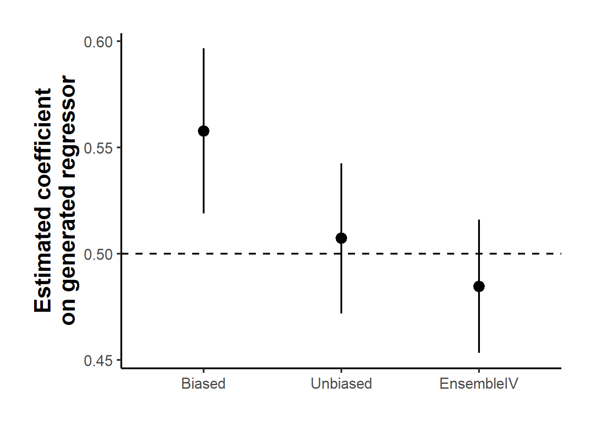
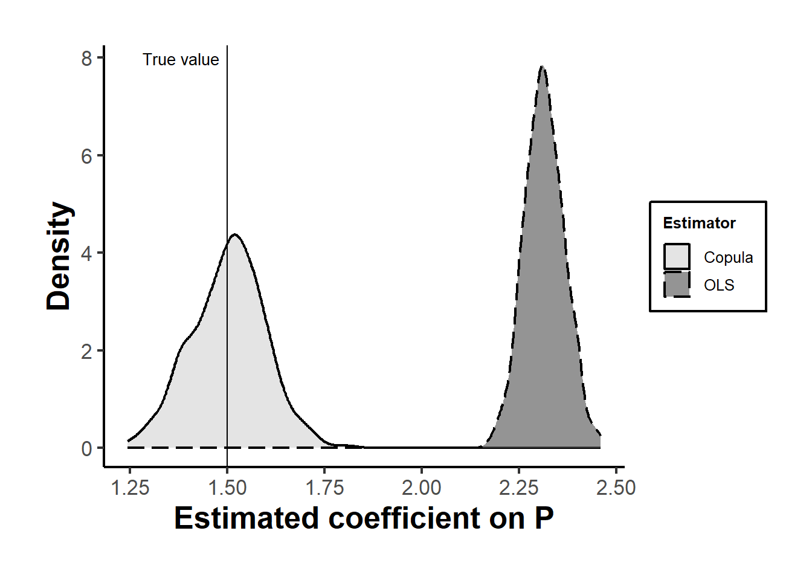

48 Endogeneity
Abstract. A regression coefficient carries a causal interpretation only when the regressor is uncorrelated with the structural error. This chapter treats endogeneity as the single failure that destroys that interpretation, and works through the four channels that produce it: measurement error, simultaneity, reverse causality, and omitted variables. It separates classical from non-classical measurement error, showing why the first attenuates a slope toward zero while the second can bias it in either direction, and extends the analysis to regressors generated by machine learning, where prediction error behaves as measurement error and ensemble learners can be transformed into valid instruments. A second strand develops instrument-free identification through the Gaussian copula control function, including the non-normality requirement that makes it work and the diagnostics that reveal when it fails. The chapter closes on endogenous sample selection, unifying Heckman-type selection models, switching regressions, control function estimators, and pattern-mixture models, with simulated and real data used to expose the role of the exclusion restriction.
Keywords: Endogeneity, Omitted variable bias, Measurement error, Simultaneity, Control function, Gaussian copula
In applied research, it’s often tempting to treat regression coefficients as if they represent causal relationships. A positive coefficient on advertising spend, for example, might be interpreted as evidence that increasing ad budgets will increase sales. But such interpretations rely on a critical assumption: that the independent variables we include in a model are exogenous.
This chapter explores the central threat to this assumption: endogeneity.
Endogeneity refers to any situation where an explanatory variable is correlated with the error term in a regression model. When this happens, our coefficient estimates are biased and inconsistent, and any causal claims are invalid.
To understand where endogeneity comes from, let’s begin with the familiar linear regression model:
\[ \mathbf{Y} = \mathbf{X} \beta + \epsilon \]
Where:
- \(\mathbf{Y}\) is an \(n \times 1\) vector of observed outcomes,
- \(\mathbf{X}\) is an \(n \times k\) matrix of explanatory variables (including a column of ones for the intercept, if present),
- \(\beta\) is a \(k \times 1\) vector of unknown parameters,
- \(\epsilon\) is an \(n \times 1\) vector of unobserved error terms.
The ordinary least squares estimator is:
\[ \begin{aligned} \hat{\beta}_{OLS} &= (\mathbf{X}'\mathbf{X})^{-1}(\mathbf{X}'\mathbf{Y}) \\ &= (\mathbf{X}'\mathbf{X})^{-1}(\mathbf{X}'(\mathbf{X}\beta + \epsilon)) \\ &= (\mathbf{X}'\mathbf{X})^{-1}(\mathbf{X}'\mathbf{X})\beta + (\mathbf{X}'\mathbf{X})^{-1}(\mathbf{X}'\epsilon) \\ &= \beta + (\mathbf{X}'\mathbf{X})^{-1}(\mathbf{X}'\epsilon) \end{aligned} \]
This derivation makes it clear: OLS is unbiased only if the second term vanishes in expectation. That is:
\[ E[(\mathbf{X}'\epsilon)] = 0 \quad \text{or equivalently,} \quad Cov(\mathbf{X}, \epsilon) = 0 \]
To produce valid estimates, OLS requires two conditions:
Zero Conditional Mean:
\[ E[\epsilon \mid \mathbf{X}] = 0 \] This implies that once we condition on the regressors, there is no systematic error left.No Correlation Between Regressors and Errors:
\[ Cov(\mathbf{X}, \epsilon) = 0 \] This is a stronger requirement. If it fails, we have an endogeneity problem.
The first condition is often satisfied by including an intercept or accounting for the distributional properties of errors. The second condition, the lack of correlation between \(\mathbf{X}\) and \(\epsilon\), is much harder to satisfy, especially in observational data.
Endogeneity violates one of the core assumptions of regression, and it has serious consequences:
- Coefficient bias: Estimates systematically differ from the true parameter values.
- Inconsistency: The bias does not vanish as the sample size increases.
- Incorrect inference: Hypothesis tests and confidence intervals become unreliable.
- Misleading decisions: In business and policy settings, this can lead to costly errors.
There are several common sources of endogeneity (Hill et al. 2021). However, most problems fall into two broad categories, treated in turn below: Endogenous Treatment (Section 48.1) and Endogenous Sample Selection (Section ??).
48.0.1 Endogenous Treatment
The treatment variable is correlated with the error term. The four canonical mechanisms below all reduce to a violation of \(Cov(\mathbf{X}, \epsilon) = 0\), but they differ in the direction of the bias and the kind of remedy that helps.
-
Omitted Variable Bias (OVB) (Section 48.1.5). This occurs when a relevant variable is left out of the model and is correlated with both the explanatory variable(s) and the outcome. OVB is a problem when the omitted variable is correlated with an included regressor and also affects the dependent variable. If either condition fails, there is no bias.
Example (Economics): We want to estimate the effect of school on earnings, but typical unobservables (e.g., motivation, ability/talent, or self-selection) pose a threat to our identification strategy.
Example (Marketing): Suppose we regress sales on advertising spend, but omit product quality. If higher-quality products get more advertising and also generate more sales, the ad spend coefficient picks up some of the effect of quality, resulting in an upward bias.
Example (Finance): Regressing firm performance on executive compensation might omit executive ability. If more able executives both command higher compensation and deliver better results, OVB leads to biased inferences.
-
Simultaneity (Feedback Effects) (Section 48.1.3). Simultaneity arises when the dependent variable and an explanatory variable are determined jointly, in equilibrium.
Example (Economics): Price and quantity demanded are determined together in supply-and-demand models. A regression of quantity on price without modeling supply will yield a biased estimate of demand sensitivity.
-
Reverse Causality (Section 48.1.4). A special case of simultaneity where the causation runs opposite to what the model assumes.
Example (Health Policy): A naive model might regress health outcomes on insurance coverage. But it is plausible that people in poor health are more likely to purchase insurance, causing reverse causality.
Over longer time intervals (e.g., yearly business data), reverse causality can look just like simultaneity in terms of its effect on regression estimates.
-
Measurement Errors (Section 48.1.1). Even if a relevant variable is included, imprecise measurement introduces bias. Classical measurement error in \(X\) leads to attenuation bias, estimated coefficients are biased toward zero, and occurs frequently in survey data, behavioral measures, and administrative records.
Example (Digital Marketing): Click-through rates or exposure to ads may be tracked with browser cookies or device IDs, but such identifiers are imperfect. The resulting measurement error biases the estimated effect of advertising downward.
48.0.2 Endogenous Sample Selection
Sample selection becomes a source of endogeneity when inclusion in the sample is related to the outcome variable.
Example (Labor Economics): Estimating the effect of education on wages using only employed individuals excludes those not currently working. If employment is correlated with unobserved traits (e.g., motivation), the wage equation is biased.
The four mechanisms above and the sample-selection case share one signature, a regressor correlated with the error term, but they differ in how that correlation is produced, and therefore in what it takes to remove it. Table 48.1 collects them, with the section that treats each in full.
| Type | Mechanism | Example Context | Section |
|---|---|---|---|
| Omitted variable bias | Omitted variable affects both \(X\) and \(Y\) | Managerial talent in finance, brand quality | 48.1.5 |
| Simultaneity | \(X\) and \(Y\) are determined jointly | Price \(\leftrightarrow\) demand | 48.1.3 |
| Reverse causality | \(Y\) causes \(X\), the opposite direction from the model assumption | Health \(\to\) insurance, revenue \(\to\) ad spend | 48.1.4 |
| Measurement error | \(X\) is observed with error | Digital metrics, survey measures | 48.1.1 |
| Endogenous sample selection | Sample selection is correlated with the outcome | Labor force participation, customer panels | ?? |
Reading down the mechanism column shows why no single remedy covers the whole set. Omitted variable bias and measurement error are failures of what the regression can see, so they are addressed by finding a proxy, an instrument, or a validation sample. Simultaneity and reverse causality are failures of the direction of the arrow, and need an exclusion restriction or a design that breaks the feedback. Sample selection is a failure of who is in the data at all, and is corrected by modelling the selection rule itself. The chapter takes them in that order.
Endogeneity is not always fatal: if we can identify it and adjust for it, we can still make credible inferences.
- Control Variables (Section ??)
If you suspect an omitted variable but have data on it, you can include it as a control. This is called a “selection on observables” approach.
However, this strategy is often insufficient because:
- Many important factors are unobserved (e.g., motivation, ability, expectations).
- Measured variables may contain measurement error, creating new biases.
- Toolbox for Endogeneity
To address more complex cases, including those involving unobservables, we introduce more advanced methods (see Causal Inference Toolbox)
48.1 Endogenous Treatment
Endogenous treatment occurs when the variable of interest (the “treatment”) is not randomly assigned and is correlated with unobserved determinants of the outcome. As discussed earlier, this can arise from omitted variables, simultaneity, or reverse causality. But even if the true variable is theoretically exogenous, measurement error (Section 48.1.1) can make it endogenous in practice.
This section focuses on how measurement errors (Section 48.1.1), especially in explanatory variables, introduce bias (typically attenuation bias) and why they are a central concern in applied research.
48.1.1 Measurement Errors
Measurement error refers to the difference between the true value of a variable and its observed (measured) value. Almost every empirical dataset contains some discrepancy between what the researcher records and what actually occurred, and the size of that gap controls how much of an estimate reflects the underlying causal relationship versus the recording process itself. In observational settings, the problem is rarely a single rogue data point: it is a systematic feature of how variables are collected, transcribed, and reported.
The most common pathways through which mismeasurement enters a dataset can be grouped into a few broad sources:
- Sources of measurement error:
- Coding errors: Manual or software-induced data entry mistakes.
- Reporting errors: Self-report bias, recall issues, or strategic misreporting.
These mechanical sources matter because they shape the statistical structure of the noise, and that structure determines whether the resulting bias is benign or destructive.
48.1.1.1 Two Broad Types of Measurement Error
For analytical purposes, it is helpful to separate measurement error into two regimes that have very different consequences for OLS. The first behaves like ordinary noise that washes out in large samples. The second introduces structure that survives even in the limit and can flip the sign of an estimate.
-
Random (Stochastic) Error: Classical Measurement Error (Section 48.1.1.2)
- Noise is unpredictable and averages out in expectation.
- Error is uncorrelated with the true variable and the regression error.
- Common in survey data, tracking errors.
-
Systematic (Non-classical) Error: Non-Random Bias (Section 48.1.1.3)
- Measurement error exhibits consistent patterns across observations.
- Often arises from:
- Instrument error: e.g., faulty sensors, uncalibrated scales.
- Method error: poor sampling, survey design flaws.
- Human error: judgment errors, social desirability bias.
The distinction between the two regimes is not just bookkeeping. It dictates which remedy is appropriate and how much we can hope to recover. Random error preserves the direction of the estimated effect, just dampening its magnitude, whereas systematic error can pull estimates in either direction depending on the correlation pattern.
Key insight:
- Random error adds noise, pushing estimates toward zero.
- Systematic error introduces bias, pushing estimates either upward or downward.
The remainder of this section formalizes each regime, beginning with the classical case (Section 48.1.1.2) where standard derivations yield clean attenuation results, before turning to the non-classical case (Section 48.1.1.3) where remedies typically require an instrumental variable or a validation sample.
48.1.1.2 Classical Measurement Error
48.1.1.2.1 Right-Hand Side Variable
Let’s examine the most common and analytically tractable case: classical measurement error in an explanatory variable.
Suppose the true model is:
\[ Y_i = \beta_0 + \beta_1 X_i + u_i \]
But we do not observe \(X_i\) directly. Instead, we observe:
\[ \tilde{X}_i = X_i + e_i \]
where \(e_i\) is the measurement error, assumed classical:
- \(E[e_i] = 0\)
- \(Cov(X_i, e_i) = 0\)
- \(Cov(e_i, u_i) = 0\)
Now, substitute \(\tilde{X}_i\) into the regression:
\[ \begin{aligned} Y_i &= \beta_0 + \beta_1 ( \tilde{X}_i - e_i ) + u_i \\ &= \beta_0 + \beta_1 \tilde{X}_i + (u_i - \beta_1 e_i) \\ &= \beta_0 + \beta_1 \tilde{X}_i + v_i \end{aligned} \]
where \(v_i = u_i - \beta_1 e_i\) is a composite error term.
Since \(\tilde{X}_i\) contains \(e_i\), and \(v_i\) contains \(e_i\), we now have:
\[ Cov(\tilde{X}_i, v_i) \neq 0 \]
This correlation violates the exogeneity assumption and introduces endogeneity (Section 48).
We can derive the asymptotic bias:
\[ \begin{aligned} E[\tilde{X}_i v_i] &= E[(X_i + e_i)(u_i - \beta_1 e_i)] \\ &= -\beta_1 Var(e_i) \\ &\neq 0 \end{aligned} \]
This implies:
- If \(\beta_1 > 0\), then \(\hat{\beta}_1\) is biased downward.
- If \(\beta_1 < 0\), then \(\hat{\beta}_1\) is biased upward.
This is called attenuation bias: the estimated effect is biased toward zero.
As the variance of the error \(Var(e_i)\) increases or \(\frac{Var(e_i)}{Var(\tilde{X}_i)} \to 1\), this bias becomes more severe.
Attenuation Factor
The OLS estimator based on the noisy regressor is
\[ \hat{\beta}_{OLS} = \frac{ \text{cov}(\tilde{X}, Y)}{\text{var}(\tilde{X})} = \frac{\text{cov}(X + e, \beta X + u)}{\text{var}(X + e)}. \]
Using the assumptions of classical measurement error, it follows that:
\[ plim\ \hat{\beta}_{OLS} = \beta \cdot \frac{\sigma_X^2}{\sigma_X^2 + \sigma_e^2} = \beta \cdot \lambda, \]
where:
- \(\sigma_X^2\) is the variance of the true regressor \(X\),
- \(\sigma_e^2\) is the variance of the measurement error \(e\), and
- \(\lambda = \frac{\sigma_X^2}{\sigma_X^2 + \sigma_e^2}\) is called the reliability ratio, signal-to-total variance ratio, or attenuation factor.
Since \(\lambda \in (0, 1]\), the bias always attenuates the estimate toward zero. The degree of attenuation bias is:
\[ \hat{\beta}_{OLS} - \beta = - (1 - \lambda)\beta, \]
which implies:
- If \(\lambda = 1\), then \(\hat{\beta}_{OLS} = \beta\), no bias (no measurement error).
- If \(\lambda < 1\), then \(\hat{\beta}_{OLS} < \beta\), attenuation toward zero.
Important Notes on Measurement Error
-
Data transformations can magnify measurement error.
Suppose the true model is nonlinear:
\[ y = \beta x + \gamma x^2 + \epsilon, \]
and \(x\) is measured with classical error. Then, the attenuation factor for \(\hat{\gamma}\) is approximately the square of the attenuation factor for \(\hat{\beta}\):
\[ \lambda_{\hat{\gamma}} \approx \lambda_{\hat{\beta}}^2. \]
This shows how nonlinear transformations (e.g., squares, logs) can exacerbate measurement error problems.
-
Including covariates can increase attenuation bias.
Adding covariates that are correlated with the mismeasured variable can worsen bias in the coefficient of interest, especially if the measurement error is not accounted for in those covariates.
Remedies for Measurement Error
To address attenuation bias caused by classical measurement error, consider the following strategies:
- Use validation data or survey information to estimate \(\sigma_X^2\), \(\sigma_e^2\), or \(\lambda\) and apply correction methods (e.g., SIMEX, regression calibration).
-
Instrumental Variables Approach
Use an instrument \(Z\) that:- Is correlated with the true variable \(X\),
- Is uncorrelated with the regression error \(\epsilon\), and
- Is uncorrelated with the measurement error \(e\).
-
Reconsider the analysis
If no good instruments or validation data exist, and the attenuation bias is too severe, it may be prudent to reconsider the analysis or research question.
48.1.1.2.2 Left-Hand Side Variable
Measurement error in the dependent variable (i.e., the response or outcome) is fundamentally different from measurement error in explanatory variables. Its consequences are often less problematic for consistent estimation of regression coefficients (e.g., the zero conditional mean assumption is not violated), but not necessarily for statistical inference (e.g., higher standard errors) or model fit.
Suppose we are interested in the standard linear regression model:
\[ Y_i = \beta X_i + u_i, \]
but we do not observe \(Y_i\) directly. Instead, we observe:
\[ \tilde{Y}_i = Y_i + v_i, \]
where:
- \(v_i\) is measurement error in the dependent variable,
- \(E[v_i] = 0\) (mean-zero),
- \(v_i\) is uncorrelated with \(X_i\) and \(u_i\),
- \(v_i\) is homoskedastic and independent across observations.
Be extra careful here!
These are classical‐error assumptions:
- Mean zero: \(\mathbb{E}[v\mid X]=0\).
- Exogeneity: \(v\) is uncorrelated with each regressor and with the structural disturbance \(\epsilon\) (i.e., \(\operatorname{Cov}(X,v)=\operatorname{Cov}(\epsilon,v)=0\)).
- Homoskedasticity / finite moments for the law‑of‑large‑numbers to apply.
The regression we actually estimate is:
\[ \tilde{Y}_i = \beta X_i + u_i + v_i. \]
We can define a composite error term:
\[ \tilde{u}_i = u_i + v_i, \]
so that the model becomes:
\[ \tilde{Y}_i = \beta X_i + \tilde{u}_i. \]
Under the classical-error assumptions, the extra noise simply enlarges the composite error term \(\tilde{u}_i\), leaving
\[ \hat\beta^{\text{OLS}} =\beta + ( X' X)^{-1} X'(u+v) \xrightarrow{p} \beta , \]
so the estimator remains consistent and only its variance rises.
Key Insights
-
Unbiasedness and Consistency of \(\hat{\beta}\):
As long as \(E[\tilde{u}_i \mid X_i] = 0\), which holds under the classical assumptions (i.e., \(E[u_i \mid X_i] = 0\) and \(E[v_i \mid X_i] = 0\)), the OLS estimator of \(\beta\) remains unbiased and consistent.
This is because measurement error in the left-hand side does not induce endogeneity. The zero conditional mean assumption is preserved.
-
Interpretation (Identification of the Causal Effect):
Econometricians and causal researchers often focus on consistent estimation of causal effects under strict exogeneity. Since \(v_i\) just adds noise to the outcome and doesn’t systematically relate to \(X_i\), the slope estimate \(\hat{\beta}\) remains a valid estimate of the causal effect \(\beta\).
-
Statistical Implications (Inference and Precision):
Although \(\hat{\beta}\) is consistent, the variance of the error term increases due to the added noise \(v_i\). Specifically:
\[ \text{Var}(\tilde{u}_i) = \text{Var}(u_i) + \text{Var}(v_i) = \sigma_u^2 + \sigma_v^2. \]
This leads to:
- Higher residual variance \(\Rightarrow\) lower \(R^2\)
- Higher standard errors for coefficient estimates
- Wider confidence intervals, reducing the precision of inference
Thus, even though the point estimate is valid, inference becomes weaker: hypothesis tests are less powerful, and conclusions less precise.
Practical Illustration
- Suppose \(X\) is a marketing investment and \(Y\) is sales revenue.
- If sales are measured with noise (e.g., misrecorded sales data, rounding, reporting delays), the coefficient on marketing is still consistently estimated.
- However, uncertainty around the estimate grows: wider confidence intervals might make it harder to detect statistically significant effects, especially in small samples.
Summary Table: Measurement Error Consequences
Table 48.2 compares the consequences of measurement error in the regressor versus in the outcome.
| Location of Measurement Error | Bias in \(\hat{\beta}\) | Consistency | Affects Inference? | Typical Concern |
|---|---|---|---|---|
| Regressor (\(X\)) | Yes (attenuation) | No | Yes | Econometric & statistical |
| Outcome (\(Y\)) | No | Yes | Yes | Mainly statistical |
48.1.1.3 Non-Classical Measurement Error
In the classical measurement error model, we assume that the measurement error \(\epsilon\) is independent of the true variable \(X\) and of the regression disturbance \(u\). However, in many realistic data scenarios, this assumption does not hold. Non-classical measurement error refers to cases where:
- \(\epsilon\) is correlated with \(X\),
- or possibly even correlated with \(u\).
Violating the classical assumptions introduces additional and potentially complex biases in OLS estimation.
Recall that in the classical measurement error model (Section 48.1.1.2), we observe:
\[ \tilde{X} = X + \epsilon, \]
where:
- \(\epsilon\) is independent of \(X\) and \(u\),
- \(E[\epsilon] = 0\).
The true model is:
\[ Y = \beta X + u. \]
Then, OLS based on the mismeasured regressor gives:
\[ \hat{\beta}_{OLS} = \frac{\text{cov}(\tilde{X}, Y)}{\text{var}(\tilde{X})} = \frac{\text{cov}(X + \epsilon, \beta X + u)}{\text{var}(X + \epsilon)}. \]
With classical assumptions, this simplifies to:
\[ plim\ \hat{\beta}_{OLS} = \beta \cdot \frac{\sigma_X^2}{\sigma_X^2 + \sigma_\epsilon^2} = \beta \cdot \lambda, \]
where \(\lambda\) is the reliability ratio, which attenuates \(\hat{\beta}\) toward zero.
Let us now relax the independence assumption and allow for correlation between \(X\) and \(\epsilon\). In particular, suppose:
- \(\text{cov}(X, \epsilon) = \sigma_{X\epsilon} \ne 0\).
Then the probability limit of the OLS estimator becomes:
\[ \begin{aligned} plim\ \hat{\beta} &= \frac{\text{cov}(X + \epsilon, \beta X + u)}{\text{var}(X + \epsilon)} \\ &= \frac{\beta (\sigma_X^2 + \sigma_{X\epsilon})}{\sigma_X^2 + \sigma_\epsilon^2 + 2 \sigma_{X\epsilon}}. \end{aligned} \]
We can rewrite this as:
\[ \begin{aligned} plim\ \hat{\beta} &= \beta \left(1 - \frac{\sigma_\epsilon^2 + \sigma_{X\epsilon}}{\sigma_X^2 + \sigma_\epsilon^2 + 2 \sigma_{X\epsilon}} \right) \\ &= \beta (1 - b_{\epsilon \tilde{X}}), \end{aligned} \]
where \(b_{\epsilon \tilde{X}}\) is the regression coefficient of \(\epsilon\) on \(\tilde{X}\), or more precisely:
\[ b_{\epsilon \tilde{X}} = \frac{\text{cov}(\epsilon, \tilde{X})}{\text{var}(\tilde{X})}. \]
This makes clear that the bias in \(\hat{\beta}\) depends on how strongly the measurement error is correlated with the observed regressor \(\tilde{X}\). This general formulation nests the classical case (Section 48.1.1.2) as a special case:
- In classical error: \(\sigma_{X\epsilon} = 0 \Rightarrow b_{\epsilon \tilde{X}} = \frac{\sigma^2_\epsilon}{\sigma^2_X + \sigma^2_\epsilon} = 1 - \lambda\).
Implications of Non-Classical Measurement Error
- When \(\sigma_{X\epsilon} > 0\), the attenuation bias can increase or decrease depending on the balance of variances.
- In particular:
- If more than half of the variance in \(\tilde{X}\) is due to measurement error, increasing \(\sigma_{X\epsilon}\) increases attenuation.
- If less than half is due to measurement error, it can actually reduce attenuation.
- This phenomenon is sometimes called mean-reverting measurement error: the measurement error pulls observed values toward the mean, distorting estimates (Bound et al. 1989, 2001).
48.1.1.3.1 A General Framework for Non-Classical Measurement Error
Bound et al. (2001) offer a unified matrix framework that accommodates measurement error in both the independent and dependent variables.
Let the true model be:
\[ \mathbf{Y} = \mathbf{X} \beta + \epsilon, \]
but we observe \(\tilde{X} = X + U\) and \(\tilde{Y} = Y + v\), where:
- \(U\) is a matrix of measurement error in \(X\),
- \(v\) is a vector of measurement error in \(Y\).
Then, the observed model becomes:
\[ \hat{\beta} = (\tilde{X}' \tilde{X})^{-1} \tilde{X}' \tilde{Y}. \]
Substituting the observed quantities:
\[ \begin{aligned} \tilde{Y} &= Y + v = X \beta + \epsilon + v, \\ &= \tilde{X} \beta - U \beta + v + \epsilon. \end{aligned} \]
Hence,
\[ \hat{\beta} = (\tilde{X}' \tilde{X})^{-1} \tilde{X}' (\tilde{X} \beta - U \beta + v + \epsilon), \]
which simplifies to:
\[ \hat{\beta} = \beta + (\tilde{X}' \tilde{X})^{-1} \tilde{X}' (-U \beta + v + \epsilon). \]
Taking the probability limit:
\[ plim\ \hat{\beta} = \beta + plim\ [(\tilde{X}' \tilde{X})^{-1} \tilde{X}' (-U \beta + v)], \]
Now define:
\[ W = [U \quad v], \]
and we can express the bias compactly as:
\[ plim\ \hat{\beta} = \beta + plim\ [(\tilde{X}' \tilde{X})^{-1} \tilde{X}' W \begin{bmatrix} - \beta \\ 1 \end{bmatrix} ]. \]
This formulation highlights a powerful insight:
Bias in \(\hat{\beta}\) arises from the linear projection of the measurement errors onto the observed \(\tilde{X}\).
This expression does not assert that \(v\) necessarily biases \(\hat\beta\). It simply makes explicit that bias arises whenever the linear projection of \((U\beta-v)\) onto \(\tilde X\) is non‑zero. Three cases illustrate the point (Table 48.3).
| Case | Key correlation | Consequence for \(\hat\beta\) |
|
\(U\equiv0, \operatorname{Cov}(\tilde X,v)=0\) |
projection term vanishes | Consistent, larger standard errors |
|
Correlated Y‑error \(U\equiv0, \operatorname{Cov}(\tilde X,v)\neq0\) |
projection picks up \(v\) | Biased (attenuation or sign reversal possible) |
|
Both X‑ and Y‑error, independent \(\operatorname{Cov}(X,U)\neq0, \operatorname{Cov}(\tilde X,v)=0\) |
\(U\beta\) projects onto \(\tilde X\) | Biased because of \(U\), not \(v\) |
Hence, your usual (Section 48.1.1.2.2) “harmless \(Y\)-noise” result is the special case in the first row.
Practical implications
Check assumptions explicitly. If the dataset was generated by self‑reports, simultaneous proxies, or modeled outcomes, it is rarely safe to assume \(\operatorname{Cov}(X,v)=0\).
-
Correlated errors in \(Y\) can creep in through:
- Common data‑generating mechanisms (e.g., same survey module records both earnings (\(Y\)) and hours worked (\(X\))).
- Prediction‑generated variables where \(v\) inherits correlation with the features used to build \(\tilde Y\).
Joint mis‑measurement (\(U\) and \(v\) correlated) is common in administrative or sensor data. Here, even “classical” \(v\) with respect to \(X\) can correlate with \(\tilde X=X+U\).
Measurement error in \(Y\) is benign only under strong exogeneity and independence conditions. The Bound, Brown, and Mathiowetz matrix form (Bound et al. 2001) simply shows that once those conditions fail (or once \(X\) itself is mis‑measured) the same projection logic that produces attenuation bias for \(X\) can also transmit bias from \(v\) to \(\hat\beta\).
So the rule of thumb you learned is true in its narrow, classical setting, but Bound et al. (2001) remind us that empirical work often strays outside that safe harbor.
Consequences and Correction
- Non-classical error can lead to over- or underestimation, unlike the always-attenuating classical case.
- The direction and magnitude of bias depend on the correlation structure of \(X\), \(\epsilon\), and \(v\).
- This poses serious problems in many survey and administrative data settings where systematic misreporting occurs.
Practical Solutions
Instrumental Variables
Use an instrument \(Z\) that is correlated with the true variable \(X\), but uncorrelated with both measurement error and the regression disturbance. IV can help eliminate both classical (Section 48.1.1.2) and non-classical (Section 48.1.1.3) error-induced biases.Validation Studies
Use a subset of the data with accurate measures to estimate the structure of measurement error and correct estimates via techniques such as regression calibration, multiple imputation, or SIMEX.Modeling the Error Process
Explicitly model the measurement error process, especially in longitudinal or panel data (e.g., via state-space models or Bayesian approaches).Binary/Dummy Variable Case
Non-classical error in binary regressors (e.g., misclassification) also leads to bias, but IV methods still apply. For example, if education level is misreported in survey data, a valid instrument (e.g., policy-based variation) can correct for misclassification bias.
Summary
Table 48.4 contrasts classical and non-classical measurement error.
| Feature | Classical Error | Non-Classical Error |
|---|---|---|
| \(\text{Cov}(X, \epsilon)\) | 0 | \(\ne 0\) |
| Bias in \(\hat{\beta}\) | Always attenuation | Can attenuate or inflate |
| Consistency of OLS | No | No |
| Effect of Variance Structure | Predictable | Depends on \(\sigma_{X\epsilon}\) |
| Fixable with IV | Yes | Yes |
In short, non-classical measurement error breaks the comforting regularity of attenuation bias. It can produce arbitrary biases depending on the nature and structure of the error. Instrumental variables and validation studies are often the only reliable tools for addressing this complex problem.
48.1.1.4 Solution to Measurement Errors in Correlation Estimation
48.1.1.4.1 Bayesian Correction for Correlation Coefficient
We begin by expressing the Bayesian posterior for a correlation coefficient \(\rho\):
\[ \begin{aligned} P(\rho \mid \text{data}) &= \frac{P(\text{data} \mid \rho) P(\rho)}{P(\text{data})} \\ \text{Posterior Probability} &\propto \text{Likelihood} \times \text{Prior Probability} \end{aligned} \]
Where:
- \(\rho\) is the true population correlation coefficient
- \(P(\text{data} \mid \rho)\) is the likelihood function
- \(P(\rho)\) is the prior density of \(\rho\)
- \(P(\text{data})\) is the marginal likelihood (a normalizing constant)
With sample correlation coefficient \(r\):
\[ r = \frac{S_{xy}}{\sqrt{S_{xx} S_{yy}}} \]
According to Schisterman et al. (2003), pp. 3, the posterior density of \(\rho\) can be approximated as:
\[ P(\rho \mid x, y) \propto P(\rho) \cdot \frac{(1 - \rho^2)^{(n - 1)/2}}{(1 - \rho r)^{n - 3/2}} \]
This approximation leads to a posterior that can be modeled via the Fisher transformation:
- Let \(\rho = \tanh(\xi)\), where \(\xi \sim N(z, 1/n)\)
- \(r = \tanh(z)\) is the Fisher-transformed correlation
Using conjugate normal approximations, we derive the posterior for the transformed correlation \(\xi\) as:
- Posterior Variance:
\[ \sigma^2_{\text{posterior}} = \frac{1}{n_{\text{prior}} + n_{\text{likelihood}}} \]
- Posterior Mean:
\[ \mu_{\text{posterior}} = \sigma^2_{\text{posterior}} \left(n_{\text{prior}} \cdot \tanh^{-1}(r_{\text{prior}}) + n_{\text{likelihood}} \cdot \tanh^{-1}(r_{\text{likelihood}})\right) \]
To simplify the mathematics, we may assume a prior of the form:
\[ P(\rho) \propto (1 - \rho^2)^c \]
where \(c\) controls the strength of the prior. If no prior information is available, we can set \(c = 0\) so that \(P(\rho) \propto 1\).
Example: Combining Estimates from Two Studies
Let:
- Current study: \(r_{\text{likelihood}} = 0.5\), \(n_{\text{likelihood}} = 200\)
- Prior study: \(r_{\text{prior}} = 0.2765\), \(n_{\text{prior}} = 50205\)
Step 1: Posterior Variance
\[ \sigma^2_{\text{posterior}} = \frac{1}{50205 + 200} = 0.0000198393 \]
Step 2: Posterior Mean
Apply Fisher transformation:
- \(\tanh^{-1}(0.2765) \approx 0.2841\)
- \(\tanh^{-1}(0.5) = 0.5493\)
Then:
\[ \begin{aligned} \mu_{\text{posterior}} &= 0.0000198393 \times (50205 \times 0.2841 + 200 \times 0.5493) \\ &= 0.0000198393 \times (14260.7 + 109.86) \\ &= 0.0000198393 \times 14370.56 = 0.2850 \end{aligned} \]
Thus, the posterior distribution of \(\xi = \tanh^{-1}(\rho)\) is:
\[ \xi \sim N(0.2850, 0.0000198393) \]
Transforming back:
- Posterior mean correlation: \(\rho = \tanh(0.2850) = 0.2776\)
- 95% CI for \(\xi\): \(0.2850 \pm 1.96 \cdot \sqrt{0.0000198393} = (0.2762, 0.2937)\)
- Transforming endpoints: \(\tanh(0.2762) = 0.2694\), \(\tanh(0.2937) = 0.2855\)
The Bayesian posterior distribution for the correlation coefficient is:
- Mean: \(\hat{\rho}_{\text{posterior}} = 0.2776\)
- 95% CI: \((0.2694,\ 0.2855)\)
This Bayesian adjustment is especially useful when:
- There is high sampling variation due to small sample sizes
- Measurement error attenuates the observed correlation
- Combining evidence from multiple studies (meta-analytic context)
By leveraging prior information and applying the Fisher transformation, researchers can obtain a more stable and accurate estimate of the true underlying correlation.
# Define inputs
n_new <- 200
r_new <- 0.5
alpha <- 0.05
# Bayesian update function for correlation coefficient
update_correlation <- function(n_new, r_new, alpha) {
# Prior (meta-analysis study)
n_meta <- 50205
r_meta <- 0.2765
# Step 1: Posterior variance (in Fisher-z space)
var_xi <- 1 / (n_new + n_meta)
# Step 2: Posterior mean (in Fisher-z space)
mu_xi <- var_xi * (n_meta * atanh(r_meta) + n_new * atanh(r_new))
# Step 3: Confidence interval in Fisher-z space
z_crit <- qnorm(1 - alpha / 2)
upper_xi <- mu_xi + z_crit * sqrt(var_xi)
lower_xi <- mu_xi - z_crit * sqrt(var_xi)
# Step 4: Transform back to correlation scale
mean_rho <- tanh(mu_xi)
upper_rho <- tanh(upper_xi)
lower_rho <- tanh(lower_xi)
# Return all values as a list
list(
mu_xi = mu_xi,
var_xi = var_xi,
upper_xi = upper_xi,
lower_xi = lower_xi,
mean_rho = mean_rho,
upper_rho = upper_rho,
lower_rho = lower_rho
)
}
# Run update
updated <-
update_correlation(n_new = n_new,
r_new = r_new,
alpha = alpha)
# Display updated posterior mean and confidence interval
cat("Posterior mean of rho:", round(updated$mean_rho, 4), "\n")
#> Posterior mean of rho: 0.2775
cat(
"95% CI for rho: (",
round(updated$lower_rho, 4),
",",
round(updated$upper_rho, 4),
")\n"
)
#> 95% CI for rho: ( 0.2694 , 0.2855 )
# For comparison: Classical (frequentist) confidence interval around r_new
se_r <- sqrt(1 / n_new)
z_r <- qnorm(1 - alpha / 2) * se_r
ci_lo <- r_new - z_r
ci_hi <- r_new + z_r
cat("Frequentist 95% CI for r:",
round(ci_lo, 4),
"to",
round(ci_hi, 4),
"\n")
#> Frequentist 95% CI for r: 0.3614 to 0.638648.1.2 Measurement Error in Machine-Learning-Generated Regressors
A fast-growing empirical practice combines supervised machine learning with regression in a two-phase workflow. In the first phase, a model is trained on a labeled sample to predict a variable of interest from features. In the second phase, the model’s predictions are used as an independent variable in a regression to draw a causal or descriptive inference. Researchers reach for this design whenever the variable they care about is expensive to observe but cheap to predict. Cengiz et al. (2022) train a boosted tree to predict which workers are affected by minimum-wage changes and then estimate the effect of those changes on labor-market outcomes. Moreno and Terwiesch (2014) mine sentiment from user-generated text and study its effect on purchasing. Zhang et al. (2022) use deep learning to score the quality of Airbnb listing photographs and then estimate how image quality drives demand. In each case a predicted variable stands in for one that was never directly measured at scale.
The difficulty is that predictions are imperfect, and the prediction error becomes measurement error (Section 48.1.1) in the second-phase regression. This is the classical generated-regressor problem of Pagan (1984), now with a machine learning model supplying the generated variable. Writing the true second-phase model as \[ Y = X\beta + W\Pi + \varepsilon, \qquad \mathbb{E}[\varepsilon \mid X, W] = 0, \] where \(X\) is the variable of interest and \(W\) collects exogenous controls, the analyst does not observe \(X\) on the large sample and instead substitutes the prediction \(\hat{X} = X + e\), with \(e\) the prediction error. The regression actually estimated is \[ Y = \hat{X}\beta + W\Pi + (\varepsilon - e\beta), \] and the composite error \(u = \varepsilon - e\beta\) is correlated with the regressor: \[ \mathrm{Cov}(\hat{X}, u) = \mathrm{Cov}(X + e,\, \varepsilon - e\beta) = -\beta\bigl(\mathrm{Cov}(X, e) + \mathrm{Var}(e)\bigr). \] Unless \(\mathrm{Cov}(X, e)\) happens to cancel \(\mathrm{Var}(e)\) exactly, ordinary least squares is biased and inconsistent, exactly the endogeneity mechanism analyzed for classical measurement error (Section 48.1.1.2) above. Two features distinguish this modern version. First, no restriction is placed on whether \(X\) is continuous or binary, nor on whether \(e\) is independent of \(X\) (classical error) or correlated with it (non-classical error), so the bias need not be simple attenuation. Second, and more usefully, the measurement error is not hidden. Because the machine learning model was trained and tested on a labeled sample where the ground truth of \(X\) is known, the analyst can directly observe \(e = \hat{X} - X\) on that sample and estimate its properties, an advantage that traditional measurement-error settings, where the error is fundamentally unobservable, never enjoy.
That observability has produced a small literature of purpose-built corrections. SIMEX resamples the observed error to extrapolate the bias away (Stefanski and Cook 1995), with a misclassification variant for binary variables (Küchenhoff et al. 2006). Yang et al. (2018) bring SIMEX to the data-mining setting. Regression calibration replaces the prediction with its expectation given the true value, learned on the labeled sample (Gleser 1992; Carroll et al. 2006). Newer methods target the machine learning case directly: Fong and Tyler (2021) develop a GMM estimator, Qiao and Huang (2021) correct misclassification bias, and Wang et al. (2020) correct inference on machine-predicted outcomes. The method developed at length here, EnsembleIV of Burtch et al. (2026), published in Management Science, takes an instrumental-variables route that turns the ensemble model itself into a source of instruments and, unlike its predecessors, handles continuous and binary generated variables and classical and non-classical error within one framework.
48.1.2.1 Ensemble Learners as Instruments
The instrumental variable remedy for measurement error needs a variable \(Z\) that is correlated with the mismeasured regressor (relevance) but uncorrelated with the composite error (exclusion). Finding such an instrument is normally the hard part, because the exclusion restriction cannot be checked and must be argued on substantive grounds. The insight of EnsembleIV is that an ensemble model hands the analyst a pool of candidate instruments for free. If the first-phase model is an ensemble of \(M\) individual learners, for instance the \(M\) trees of a random forest, then rather than using the aggregated prediction \(\hat{X} = \frac{1}{M}\sum_i \hat{X}^{(i)}\), one can designate the prediction of one learner \(\hat{X}^{(i)}\) as the mismeasured regressor and use the predictions of the other learners \(\hat{X}^{(j)}\), \(j \neq i\), as candidate instruments.
Relevance holds automatically: different learners predict the same target, so their predictions are correlated, \(\mathrm{Cov}(\hat{X}^{(j)}, \hat{X}^{(i)}) \neq 0\). Exclusion is the problem. A candidate instrument satisfies it only if \(\mathrm{Cov}(\hat{X}^{(j)}, \hat{X}^{(i)} - X) = 0\), that is, if learner \(j\)’s prediction is uncorrelated with learner \(i\)’s prediction error, and there is no reason a raw pair of learners should comply. The earlier ForestIV method of Yang et al. (2022) relies on the chance that some pairs of trees in a random forest happen to have weakly correlated errors, exploiting the diversity property of random forests (Breiman 2001), and then searches for the combination of learners that best satisfies exclusion. EnsembleIV instead makes every candidate comply by construction, through a transformation.
48.1.2.2 Transforming a Candidate Into a Valid Instrument
The transformation adapts the imperfect-instruments idea of Nevo and Rosen (2012), who relax strict exclusion and work with instruments known only to be less correlated with the error than the endogenous regressor is. Define, for a candidate instrument \(Z\) with composite error \(u\), \[ \lambda = \frac{\rho_{Zu}}{\rho_{\hat{X}u}} = \frac{\mathrm{Cov}(Z, u)}{\mathrm{Cov}(\hat{X}, u)} \cdot \frac{\sigma_{\hat{X}}}{\sigma_Z}, \] which measures how much \(Z\) violates the exclusion restriction relative to how much the endogenous regressor \(\hat{X}\) does. The key result is that a simple linear recombination of \(Z\) and \(\hat{X}\) purges the violation.
Lemma (Nevo-Rosen transformation). Let \(\tilde{Z} = \sigma_{\hat{X}} Z - \lambda \sigma_Z \hat{X}\). Then \(\mathrm{Cov}(\tilde{Z}, u) = 0\), so \(\tilde{Z}\) satisfies the exclusion restriction exactly.
The proof is a one-line substitution: \[ \begin{aligned} \mathrm{Cov}(\tilde{Z}, u) &= \sigma_{\hat{X}}\mathrm{Cov}(Z, u) - \lambda \sigma_Z \mathrm{Cov}(\hat{X}, u) \\ &= \sigma_{\hat{X}}\mathrm{Cov}(Z, u) - \frac{\mathrm{Cov}(Z, u)}{\mathrm{Cov}(\hat{X}, u)} \frac{\sigma_{\hat{X}}}{\sigma_Z}\sigma_Z\mathrm{Cov}(\hat{X}, u) \\ &= 0. \end{aligned} \] In a generic measurement-error problem \(\lambda\) is unknowable because \(u\), and hence the error \(e\), is unobserved. Here it is estimable. Under the maintained assumptions that the structural error \(\varepsilon\) is mean-independent of the covariates and that each learner’s prediction error is uncorrelated with \(\varepsilon\), the composite covariances reduce to error covariances, \(\mathrm{Cov}(Z, u) = -\beta\,\mathrm{Cov}(Z, e)\) and \(\mathrm{Cov}(\hat{X}, u) = -\beta\,\mathrm{Cov}(\hat{X}, e)\), so the unknown \(\beta\) cancels and \[ \lambda = \frac{\mathrm{Cov}(Z, e)}{\mathrm{Cov}(\hat{X}, e)} \cdot \frac{\sigma_{\hat{X}}}{\sigma_Z}. \] Every quantity on the right can be computed on the labeled test sample, where the prediction error \(e = \hat{X} - X\) is observed. The algorithm therefore estimates \(\hat{\lambda}\) on the test data and applies the transformation on the large unlabeled sample. Burtch et al. (2026) show that the plug-in \(\hat{\lambda}\) estimated on a sufficiently large test set converges almost surely to the (uncomputable) value defined on the unlabeled sample, so the swap is asymptotically innocuous.
48.1.2.3 Selecting Strong Instruments, Averaging, and Cross-Fitting
Applying the transformation to every other learner turns one designated endogenous covariate \(\hat{X}^{(i)}\) into \(M-1\) asymptotically valid instruments. Using all of them is unwise. Some are only weakly correlated with the regressor, and weak instruments are a well-known source of bias and distorted inference (Bound et al. 1995; Andrews et al. 2019). Too many instruments overfit the first stage. EnsembleIV therefore selects a small set of strong instruments through one of three routes. The first is a top-\(n\) heuristic that keeps the transformed instruments most correlated with the regressor. The second is a principal-components condensation of the transformed instruments, following the factorized-instrument idea, whose components remain valid because they are linear combinations of valid instruments. The third is the LASSO instrument selection of Belloni et al. (2012). The number of instruments to retain can itself be chosen to minimize an approximate mean-squared error (Donald and Newey 2001). In practice a handful suffices.
The selected instruments feed a standard IV regression: two-stage least squares for a linear second phase (Donald and Newey 2001), or two-stage residual inclusion, the control-function estimator, for a generalized linear second phase such as logistic regression (Terza et al. 2008; Buzas and Stefanski 1996). Crucially, the procedure is repeated with each of the \(M\) learners playing the role of the endogenous covariate in turn, and the resulting \(M\) IV estimates are averaged. Because the individual estimates are far from perfectly correlated, averaging cuts the variance substantially, which is the source of EnsembleIV’s efficiency edge over methods that commit to a single learner.
One tension remains. The test sample does double duty, evaluating the first-phase model and estimating \(\lambda\), so a large test set sharpens \(\lambda\) but starves the training set, degrading the predictions. EnsembleIV resolves this with cross-fitting, the same sample-splitting logic that underlies double machine learning (Chernozhukov, Chetverikov, et al. 2018): partition the labeled data into \(K\) folds, and in each iteration train on \(K-1\) folds while estimating \(\lambda\) on the held-out fold, then average the fold-specific estimates. Every labeled observation is used for both purposes without any single observation being used for both at once. The full estimator is consistent and asymptotically normal.
Theorem (asymptotic normality, Burtch et al. (2026)). Let \(\hat{\beta}_{IV}\) be the EnsembleIV estimator computed on the unlabeled sample of size \(n_u\) using transformed instruments that asymptotically satisfy exclusion. Under the maintained assumptions, as \(n_u, n_l \to \infty\), \[ \sqrt{n_u}\bigl(\hat{\beta}_{IV} - \beta\bigr) \;\xrightarrow{d}\; \mathcal{N}\!\left(0,\ \frac{\sigma_\varepsilon^2}{\bar{f}^2}\right), \] where \(\bar{f}^2\) is the average squared signal in the instruments. Because the finite-sample distribution of an IV estimator is often better approximated by the bootstrap than by first-order asymptotics, the authors recommend bootstrapping the entire pipeline, resampling within each data partition, to obtain standard errors.
48.1.2.4 How EnsembleIV Compares
Set against the alternatives, EnsembleIV’s advantages are its generality and efficiency. SIMEX corrects only classical measurement error, and its misclassification variant only binary error (Stefanski and Cook 1995; Küchenhoff et al. 2006), whereas EnsembleIV handles continuous and binary generated variables and independent and correlated errors within a single procedure, a scope shared with the nonclassical-error treatment of Hu and Schennach (2008). Against its closest relative, ForestIV (Yang et al. 2022), EnsembleIV is both more general and more efficient. ForestIV’s validity is tied to the specific properties of the random forest and has been established only for continuous variables, and it is passive, relying on the chance discovery of tree pairs that satisfy exclusion. EnsembleIV is active, transforming every candidate into compliance, which lets it run on any ensemble, random forest, gradient boosting, or stacking, and even on ensembles of heterogeneous neural networks. For boosting, where trees are sequential and overlapping so their errors are far from independent, EnsembleIV uses the cumulative learners as the endogenous covariate and instruments, a case ForestIV cannot handle and a genuine test of the transformation, since the raw exclusion violation is severe by construction. Averaging over all learners rather than selecting one best combination is what gives EnsembleIV smaller standard errors than ForestIV in the same sample.
The validity of the whole scheme rests on one substantive assumption that deserves scrutiny: that each learner’s prediction error is uncorrelated with the structural error \(\varepsilon\) once the covariates are controlled. This can fail if the machine learning model keys on peripheral features of the input that affect the outcome \(Y\) directly but are excluded from \(X\) and \(W\), a concern raised in recent work. Burtch et al. (2026) supply a data-driven diagnostic: on held-out labeled data, correlate each transformed instrument’s error with the residual of the measurement-error-free regression, and use a permutation test on the average absolute correlation to check whether the exclusion restriction is empirically tenable. Applied to their real-world data, the test does not reject, licensing the standard estimator.
48.1.2.5 Validating the Transformation Mechanics
Before applying the method to realistic machine learning predictions, it is worth confirming that the transformation does what the lemma promises. The following self-contained simulation constructs two “learners” that predict a latent \(X\) with errors that are deliberately correlated with each other, so a raw learner-as-instrument violates exclusion, and checks whether the transformed instrument recovers the true coefficient. The ground truth is \(\beta = 1.5\).
library(AER) # ivreg for two-stage least squares
set.seed(1)
beta_true <- 1.5
gen <- function(n) {
X <- rnorm(n)
z1 <- rnorm(n); z2 <- rnorm(n)
# Two learners predict X with errors of variance 0.6 that are mutually
# correlated (Cov = 0.35), which makes a raw learner violate exclusion.
e1 <- sqrt(0.6) * z1
e2 <- (0.35 / sqrt(0.6)) * z1 + sqrt(0.6 - 0.35^2 / 0.6) * z2
data.frame(X = X, Xh1 = X + e1, Xh2 = X + e2, Y = beta_true * X + rnorm(n))
}
test <- gen(4000) # labeled test sample: X observed, so error is observed
unlab <- gen(20000) # unlabeled sample: X not used in estimation
# Estimate lambda on the test sample, where the prediction error is observable.
e1_test <- test$Xh1 - test$X
lambda <- (cov(test$Xh2, e1_test) / cov(test$Xh1, e1_test)) *
(sd(test$Xh1) / sd(test$Xh2))
# Transform the candidate instrument on the unlabeled sample (Nevo-Rosen lemma).
unlab$Ztilde <- sd(unlab$Xh1) * unlab$Xh2 - lambda * sd(unlab$Xh2) * unlab$Xh1
est <- c(
Biased = coef(lm(Y ~ Xh1, data = unlab))[2],
`Raw learner IV` = coef(ivreg(Y ~ Xh1 | Xh2, data = unlab))[2],
`Transformed IV` = coef(ivreg(Y ~ Xh1 | Ztilde, data = unlab))[2]
)
round(c(est, Truth = beta_true), 3)
#> Biased.Xh1 Raw learner IV.Xh1 Transformed IV.Xh1
#> 0.940 1.111 1.490
#> Truth
#> 1.500The biased regression is heavily attenuated, the untransformed learner used as a raw instrument only partly corrects the bias because it still violates exclusion, and the transformed instrument lands essentially on the true value. This is the engine of EnsembleIV working in isolation.
48.1.2.6 End-to-End Simulation With a Random Forest
The realistic workflow trains an actual ensemble, uses its individual learners as endogenous covariate and instruments, and averages over learners. The next simulation generates a nonlinear ground truth \(X\) from eight features, trains a random forest to predict it, and then runs the second-phase regression \(Y = \beta_0 + 0.5\,X + 2 W_1 + W_2 + \varepsilon\) three ways: a Biased regression using the forest’s aggregated prediction on the large unlabeled sample, an Unbiased regression using the true \(X\) available only on the small labeled sample, and EnsembleIV. The hope is that EnsembleIV is less biased than the Biased estimator and more precise than the Unbiased one, since it leverages the large unlabeled sample.
library(ranger)
library(AER)
run_ensembleIV <- function(seed, M = 50L, n_lab = 3000L, n_unlab = 9000L,
n_top = 5L, endog_trees = 25L) {
set.seed(seed)
n <- n_lab + n_unlab; p <- 8L
Fmat <- matrix(runif(n * p, -1, 1), n, p); colnames(Fmat) <- paste0("f", 1:p)
# Nonlinear true target with irreducible noise, so the forest cannot predict it
# perfectly. That residual noise becomes the measurement error downstream.
Xtrue <- 2 * sin(pi * Fmat[, 1]) + Fmat[, 2]^2 - 1.5 * Fmat[, 3] * Fmat[, 4] +
Fmat[, 5] + rnorm(n, sd = 1.2)
W1 <- runif(n, -10, 10); W2 <- rnorm(n, 0, 10)
Y <- 1 + 0.5 * Xtrue + 2 * W1 + W2 + rnorm(n, sd = 2)
lab <- 1:n_lab; unlab <- (n_lab + 1):n
tr <- lab[1:(n_lab * 0.6)]; te <- lab[(n_lab * 0.6 + 1):n_lab] # train / test split
rf <- ranger(x = Fmat[tr, ], y = Xtrue[tr], num.trees = M,
min.node.size = 20, num.threads = 1)
pt_te <- predict(rf, Fmat[te, ], predict.all = TRUE, num.threads = 1)$predictions
pt_un <- predict(rf, Fmat[unlab, ], predict.all = TRUE, num.threads = 1)$predictions
biased <- coef(lm(Y[unlab] ~ rowMeans(pt_un) + W1[unlab] + W2[unlab]))[2]
unbiased <- coef(lm(Y[lab] ~ Xtrue[lab] + W1[lab] + W2[lab]))[2]
# EnsembleIV: each of a subset of trees is the endogenous covariate in
# turn. Transform every other tree into a valid instrument, keep the
# strongest, then run 2SLS.
Xte <- Xtrue[te]
est_i <- sapply(round(seq(1, M, length.out = endog_trees)), function(i) {
e_i <- pt_te[, i] - Xte
cov_Xe <- cov(pt_te[, i], e_i)
others <- setdiff(1:M, i)
Ztil <- sapply(others, function(j) {
lam <- (cov(pt_te[, j], e_i) / cov_Xe) * (sd(pt_te[, i]) / sd(pt_te[, j]))
sd(pt_un[, i]) * pt_un[, j] - lam * sd(pt_un[, j]) * pt_un[, i]
})
strong <- abs(cor(Ztil, pt_un[, i]))
sel <- order(strong, decreasing = TRUE)[1:n_top]
Zsel <- Ztil[, sel]; colnames(Zsel) <- paste0("Z", 1:n_top)
df <- data.frame(Y = Y[unlab], Xh = pt_un[, i], W1 = W1[unlab], W2 = W2[unlab], Zsel)
fml <- as.formula(paste0("Y ~ Xh + W1 + W2 | ",
paste(colnames(Zsel), collapse = " + "), " + W1 + W2"))
coef(ivreg(fml, data = df))["Xh"]
})
c(Biased = unname(biased), Unbiased = unname(unbiased), EnsembleIV = mean(est_i))
}
reps <- 20L
sim <- t(sapply(1:reps, function(r) run_ensembleIV(1000 + r)))
eiv_summary <- data.frame(
Estimator = colnames(sim),
Mean = colMeans(sim),
SD = apply(sim, 2, sd),
RMSE = sqrt(colMeans((sim - 0.5)^2))
)| Estimator | Mean estimate | SD across reps | RMSE vs. truth |
|---|---|---|---|
| Biased | 0.5577 | 0.0198 | 0.0609 |
| Unbiased | 0.5072 | 0.0180 | 0.0190 |
| EnsembleIV | 0.4845 | 0.0160 | 0.0220 |

Figure 48.1: Point estimates of the machine-learning-generated covariate’s coefficient across three estimators, with intervals spanning plus or minus 1.96 times the across-replication standard deviation. The dashed line marks the true value of 0.5. EnsembleIV corrects most of the bias in the naive Biased estimator. Its interval is only about a tenth narrower than that of the Unbiased estimator, which relies on the small labeled sample alone.
Table 48.5 reports the three estimators over the replications, and Figure 48.1 plots the same estimates against the true value. The Biased estimator misses the true coefficient by a visible margin because the forest’s prediction error contaminates the regressor. The Unbiased estimator, restricted to the labeled sample, is roughly centered on the truth. EnsembleIV removes most of the bias, and by exploiting the larger unlabeled sample it has the smallest spread across replications of the three estimators. The efficiency gain over Unbiased is modest here, though, with a standard deviation of about 0.016 against 0.018, and EnsembleIV keeps a small downward bias, so its root mean squared error is slightly larger than that of Unbiased. The reason is the design. The labeled sample of 3,000 is already a third the size of the unlabeled one, so the Unbiased benchmark is not starved of data. The precision advantage should widen as the labeled sample becomes small relative to the unlabeled one, which is the setting the method is built for and the one Burtch et al. (2026) study on their benchmark data.
48.1.2.7 Field Application: Sentiment and Engagement on Facebook
The method’s intended use is on real data where the ground truth is unknown. Burtch et al. (2026) apply it to 429,015 user-generated posts on the Facebook business pages of 41 Fortune 500 firms, of which about 10,000 were hand-labeled for sentiment by crowd workers. The second-phase question is how a post’s sentiment affects engagement, measured by the log number of comments it receives. Sentiment is predicted by a first-phase classifier (a LightGBM ensemble applied to either bag-of-words or BERT text embeddings), so it is a machine-learning-generated binary regressor. Using the aggregated classifier prediction directly, the Biased regression underestimates the magnitude of the sentiment coefficient relative to the Unbiased benchmark fit on the labeled sample. EnsembleIV moves the estimate back toward the unbiased value while, because it draws on the full unlabeled corpus, reporting a smaller standard error than the unbiased estimator that uses the labeled posts alone. The application also exercises the diagnostic: the permutation test fails to reject the exclusion restriction, so the standard estimator is appropriate, and it demonstrates that EnsembleIV composes cleanly with modern deep-learning text encoders.
Practical guidance from the study is straightforward. Invest in the first-phase model, since a better predictor means smaller measurement error and a better-behaved correction, and the estimates converge to the truth as the labeled sample and prediction accuracy grow. Keep the number of cross-fitting folds small, because the test fold must stay large enough to estimate \(\lambda\) well. A few strong instruments are enough, and because the best selection method varies with the data, it is prudent to repeat the estimation under top-\(n\), PCA, and LASSO selection and confirm the conclusions are stable. Run the diagnostic before trusting the correction, and when peripheral features are a concern, prefer richer inputs or a model extension that accommodates the violation. The broad lesson is that predictions from a machine learning model should not be dropped into a regression as if they were the truth. The resulting measurement error is real, but when the model is an ensemble, the ensemble itself supplies the instruments needed to correct it.
48.1.3 Simultaneity
Simultaneity arises when at least one of the explanatory variables in a regression model is jointly determined with the dependent variable, violating a critical assumption for causal inference: temporal precedence.
48.1.3.1 Why Simultaneity Matters
Simultaneity deserves separate treatment from the other sources of endogeneity because it is the one case where the model is not merely incomplete but misspecified as a single equation. The three points below trace that consequence from assumption to estimator to practice.
- In classical regression, we assume that regressors are determined exogenously, that is, not influenced by the dependent variable.
- Simultaneity introduces endogeneity (Section 48), where regressors are correlated with the error term, rendering OLS estimators biased and inconsistent.
- This has major implications in fields like economics, marketing, finance, and social sciences, where feedback mechanisms or equilibrium processes are common.
48.1.3.2 Real-World Examples
- Demand and supply: Price and quantity are determined together in market equilibrium.
- Sales and advertising: Advertising influences sales, but firms also adjust advertising based on current or anticipated sales.
- Productivity and investment: Higher productivity may attract investment, but investment can improve productivity.
The three examples share a structure worth naming, because it is what makes simultaneity harder to detect than the other sources of endogeneity. In each case both directions of causation are individually plausible, and the data alone cannot distinguish them: the observed correlation between price and quantity is consistent with any mix of the demand and supply relations, and no amount of additional observations on those two variables will separate them. What the analyst observes is the equilibrium, a single point where the two relations intersect, and a single point does not identify two lines. Progress therefore requires information from outside the pair, typically a variable that shifts one relation while leaving the other alone. That is the role played by the instruments and exclusion restrictions developed in the rest of this section.
48.1.3.3 Simultaneous Equation System
We begin with a basic two-equation structural model:
\[ \begin{aligned} Y_i &= \beta_0 + \beta_1 X_i + u_i \quad \text{(Structural equation for } Y) \\ X_i &= \alpha_0 + \alpha_1 Y_i + v_i \quad \text{(Structural equation for } X) \end{aligned} \]
Here:
- \(Y_i\) and \(X_i\) are endogenous variables (Section 48), both determined within the system.
- \(u_i\) and \(v_i\) are structural error terms, assumed to be uncorrelated with the exogenous variables (if any).
The equations form a simultaneous system because each endogenous variable appears on the right-hand side of the other’s equation.
To uncover the statistical properties of these equations, we solve for \(Y_i\) and \(X_i\) as functions of the error terms only:
\[ \begin{aligned} Y_i &= \frac{\beta_0 + \beta_1 \alpha_0}{1 - \alpha_1 \beta_1} + \frac{\beta_1 v_i + u_i}{1 - \alpha_1 \beta_1} \\ X_i &= \frac{\alpha_0 + \alpha_1 \beta_0}{1 - \alpha_1 \beta_1} + \frac{v_i + \alpha_1 u_i}{1 - \alpha_1 \beta_1} \end{aligned} \]
These are the reduced-form equations, expressing the endogenous variables as functions of exogenous factors and disturbances.
48.1.3.4 Simultaneity Bias in OLS
If we naïvely estimate the first equation using OLS, assuming \(X_i\) is exogenous, we get:
\[ \text{Bias: } \quad Cov(X_i, u_i) = Cov\left(\frac{v_i + \alpha_1 u_i}{1 - \alpha_1 \beta_1}, u_i\right) = \frac{\alpha_1}{1 - \alpha_1 \beta_1} \cdot Var(u_i) \]
This violates the Gauss-Markov requirement that regressors be uncorrelated with the error term. The OLS estimator for \(\beta_1\) is biased and inconsistent.
To allow for identification and estimation, we introduce exogenous variables:
\[ \begin{cases} Y_i = \beta_0 + \beta_1 X_i + \beta_2 T_i + u_i \\ X_i = \alpha_0 + \alpha_1 Y_i + \alpha_2 Z_i + v_i \end{cases} \]
Where:
- \(X_i\), \(Y_i\), endogenous (Section 48) variables
- \(T_i\), \(Z_i\), exogenous variables, not influenced by any variable in the system
Solving this system algebraically yields the reduced form model:
\[ \begin{cases}\begin{aligned}Y_i &= \frac{\beta_0 + \beta_1 \alpha_0}{1 - \alpha_1 \beta_1} + \frac{\beta_1 \alpha_2}{1 - \alpha_1 \beta_1} Z_i + \frac{\beta_2}{1 - \alpha_1 \beta_1} T_i + \tilde{u}_i \\&= B_0 + B_1 Z_i + B_2 T_i + \tilde{u}_i\end{aligned}\\\begin{aligned}X_i &= \frac{\alpha_0 + \alpha_1 \beta_0}{1 - \alpha_1 \beta_1} + \frac{\alpha_2}{1 - \alpha_1 \beta_1} Z_i + \frac{\alpha_1\beta_2}{1 - \alpha_1 \beta_1} T_i + \tilde{v}_i \\&= A_0 + A_1 Z_i + A_2 T_i + \tilde{v}_i\end{aligned}\end{cases} \]
The reduced form expresses endogenous variables as functions of exogenous instruments, which we can estimate using OLS.
Using reduced-form estimates \((A_1, A_2, B_1, B_2)\), we can identify (recover) the structural coefficients:
\[ \begin{aligned} \beta_1 &= \frac{B_1}{A_1} \\ \beta_2 &= B_2 \left(1 - \frac{B_1 A_2}{A_1 B_2}\right) \\ \alpha_1 &= \frac{A_2}{B_2} \\ \alpha_2 &= A_1 \left(1 - \frac{B_1 A_2}{A_1 B_2} \right) \end{aligned} \]
48.1.3.5 Identification Conditions
Estimation of structural parameters is only possible if the model is identified.
Order Condition (Necessary but Not Sufficient)
A structural equation is identified if:
\[ K - k \ge m - 1 \]
Where:
\(M\) = total number of endogenous variables in the system
\(m\) = number of endogenous variables in the given equation
\(K\) = number of total exogenous variables in the system
\(k\) = number of exogenous variables appearing in the given equation
Just-identified: \(K - k = m - 1\) (exact identification)
Over-identified: \(K - k > m - 1\) (more instruments than necessary)
Under-identified: \(K - k < m - 1\) (cannot be estimated)
Note: The order condition is necessary but not sufficient. The rank condition must also be satisfied for full identification, which we cover in Instrumental Variables.
This simultaneous equations framework provides the foundation for instrumental variable estimation, where:
- Exogenous variables not appearing in a structural equation serve as instruments.
- These instruments allow consistent estimation of endogenous regressors’ effects.
The reduced-form equations are often used to generate fitted values of endogenous regressors, which are then used in a Two-Stage Least Squares estimation process
48.1.4 Reverse Causality
Reverse causality refers to a situation in which the direction of causation is opposite to what is presumed. Specifically, we may model a relationship where variable \(X\) is assumed to cause \(Y\), but in reality, \(Y\) causes \(X\), or both influence each other in a feedback loop.
This violates a fundamental assumption for causal inference: temporal precedence, the cause must come before the effect. In the presence of reverse causality, the relationship between \(X\) and \(Y\) becomes ambiguous, and statistical estimators such as OLS become biased and inconsistent.
In a standard linear regression model:
\[ Y_i = \beta_0 + \beta_1 X_i + u_i \]
We interpret \(\beta_1\) as the causal effect of \(X\) on \(Y\). However, this interpretation implicitly assumes that:
- \(X_i\) is exogenous (uncorrelated with \(u_i\))
- Changes in \(X_i\) occur prior to or independently of changes in \(Y_i\)
If \(Y_i\) also affects \(X_i\), then \(X_i\) is not exogenous. It is endogenous (Section 48), because it is correlated with \(u_i\) via the reverse causal path.
Reverse causality is especially problematic in observational data where interventions are not randomly assigned. Some key examples include:
- Health and income: Higher income may improve health outcomes, but healthier individuals may also earn more (e.g., due to better productivity or fewer sick days).
- Education and wages: Education raises wages, but higher-income individuals might afford better education, or individuals with higher innate ability (reflected in \(u\)) pursue more education and also earn more.
- Crime and policing: Increased police presence is often assumed to reduce crime, but high-crime areas are also likely to receive more police resources.
- Advertising and sales: Firms advertise more to boost sales, but high sales may also lead to higher advertising budgets, especially when revenue is reinvested in marketing.
To model reverse causality explicitly, consider:
48.1.4.1 System of Equations
\[ \begin{aligned} Y_i &= \beta_0 + \beta_1 X_i + u_i \quad &\text{(Y depends on X)} \\ X_i &= \gamma_0 + \gamma_1 Y_i + v_i \quad &\text{(X depends on Y)} \end{aligned} \]
This feedback loop represents a simultaneous system, but where the causality direction is unclear. The two equations indicate that both variables are endogenous.
Even if we estimate only the first equation using OLS, the bias becomes apparent:
\[ Cov(X_i, u_i) \ne 0 \quad \Rightarrow \quad \hat{\beta}_1 \text{ is biased} \]
Why? Because \(X_i\) is determined by \(Y_i\), which itself depends on \(u_i\). Thus, \(X_i\) indirectly depends on \(u_i\).
In causal diagram notation (Directed Acyclic Graphs, or DAGs), reverse causality violates the acyclicity assumption. Here’s an example:
- Intended model: \(X \rightarrow Y\)
- Reality: \(X \leftrightarrow Y\) (feedback loop)
This non-directional causality prevents us from interpreting coefficients causally unless additional identification strategies are applied.
OLS assumes:
\[ E[u_i \mid X_i] = 0 \]
Under reverse causality, this condition fails. The resulting estimator \(\hat{\beta}_1\) captures both the effect of \(X\) on \(Y\) and the feedback from \(Y\) to \(X\), leading to:
- Omitted variable bias (Section 48.1.5): \(X_i\) captures unobserved information from \(Y_i\)
- Simultaneity bias (Section 48.1.3): caused by the endogenous nature of \(X_i\)
48.1.4.2 Distinction from Simultaneity
Reverse causality is a special case of endogeneity, often manifesting as simultaneity. However, the key distinction is:
- Simultaneity (Section 48.1.3): Variables are determined together (e.g., in equilibrium models), and both are modeled explicitly in a system.
- Reverse causality (Section 48.1.4): Only one equation is estimated, and the true causal direction is unknown or opposite to what is modeled.
Reverse causality may or may not involve a full simultaneous system. It is often unrecognized or assumed away, making it especially dangerous in empirical research.
There are no mechanical tests that definitively detect reverse causality, but researchers can:
- Use temporal data (lags): Estimate \(Y_{it} = \beta_0 + \beta_1 X_{i,t-1} + u_{it}\) and examine the temporal precedence of variables.
- Apply Granger causality tests in time series (not strictly causal, but helpful diagnostically).
- Use theoretical reasoning to justify directionality.
- Check robustness across different time frames or instrumental variables.
48.1.4.3 Solutions to Reverse Causality
Because reverse causality is a special case of endogeneity (Section 48), the toolkit overlaps substantially with the methods used elsewhere in this chapter. The strategies below differ mainly in how they break the feedback loop: by finding variation that flows only one way, by removing the unobserved drivers of the loop, or by modeling both directions explicitly. The right choice depends on what data and identifying variation are available.
The IV approach isolates the variation in \(X\) that comes from a source plausibly outside the loop, then uses only that variation to estimate the effect on \(Y\).
- Find a variable \(Z\) that affects \(X\) but is not affected by \(Y\), nor correlated with \(u_i\).
- First stage: \(X_i = \pi_0 + \pi_1 Z_i + e_i\)
- Second stage: \(\hat{X}_i\) from the first stage is used in the regression for \(Y\).
- Randomized Controlled Trials (RCTs)
When researchers can intervene directly, randomization severs the reverse arrow by construction.
- In experiments, the treatment (e.g., \(X\)) is assigned randomly and therefore exogenous by design.
- Natural Experiments / Quasi-Experimental Designs
When direct experimentation is infeasible, quasi-experiments substitute a policy or shock that mimics random assignment.
- Use external shocks or policy changes that affect \(X\) but not \(Y\) directly (e.g., difference-in-differences, regression discontinuity).
- Panel Data Methods
Repeated observations on the same units allow researchers to net out time-invariant unobservables that might otherwise be driving both \(X\) and \(Y\).
- Use fixed-effects or difference estimators to eliminate time-invariant confounders.
- Lag independent variables to examine delayed effects and improve causal direction inference.
- Structural Equation Modeling
When feedback is genuinely two-directional and theoretically informed, modeling the full system avoids the need to take sides on which equation is “the” causal one.
- Estimate a full system of equations to explicitly model feedback.
48.1.5 Omitted Variable Bias
Omitted Variable Bias (OVB) arises when a relevant explanatory variable that influences the dependent variable is left out of the regression model, and the omitted variable is correlated with one or more included regressors. This violates the exogeneity assumption of OLS and leads to biased and inconsistent estimators.
Suppose we are interested in estimating the effect of an independent variable \(X\) on an outcome \(Y\), and the true data-generating process is:
\[ Y_i = \beta_0 + \beta_1 X_i + \beta_2 Z_i + u_i \]
However, if we omit \(Z_i\) and estimate the model:
\[ Y_i = \gamma_0 + \gamma_1 X_i + \varepsilon_i \]
Then the estimate \(\hat{\gamma}_1\) may be biased because \(X_i\) may be correlated with \(Z_i\), and \(Z_i\) influences \(Y_i\).
Let us derive the bias formally.
True model:
\[ Y_i = \beta_0 + \beta_1 X_i + \beta_2 Z_i + u_i \quad \text{(1)} \]
Estimated model (with \(Z_i\) omitted):
\[ Y_i = \gamma_0 + \gamma_1 X_i + \varepsilon_i \quad \text{(2)} \]
Now, substitute the true model into the omitted model:
\[ Y_i = \beta_0 + \beta_1 X_i + \beta_2 Z_i + u_i = \gamma_0 + \gamma_1 X_i + \varepsilon_i \]
Comparing both models, the omitted variable becomes part of the new error term:
\[ \varepsilon_i = \beta_2 Z_i + u_i \]
Now, consider the OLS assumption:
\[ E[\varepsilon_i \mid X_i] = 0 \quad \text{(OLS requirement)} \]
But since \(\varepsilon_i = \beta_2 Z_i + u_i\) and \(Z_i\) is correlated with \(X_i\), we have:
\[ Cov(X_i, \varepsilon_i) = \beta_2 Cov(X_i, Z_i) \ne 0 \]
Therefore, OLS assumption fails, and \(\hat{\gamma}_1\) is biased.
Let us calculate the expected value of the OLS estimator \(\hat{\gamma}_1\).
From regression theory, when omitting \(Z_i\), the expected value of \(\hat{\gamma}_1\) is:
\[ E[\hat{\gamma}_1] = \beta_1 + \beta_2 \cdot \frac{Cov(X_i, Z_i)}{Var(X_i)} \]
This is the Omitted Variable Bias formula.
Interpretation: the bias in \(\hat{\gamma}_1\) is the product of two quantities. The first is \(\beta_2\), the true effect of the omitted variable on \(Y\). The second is \(Cov(X_i, Z_i) / Var(X_i)\), the coefficient from regressing the omitted variable on the included one. Either being zero removes the bias, which is why an omitted variable is harmless unless it is both relevant to the outcome and correlated with the regressor.
48.1.5.1 Direction of the Bias
- If \(\beta_2 > 0\) and \(Cov(X_i, Z_i) > 0\): \(\hat{\gamma}_1\) is upward biased
- If \(\beta_2 < 0\) and \(Cov(X_i, Z_i) > 0\): \(\hat{\gamma}_1\) is downward biased
- If \(Cov(X_i, Z_i) = 0\): No bias, even if \(Z_i\) is omitted
Note: Uncorrelated omitted variables do not bias the OLS estimator, although they may reduce precision.
48.1.5.2 Practical Example: Education and Earnings
Suppose we model:
\[ \text{Earnings}_i = \gamma_0 + \gamma_1 \cdot \text{Education}_i + \varepsilon_i \]
But the true model includes ability (\(Z_i\)):
\[ \text{Earnings}_i = \beta_0 + \beta_1 \cdot \text{Education}_i + \beta_2 \cdot \text{Ability}_i + u_i \]
Omitting “ability”, a determinant of both education and earnings, leads to bias in the estimated effect of education:
- If more able individuals pursue more education and ability raises earnings (\(\beta_2 > 0\)), then \(\hat{\gamma}_1\) overstates the true return to education.
48.1.5.3 Generalization to Multiple Regression
In models with multiple regressors, omitting a relevant variable that is correlated with at least one included regressor will bias all coefficients affected by the correlation structure.
For example:
\[ Y_i = \beta_0 + \beta_1 X_{1i} + \beta_2 X_{2i} + u_i \]
If \(X_2\) is omitted, and \(Cov(X_1, X_2) \ne 0\), then:
\[ E[\hat{\gamma}_1] = \beta_1 + \beta_2 \cdot \frac{Cov(X_1, X_2)}{Var(X_1)} \]
48.1.5.4 Remedies for OVB
The remedies below are ordered roughly from least to most demanding in terms of identifying assumptions. The simplest case, where the offending variable is observed, requires only a richer regression specification. As the omitted variable becomes harder to measure or fundamentally unobservable, researchers must lean on auxiliary variation: an external instrument, repeated observations on the same units, or random assignment.
- Include the omitted variable
The most direct fix is to stop omitting it. When \(Z\) is measured (or a credible proxy is available), simply adding it to the regression closes the back-door path that creates the bias. This is the selection-on-observables strategy.
- If \(Z\) is observed, include it in the regression model.
When \(Z\) cannot be measured directly, an instrument \(W\) provides a workaround: it isolates a slice of the variation in \(X\) that is unrelated to the omitted confounder, allowing consistent estimation even though \(Z\) remains unobserved.
-
If \(Z\) is unobserved but \(X\) is endogenous, find an instrument \(W\):
- Relevance: \(Cov(W, X) \ne 0\)
- Exogeneity: \(Cov(W, u) = 0\)
- Use Panel Data Methods
If the omitted variable is fixed within units over time (such as managerial talent or innate ability), longitudinal variation lets researchers difference it out without ever observing it.
- Fixed Effects: eliminate time-invariant omitted variables.
- Difference-in-Differences: exploit temporal variation to isolate effects.
When feasible, randomization is the cleanest remedy because it makes the omitted variable irrelevant by construction: assignment is independent of every confounder, observed or not.
- Randomization ensures omitted variables are orthogonal to treatment, avoiding bias.
48.2 Instrument-Free Identification
Every remedy for an endogenous regressor surveyed so far, from Instrumental Variables to the Control Function Approach, rests on the same scarce resource: a valid instrument that shifts the endogenous regressor without touching the outcome except through that regressor. Credible instruments are hard to find and harder to defend, and a weak or invalid one can leave estimates more biased than OLS.
A separate family of methods sidesteps the search for an instrument altogether. Instead of borrowing exogenous variation from outside the model, these instrument-free methods extract identifying information from the joint distribution of the observed variables. The three best known are the latent instrumental variable approach (Ebbes et al. 2005), the higher-moment and heteroskedasticity-based instruments of Lewbel (2012), and the Gaussian copula correction introduced to marketing by Park and Gupta (2012). The copula method has become the most widely applied of the three because it is simple to implement and extends naturally to nonlinear models. Qian et al. (2025) provide the current practical guide, and this section follows their treatment, drawing the cautions from Becker et al. (2022) and Eckert and Hohberger (2023) and the recent refinements from Yang et al. (2025).
The trade is explicit. Instrument-free identification replaces an exclusion restriction, which is an economic argument about the data-generating process, with a distributional assumption, which is a statistical argument about functional form. Neither is testable in full, and the copula approach is no exception. It is best understood as a complement to a credible design and a robustness check, not as a substitute for thinking about identification (Papies et al. 2017).
48.2.1 Setup and Intuition
Consider the structural model with a single continuous endogenous regressor \(P_i\) and a vector of exogenous controls \(\mathbf{X}_i\):
\[ Y_i = \beta_0 + \beta_P P_i + \mathbf{X}_i' \boldsymbol{\gamma} + \varepsilon_i, \qquad \text{Cov}(P_i, \varepsilon_i) = \rho \, \sigma_P \sigma_\varepsilon \ne 0 . \]
The endogeneity is summarized by the correlation \(\rho\) between the regressor and the structural error. OLS attributes the part of \(Y\) driven by \(\varepsilon\) to \(P\), so \(\hat{\beta}_P^{OLS}\) is biased by an amount that does not vanish as \(n\) grows.
The copula approach makes two modeling commitments. First, the structural error is normal, \(\varepsilon_i \sim N(0, \sigma_\varepsilon^2)\). Second, the endogenous regressor has a continuous but non-normal marginal distribution \(F_P\). The dependence between \(P_i\) and \(\varepsilon_i\) is then modeled with a Gaussian copula, which couples the two marginals through a single correlation parameter \(\rho\) while leaving each marginal unrestricted. The asymmetry between the two assumptions, a normal error but a non-normal regressor, is exactly what makes the model identifiable, as the next subsections show.
48.2.2 The Gaussian Copula Control Function
Apply the probability integral transform to the regressor and map it onto the normal scale:
\[ P_i^* = \Phi^{-1}\!\big(F_P(P_i)\big), \]
where \(\Phi^{-1}\) is the standard normal quantile function. By construction \(P_i^*\) is a standard normal variable that preserves the rank ordering of \(P_i\). Under the Gaussian copula assumption, the pair \(\big(P_i^*, \varepsilon_i / \sigma_\varepsilon\big)\) is bivariate standard normal with correlation \(\rho\), so the conditional mean of the error given the regressor is linear in \(P_i^*\):
\[ E[\varepsilon_i \mid P_i] = \rho \, \sigma_\varepsilon \, P_i^* . \]
This is the key result. The endogenous part of the error is a known function of the regressor up to the scalar \(\lambda \equiv \rho \sigma_\varepsilon\). Augmenting the regression with \(P_i^*\) as a generated control variable purges it:
\[ Y_i = \beta_0 + \beta_P P_i + \mathbf{X}_i' \boldsymbol{\gamma} + \lambda \, P_i^* + \nu_i, \qquad E[\nu_i \mid P_i, \mathbf{X}_i] = 0 . \]
OLS on this augmented equation is consistent for \(\beta_P\). The control term \(P_i^*\) plays the same role as the inverse Mills ratio in a Heckman correction (Section ??) or the first-stage residual in a control function: it absorbs the component of the disturbance that is correlated with the regressor. The difference is that no instrument is needed to construct it. In practice \(F_P\) is unknown and is replaced by the rescaled empirical CDF, \(\hat{F}_P(P_i) = \big(\text{rank}(P_i) - 0.5\big) / n\), which keeps the transformed values away from the \(\pm\infty\) tails.
48.2.3 Why Non-Normality Is Required
The non-normality of \(P_i\) is not a technical nicety. It is the identifying assumption. Suppose the regressor were normal, \(P_i \sim N(\mu_P, \sigma_P^2)\). Then \(F_P(P_i) = \Phi\big((P_i - \mu_P)/\sigma_P\big)\), and the copula term collapses to a linear function of the regressor itself:
\[ P_i^* = \Phi^{-1}\!\big(F_P(P_i)\big) = \frac{P_i - \mu_P}{\sigma_P} . \]
The generated control \(P_i^*\) is then perfectly collinear with \(P_i\), and the augmented regression cannot separate \(\beta_P\) from \(\lambda\). Identification fails completely. Away from normality the transform \(\Phi^{-1}(F_P(\cdot))\) is nonlinear, \(P_i^*\) carries information not contained in \(P_i\), and the two coefficients become separately estimable. The strength of identification therefore grows with the departure of \(P_i\) from normality, measured by skewness and excess kurtosis. This is the single most important diagnostic for the method, and it is why a researcher must inspect the regressor’s distribution before trusting the correction.
48.2.4 Implementation in R
The simulation below follows the canonical construction. A Gaussian copula couples the regressor and the error through a correlation \(\rho\), and the regressor is then given a skewed (exponential) marginal so that OLS is biased and the copula correction has something to fix.
library(tidyverse)
library(boot)
library(moments)
set.seed(2026)
n <- 2000
# Gaussian copula: (a, e) are bivariate standard normal with correlation rho.
# 'a' generates the regressor and 'e' the error. Their correlation is
# the source of endogeneity.
rho <- 0.6
a <- rnorm(n)
e <- rho * a + sqrt(1 - rho^2) * rnorm(n)
# Endogenous regressor: skewed exponential marginal built from 'a' by the
# inverse-CDF transform P = F_P^{-1}(Phi(a)).
P <- qexp(pnorm(a), rate = 1)
# Exogenous control, independent of the error
x <- rnorm(n)
# Structural error: normal, correlated with P through the copula
sigma_eps <- 1.5
eps <- sigma_eps * e
beta0_true <- 0.5
betaP_true <- 1.5
gamma_true <- 0.8
Y <- beta0_true + betaP_true * P + gamma_true * x + eps
dat <- tibble(Y, P, x)
# The identifying feature: the regressor is far from normal
c(skewness = skewness(P), kurtosis = kurtosis(P))
#> skewness kurtosis
#> 1.901706 7.853851
shapiro.test(sample(P, 1000))$p.value
#> [1] 2.257523e-30A naive regression is biased upward, because the positive regressor-error correlation loads onto \(\hat{\beta}_P\):
The copula correction adds the single generated term \(P_i^*\) and recovers the truth. Because \(P_i^*\) is estimated from the data, the conventional OLS standard errors understate uncertainty, so they are obtained by a nonparametric bootstrap that regenerates the term inside each resample.
# Gaussian copula control term: rank -> uniform -> normal quantile
copula_term <- function(p) {
n <- length(p)
qnorm((rank(p) - 0.5) / n)
}
dat <- dat %>% mutate(Pstar = copula_term(P))
m_cop <- lm(Y ~ P + x + Pstar, data = dat)
coef(m_cop)["P"]
#> P
#> 1.414449
# Bootstrap standard error, regenerating Pstar in each resample
boot_betaP <- function(data, idx) {
d <- data[idx, ]
d$Pstar <- copula_term(d$P)
coef(lm(Y ~ P + x + Pstar, data = d))["P"]
}
set.seed(1)
b <- boot(dat[, c("Y", "P", "x")], boot_betaP, R = 1000)
c(estimate = b$t0, boot_se = sd(b$t))
#> estimate.P boot_se
#> 1.41444931 0.06997461The REndo package implements the same estimator (and its multi-regressor and joint-likelihood variants) directly. The pipe in the formula separates the full regressor list from the endogenous, continuous regressors:
library(REndo)
m_rendo <- copulaCorrection(
Y ~ P + x | continuous(P),
data = dat,
num.boots = 1000,
verbose = FALSE
)
summary(m_rendo)$coefficients
#> Point Estimate Boots SE Lower Boots CI (95%)
#> (Intercept) 0.5659860 0.07509665 0.4207203
#> P 1.4104864 0.06842485 1.2669502
#> x 0.7448556 0.02477086 0.6988151
#> rho 0.6061110 0.02928598 0.5471742
#> sigma 1.5080465 0.04574197 1.4291755
#> Upper Boots CI (95%)
#> (Intercept) 0.7130747
#> P 1.5324858
#> x 0.7932542
#> rho 0.6624708
#> sigma 1.6048505To see that the correction is not noise, the small Monte Carlo below contrasts the sampling distribution of the OLS and copula estimators across repeated samples. The copula estimator centers on the true value while OLS is systematically off (Figure 48.2).
sim_once <- function(n = 1000, rho = 0.6, sigma_eps = 1.5) {
a <- rnorm(n)
e <- rho * a + sqrt(1 - rho^2) * rnorm(n)
P <- qexp(pnorm(a), rate = 1)
x <- rnorm(n)
eps <- sigma_eps * e
Y <- 0.5 + 1.5 * P + 0.8 * x + eps
Pstar <- qnorm((rank(P) - 0.5) / n)
c(
OLS = coef(lm(Y ~ P + x))["P"],
Copula = coef(lm(Y ~ P + x + Pstar))["P"]
)
}
set.seed(123)
mc <- map_dfr(1:500, ~ as_tibble_row(sim_once())) %>%
set_names(c("OLS", "Copula")) %>%
pivot_longer(everything(), names_to = "Estimator", values_to = "betaP")
ggplot(mc, aes(x = betaP, fill = Estimator, linetype = Estimator)) +
geom_density(alpha = 0.7) +
scale_fill_manual(values = c(Copula = "grey85", OLS = "grey40")) +
scale_linetype_manual(values = c(Copula = "solid", OLS = "longdash")) +
geom_vline(xintercept = 1.5, linewidth = 0.4) +
annotate("text", x = 1.5, y = Inf, label = "True value",
hjust = 1.1, vjust = 1.5, size = 3.5) +
labs(x = "Estimated coefficient on P", y = "Density") +
causalverse::ama_theme()
Figure 48.2: Sampling distributions of the OLS and Gaussian copula estimators of the endogenous coefficient across 500 simulated samples. OLS is centered well above the true value, shown by the thin vertical line, while the copula correction recenters the estimator on the truth.
48.2.5 When the Endogenous Regressor Is Normal
The failure mode from Section 48.2.3 is worth seeing in code, because in practice a near-normal regressor produces an unstable correction rather than an error message. Rebuilding the regressor as normal makes \(P_i^*\) almost perfectly collinear with \(P_i\):
set.seed(7)
a2 <- rnorm(n)
e2 <- 0.6 * a2 + sqrt(1 - 0.6^2) * rnorm(n)
Pn <- a2 # normal marginal, no skew transform
eps2 <- 1.5 * e2
Yn <- 0.5 + 1.5 * Pn + 0.8 * x + eps2
Pstar_n <- copula_term(Pn)
cor(Pn, Pstar_n) # near 1: severe collinearity
#> [1] 0.9993881
m_fail <- lm(Yn ~ Pn + x + Pstar_n)
summary(m_fail)$coefficients["Pn", c("Estimate", "Std. Error")]
#> Estimate Std. Error
#> 2.5729643 0.7580692The point estimate is erratic and the standard error explodes. The lesson is that the copula correction quietly stops working precisely when the identifying assumption is weak, so the skewness and normality checks above are mandatory before reporting it, not optional.
48.2.6 Diagnostics and Assumptions
Simulation evidence shows the estimator is reliable only inside a fairly narrow envelope (Becker et al. 2022; Eckert and Hohberger 2023). Before applying it, work through the following checklist.
Confirm strong non-normality of the endogenous regressor. Inspect a histogram, report skewness and kurtosis, and run a formal test such as Shapiro-Wilk or Anderson-Darling. Becker et al. (2022) find the correction unreliable unless the regressor departs clearly from normality. A regressor that merely fails a normality test in a large sample is not enough, the departure must be substantial.
Take the normal-error assumption seriously. Eckert and Hohberger (2023) show that a non-normal structural error degrades the estimator, sometimes leaving it more biased than OLS. The error is unobserved, so this cannot be tested directly, but heavy skew or fat tails in the residuals of a benchmark model are a warning sign.
Use a large sample. The empirical CDF transform and the bootstrap both rely on sample size. The method is fragile in samples of a few hundred observations and is best reserved for the thousands.
Always bootstrap the standard errors. The copula term is a generated regressor, so analytic OLS standard errors are too small and overstate precision.
Be cautious with several endogenous regressors at once and with regressors that are themselves correlated. The original estimator assumes the exogenous controls are uncorrelated with the endogenous regressor, and it deteriorates when that fails, which motivates the refinement in the next subsection.
48.2.7 Extensions and Recent Advances
The basic estimator has known weak spots, and a sequence of published refinements has addressed them.
Correlated and non-continuous regressors. The original method can be badly biased when the endogenous regressor is correlated with the exogenous controls, or when it is discrete or close to normal. Yang et al. (2025) develop a two-stage copula generated regressor estimator, 2sCOPE, that first partials the regressors out of one another and yields consistent estimates even with correlated, normally distributed, or discrete endogenous regressors. It is the natural upgrade when the diagnostics above raise concerns.
Higher-order and nonlinear terms. When the model includes a square or interaction of the endogenous regressor, each non-redundant endogenous term needs its own copula control. Qian et al. (2025) detail how to construct the copula control function in these cases and how to handle several endogenous regressors jointly.
Nonlinear outcome models. Because the copula term enters as an additive control, the approach carries over to logit, probit, and count models in the same way the control function does, where it is often preferable to 2SLS.
48.2.8 Recommendations
The copula correction is genuinely useful when no instrument is available, but it is also easy to misuse. A defensible application looks like this.
Treat it as a complement, not a replacement. Where a plausible instrument or design exists, lead with it and use the copula estimate as a robustness check. Agreement across the two strategies is far more convincing than either alone.
Earn the assumption before you use it. Report the distribution of the endogenous regressor and a formal non-normality test, and decline the method when the regressor is close to normal rather than forcing a correction that Section 48.2.3 shows will be unstable.
Report bootstrapped inference and a sensitivity analysis. Show the OLS estimate, the corrected estimate, and the bootstrap standard error side by side, and where feasible compare the basic estimator against 2sCOPE so readers can judge robustness to correlated regressors.
Prefer the modern variant in hard cases. With multiple, correlated, discrete, or weakly skewed endogenous regressors, use 2sCOPE (Yang et al. 2025) rather than the original joint-likelihood estimator.
Be transparent about what identifies the estimate. The result is driven entirely by a functional-form assumption on the regressor and a normality assumption on the error. State this plainly, because a reader cannot assess the correction without it (Eckert and Hohberger 2023).
Table 48.6 summarizes how the copula correction sits relative to instrument-based remedies.
| Feature | Instrumental Variables / Control Function | Gaussian Copula Correction |
|---|---|---|
| Identifying assumption | Valid instrument (relevant and excludable) | Non-normal regressor and normal error |
| Extra data required | At least one instrument | None beyond the model variables |
| Main failure mode | Weak or invalid instrument | Near-normal regressor, non-normal error |
| Testability | Overidentification tests when instruments exceed regressors | Regressor non-normality is checkable, the error assumption is not |
| Inference | Standard analytic or robust errors | Bootstrap (generated regressor) |
48.3 Identification Through Heteroskedasticity: Lewbel’s Internal Instruments
The Gaussian copula correction of the previous section extracts identifying information from the shape of the regressor’s marginal distribution. Lewbel (2012) extracts it from a different feature of the data, the heteroskedasticity of the first-stage error. The method is heavily used in marketing, information systems, and strategy, often as the response to a referee who has asked for an instrument where none exists, and it is worth understanding precisely because it is so easy to run and so easy to misread.
48.3.1 The Construction
Consider the triangular system
\[ \begin{aligned} Y_{1i} &= X_i'\beta_1 + \gamma_1 Y_{2i} + \varepsilon_{1i}, \\ Y_{2i} &= X_i'\beta_2 + \varepsilon_{2i}, \end{aligned} \]
where \(Y_2\) is endogenous because \(\varepsilon_1\) and \(\varepsilon_2\) are correlated, and no variable outside \(X\) is available to serve as an instrument. Let \(Z\) be a subset of \(X\), possibly all of it. Lewbel shows that
\[ \big(Z_i - \bar{Z}\big)\,\hat{\varepsilon}_{2i} \]
is a valid instrument for \(Y_2\) under two conditions:
- Relevance: \(\operatorname{Cov}(Z, \varepsilon_2^2) \neq 0\). The first-stage error must be heteroskedastic in \(Z\). This is testable, and it is what gives the generated instrument its first-stage power.
- Validity: \(\operatorname{Cov}(Z, \varepsilon_1 \varepsilon_2) = 0\). This is not testable, and it is the assumption that does all the work.
The estimator is then ordinary two-stage least squares using these generated instruments, which makes it a three-line addition to any existing regression. The REndo package implements it as hetErrorsIV(), and the construction is simple enough to do by hand.
The two conditions are easy to state and easy to conflate, so it is worth seeing what separates them. Write the errors in terms of a shared confounder \(U\) and idiosyncratic parts:
\[ \varepsilon_{2i} = U_i + V_{2i}, \qquad \varepsilon_{1i} = U_i + V_{1i}. \]
Then \(\varepsilon_1 \varepsilon_2 = U^2 + U V_2 + U V_1 + V_1 V_2\), so validity requires \(\operatorname{Cov}(Z, U^2) = 0\): the shared confounder must be homoskedastic in \(Z\). Relevance requires \(\operatorname{Cov}(Z, \varepsilon_2^2) \neq 0\), and since \(\operatorname{Var}(\varepsilon_2 \mid Z) = \operatorname{Var}(U \mid Z) + \operatorname{Var}(V_2 \mid Z)\), that heteroskedasticity has to come from the idiosyncratic part \(V_2\).
So the method needs the first stage to be heteroskedastic for one specific reason and not another. The variance of the confounder must not depend on \(Z\), while the variance of everything else in the first stage must. Nothing in the data tells you which of the two is generating the heteroskedasticity you can see.
48.3.2 A Simulation of Both Conditions
The simulation below varies \(\delta\), which controls how strongly the idiosyncratic first-stage error \(V_2\) is heteroskedastic in \(X\), and \(\kappa\), which makes the shared confounder \(U\) heteroskedastic and so breaks validity. The true coefficient is \(\gamma_1 = 0.5\).
library(ivreg)
set.seed(20260914)
gamma_true <- 0.5
one_rep <- function(n, delta, kappa) {
X <- rnorm(n)
U <- exp(kappa * X) * rnorm(n) # shared confounder
V2 <- exp(delta * X) * rnorm(n) # idiosyncratic first-stage error
V1 <- rnorm(n)
Y2 <- 1 + X + U + V2
Y1 <- 1 + X + gamma_true * Y2 + U + V1
d <- data.frame(Y1, Y2, X)
d$lew <- (d$X - mean(d$X)) * residuals(lm(Y2 ~ X, data = d))
m <- ivreg(Y1 ~ X + Y2 | X + lew, data = d)
fs <- lm(Y2 ~ X + lew, data = d)
c(ols = unname(coef(lm(Y1 ~ X + Y2, data = d))["Y2"]),
lewbel = unname(coef(m)["Y2"]),
F = unname(summary(fs)$coefficients["lew", "t value"]^2))
}
grid <- expand.grid(delta = c(0, 0.2, 0.5, 0.8), kappa = c(0, 0.3))
res <- do.call(rbind, lapply(seq_len(nrow(grid)), function(i) {
out <- replicate(200, one_rep(4000, grid$delta[i], grid$kappa[i]))
data.frame(delta = grid$delta[i], kappa = grid$kappa[i],
OLS = round(mean(out["ols", ]), 3),
Lewbel = round(mean(out["lewbel", ]), 3),
Bias = round(mean(out["lewbel", ]) - gamma_true, 3),
medF = round(median(out["F", ]), 0))
}))
knitr::kable(res, row.names = FALSE,
col.names = c("delta (het. in V2)", "kappa (het. in U)", "OLS", "Lewbel",
"Lewbel bias", "median first-stage F"),
caption = paste("Lewbel's heteroskedasticity-based estimator. True coefficient",
"is 0.5. Validity holds when kappa = 0 and fails when kappa > 0.",
"The first-stage F measures only relevance."))| delta (het. in V2) | kappa (het. in U) | OLS | Lewbel | Lewbel bias | median first-stage F |
|---|---|---|---|---|---|
| 0.0 | 0.0 | 1.000 | 1.720 | 1.220 | 1 |
| 0.2 | 0.0 | 0.980 | 0.488 | -0.012 | 162 |
| 0.5 | 0.0 | 0.877 | 0.500 | 0.000 | 1261 |
| 0.8 | 0.0 | 0.718 | 0.499 | -0.001 | 4384 |
| 0.0 | 0.3 | 1.044 | 1.499 | 0.999 | 395 |
| 0.2 | 0.3 | 1.025 | 1.122 | 0.622 | 1009 |
| 0.5 | 0.3 | 0.920 | 0.803 | 0.303 | 2664 |
| 0.8 | 0.3 | 0.751 | 0.615 | 0.115 | 6307 |
The top block, where \(\kappa = 0\) and the assumption holds, behaves exactly as advertised. With no heteroskedasticity at all the generated instrument has an \(F\) near one and the estimate is meaningless. As \(\delta\) rises the instrument gains power and the estimator converges on the truth, while OLS stays biased.
The bottom block is the one to study. When the shared confounder is itself heteroskedastic, the estimator is biased at every setting, and the bias is severe: at \(\delta = 0\) and \(\kappa = 0.3\) the estimate is roughly triple the truth. The first-stage \(F\) in that row is in the hundreds.
That is the central warning. In this design the first-stage \(F\) is large precisely when the instrument is invalid, because the same heteroskedasticity that breaks validity also supplies relevance. The usual instrument diagnostic is not merely uninformative about validity here, it is actively misleading, and no amount of first-stage strength is evidence for the identifying assumption.
48.3.3 What It Gives on Real Data
The clearest way to calibrate the method is to run it where a design-based estimate already exists. Section 43.10.8 estimates the return to schooling using college proximity as an external instrument. We can discard that instrument and ask what Lewbel’s internal construction returns from the same data.
library(sandwich); library(lmtest)
data("SchoolingReturns", package = "ivreg")
card <- within(SchoolingReturns, {
lwage <- log(wage)
near4 <- as.integer(nearcollege4 != "none")
black <- as.integer(ethnicity == "afam")
southD <- as.integer(south == "yes")
smsaD <- as.integer(smsa == "yes")
})
X <- "experience + I(experience^2) + black + southD + smsaD"
f <- function(s) as.formula(s)
HC <- function(m) vcovHC(m, type = "HC1")
first <- lm(f(paste("education ~", X)), data = card)
bptest(first) # is the first stage heteroskedastic?
#>
#> studentized Breusch-Pagan test
#>
#> data: first
#> BP = 94.723, df = 5, p-value < 2.2e-16
Zv <- c("experience", "black", "southD", "smsaD")
Zmat <- sapply(Zv, function(v) (card[[v]] - mean(card[[v]])) * residuals(first))
colnames(Zmat) <- paste0("lew_", Zv)
cd <- cbind(card, Zmat)
lewIV <- paste(colnames(Zmat), collapse = " + ")
ols <- lm(f(paste("lwage ~ education +", X)), data = card)
iv <- ivreg(f(paste("lwage ~ education +", X, "| near4 +", X)), data = card)
lew <- ivreg(f(paste("lwage ~ education +", X, "|", X, "+", lewIV)), data = cd)
both <- ivreg(f(paste("lwage ~ education +", X, "| near4 +", X, "+", lewIV)),
data = cd)
est <- function(m) sprintf("%.4f (%.4f)", coef(m)["education"],
sqrt(diag(HC(m)))["education"])
data.frame(
Estimator = c("OLS", "IV: college proximity", "Lewbel internal instruments",
"Lewbel + proximity"),
Estimate = c(est(ols), est(iv), est(lew), est(both)))
#> Estimator Estimate
#> 1 OLS 0.0740 (0.0036)
#> 2 IV: college proximity 0.1323 (0.0486)
#> 3 Lewbel internal instruments 0.0392 (0.0210)
#> 4 Lewbel + proximity 0.0534 (0.0189)The three answers do not agree. Ordinary least squares gives 0.074, the proximity instrument gives 0.132, and Lewbel’s internal instruments give 0.039, which is not merely different from the design-based estimate but on the opposite side of OLS. A researcher who reported only the Lewbel estimate would conclude that ordinary least squares overstates the return to schooling by nearly half; a researcher who reported only the proximity estimate would conclude that it understates it by nearly half.
The diagnostics do not adjudicate.
fs_lew <- lm(f(paste("education ~", X, "+", lewIV)), data = cd)
c(lewbel_first_stage_F = round(waldtest(fs_lew, colnames(Zmat),
vcov = HC(fs_lew))$F[2], 2),
lewbel_J_pvalue = round(summary(lew, diagnostics = TRUE)$diagnostics["Sargan", "p-value"], 3),
combined_J_pvalue = round(summary(both, diagnostics = TRUE)$diagnostics["Sargan", "p-value"], 3))
#> lewbel_first_stage_F lewbel_J_pvalue combined_J_pvalue
#> 10.300 0.305 0.135The first stage for the generated instruments is weak by the conventional standard, sitting right at 10. The overidentification test on the Lewbel instruments alone does not reject. Neither does the test on the combined set, even though the two identification strategies disagree by a factor of three. This is the situation described in the discussion of overidentification tests in Section 43: a \(J\) test compares instruments against one another and is quiet when they are wrong together, and internal instruments built from the same covariates are about as far from independent as instruments can be.
A further diagnostic is that the identifying heteroskedasticity has to be present covariate by covariate. REndo::hetErrorsIV() reports this automatically and, on these data, warns that the instrument built from the race indicator is weak because the Breusch-Pagan test on that variable does not reject. Instruments built from covariates with no heteroskedasticity add noise without adding identification.
48.3.4 Practical Guidance
The method is legitimate and it is sometimes the only thing available. It is not a substitute for a design, and the following is the minimum for using it credibly:
- Report the Breusch-Pagan or White test on the first stage, and report it separately for each covariate used to build an instrument. No heteroskedasticity means no identification.
- State the validity assumption in the language of the application. What would have to be true for the shared unobservable to have constant variance across the covariate you are using? If you cannot tell that story, the assumption is being made by the software rather than by you.
- Do not offer the first-stage \(F\) as evidence of validity. The simulation above shows the two moving together in the wrong direction.
- Treat a non-rejecting \(J\) test as uninformative. Internal instruments are highly correlated with one another by construction.
- Use it as a robustness check alongside a design-based estimate wherever one exists, and report the disagreement honestly when there is one rather than choosing the estimate that suits the argument.
- Consider it strongest in its original role, as a correction for classical measurement error, where the structure of the problem makes the validity condition easier to defend than in a general endogeneity setting.
Baum and Lewbel (2019) give the practical implementation advice, including the case for using a restricted set of \(Z\) variables rather than all of \(X\), and are candid that the method’s credibility rests entirely on an assumption that the data cannot check.
Relative to the copula correction of the previous section, the trade is between two untestable functional-form assumptions. The copula method needs the endogenous regressor to be far from normal and the error to be normal; Lewbel’s method needs the first stage to be heteroskedastic for the right reason. Neither imports outside variation, so neither can rescue a study whose identification problem is substantive rather than technical. Both are best reported as sensitivity analyses that accompany a design, not as the design itself.
| ## Endogenous Sample Selection {#sec-endogenous-sample-selection} |
| Endogenous sample selection arises in observational or non-experimental research whenever the inclusion of observations (or assignment to treatment) is not random, and the same unobservable factors influencing selection also affect the outcome of interest. This scenario leads to biased and inconsistent estimates of causal parameters (e.g., Average Treatment Effect) if not properly addressed. |
| This problem was first formalized in the econometric literature by Heckman (1974), Heckman (1976b), and Heckman (1979), whose work addressed the issue in the context of labor force participation among women. Later, Amemiya (1984) generalize the method. Now, it has since been applied widely across social sciences, epidemiology, marketing, and finance. |
| Endogenous sample selection is often conflated with general selection bias, but it is important to understand that sample selection refers specifically to the inclusion of observations into the estimation sample, not just to assignment into treatment (i.e., selection bias). |
| This problem comes in many names such as self-selection problem, incidental truncation, or omitted variable (i.e., the omitted variable is how people were selected into the sample). Some disciplines consider nonresponse/selection bias as sample selection: |
| - When unobservable factors that affect who is in the sample are independent of unobservable factors that affect the outcome, the sample selection is not endogenous. Hence, the sample selection is ignorable and estimator that ignores sample selection is still consistent. - When the unobservable factors that affect who is included in the sample are correlated with the unobservable factors that affect the outcome, the sample selection is endogenous and not ignorable, because estimators that ignore endogenous sample selection are not consistent (we don’t know which part of the observable outcome is related to the causal relationship and which part is due to different people were selected for the treatment and control groups). |
| Many evaluation studies use observational data, and in such data: |
| - Participants are not randomly assigned. - Treatment or exposure is determined by individual or institutional choices. - Counterfactual outcomes are not observed. - The treatment indicator is often endogenous. |
| Some notable terminologies include: |
| 1. Truncation: Occurs when data are collected only from a restricted subpopulation based on the value of a variable. - Left truncation: Values below a threshold are excluded (e.g., only high-income individuals are surveyed). - Right truncation: Values above a threshold are excluded. 2. Censoring: Occurs when the variable is observed but coarsened beyond a threshold. - E.g., incomes below a certain level are coded as zero, and arrest counts above a threshold are top-coded. 3. Incidental Truncation: Refers to selection based on a latent variable (e.g., employment decisions), not directly observed. This is what makes Heckman’s model distinct. - Also called non-random sample selection. - The error in the outcome equation is correlated with the selection indicator. |
| Researchers often categorize self-selection into: |
| - Negative (Mitigation-Based) Selection: Individuals select into a treatment or sample to address an existing problem, so they start off with worse potential outcomes. - Bias direction: Underestimates true treatment effects (makes the treatment look less effective than it is). - Individuals select into treatment to combat a problem they already face. - Examples: - People at high risk of severe illness (e.g., elderly or immunocompromised individuals) are more likely to get vaccinated. If we compare vaccinated vs. unvaccinated individuals without adjusting for risk factors, we might mistakenly conclude that vaccines are ineffective simply because vaccinated individuals had worse initial health conditions. - Evaluating the effect of job training programs, where unemployed individuals with the greatest difficulty finding jobs are most likely to enroll, leading to underestimated program benefits. - Positive (Preference-Based) Selection: Individuals select into a treatment or sample because they have advantageous traits, preferences, or resources. Hence, those who take treatment are systematically better off compared to those who do not. - Bias direction: Overestimates true treatment effects (makes the treatment look more effective than it is). - Individuals select into treatment because they inherently prefer it, rather than because of an underlying problem. - Examples: - People who are health-conscious and physically active are more likely to join a fitness program. If we compare fitness program participants to non-participants, we might falsely attribute their better health outcomes to the program, when in reality, their pre-existing lifestyle contributed to their improved health. - Evaluating the effect of private school education, where students who attend private schools often come from wealthier families with greater academic support, making it difficult to isolate the true impact of the school itself. |
| Both forms of selection reflect correlation between unobservables (driving selection) and potential outcomes, the hallmark of endogenous selection bias. |
| Some seminal applied works in this area include: |
| 1. Labor Force Participation (Heckman 1974) |
| - Wages are observed only for women who choose to work. - Unobservable preferences (reservation wages) drive participation. - Ignoring this leads to biased estimates of the returns to education. |
| 2. Union Membership (Lewis 1986) |
| - Wages differ between union and non-union workers. - But union membership is not exogenous: workers choose to join based on anticipated benefits. - Naïve OLS yields biased estimates of union premium. |
| 3. College Attendance (Card 1999, 2001a) |
| - Comparing income of college graduates vs. non-graduates. - Attending college is a choice based on expected gains, ability, or family background. - A treatment effect model (described next) is more appropriate here. |
| ### Unifying Model Frameworks |
| Though often conflated, there are several overlapping models to address endogenous selection: |
| 1. Sample Selection Model (Section ??) (Heckman 1979): Outcome is unobserved if an agent is not selected into the sample. 2. Treatment Effect Model (Section ??): Outcome is observed for both groups (treated vs. untreated), but treatment assignment is endogenous. 3. Heckman-Type / Control Function Approaches (Section ??): Decompose the endogenous regressor or incorporate a correction term (Inverse Mills Ratio or residual) to control for endogeneity. |
| All revolve around the challenge: unobserved factors affect both who is included (or treated) and outcomes. |
| To formalize the problem, we consider the outcome and selection equations. Let: |
| - \(y_i\): observed outcome (e.g., wage) - \(x_i\): covariates affecting outcome - \(z_i\): covariates affecting selection - \(w_i\): binary indicator for selection into the sample (e.g., employment) |
| #### Sample Selection Model {#sec-sample-selection-model} |
| We begin with an outcome equation, which describes the variable of interest \(y_i\). However, we only observe \(y_i\) if a certain selection mechanism indicates it is part of the sample. That mechanism is captured by a binary indicator \(w_i = 1\). Formally, the observed outcome equation is: |
| \[ \begin{aligned} y_i &= x_i' \beta + \varepsilon_i, \quad &\text{(Observed only if } w_i = 1\text{)}, \\ \varepsilon_i &\sim N(0, \sigma_\varepsilon^2). \end{aligned} \] |
| Here, \(x_i\) is a vector of explanatory variables (or covariates) that explain \(y_i\). The noise term \(\varepsilon_i\) is assumed to be normally distributed with mean zero and variance \(\sigma_\varepsilon^2\). However, because we only see \(y_i\) for those cases in which \(w_i = 1\), we must account for how the selection occurs. |
| Next, we specify the selection equation via a latent index model. Let \(w_i^*\) be an unobserved latent variable: |
| \[ \begin{aligned} w_i^* &= z_i' \gamma + u_i, \\ w_i &= \begin{cases} 1 & \text{if } w_i^* > 0, \\ 0 & \text{otherwise}. \end{cases} \end{aligned} \] |
| Here, \(z_i\) is a vector of variables that influence whether or not \(y_i\) is observed. In practice, \(z_i\) may overlap with \(x_i\), but can also include variables not in the outcome equation. For identification, we normalize \(\mathrm{Var}(u_i) = 1\). This is analogous to the probit model’s standard normalization. |
| Because \(w_i = 1\) exactly when \(w_i^* > 0\), this event occurs if \(u_i \ge -z_i' \gamma\). Therefore, |
| \[ \begin{aligned} P(w_i = 1) &= P(u_i \ge -z_i' \gamma),\\ &= 1 - \Phi(-z_i'\gamma), \\ &= \Phi(z_i'\gamma), \end{aligned} \] |
| where we use the symmetry of the standard normal distribution. |
| We assume \((\varepsilon_i, u_i)\) are jointly normally distributed with correlation \(\rho\). In other words, |
| \[ \begin{pmatrix} \varepsilon_i \\ u_i \end{pmatrix} \sim \mathcal{N} \!\Biggl( \begin{pmatrix} 0 \\ 0 \end{pmatrix}, \begin{pmatrix} \sigma^2_\varepsilon & \rho \sigma_\varepsilon \\ \rho \sigma_\varepsilon & 1 \end{pmatrix} \Biggr). \] |
| - If \(\rho = 0\), the selection is exogenous: whether \(y_i\) is observed is unrelated to unobserved determinants of \(y_i\). - If \(\rho \neq 0\), sample selection is endogenous. Failing to model this selection mechanism leads to biased estimates of \(\beta\). |
| Interpreting \(\rho\) |
| - \(\rho > 0\): Individuals with higher unobserved components in \(\varepsilon_i\) (and thus typically larger \(y_i\)) are more likely to appear in the sample. (Positive selection) - \(\rho < 0\): Individuals with higher unobserved components in \(\varepsilon_i\) are less likely to appear. (Negative selection) - \(\rho = 0\): No endogenous selection. Observed outcomes are effectively random with respect to the unobserved part of \(y_i\). |
| In empirical practice, \(\rho\) signals the direction of bias one might expect if the selection process is ignored. |
| Often, it is helpful to visualize how part of the distribution of \(u_i\) (the error in the selection equation) is truncated based on the threshold \(w_i^*>0\). Figure ?? draws the standard normal density of \(u_i\) and shades the region \(u_i > -z_i'\gamma\) that is included in the observed sample. |
| ``` r x = seq(-3, 3, length = 200) y = dnorm(x, mean = 0, sd = 1) par(mar = c(4.5, 4.5, 1, 1)) # Headroom above the peak keeps the legend clear of the curve plot(x, y, type = “l”, ylim = c(0, 0.48), xlab = bquote(“Selection-equation error” ~ u[i]), ylab = “Standard normal density”) |
| x_shaded = seq(0.3, 3, length = 100) y_shaded = dnorm(x_shaded, 0, 1) polygon(c(0.3, x_shaded, 3), c(0, y_shaded, 0), col = “gray”) |
| text(1.1, 0.07, expression(1 - Phi * phantom(.) * (-z[i] * minute * gamma))) arrows(-0.5, 0.1, 0.3, 0, length = 0.15) text(-0.5, 0.12, expression(-z[i] * minute * gamma)) legend(“topleft”, “Probability of being observed”, fill = “gray”, inset = 0.02) ``` |
| In this figure, the gray‐shaded area represents \(u_i > -z_i'\gamma\). Observations in that range are included in the sample. If \(\rho\neq 0\), then the unobserved factors that drive \(u_i\) also affect \(\varepsilon_i\), causing a non‐representative sample of \(\varepsilon_i\). |
| A core insight of the Heckman model is the conditional expectation of \(y_i\) given \(w_i=1\): |
| \[ E(y_i \mid w_i = 1) = E(y_i \mid w_i^*>0) = E(x_i'\beta + \varepsilon_i \mid u_i > -z_i'\gamma). \] |
| Since \(x_i'\beta\) is nonrandom (conditional on \(x_i\)), we get |
| \[ E(y_i \mid w_i=1) = x_i'\beta + E(\varepsilon_i \mid u_i > -z_i'\gamma). \] |
| From bivariate normal properties: |
| \[ \varepsilon_i | u_i=a \sim N\left(\rho\sigma_{\varepsilon}\cdot a, (1-\rho^2)\sigma_{\varepsilon}^2\right) \] |
| Thus, |
| \[ E(\varepsilon_i \mid u_i > -z_i'\gamma) = \rho\sigma_{\varepsilon} E(u_i \mid u_i > -z_i'\gamma). \] |
| If \(U\sim N(0,1)\), then |
| \[ E(U \mid U>a) = \frac{\phi(a)}{1-\Phi(a)} = \frac{\phi(a)}{\Phi(-a)}, \] where \(\phi\) is the standard normal pdf, \(\Phi\) is the cdf. By symmetry, \(\phi(-a)=\phi(a)\) and \(\Phi(-a)=1-\Phi(a)\). Letting \(a = -z_i'\gamma\) yields |
| \[ E(U \mid U > -z_i'\gamma) = \frac{\phi(-z_i'\gamma)}{1-\Phi(-z_i'\gamma)} = \frac{\phi(z_i'\gamma)}{\Phi(z_i'\gamma)}. \] |
| Define the Inverse Mills Ratio (IMR) as |
| \[ \lambda(x) = \frac{\phi(x)}{\Phi(x)}. \] |
| Hence, |
| \[ E(\varepsilon_i \mid u_i > -z_i'\gamma) = \rho\sigma_{\varepsilon}\lambda(z_i'\gamma), \] and therefore |
| \[ \boxed{ E(y_i \mid w_i=1) = x_i'\beta + \rho\sigma_{\varepsilon} \frac{\phi(z_i'\gamma)}{\Phi(z_i'\gamma)}. } \] |
| This extra term is the so‐called Heckman correction. |
| The IMR appears in the two‐step procedure as a regressor for bias correction. It has useful derivatives: |
| \[ \frac{d}{dx}[\text{IMR}(x)] = \frac{d}{dx}\left[\frac{\phi(x)}{\Phi(x)}\right] = -x\text{IMR}(x)-[\text{IMR}(x)]^2 \] |
| This arises from the quotient rule and the fact that \(\phi'(x)=-x\phi(x)\), \(\Phi'(x)=\phi(x)\). The derivative property also helps in interpreting marginal effects in selection models. |
| #### Treatment Effect (Switching) Model {#sec-treatment-effect-switching-model} |
| While the sample selection model is used when outcome is only observed for one group (e.g., \(D = 1\)), the treatment effect model is used when outcomes are observed for both groups, but treatment assignment is endogenous. |
| Treatment Effect Model Equations: |
| - Outcome: \[ y_i = x_i' \beta + D_i \delta + \varepsilon_i \] - Selection: \[\begin{aligned} D_i^* &= z_i' \gamma + u_i \\ D_i &= 1 \text{ if } D_i^* > 0 \end{aligned}\] |
| Where: |
| - \(D_i\) is the treatment indicator. |
| - \((\varepsilon_i, u_i)\) are again bivariate normal with correlation \(\rho\). |
| The treatment effect model is sometimes called a switching regression. |
| #### Heckman-Type vs. Control Function {#sec-heckman-type-control-function} |
| - Heckman Sample Selection: Insert an Inverse Mills Ratio (IMR) to adjust the outcome equation for non-random truncation. - Control Function: Residual-based or predicted-endogenous-variable approach that mirrors IV logic, but typically still requires an instrument or parametric assumption. |
| Table 48.8 summarizes the differences between the Heckman sample selection model and Heckman-type control-function corrections. |
| | | | | |———————–|———————–|————————–| | | Heckman Sample Selection Model | Heckman-Type Corrections | | When | Only observes one sample (treated), addressing selection bias directly. | Two samples are observed (treated and untreated), known as the control function approach. | | Model | Probit | OLS (even for dummy endogenous variable) | | Integration of 1st stage | Also include a term (called Inverse Mills ratio) besides the endogenous variable. | Decompose the endogenous variable to get the part that is uncorrelated with the error terms of the outcome equation. Either use the predicted endogenous variable directly or include the residual from the first-stage equation. | | Advantages and Assumptions | Provides a direct test for endogeneity via the coefficient of the inverse Mills ratio but requires the assumption of joint normality of errors. | Does not require the assumption of joint normality, but can’t test for endogeneity directly. | |
| Table: (#tab:endog-heckman-vs-control-function) Heckman sample selection model versus Heckman-type control-function corrections. |
| ### Estimation Methods |
| #### Heckman’s Two-Step Estimator (Heckit) |
| Step 1: Estimate Selection Equation with Probit |
| We estimate the probability of being included in the sample: \[ P(w_i = 1 \mid z_i) = \Phi(z_i' \gamma) \] |
| From the estimated model, we compute the Inverse Mills Ratio (IMR): \[ \lambda_i = \frac{\phi(z_i' \hat{\gamma})}{\Phi(z_i' \hat{\gamma})} \] |
| This term captures the expected value of the error in the outcome equation, conditional on selection. |
| Step 2: Include IMR in Outcome Equation |
| We then estimate the regression: \[ y_i = x_i' \beta + \delta \lambda_i + \nu_i \] |
| - If \(\delta\) is significantly different from 0, selection bias is present. - \(\lambda_i\) corrects for the non-random selection. - OLS on this augmented model yields consistent estimates of \(\beta\) under the joint normality assumption. - Pros: Conceptually simple and widely used. - Cons: Relies heavily on the bivariate normal assumption for \((\varepsilon_i, u_i)\). If no good exclusion variable is available, identification rests on the functional form. |
| Specifically, the model can be identified without an exclusion restriction, but in such cases, identification is driven purely by the non-linearity of the probit function and the normality assumption (through the IMR). This is fragile. |
| - With strong exclusion restriction for the covariate in the correction equation, the variation in this variable can help identify the control for selection. - With weak exclusion restriction, and the variable exists in both steps, it’s the assumed error structure that identifies the control for selection (Heckman and Navarro-Lozano 2004). - In management, Wolfolds and Siegel (2019) found that papers should have valid exclusion conditions, because without these, simulations show that results using the Heckman method are less reliable than those obtained with OLS. |
| For robust identification, we prefer an exclusion restriction: |
| - A variable that affects selection (through \(z_i\)) but not the outcome. - Example: Distance to a training center might affect the probability of enrollment, but not post-training income. |
| Without such a variable, the model relies solely on functional form. |
| The Heckman two-step estimation procedure is less efficient than FIML. One key limitation is that the two-step estimator does not fully exploit the joint distribution of the error terms across equations, leading to a loss of efficiency. Moreover, the two-step approach may introduce measurement error in the second stage. This arises because the inverse Mills ratio used in the second stage is itself an estimated regressor, which can lead to biased standard errors and inference. |
| ``` r # SIM 1: Heckman 2-step suppressPackageStartupMessages(library(MASS)) |
| set.seed(123) n <- 1000 rho <- 0.5 beta_true <- 2 |
| gamma_true <- 1.0 Sigma <- matrix(c(1, rho, rho, 1), 2) errors <- mvrnorm(n, c(0,0), Sigma) |
| epsilon <- errors[,1] u <- errors[,2] |
| x <- rnorm(n) w <- rnorm(n) |
| # Selection z_star <- w*gamma_true + u z <- ifelse(z_star>0,1,0) |
| # Outcome |
| y_star <- x * beta_true + epsilon # Observed only if z=1 y_obs <- ifelse(z == 1, y_star, NA) |
| # Step 1: Probit sel_mod <- glm(z ~ w, family = binomial(link = “probit”)) z_hat <- predict(sel_mod, type = “link”) lambda_vals <- dnorm(z_hat) / pnorm(z_hat) |
| # Step 2: OLS on observed + IMR data_heck <- data.frame(y = y_obs, x = x, imr = lambda_vals, z = z) observed_data <- subset(data_heck, z == 1) heck_lm <- lm(y ~ x + imr, data = observed_data) summary(heck_lm) #> #> Call: #> lm(formula = y ~ x + imr, data = observed_data) #> #> Residuals: #> Min 1Q Median 3Q Max #> -2.76657 -0.60099 -0.02776 0.56317 2.74797 #> #> Coefficients: #> Estimate Std. Error t value Pr(>|t|) #> (Intercept) 0.01715 0.07068 0.243 0.808 #> x 1.95925 0.03934 49.800 < 2e-16 #> imr 0.41900 0.10063 4.164 3.69e-05 #> — #> Signif. codes: 0 ‘’ 0.001 ’’ 0.01 ’’ 0.05 ‘.’ 0.1 ’ ’ 1 #> #> Residual standard error: 0.8942 on 501 degrees of freedom #> Multiple R-squared: 0.8332, Adjusted R-squared: 0.8325 #> F-statistic: 1251 on 2 and 501 DF, p-value: < 2.2e-16 |
| cat(“True beta=”, beta_true, “”) #> True beta= 2 cat(“Heckman 2-step estimated beta=”, coef(heck_lm)[“x”], “”) #> Heckman 2-step estimated beta= 1.959249 ``` |
| #### Full Information Maximum Likelihood |
| Jointly estimates the selection and outcome equations via ML, assuming: |
| \[ \biggl(\varepsilon_i, u_i\biggr) \sim \mathcal{N}\biggl(\begin{pmatrix}0\\0\end{pmatrix},\begin{pmatrix}\sigma_{\varepsilon}^2 & \rho\sigma_{\varepsilon}\\\rho\sigma_{\varepsilon} & 1\end{pmatrix}\biggr). \] |
| - Pros: More efficient if the distributional assumption is correct. Allows a direct test of \(\rho=0\) (LR test). - Cons: More sensitive to specification errors (i.e., requires stronger distributional assumptions), and potentially complex to implement. |
We can use the sampleSelection package in R to perform full maximum likelihood estimation for the same data: |
| ``` r # SIM 2: 2-step vs. FIML |
| suppressPackageStartupMessages(library(sampleSelection)) |
| # Using same data (z, x, y_obs) from above |
| # 1) Heckman 2-step (built-in) heck2 <- selection(z ~ w, y_obs ~ x, method = “2step”, data = data_heck) summary(heck2) #> ——————————————– #> Tobit 2 model (sample selection model) #> 2-step Heckman / heckit estimation #> 1000 observations (496 censored and 504 observed) #> 7 free parameters (df = 994) #> Probit selection equation: #> Estimate Std. Error t value Pr(>|t|) #> (Intercept) 0.02053 0.04494 0.457 0.648 #> w 0.94063 0.05911 15.913 <2e-16 #> Outcome equation: #> Estimate Std. Error t value Pr(>|t|) #> (Intercept) 0.01715 0.07289 0.235 0.814 #> x 1.95925 0.03924 49.932 <2e-16 #> Multiple R-Squared:0.8332, Adjusted R-Squared:0.8325 #> Error terms: #> Estimate Std. Error t value Pr(>|t|) #> invMillsRatio 0.4190 0.1018 4.116 4.18e-05 *** #> sigma 0.9388 NA NA NA #> rho 0.4463 NA NA NA #> — #> Signif. codes: 0 ‘’ 0.001 ’’ 0.01 ’’ 0.05 ‘.’ 0.1 ’ ’ 1 #> ——————————————– |
| # 2) FIML heckFIML <- selection(z ~ w, y_obs ~ x, method = “ml”, data = data_heck) summary(heckFIML) #> ——————————————– #> Tobit 2 model (sample selection model) #> Maximum Likelihood estimation #> Newton-Raphson maximisation, 2 iterations #> Return code 8: successive function values within relative tolerance limit (reltol) #> Log-Likelihood: -1174.233 #> 1000 observations (496 censored and 504 observed) #> 6 free parameters (df = 994) #> Probit selection equation: #> Estimate Std. Error t value Pr(>|t|) #> (Intercept) 0.02169 0.04488 0.483 0.629 #> w 0.94203 0.05908 15.945 <2e-16 #> Outcome equation: #> Estimate Std. Error t value Pr(>|t|) #> (Intercept) 0.008601 0.071315 0.121 0.904 #> x 1.959195 0.039124 50.077 <2e-16 #> Error terms: #> Estimate Std. Error t value Pr(>|t|) #> sigma 0.94118 0.03503 26.867 < 2e-16 #> rho 0.46051 0.09411 4.893 1.16e-06 #> — #> Signif. codes: 0 ‘’ 0.001 ’’ 0.01 ’’ 0.05 ‘.’ 0.1 ’ ’ 1 #> ——————————————– ``` |
You can compare the coefficient estimates on x from heck2 vs. heckFIML. In large samples, both should converge to the true \(\beta\). FIML is typically more efficient, but if the normality assumption is violated, both can be biased. |
| #### CF and IV Approaches |
| When the joint-normality assumption underlying Heckman’s two-step procedure (Section ??) is uncomfortable, researchers often turn to two closely related strategies that exploit the same identifying variation but ask less of the error distribution. Both rely on an exclusion restriction, a variable that shifts selection or treatment without entering the outcome equation directly. |
| 1. Control Function |
| The control-function approach reframes endogeneity as an omitted-variable problem and then plugs the omitted piece back in: it estimates a first-stage residual that captures the unobserved component driving selection, and includes that residual as an extra regressor in the outcome equation. |
| - Residual-based approach: Regress the selection (or treatment) variable on excluded instruments and included controls. Obtain the predicted residual. Include that residual in the main outcome regression. - If correlated residual is significant, that indicates endogeneity, and adjusting for it can correct bias. - Often used in the context of treatment effect models or simultaneously with IV logic. |
| 2. Instrumental Variables |
| The IV strategy is more familiar from the broader endogeneity toolkit: rather than absorbing the unobserved component, it isolates the slice of variation that is orthogonal to it. |
| - In the pure treatment effect context, an IV must affect treatment assignment but not the outcome directly. - For sample selection, an exclusion restriction (“instrument”) must shift selection but not outcomes. - Example: Distance to a training center influences participation in a job program but not post-training earnings. |
| ### Theoretical Connections |
| #### Conditional Expectation from Truncated Distributions |
| In the sample selection scenario: |
| \[ \begin{aligned} \mathbb{E}[y_i\mid w_i=1] &= x_i\beta + \mathbb{E}[\varepsilon_i\mid w_i^*>0],\\ &= x_i\beta + \rho\sigma_{\varepsilon}\frac{\phi(z_i'\gamma)}{\Phi(z_i'\gamma)}, \end{aligned} \] |
| where \(\rho\sigma_{\varepsilon}\) is the covariance term and \(\phi\) and \(\Phi\) are the standard normal PDF and CDF, respectively. This formula underpins the inverse Mills ratio correction. |
| - If \(\rho>0\), then the same unobservables that increase the likelihood of selection also increase outcomes, implying positive selection. - If \(\rho<0\), selection is negatively correlated with outcomes. - \(\hat{\rho}\): Estimated correlation of error terms. If significantly different from 0, endogenous selection is present. - Wald or Likelihood Ratio Test: Used to test \(H_0: \rho = 0\). - Lambda (\(\hat{\lambda}\)): product of \(\hat{\rho} \hat{\sigma}_\varepsilon\), measuring the strength of selection bias. - Inverse Mills Ratio: Can be saved and inspected to understand sample inclusion probabilities. |
| #### Relationship Among Models |
| All the models in this section can be seen as special or generalized cases: |
| - If one only has data for the selected group, it’s a sample selection setup. |
| - If data for both groups exist, but assignment is endogenous, it’s a treatment effect problem. |
| - If there’s a valid instrument, one can do a control function or IV approach. |
| - If the normality assumption holds and selection is truly parametric, Heckman or FIML correct for the bias. |
| Summary Table of Methods, given in Table 48.9. |
| | Method | Data Observed | Key Assumption | Exclusion? | Pros | Cons | |————|———-|———–|————|———-|—————-| | OLS (Naive) | Full or partial, ignoring selection | No endogeneity in errors | Not required | Simple to implement | Biased if endogeneity is present | | Heckman 2-Step (Heckit) | Outcome only for selected group | Joint normal errors, linear functional | Strongly recommended | Intuitive, widely used | Sensitive to normality/functional form. | | FIML (Full ML) | Same as Heckman (subset observed) | Joint normal errors | Strongly recommended | More efficient, direct test of \(\rho=0\) | Complex, more sensitive to misspecification | | Control Function | Observed data for both or one group (depending on setup) | Some form of valid instrument or exog. | Yes (instrument) | Extends easily to many models | Must find valid instrument, no direct test for endogeneity | | Instrumental Variables | Observed data for both groups, or entire sample (for selection) | IV must affect selection but not outcome | Yes (instrument) | Common approach in program evaluation | Exclusion restriction validity is critical | |
| Table: (#tab:endog-selection-methods) Methods for handling endogenous sample selection, with data requirements, key assumptions, and trade-offs. |
| #### Concerns |
| The selection-correction machinery is powerful, but every assumption it leans on becomes a potential point of failure in applied work. The concerns below are not abstract worries: each one has been documented to materially change conclusions in published applications, and together they explain why selection-correction estimates are often reported alongside, rather than in place of, naive OLS results. They split into roughly two camps: problems with the data (small samples, weak exclusion restrictions) and problems with the model (distributional assumptions, generated regressors, choice of estimator). |
| 1. Small Samples: Two-step procedures can be unstable in smaller datasets. 2. Exclusion Restrictions: Without a credible variable that predicts selection but not outcomes, identification depends purely on functional form (bivariate normal + nonlinearity of probit). 3. Distributional Assumption: If normality is seriously violated, neither 2-step nor FIML may reliably remove bias. 4. Measurement Error in IMR: The second-stage includes an estimated regressor \(\hat{\lambda}_i\), which can add noise. 5. Connection to IV: If a strong instrument exists, one could proceed with a control function or standard IV in a treatment effect setup. But for sample selection (lack of data on unselected), the Heckman approach is more common. 6. Presence of Correlation between the Error Terms: The Heckman treatment effect model (Section ??) outperforms OLS when \(\rho \neq 0\) because it corrects for selection bias due to unobserved factors. However, when \(\rho = 0\), the correction is unnecessary and can introduce inefficiency, making simpler methods more accurate. |
| Taken together, these caveats argue for treating selection-correction estimates as one input into a robustness exercise rather than as a definitive answer. When the corrected and uncorrected estimates agree, the case is strong. When they diverge dramatically and the exclusion restriction is thin, neither point estimate should be trusted on its own. |
| ### Tobit-2: Heckman’s Sample Selection Model |
| The Tobit-2 model, also known as Heckman’s standard sample selection model, is designed to correct for sample selection bias. This arises when the outcome variable is only observed for a non-random subset of the population, and the selection process is correlated with the outcome of interest. |
| A key assumption of the model is the joint normality of the error terms in the selection and outcome equations. |
| #### Panel Study of Income Dynamics |
| We demonstrate the model using the classic dataset from Mroz (1984), which provides data from the 1975 Panel Study of Income Dynamics on married women’s labor-force participation and wages. |
| We aim to estimate the log of hourly wages for married women, using: |
- educ: Years of education
- exper: Years of work experience
- exper^2: Experience squared (to capture non-linear effects)
- city: A dummy for residence in a big city |
| However, wages are only observed for those who participated in the labor force, meaning an OLS regression using only this subsample would suffer from selection bias. |
| Because we also have data on non-participants, we can use Heckman’s two-step method to correct for this bias. |
| 1. Load and Prepare Data |
| ``` r library(sampleSelection) library(dplyr) library(nnet) library(ggplot2) library(reshape2) |
| data(“Mroz87”) # PSID data on married women in 1975 Mroz87 = Mroz87 %>% mutate(kids = kids5 + kids618) # total number of children head(Mroz87) #> lfp hours kids5 kids618 age educ wage repwage hushrs husage huseduc #> 1 1 1610 1 0 32 12 3.3540 2.65 2708 34 12 #> 2 1 1656 0 2 30 12 1.3889 2.65 2310 30 9 #> 3 1 1980 1 3 35 12 4.5455 4.04 3072 40 12 #> 4 1 456 0 3 34 12 1.0965 3.25 1920 53 10 #> 5 1 1568 1 2 31 14 4.5918 3.60 2000 32 12 #> 6 1 2032 0 0 54 12 4.7421 4.70 1040 57 11 #> huswage faminc mtr motheduc fatheduc unem city exper nwifeinc #> 1 4.0288 16310 0.7215 12 7 5.0 0 14 10.910060 #> 2 8.4416 21800 0.6615 7 7 11.0 1 5 19.499981 #> 3 3.5807 21040 0.6915 12 7 5.0 0 15 12.039910 #> 4 3.5417 7300 0.7815 7 7 5.0 0 6 6.799996 #> 5 10.0000 27300 0.6215 12 14 9.5 1 7 20.100058 #> 6 6.7106 19495 0.6915 14 7 7.5 1 33 9.859054 #> wifecoll huscoll kids #> 1 FALSE FALSE 1 #> 2 FALSE FALSE 2 #> 3 FALSE FALSE 4 #> 4 FALSE FALSE 3 #> 5 TRUE FALSE 3 #> 6 FALSE FALSE 0 ``` |
| 2. Model Overview |
| The two-step Heckman selection model proceeds as follows: |
| 1. Selection Equation (Probit): Models the probability of labor force participation ( lfp = 1) as a function of variables that affect the decision to work. |
| 2. Outcome Equation (Wage): Models log wages conditional on working. A correction term, the IMR, is included to account for the non-random selection into work. |
| ##### Step 1: Naive OLS on Observed Wages |
r ols1 = lm(log(wage) ~ educ + exper + I(exper ^ 2) + city, data = subset(Mroz87, lfp == 1)) summary(ols1) #> #> Call: #> lm(formula = log(wage) ~ educ + exper + I(exper^2) + city, data = subset(Mroz87, #> lfp == 1)) #> #> Residuals: #> Min 1Q Median 3Q Max #> -3.10084 -0.32453 0.05292 0.36261 2.34806 #> #> Coefficients: #> Estimate Std. Error t value Pr(>|t|) #> (Intercept) -0.5308476 0.1990253 -2.667 0.00794 ** #> educ 0.1057097 0.0143280 7.378 8.58e-13 *** #> exper 0.0410584 0.0131963 3.111 0.00199 ** #> I(exper^2) -0.0007973 0.0003938 -2.025 0.04352 * #> city 0.0542225 0.0680903 0.796 0.42629 #> --- #> Signif. codes: 0 '***' 0.001 '**' 0.01 '*' 0.05 '.' 0.1 ' ' 1 #> #> Residual standard error: 0.6667 on 423 degrees of freedom #> Multiple R-squared: 0.1581, Adjusted R-squared: 0.1501 #> F-statistic: 19.86 on 4 and 423 DF, p-value: 5.389e-15 |
| This OLS is biased because it only includes women who chose to work. |
| ##### Step 2: Heckman Two-Step Estimation |
| ``` r # Heckman 2-step estimation heck1 = heckit( selection = lfp ~ age + I(age ^ 2) + kids + huswage + educ, outcome = log(wage) ~ educ + exper + I(exper ^ 2) + city, data = Mroz87 ) |
| # Stage 1: Selection equation (probit) summary(heck1$probit) #> ——————————————– #> Probit binary choice model/Maximum Likelihood estimation #> Newton-Raphson maximisation, 4 iterations #> Return code 1: gradient close to zero (gradtol) #> Log-Likelihood: -482.8212 #> Model: Y == ‘1’ in contrary to ‘0’ #> 753 observations (325 ‘negative’ and 428 ‘positive’) and 6 free parameters (df = 747) #> Estimates: #> Estimate Std. error t value Pr(> t) #> XS(Intercept) -4.18146681 1.40241567 -2.9816 0.002867 #> XSage 0.18608901 0.06517476 2.8552 0.004301 #> XSI(age^2) -0.00241491 0.00075857 -3.1835 0.001455 #> XSkids -0.14955977 0.03825079 -3.9100 9.230e-05 #> XShuswage -0.04303635 0.01220791 -3.5253 0.000423 #> XSeduc 0.12502818 0.02277645 5.4894 4.034e-08 * #> — #> Signif. codes: 0 ‘’ 0.001 ’’ 0.01 ’’ 0.05 ‘.’ 0.1 ’ ’ 1 #> Significance test: #> chi2(5) = 64.10407 (p=1.719042e-12) #> ——————————————– |
| # Stage 2: Wage equation with selection correction summary(heck1\(lm) #> #> Call: #> lm(formula = YO ~ -1 + XO + imrData\)IMR1, subset = YS == 1, weights = weightsNoNA) #> #> Residuals: #> Min 1Q Median 3Q Max #> -3.09494 -0.30953 0.05341 0.36530 2.34770 #> #> Coefficients: #> Estimate Std. Error t value Pr(>|t|) #> XO(Intercept) -0.6143381 0.3768796 -1.630 0.10383 #> XOeduc 0.1092363 0.0197062 5.543 5.24e-08 #> XOexper 0.0419205 0.0136176 3.078 0.00222 #> XOI(exper^2) -0.0008226 0.0004059 -2.026 0.04335 #> XOcity 0.0510492 0.0692414 0.737 0.46137 #> imrData$IMR1 0.0551177 0.2111916 0.261 0.79423 #> — #> Signif. codes: 0 ‘’ 0.001 ’’ 0.01 ’’ 0.05 ‘.’ 0.1 ’ ’ 1 #> #> Residual standard error: 0.6674 on 422 degrees of freedom #> Multiple R-squared: 0.7734, Adjusted R-squared: 0.7702 #> F-statistic: 240 on 6 and 422 DF, p-value: < 2.2e-16 ``` |
The variable kids is used only in the selection equation. This follows good practice: at least one variable should appear only in the selection equation (serving as an instrument) to help identify the model. |
r # ML estimation of Heckman selection model ml1 = selection( selection = lfp ~ age + I(age^2) + kids + huswage + educ, outcome = log(wage) ~ educ + exper + I(exper^2) + city, data = Mroz87 ) summary(ml1) #> -------------------------------------------- #> Tobit 2 model (sample selection model) #> Maximum Likelihood estimation #> Newton-Raphson maximisation, 3 iterations #> Return code 8: successive function values within relative tolerance limit (reltol) #> Log-Likelihood: -914.0777 #> 753 observations (325 censored and 428 observed) #> 13 free parameters (df = 740) #> Probit selection equation: #> Estimate Std. Error t value Pr(>|t|) #> (Intercept) -4.1484037 1.4109302 -2.940 0.003382 ** #> age 0.1842132 0.0658041 2.799 0.005253 ** #> I(age^2) -0.0023925 0.0007664 -3.122 0.001868 ** #> kids -0.1488158 0.0384888 -3.866 0.000120 *** #> huswage -0.0434253 0.0123229 -3.524 0.000451 *** #> educ 0.1255639 0.0229229 5.478 5.91e-08 *** #> Outcome equation: #> Estimate Std. Error t value Pr(>|t|) #> (Intercept) -0.5814781 0.3052031 -1.905 0.05714 . #> educ 0.1078481 0.0172998 6.234 7.63e-10 *** #> exper 0.0415752 0.0133269 3.120 0.00188 ** #> I(exper^2) -0.0008125 0.0003974 -2.044 0.04129 * #> city 0.0522990 0.0682652 0.766 0.44385 #> Error terms: #> Estimate Std. Error t value Pr(>|t|) #> sigma 0.66326 0.02309 28.729 <2e-16 *** #> rho 0.05048 0.23169 0.218 0.828 #> --- #> Signif. codes: 0 '***' 0.001 '**' 0.01 '*' 0.05 '.' 0.1 ' ' 1 #> -------------------------------------------- |
| The MLE approach jointly estimates both equations, yielding consistent and asymptotically efficient estimates. |
| ##### Manual Implementation: Constructing the IMR |
| ``` r # Step 1: Probit model myprob <- probit(lfp ~ age + I(age^2) + kids + huswage + educ, data = Mroz87) summary(myprob) #> ——————————————– #> Probit binary choice model/Maximum Likelihood estimation #> Newton-Raphson maximisation, 4 iterations #> Return code 1: gradient close to zero (gradtol) #> Log-Likelihood: -482.8212 #> Model: Y == ‘1’ in contrary to ‘0’ #> 753 observations (325 ‘negative’ and 428 ‘positive’) and 6 free parameters (df = 747) #> Estimates: #> Estimate Std. error t value Pr(> t) #> (Intercept) -4.18146681 1.40241567 -2.9816 0.002867 #> age 0.18608901 0.06517476 2.8552 0.004301 #> I(age^2) -0.00241491 0.00075857 -3.1835 0.001455 #> kids -0.14955977 0.03825079 -3.9100 9.230e-05 #> huswage -0.04303635 0.01220791 -3.5253 0.000423 #> educ 0.12502818 0.02277645 5.4894 4.034e-08 * #> — #> Signif. codes: 0 ‘’ 0.001 ’’ 0.01 ’’ 0.05 ‘.’ 0.1 ’ ’ 1 #> Significance test: #> chi2(5) = 64.10407 (p=1.719042e-12) #> ——————————————– |
| # Step 2: Compute IMR imr <- invMillsRatio(myprob) Mroz87\(IMR1 <- imr\)IMR1 |
| # Step 3: Wage regression including IMR manually_est <- lm(log(wage) ~ educ + exper + I(exper^2) + city + IMR1, data = Mroz87, subset = (lfp == 1)) summary(manually_est) #> #> Call: #> lm(formula = log(wage) ~ educ + exper + I(exper^2) + city + IMR1, #> data = Mroz87, subset = (lfp == 1)) #> #> Residuals: #> Min 1Q Median 3Q Max #> -3.09494 -0.30953 0.05341 0.36530 2.34770 #> #> Coefficients: #> Estimate Std. Error t value Pr(>|t|) #> (Intercept) -0.6143381 0.3768796 -1.630 0.10383 #> educ 0.1092363 0.0197062 5.543 5.24e-08 #> exper 0.0419205 0.0136176 3.078 0.00222 #> I(exper^2) -0.0008226 0.0004059 -2.026 0.04335 #> city 0.0510492 0.0692414 0.737 0.46137 #> IMR1 0.0551177 0.2111916 0.261 0.79423 #> — #> Signif. codes: 0 ‘’ 0.001 ’’ 0.01 ’’ 0.05 ‘.’ 0.1 ’ ’ 1 #> #> Residual standard error: 0.6674 on 422 degrees of freedom #> Multiple R-squared: 0.1582, Adjusted R-squared: 0.1482 #> F-statistic: 15.86 on 5 and 422 DF, p-value: 2.505e-14 ``` |
##### Equivalent Method Using glm and Manual IMR Calculation |
| ``` r # Probit via glm probit_selection <- glm( lfp ~ age + I(age^2) + kids + huswage + educ, data = Mroz87, family = binomial(link = ‘probit’) ) |
| # Compute predicted latent index and IMR probit_lp <- -predict(probit_selection) inv_mills <- dnorm(probit_lp) / (1 - pnorm(probit_lp)) Mroz87$inv_mills <- inv_mills |
| # Second stage: Wage regression with correction probit_outcome <- glm( log(wage) ~ educ + exper + I(exper^2) + city + inv_mills, data = Mroz87, subset = (lfp == 1) ) summary(probit_outcome) #> #> Call: #> glm(formula = log(wage) ~ educ + exper + I(exper^2) + city + #> inv_mills, data = Mroz87, subset = (lfp == 1)) #> #> Coefficients: #> Estimate Std. Error t value Pr(>|t|) #> (Intercept) -0.6143383 0.3768798 -1.630 0.10383 #> educ 0.1092363 0.0197062 5.543 5.24e-08 #> exper 0.0419205 0.0136176 3.078 0.00222 #> I(exper^2) -0.0008226 0.0004059 -2.026 0.04335 #> city 0.0510492 0.0692414 0.737 0.46137 #> inv_mills 0.0551179 0.2111918 0.261 0.79423 #> — #> Signif. codes: 0 ‘’ 0.001 ’’ 0.01 ’’ 0.05 ‘.’ 0.1 ’ ’ 1 #> #> (Dispersion parameter for gaussian family taken to be 0.4454809) #> #> Null deviance: 223.33 on 427 degrees of freedom #> Residual deviance: 187.99 on 422 degrees of freedom #> AIC: 876.49 #> #> Number of Fisher Scoring iterations: 2 ``` |
| ##### Comparing Models |
| Table ?? compares the OLS, Heckman two-step, maximum-likelihood, and manually-implemented Heckman estimates of the married-women’s wage equation on the Mroz data, with robust standard errors reported for the OLS column. |
| ``` r library(stargazer) library(plm) library(sandwich) |
| # Custom robust SE function cse = function(reg) { sqrt(diag(vcovHC(reg, type = “HC1”))) } |
| # Comparison table. results=‘asis’ plus a tab: label is what makes this a # numbered float rather than a block of console output, so that the text can # refer to it by number. stargazer( ols1, heck1, ml1, manually_est, se = list(cse(ols1), NULL, NULL, NULL), title = “Married women’s wage regressions, comparing OLS with the Heckman two-step, maximum-likelihood, and manually implemented estimators.”, label = “tab:endog-heckman-mroz-comparison”, type = if (knitr::is_latex_output()) “latex” else “html”, header = FALSE, df = FALSE, digits = 4, # Four model columns plus labels is wider than the text block at the # default size, and stargazer sizes its own float. font.size = “small”, column.sep.width = “1pt”, selection.equation = TRUE, notes = “* p < 0.1, ** p < 0.05, *** p < 0.01”, notes.append = FALSE ) ``` |
| - IMR: If the coefficient on the IMR is statistically significant, it suggests selection bias is present and that OLS estimates are biased. |
| - \(\rho\): Represents the estimated correlation between the error terms of the selection and outcome equations. A significant \(\rho\) implies non-random selection, justifying the Heckman correction. |
| - In our case, if the IMR coefficient is not statistically different from zero, then selection bias may not be a serious concern. |
| The last point needs one qualification, because it is the step at which Heckman estimates are most often over-read. A non-significant inverse Mills ratio is weak evidence, not a clean bill of health. It is the same asymmetry as any failure to reject: the coefficient is frequently imprecise, particularly when the exclusion restriction is weak, so a null result is as consistent with an underpowered test as with genuinely random selection. The informative version of the check is not the significance of the ratio but the comparison of the two estimates. If the corrected coefficient sits close to the uncorrected one and both are precisely estimated, selection is plausibly unimportant. If the two differ substantially while the ratio remains non-significant, the honest conclusion is that the data cannot resolve the question, and the following section explains why: without a credible exclusion restriction the correction is identified only by the non-linearity of the normal hazard, which is not enough to trust. |
| #### The Role of Exclusion Restrictions in Heckman’s Model |
This example, adapted from the sampleSelection, demonstrates the identification of the sample selection model using simulated data. |
| We compare two cases: |
| - One where an exclusion restriction is present (i.e., selection and outcome equations use different regressors). |
| - One where the same regressor is used in both equations. |
| Case 1: With Exclusion Restriction |
| ``` r set.seed(0) library(sampleSelection) library(mvtnorm) |
| # Simulate bivariate normal error terms with correlation -0.7 eps <- rmvnorm(500, mean = c(0, 0), sigma = matrix(c(1,-0.7,-0.7, 1), 2, 2)) |
| # Independent explanatory variable for selection equation xs <- runif(500) |
| # Selection: Probit model (latent utility model) ys_latent <- xs + eps[, 1] ys <- ys_latent > 0 # observed participation indicator (TRUE/FALSE) |
| # Independent explanatory variable for outcome equation xo <- runif(500) |
| # Latent outcome variable yo_latent <- xo + eps[, 2] |
| # Observed outcome: only when selected (ys == TRUE) yo <- yo_latent * ys |
| # Estimate Heckman’s selection model model_with_exclusion <- selection(selection = ys ~ xs, outcome = yo ~ xo) summary(model_with_exclusion) #> ——————————————– #> Tobit 2 model (sample selection model) #> Maximum Likelihood estimation #> Newton-Raphson maximisation, 5 iterations #> Return code 1: gradient close to zero (gradtol) #> Log-Likelihood: -712.3163 #> 500 observations (172 censored and 328 observed) #> 6 free parameters (df = 494) #> Probit selection equation: #> Estimate Std. Error t value Pr(>|t|) #> (Intercept) -0.2228 0.1081 -2.061 0.0399 #> xs 1.3377 0.2014 6.642 8.18e-11 #> Outcome equation: #> Estimate Std. Error t value Pr(>|t|) #> (Intercept) -0.0002265 0.1294178 -0.002 0.999 #> xo 0.7299070 0.1635925 4.462 1.01e-05 #> Error terms: #> Estimate Std. Error t value Pr(>|t|) #> sigma 0.9190 0.0574 16.009 < 2e-16 #> rho -0.5392 0.1521 -3.544 0.000431 * #> — #> Signif. codes: 0 ‘’ 0.001 ’’ 0.01 ’’ 0.05 ‘.’ 0.1 ’ ’ 1 #> ——————————————– ``` |
| Key Observations: |
- The variables xs and xo are independent, fulfilling the exclusion restriction. |
| - The outcome equation is identified not only by the non-linearity of the model but also by the presence of a regressor in the selection equation that is absent from the outcome equation. |
| This mirrors realistic scenarios in applied business settings, such as: |
- Participation in the labor force driven by family or geographic factors (xs), while wages depend on skills or education (xo). |
| - Loan application driven by personal risk preferences, while interest rates depend on credit score or income. |
| Case 2: Without Exclusion Restriction |
| ``` r # Now use the same regressor (xs) in both equations yo_latent2 <- xs + eps[, 2] yo2 <- yo_latent2 * ys |
| # Re-estimate model without exclusion restriction model_no_exclusion <- selection(selection = ys ~ xs, outcome = yo2 ~ xs) summary(model_no_exclusion) #> ——————————————– #> Tobit 2 model (sample selection model) #> Maximum Likelihood estimation #> Newton-Raphson maximisation, 14 iterations #> Return code 8: successive function values within relative tolerance limit (reltol) #> Log-Likelihood: -712.8298 #> 500 observations (172 censored and 328 observed) #> 6 free parameters (df = 494) #> Probit selection equation: #> Estimate Std. Error t value Pr(>|t|) #> (Intercept) -0.1984 0.1114 -1.781 0.0756 . #> xs 1.2907 0.2085 6.191 1.25e-09 #> Outcome equation: #> Estimate Std. Error t value Pr(>|t|) #> (Intercept) -0.5499 0.5644 -0.974 0.33038 #> xs 1.3987 0.4482 3.120 0.00191 #> Error terms: #> Estimate Std. Error t value Pr(>|t|) #> sigma 0.85091 0.05352 15.899 <2e-16 ** #> rho -0.13226 0.72684 -0.182 0.856 #> — #> Signif. codes: 0 ‘’ 0.001 ’’ 0.01 ’’ 0.05 ‘.’ 0.1 ’ ’ 1 #> ——————————————– ``` |
| What changes? |
| - The estimates remain approximately unbiased because the model is still identified by functional form (non-linear selection mechanism). |
| - However, the standard errors are substantially larger, leading to less precise inference. |
| Why Exclusion Restrictions Matter |
| The exclusion restriction improves identification by introducing additional variation that affects selection but not the outcome. This is a common recommendation in empirical work: |
- In the first case, xs helps explain who is selected, while xo helps explain the outcome, enabling more precise estimates. |
- In the second case, all variation comes from xs, meaning the model relies solely on the distributional assumptions (e.g., joint normality of errors) for identification. |
| Best Practice (for applied researchers): |
| > Always try to include at least one variable in the selection equation that does not appear in the outcome equation. This helps identify the model and improves estimation precision. |
| ### Tobit-5: Switching Regression Model |
| The Tobit-5 model, also known as the Switching Regression Model, generalizes Heckman’s sample selection model to allow for two separate outcome equations: |
| - One model for participants - A different model for non-participants |
| Assumptions: |
| - The selection process determines which outcome equation is observed. - There is at least one variable in the selection equation that does not appear in the outcome equations (i.e., an exclusion restriction), which improves identification. - The errors from all three equations (selection, outcome1, outcome2) are assumed to be jointly normally distributed. |
| This model is especially relevant when selection is endogenous and both groups (selected and unselected) have distinct data-generating processes. |
| #### Simulated Example: With Exclusion Restriction |
| ``` r set.seed(0) library(sampleSelection) library(mvtnorm) |
| # Define a 3x3 covariance matrix with positive correlations vc <- diag(3) vc[lower.tri(vc)] <- c(0.9, 0.5, 0.1) vc[upper.tri(vc)] <- t(vc)[upper.tri(vc)] |
| # Generate multivariate normal error terms eps <- rmvnorm(500, mean = c(0, 0, 0), sigma = vc) |
| # Selection equation regressor (xs), uniformly distributed xs <- runif(500) |
| # Binary selection indicator: ys = 1 if selected ys <- xs + eps[, 1] > 0 |
| # Separate regressors for two regimes (fulfilling exclusion restriction) xo1 <- runif(500) yo1 <- xo1 + eps[, 2] # Outcome for selected group |
| xo2 <- runif(500) yo2 <- xo2 + eps[, 3] # Outcome for non-selected group |
| # Fit switching regression model model_switch <- selection(ys ~ xs, list(yo1 ~ xo1, yo2 ~ xo2)) summary(model_switch) #> ——————————————– #> Tobit 5 model (switching regression model) #> Maximum Likelihood estimation #> Newton-Raphson maximisation, 11 iterations #> Return code 1: gradient close to zero (gradtol) #> Log-Likelihood: -895.8201 #> 500 observations: 172 selection 1 (FALSE) and 328 selection 2 (TRUE) #> 10 free parameters (df = 490) #> Probit selection equation: #> Estimate Std. Error t value Pr(>|t|) #> (Intercept) -0.1550 0.1051 -1.474 0.141 #> xs 1.1408 0.1785 6.390 3.86e-10 #> Outcome equation 1: #> Estimate Std. Error t value Pr(>|t|) #> (Intercept) 0.02708 0.16395 0.165 0.869 #> xo1 0.83959 0.14968 5.609 3.4e-08 #> Outcome equation 2: #> Estimate Std. Error t value Pr(>|t|) #> (Intercept) 0.1583 0.1885 0.840 0.401 #> xo2 0.8375 0.1707 4.908 1.26e-06 #> Error terms: #> Estimate Std. Error t value Pr(>|t|) #> sigma1 0.93191 0.09211 10.118 <2e-16 #> sigma2 0.90697 0.04434 20.455 <2e-16 #> rho1 0.88988 0.05353 16.623 <2e-16 #> rho2 0.17695 0.33139 0.534 0.594 #> — #> Signif. codes: 0 ‘’ 0.001 ’’ 0.01 ’’ 0.05 ‘.’ 0.1 ’ ’ 1 #> ——————————————– ``` |
| The estimated coefficients are close to the true values (intercept = 0, slope = 1), and the model converges well due to correct specification and valid exclusion restriction. |
| #### Example: Functional Form Misspecification |
| To demonstrate how non-normal errors or skewed distributions affect the model, consider the following: |
| ``` r set.seed(0) eps <- rmvnorm(1000, mean = rep(0, 3), sigma = vc) |
| # Induce skewness: squared errors minus 1 to ensure mean zero eps <- eps^2 - 1 |
| # Generate xs on a skewed interval [-1, 0] xs <- runif(1000, -1, 0) ys <- xs + eps[, 1] > 0 |
| xo1 <- runif(1000) yo1 <- xo1 + eps[, 2] |
| xo2 <- runif(1000) yo2 <- xo2 + eps[, 3] |
| # Attempt model estimation summary(selection(ys ~ xs, list(yo1 ~ xo1, yo2 ~ xo2), iterlim = 20)) #> ——————————————– #> Tobit 5 model (switching regression model) #> Maximum Likelihood estimation #> Newton-Raphson maximisation, 12 iterations #> Return code 3: Last step could not find a value above the current. #> Boundary of parameter space? #> Consider switching to a more robust optimisation method temporarily. #> Log-Likelihood: -1695.102 #> 1000 observations: 782 selection 1 (FALSE) and 218 selection 2 (TRUE) #> 10 free parameters (df = 990) #> Probit selection equation: #> Estimate Std. Error t value Pr(>|t|) #> (Intercept) -0.660315 0.082477 -8.006 3.3e-15 #> xs 0.007167 0.088630 0.081 0.936 #> Outcome equation 1: #> Estimate Std. Error t value Pr(>|t|) #> (Intercept) -0.31351 0.04868 -6.44 1.86e-10 #> xo1 1.03862 0.08049 12.90 < 2e-16 #> Outcome equation 2: #> Estimate Std. Error t value Pr(>|t|) #> (Intercept) -2.6835 0.2043 -13.132 < 2e-16 #> xo2 1.0230 0.1309 7.814 1.41e-14 #> Error terms: #> Estimate Std. Error t value Pr(>|t|) #> sigma1 0.70172 0.02000 35.09 <2e-16 #> sigma2 2.49651 NaN NaN NaN #> rho1 0.51564 0.04216 12.23 <2e-16 *** #> rho2 1.00000 NaN NaN NaN #> — #> Signif. codes: 0 ‘’ 0.001 ’’ 0.01 ’’ 0.05 ‘.’ 0.1 ’ ’ 1 #> ——————————————– ``` |
The output above is the failure, not a mistake in the code. Read it from the
bottom up. The correlation \(\rho_2\) has been driven to exactly 1.000, which is
the edge of the parameter space rather than an estimate, and both it and
\(\sigma_2\) report a standard error of NaN because the information matrix is
singular at that boundary. The optimizer says as much in its return code, which
reports that the last step could not improve the likelihood and asks whether
the boundary has been reached. The intercepts are badly biased as well, at
\(-0.31\) and \(-2.68\) against a true value of zero, although the slopes survive
at close to 1. |
This is what functional form misspecification looks like in practice, and it is
worth dwelling on because the exclusion restriction here is intact. Squaring
the errors left them mean-zero but skewed, and the likelihood the estimator
maximizes is derived under joint normality. Nothing in the specification is
wrong in the sense the previous section was testing, yet the estimator still
fails. The practical lesson is that a boundary solution and a NaN standard
error are diagnostic information rather than a nuisance to be worked around by
switching optimizer. They are the model telling the analyst that the
distributional assumption it rests on is not satisfied by these data. |
| #### Example: No Exclusion Restriction |
Here we remove the exclusion restriction by using the same regressor (xs) in both outcome equations. |
| ``` r set.seed(0) xs <- runif(1000, -1, 1) ys <- xs + eps[, 1] > 0 |
| yo1 <- xs + eps[, 2] yo2 <- xs + eps[, 3] |
| # Fit switching regression without exclusion restriction summary(tmp <- selection(ys ~ xs, list(yo1 ~ xs, yo2 ~ xs), iterlim = 20)) #> ——————————————– #> Tobit 5 model (switching regression model) #> Maximum Likelihood estimation #> Newton-Raphson maximisation, 16 iterations #> Return code 1: gradient close to zero (gradtol) #> Log-Likelihood: -1879.552 #> 1000 observations: 615 selection 1 (FALSE) and 385 selection 2 (TRUE) #> 10 free parameters (df = 990) #> Probit selection equation: #> Estimate Std. Error t value Pr(>|t|) #> (Intercept) -0.33425 0.04280 -7.81 1.46e-14 #> xs 0.94762 0.07763 12.21 < 2e-16 #> Outcome equation 1: #> Estimate Std. Error t value Pr(>|t|) #> (Intercept) -0.49592 0.06800 -7.293 6.19e-13 #> xs 0.84530 0.06789 12.450 < 2e-16 #> Outcome equation 2: #> Estimate Std. Error t value Pr(>|t|) #> (Intercept) 0.3861 0.4967 0.777 0.4371 #> xs 0.6254 0.3322 1.882 0.0601 . #> Error terms: #> Estimate Std. Error t value Pr(>|t|) #> sigma1 0.61693 0.02054 30.029 <2e-16 #> sigma2 1.59059 0.05745 27.687 <2e-16 #> rho1 0.19981 0.15863 1.260 0.208 #> rho2 -0.01259 0.29339 -0.043 0.966 #> — #> Signif. codes: 0 ‘’ 0.001 ’’ 0.01 ’’ 0.05 ‘.’ 0.1 ’ ’ 1 #> ——————————————– ``` |
| This model may fail to converge or produce biased estimates, especially for the intercepts. Even if it does converge, the reliability of the inference is questionable due to weak identification from using the same regressor across all equations. |
| Notes on Estimation and Convergence |
| The log-likelihood function of switching regression models is not globally concave, so the estimation process may: |
| - Fail to converge |
| - Converge to a local maximum |
| Practical Tips: |
| - Try different starting values or random seeds |
- Use alternative maximization algorithms (e.g., optim control) |
| - Consider rescaling variables or centering predictors |
| - Refer to Non-Linear Regression for advanced diagnostics |
| Model Comparison Summary, given in Table 48.10. |
| | Scenario | Exclusion Restriction | Convergence | Bias | Variance | |——————|————–|————–|—————|———-| | Well-specified with exclusion | Yes | Likely | No | Low | | Misspecified distribution | Yes | Risky | Yes (intercepts) | Moderate | | No exclusion restriction | No | Often fails | Yes | High | |
| Table: (#tab:endog-switching-scenarios) Switching-regression scenarios and their consequences for convergence, bias, and variance. |
| ### Pattern-Mixture Models {#sec-pattern-mixture-models} |
| In the context of endogenous sample selection, one of the central challenges is modeling the joint distribution of the outcome and the selection mechanism when data are missing not at random (MNAR). In this framework, the probability that an outcome is observed may depend on unobserved values of that outcome, making the missingness mechanism nonignorable. |
| Previously, we discussed the selection model approach (e.g., Heckman’s Tobit-2 model), which factorizes the joint distribution as: |
| \[ \mathbb{P}(Y, R) = \mathbb{P}(Y) \cdot \mathbb{P}(R \mid Y), \] |
| where: |
| - \(Y\) is the outcome of interest, |
| - \(R\) is the response indicator (with \(R = 1\) if \(Y\) is observed, \(R = 0\) otherwise). |
| This approach models the selection process explicitly via \(\mathbb{P}(R \mid Y)\), often using a parametric model such as the probit. |
| However, the pattern-mixture model (PMM) offers an alternative and equally valid factorization: |
| \[ \mathbb{P}(Y, R) = \mathbb{P}(Y \mid R) \cdot \mathbb{P}(R), \] |
| which decomposes the joint distribution by conditioning on the response pattern. This approach is particularly advantageous when the selection mechanism is complex, or when interest lies in modeling how the outcome distribution varies across response strata. |
| #### Definition of the Pattern-Mixture Model |
| Let \((Y_i, R_i)\) for \(i = 1, \dots, n\) denote the observed data, where: |
| - \(Y_i \in \mathbb{R}^p\) is the multivariate outcome of interest, - \(R_i \in \{0,1\}^p\) is a missingness pattern indicator vector, where \(R_{ij} = 1\) indicates that \(Y_{ij}\) is observed. |
| Define \(\mathcal{R}\) as the finite set of all possible response patterns. For each pattern \(r \in \mathcal{R}\), partition the outcome vector \(Y\) into: |
| - \(Y_{(r)}\): observed components of \(Y\) under pattern \(r\), - \(Y_{(\bar{r})}\): missing components of \(Y\) under pattern \(r\). |
| The joint distribution can then be factorized according to the pattern-mixture model as: |
| \[ f(Y, R) = f(Y \mid R = r) \cdot \mathbb{P}(R = r), \quad r \in \mathcal{R}. \] |
| The marginal distribution of \(Y\) is obtained by summing over all response patterns: |
| \[ f(Y) = \sum_{r \in \mathcal{R}} f(Y \mid R = r) \cdot \mathbb{P}(R = r). \] |
| In the simplest case of binary response patterns (complete responders \(R=1\) and complete nonresponders \(R=0\)), this reduces to: |
| \[ \mathbb{P}(Y) = \mathbb{P}(Y \mid R = 1) \cdot \mathbb{P}(R = 1) + \mathbb{P}(Y \mid R = 0) \cdot \mathbb{P}(R = 0). \] |
| Thus, the overall distribution of \(Y\) is explicitly treated as a mixture of distributions for responders and nonresponders. While \(\mathbb{P}(Y \mid R = 1)\) can be directly estimated from observed data, \(\mathbb{P}(Y \mid R = 0)\) cannot be identified from data alone, necessitating additional assumptions or sensitivity parameters for its estimation. |
| Common approaches for addressing non-identifiability involve defining plausible deviations from \(\mathbb{P}(Y \mid R = 1)\) using specific sensitivity parameters such as: |
| - Shift Bias: Adjusting imputed values by a constant \(\delta\) to reflect systematic differences in nonresponders. - Scale Bias: Scaling imputed values to account for differing variability. - Shape Bias: Reweighting imputations, for example, using methods like Selection-Indicator Reweighting (SIR), to capture distributional shape differences. |
| In this discussion, primary focus is placed on the shift parameter \(\delta\), hypothesizing that nonresponse shifts the mean of \(Y\) by \(\delta\) units. |
| In practice, since only observed components \(Y_{(r)}\) are available for individuals with missing data, modeling the full conditional distribution \(f(Y \mid R = r)\) requires extrapolating from observed to unobserved components. |
| #### Modeling Strategy and Identifiability |
| Suppose the full-data conditional distribution is parameterized by pattern-specific parameters \(\theta_r\) for each response pattern \(r \in \mathcal{R}\): |
| \[ f(Y \mid R = r; \theta_r), \quad \text{with } \theta = \{\theta_r : r \in \mathcal{R}\}. \] |
| Then, the marginal distribution of \(Y\) can be expressed as: |
| \[ f(Y; \theta, \psi) = \sum_{r \in \mathcal{R}} f(Y \mid R = r; \theta_r) \cdot \mathbb{P}(R = r; \psi), \] |
| where \(\psi\) parameterizes the distribution of response patterns. |
| Important points about identifiability include: |
| - The model is inherently non-identifiable without explicit assumptions regarding the distribution of missing components \(Y_{(\bar{r})}\). - Estimating \(f(Y_{(\bar{r})} \mid Y_{(r)}, R = r)\) requires external information, expert knowledge, or assumptions encapsulated in sensitivity parameters. |
| The conditional density for each response pattern can be further decomposed as: |
| \[ f(Y \mid R = r) = f(Y_{(r)} \mid R = r) \cdot f(Y_{(\bar{r})} \mid Y_{(r)}, R = r). \] |
| - The first term \(f(Y_{(r)} \mid R = r)\) is estimable directly from observed data. - The second term \(f(Y_{(\bar{r})} \mid Y_{(r)}, R = r)\) cannot be identified from observed data alone and must rely on assumptions or additional sensitivity analysis. |
| #### Location Shift Models |
| A widely used strategy in PMMs is to introduce a location shift for the unobserved outcomes. Specifically, assume that: |
| \[ Y_{(\bar{r})} \mid Y_{(r)}, R = r \sim \mathcal{L}(Y_{(\bar{r})} \mid Y_{(r)}, R = r = r^*) + \delta_r, \] |
| where: |
| - \(r^*\) denotes a fully observed (reference) pattern (e.g., \(R = 1^p\)), |
| - \(\delta_r\) is a vector of sensitivity parameters that quantify the mean shift for missing outcomes under pattern \(r\). |
| More formally, for each \(r \in \mathcal{R}\) and unobserved component \(j \in \bar{r}\), we specify: |
| \[ \mathbb{E}[Y_j \mid Y_{(r)}, R = r] = \mathbb{E}[Y_j \mid Y_{(r)}, R = r^*] + \delta_{rj}. \] |
| Under this framework: |
| - Setting \(\delta_r = 0\) corresponds to the MAR assumption (i.e., ignorability). - Nonzero \(\delta_r\) introduces controlled deviations from MAR and enables sensitivity analysis. |
| #### Sensitivity Analysis in Pattern-Mixture Models |
| To evaluate the robustness of inferences to the missing data mechanism, we perform sensitivity analysis by varying \(\delta_r\) over plausible ranges. |
| Bias in Estimation |
| Let \(\mu = \mathbb{E}[Y]\) be the target estimand. Under the pattern-mixture decomposition: |
| \[ \mu = \sum_{r \in \mathcal{R}} \mathbb{E}[Y \mid R = r] \cdot \mathbb{P}(R = r), \] |
| and under the shift model: |
| \[ \mathbb{E}[Y \mid R = r] = \tilde{\mu}_r + \delta_r^{*}, \] |
| where: |
| - \(\tilde{\mu}_r\) is the mean computed using observed data (e.g., via imputation under MAR), |
| - \(\delta_r^{*}\) is a vector with entries equal to the mean shifts \(\delta_{rj}\) for missing components and 0 for observed components. |
| Therefore, the overall bias induced by nonzero shifts is: |
| \[ \Delta = \sum_{r \in \mathcal{R}} \delta_r^{*} \cdot \mathbb{P}(R = r). \] |
| This highlights how the overall expectation depends linearly on the sensitivity parameters and their associated pattern probabilities. |
| ##### Practical Recommendations |
| Because \(\delta_r\) is not identified by the data, the analysis stands or falls on how its range is chosen, and that choice is a substantive judgement rather than a statistical one. |
| - Use subject-matter knowledge to specify plausible ranges for \(\delta_r\). - Consider standard increments (e.g., \(\pm 0.2\) SD units) or domain-specific metrics (e.g., \(\pm 5\) P/E for valuation). - If the dataset is large and the number of missingness patterns is small (e.g., monotone dropout), more detailed pattern-specific modeling is feasible. |
| The point of reporting a range rather than a single corrected estimate is that it converts an unanswerable question into an answerable one. Asking what the missing values were cannot be settled from the observed data. Asking how different they would have to be before the conclusion changes can be, and the answer is often reassuring: if the dropouts would need to differ from the completers by a full standard deviation to overturn the result, and the literature suggests a gap of a fifth of that, the finding is robust in a way that no point correction could demonstrate. When the tipping point falls inside the plausible range, the honest report is that the data do not settle the question. |
| #### Generalization to Multivariate and Longitudinal Data |
| Suppose \(Y = (Y_1, \dots, Y_T)\) is a longitudinal outcome. Let \(D \in \{1, \dots, T+1\}\) denote the dropout time, where \(D = t\) implies observation up to time \(t-1\). |
| Then the pattern-mixture factorization becomes: |
| \[ f(Y, D) = f(Y \mid D = t) \cdot \mathbb{P}(D = t), \quad t = 2, \dots, T+1. \] |
| Assume a parametric model: |
| \[ Y_j \mid D = t \sim \mathcal{N}(\beta_{0t} + \beta_{1t} t_j, \sigma_t^2), \quad \text{for } j = 1, \dots, T. \] |
| Then the overall mean trajectory becomes: |
| \[ \mathbb{E}[Y_j] = \sum_{t=2}^{T+1} (\beta_{0t} + \beta_{1t} t_j) \cdot \mathbb{P}(D = t). \] |
| This model allows for dropout-pattern-specific trajectories and can flexibly account for deviations in the distributional shape due to dropout. |
| #### Comparison with Selection Models |
| Table 48.11 contrasts selection and pattern-mixture models for non-ignorable missingness. |
| | Feature | Selection Model | Pattern-Mixture Model | |——————————–|——————————————–|——————————————–| | Factorization | \(\mathbb{P}(Y) \cdot \mathbb{P}(R \mid Y)\) | \(\mathbb{P}(Y \mid R) \cdot \mathbb{P}(R)\) | | Target of modeling | Missingness process \(\mathbb{P}(R \mid Y)\) | Distribution of \(Y\) under \(R\) | | Assumption for identifiability | MAR (often Probit) | Extrapolation (e.g., shift \(\delta\)) | | Modeling burden | On \(\mathbb{P}(R \mid Y)\) | On \(f(Y \mid R)\) | | Sensitivity analysis | Less interpretable | Easily parameterized (via \(\delta\)) | |
| Table: (#tab:endog-selection-vs-pattern-mixture) Selection model versus pattern-mixture model for missing-not-at-random data, compared on factorization, modeling target, and identifying assumption. |
r library(tidyverse) library(mice) library(mvtnorm) library(ggplot2) library(broom) library(patchwork) |
| 1. Simulate Longitudinal Dropout Data |
| We simulate a 3-time-point longitudinal outcome, where dropout depends on unobserved future outcomes, i.e., MNAR. |
| ``` r set.seed(123) |
| # Parameters n <- 100 time <- c(0, 1, 2) beta <- c(100, 5) # intercept and slope sigma <- 5 dropout_slope <- 0.3 # MNAR: lower future Y -> more dropout |
| # Simulate full data (Y1, Y2, Y3) Y <- matrix(NA, nrow = n, ncol = 3) for (i in 1:3) { Y[, i] <- beta[1] + beta[2] * time[i] + rnorm(n, 0, sigma) } |
| # Dropout mechanism: higher chance to drop if Y3 is below its mean mu3 <- beta[1] + beta[2] * time[3] prob_dropout <- plogis(-1 + dropout_slope * (mu3 - Y[, 3])) drop <- rbinom(n, 1, prob_dropout) |
| # Define dropout time: if drop == 1, then Y3 is missing R <- matrix(1, nrow = n, ncol = 3) R[drop == 1, 3] <- 0 |
| # Observed data Y_obs <- Y Y_obs[R == 0] <- NA |
| # Combine into a data frame df <- data.frame( id = 1:n, Y1 = Y_obs[, 1], Y2 = Y_obs[, 2], Y3 = Y_obs[, 3], R3 = R[, 3] ) |
| ``` |
| 2. Fit Pattern-Mixture Model with Delta Adjustment |
| We model \(Y_3\) as a function of \(Y_1\) and \(Y_2\), using the observed cases (complete cases), and create multiple imputed datasets under various shift parameters \(\delta\) to represent different MNAR scenarios. |
| ``` r # Base linear model for Y3 ~ Y1 + Y2 model_cc <- lm(Y3 ~ Y1 + Y2, data = df, subset = R3 == 1) |
| # Predict for missing Y3s preds <- predict(model_cc, newdata = df) |
| # Sensitivity values for delta delta_seq <- c(0, -2.5, -5, -7.5, -10) # in units of Y3 |
| # Perform delta adjustment imputed_dfs <- lapply(delta_seq, function(delta) { df_new <- df df_new\(Y3_imp <- ifelse(is.na(df\)Y3), preds + delta, df\(Y3) df_new\)delta <- delta return(df_new) }) |
| # Stack all results df_imp_all <- bind_rows(imputed_dfs) |
| ``` |
| 3. Estimate Full-Data Mean and Trajectory under Each Delta |
| We now estimate the mean of \(Y_3\) and the full outcome trajectory across delta values. |
| ``` r estimates <- df_imp_all %>% group_by(delta) %>% summarise( mu_Y1 = mean(Y1, na.rm = TRUE), mu_Y2 = mean(Y2, na.rm = TRUE), mu_Y3 = mean(Y3_imp), .groups = “drop” ) %>% pivot_longer(cols = starts_with(“mu”), names_to = “Time”, values_to = “Mean”) %>% mutate(Time = factor( Time, levels = c(“mu_Y1”, “mu_Y2”, “mu_Y3”), labels = c(“Time 1”, “Time 2”, “Time 3”) )) |
| ``` |
| 4. Visualization: Sensitivity Analysis |
| Figure ?? shows how the estimated mean trajectory \(\mu_{Y_t}\) changes across different sensitivity parameters \(\delta\) used to adjust the imputed values in the missing arm. Only \(Y_3\) has missing values, so the five lines coincide at Times 1 and 2 and separate at Time 3. About a third of the units drop out, mostly those with low \(Y_3\), so the MAR imputation (\(\delta = 0\)) overstates the Time 3 mean. Negative shifts pull it down, and a shift of about \(-5\) brings it close to the mean of the complete simulated data, which in practice the analyst never sees. |
r ggplot(estimates, aes( x = Time, y = Mean, color = as.factor(delta), linetype = as.factor(delta), shape = as.factor(delta), group = delta )) + geom_line(linewidth = 1) + geom_point(size = 2) + scale_color_viridis_d(name = expression("Shift" ~ delta), end = 0.7) + scale_linetype_discrete(name = expression("Shift" ~ delta)) + scale_shape_discrete(name = expression("Shift" ~ delta)) + labs( y = "Estimated mean of Y", x = "Time" ) + causalverse::ama_theme() |
| 5. Sensitivity Table for Reporting |
| Table 48.12 quantifies the change in \(\mu_{Y_3}\) across the range of \(\delta\) adjustments and reports the corresponding standard deviations and observed/missing counts. |
| ``` r df_summary <- df_imp_all %>% group_by(delta) %>% summarise( Mean_Y3 = mean(Y3_imp), SD_Y3 = sd(Y3_imp), N_Missing = sum(is.na(Y3)), N_Observed = sum(!is.na(Y3)) ) |
| knitr::kable(df_summary, booktabs = TRUE, digits = 2, caption = “Sensitivity of estimated mean of Y3 to delta adjustments.”) ``` |
| Table: (#tab:y3-sensitivity-delta)Sensitivity of estimated mean of Y3 to delta adjustments. |
| | delta| Mean_Y3| SD_Y3| N_Missing| N_Observed| |—–:|——-:|—–:|———:|———-:| | -10.0| 109.1| 5.94| 36| 64| | -7.5| 110.0| 5.00| 36| 64| | -5.0| 110.9| 4.20| 36| 64| | -2.5| 111.8| 3.63| 36| 64| | 0.0| 112.7| 3.42| 36| 64| |
| 6. Interpretation and Discussion |
| - The estimated mean of \(Y_3\) decreases linearly with increasingly negative \(\delta\), as expected. |
| - This illustrates the non-identifiability of the distribution of missing data without unverifiable assumptions. |
| - The results provide a tipping point analysis: at what \(\delta\) does inference about the mean (or treatment effect, in a causal study) substantially change? |
| The linearity in the first point is a property of this construction rather than a finding, and noticing that is what makes the third point usable. Because the adjustment enters additively, the estimated mean moves at a constant rate in \(\delta\), so a reader can locate the tipping point directly from the table without running further values. The substantive question then becomes whether that tipping point lies inside or outside the range of \(\delta\) that subject-matter knowledge considers plausible, and only the analyst’s field, not the data, can answer it. This is the sense in which the second point is a feature rather than a defect of the method. Pattern-mixture models do not hide the unverifiable assumption inside an estimator, they put it on the horizontal axis and let the reader see exactly how much of the conclusion rests on it. |
| ## Looking Ahead |
| This chapter has treated endogeneity as one failure with several causes, and has taken the causes one at a time because each demands a different remedy. What the treatment shares throughout is a fixed target: a single coefficient whose causal reading is either defensible or not. The next chapter widens the frame. It asks what goes wrong when the threat is not a correlation between one regressor and the error but a property of how the data were assembled, how the sample was selected, or how the literature containing the study was curated. Several of those biases turn out to be endogeneity wearing different clothes, and saying which ones is part of the work. |
| # Biases {#sec-biases} |
| ::: {.chapter-abstract} Abstract. Bias rarely announces itself. This chapter catalogues the recurring ways an estimate departs systematically from the quantity it is meant to measure, and pairs each with the design or estimator that addresses it. It opens with aggregation bias and Simpson’s paradox, where a relationship computed on grouped data reverses the relationship holding within every group, then turns to contamination bias, which arises when several mutually exclusive treatments enter one specification alongside flexible controls. Survivorship, attrition, and recall bias are treated as variants of a single mechanism, conditioning on a selection variable that is itself a consequence of treatment or outcome, and regression to the mean is separated from genuine treatment response. The longest strand concerns the literature rather than the single study. Publication bias and p-hacking are developed through the distinct signatures each leaves in the distribution of reported test statistics, together with the detection methods built on those signatures, from caliper and excess significance tests through p-curve, p-uniform, z-curve, weight-function selection models, and robust Bayesian meta-analysis. |
| Keywords: Aggregation bias, Simpson’s paradox, Survivorship bias, Attrition bias, Publication bias, P-hacking ::: |
| The previous chapter isolated a single mechanism, a regressor correlated with the structural error, and worked through the channels that produce it. This one takes the wider survey. Some of what follows reduces to endogeneity on inspection, and where it does the text says so, because recognizing a named bias as the familiar problem in unfamiliar dress is usually the fastest route to its remedy. Other entries are genuinely distinct, arising from how the data were aggregated, who survived into the sample, or which results a literature chose to publish. |
| In econometrics, the main objective is often to uncover causal relationships. The biases that frustrate that objective come from at least three structurally distinct sources: how the data are generated (endogeneity, selection, measurement error), how they are collected (aggregation, survivorship, sample selection), and how the literature is curated (publication bias). Mixing these up makes a fix that helps in one setting useless in another, so it is worth keeping the categories straight even when the names overlap. This chapter focuses on biases that arise from the design of the study or the measurement of variables. Specification errors, multicollinearity, autocorrelation, and heteroskedasticity are properties of the estimation and are covered in the regression chapters in Part II. The list below organizes the biases this book has discussed alongside those treated here. |
| What we’ve covered so far (see Linear Regression and Endogeneity): |
| 1. Endogeneity Bias (Section 48): Occurs when an error term is correlated with an independent variable. This can be due to: |
| - Simultaneity (Section 48.1.3) (or Reverse Causality): When the dependent variable simultaneously affects an independent variable. Happens when the dependent variable causes changes in the independent variable, leading to a two-way causation. |
| - Omitted variables (Section 48.1.5). Arises when a variable that affects the dependent variable and is correlated with an independent variable is left out of the regression. |
| - Measurement error (Section 48.1.1) in the independent variable. Bias introduced when variables in a model are measured with error. If the error is in an independent variable and is classical (mean zero and uncorrelated with the true value), it typically biases the coefficient towards zero. |
| 2. Sample Selection Bias (Section ??): Arises when the sample is not randomly selected and the selection is related to the dependent variable. A classic example is the Heckman correction for labor market studies where participants self-select into the workforce. |
| 3. Multicollinearity: Not a bias in the strictest sense, but in the presence of high multicollinearity (when independent variables are highly correlated), coefficient estimates can become unstable and standard errors large. This makes it hard to determine the individual effect of predictors on the dependent variable. |
| 4. Specification Errors: Arise when the functional form of the model is incorrectly specified, e.g., omitting interaction terms or polynomial terms when they are needed. |
| 5. Autocorrelation (or Serial Correlation): Occurs in time-series data when the error terms are correlated over time. This doesn’t cause bias in the coefficient estimates of OLS, but it can make standard errors biased, leading to incorrect inference. |
| 6. Heteroskedasticity: Occurs when the variance of the error term is not constant across observations. Like autocorrelation, heteroskedasticity doesn’t bias the OLS estimates but can bias standard errors. |
| 7. Aggregation Bias (Section ??): Introduced when data are aggregated, and analysis is conducted at this aggregate level rather than the individual level. |
| 8. Survivorship Bias (Section ??) (very much related to Sample Selection): Arises when the sample only includes “survivors” or those who “passed” a certain threshold. Common in finance where only funds or firms that “survive” are analyzed. |
| 9. Publication Bias (Section ??): Not a bias in econometric estimation per se, but relevant in the context of empirical studies. It refers to the tendency for journals to publish only significant or positive results, leading to an overrepresentation of such results in the literature. |
| ## Aggregation Bias {#sec-aggregation-bias} |
| Aggregation bias, also known as ecological fallacy, refers to the error introduced when data are aggregated and an analysis is conducted at this aggregate level, rather than at the individual level. This can be especially problematic in econometrics, where analysts are often concerned with understanding individual behavior. |
| When the relationship between variables is different at the aggregate level than at the individual level, aggregation bias can result. The bias arises when inferences about individual behaviors are made based on aggregate data. |
| The mechanism behind aggregation bias is straightforward but easy to overlook: averaging discards information about within-group heterogeneity. If the slope of a relationship varies across subpopulations, then the slope estimated on group means is a weighted combination of within-group and between-group variation, and the weights need not equal those that recover the individual-level parameter. This is the same identification logic that motivates careful aggregation choices in panel and quasi-experimental work (see Section 35). Detection typically relies on comparing estimates across nested levels of aggregation, inspecting whether sign or magnitude flips when moving from individuals to groups, and checking whether group composition is itself correlated with the regressor of interest. |
| Example: Suppose we have data on individuals’ incomes and their personal consumption. At the individual level, it’s possible that as income rises, consumption also rises. However, when we aggregate the data to, say, a neighborhood level, neighborhoods with diverse income levels might all have similar average consumption due to other unobserved factors. |
| Step 1: Create individual level data |
| ``` r set.seed(123) |
| # Generate data for 1000 individuals n <- 1000 |
| income <- rnorm(n, mean = 50, sd = 10) consumption <- 0.5 * income + rnorm(n, mean = 0, sd = 5) |
| # Individual level regression individual_lm <- lm(consumption ~ income) summary(individual_lm) #> #> Call: #> lm(formula = consumption ~ income) #> #> Residuals: #> Min 1Q Median 3Q Max #> -15.1394 -3.4572 0.0213 3.5436 16.4557 #> #> Coefficients: #> Estimate Std. Error t value Pr(>|t|) #> (Intercept) -1.99596 0.82085 -2.432 0.0152 #> income 0.54402 0.01605 33.888 <2e-16 ** #> — #> Signif. codes: 0 ‘’ 0.001 ’’ 0.01 ’’ 0.05 ‘.’ 0.1 ’ ’ 1 #> #> Residual standard error: 5.032 on 998 degrees of freedom #> Multiple R-squared: 0.535, Adjusted R-squared: 0.5346 #> F-statistic: 1148 on 1 and 998 DF, p-value: < 2.2e-16 ``` |
| This would show a significant positive relationship between income and consumption. |
| Step 2: Aggregate data to ‘neighborhood’ level |
| ``` r # Assume 100 neighborhoods with 10 individuals each n_neighborhoods <- 100 |
| df <- data.frame(income, consumption) df$neighborhood <- rep(1:n_neighborhoods, each = n / n_neighborhoods) |
| aggregate_data <- aggregate(. ~ neighborhood, data = df, FUN = mean) |
| # Aggregate level regression aggregate_lm <- lm(consumption ~ income, data = aggregate_data) summary(aggregate_lm) #> #> Call: #> lm(formula = consumption ~ income, data = aggregate_data) #> #> Residuals: #> Min 1Q Median 3Q Max #> -4.4517 -0.9322 -0.0826 1.0556 3.5728 #> #> Coefficients: #> Estimate Std. Error t value Pr(>|t|) #> (Intercept) -4.94338 2.60699 -1.896 0.0609 . #> income 0.60278 0.05188 11.618 <2e-16 *** #> — #> Signif. codes: 0 ‘’ 0.001 ’’ 0.01 ’’ 0.05 ‘.’ 0.1 ’ ’ 1 #> #> Residual standard error: 1.54 on 98 degrees of freedom #> Multiple R-squared: 0.5794, Adjusted R-squared: 0.5751 #> F-statistic: 135 on 1 and 98 DF, p-value: < 2.2e-16 ``` |
| If aggregation bias is present, the coefficient for income in the aggregate regression might be different from the coefficient in the individual regression, even if the individual relationship is significant and strong. |
| Figure ?? compares the income-consumption relationship at the individual level against the same relationship after aggregating to the neighborhood mean. |
| ``` r library(ggplot2) |
| # Individual scatterplot p1 <- ggplot(df, aes(x = income, y = consumption)) + geom_point(color = “grey50”, alpha = 0.6) + scale_x_continuous(breaks = seq(20, 80, by = 20)) + geom_smooth(method = “lm”, se = FALSE, color = “black”) + labs(title = “Individuals”, x = “Income”, y = “Consumption”) + causalverse::ama_theme() + theme(plot.margin = margin(5, 10, 5, 5), plot.title = element_text(size = 14)) |
| # Aggregate scatterplot p2 <- ggplot(aggregate_data, aes(x = income, y = consumption)) + geom_point(color = “grey30”) + scale_x_continuous(breaks = seq(40, 60, by = 5)) + geom_smooth(method = “lm”, se = FALSE, color = “black”) + labs(title = “Neighborhood means”, x = “Income”, y = “Consumption”) + causalverse::ama_theme() + theme(plot.margin = margin(5, 5, 5, 10), plot.title = element_text(size = 14)) |
| patchwork::wrap_plots(p1, p2, ncol = 2) ``` |
| The first plot shows the relationship at the individual level. The second plot shows the aggregate data, where each point now represents a whole neighborhood. The two fitted slopes are close (about 0.54 and 0.60, with overlapping confidence intervals) because this simulation assigns individuals to neighborhoods at random, so the neighborhood means are just noisier samples of the same relationship. Aggregation bias appears when neighborhoods differ in ways that are related to income and also affect consumption, for example when richer households cluster in neighborhoods where living costs are higher. |
| Direction of Bias: The direction of the aggregation bias isn’t predetermined. It depends on the underlying relationship and the data distribution. In some cases, aggregation might attenuate (reduce) a relationship, while in other cases, it might exaggerate it. |
| Relation to Other Biases: Aggregation bias is closely related to several other biases in econometrics: |
| 1. Specification bias: If you don’t properly account for the hierarchical structure of your data (like individuals nested within neighborhoods), your model might be mis-specified, leading to biased estimates. |
| 2. Measurement error (Section 48.1.1): Aggregation can introduce or amplify measurement errors. For instance, if you aggregate noisy measures, the aggregate might not accurately represent any underlying signal. |
| 3. Omitted Variable Bias (see Endogeneity): When you aggregate data, you lose information. If the loss of this information results in omitting important predictors that are correlated with both the independent and dependent variables, it can introduce omitted variable bias. |
| ### Simpson’s Paradox |
| Simpson’s Paradox, also known as the Yule-Simpson effect, is a phenomenon in probability and statistics where a trend that appears in different groups of data disappears or reverses when the groups are combined. It’s a striking example of how aggregated data can sometimes provide a misleading representation of the actual situation. |
| #### Illustration of Simpson’s Paradox |
| Consider a hypothetical scenario involving two hospitals: Hospital A and Hospital B. We want to analyze the success rates of treatments at both hospitals. When we break the data down by the severity of the cases (i.e., minor cases vs. major cases): |
| 1. Hospital A: |
| - Minor cases: 95% success rate |
| - Major cases: 80% success rate |
| 2. Hospital B: |
| - Minor cases: 90% success rate |
| - Major cases: 85% success rate |
| From this breakdown, Hospital A appears to be better in treating both minor and major cases since it has a higher success rate in both categories. |
| However, let’s consider the overall success rates without considering case severity: |
| - Hospital A: 83% overall success rate |
| - Hospital B: 86% overall success rate |
| Suddenly, Hospital B seems better overall. This surprising reversal happens because the two hospitals might handle very different proportions of minor and major cases. For example, if Hospital A treats many more major cases (which have lower success rates) than Hospital B, it can drag down its overall success rate. |
| #### Causes |
| Simpson’s Paradox can arise due to: |
| 1. A lurking or confounding variable that wasn’t initially considered (in our example, the severity of the medical cases). |
| 2. Different group sizes, where one group might be much larger than the other, influencing the aggregate results. |
| #### Implications |
| Simpson’s Paradox highlights the dangers of interpreting aggregated data without considering potential underlying sub-group structures. It underscores the importance of disaggregating data and being aware of the context in which it’s analyzed. |
| #### Relation to Aggregation Bias |
| In the most extreme case, aggregation bias can reverse the coefficient sign of the relationship of interest (i.e., Simpson’s Paradox). |
Example: Suppose we are studying the effect of a new study technique on student grades. We have two groups of students: those who used the new technique (treatment = 1) and those who did not (treatment = 0). We want to see if using the new study technique is related to higher grades. |
| Let’s assume grades are influenced by the starting ability of the students. Perhaps in our sample, many high-ability students didn’t use the new technique (because they felt they didn’t need it), while many low-ability students did. |
| Here’s a setup: |
| 1. High-ability students tend to have high grades regardless of the technique. |
| 2. The new technique has a positive effect on grades, but this is masked by the fact that many low-ability students use it. |
| ``` r set.seed(123) |
| # Generate data for 1000 students n <- 1000 |
| # 500 students are of high ability, 500 of low ability ability <- c(rep(“high”, 500), rep(“low”, 500)) |
| # High ability students are less likely to use the technique treatment <- ifelse(ability == “high”, rbinom(500, 1, 0.2), rbinom(500, 1, 0.8)) |
| # Grades are influenced by ability and treatment (new technique). # The technique raises grades in both ability groups. grades <- ifelse( ability == “high”, rnorm(500, mean = 85, sd = 5) + treatment * 3, rnorm(500, mean = 60, sd = 5) + treatment * 5 ) |
| df <- data.frame(ability, treatment, grades) |
| # Regression without considering ability overall_lm <- lm(grades ~ factor(treatment), data = df) summary(overall_lm) #> #> Call: #> lm(formula = grades ~ factor(treatment), data = df) #> #> Residuals: #> Min 1Q Median 3Q Max #> -33.490 -5.763 0.279 6.559 30.456 #> #> Coefficients: #> Estimate Std. Error t value Pr(>|t|) #> (Intercept) 80.0133 0.4747 168.55 <2e-16 #> factor(treatment)1 -10.5951 0.6782 -15.62 <2e-16 #> — #> Signif. codes: 0 ‘’ 0.001 ’’ 0.01 ’’ 0.05 ‘.’ 0.1 ’ ’ 1 #> #> Residual standard error: 10.72 on 998 degrees of freedom #> Multiple R-squared: 0.1965, Adjusted R-squared: 0.1957 #> F-statistic: 244.1 on 1 and 998 DF, p-value: < 2.2e-16 |
| # Regression within ability groups high_ability_lm <- lm(grades ~ factor(treatment), data = df[df\(ability == "high",]) low_ability_lm <- lm(grades ~ factor(treatment), data = df[df\)ability == “low”,]) summary(high_ability_lm) #> #> Call: #> lm(formula = grades ~ factor(treatment), data = df[df\(ability == #> "high", ]) #> #> Residuals: #> Min 1Q Median 3Q Max #> -14.2156 -3.4813 0.1186 3.4952 13.2919 #> #> Coefficients: #> Estimate Std. Error t value Pr(>|t|) #> (Intercept) 85.1667 0.2504 340.088 < 2e-16 *** #> factor(treatment)1 2.0511 0.5776 3.551 0.00042 *** #> --- #> Signif. codes: 0 '***' 0.001 '**' 0.01 '*' 0.05 '.' 0.1 ' ' 1 #> #> Residual standard error: 5.046 on 498 degrees of freedom #> Multiple R-squared: 0.0247, Adjusted R-squared: 0.02274 #> F-statistic: 12.61 on 1 and 498 DF, p-value: 0.0004196 summary(low_ability_lm) #> #> Call: #> lm(formula = grades ~ factor(treatment), data = df[df\)ability == #> “low”, ]) #> #> Residuals: #> Min 1Q Median 3Q Max #> -13.3717 -3.5413 0.1097 3.3531 17.0568 #> #> Coefficients: #> Estimate Std. Error t value Pr(>|t|) #> (Intercept) 59.8950 0.4871 122.956 <2e-16 #> factor(treatment)1 5.2979 0.5474 9.679 <2e-16 #> — #> Signif. codes: 0 ‘’ 0.001 ’’ 0.01 ’’ 0.05 ‘.’ 0.1 ’ ’ 1 #> #> Residual standard error: 4.968 on 498 degrees of freedom #> Multiple R-squared: 0.1583, Adjusted R-squared: 0.1566 #> F-statistic: 93.68 on 1 and 498 DF, p-value: < 2.2e-16 ``` |
| From this simulation: |
- The overall_lm might show that the new study technique is associated with lower grades (negative coefficient), because many of the high-ability students (who naturally have high grades) did not use it. |
- The high_ability_lm will likely show that high-ability students who used the technique had somewhat higher grades than high-ability students who didn’t. |
- The low_ability_lm will likely show that low-ability students who used the technique had much higher grades than low-ability students who didn’t. |
| This is a classic example of Simpson’s Paradox: within each ability group, the technique appears beneficial, but when data is aggregated, the effect seems negative because of the distribution of the technique across ability groups. |
| Figure ?? shows the treatment-grade relationship pooled across the full sample alongside the same relationship within the high-ability and low-ability subgroups, illustrating Simpson’s paradox. |
| ``` r library(ggplot2) |
| x_lab <- “Uses new technique (0 = no, 1 = yes)” |
| # Pooled sample: one box per treatment arm, points marked by ability p1 <- ggplot(df, aes(x = factor(treatment), y = grades)) + geom_jitter(aes(color = ability, shape = ability), width = 0.2, height = 0, alpha = 0.6) + geom_boxplot(fill = NA, outlier.shape = NA, linewidth = 0.8) + scale_color_manual(name = “Ability”, values = c(high = “grey20”, low = “grey60”)) + scale_shape_manual(name = “Ability”, values = c(high = 16, low = 2)) + labs(title = “Pooled sample”, x = x_lab, y = “Grades”) |
| # Within-group panels plot_group <- function(grp, ttl, shp, col) { ggplot(df[df$ability == grp, ], aes(x = factor(treatment), y = grades)) + geom_jitter(width = 0.2, height = 0, alpha = 0.6, shape = shp, color = col) + geom_boxplot(fill = NA, outlier.shape = NA, linewidth = 0.8) + labs(title = ttl, x = x_lab, y = “Grades”) } p2 <- plot_group(“high”, “High-ability students”, 16, “grey20”) p3 <- plot_group(“low”, “Low-ability students”, 2, “grey60”) |
| patchwork::wrap_plots(p1, p2, p3, ncol = 1) ``` |
| ## Contamination Bias {#sec-contamination-bias} |
| Contamination bias is a relatively recent label for an old problem in regression-based causal inference: when several mutually exclusive treatments enter the same specification alongside flexible controls, the coefficient on any one treatment is generally not a clean average of that treatment’s own effect. Instead, it picks up weighted contrasts of the other treatments’ effects, with weights that depend on the propensity-score geometry rather than on substantive theory. The problem is closely related to the negative-weighting concerns that motivate modern staggered estimators (Section 39.15) discussed under Difference-in-Differences, and it shares its root cause with the omitted-variable problem (Section 48.1.5) and with selection on observables (Section 44.10): the implicit comparison group is not what the analyst thinks it is. |
| The mechanism is easiest to see with a worked sketch. Suppose three mutually exclusive treatment arms \(D_1, D_2, D_3\) are entered as dummies in a single regression with a rich set of controls \(X\). The OLS coefficient on \(D_1\) does not isolate the effect of arm 1 versus a clean baseline. It is a weighted average that includes negatively signed contributions from the heterogeneous effects of \(D_2\) and \(D_3\) in strata where those treatments are common. When effect heterogeneity lines up with the propensity score in the wrong direction, the resulting estimate can be attenuated, inflated, or even sign-flipped relative to the true average effect within arm 1. Goldsmith-Pinkham et al. (2022) formalize this: regressions with multiple treatments and flexible controls often fail to estimate convex averages of heterogeneous treatment effects, with the residualized treatment indicators inducing non-convex weights on the other arms’ effects. |
| The structural parallel to staggered DiD is direct. In both cases, a single regression coefficient is implicitly aggregating across heterogeneous comparison contrasts using weights chosen by the regression machinery rather than by the analyst. In staggered DiD, the contaminating contrasts come from already-treated units serving as controls for later-treated units. In multi-arm regressions, they come from the other arms’ treatment effects bleeding into the focal coefficient. The fix in both literatures has the same shape: target convex combinations of own-effect contrasts directly, rather than backing them out of a pooled OLS specification. |
| Detection is largely diagnostic. Practitioners can inspect the implied regression weights on each treatment-by-stratum cell and check whether they are everywhere positive, flag specifications where some weights are large and negative, and compare the linear specification to estimators that target convex averages directly, such as arm-by-arm matching, separate ATE estimators per arm, or explicitly weighted estimators. Observational designs with highly variable propensity scores tend to display larger contamination than experiments, because randomization stabilizes the weights and shrinks the residualized regressors toward orthogonality with the other arms. |
| The remedy is to abandon the pooled multi-arm OLS specification when the goal is an own-effect estimate. Goldsmith-Pinkham et al. (2022) propose three alternative estimators that recover convex combinations of own-treatment effects: a one-treatment-at-a-time approach, a stratification-based estimator, and an interacted regression that explicitly models the heterogeneity. They report substantial contamination in observational studies and a much smaller footprint in experimental ones, again because randomization disciplines the propensity-score variation that drives the bias. |
| The practical takeaway is conservative: when the design has multiple mutually exclusive treatment arms, do not read coefficients on the arm dummies in a pooled flexible-controls regression as own-effect averages. Estimate one arm at a time against a common baseline, or use a method that explicitly targets the convex average of interest. |
| ## Survivorship Bias {#sec-survivorship-bias} |
| Survivorship bias refers to the logical error of concentrating on the entities that have made it past some selection process and overlooking those that didn’t, typically because of a lack of visibility. This can skew results and lead to overly optimistic conclusions. |
| Mechanically, survivorship bias is a special case of conditioning on a post-treatment selection variable. When the probability of appearing in the analysis sample depends on the outcome itself, or on unobservables that drive the outcome, the conditional distribution observed in the data is a non-random slice of the population. This is the same structural problem flagged under the conditional ignorability assumption (Section 35.5.2) and the overlap requirement (Section 35.5.3): the comparison set has been silently truncated. Detection typically begins with an explicit accounting of the selection process. How were units recruited into the dataset? What attrition or de-listing rules apply? Comparing summary statistics for the analysis sample to a reference population, when one is available, often reveals the gap. Sensitivity analyses that posit plausible distributions for the missing units, and bounding exercises that flip the worst-case assumption, are routine. |
| Example: If you were to analyze the success of companies based only on the ones that are still in business today, you’d miss out on the insights from all those that failed. This would give you a distorted view of what makes a successful company, as you wouldn’t account for all those that had those same attributes but didn’t succeed. |
| ### Relation to Other Biases |
| 1. Sample Selection Bias: Survivorship bias is a specific form of sample selection bias. While survivorship bias focuses on entities that “survive”, sample selection bias broadly deals with any non-random sample. |
| 2. Confirmation Bias: Survivorship bias can reinforce confirmation bias. By only looking at the “winners”, we might confirm our existing beliefs about what leads to success, ignoring evidence to the contrary from those that didn’t survive. |
| ``` r set.seed(42) |
| # Generating data for 100 companies n <- 100 |
| # Randomly generate earnings. True average earnings is 50 earnings <- rnorm(n, mean = 50, sd = 10) |
| # Threshold for bankruptcy threshold <- 40 |
| # Only companies with earnings above the threshold “survive” survivor_earnings <- earnings[earnings > threshold] |
| # Average earnings for all companies vs. survivors true_avg <- mean(earnings) survivor_avg <- mean(survivor_earnings) |
| true_avg #> [1] 50.32515 survivor_avg #> [1] 53.3898 ``` |
| Using a histogram to visualize the distribution of earnings, highlighting the “survivors”. |
| Figure ?? shows the simulated earnings distribution across all firms with vertical lines at the population mean and the survivor-only mean, illustrating the upward shift induced by survivorship. |
| ``` r library(ggplot2) |
| df <- data.frame(earnings) |
| p <- ggplot(df, aes(x = earnings)) + geom_histogram( binwidth = 2, fill = “grey”, color = “black”, alpha = 0.7 ) + geom_vline(xintercept = true_avg, linetype = “dashed”, linewidth = 1) + geom_vline(xintercept = survivor_avg, linetype = “dotted”, linewidth = 1) + # Label the two lines directly instead of through a legend annotate(“text”, x = true_avg, y = Inf, label = “True average”, hjust = 1.05, vjust = 1.5, size = 3.5) + annotate(“text”, x = survivor_avg, y = Inf, label = “Survivor average”, hjust = -0.05, vjust = 1.5, size = 3.5) + scale_y_continuous(breaks = function(l) seq(0, ceiling(l[2]), by = 2), expand = expansion(mult = c(0, 0.18))) + labs(x = “Earnings”, y = “Number of Companies”) + causalverse::ama_theme() |
| print(p) ``` |
| In the plot, the true average (about 50) is lower than the survivor average (about 53), so looking only at the survivors overstates average earnings. |
| ### Remedies |
| Survivorship bias is a missing data problem in which the probability of being observed depends on the outcome, so the remedies fall into two groups: those that recover the missing units, and those that reason about them without recovering them. The first group is always preferable when it is feasible, and the list below is ordered accordingly. |
| 1. Awareness: Recognizing the potential for survivorship bias is the first step. |
| 2. Inclusive Data Collection: Wherever possible, try to include data from entities that didn’t “survive” in your sample. |
| 3. Statistical Techniques: In cases where the missing data is inherent, methods like Heckman’s two-step procedure can be used to correct for sample selection bias. |
| 4. External Data Sources: Sometimes, complementary datasets can provide insights into the missing “non-survivors”. |
| 5. Sensitivity Analysis: Test how sensitive your results are to assumptions about the non-survivors. |
| The distinction matters because the two groups make very different demands. The data-based remedies, items 2 and 4, need no assumptions about the selection process but require access that may simply not exist, since delisted firms, failed products, and lapsed respondents are often not recorded anywhere. The model-based remedies, items 3 and 5, need no additional data but replace it with an assumption about why units disappeared, and the estimate is only as good as that assumption. Item 3 attempts a point correction and therefore commits to a specific selection model, while item 5 declines to commit and reports instead how far the conclusion can be pushed before it breaks. When the selection mechanism is genuinely unknown, the honest sequence is to attempt recovery first, then bound the answer, and to treat a point-corrected estimate as a claim about the selection model rather than a claim about the world. |
| ## Attrition Bias {#sec-attrition-bias} |
| Attrition bias arises in longitudinal or panel studies when units drop out of the sample non-randomly, and in particular when dropout is correlated with the outcome or with treatment status. Even a randomized experiment with perfect baseline balance will yield biased treatment-effect estimates if, for example, sicker patients in the control arm are more likely to be lost to follow-up than sicker patients in the treatment arm. |
| The conceptual link to other selection-style problems is direct. Random assignment guarantees baseline ignorability, but it offers no protection once units begin selecting themselves out of follow-up. From that point forward the analyst is in the world of selection on unobservables (Section 44.11) and endogenous sample selection (Section ??). Detection typically combines a comparison of baseline characteristics for completers versus dropouts, a test of differential attrition rates across treatment arms, and bounding exercises that ask how extreme the missing outcomes would have to be to overturn the headline estimate. When attrition is heavy or differential, results from quasi-experimental designs (Section 35) should be reported alongside their corresponding robustness checks (Section 35.3). |
| Example: In a multi-year clinical trial of a weight-loss drug, participants who fail to lose weight are more likely to disengage and drop out. If dropout is heavier in the placebo arm, the per-protocol estimate overstates the drug’s effect because the remaining placebo subjects are atypically successful. |
| Common settings: longitudinal panel surveys (PSID, NLSY, HRS), randomized field experiments with multi-wave follow-ups, cohort studies in epidemiology, customer-retention analytics, and online-experiment platforms where users abandon the funnel before the outcome is recorded. |
| ### Standard remediations |
| 1. Inverse-probability-of-attrition weighting (IPAW): Model the probability of remaining in the sample at each wave conditional on baseline covariates, then up-weight retained observations by the inverse of their estimated retention probability. Valid under the missing-at-random given observables assumption. 2. Lee bounds (Lee 2009): Construct sharp non-parametric bounds on the treatment effect for always-responders by trimming the upper or lower tail of the over-represented arm by the differential attrition rate. Robust to arbitrary selection on unobservables, at the cost of width. 3. Selection / Heckman models: When a credible exclusion restriction is available, jointly model the dropout process and the outcome. 4. Sensitivity analyses: Re-run primary estimates under best-case / worst-case imputation of dropouts (e.g., last-observation-carried-forward, or tipping-point analyses). |
| > Key Takeaway: Attrition bias is selection bias induced post-randomization. Pre-registered IPAW or Lee bounds, plus tabulated baseline characteristics of dropouts vs. completers, are the de facto reporting standard. |
| ## Recall Bias {#sec-recall-bias} |
| Recall bias is a form of measurement error (Section 48.1.1) that arises when the accuracy or completeness of a respondent’s memory is systematically related to their outcome or exposure status. Unlike classical, mean-zero measurement error, which generally attenuates regression coefficients, recall bias is differential, meaning it shifts coefficients in unpredictable directions and can manufacture spurious associations. |
| The departure from classical measurement error (Section 48.1.1) is what makes recall bias particularly hazardous. Classical error attaches noise that is independent of the truth and of group status, so the standard intuition that errors-in-variables attenuate slopes applies. Differential recall, by contrast, is correlated with the outcome itself, and this correlation can either inflate or deflate associations and can even reverse their sign. The same instrumental-variable and proxy-variable strategies used for handling endogeneity (Section 43) can sometimes be repurposed when an exogenous source of variation in reporting accuracy is available. Detection usually proceeds by comparing self-reported quantities to objective benchmarks on a calibration subsample, by stratifying error rates by case/control or treatment/control status, and by examining whether the implied error structure is plausibly mean-zero conditional on group. |
| Example: In a case-control study of diet and cancer, cancer patients (cases) may scrutinize their pre-diagnosis diet more carefully than healthy controls, recalling specific high-risk items that controls forget. The retrospective association between diet and cancer is then exaggerated, not because of true causation but because recall is correlated with case status. |
| Common settings: retrospective epidemiological case-control studies, customer-survey self-reports of past purchase behavior, retrospective wage and labor-history surveys, post-event evaluations of policy or marketing exposures, and any setting where a salient outcome makes prior events more “rememberable” for one group. |
| ### Standard remediations |
| 1. Contemporaneous logging: Replace retrospective self-report with prospectively collected administrative records, transaction logs, or wearable-sensor data, removing the memory channel entirely. 2. Biomarker or behavioral triangulation: Pair self-reports with an objective measure (e.g., serum nicotine for smoking, scanner data for purchases, server-side click logs for ad exposure) and treat the discrepancy as a measurement-error model. 3. Blinded data collection: Where retrospective questions are unavoidable, blind interviewers (and ideally respondents) to the case/control status to remove differential probing. 4. Validation substudies: Calibrate self-report instruments against a gold-standard subsample and apply regression calibration or simulation-extrapolation (SIMEX). |
| > Key Takeaway: Recall bias is most dangerous when it is differential, because it breaks the standard “attenuation” intuition for measurement error. Whenever feasible, prefer contemporaneous administrative or sensor-based records to retrospective self-report. |
| ## Regression to the Mean {#sec-regression-to-the-mean} |
| Regression to the mean (RTM) describes the statistical phenomenon by which extreme observations on a noisy measurement tend, on re-measurement, to lie closer to the population mean. It is not a causal effect of any intervention. It is an artifact of selecting on a noisy realization. Mistaking RTM for a treatment effect is one of the most common applied-statistics errors in pre/post designs. |
| Example: A school district enrolls the worst-performing 10% of students from last year’s standardized test in a tutoring program. Even with a completely ineffective tutor, those students will, on average, score higher this year, because their selection was driven partly by transient bad-day noise, which does not repeat. Naively comparing pre- to post-test scores credits the tutor for an effect that is mechanical. |
| Common settings: selection of units for an intervention based on extreme baseline values (e.g., highest-cost patients, lowest-revenue stores, highest-error regions), pre/post analyses without a comparison group, sports performance (“rookie of the year” sophomore slumps), and managerial evaluation systems that promote on the basis of one extreme review. |
| ### Standard remediations |
| 1. Comparison-group designs: Include an untreated comparison group selected on the same extreme criterion. RTM operates equally on both groups, so the difference in changes (a difference-in-differences contrast) nets it out. 2. Avoid selection on the pre-test: Where possible, randomize within the eligible pool rather than treating the extreme tail, or pre-specify entry on a time-invariant characteristic instead of a noisy realization. 3. Use multiple baseline measurements: Average several pre-period observations to reduce the noise variance that fuels RTM, then condition on the average rather than a single realization. 4. Model the measurement process explicitly: A simple errors-in-variables or random-effects model that separates true score from noise will recover an RTM-corrected expected post-period value. |
| > Key Takeaway: Whenever units are selected because they were extreme, expect movement toward the mean in the next period, whether or not anything was done to them. Always benchmark against a similarly-selected control group, and never report a pre/post change as a treatment effect when units were chosen on the pre-period value. |
| ## Publication Bias {#sec-publication-bias} |
| Publication bias occurs when the results of studies influence the likelihood of their being published. Typically, studies with significant, positive, or sensational results are more likely to be published than those with non-significant or negative results. This can skew the perceived effectiveness or results when researchers conduct meta-analyses or literature reviews, leading them to draw inaccurate conclusions. |
| Publication bias sits at a different layer of the inference pipeline than the data-generating biases catalogued elsewhere in this chapter. It does not corrupt any single study’s identification strategy. It corrupts the evidence base that downstream meta-analysts and policymakers rely on. The mechanism is a filter on top of an otherwise honest research process: studies whose realized z-statistic clears the conventional threshold are likelier to enter the published record, so the published distribution of effect sizes is right-shifted relative to the underlying truth. This is the same selection logic that creates survivorship bias (Section ??), with the published literature playing the role of “survivors” and the file drawer playing the role of the missing failures. Detection methods exploit predictable features of the unfiltered distribution, especially the relationship between effect size and standard error in a funnel plot, the shape of the p-value distribution near the significance threshold, and the rate of just-barely-significant z-statistics relative to what sampling theory implies. Several of these diagnostics are developed in detail in the section on p-Hacking that follows. |
| Example: Imagine pharmaceutical research. If 10 studies are done on a new drug, and only 2 show a positive effect while 8 show no effect, but only the 2 positive studies get published, a later review of the literature might erroneously conclude the drug is effective. |
| ### Relation to Other Biases |
| 1. Selection Bias: Publication bias is a form of selection bias, where the selection (publication in this case) isn’t random but based on the results of the study. |
| 2. Confirmation Bias: Like survivorship bias, publication bias can reinforce confirmation bias. Researchers might only find and cite studies that confirm their beliefs, overlooking the unpublished studies that might contradict them. |
| Let’s simulate an experiment on a new treatment. We’ll assume that the treatment has no effect, but due to random variation, some studies will show significant positive effects. Journals favor these positive findings, so only studies whose estimated effect clears a positive threshold get published. |
| ``` r set.seed(42) |
| # Number of studies n <- 100 |
| # Assuming no real effect (effect size = 0) true_effect <- 0 |
| # Random variation in results results <- rnorm(n, mean = true_effect, sd = 1) |
| # Only significant positive results get published # (arbitrarily defining significant as effect > 1.5) published_results <- results[results > 1.5] |
| # Average effect for all studies vs. published studies true_avg_effect <- mean(results) published_avg_effect <- mean(published_results) |
| true_avg_effect #> [1] 0.03251482 published_avg_effect #> [1] 1.800037 ``` |
| Using a histogram to visualize the distribution of study results, highlighting the “published” studies. |
| Figure ?? plots the simulated distribution of study results under no true effect, with vertical lines at the unrestricted mean and at the mean among only-the-significant published subset. |
| ``` r library(ggplot2) |
| df <- data.frame(results) df\(status <- ifelse(df\)results > 1.5, “Published”, “Unpublished”) |
| p <- ggplot(df, aes(x = results)) + geom_histogram( aes(fill = status), binwidth = 0.2, boundary = 1.5, color = “black” ) + scale_fill_manual( values = c(Published = “grey25”, Unpublished = “grey85”), name = “Study” ) + geom_vline(xintercept = true_avg_effect, linetype = “dashed”, linewidth = 1) + geom_vline(xintercept = published_avg_effect, linetype = “dotted”, linewidth = 1) + # Label the two lines directly instead of through a legend annotate(“text”, x = true_avg_effect, y = Inf, label = “Average of all studies”, hjust = 1.05, vjust = 1.5, size = 3.5) + annotate(“text”, x = published_avg_effect, y = Inf, label = “Published”, hjust = 1.08, vjust = 1.3, size = 3.5, lineheight = 0.9) + scale_y_continuous(breaks = function(l) seq(0, ceiling(l[2]), by = 2), expand = expansion(mult = c(0, 0.15))) + labs(x = “Effect Size”, y = “Number of Studies”) + causalverse::ama_theme() |
| print(p) ``` |
| The plot shows the average of all studies close to zero, while the published average sits far to the right, because the filter keeps only studies that happened to draw a large positive estimate. A reader of the published record alone would conclude that the treatment works, even though every study was drawn from a distribution centered on no effect. |
| ### Remedies |
| Publication bias is not a defect in any single study, so no single study can repair it. The remedies below therefore operate at three different levels, and confusing them is the main reason discussions of the problem go in circles. Items 2, 3, and 5 are institutional: they change what enters the literature in the first place, and they are the only remedies that address the cause rather than its consequences. Items 4 and 6 are statistical: they take a distorted body of evidence as given and try to recover what the undistorted body would have shown. Item 1 governs how the other five get used. |
| 1. Awareness: Understand and accept that publication bias exists, especially when conducting literature reviews or meta-analyses. |
| 2. Study Registries: Encourage the use of study registries where researchers register their studies before they start. This way, one can see all initiated studies, not just the published ones. |
| 3. Publish All Results: Journals and researchers should make an effort to publish negative or null results. Some journals, known as “null result journals”, specialize in this. |
| 4. Funnel Plots and Egger’s Test: In meta-analyses, these are methods to visually and statistically detect publication bias. |
| 5. Use of Preprints: Promote the use of preprint servers where researchers can upload studies before they’re peer-reviewed, ensuring that results are available regardless of eventual publication status. |
| 6. p-curve analysis: addresses publication bias and p-hacking by analyzing the distribution of p-values below 0.05 in research studies. It posits that a right-skewed distribution of these p-values indicates a true effect, whereas a left-skewed distribution suggests p-hacking and no true underlying effect. The method includes a “half-curve” test to counteract extensive p-hacking (Simonsohn, Leif D. Nelson, et al. 2014c, 2014b; Simonsohn et al. 2015). |
| The asymmetry between the two groups is worth stating plainly. The institutional remedies work but are slow, because they only affect studies begun after the reform, so a registry adopted today leaves twenty years of existing literature exactly as distorted as it was. The statistical remedies act on the existing literature immediately but are inferential rather than corrective: each one recovers the unbiased effect only under an assumption about how selection operated, and those assumptions are not testable from the published studies alone, since the whole difficulty is that the unpublished ones are missing. This is why the methods in Section ?? are best run several at a time. Agreement among methods resting on different selection assumptions is genuine evidence that the correction is not an artifact of any one of them, and disagreement is itself a finding, indicating that the answer depends on which story about the file drawer is believed. |
| ## p-Hacking |
| > Any dataset, questioned persistently enough, will eventually agree with you. > The work of this section is noticing when that is what happened. |
| This chapter reviews the major statistical tools developed to diagnose, detect, and adjust for p-hacking and related selective-reporting practices. We focus on the mathematical foundations, assumptions, and inferential targets of each method, map the different “schools of thought”, and summarize the simulation evidence and the spirited debates. This section also offers practical advice for applied researchers. |
| We separate three concepts that are often conflated: |
| - p-hacking: data-dependent analysis choices (optional stopping, selective covariates, flexible transformations, subgrouping, selective outcomes/specifications) aimed at achieving \(p \le \alpha\). - publication bias (a.k.a. selective publication): the file-drawer problem (journals, reviewers, or authors preferentially publish significant or “exciting” results). - QRPs (questionable research practices): a broader umbrella that includes p-hacking and HARKing (hypothesizing after results are known). |
| This section is about detection (diagnosis) and adjustment (bias correction) for these phenomena in literatures and meta-analyses. We aim for methods that either (i) test for their presence, (ii) quantify their magnitude, or (iii) produce bias-adjusted effect estimates and uncertainty statements. |
| ### Theoretical Signatures of p-Hacking and Selection |
| #### p-values under the null and under alternatives |
| Let \(Z \sim \mathcal{N}(\mu,1)\) denote a \(z\)-statistic for a one-sided test, where \(\mu\) is the noncentrality: \(\mu = \theta / \mathrm{SE}\) for true effect \(\theta\) and known standard error \(\mathrm{SE}\). The one-sided \(p\)-value is \(P = 1 - \Phi(Z)\). A change of variables yields the density of \(P\) under \(\mu\): |
| \[ f(p \mid \mu) = \frac{\phi(\Phi^{-1}(1-p) - \mu)}{\phi(\Phi^{-1}(1-p))} = \exp\big\{\mu z - \tfrac{1}{2}\mu^2\big\}, \quad z = \Phi^{-1}(1-p), \quad p \in (0,1). \] |
| Under the null (\(\mu=0\)), \(f(p\mid 0) \equiv 1\) (Uniform\((0,1)\)). |
| Under true effects (\(\mu \ne 0\)), the density decreases in \(p\): small \(p\)’s are more likely. |
| For two-sided tests, \(P = 2[1-\Phi(|Z|)]\), and the density becomes a mixture due to \(|Z|\) [^37-biases-1] |
| [^37-biases-1]: Most methods below operate on \(z\)-scores (or on \(p\) restricted to \(p \le \alpha\)), making one-sided exposition sufficient. |
| #### Selection on statistical significance |
| Let \(S \in \{0,1\}\) indicate publication/reporting. Suppose selection depends on the p-value via a selection function \(s(p) = \Pr(S=1\mid p)\). The observed \(p\)-density is |
| \[ f_{\mathrm{obs}}(p) \propto f(p \mid \mu) s(p). \] |
| where \(f(p\mid \mu)\) is the theoretical distribution of \(p\)-values given a true effect \(\mu\) and \(s(p)\) is the probability that a result with \(p\) is reported or published.[^37-biases-2] |
| [^37-biases-2]: A literature with heterogeneous true effects replaces \(f(p\mid \mu)\) by \(\int f(p\mid \mu) dG(\mu)\) for some mixing distribution \(G\). This formulation treats each study’s noncentrality \(\mu_i\) as a random draw from \(G\), capturing true-effect heterogeneity rather than assuming a common \(\mu\). |
| 1. It is the foundation of random-effects meta-analysis (DerSimonian and Laird 1986; Hedges and Olkin 2014; Borenstein et al. 2021) and underlies selection models where the observed density becomes \(f_{\text{obs}}(p)\propto s(p)\int f(p\mid \mu) dG(\mu)\) (Iyengar and Greenhouse 1988; Vevea and Hedges 1995). 2. The same hierarchical idea appears in empirical Bayes frameworks for large-scale inference (Efron 2010; Storey 2002; Stephens 2017), where the observed distribution of \(z\)-scores or \(p\)-values reflects a mixture of null and non-null effects. 3. Modern extensions such as z-curve (Bartoš and Schimmack 2022) and nonparametric selection models (Andrews and Kasy 2019) estimate both \(G\) and, when relevant, the selection function \(s(p)\) directly from data, providing flexible tools to model publication bias and heterogeneity simultaneously. |
| This function results in two related phenomena (both distort what we see in the published literature), but they’re conceptually distinct and represent two polar mechanisms of how the distortion arises. Mathematically, they correspond to different shapes of the selection function \(s(p)\). |
| Two polar cases: |
| - Pure publication bias: \(s(p)=\mathbb{1}\{p\le \alpha\}\) (hard threshold). - p-hacking: \(s(p)\) is smoother or has spikes (e.g., bunching just below \(\alpha\), or data-dependent steps that inflate the mass in \((0,\alpha]\), especially near \(\alpha\)). |
| In the pure publication bias (the “hard threshold”) case |
| - Mechanism: Results are analyzed honestly, but only significant findings are published. |
| - Mathematically: The selection function is a step function, |
| \[ s(p) = \begin{cases} 1, & p \le \alpha,\\[4pt] 0, & p > \alpha, \end{cases} \] |
| or sometimes a monotone increasing function that jumps at \(p=\alpha\). Every result above the conventional significance threshold is suppressed, which is the infamous file drawer problem (Rosenthal 1979; Iyengar and Greenhouse 1988). |
| - Consequence: The literature includes only those tests that crossed the line, but the p-values themselves were generated correctly under valid statistical procedures. Thus, all distortion happens after data analysis. |
| In the p-hacking (the “smooth or spiked selection”) case |
| - Mechanism: The researcher manipulates the analysis itself (e.g.,, tries multiple specifications, adds/drops covariates, peeks at data, etc.) until a significant p emerges. Every result is “eligible” for publication, but the reported \(p\) has been manufactured by analytical flexibility. |
| - Mathematically: The selection function \(s(p)\) is not a hard cutoff but smoothly increasing or spiky near \(\alpha\): |
| \[ s(p) \text{ is large for } p \lesssim \alpha, \text{ small for } p > \alpha. \] |
| Researchers disproportionately generate or select p-values just below .05, producing bunching in \((0.045, 0.05]\). It’s a signature seen empirically in economics (Brodeur et al. 2016) and psychology (Masicampo and Lalande 2012). |
| - Consequence: The literature is distorted within the analysis process, even if all results are published. It inflates the frequency of borderline significant p-values and biases estimated effects upward. |
| They represent extreme ends of a continuum of selective processes (Table 48.13) |
| | Dimension | Pure publication bias | Pure p-hacking | |—————————|—————————————–|———————————————| | Timing of distortion | After analysis (in publication) | During analysis (in researcher’s choices) | | Selection function \(s(p)\) | Hard threshold (step at \(\alpha\)) | Smooth, often spiked near \(\alpha\) | | Who applies selection | Editors, reviewers, publication process | Researchers themselves | | What’s hidden | Nonsignificant studies | Nonsignificant analyses within studies | | Empirical pattern | Missing mass for \(p>\alpha\) | Excess mass just below \(\alpha\) | |
| Table: (#tab:p-hacking-bias-comparison) Differences between publication bias and \(p\)-hacking. |
| In practice, most literatures sit somewhere in between, where both the file drawer (publication bias) and data-contingent choices (p-hacking) operate simultaneously. That’s why comprehensive models of bias (e.g., Andrews and Kasy (2019), Vevea and Hedges (1995), Bartoš and Schimmack (2022)) allow \(s(p)\) to take flexible forms that include both extremes as special cases. |
| > Publication bias hides results after they’re obtained. > p-hacking reshapes results before they’re reported. > They both distort the observable distribution of \(p\)-values, but they do so through opposite ends of the research process. |
| At the surface level, both processes produce similar observable patterns of published \(p\)-values: |
| - Right-skew among significant \(p\)’s because only (or mostly) small p’s appear: more mass near \(0\) than near \(\alpha\). - Bunching just below \(\alpha\) (e.g., \(z\) near \(1.96\)) suggests manipulation or selection thresholds. In both cases, you’ll often see a cliff or spike just below the threshold. - Funnel plot asymmetry: small studies show larger effects (or higher \(z\)) than large ones. Small studies (with larger SEs) are more likely to pass the significance gate if they overestimate the effect, producing a one-sided funnel. - Excess significance: more significant results than expected given estimated power. The proportion of significant results exceeds what would be expected given the median power of published studies. |
| From a purely descriptive point of view (e.g., looking only at a histogram of published p-values), you cannot tell them apart. That’s why analysts call them observationally confounded mechanisms: different generative processes, same marginal distributions. |
| The distinction lies in where the distortion occurs in the data-generation pipeline (Figures ?? and ??). |
| 1. Pure publication bias |
| - The underlying analysis is honest: each study reports one \(p\) generated from the correct \(f(p\mid \mu)\). |
| - But the publication process truncates the distribution: only \(p \le \alpha\) appear. |
| - Mathematically, the observed density is |
| \[ f_{\mathrm{obs}}(p) = \frac{f(p\mid \mu) \mathbb{1}\{p \le \alpha\}}{\Pr(p \le \alpha\mid \mu)}. \] |
| - Key signature: a sharp truncation, literally no data above \(\alpha\). There’s no spike within \((0,\alpha)\), just absence beyond it. |
| 2. p-hacking |
| - The distortion happens before the “publication filter,” during the analysis. Researchers keep sampling, transforming, or subgrouping until they find \(p\le\alpha\). |
| - Each study’s reported \(p\) is the minimum over multiple draws \(p_1,\dots,p_m\) from the true \(f(p\mid\mu)\): |
| \[ P_{\text{hack}} = \min(P_1, \dots, P_m). \] |
| - The resulting distribution is |
| \[ f_{\text{hack}}(p) = m [1 - F(p)]^{m-1} f(p), \] |
| which spikes near 0 when \(m\) is large, or piles up near \(\alpha\) if researchers stop only when reaching significance. |
| - Key signature: not just truncation, but a smooth inflation near \(\alpha\), sometimes with a local mode or “bump” just below it. |
| ``` r set.seed(123) # True effect small: mu = 1 (z ~ N(1,1)) simulate_p <- function(mu = 1, m = 1, alpha = 0.05, n = 10000) { z <- rnorm(n * m, mu, 1) p <- 2 * (1 - pnorm(abs(z))) if (m > 1) { p <- matrix(p, n, m) p <- apply(p, 1, min) # pick the smallest = p-hacking } return(p) } |
| # Generate full distributions (don’t truncate yet) p_orig <- simulate_p(mu = 1, m = 1) # original distribution p_pub <- p_orig[p_orig <= 0.05] # truncate to sigs (publication bias) p_hack <- simulate_p(mu = 1, m = 10) # p-hacking: 10 tries, keep min |
| # Create a more interpretative comparison library(ggplot2) library(dplyr) |
| # Compare three scenarios df <- rbind( data.frame(p = p_orig, type = “1. Original (no bias)”), data.frame(p = c(p_pub, rep( NA, length(p_orig) - length(p_pub) )), type = “2. Publication bias (truncated at p<0.05)”), data.frame(p = p_hack, type = “3. P-hacking (min of 10)”) ) %>% filter(!is.na(p)) ``` |
r # Focus on the critical region (0 to 0.2) ggplot(df, aes(p)) + geom_histogram( binwidth = 0.002, boundary = 0, fill = "grey45", color = "white", linewidth = 0.1 ) + geom_vline(xintercept = 0.05, linetype = "dashed", linewidth = 0.8) + annotate( "text", x = 0.05, y = Inf, label = "alpha == 0.05", parse = TRUE, hjust = -0.1, vjust = 1.5, size = 3.5 ) + scale_x_continuous(limits = c(0, 0.2), breaks = seq(0, 0.2, 0.05)) + scale_y_continuous(breaks = scales::breaks_pretty(n = 3)) + facet_wrap(~ type, ncol = 1, scales = "free_y") + labs(x = "p-value", y = "Frequency") + causalverse::ama_theme() + theme(strip.text = element_text(size = 11, face = "bold"), strip.background = element_blank()) |
| ``` r # Specification search: up to 10 correlated re-analyses of the same # data, stopping at the first with p <= alpha. If none succeeds, the # original p-value is reported. simulate_stop <- function(mu = 1, m = 10, rho = 0.9, alpha = 0.05, n = 10000) { z0 <- rnorm(n, mu, 1) p_rep <- 2 * (1 - pnorm(abs(z0))) for (j in 2:m) { zj <- mu + sqrt(rho) * (z0 - mu) + sqrt(1 - rho) * rnorm(n) pj <- 2 * (1 - pnorm(abs(zj))) hit <- p_rep > alpha & pj <= alpha p_rep[hit] <- pj[hit] } p_rep } |
| set.seed(123) p_stop <- simulate_stop() |
| lvls <- c(“No selection”, “Minimum of 10 independent tests”, “Specification search, stop at first p below 0.05”) df2 <- rbind( data.frame(p = p_orig, type = lvls[1]), data.frame(p = p_hack, type = lvls[2]), data.frame(p = p_stop, type = lvls[3]) ) df2\(type <- factor(df2\)type, levels = lvls) |
| ggplot(df2, aes(p)) + geom_histogram( aes(y = after_stat(density)), binwidth = 0.005, boundary = 0, fill = “grey45”, color = “white” ) + geom_vline(xintercept = 0.05, linetype = “dashed”, linewidth = 0.8) + annotate( “text”, x = 0.05, y = Inf, label = “alpha == 0.05”, parse = TRUE, hjust = -0.1, vjust = 1.5, size = 3.5 ) + # A tick every 0.01 across this range prints as one run of digits. scale_x_continuous(limits = c(0, 0.15), breaks = seq(0, 0.15, 0.05)) + facet_wrap(~ type, ncol = 1, scales = “free_y”) + labs(x = “p-value”, y = “Density”) + causalverse::ama_theme() + theme(strip.text = element_text(size = 11, face = “bold”), strip.background = element_blank()) ``` |
| Read together, Figures ?? and ?? separate three signatures: |
| - The publication-bias case keeps the honest shape below 0.05 and ends abruptly at 0.05 (a cliff). - P-hacking by taking the minimum of many independent tests does not bunch at the threshold. It shifts mass toward zero, so the histogram looks like a study with much higher power. - P-hacking by specification search, re-analyzing the same data until one version crosses 0.05, has a bulge just below 0.05 and a hole just above it, the telltale “bunching” pattern seen in real literature (Brodeur et al. 2016). Because the re-analyses are highly correlated, only studies that started close to the threshold can be pushed over it, and they land just below it. |
| Only the last pattern is distinctive of manipulation near the threshold, which is why tests for bunching look at the narrow window around \(\alpha\) rather than at the whole distribution. |
| Why this distinction matters |
| - If the mechanism is pure truncation, the bias can be corrected with selection models that model \(s(p)\) as a step function (Vevea and Hedges 1995). - If the mechanism is smooth hacking, then the effective \(s(p)\) is continuous or even non-monotone, which these models may miss. Hence, newer approaches such as z-curve, p-curve, and nonparametric selection models (Andrews and Kasy 2019; Bartoš and Schimmack 2022) are more appropriate. |
| In practice, literatures exhibit both: authors p-hack to cross \(\alpha\), then journals favor those results, compounding bias. So although the observable patterns overlap, the mechanistic implications and statistical corrections differ (Table 48.14). |
| | Mechanism | When bias enters | Typical \(s(p)\) | Observable pattern | Distinguishable feature | |————–|———-|—————|————-|——————-| | Publication bias | After analysis (file drawer) | Step function at \(\alpha\) | Truncation at \(\alpha\) | Sharp cutoff, missing nonsignificant results | | p-hacking | During analysis | Smooth/spiky near \(\alpha\) | Bunching below \(\alpha\) | Local spike or inflation near threshold | |
| Table: (#tab:p-hacking-mech-comparison) Mechanism comparison between publication bias and \(p\)-hacking. |
| Both yield “too many small p-values,” but p-hacking reshapes the distribution, while publication bias truncates it. That’s why, theoretically, they are modeled as polar cases, distinct endpoints of the same general selection framework. |
| ### Method Families |
| #### Descriptive diagnostics & caliper tests |
| Targets: patterns in \(p\)-histograms or \(z\)-densities suggesting manipulation. |
| - Caliper test around \(\alpha\): Compare counts just below vs. just above the significance threshold. |
| Let \(T\) be a \(z\)-statistic and \(c=1.96\) (two-sided \(\alpha=0.05\)). With a small bandwidth \(h>0\), define |
| \[ N_+ = \#\{i: T_i \in (c, c+h]\}, \quad N_- = \#\{i: T_i \in (c-h, c]\}. \] |
| Under continuity of the density at \(c\) and no manipulation, \(N_+\) and \(N_-\) should be similar. A binomial test (or local polynomial density test) assesses \(H_0: f_T(c^-) = f_T(c^+)\). |
| - Heaping near \(p=.05\): Excess in \((.045,.05]\) relative to \((.04,.045]\) (binning-based tests). |
| Pros: Simple, visual. |
| Cons: Sensitive to binning and heterogeneity, and can’t separate publication bias from p-hacking. |
| #### Excess significance tests |
| Ioannidis and Trikalinos (2007) -type logic: If study \(i\) has power \(\pi_i\) to detect a common effect \(\hat\theta\) at its \(\alpha_i\), then the expected number of significant results is \(E=\sum_i \pi_i\). Compare the observed \(O\) to \(E\) via a binomial (or Poisson-binomial) tail: \[ O \sim \text{Poisson-Binomial}(\pi_1,\ldots,\pi_k), \quad \text{test } \Pr(O \ge O_{\text{obs}} \mid \boldsymbol{\pi}). \] Pros: Uses study-level power. |
| Cons: Depends on the (possibly biased) common-effect estimate. Heterogeneity complicates power computation. |
| #### Funnel asymmetry tests and meta-regression |
| Let \(y_i\) be estimated effects and \(s_i\) their standard errors. |
| - Egger regression: \(z_i = y_i/s_i\). Fit \[ z_i = \beta_0 + \beta_1 \cdot \frac{1}{s_i} + \varepsilon_i, \quad \varepsilon_i \sim \mathcal{N}(0,\sigma^2). \] A nonzero intercept \(\beta_0\) indicates small-study effects (possibly selection). |
| - PET-PEESE (precision-effect testing and precision-effect estimate with standard error): regress effect sizes on \(s_i\) or \(s_i^2\) (weighted by \(1/s_i^2\)), \[ \text{PET: } y_i = \beta_0 + \beta_1 s_i + \varepsilon_i, \quad \text{PEESE: } y_i = \beta_0 + \beta_1 s_i^2 + \varepsilon_i. \] The intercept \(\beta_0\) estimates the effect “at infinite precision” (bias-adjusted). Use PET to decide whether to report PEESE (various decision rules exist). |
| Pros: Easy, interpretable, works with non-\(p\) results. |
| Cons: Conflates genuine small-study heterogeneity with bias. Sensitive to model misspecification and between-study variance. |
| #### Weight-function selection models (classical likelihood) |
| Assume a common effect (or random effects) and a stepwise selection weight \(w(p)\) by \(p\)-bins. With fixed effect \(\theta\) and normal sampling, |
| \[ y_i \sim \mathcal{N}(\theta, s_i^2), \quad p_i = p(y_i). \] |
| Observed likelihood with selection weights: |
| \[ L(\theta, \mathbf{w}) \propto \prod_{i=1}^k \frac{\phi\left(\frac{y_i-\theta}{s_i}\right)\frac{1}{s_i} w(p_i)} {\int \phi\left(\frac{y-\theta}{s_i}\right)\frac{1}{s_i} w(p(y)) dy}. \] |
| where typical \(w(p)\): piecewise constants over \((0,.001],(.001,.01],(.01,.05],(.05,1]\) (Vevea and Hedges 1995; Vevea and Woods 2005). Random-effects models integrate over \(\theta_i \sim \mathcal{N}(\theta, \tau^2)\). |
| Pros: Directly models selection. Yields adjusted effects. |
| Cons: Partial identifiability. Sensitive to binning and \(w(\cdot)\) parameterization. Requires careful computation. |
| #### p-curve (diagnosis and effect estimation) |
| Given only significant \(p\)-values (e.g., \(p_i \le \alpha\)), define the conditional density |
| \[ f_\alpha(p \mid \mu) = \frac{f(p \mid \mu)}{\Pr(P \le \alpha \mid \mu)}, \quad 0<p\le \alpha. \] |
| Diagnostics: |
| - Right-skew test: Under \(H_0\) (no evidential value), conditional \(p/\alpha \sim \text{Uniform}(0,1)\). Test whether mass is concentrated near \(0\) (e.g., binomial test for \(p < \alpha/2\), Stouffer’s \(z\) for \(-\ln p\)). |
| - Flat/left-skew suggests no evidential value (or severe p-hacking). |
| Effect estimation: Maximize the conditional likelihood \(\prod_i f_\alpha(p_i\mid \mu)\) over \(\mu\) (or map \(\mu\) to effect size \(\theta\)). |
| Pros: Works with published significant results. Robust to missing nonsignificant studies if selection is mostly on significance. |
| Cons: Sensitive to heterogeneity, \(p\)-dependence, and inclusion of \(p\)-values from p-hacked specifications. Uses only significant \(p\)’s. |
| #### p-uniform and p-uniform* |
| Closely related to p-curve but formulated as an MLE for the effect based on the conditional distribution of \(p\) given \(p\le \alpha\). Original p-uniform assumes homogeneous effects (Van Assen et al. 2015). P-uniform* relaxes this (improved bias properties under heterogeneity) (Aert and Assen 2018). |
| - Estimator: \(\hat\theta\) maximizes \(\prod_i f_\alpha(p_i \mid \theta)\), with \(f_\alpha\) derived from the test family (e.g., \(t\)-tests). Variants provide CIs via profile likelihood. |
| Pros: Likelihood-based. Can be extended to random-effects. |
| Cons: Original p-uniform biased under heterogeneity and low power. P-uniform* mitigates but requires care in practice (choice of \(\alpha\), modeling of \(t/z\) tests). |
| #### z-curve (mixtures on truncated z) |
| Model the distribution of observed significant \(z\)-scores via a finite mixture: \[ Z \mid S=1 \sim \sum_{k=1}^K \pi_k \mathcal{N}(\mu_k, 1) \text{ truncated to } \{|Z|\ge z_{\alpha/2}\}. \] Estimate \((\pi_k, \mu_k)\) by EM (or Bayesian mixtures). Then compute: |
| - Expected Discovery Rate (EDR) at level \(\alpha\): \[ \mathrm{EDR} = \int \Pr(|Z| \ge z_{\alpha/2} \mid \mu) d\hat G(\mu). \] - Expected Replication Rate (ERR) for the subset already significant: \[ \mathrm{ERR} = \mathbb{E}\big[\Pr(|Z^\star| \ge z_{\alpha/2} \mid \mu) \big| |Z|\ge z_{\alpha/2}\big]. \] |
| Pros: Flexible heterogeneity modeling, with informative discovery and replication diagnostics. |
| Cons: Identification relies on truncation, and mixture choice (\(K\)) and regularization matter. |
| #### Nonparametric selection and deconvolution |
| Observed \(z\)-density factorizes as |
| \[ f_{\mathrm{obs}}(z) \propto s(z) (g \star \varphi)(z), \quad \varphi=\mathcal{N}(0,1), \quad g(\mu)=\text{effect distribution}. \] |
| With shape restrictions (e.g., monotone, stepwise \(s\)), both \(s\) and \(g\) are estimable via nonparametric MLE. Inference delivers an estimated selection function and a bias-corrected effect distribution (Andrews and Kasy 2019). |
| Pros: Minimal parametric assumptions, and estimates the selection mechanism itself. |
| Cons: Requires large samples of \(z\)’s, is sensitive to tuning and shape restrictions, and is computationally heavier. |
| #### Robust Bayesian meta-analysis (RoBMA and kin) |
| Construct a model-averaged posterior by mixing (Bartoš and Maier 2020): |
| - Effect models: null vs. alternative, and fixed vs. random effects. |
| - Bias models: none vs. PET-PEESE vs. selection (weight) models. |
| Posterior model probabilities: \[ p(M_j \mid \text{data}) \propto p(\text{data} \mid M_j) p(M_j), \] and a model-averaged effect: \[ p(\theta \mid \text{data}) = \sum_j p(\theta \mid \text{data}, M_j) p(M_j \mid \text{data}). \] Bayes factors quantify evidence for bias models and for \(\theta=0\). |
| Pros: Integrates over model uncertainty, and often achieves best-in-class calibration in simulations. |
| Cons: Requires priors and specialized software, and transparency requires careful reporting. |
| #### Statistical forensics (reporting integrity) |
| - statcheck: recomputes \(p\) from reported test statistics and flags inconsistencies. - GRIM (Granularity-Related Inconsistency of Means): checks whether reported means (with integer-count data) align with feasible fractions \(k/n\) at reported \(n\). - GRIMMER: analogous checks for standard deviations. |
| Pros: Catches reporting errors and some forms of fabrication. |
| Cons: Does not measure p-hacking directly, and depends on data granularity and reporting completeness. |
| ### Mathematical Details and Assumptions |
| #### Conditional p-density and likelihoods for p-curve/p-uniform |
| For a one-sided \(z\)-test with noncentrality \(\mu\), we derived |
| \[ f(p \mid \mu) = \exp\{\mu z - \tfrac{1}{2}\mu^2\}, \quad z=\Phi^{-1}(1-p). \] |
| The power at level \(\alpha\) is |
| \[ \pi(\mu,\alpha) = \Pr(P\le \alpha \mid \mu) = \Pr(Z \ge z_{1-\alpha} \mid \mu) = 1-\Phi(z_{1-\alpha} - \mu). \] |
| Conditional on \(P\le \alpha\), |
| \[ f_\alpha(p \mid \mu) = \frac{\exp\{\mu z - \tfrac{1}{2}\mu^2\}}{\pi(\mu,\alpha)}, \quad p\in(0,\alpha]. \] |
| Likelihood (p-curve/p-uniform): |
| \[ \ell(\mu) = \sum_{i=1}^k \Big[\mu z_i - \tfrac{1}{2}\mu^2 - \log \pi(\mu,\alpha)\Big], \quad z_i=\Phi^{-1}(1-p_i). \] |
| Map \(\mu\) to effect size, e.g., standardized mean difference \(d = \mu \sqrt{2/n}\) if appropriate. |
| Heterogeneity: Replace \(\mu\) by a mixture, and p-uniform* introduces random effects. Identifiability is delicate with only significant \(p\)’s: priors or constraints regularize. |
| #### Weight-function likelihoods |
| Let \(w(p)\) be piecewise-constant with parameters \(\mathbf{w} = (w_1,\ldots,w_B)\) over bins \(\mathcal{I}_b\). For fixed-effects: |
| \[ L(\theta,\mathbf{w}) \propto \prod_i \frac{\phi\left(\frac{y_i-\theta}{s_i}\right)\frac{1}{s_i} w_b \mathbb{1}\{p_i\in \mathcal{I}_b\}} {\sum_{b=1}^B w_b \int_{p(y)\in \mathcal{I}_b} \phi\left(\frac{y-\theta}{s_i}\right)\frac{1}{s_i} dy}. \] |
| Random-effects integrate over \(\theta_i \sim \mathcal{N}(\theta,\tau^2)\) in numerator/denominator. Parameters \(\mathbf{w}\) are identifiable up to scale (normalize by, e.g., \(w_B=1\)). Standard inference uses profile likelihood or the observed information. |
| #### Egger/PET-PEESE algebra |
| Assume \(y_i = \theta + b_i + \varepsilon_i\), where \(b_i\) captures small-study bias correlated with \(s_i\) and \(\varepsilon_i \sim \mathcal{N}(0,s_i^2)\). Regressions: \[ \text{PET: } y_i = \beta_0 + \beta_1 s_i + \varepsilon_i', \quad \text{PEESE: } y_i = \beta_0 + \beta_1 s_i^2 + \varepsilon_i', \] with weights \(1/s_i^2\). Under a linear bias-in-\(s_i\) model, \(\beta_0 \approx \theta\). |
| #### Andrews-Kasy identification |
| Let \(f_{\mathrm{obs}}(z)\) be the observed density of \(z\)-scores. Write |
| \[ f_{\mathrm{obs}}(z) = \frac{s(z) \int \varphi(z-\mu) dG(\mu)}{\int s(u) \int \varphi(u-\mu) dG(\mu) du}. \] |
| Impose \(s(z)\) monotone non-decreasing (selection more likely for larger \(|z|\) or for \(z>0\) in one-sided literature), and \(s\) stepwise on known cutpoints (e.g., \(z\) corresponding to \(\alpha=.10,.05,.01\)). Estimate \(s\) and \(G\) by NPMLE over these classes (convex optimization over mixing measures and stepweights). Bias-corrected effect summaries are obtained by integrating w.r.t. \(\hat G\). |
| #### z-curve EM |
| Observed \(z_i\) with \(|z_i|\ge z_{\alpha/2}\). |
| E-step: |
| \[ \gamma_{ik} = \frac{\pi_k \varphi(z_i - \mu_k)}{\sum_{j=1}^K \pi_j \varphi(z_i - \mu_j)}. \] |
| M-step (before truncation correction): |
| \[ \hat\pi_k \leftarrow \frac{1}{n}\sum_i \gamma_{ik}, \quad \hat\mu_k \leftarrow \frac{\sum_i \gamma_{ik} z_i}{\sum_i \gamma_{ik}}. \] |
| Truncation is handled by normalizing component likelihoods over \(\{|z|\ge z_{\alpha/2}\}\). Posterior across \(\mu\) gives EDR/ERR. |
| ### Schools of Thought and Notable Debates |
| 1. Curve methods (p-curve, p-uniform) vs. selection models |
| - Curve camp: Conditioning on \(p\le\alpha\) is a feature, not a bug (i.e., model only what is observed). Robust when the publication threshold dominates selection. - Critiques: Ignoring nonsignificant studies throws away information. Heterogeneity inflates bias (original p-uniform), and p-hacked \(p\)’s violate independence. - Responses: p-curve’s evidential-value tests are diagnostic, not estimators of the grand mean. P-uniform* improves bias handling. Careful inclusion/exclusion rules mitigate hacking artifacts. |
| 2. Selection models vs. PET-PEESE |
| - Selection camp: Directly model the selection mechanism (\(w(p)\)). Theoretically principled for publication bias. - PET-PEESE camp: Simple, transparent. Adjusts for small-study effects without committing to a (possibly wrong) \(w(p)\). - Meta-simulations: Often find PET-PEESE good at Type I control when the true effect is near zero but biased when heterogeneity is large. Selection models better recover effects when the selection form is approximately correct but can be unstable otherwise. |
| 3. z-curve vs. others |
| - z-curve: Flexible mixtures capture heterogeneity. Yields EDR/ERR and visually compelling diagnostics of “too few” discoveries relative to what the mixture implies. - Critiques: Mixture choice and truncation estimation can be sensitive. Interpretability hinges on the mapping from \(\mu\)-mixture to power under selection. |
| 4. Nonparametric selection (Andrews-Kasy) vs. parametric approaches |
| - Nonparametric: Fewer parametric assumptions, can recover selection function shapes (e.g., spikes at \(z=1.96\)). - Critiques: Data-hungry. Shape restrictions still assumptions. Computational complexity. |
| Several simulation comparisons (e.g., Carter et al. (2019)) report that no single method dominates. Model-averaged Bayesian approaches (RoBMA) often perform well by hedging across bias models. Selection models excel when selection is correctly specified. PET-PEESE is attractive for simple screening. P-curve/p-uniform are better as diagnostics (with cautious effect estimation). |
| The debate above is easier to hold in mind as a grid. Table 48.15 sets each method against the claim its proponents make for it, the objection its critics raise, and what the disagreement implies for an analyst who has to choose one. |
| | Method | Claim made for it | Objection raised | What to do | |:—————|:——————|:—————–|:—————–| | p-curve | Right-skew among significant p-values indicates evidential value, and an effect can be estimated from significant p-values alone (Simonsohn, Leif D. Nelson, et al. 2014c) | Biased, and under-covering, with heterogeneity, non-iid p-values, or misspecified tests (Morey and Davis-Stober 2025) | Use it to diagnose. For estimation prefer p-uniform*, selection models, or RoBMA | | p-uniform | p-uniform works under homogeneity, p-uniform* under random effects (Van Assen et al. 2015; Aert and Assen 2018) | Still sensitive to the wrong test family and to dependence among p-values | Prefer p-uniform*. Match test families. Report sensitivity analyses | | z-curve | A mixture on truncated z gives EDR and ERR, and replicability diagnostics with them (Bartoš and Schimmack 2022) | Component choice and truncation make the results sensitive, and dependence remains a problem | Strong for heterogeneity diagnostics. Report EDR and ERR with a sensitivity analysis | | PET-PEESE | Simple and transparent for small-study effects (Stanley and Doucouliagos 2012, 2014) | Over-corrects or under-corrects when small-study effects reflect real heterogeneity | Run PET-PEESE as a screen. Take the headline estimate from a selection model or RoBMA | | Trim-and-fill | Imputes the missing studies that would symmetrize the funnel, and is fast (Duval and Tweedie 2000) | Misbehaves under complex selection, and should not be the only method | Use it as a quick sensitivity check, never as the final estimator | | Excess significance | A simple test of whether more results are significant than power implies (Ioannidis and Trikalinos 2007) | Computes power from the biased effect, and handles heterogeneity poorly | Treat a positive result as a red flag, not as proof | | Factor zoo | Multiple testing inflates the count of published factors, so raise the threshold (Campbell R. Harvey et al. 2016b) | An arbitrary threshold does not fix a specification search | Control the false discovery rate, pre-specify, publish nulls, test out of sample | |
| Table: (#tab:p-hacking-discourse) Discourse on \(p\)-hacking and publication bias in the literature. |
| #### Key takeaways |
| Each entry below pairs a method with the job it is actually good at, and the pairing is the point. The recurring mistake in applied work is to take a method that diagnoses whether a literature contains evidential value and read its output as an estimate of how large the effect is. |
| - p-curve: Great at diagnosing evidential value. Controversial as a meta-analytic estimator (especially under heterogeneity/dependence). - z-curve: Powerful heterogeneity-aware diagnostics (EDR/ERR). Interpret with sensitivity to mixture choices. - PET-PEESE: Simple screening. Avoid as the only correction. - Selection models and RoBMA: Strong for effect estimation. Assumptions must be transparent. Benefit from model averaging. |
| Read as a whole, the four split cleanly into diagnostics and estimators. P-curve and z-curve answer the question of whether there is anything here at all, and they answer it well. PET-PEESE and the selection models answer the question of how big it is, and only the second of those pair does so with an explicit model of the selection that caused the problem. A defensible workflow runs a diagnostic first, because there is no point correcting the magnitude of an effect whose existence the p-curve cannot support, and then estimates with a selection model whose assumptions are stated in the text. |
| ### Practical Guidance for Applied Analysts |
| - Use multiple lenses: funnel asymmetry (Egger), PET-PEESE, at least one selection model, and at least one curve method. Convergence across methods is informative. Divergence is itself a result. - Prefer random-effects throughout. Heterogeneity is the rule in business and social science literature. - When only significant studies are available, p-curve/p-uniform* provide diagnostic power, but seek gray literature to reduce selection. - For quantification and decision-making (e.g., whether to act on an effect), consider RoBMA or selection models with sensitivity analyses over \(w(p)\) grids. - Always report assumptions, inclusion criteria, pre-specified analysis plans, and specification curves for your own analyses to preempt p-hacking concerns. |
> The following code is illustrative (toy implementations). For production work, use vetted packages (e.g., metafor, weightr, robumeta, RoBMA, puniform, zcurve). |
| ``` r # Toy dataset: reported p-values and study-level results set.seed(1) |
| # suspicious bump? p_sig <- c(0.001, 0.004, 0.017, 0.021, 0.032, 0.041, 0.048, 0.049) n_sig <- length(p_sig) |
| # p-curve right-skew test (binomial below alpha/2) alpha <- 0.05 below <- sum(p_sig < alpha/2) p_binom <- binom.test(below, n_sig, 0.5, alternative = “greater”)$p.value |
| list( n_sig = n_sig, count_below_alpha_over_2 = below, right_skew_pvalue = p_binom ) #> $n_sig #> [1] 8 #> #> $count_below_alpha_over_2 #> [1] 4 #> #> $right_skew_pvalue #> [1] 0.6367187 ``` |
r # p-uniform-style MLE for one-sided z-test (toy) # Conditional log-likelihood: l(mu) = sum( mu z_i - 0.5 mu^2 - log(pi(mu, alpha)) ) z <- qnorm(1 - p_sig) # one-sided z from p-values pi_mu <- function(mu, alpha) { 1 - pnorm(qnorm(1 - alpha) - mu) } loglik_mu <- function(mu, z, alpha) { sum(mu * z - 0.5 * mu^2 - log(pi_mu(mu, alpha))) } opt <- optimize(function(m) -loglik_mu(m, z, alpha), c(-5, 5)) mu_hat <- opt$minimum list(mu_hat = mu_hat, se_mu_naive = NA_real_) # (CI via profile LL or bootstrap) #> $mu_hat #> [1] 0.2568013 #> #> $se_mu_naive #> [1] NA |
| ``` r # Egger and PET-PEESE on synthetic effect sizes library(metafor) |
| set.seed(2) k <- 1000 true_theta <- 0.2 s_i <- runif(k, 0.05, 0.3) y_i <- rnorm(k, mean = true_theta, sd = s_i) + rnorm(k, sd = 0.05) # add small-study bias |
| # Egger test z_i <- y_i / s_i egger_fit <- lm(z_i ~ I(1/s_i)) egger_intercept_p <- summary(egger_fit)$coef[1,4] |
| # PET pet_fit <- lm(y_i ~ s_i, weights = 1/s_i^2) pet_est <- coef(pet_fit)[1] |
| # PEESE peese_fit <- lm(y_i ~ I(s_i^2), weights = 1/s_i^2) peese_est <- coef(peese_fit)[1] |
| list(egger_intercept_p = egger_intercept_p, PET = pet_est, PEESE = peese_est) #> $egger_intercept_p #> [1] 0.1895973 #> #> $PET #> (Intercept) #> 0.196547 #> #> $PEESE #> (Intercept) #> 0.2022462 ``` |
r # Caliper test (binomial near z = 1.96) # Construct z from y/s and test mass just above vs. below 1.96 zvals <- y_i / s_i c <- 1.96 h <- 0.1 N_plus <- sum(zvals > c & zvals <= c + h) N_minus <- sum(zvals > c - h & zvals <= c) p_caliper <- binom.test(N_plus, N_plus + N_minus, 0.5, alternative = "greater")$p.value list(N_plus = N_plus, N_minus = N_minus, caliper_p = p_caliper) #> $N_plus #> [1] 23 #> #> $N_minus #> [1] 33 #> #> $caliper_p #> [1] 0.9295523 |
| ``` r # Minimal weight-function selection model via profile likelihood (toy) # Two-bin weights: w1 for p <= .05, w2 = 1 for p > .05 # Fixed-effect theta. Optimize over (theta, w1). y <- y_i; s <- s_i pval_two_sided <- 2*(1 - pnorm(abs(y/s))) |
| negloglik_sel <- function(par) { theta <- par[1]; w1 <- exp(par[2]) # enforce positivity # Numerator w.r.t. each study w_i <- ifelse(pval_two_sided <= 0.05, w1, 1) num <- dnorm((y - theta)/s) / s * w_i |
| # Denominator: integrate over all y for each study (approx via normal CDF on p-threshold) # For two-sided z, the region p<=.05 is |z|>=1.96. We can integrate in z-space: mu_i <- (theta)/s prob_sig <- pnorm(-1.96 - mu_i) + (1 - pnorm(1.96 - mu_i)) # two tails denom <- w1 * prob_sig + (1 - prob_sig) * 1 |
| -sum(log(num) - log(denom)) } |
| fit <- optim(c(mean(y), 0), negloglik_sel, method = “BFGS”, control = list(reltol = 1e-9)) theta_hat <- fit\(par[1] w1_hat <- exp(fit\)par[2]) list( theta_hat = theta_hat, weight_sig_vs_nonsig = w1_hat, converged = fit$convergence == 0 ) #> $theta_hat #> [1] 0.2077403 #> #> $weight_sig_vs_nonsig #> [1] 0.9457644 #> #> $converged #> [1] TRUE ``` |
| ``` r # Specification curve # Fit many reasonable models and plot effect vs. specification rank library(dplyr) library(ggplot2) |
| # Fake data and specifications set.seed(2024) n <- 500 X <- matrix(rnorm(n * 3), n, 3) colnames(X) <- c(“x1”, “x2”, “x3”) D <- rbinom(n, 1, 0.5) Y <- 0.3 * D + X %*% c(0.2,-0.1, 0) + rnorm(n) |
| specs <- list( c(“x1”), c(“x2”), c(“x3”), c(“x1”, “x2”), c(“x1”, “x3”), c(“x2”, “x3”), c(“x1”, “x2”, “x3”) ) |
| est <- lapply(specs, function(ctrls) { f <- as.formula(paste0(“Y ~ D +”, paste(ctrls, collapse = “+”))) m <- lm(f, data = data.frame(Y, D, X)) co <- summary(m)$coef[“D”, ] data.frame( spec = paste(ctrls, collapse = “+”), beta = co[“Estimate”], se = co[“Std. Error”] ) }) |> bind_rows() ``` |
| Figure ?? plots the resulting specification curve. All seven estimates lie between about 0.26 and 0.29. Their 95 percent intervals overlap almost completely and all cover the true effect of 0.3, so the conclusion does not depend on which controls are included. A full specification curve analysis adds a panel below the curve that marks which choices each specification makes, which matters once the number of specifications grows too large to read the labels. |
r ggplot(est, aes(x = reorder(spec, beta), y = beta)) + geom_hline(yintercept = 0.3, linetype = "dashed") + geom_point() + geom_errorbar(aes(ymin = beta - 1.96 * se, ymax = beta + 1.96 * se), width = 0) + coord_flip() + labs(x = "Specification", y = "Effect of D") + causalverse::ama_theme() |
| ### Limitations and Open Problems |
| - Attribution: Distinguishing p-hacking from publication/editorial selection is intrinsically difficult without design-level information (pre-registration, registered reports). - Heterogeneity: All methods struggle when effects vary widely (typical in business and social science). Random-effects and mixture modeling help but do not magically identify selection. - Dependent \(p\)-values: Multiple specifications from the same dataset violate independent sampling. Many methods implicitly assume independence. - Model misspecification: PET-PEESE assumes linear bias-in-precision. Selection models assume binwise \(w(p)\). Z-curve assumes parametric mixtures. Sensitivity analysis is essential. - Sequential practices: Optional stopping and data peeking induce complex \(p\)-distributions not captured by simple \(s(p)\) models. - Power diagnostics: EDR/ERR and excess-significance tests rely on power computed under fitted models. Uncertainty in power should be propagated (often ignored). |
| The six limitations are not independent, and the first two generate most of the rest. Attribution and heterogeneity together mean that a distorted distribution of published results is compatible with several different stories about how it came to be distorted, and every method listed in this section resolves that ambiguity by assuming one of them. That is why the corrected estimates disagree: they are not competing measurements of the same quantity but answers to slightly different questions. The practical consequence is that a publication-bias correction should be reported as a sensitivity analysis rather than as the effect size, with the assumption it rests on named in the text, and that the only durable fix is the design-level information mentioned in the first item. Pre-registration and registered reports do not correct the existing literature, but they make the next one estimable. |
| ## Looking Ahead |
| The catalogue above is long, and read as a list it invites the wrong response, which is to check each entry off in turn. These biases are not independent hazards. Most are the same few structures seen from different vantage points: conditioning on a common effect, conditioning on a consequence of treatment, or omitting a common cause. That is an argument for a notation in which the structures themselves are visible rather than their symptoms, which is what the next chapter supplies. |
| # Directed Acyclic Graphs {#sec-directed-acyclic-graphs} |
| ::: {.chapter-abstract} Abstract. A directed acyclic graph turns assumptions about a data generating process into an object that can be reasoned about formally. This chapter develops the graphical vocabulary needed to decide what to adjust for and what to leave alone. It introduces chains, forks, and colliders as the three elementary structures, defines d-separation, and derives the back-door and front-door criteria that license identification from observational data. A worked example compares competing adjustment sets for one graph and shows that valid sets are not interchangeable once finite-sample precision is considered. The chapter then works through the cases where graphical intuition most often fails: M-bias, where adjusting for a pre-treatment variable opens a path rather than closing one, then Berkson’s paradox and selection on a collider, and finally conditioning on a collider’s descendant. A front-door application to smoking, tar, and cancer illustrates identification without exposure ignorability. Causal discovery, structure learning, and a workflow for moving from a drawn graph to an estimation strategy close the chapter. |
| Keywords: Directed acyclic graphs, D-separation, Back-door criterion, Front-door criterion, Collider bias, Causal discovery ::: |
| The two preceding chapters named a series of failures and paired each with a remedy. The difficulty with proceeding that way is that the same variable can be a confounder in one study and a collider in another, so no rule stated in terms of variables can be right in general. What is needed is a way of writing down the structure a study assumes, from which the correct adjustment follows. Directed acyclic graphs are that notation. |
| Directed acyclic graphs (DAGs) provide a formal and visual framework for representing assumptions about causal structures. In modern data analysis, they are essential tools for understanding, identifying, and validating causal effects (Pearl and Mackenzie 2018; Pearl 2014). |
| A DAG is a graph composed of nodes (representing variables) and directed edges (arrows) showing the direction of causality. Acyclic means that the graph contains no feedback loops, so one cannot return to the same node by following the direction of the arrows. The arrows encode structural assumptions: an arrow from \(X\) to \(Y\) states that, holding all other parents of \(Y\) fixed, intervening on \(X\) can change \(Y\). |
| DAGs sit at the center of the design choices made elsewhere in the book. The selection-on-observables strategies (Section 44.10) presume that a finite set of measured covariates closes every back-door path, while the selection-on-unobservables tools (Section 44.11) acknowledge that no such set exists and seek leverage from instruments, panels, or natural experiments. The conditional-ignorability assumption (Section 35.5.2) and the overlap requirement (Section 35.5.3) both have transparent graphical readings on a DAG, as do violations of SUTVA when interference adds new edges between units. The chapter therefore complements the quasi-experimental toolkit by giving analysts a language for stating which design assumptions are credible before any estimator is chosen. |
| Understanding DAGs helps analysts reason about: |
| - Which variables to control for in a regression model. - How to avoid collider bias and confounding. - What types of data are needed to estimate causal effects. - Where causal identification fails due to unobserved variables. |
| These R packages facilitate DAG creation, visualization, and causal analysis: |
- dagitty: Powerful syntax for defining DAGs, checking d-separation, and performing adjustment-set analysis.
- ggdag: A ggplot2-based visualization tool for DAGs, compatible with dagitty, providing publication-ready DAGs.
- dagR: Focuses on applied epidemiological use of DAGs, particularly for teaching.
- r-causal: Developed by the Center for Causal Discovery. Offers methods for causal discovery from data (also in Python). |
| Web tools: |
| - Publication-ready DAG editor: shinyDAG, an R-based Shiny app for creating DAGs interactively. - Standalone DAG tool: DAG program by Sven Knüppel, suited to beginners needing an intuitive graphical interface. |
r library(dagitty) library(ggdag) library(ggplot2) |
| ## Basic notation and graph structures |
| Directed acyclic graphs are composed of three elementary building blocks: chains, forks, and inverted forks. Every path in any DAG decomposes into a sequence of these primitives, so the rules below generalize to graphs of arbitrary size. |
| ### Mediators (chains) |
| \[ X \to Z \to Y \] |
| - Variable \(Z\) mediates the effect of \(X\) on \(Y\). - Conditioning on \(Z\) blocks the indirect effect of \(X\) on \(Y\) that flows through \(Z\). - Marketing example: an email promotion (\(X\)) raises customer interest (\(Z\)), which raises purchase probability (\(Y\)). Controlling for interest removes the indirect path and isolates any remaining direct impact of the email. |
| The practical lesson is that conditioning on a mediator is neither right nor wrong in itself, it simply changes the estimand. Leaving \(Z\) alone estimates the total effect of the promotion, which is what a manager deciding whether to send it needs. Conditioning on \(Z\) estimates the direct effect, which is what a researcher asking whether the promotion works through any channel other than interest needs. The error to avoid is not conditioning on a mediator but doing so without noticing, and then describing the resulting number as the effect of the promotion. |
| ### Common causes (forks) |
| \[ X \leftarrow Z \to Y \] |
| - \(Z\) is a confounder and induces a non-causal association between \(X\) and \(Y\). - To estimate the causal effect of \(X\) on \(Y\), the path through \(Z\) must be blocked, typically by conditioning on \(Z\). - Finance example: a macroeconomic indicator (\(Z\)) shifts both investment decisions (\(X\)) and market returns (\(Y\)). |
| > If \(Z\) is left uncontrolled, \(X\) and \(Y\) will appear correlated through their shared cause rather than through any causal link. |
| ### Common effects (colliders) |
| \[ X \to Z \leftarrow Y \] |
| - \(Z\) is a collider on the path \(X \to Z \leftarrow Y\). The path is blocked by default. - Conditioning on \(Z\), or on any descendant of \(Z\), opens the path and induces a spurious association between \(X\) and \(Y\). - HR analytics example: education (\(X\)) and experience (\(Y\)) are independent in the applicant pool but both raise the probability of being hired (\(Z\)). Among hires only, education and experience become negatively associated even though no causal link exists. |
| Colliders reverse the intuition built up from the previous two structures, and that reversal is the single most common source of error in applied adjustment decisions. For chains and forks, conditioning removes association. For colliders, conditioning creates it. The mechanism in the hiring example is easy to state: once it is known that a candidate was hired, learning that they have little experience implies they must have compensated somewhere, so their education is probably high. The negative association is manufactured entirely by the act of looking only at hires, and it will appear in any analysis run on an already-selected sample. Because selection into a dataset is itself a collider in this sense, the danger is not limited to variables the analyst deliberately controls for. It extends to every restriction that determined who is in the data at all, which is the theme taken up in Section ??. |
| ### Other key concepts |
| - Descendants. A descendant of a node \(V\) is any variable reachable by following arrows out of \(V\). Conditioning on a descendant of a collider is almost as bad as conditioning on the collider itself: it partially opens the same non-causal path, because the descendant carries information about the collider. Conditioning on a descendant of a confounder, by contrast, can serve as a proxy adjustment, though usually with residual bias. - d-separation. A graphical criterion for conditional independence. A path is blocked by a conditioning set \(\mathbf{S}\) when (i) it contains a chain or fork whose middle node is in \(\mathbf{S}\), or (ii) it contains a collider such that neither the collider nor any of its descendants is in \(\mathbf{S}\). Two nodes \(X\) and \(Y\) are d-separated given \(\mathbf{S}\) when every path between them is blocked, which implies \(X \perp\!\!\!\perp Y \mid \mathbf{S}\) in any distribution compatible with the graph. |
| ## Identification: back-door and front-door criteria |
| Knowing how chains, forks, and colliders behave is half the battle. The other half is turning that knowledge into a recipe that picks out the right set of variables to condition on. Pearl’s two classical criteria do exactly that. The back-door criterion handles the common case in which all confounders are observable. The front-door criterion rescues identification when they are not, provided a fully mediated pathway is observed instead. |
| To validly estimate the causal effect of \(X\) on \(Y\) in a DAG, we need a set \(\mathbf{S}\) of measured variables that satisfies one of two classical identification criteria. |
| ### The back-door criterion |
| A set \(\mathbf{S}\) satisfies the back-door criterion relative to \((X, Y)\) when: |
| 1. no node in \(\mathbf{S}\) is a descendant of \(X\), and 2. \(\mathbf{S}\) blocks every path between \(X\) and \(Y\) that begins with an arrow into \(X\) (“back-door paths”). |
| When such an \(\mathbf{S}\) exists, \[ P(Y \mid \operatorname{do}(X = x)) = \sum_{s} P(Y \mid X = x, \mathbf{S} = s)\, P(\mathbf{S} = s), \] the familiar covariate-adjustment formula. The back-door criterion is the workhorse behind regression adjustment, propensity-score methods, and the matching methods developed for observational data. It is also the graphical counterpart of the omitted-variable bias (Section 48.1.5) intuition: an unblocked back-door path is exactly what a missing regressor produces in linear models (Pearl and Mackenzie 2018). |
| ### The front-door criterion |
| When every back-door adjustment set contains an unmeasured variable, back-door adjustment fails. This is the graphical face of endogeneity (Section 48): the regression of \(Y\) on \(X\) with the available controls is no longer interpretable as a structural effect. The front-door criterion offers a second route to identification through a fully mediated pathway. Suppose all of the effect of \(X\) on \(Y\) flows through an observed mediator \(M\), and there is no unblocked back-door path from \(X\) to \(M\) or from \(M\) to \(Y\) (other than through \(X\)). Then \[ P(Y \mid \operatorname{do}(X)) = \sum_m P(M = m \mid X) \sum_{x'} P(Y \mid M = m, X = x')\, P(X = x'), \] which is identifiable from observed data even when \(X\) and \(Y\) share an unmeasured confounder. The canonical illustration is given in Section ?? below. When neither criterion applies, analysts often turn to the instrumental-variables machinery, which exploits an exogenous source of variation in \(X\) rather than attempting to block the back-door path. |
| ## Choosing among competing adjustment sets {#sec-adjustment-sets-worked-example} |
The back-door criterion typically admits more than one valid adjustment set, and dagitty::adjustmentSets() returns the minimal ones, that is, the sets from which no variable can be removed without reopening a back-door path. The following worked example shows how the function picks among competing minimal sets in a DAG with several back-door paths, a mediator, and a collider, and how the analyst chooses between the candidates that the function reports. |
| Consider the DAG in Figure ??. The exposure \(X\) has several common causes with the outcome \(Y\): \(V\) and \(W\) each enter \(X\) and \(Y\) directly, while \(U\) enters \(X\) and reaches \(Y\) only through an intermediate variable \(Z\). In addition, \(X\) acts on \(Y\) both directly and through a mediator \(M\), and the variable \(K\) is a common effect (collider) of \(X\) and \(Y\), perhaps a downstream record-keeping flag generated after both treatment and outcome are realised. |
| ``` r multipath <- dagitty(“dag { U -> X U -> Z Z -> Y V -> X V -> Y W -> X W -> Y X -> M M -> Y X -> Y X -> K Y -> K }”) |
| # M sits below the X to Y line so the direct arrow stays visible. coordinates(multipath) <- list( x = c(U = 0, Z = 4, V = 1.5, W = 2.5, X = 1, M = 2, Y = 3, K = 2), y = c(U = 3, Z = 3, V = 2.2, W = 2.2, X = 1, M = 0.2, Y = 1, K = -0.8) ) |
| ggdag(multipath) + theme_dag() ``` |
| The three back-door paths are: |
| 1. \(X \leftarrow U \to Z \to Y\), which a chain through \(Z\) closes either by conditioning on \(U\) or on \(Z\). 2. \(X \leftarrow V \to Y\), blocked only by conditioning on \(V\). 3. \(X \leftarrow W \to Y\), blocked only by conditioning on \(W\). |
The forward paths \(X \to Y\) and \(X \to M \to Y\) carry the causal effect we want to estimate, and the path \(X \to K \leftarrow Y\) is blocked by default because \(K\) is a collider. We now ask dagitty for the minimal back-door adjustment sets and, separately, for all admissible sets: |
r adjustmentSets(multipath, exposure = "X", outcome = "Y") #> { V, W, Z } #> { U, V, W } adjustmentSets(multipath, exposure = "X", outcome = "Y", type = "all") #> { U, V, W } #> { V, W, Z } #> { U, V, W, Z } |
| The first call returns the two minimal back-door sets, \(\{V, W, U\}\) and \(\{V, W, Z\}\). Both close all three back-door paths: each contains \(V\) and \(W\) to handle paths (2) and (3), and each picks one of the two valid blockers, \(U\) or \(Z\), for path (1). The second call enumerates every admissible super-set, including \(\{V, W, U, Z\}\), which is valid but not minimal because dropping either \(U\) or \(Z\) would still leave path (1) blocked. |
| Several non-listed sets would be incorrect, and it is instructive to see why: |
- Conditioning on the collider \(K\) would open the path \(X \to K \leftarrow Y\), inducing a spurious association between \(X\) and \(Y\) that no other adjustment can repair. This is why \(K\) never appears in any set returned by adjustmentSets().
- Conditioning on the mediator \(M\) would block the indirect path \(X \to M \to Y\) and so identify a controlled direct effect rather than the total effect \(X \to Y\). The function does not return \(M\) for the default effect = "total". Requesting effect = "direct" would change the answer.
- Dropping \(V\) or \(W\) from either minimal set leaves a back-door path unblocked. For instance, \(\{U, W\}\) omits \(V\) and so leaves \(X \leftarrow V \to Y\) open. isAdjustmentSet(multipath, c("U", "W"), exposure = "X", outcome = "Y") returns FALSE. |
| Because both \(\{V, W, U\}\) and \(\{V, W, Z\}\) identify the same total effect under the assumed DAG, the choice between them is not a question of identification but of statistical and measurement practice. Three considerations typically settle it. |
| - Measurement quality. If \(U\) is a noisy proxy for an underlying latent trait while \(Z\) is recorded cleanly, conditioning on \(Z\) will block path (1) more reliably, and the reverse holds when \(Z\) is the noisier variable. The measurement-error (Section 48.1.1) discussion explains why a noisy adjustment variable leaves a residual open path proportional to the noise variance. - Sample-size and overlap considerations. The set whose joint distribution overlaps better between treated and control units yields more stable propensity scores and better finite-sample behavior for matching methods. When \(U\) is high-dimensional or sparsely supported, the lower-dimensional set \(\{V, W, Z\}\) may be preferable on overlap grounds even if both are theoretically valid. - Robustness to DAG misspecification. If the analyst suspects an additional unobserved arrow into \(Z\) that the drawn DAG omits, conditioning on \(Z\) would itself open a new back-door path and bias the estimate, while conditioning on \(U\) would not. Reporting estimates under both minimal sets is a cheap and informative sensitivity check, and large discrepancies are a warning that the DAG is wrong. |
The same logic generalizes: when adjustmentSets() returns several minimal candidates, the function has done its identification job, and the analyst’s remaining decision is an empirical trade-off about which observed surrogate is best measured, best supported, and least vulnerable to plausible departures from the assumed graph. |
| ## Confounders, mediators, and colliders side by side |
| The three primitive structures look superficially similar but call for opposite analytic decisions: condition on a confounder, leave a collider alone, and condition on a mediator only when total effects are not the target. Figure ?? places them next to one another. |
| ``` r fork <- dagitty(“dag { X <- Z -> Y }”) coordinates(fork) <- list(x = c(X = 1, Z = 2, Y = 3), y = c(X = 1, Z = 2, Y = 1)) |
| chain <- dagitty(“dag { X -> Z -> Y }”) coordinates(chain) <- list(x = c(X = 1, Z = 2, Y = 3), y = c(X = 1, Z = 1, Y = 1)) |
| collider <- dagitty(“dag { X -> Z; Y -> Z }”) coordinates(collider) <- list(x = c(X = 1, Z = 2, Y = 3), y = c(X = 1, Z = 0, Y = 1)) |
| # Pad each panel so the outer nodes are not cut off at its edge. pad <- expand_plot(expand_x = expansion(c(0.2, 0.2)), expand_y = expansion(c(0.15, 0.15))) p1 <- ggdag(fork) + theme_dag() + pad + ggtitle(“Fork (confounder)”) p2 <- ggdag(chain) + theme_dag() + pad + ggtitle(“Chain (mediator)”) p3 <- ggdag(collider) + theme_dag() + pad + ggtitle(“Inverted fork (collider)”) |
| # Combine into a single figure so the chunk label resolves to one image # rather than three separate sub-figures. gridExtra::grid.arrange(p1, p2, p3, ncol = 3) ``` |
| The decision rule is summarized in Table ??. |
| Reading Table ?? row by row clarifies why a single covariate cannot be classified in isolation: the same variable can be a confounder in one DAG, a mediator in another, and a collider in a third, depending on the surrounding edges. The graphical perspective also underwrites the mediation analysis framework, which decomposes total effects along chain paths, and the moderation analysis framework, which examines how effects vary across subgroups defined by additional covariates. |
| ## A confounded mediator example |
| We now build a small DAG that contains both a mediator and a true confounder. The exposure \(X\) affects \(Y\) through a mediator \(Z\), and an unobserved variable \(U\) confounds the \(X \to Y\) relationship by acting as a common cause of \(X\) and \(Y\). Figure ?? shows the structure. |
| ``` r dag <- dagitty(“dag { X -> Z -> Y X -> Y U -> X U -> Y U [unobserved] }”) |
| coordinates(dag) <- list( x = c(X = 1, Z = 2, Y = 3, U = 2), y = c(X = 1, Z = 0, Y = 1, U = 2) ) |
| ggdag(dag) + theme_dag() ``` |
| This DAG has: |
| - A direct causal path \(X \to Y\). - A mediated causal path \(X \to Z \to Y\). - A back-door path through an unobserved confounder: \(X \leftarrow U \to Y\). |
Because \(U\) is unobserved, regressing \(Y\) on \(X\) and \(Z\) alone will not identify the total causal effect of \(X\) on \(Y\). dagitty confirms there is no admissible adjustment set built from observed variables: |
r adjustmentSets(dag, exposure = "X", outcome = "Y", type = "all") #> { U } |
| If \(U\) were observed, the singleton \(\{U\}\) would close the back-door path and identify the total effect of \(X\) on \(Y\). Conditioning also on the mediator \(Z\) would instead identify the controlled direct effect of \(X\) on \(Y\) holding \(Z\) fixed, a different estimand whose interpretation is much more delicate (VanderWeele 2015). Inadvertently conditioning on a mediator is one of the canonical examples of overcontrol bias (Section ??), and the good and bad controls checklist in Chapter ?? treats this case at length. When \(U\) is genuinely unobserved but a clean proxy is available, the proxy-variable methods become the natural fallback. When \(U\) is measured with error, the measurement-error (Section 48.1.1) discussion governs how much of the back-door path the noisy proxy actually closes. |
| ## M-bias and pre-treatment variables |
| A common misconception is that adjusting for any pre-treatment covariate can only reduce bias. The M-bias structure shows this is false. Consider Figure ??: two unobserved variables \(U_1\) and \(U_2\) each cause an observed pre-treatment variable \(Z\), and they also separately cause \(X\) and \(Y\). The graph contains no confounding of \(X\) on \(Y\). The only path from \(X\) to \(Y\) that does not go through \(X\)’s causal descendants is \(X \leftarrow U_1 \to Z \leftarrow U_2 \to Y\), which is blocked at the collider \(Z\). |
| ``` r mbias <- dagitty(“dag { U1 -> X U1 -> Z U2 -> Z U2 -> Y X -> Y U1 [unobserved] U2 [unobserved] }”) |
| coordinates(mbias) <- list( x = c(U1 = 1, U2 = 3, Z = 2, X = 1, Y = 3), y = c(U1 = 2, U2 = 2, Z = 1.5, X = 1, Y = 1) ) |
| ggdag(mbias) + theme_dag() ``` |
| If we leave \(Z\) alone, no adjustment is needed: the marginal regression of \(Y\) on \(X\) recovers the causal effect because the only back-door path is already blocked by the collider \(Z\). If, however, an analyst routinely “controls for everything pre-treatment” and includes \(Z\), conditioning opens the path \(X \leftarrow U_1 \to Z \leftarrow U_2 \to Y\), and the estimate of \(X \to Y\) becomes biased. |
| ``` r # No conditioning needed: Z is a pre-treatment collider. adjustmentSets(mbias, exposure = “X”, outcome = “Y”) #> {} |
| # But if we naively condition on Z, paths reopen. isAdjustmentSet(mbias, “Z”, exposure = “X”, outcome = “Y”) #> [1] FALSE ``` |
| A short simulation makes the bias concrete: |
| ``` r set.seed(42) n <- 5000 U1 <- rnorm(n); U2 <- rnorm(n) X <- 0.8 * U1 + rnorm(n) Z <- 0.8 * U1 + 0.8 * U2 + rnorm(n) Y <- 1.0 * X + 0.8 * U2 + rnorm(n) |
| coef(lm(Y ~ X))[“X”] # close to the true effect (1.0) #> X #> 1.016547 coef(lm(Y ~ X + Z))[“X”] # biased away from 1.0 because Z is a collider #> X #> 0.8903033 ``` |
| The “control for everything” heuristic fails here. M-bias is the prototypical reason that pre-treatment covariates cannot be adjusted for indiscriminately (Cinelli et al. 2022). The same warning is delivered, in a different vocabulary, by the good and bad controls discussion in Chapter ??, where M-bias appears as a textbook case of well-intentioned overcontrol bias (Section ??). |
| ## Berkson’s paradox and selection on a collider {#sec-berkson-selection} |
| A close cousin of M-bias arises through sample selection. Whenever the data we analyze are restricted to units satisfying some condition \(S\), and \(S\) is a descendant of a collider, the analysis effectively conditions on that collider. The result is Berkson’s paradox: variables that are independent in the population become correlated in the selected sample. |
| Suppose we want to study whether acting talent (\(X\)) affects beauty (\(Y\)) among Hollywood celebrities. In the general population the two are plausibly independent. Both, however, raise the probability of becoming famous (\(S\)), and our sample contains only the famous. Figure ?? encodes this story. |
| ``` r berkson <- dagitty(“dag { Talent -> Selection Beauty -> Selection Selection [adjusted] }”) |
| coordinates(berkson) <- list( x = c(Talent = 1, Beauty = 3, Selection = 2), y = c(Talent = 2, Beauty = 2, Selection = 1) ) |
| # Large nodes fit the names. The edges stop at the node rim (11 mm from # the centre) so that the arrowheads stay visible. rim <- ggraph::circle(11, “mm”) berkson_labels <- c(Talent = “Talent(X)”, Beauty = “Beauty(Y)”, Selection = “Selection(S)”) tidy_dagitty(berkson) |> dplyr::mutate(label = berkson_labels[name]) |> ggplot(aes(x = x, y = y, xend = xend, yend = yend)) + geom_dag_edges(start_cap = rim, end_cap = rim) + geom_dag_point(size = 24) + geom_dag_text(aes(label = label), size = 3.2) + theme_dag() + expand_plot(expand_x = expansion(c(0.15, 0.15)), expand_y = expansion(c(0.2, 0.2))) ``` |
| A simulation confirms the paradox: |
| ``` r set.seed(7) n <- 20000 talent <- rnorm(n) beauty <- rnorm(n) # Famous if combined score is high enough. famous <- (talent + beauty + rnorm(n)) > 1.5 |
| cor(talent, beauty) # near 0 #> [1] -0.002157 cor(talent[famous], beauty[famous]) # spuriously negative #> [1] -0.3646489 ``` |
| The lesson generalizes: any analysis that filters cases on an outcome-related criterion (hospital records, survey respondents who replied, customers retained for at least 90 days) is implicitly conditioning on a collider, and “obvious” associations among the survivors may be entirely artefactual. The same logic underlies the discussion of survivorship bias (Section ??), which gives several finance and management examples in which the conditioning event is not even acknowledged as such by the analyst. |
| ## The front-door criterion: smoking, tar, and cancer {#sec-frontdoor} |
| Suppose we wish to estimate the effect of smoking (\(X\)) on lung cancer (\(Y\)), but suspect an unobserved genetic factor (\(U\)) affects both. Direct back-door adjustment is impossible because \(U\) is unmeasured. If, however, smoking causes cancer only through tar deposition in the lungs (\(M\)), and the genetic factor does not affect tar except through smoking, the front-door criterion identifies the causal effect from \((X, M, Y)\) alone. Figure ?? illustrates. |
| ``` r frontdoor <- dagitty(“dag { Smoking -> Tar -> Cancer U -> Smoking U -> Cancer U [unobserved] }”) |
| coordinates(frontdoor) <- list( x = c(Smoking = 1, Tar = 2, Cancer = 3, U = 2), y = c(Smoking = 1, Tar = 1, Cancer = 1, U = 2) ) |
| # As in the Berkson DAG, the edges stop at the rim of the enlarged nodes. frontdoor_labels <- c(Smoking = “Smoking(X)”, Tar = “Tar(M)”, Cancer = “Cancer(Y)”, U = “U”) tidy_dagitty(frontdoor) |> dplyr::mutate(label = frontdoor_labels[name]) |> ggplot(aes(x = x, y = y, xend = xend, yend = yend)) + geom_dag_edges(start_cap = rim, end_cap = rim) + geom_dag_point(size = 24) + geom_dag_text(aes(label = label), size = 3.2) + theme_dag() + expand_plot(expand_x = expansion(c(0.15, 0.15)), expand_y = expansion(c(0.2, 0.2))) ``` |
dagitty knows the front-door logic: it returns no back-door adjustment set built from observed variables, but recognizes the front-door identification when asked. |
r adjustmentSets(frontdoor, exposure = "Smoking", outcome = "Cancer", type = "all") #> { U } adjustmentSets(frontdoor, exposure = "Smoking", outcome = "Cancer", effect = "direct") |
| The mediator \(M\) (tar) plays a dual role: it is part of the causal pathway, and it is itself unconfounded with the outcome conditional on \(X\). The front-door criterion is the historically important demonstration that causal effects can be identified from observational data even in the presence of unmeasured confounders, provided the mediation structure is credible (Pearl and Mackenzie 2018). When such a mediator is unavailable, the design-based alternatives in the instrumental-variables chapter, the regression-discontinuity chapter, the difference-in-differences chapter, the event-study chapter, and the synthetic-control chapter offer complementary routes to identification, each underwritten by its own DAG-readable assumptions. |
| ## Conditioning on a descendant of a collider |
| A subtle but practically common error is to condition not on a collider itself but on one of its descendants. This still partially opens the non-causal path, because the descendant carries probabilistic information about the collider. Figure ?? shows the canonical case: \(X \to Z \leftarrow Y\), with \(Z\) generating an observable downstream variable \(W\) (for instance, a survey response or an automated flag). |
| ``` r descendant <- dagitty(“dag { X -> Z Y -> Z Z -> W W [adjusted] }”) |
| coordinates(descendant) <- list( x = c(X = 1, Y = 3, Z = 2, W = 2), y = c(X = 2, Y = 2, Z = 1, W = 0) ) |
| ggdag(descendant) + theme_dag() ``` |
| A short simulation shows that the bias from adjusting for \(W\) is qualitatively the same as from adjusting for \(Z\), only attenuated by the strength of the \(Z \to W\) link. |
| ``` r set.seed(1) n <- 5000 X <- rnorm(n); Y <- rnorm(n) # truly independent Z <- X + Y + rnorm(n) W <- Z + rnorm(n) # noisy descendant of Z |
| cor(X, Y) # ~ 0 #> [1] -0.001628649 coef(lm(Y ~ X + Z))[“X”] # spurious negative #> X #> -0.5210101 coef(lm(Y ~ X + W))[“X”] # also spurious, smaller magnitude #> X #> -0.3404655 ``` |
| The takeaway is that the d-separation rule for colliders extends to all descendants: a collider blocks a path only when it and all of its descendants are absent from the conditioning set. With this rule in hand, we are ready to translate the chain-fork-collider-descendant taxonomy into a practical decision rule for which covariates to include in a regression specification. |
| ## Good and bad controls: a checklist |
| Cinelli, Forney, and Pearl’s “crash course in good and bad controls” works through eighteen canonical DAG configurations and groups them into a small number of decision rules about which variables to adjust for (Cinelli et al. 2022). The headline rules, restated graphically, are: |
| - Good controls. Variables on a back-door path, whether or not they are direct causes of \(X\), block confounding when conditioned on. Proxies for unobserved confounders generally help, though residual bias remains. - Neutral controls. Variables that are causes of \(Y\) but not of \(X\), and not on any back-door path, do not bias the effect estimate but can improve precision. - Bad controls. Mediators (when total effects are the target), colliders, descendants of colliders, and “M-bias” pre-treatment colliders should not be adjusted for. Adjusting for an instrument of \(X\) amplifies bias from any remaining unobserved confounders. |
The practical workflow is therefore: draw the DAG first, then ask dagitty::adjustmentSets(), not the other way around. The longer version of this checklist, with worked regression-table consequences, lives in Chapter ??. |
| ## Causal discovery |
| Causal discovery involves algorithmically identifying causal relationships from data under structural assumptions such as faithfulness and causal sufficiency. Key algorithms include: |
| - PC algorithm: Constraint-based, uses conditional-independence testing. - GES (Greedy Equivalence Search): Score-based method. - FCI (Fast Causal Inference): Extends PC to handle latent confounders. |
| > See (Eberhardt et al. 2024) for a comprehensive discussion of the assumptions and limitations of discovery algorithms in practice. |
| In applied work, causal discovery is best treated as a hypothesis-generation tool rather than a substitute for substantive theory: the algorithms recover a graph that is consistent with the conditional-independence structure of the data, but several DAGs typically share that structure, and only domain knowledge can distinguish between them. |
| ### Structure Learning with bnlearn |
The PC, GES, and FCI algorithms above are named rather than implemented in the discussion so far. The bnlearn package (Scutari 2010) implements a full suite of structure-learning algorithms for discrete, Gaussian, and mixed (conditional Gaussian) data, split into three families: constraint-based algorithms that test conditional independence directly (PC-Stable, Grow-Shrink, IAMB and its variants), score-based algorithms that search the space of DAGs to maximize a penalized likelihood (hill-climbing, tabu search), and hybrid algorithms that use constraint-based tests to restrict the search space before a score-based search (Max-Min Hill-Climbing). |
| ``` r library(bnlearn) |
| # constraint-based: PC-stable dag_pc <- pc.stable(learning.test) |
| # score-based: hill-climbing with the BIC score dag_hc <- hc(learning.test, score = “bic”) |
| # hybrid: Max-Min Hill-Climbing dag_mmhc <- mmhc(learning.test) |
| plot(dag_hc) ``` |
| Score-based search requires a scoring function. The default BIC penalizes model complexity, while a Bayesian Dirichlet equivalent (BDe) score is preferred for small discrete samples where BIC’s asymptotic justification is weakest. Whichever family is used, the output is a completed partially directed acyclic graph (CPDAG), not a single DAG: edges that are compelled by the data’s independence structure are directed, and edges whose direction cannot be determined from observational data alone are left undirected, exactly the identifiability limit that motivates treating discovery as hypothesis generation rather than a final answer. |
| ``` r # arc strength via bootstrap resampling, a standard robustness check boot_strength <- boot.strength(learning.test, R = 200, algorithm = “hc”) plot(boot_strength) |
| # whitelist/blacklist arcs from domain knowledge before learning dag_constrained <- hc(learning.test, whitelist = data.frame(from = “A”, to = “B”)) ``` |
Domain knowledge enters bnlearn the same way it enters dagitty, through whitelisted arcs that must appear and blacklisted arcs that must not, which is the practical bridge between the algorithmic output and the substantive DAG the analyst is prepared to defend. |
| ### Simulating from a Structural Causal Model with simcausal |
Once a DAG and adjustment set are fixed, a natural robustness check is to simulate data from a structural causal model consistent with the DAG and confirm that the chosen estimator recovers the known, simulation-truth treatment effect. The simcausal package (Sofrygin et al. 2017) builds a structural causal model node by node, each node’s distribution specified as a function of its parents, and evaluates counterfactual (intervened) distributions directly rather than only observational ones. |
| ``` r library(simcausal) |
| D <- DAG.empty() + node(“W1”, distr = “rbern”, prob = plogis(-0.5)) + node(“W2”, distr = “rbern”, prob = plogis(-0.5 + 0.5 * W1)) + node(“A”, distr = “rbern”, prob = plogis(-0.5 - 0.3 * W1 - 0.3 * W2)) + node(“Y”, distr = “rbern”, prob = plogis(-0.1 + 1.2 * A + 0.3 * W1 + 0.3 * W2)) |
| D_set <- set.DAG(D) |
| # define two interventions: treat none, treat all D_set <- D_set + action(“A0”, nodes = node(“A”, distr = “rbern”, prob = 0)) + action(“A1”, nodes = node(“A”, distr = “rbern”, prob = 1)) |
| # simulate under each regime and compute the true ATE by construction obs_data <- sim(D_set, n = 5000) true_effect <- eval.target(D_set, n = 50000, target = “A1-A0”)$res true_effect ``` |
Because the data-generating process is fully known by construction, eval.target() returns the exact treatment-specific means and average treatment effect implied by the DAG, which is the ground truth against which any adjustment-set-based estimator applied to obs_data can be checked. This closes the loop opened at the start of this chapter: a DAG is not just a device for choosing what to adjust for, it is also, when combined with simcausal, a device for verifying that the chosen estimator actually recovers the effect the DAG implies before that estimator is trusted on real data. |
| ## Practical workflow |
| A defensible DAG-based analysis proceeds in four steps. |
1. Draw the DAG from substantive knowledge, including any unobserved variables that domain experts insist on. This step is unavoidable: no statistical procedure can recover what the analyst is unwilling to commit to on paper.
2. Check identification. Use dagitty::adjustmentSets() (or the equivalent in ggdag) to ask whether the target effect is identifiable from observed data, and if so, with which adjustment sets.
3. Check the DAG against data through testable implications, the conditional independencies the DAG predicts. These are listed by
impliedConditionalIndependencies() in dagitty, and rejecting them in data is evidence the DAG is misspecified.
4. Estimate, using a method (regression, matching, propensity scores, doubly robust estimators) that is faithful to the chosen adjustment set. The DAG only tells us what to adjust for, and estimation choices still matter for finite-sample performance. |
| Following these steps does not guarantee a correct answer, since assumptions can be wrong, but it makes those assumptions explicit, falsifiable, and reviewable, which is the minimum a publication-grade causal analysis should offer. Once the adjustment set is fixed, the choice of estimator typically reduces to the trade-offs already discussed in the matching methods, instrumental-variables, difference-in-differences, and synthetic-control chapters, depending on whether the credible identification strategy is selection-on-observables or one of its design-based alternatives. |
| The case for writing domain knowledge down extends beyond causal estimation. Castellanos et al. (2026) argue that machine learning practice optimizes data-model fit, performance on held-out data, whereas a deployed model succeeds or fails on model-world fit, the extent to which it corresponds to the view of reality that its stakeholders have agreed on. Their remedy, grounded in the representation theory of information systems, is to externalize domain knowledge into explicit, inspectable representations, such as conceptual data models, process models, ontologies, and causal diagrams, and to carry that knowledge through every stage of model development instead of leaving it implicit in whatever the learner extracts from the data. A DAG drawn in step 1 is exactly such a representation for the causal, or know-why, part of domain knowledge, which is why drawing it is worthwhile even when the eventual estimator is a flexible learner. Their illustration, which predicts placement instability from 31,542 foster care placement episodes of 9,160 children, shows that the payoff can be large. Six features derived with a child welfare expert from an entity-relationship diagram, a case-management process model, and agency policy raised the macro-F1 of a gradient boosting model from 0.643 to 0.719, whereas a tabular transformer did worse than gradient boosting with either feature set, reaching 0.611 on the baseline features and 0.658 with the expert-derived ones. Representational grounding, in other words, bought more than architectural complexity did. |
| ## Looking Ahead |
| A graph settles which variables to adjust for, but says nothing about what adjustment costs. Two adjustment sets that identify the same effect can differ sharply in precision, and a variable that is harmless for bias can still be expensive for the standard error. The next chapter takes the criteria developed here and works out the consequences of each choice in simulation, one control at a time. |
| # Controls {#sec-controls} |
| ::: {.chapter-abstract} Abstract. Adding a covariate to a regression is not a neutral act. This chapter classifies control variables by the causal role they play and uses simulation to show what each choice does to bias and to precision. Bad controls come first, covering M-bias, bias amplification, overcontrol bias from conditioning on a mediator or a proxy for one, selection and collider bias, and case-control bias. Good controls follow, covering omitted variable correction with an observed confounder, with a latent common cause, and in the mediation setting where mediator and treatment share a confounder. Between these sit the neutral controls, which leave the causal estimate unbiased but move its standard error, and the chapter separates good predictive controls from bad ones by whether they absorb residual variance or variance in the treatment itself. A closing pipeline sets out how to choose a control set in practice, drawing on a causal diagram, algorithmic adjustment set tools, theoretical restrictions, sensitivity analysis, and the cases where the right decision is not to control at all. |
| Keywords: Control variables, Bad controls, Overcontrol bias, Bias amplification, Adjustment sets, Confounding ::: |
| The previous chapter established which variables a study must adjust for and which it must leave alone. This one asks what each choice actually does. The method throughout is simulation: build data in which the truth is known, estimate the effect with and without the control in question, and read the consequence off the comparison. That turns the graphical rules into quantities, and exposes the cases where the rules and the intuition disagree. |
| The framework in this chapter follows the “good and bad controls” treatment of Cinelli et al. (2022) and the canonical “bad control” discussion in (Angrist and Pischke 2009, ch. 3). |
| ``` r library(dagitty) library(ggdag) |
| # Draw a DAG with the node names written as the text writes them: the # simulation variable x is drawn as X, and u1 as U with a subscript 1. # The edges stop just outside the node so every arrowhead stays visible. dag_plot <- function(m, node_size = 16, text_size = 4, title = NULL) { rim <- ggraph::circle(0.385 * node_size + 1.5, “mm”) tidy_dagitty(m) |> dplyr::mutate(label = paste0( “bold(”, toupper(sub(“([0-9]+)$”, “[\1]”, name)), “)” )) |> ggplot(aes(x = x, y = y, xend = xend, yend = yend)) + geom_dag_edges(start_cap = rim, end_cap = rim) + geom_dag_point(size = node_size) + geom_dag_text(aes(label = label), parse = TRUE, size = text_size) + theme_dag() + expand_plot(expand_x = expansion(c(0.12, 0.12)), expand_y = expansion(c(0.12, 0.12))) + ggtitle(title) } ``` |
| Adding more control variables in regression models is often considered harmless or even beneficial. The idea is simple: controlling for potential confounders (variables that influence both the treatment and the outcome) should help isolate the causal effect of the variable of interest. This intuition can be misleading, however, especially when it comes to overcontrolling, an issue that is easy to overlook in applied work. |
| A common default in applied practice is to add control variables in order to “control” for potential confounding. Without a solid theoretical justification, this practice can lead to erroneous conclusions: irrelevant or inappropriate controls can obscure the true causal relationship between the treatment (e.g., a marketing campaign) and the outcome (e.g., sales) rather than clarify it. The symmetric problem also matters: variables that distort the analysis are sometimes left in the model when they should be removed. This is a subtle issue that connects to the concept of Coefficient Stability (Section ??). |
| Overcontrolling occurs when we include control variables that do not truly affect the causal relationship between the exposure (e.g., treatment) and the outcome. This practice can introduce bias into the estimated causal effect. The central issue is overcontrol bias: when a control variable is a collider (as described in Directed Acyclic Graphs (Section ??)), conditioning on it can induce a spurious correlation between the exposure and the outcome. |
| Multicollinearity, by contrast, is a separate concern about precision, not bias: including highly correlated regressors inflates standard errors but leaves OLS estimates unbiased, and it is treated under the regression diagnostics in Linear Regression rather than under the bad-controls framework here. |
| ## Bad Controls |
| The label bad control covers a surprisingly varied family of pre-treatment or post-treatment variables that look like sensible adjustments but actively distort the estimate. The clearest cases, collider conditioning (M-bias and selection bias) and overcontrol (conditioning on a mediator), share a common diagnosis: they open or block paths in the DAG that the analyst did not mean to touch. We work through them in order of how often they appear in published work, starting with M-bias, which is also the trap most often baked into a textbook recommendation to “control for everything pre-treatment.” |
| ### M-bias |
| A common intuition in causal inference is to control for any variable that precedes the treatment. This logic underpins much of the guidance in traditional econometric texts (Imbens and Rubin 2015; Angrist and Pischke 2009), where pre-treatment variables like \(Z\) are often recommended as controls if they correlate with both the treatment \(X\) and the outcome \(Y\). |
| This perspective is especially prevalent in Matching Methods, where all observed pre-treatment covariates are typically included in the matching process. However, controlling for every pre-treatment variable can lead to bad control bias. |
| One such example is M-bias, which arises when conditioning on a collider, a variable that is influenced by two unobserved causes. Figure ?? illustrates a case where \(Z\) appears to be a good control but actually opens a biasing path: |
| ``` r # DAG specification model <- dagitty(“dag{ x -> y u1 -> x u1 -> z u2 -> z u2 -> y }”) |
| # Set latent variables latents(model) <- c(“u1”, “u2”) |
| # Coordinates for plotting coordinates(model) <- list( x = c(x = 1, u1 = 1, z = 2, u2 = 3, y = 3), y = c(x = 1, u1 = 2, z = 1.5, u2 = 2, y = 1) ) |
| # Plot the DAG dag_plot(model) ``` |
| In this structure, \(Z\) is a collider on the path \(X \leftarrow U_1 \rightarrow Z \leftarrow U_2 \rightarrow Y\). Controlling for \(Z\) opens this path, introducing a spurious association between \(X\) and \(Y\) even if none existed originally. |
| Even though \(Z\) is statistically correlated with both \(X\) and \(Y\), it is not a confounder, because it does not lie on a back-door path that needs to be blocked. Instead, adjusting for \(Z\) biases the estimate of the causal effect of \(X \to Y\). |
| Let’s illustrate this with a simulation: |
| Table ?? puts the two specifications side by side. |
| ``` r set.seed(123) |
| n <- 1e4 u1 <- rnorm(n) u2 <- rnorm(n) z <- u1 + u2 + rnorm(n) x <- u1 + rnorm(n) causal_coef <- 2 y <- causal_coef * x - 4 * u2 + rnorm(n) |
| # Compare unadjusted and adjusted models tbl <- jtools::export_summs( lm(y ~ x), lm(y ~ x + z), model.names = c(“Unadjusted”, “Adjusted”) ) |
| cap_tbl(tbl, “M-bias. Adjusting for the pre-treatment collider Z moves the estimate away from the true effect of 2, even though Z is not a confounder.”, “ctl-mbias-sim”) ``` |
| ```{=html} |
| ``` |
| Notice how adjusting for \(Z\) changes the estimate of the effect of \(X\) on \(Y\), even though \(Z\) is not a true confounder. This is a textbook example of M-bias in practice. |
| #### Worse: M-bias with Direct Effect from Z to Y |
| A more difficult case arises when \(Z\) also has a direct effect on \(Y\). Consider the DAG in Figure ??: |
| ``` r # DAG specification model <- dagitty(“dag{ x -> y u1 -> x u1 -> z u2 -> z u2 -> y z -> y }”) |
| # Set latent variables latents(model) <- c(“u1”, “u2”) |
| # Coordinates for plotting coordinates(model) <- list( x = c(x = 1, u1 = 1, z = 2, u2 = 3, y = 3), y = c(x = 1, u1 = 2, z = 1.5, u2 = 2, y = 1) ) |
| # Plot the DAG dag_plot(model) ``` |
| This situation presents a dilemma: |
| - Not controlling for \(Z\) leaves the back-door path \(X \leftarrow U_1 \to Z \to Y\) open, introducing confounding bias. |
| - Controlling for \(Z\) opens the collider path \(X \leftarrow U_1 \to Z \leftarrow U_2 \to Y\), which also biases the estimate. |
| In short, no adjustment strategy can fully remove bias from the estimate of \(X \to Y\) using observed data alone. |
| What Can Be Done? |
| When facing such situations, we often turn to sensitivity analysis to assess how robust our causal conclusions are to unmeasured confounding. Specifically, recent advances (Cinelli et al. 2019; Cinelli and Hazlett 2020) allow us to quantify: |
| 1. Plausible bounds on the strength of the direct effect \(Z \to Y\) |
| 2. Sensitivity parameters reflecting the possible influence of the latent variables \(U_1\) and \(U_2\) |
| These tools help us understand how large the unmeasured biases would have to be in order to overturn our conclusions, a pragmatic approach when perfect control is impossible. |
| ### Bias Amplification |
| Bias amplification occurs when controlling for a variable that is not a confounder. In fact, controlling for it increases bias due to an unobserved confounder. |
| In the DAG in Figure ??, \(U\) is an unobserved common cause of both \(X\) and \(Y\). \(Z\) influences \(X\) but has no causal relationship with \(Y\). Including \(Z\) in the model does not block any back-door path but instead increases the bias from \(U\) by amplifying its association with \(X\). |
| ``` r # DAG specification model <- dagitty(“dag{ x -> y u -> x u -> y z -> x }”) |
| # Set latent variable latents(model) <- c(“u”) |
| # Coordinates for plotting coordinates(model) <- list( x = c(z = 1, x = 2, u = 3, y = 4), y = c(z = 1, x = 1, u = 2, y = 1) ) |
| # Plot the DAG dag_plot(model) ``` |
| Even though \(Z\) is a strong predictor of \(X\), it is not a confounder, because it is not a common cause of \(X\) and \(Y\). Controlling for \(Z\) increases the portion of \(X\)’s variation explained by \(U\), thus amplifying bias in estimating the effect of \(X\) on \(Y\). |
| Simulation: |
| Table ?? shows what the adjustment does to the estimate. |
| ``` r set.seed(123) n <- 1e4 z <- rnorm(n) u <- rnorm(n) x <- 2z + u + rnorm(n) y <- x + 2u + rnorm(n) |
| tbl <- jtools::export_summs( lm(y ~ x), lm(y ~ x + z), model.names = c(“Unadjusted”, “Adjusted”) ) |
| cap_tbl(tbl, “Bias amplification. Adjusting for a variable that predicts the treatment but not the outcome makes an existing unobserved-confounding bias worse rather than better.”, “ctl-bias-amplification-sim”) ``` |
| ```{=html} |
| ``` |
| Observe that the adjusted model is more biased than the unadjusted one. This illustrates how controlling for a variable like \(Z\) can amplify omitted variable bias. |
| ### Overcontrol Bias {#sec-overcontrol-bias} |
| Overcontrol bias arises when we adjust for variables that lie on the causal path from treatment to outcome, or that serve as proxies for the outcome. |
| #### Mediator Control |
| Controlling for a mediator, a variable that lies on the causal path between treatment and outcome, removes the part of the effect we are trying to estimate that travels through it. In Figure ?? every causal path from \(X\) to \(Y\) runs through the mediator, so controlling for it removes the whole effect. |
| ``` r # DAG: X → Z → Y model <- dagitty(“dag{ x -> z z -> y }”) |
| coordinates(model) <- list( x = c(x = 1, z = 2, y = 3), y = c(x = 1, z = 1, y = 1) ) |
| dag_plot(model) ``` |
| If we want to estimate the total effect of \(X\) on \(Y\), controlling for \(Z\) (a mediator) leads to overcontrol bias (Section ??). |
| Table ?? compares the total effect with the estimate obtained after conditioning on the mediator. |
| ``` r set.seed(123) n <- 1e4 x <- rnorm(n) z <- x + rnorm(n) y <- z + rnorm(n) |
| tbl <- jtools::export_summs( lm(y ~ x), lm(y ~ x + z), model.names = c(“Total Effect”, “Controlled for Mediator”) ) |
| cap_tbl(tbl, “Overcontrol from conditioning on a mediator. The unadjusted column is the total effect of about 1. Adjusting for the mediator Z drives the estimate to about zero, because the whole effect travels through Z.”, “ctl-mediator-sim”) ``` |
| ```{=html} |
| ``` |
| Here, \(Z\) will appear significant, but including it blocks the causal path from \(X\) to \(Y\). This is misleading when the goal is to estimate the total effect of \(X\). |
| #### Proxy for Mediator |
| In more complex scenarios, controlling for variables that proxy for mediators can introduce similar distortions, as in Figure ??. |
| ``` r # DAG: X → M → Z, M → Y model <- dagitty(“dag{ x -> m m -> z m -> y }”) |
| coordinates(model) <- list( x = c(x = 1, m = 2, z = 2, y = 3), y = c(x = 2, m = 2, z = 1, y = 2) ) |
| dag_plot(model) ``` |
| Table ?? repeats the exercise with a proxy for the mediator in place of the mediator itself. |
| ``` r set.seed(123) n <- 1e4 x <- rnorm(n) m <- x + rnorm(n) z <- m + rnorm(n) y <- m + rnorm(n) |
| tbl <- jtools::export_summs(lm(y ~ x), lm(y ~ x + z), model.names = c(“Total Effect”, “Controlled for Proxy Z”)) |
| cap_tbl(tbl, “Overcontrol from a proxy for a mediator. Conditioning on a noisy stand-in for M removes part of the causal effect just as conditioning on M itself would.”, “ctl-mediator-proxy-sim”) ``` |
| ```{=html} |
| ``` |
| Even though \(Z\) is not on the path from \(X\) to \(Y\), controlling for it removes part of the causal variation coming through \(M\). |
| #### Overcontrol with Unobserved Confounding |
| When \(Z\) is influenced by both \(X\) and a latent confounder \(U\) that also affects \(Y\), controlling for \(Z\) again biases the estimate, as shown in Figure ??. |
| ``` r # DAG: X → Z → Y, with U → Z and U → Y model <- dagitty(“dag{ x -> z z -> y u -> z u -> y }”) |
| latents(model) <- “u” |
| coordinates(model) <- list( x = c(x = 1, z = 2, u = 3, y = 4), y = c(x = 1, z = 1, u = 2, y = 1) ) |
| dag_plot(model) ``` |
| Table ?? reports both specifications. |
| ``` r set.seed(1) n <- 1e4 x <- rnorm(n) u <- rnorm(n) z <- x + u + rnorm(n) y <- z + u + rnorm(n) |
| tbl <- jtools::export_summs( lm(y ~ x), lm(y ~ x + z), model.names = c(“Unadjusted”, “Controlled for Z”) ) |
| cap_tbl(tbl, “Overcontrol in the presence of unobserved confounding, where adjusting for Z neither recovers the effect nor leaves it alone.”, “ctl-overcontrol-latent-sim”) ``` |
| ```{=html} |
| ``` |
| Although the total effect of \(X\) on \(Y\) is correctly captured in the unadjusted model, adjusting for \(Z\) introduces bias via the collider path \(X \to Z \leftarrow U \to Y\). |
| > Insight: Controlling for \(Z\) inadvertently blocks the causal path \(X \to Z \to Y\), which here carries the whole effect of \(X\), and opens a biasing path through \(U\). This makes the adjusted model unreliable for causal inference. |
| These examples highlight the importance of conceptual clarity and causal reasoning in model specification. Not all covariates should be controlled for, especially not those that are: |
| - Mediators (on the causal path) |
| - Proxies for mediators or outcomes |
| - Colliders or descendants of colliders |
| In business contexts, this often arises when analysts include intermediate variables like sales leads, customer engagement scores, or operational metrics without understanding whether these mediate the effect of a treatment (e.g., ad spend) or confound it. |
| ### Selection Bias |
| Selection bias, also known as collider stratification bias, occurs when conditioning on a variable that is a collider (a common effect of two or more variables). This inadvertently opens non-causal paths, inducing spurious associations between variables that are otherwise independent or unconfounded. |
| Selection bias matters because it is rarely framed as a “control” decision in the first place. It often enters silently through sample restrictions, survey eligibility filters, or the way an outcome was operationalized, which means an analyst who never adds a single covariate to the regression can still be conditioning on a collider through the data they chose to observe. Recognizing the situation in practice usually starts with two questions: was a unit’s presence in the sample affected by the treatment or outcome, and does the dataset contain a variable that is a downstream consequence of both? When the answer is yes, the standard back-door adjustment intuition (see the Conditional Ignorability Assumption) breaks down even though every “confounder” appears to be controlled. Several of the cleanest fixes for this problem live outside the regression toolkit and instead exploit design-based identification, including Instrumental Variables and Quasi-Experimental approaches. |
| #### Classic Collider Bias |
| In the DAG in Figure ??, \(Z\) is a collider between \(X\) and a latent variable \(U\). Controlling for \(Z\) opens a non-causal path from \(X\) to \(Y\) through \(U\), introducing bias. |
r # DAG model <- dagitty("dag{ x -> y x -> z u -> z u -> y }") latents(model) <- "u" coordinates(model) <- list( x = c(x = 1, z = 2, u = 2, y = 3), y = c(x = 3, z = 2, u = 4, y = 3) ) dag_plot(model) |
| Simulation: |
| Table ?? shows the association that conditioning on the collider creates. |
| ``` r set.seed(123) n <- 1e4 x <- rnorm(n) u <- rnorm(n) z <- x + u + rnorm(n) y <- x + 2*u + rnorm(n) |
| tbl <- jtools::export_summs( lm(y ~ x), lm(y ~ x + z), model.names = c(“Unadjusted”, “Adjusted for Z (collider)”) ) |
| cap_tbl(tbl, “Classic collider bias. Conditioning on Z, a common effect of X and the unobserved U that also causes Y, opens a non-causal path and pulls the estimate from the true effect of 1 to about zero.”, “ctl-collider-sim”) ``` |
| ```{=html} |
| ``` |
| Controlling for \(Z\) opens the non-causal path \(X \to Z \leftarrow U \to Y\), resulting in biased estimates of the effect of \(X\) on \(Y\). |
| #### Collider Between Treatment and Outcome |
| In some cases, the collider is influenced directly by both the treatment and the outcome, as illustrated in Figure ??. This setting is also highly relevant in observational designs, particularly in retrospective or convenience sampling scenarios. |
r # DAG: X → Z ← Y model <- dagitty("dag{ x -> y x -> z y -> z }") coordinates(model) <- list( x = c(x = 1, z = 2, y = 3), y = c(x = 2, z = 1, y = 2) ) dag_plot(model) |
| Simulation: |
| Table ?? reports the two estimates. |
| ``` r set.seed(123) n <- 1e4 x <- rnorm(n) y <- x + rnorm(n) z <- x + y + rnorm(n) |
| tbl <- jtools::export_summs( lm(y ~ x), lm(y ~ x + z), model.names = c(“Unadjusted”, “Adjusted for Collider Z”) ) |
| cap_tbl(tbl, “A collider lying on the path between treatment and outcome, where conditioning opens rather than closes the path.”, “ctl-collider-between-sim”) ``` |
| ```{=html} |
| ``` |
| Even though \(Z\) is associated with both \(X\) and \(Y\), it should not be controlled for, because doing so opens the collider path \(X \to Z \leftarrow Y\), generating spurious dependence. |
| ### Case-Control Bias |
| Case-control studies often condition on the outcome itself or on a descendant of the outcome, which can bias the estimated effect of the treatment on the outcome through several distinct mechanisms. |
| In the DAG in Figure ??, \(Z\) is a descendant of the outcome \(Y\) (not a descendant of a collider). Controlling for \(Z\) blocks part of the variation in \(Y\) that the treatment \(X\) induces and can attenuate or bias the estimated \(X \to Y\) effect. |
r # DAG: X -> Y -> Z (Z is a descendant of the outcome Y) model <- dagitty("dag{ x -> y y -> z }") coordinates(model) <- list( x = c(x = 1, z = 2, y = 3), y = c(x = 2, z = 1, y = 2) ) dag_plot(model) |
| Simulation: |
| Table ?? shows the effect of adjusting for a descendant of the outcome. |
| ``` r set.seed(123) n <- 1e4 x <- rnorm(n) y <- x + rnorm(n) z <- y + rnorm(n) |
| tbl <- jtools::export_summs( lm(y ~ x), lm(y ~ x + z), model.names = c(“Unadjusted”, “Adjusted for Descendant Z”) ) |
| cap_tbl(tbl, “Case-control bias from adjusting for a descendant of the outcome.”, “ctl-case-control-sim”) ``` |
| ```{=html} |
| ``` |
| Note the subtlety: if \(X\) has a true causal effect on \(Y\), then controlling for \(Z\) (a descendant of \(Y\)) biases the estimate, because \(Z\) inherits the treatment-induced variation in \(Y\) and adjusting for it removes part of the channel \(X \to Y\) we are trying to measure. However, if \(X\) has no causal effect on \(Y\), then \(X\) remains d-separated from \(Y\) even when adjusting for \(Z\). In that special case, controlling for \(Z\) will not falsely suggest an effect. |
| > Key Insight: Whether or not adjustment induces bias depends on the presence or absence of a true causal path. This highlights the importance of DAGs in clarifying assumptions and guiding valid statistical inference. |
| ### Summary |
| Table 48.16 collects the five patterns covered in this section. |
| | Bias Type | Key Mistake | Path Opened | Consequence | |——————|——————-|——————|——————| | M-Bias | Controlling for a collider | \(X \leftarrow U_1 \to Z \leftarrow U_2 \to Y\) | Spurious association | | Bias Amplification | Controlling for a non-confounder | Amplifies unobserved confounding | Larger bias than before | | Overcontrol Bias | Controlling for a mediator or proxy | Blocks part or all of the causal effect | Underestimates total effect | | Selection Bias | Conditioning on a collider or its descendant | \(X \to Z \leftarrow Y\) or similar | Induced non-causal correlation | | Case-Control Bias | Conditioning on a descendant of the outcome | \(X \to Y \to Z\) | Attenuated \(X \to Y\) effect | |
| Table: (#tab:ctl-bad-controls-summary) The five bad-control patterns, the mistake that produces each, the path it opens, and its consequence for the estimate. |
| ## Good Controls |
| ### Omitted Variable Bias Correction |
| A variable \(Z\) is a good control when it blocks all back-door paths from the treatment \(X\) to the outcome \(Y\). This is the fundamental criterion from the back-door adjustment theorem in causal inference. |
| #### Simple Confounder |
| In the DAG in Figure ??, \(Z\) is a common cause of both \(X\) and \(Y\), i.e., a confounder. |
r model <- dagitty("dag{ x -> y z -> x z -> y }") coordinates(model) <- list( x = c(x = 1, z = 2, y = 3), y = c(x = 1, z = 2, y = 1) ) dag_plot(model) |
| Controlling for \(Z\) removes the bias from the back-door path \(X \leftarrow Z \rightarrow Y\). |
| Table ?? reports the corrected and uncorrected estimates. |
| ``` r n <- 1e4 z <- rnorm(n) causal_coef <- 2 beta2 <- 3 x <- z + rnorm(n) y <- causal_coef * x + beta2 * z + rnorm(n) |
| tbl <- jtools::export_summs(lm(y ~ x), lm(y ~ x + z)) |
| cap_tbl(tbl, “Correcting omitted variable bias by adjusting for an observed confounder, the case where a control does what it is supposed to.”, “ctl-confounder-sim”) ``` |
| ```{=html} |
| ``` |
| #### Confounding via a Latent Variable |
| In the structure in Figure ??, \(U\) is unobserved but causes both \(Z\) and \(Y\), and \(Z\) affects \(X\). Even though \(U\) is not observed, adjusting for \(Z\) blocks the back-door path from \(X\) to \(Y\) that goes through \(U\), because \(U\) reaches \(X\) only through \(Z\). |
r model <- dagitty("dag{ x -> y u -> z z -> x u -> y }") latents(model) <- "u" coordinates(model) <- list( x = c(x = 1, z = 2, u = 3, y = 4), y = c(x = 1, z = 2, u = 3, y = 1) ) dag_plot(model) |
| Table ?? shows that adjusting for the observed \(Z\) is enough to recover the effect. |
| ``` r n <- 1e4 u <- rnorm(n) z <- u + rnorm(n) x <- z + rnorm(n) y <- 2 * x + u + rnorm(n) |
| tbl <- jtools::export_summs(lm(y ~ x), lm(y ~ x + z)) |
| cap_tbl(tbl, “Confounding through a latent variable. U reaches X only through the observed Z, so adjusting for Z closes the back-door path and recovers the true effect of 2.”, “ctl-latent-confounder-sim”) ``` |
| ```{=html} |
| ``` |
| Even though \(Z\) appears significant, its inclusion serves to reduce omitted variable bias rather than having a causal interpretation itself. |
| #### \(Z\) is caused by \(U\), but also causes \(Y\) |
| Figure ?? illustrates a subtle case where \(Z\) is on a non-causal path from \(X\) to \(Y\) and helps block bias through a shared cause \(U\). |
r model <- dagitty("dag{ x -> y u -> z u -> x z -> y }") latents(model) <- "u" coordinates(model) <- list( x = c(x = 1, z = 3, u = 2, y = 4), y = c(x = 1, z = 2, u = 3, y = 1) ) dag_plot(model) |
| Table ?? reports the comparison. |
| ``` r n <- 1e4 u <- rnorm(n) z <- u + rnorm(n) x <- u + rnorm(n) y <- 2 * x + z + rnorm(n) |
| tbl <- jtools::export_summs(lm(y ~ x), lm(y ~ x + z)) |
| cap_tbl(tbl, “Z is caused by U and also causes Y, so adjusting for Z blocks the only back-door path, the one through U, and recovers the true effect of 2.”, “ctl-z-caused-by-u-sim”) ``` |
| ```{=html} |
| ``` |
| Again, we cannot interpret the coefficient on \(Z\) causally, but including \(Z\) helps reduce omitted variable bias from the unobserved confounder \(U\). |
| #### Summary of Omitted Variable Correction |
| The three configurations above are summarized side-by-side in Figure ??. |
| ``` r # Model 1: Z is a confounder model1 <- dagitty(“dag{ x -> y z -> x z -> y }”) coordinates(model1) <- list(x = c(x = 1, z = 2, y = 3), y = c(x = 1, z = 2, y = 1)) |
| # Model 2: Z is on path from U to X model2 <- dagitty(“dag{ x -> y u -> z z -> x u -> y }”) latents(model2) <- “u” coordinates(model2) <- list(x = c( x = 1, z = 2, u = 3, y = 4 ), y = c( x = 1, z = 2, u = 3, y = 1 )) |
| # Model 3: Z influenced by U, affects Y model3 <- dagitty(“dag{ x -> y u -> z u -> x z -> y }”) latents(model3) <- “u” coordinates(model3) <- list(x = c( x = 1, z = 3, u = 2, y = 4 ), y = c( x = 1, z = 2, u = 3, y = 1 )) |
| # Smaller nodes and a panel title for each DAG in a side-by-side summary. dag_panel <- function(m, title) { dag_plot(m, node_size = 12, text_size = 3.2, title = title) + theme(plot.title = element_text(size = 11)) } |
| gridExtra::grid.arrange( dag_panel(model1, “(a) Confounder”), dag_panel(model2, “(b) Latent U via Z”), dag_panel(model3, “(c) Shared cause U”), nrow = 1 ) ``` |
| ### Omitted Variable Bias in Mediation Correction |
| When a variable \(Z\) is a confounder of both the treatment \(X\) and a mediator \(M\), controlling for \(Z\) helps isolate the indirect and direct effects more accurately. |
| #### Observed Confounder of Mediator and Treatment |
| Figure ?? shows the case in which \(Z\) is an observed common cause of both the treatment and the mediator. |
r model <- dagitty("dag{ x -> y z -> x x -> m z -> m m -> y }") coordinates(model) <- list(x = c( x = 1, z = 2, m = 3, y = 4 ), y = c( x = 1, z = 2, m = 1.5, y = 1 )) dag_plot(model) |
| Table ?? reports the estimates for this structure. |
| ``` r n <- 1e4 z <- rnorm(n) x <- z + rnorm(n) m <- 2 * x + z + rnorm(n) y <- m + rnorm(n) |
| tbl <- jtools::export_summs(lm(y ~ x), lm(y ~ x + z)) |
| cap_tbl(tbl, “An observed confounder of the mediator and the treatment. Z opens a back-door path through the mediator, so adjusting for Z recovers the total effect of 2.”, “ctl-mediator-confounder-sim”) ``` |
| ```{=html} |
| ``` |
| #### Latent Common Cause of Mediator and Treatment |
| Figure ?? extends the previous case to a latent confounder \(U\) that drives both the mediator and (indirectly) the treatment. |
r model <- dagitty("dag{ x -> y u -> z z -> x x -> m u -> m m -> y }") latents(model) <- "u" coordinates(model) <- list(x = c( x = 1, z = 2, u = 3, m = 4, y = 5 ), y = c( x = 1, z = 2, u = 3, m = 1.5, y = 1 )) dag_plot(model) |
| Table ?? shows what happens when the common cause is unobserved. |
| ``` r n <- 1e4 u <- rnorm(n) z <- u + rnorm(n) x <- z + rnorm(n) m <- 2 * x + u + rnorm(n) y <- m + rnorm(n) |
| tbl <- jtools::export_summs(lm(y ~ x), lm(y ~ x + z)) |
| cap_tbl(tbl, “A latent common cause of the mediator and the treatment. U reaches X only through the observed Z, so adjusting for Z recovers the total effect of 2.”, “ctl-mediator-latent-sim”) ``` |
| ```{=html} |
| ``` |
| #### Z Affects Mediator, U Affects Both X and Z |
| Figure ?? presents the variant in which \(Z\) acts on the mediator and a latent \(U\) jointly drives the treatment and \(Z\). |
r model <- dagitty("dag{ x -> y u -> z z -> m x -> m u -> x m -> y }") latents(model) <- "u" coordinates(model) <- list(x = c( x = 1, z = 3, u = 1.8, m = 4, y = 5 ), y = c( x = 1, z = 2.4, u = 3, m = 1.7, y = 1 )) dag_plot(model) |
| Table ?? reports the estimates. |
| ``` r n <- 1e4 u <- rnorm(n) z <- u + rnorm(n) x <- u + rnorm(n) m <- 2 * x + z + rnorm(n) y <- m + rnorm(n) |
| tbl <- jtools::export_summs(lm(y ~ x), lm(y ~ x + z)) |
| cap_tbl(tbl, “Z affects the mediator while U affects both X and Z.”, “ctl-z-mediator-u-sim”) ``` |
| ```{=html} |
| ``` |
| #### Summary of Mediation Correction |
| Figure ?? places the three mediation-correction DAGs side-by-side. |
| ``` r # Model 4 model4 <- dagitty(“dag{ x -> y z -> x x -> m z -> m m -> y }”) coordinates(model4) <- list(x = c( x = 1, z = 2, m = 3, y = 4 ), y = c( x = 1, z = 2, m = 1.5, y = 1 )) |
| # Model 5 model5 <- dagitty(“dag{ x -> y u -> z z -> x x -> m u -> m m -> y }”) latents(model5) <- “u” coordinates(model5) <- list(x = c( x = 1, z = 2, u = 3, m = 4, y = 5 ), y = c( x = 1, z = 2, u = 3, m = 1.5, y = 1 )) |
| # Model 6 model6 <- dagitty(“dag{ x -> y u -> z z -> m x -> m u -> x m -> y }”) latents(model6) <- “u” coordinates(model6) <- list(x = c( x = 1, z = 3, u = 1.8, m = 4, y = 5 ), y = c( x = 1, z = 2.4, u = 3, m = 1.7, y = 1 )) |
| gridExtra::grid.arrange( dag_panel(model4, “(a) Observed Z”), dag_panel(model5, “(b) Latent U via Z”), dag_panel(model6, “(c) Z acts on M”), nrow = 1 ) ``` |
| While \(Z\) may be statistically significant, this does not imply a causal effect unless \(Z\) is directly on the causal path from \(X\) to \(Y\). In many valid control scenarios, \(Z\) simply serves to isolate the causal effect of \(X\), not to be interpreted as a cause itself. |
| ## Neutral Controls |
| Not all covariates used in regression adjustment are necessary for identification. Neutral controls do not help with causal identification but may affect estimation precision. Including them: |
| - Does not introduce bias, because they do not lie on back-door or collider paths. - May reduce standard errors, by explaining additional variation in the outcome. |
| ### Good Predictive Controls |
| When a variable is correlated with the outcome \(Y\), but not a cause of the treatment \(X\), controlling for it is optional for identification but may increase precision. |
| Good predictive controls matter because they are often the easiest free lunch in an applied analysis: they tighten standard errors without altering the point estimate or threatening identification. Recognizing them in practice means asking whether a candidate covariate has any plausible causal link back to the treatment. If the answer is no, and the variable independently moves the outcome, it acts like a baseline covariate in a randomized trial, soaking up residual variance in \(Y\) and shrinking the standard error on the treatment coefficient. The same logic underwrites the use of pre-treatment outcome levels in Difference-in-Differences and lagged covariates in Event Studies, where strong predictors of the outcome trajectory are routinely included for precision rather than identification. |
| #### \(Z\) predicts \(Y\), not \(X\) |
| Figure ?? shows the case in which \(Z\) has a direct effect on \(Y\) but no causal link to \(X\). |
r model <- dagitty("dag{ x -> y z -> y }") coordinates(model) <- list( x = c(x = 1, z = 2, y = 2), y = c(x = 1, z = 2, y = 1) ) dag_plot(model) |
| Table ?? shows the effect on the point estimate and on its standard error. |
| ``` r n <- 1e4 z <- rnorm(n) x <- rnorm(n) y <- x + 2 * z + rnorm(n) |
| tbl <- jtools::export_summs( lm(y ~ x), lm(y ~ x + z), model.names = c(“Without Z”, “With Predictive Z”) ) |
| cap_tbl(tbl, “A neutral control that predicts the outcome but not the treatment. The point estimate is unchanged and the standard error falls.”, “ctl-predicts-y-sim”) ``` |
| ```{=html} |
| ``` |
| The coefficient on \(X\) remains unbiased in both models, but standard errors are smaller in the model with \(Z\). |
| #### \(Z\) predicts a mediator \(M\) |
| Figure ?? shows the variant in which \(Z\) predicts the mediator \(M\) rather than the outcome directly. |
r model <- dagitty("dag{ x -> y x -> m z -> m m -> y }") coordinates(model) <- list( x = c(x = 1, z = 2, m = 2, y = 3), y = c(x = 1, z = 2.5, m = 1.5, y = 1) ) dag_plot(model) |
| Table ?? reports the same two quantities for a control that predicts a mediator. |
| ``` r n <- 1e4 z <- rnorm(n) x <- rnorm(n) m <- 2 * z + rnorm(n) y <- x + 2 * m + rnorm(n) |
| tbl <- jtools::export_summs( lm(y ~ x), lm(y ~ x + z), model.names = c(“Without Z”, “With Predictive Z”) ) |
| cap_tbl(tbl, “A control that predicts a mediator, which absorbs outcome variance without touching identification.”, “ctl-predicts-mediator-sim”) ``` |
| ```{=html} |
| ``` |
| Even though \(Z\) is not on any causal path from \(X\) to \(Y\), controlling for it may reduce residual variance in \(Y\), hence increasing precision. |
| ### Good Selection Bias |
| In more complex selection structures, adjusting for selection variables can improve identification, but only in the presence of additional post-selection information. |
| #### \(W\) is a collider and \(Z\) helps condition on selection |
| Figure ?? illustrates how an additional control \(Z\) can restore identification when conditioning on a downstream collider \(W\). |
r model <- dagitty("dag{ x -> y x -> z z -> w u -> w u -> y }") latents(model) <- "u" coordinates(model) <- list( x = c(x = 1, z = 2, w = 3, u = 3, y = 5), y = c(x = 3, z = 2, w = 1, u = 4, y = 3) ) dag_plot(model) |
| Table ?? reports all three specifications. |
| ``` r n <- 1e4 x <- rnorm(n) u <- rnorm(n) z <- x + rnorm(n) w <- z + u + rnorm(n) y <- x - 2 * u + rnorm(n) |
| tbl <- jtools::export_summs( lm(y ~ x), lm(y ~ x + w), lm(y ~ x + z + w), model.names = c(“Unadjusted”, “Control W”, “Control W + Z”) ) |
| cap_tbl(tbl, “W is a collider and Z helps condition on the selection it induces, so the pair of controls together restores identification that either alone destroys.”, “ctl-collider-w-plus-z-sim”) ``` |
| ```{=html} |
| ``` |
| - Unadjusted model is unbiased. |
| - Controlling only for \(W\) is biased due to collider path \(X \to Z \to W \leftarrow U \to Y\). |
| - Adding \(Z\) restores identification by blocking that path. |
| The three rows together make a point that no single row makes on its own. Adjustment is not monotone: adding a control moved the estimate away from the truth, and adding a second control moved it back. An analyst who compared only the first two specifications would conclude that \(W\) is a confounder that must be included, and an analyst who compared only the last two would conclude that \(W\) is harmless. Both readings are wrong, because the status of \(W\) is not a property of \(W\) at all. It depends on what else is in the model. This is the practical reason the chapter insists on choosing an adjustment set from a graph rather than assembling one variable at a time: a sequence of individually reasonable decisions can arrive at a specification that no version of the graph supports. |
| ### Bad Predictive Controls |
| Not all predictive variables are useful. Some may reduce precision by soaking up degrees of freedom or increasing multicollinearity. |
| Bad predictive controls matter because they masquerade as good ones: they look statistically related to the treatment, they often improve in-sample fit, and a reviewer can reasonably ask why they were left out. Recognizing the situation in practice means flipping the question and asking what the variable predicts. A covariate that strongly predicts the treatment but adds nothing to explaining the outcome (beyond what the treatment already captures) competes with the treatment for variance and inflates the standard error on the causal coefficient. This is the same intuition that motivates the relevance condition in Instrumental Variables: a variable can be powerfully associated with \(X\) without being a useful adjustment, and the closer such a variable lies to a perfect predictor of \(X\), the more a regression that conditions on it begins to resemble a near-multicollinear specification. |
| #### \(Z\) predicts \(X\), not \(Y\) |
| Figure ?? illustrates the case in which \(Z\) predicts the treatment but does not affect the outcome. |
r model <- dagitty("dag{ x -> y z -> x }") coordinates(model) <- list( x = c(x = 1, z = 1, y = 2), y = c(x = 1, z = 2, y = 1) ) dag_plot(model) |
| Table ?? shows the cost of the opposite case, a control that predicts the treatment instead. |
| ``` r n <- 1e4 z <- rnorm(n) x <- 2 * z + rnorm(n) y <- x + rnorm(n) |
| tbl <- jtools::export_summs( lm(y ~ x), lm(y ~ x + z), model.names = c(“Without Z”, “With Z (predicts X)”) ) |
| cap_tbl(tbl, “A control that predicts the treatment but not the outcome. The point estimate is unchanged and the standard error rises, which is the cost of a bad predictive control.”, “ctl-predicts-x-sim”) ``` |
| ```{=html} |
| ``` |
| \(Z\) adds no explanatory power for \(Y\), and thus increases SE for the estimate of \(X\)’s effect. |
| #### \(Z\) is a child of \(X\) |
| Figure ?? illustrates the post-treatment variant in which \(Z\) is a downstream effect of \(X\). |
r model <- dagitty("dag{ x -> y x -> z }") coordinates(model) <- list( x = c(x = 1, z = 1, y = 2), y = c(x = 1, z = 2, y = 1) ) dag_plot(model) |
| Table ?? reports the comparison. |
| ``` r n <- 1e4 x <- rnorm(n) z <- 2 * x + rnorm(n) y <- x + rnorm(n) |
| tbl <- jtools::export_summs( lm(y ~ x), lm(y ~ x + z), model.names = c(“Without Z”, “With Child Z”) ) |
| cap_tbl(tbl, “Conditioning on a child of the treatment, which absorbs the variation the estimate depends on.”, “ctl-child-of-x-sim”) ``` |
| ```{=html} |
| ``` |
| Here, \(Z\) is a post-treatment variable. Though it does not bias the estimate of \(X\), it adds noise and increases the SE. |
| ### Bad Selection Bias |
| Conditioning on a collider is not always a source of bias. Whether it is depends on where the collider’s other parent leads. In Figure ??, \(Z\) is a selection variable caused by the treatment \(X\) and by a second factor \(W\), and \(W\) has no path to the outcome \(Y\). Adjusting for \(Z\) then hurts precision without affecting bias. |
r model <- dagitty("dag{ x -> y x -> z w -> z }") coordinates(model) <- list( x = c(x = 1, z = 2, w = 3, y = 3), y = c(x = 1, z = 2, w = 2, y = 1) ) dag_plot(model) |
| Table ?? reports the two estimates. |
| ``` r n <- 1e4 x <- rnorm(n) w <- rnorm(n) z <- 2 * x + w + rnorm(n) y <- x + rnorm(n) |
| tbl <- jtools::export_summs( lm(y ~ x), lm(y ~ x + z), model.names = c(“Without Z”, “With Selection Z”) ) |
| cap_tbl(tbl, “Conditioning on a post-treatment selection variable whose other cause is unrelated to the outcome. The estimate stays unbiased and its standard error rises.”, “ctl-bad-selection-sim”) ``` |
| ```{=html} |
| ``` |
| \(Z\) is an effect of \(X\) (\(X \to Z\)), not a cause of \(Y\). Conditioning on it makes \(X\) and \(W\) dependent, but the path it opens, \(X \to Z \leftarrow W\), stops at \(W\) because \(W\) has no path to \(Y\), so the estimate stays unbiased. The cost is precision. Holding \(Z\) fixed removes much of the variation in \(X\) that the estimate relies on, and the standard error rises. Contrast the classic collider in Figure ??, where the other parent of \(Z\) also causes \(Y\) and the same adjustment produces bias. The control here is not a bad control in the M-bias sense, but it is still suboptimal. |
| ### Summary Table: Predictive vs. Causal Utility of Controls |
| Table 48.17 separates the two things a control can do. |
| | Control Type | Bias Impact | SE Impact | Causal Use? | |——————|——————|——————|——————–| | Predictive of \(Y\), not \(X\) | None | Improves SE | Optional | | Predictive of \(X\), not \(Y\) | None | Hurts SE | Avoid if possible | | Child of \(X\) only (\(X \to Z\)) | None (if not a mediator) | Hurts SE | Avoid | | Post-treatment collider | May induce bias | Hurts SE | Avoid | | Aids blocking collider paths | May help | Mixed | Conditional | |
| Table: (#tab:ctl-predictive-vs-causal) Predictive versus causal utility of a control, separating what a covariate does to bias from what it does to the standard error. |
| ## Choosing Controls |
| Identifying which variables to control for is one of the most important and most difficult steps in causal inference. The goal is to block all back-door paths between the treatment \(X\) and the outcome \(Y\), without introducing bias from colliders or mediators. |
| When done correctly, adjustment removes confounding bias. When done incorrectly, it can introduce bias, increase variance, or obscure the true causal relationship. |
| ### Step 1: Use a Causal Diagram (DAG) |
| Causal diagrams provide a graphical representation of assumptions about the data-generating process. With a DAG, we can: |
| - Identify all back-door paths from \(X\) to \(Y\) - Determine which paths are blocked or opened by conditioning - Use software to identify minimal sufficient adjustment sets |
For example, using dagitty: |
| ``` r library(dagitty) |
| dag <- dagitty(“dag { X -> Y Z -> X Z -> Y U -> X U -> Y }”) |
| adjustmentSets(dag, exposure = “X”, outcome = “Y”) ``` |
| This will return the set(s) of covariates that must be controlled for to estimate the causal effect of \(X\) on \(Y\) under the back-door criterion. |
| ### Step 2: Use Algorithmic Tools |
| Several tools can automate the process of selecting appropriate controls given a DAG: |
| DAGitty provides an intuitive browser-based interface to: |
| - Draw causal diagrams |
| - Identify minimal sufficient adjustment sets |
| - Simulate interventions (do-calculus) |
| - Diagnose overcontrol or collider bias |
It supports direct integration with R and allows reproducible workflows. |
| Fusion is a powerful tool for: |
| - Computing identification formulas using do-calculus |
| - Handling complex longitudinal data and selection bias |
| - Formalizing queries for total, direct, and mediated effects |
| Fusion implements algorithms that go beyond standard adjustment and allow for nonparametric identification when latent confounders are present. |
| ### Step 3: Theoretical Principles |
| When the DAG is ambiguous or the analyst lacks software, a few theoretical principles do most of the work. They are essentially decision rules that translate the formal back-door criterion into questions an analyst can answer at the whiteboard. Each guideline below corresponds to a recurring pitfall already documented earlier in this chapter and to a chapter elsewhere in the book that handles the situation more carefully when adjustment alone is not enough. |
| Key guidelines include: |
| - Do not control for mediators if estimating the total effect (see Mediation Analysis for direct/indirect-effect decomposition) |
| - Control for pre-treatment confounders (common causes of treatment and outcome), which corresponds to Selection on Observables |
| - Avoid colliders and their descendants, which trigger the Overcontrol Bias (Section ??) discussed earlier |
| - Consider the use of Instrumental Variables when no suitable adjustment set exists, or related design-based fixes such as Regression Discontinuity, Difference-in-Differences, or Synthetic Control |
| ### Step 4: Consider Sensitivity Analysis |
| Even with well-reasoned DAGs, our control set may be imperfect, especially if some variables are unobserved or measured with error. In these cases, sensitivity analysis tools help quantify how robust our causal conclusions are. |
The sensemakr package (Cinelli et al. 2019; Cinelli and Hazlett 2020) allows for: |
| - Quantifying how strong unmeasured confounding would have to be to change conclusions |
| - Reporting robustness values: the minimal strength of confounding needed to explain away the effect |
| - Graphical summaries of confounding thresholds |
| This allows researchers to report assumptions transparently, even in the presence of unmeasured bias. |
| ### Step 5: Know When Not to Control |
| Remember, not every variable should be adjusted for. Table 48.18 summarizes when to control and when to avoid. |
| Table: (#tab:when-to-control) Decision guide for whether to include a variable as a control, by causal role. |
| | Variable Type | Control? | Why | |———————–|—————–|——————————–| | Confounder (\(Z \to X\) and \(Z \to Y\)) | Yes | Blocks back-door path | | Mediator (\(X \to Z \to Y\)) | No | Blocks part of the effect (unless estimating direct effect) | | Collider (\(X \to Z \leftarrow Y\)) | No | Opens non-causal paths | | Instrument (\(Z \to X\), \(Z \not\to Y\)) | No | Used differently, not for adjustment | | Pre-treatment proxy for outcome | Caution | May amplify bias or introduce overcontrol | | Predictor of outcome, not \(X\) | Optional | Improves precision, does not affect identification | |
| ### Summary: Control Selection Pipeline |
| 1. Define your causal question clearly (total effect, direct effect, etc.) |
| 2. Draw a DAG that reflects substantive knowledge |
| 3. Use DAGitty/Fusion to identify minimal sufficient control sets |
| 4. Double-check for bad controls (colliders, mediators) |
5. If in doubt, conduct sensitivity analysis using sensemakr
|
| 6. Report assumptions transparently: causal conclusions are only as valid as the assumptions they rely on |
| > The most important confounders are often unmeasured. But recognizing which ones should have been measured is already half the battle. |
| ## Looking Ahead |
| Identification can be settled on paper, before any data are opened. What happens once they are is a separate subject. Chapter ?? takes up the question an analyst meets first in practice and reports last, if at all: what the data can actually support, and what is spent finding out. Chapter ?? takes up what a reader has to be shown before they can check any of it. |
| # (PART*) V. MISCELLANEOUS {-} |
| # Reporting Your Analysis {#sec-reporting} |
| ::: {.chapter-abstract} Abstract. A result that cannot be read is not a result. This chapter sets out a reproducible workflow for reporting quantitative analysis to academic, policy, and business audiences, organized around five phases: exploratory analysis, model selection and specification, fitting and diagnostic assessment, inference and prediction, and conclusions. It demonstrates the artifacts a professional manuscript is expected to contain, including descriptive tables, regression tables with cluster-robust standard errors, model comparison tables, coefficient plots, and the translation of a fitted object back into the equation it represents. Particular attention goes to reporting how an estimate moves across specifications, since a coefficient presented in isolation conceals the choices that produced it. The chapter shows how to export publication-ready tables in APA style, how to present coefficient uncertainty as a distribution rather than a row of stars, and how to keep every table and figure in a manuscript traceable to the code that generated it. Reproducible snippets that can be lifted directly into a reporting pipeline close the chapter. |
| Keywords: Reproducible reporting, Regression tables, Model comparison, Coefficient plots, APA style, Publication-ready output ::: |
| Chapter ?? is about what an analyst can learn from the data. This chapter is about making that knowledge legible to someone who was not there. The premise is that a result nobody can check is not a result, so tables, figures, and specification reporting are treated here as part of the analysis rather than as packaging applied to it afterwards. |
| ## Recommended Structure |
| ### Phase 1: Exploratory Data Analysis |
| Chapter ?? treats this phase in full, and the argument there is that exploration is not preparation for the analysis but part of it: it determines what the data can support, and it consumes evidence while doing so. Two things from that chapter carry directly into how a study is written up. The first is that the exploratory work should be scripted rather than performed by hand, so that what was looked at is recoverable by a reader who was not present. The second is that decisions taken during exploration, above all the treatment of outliers and missing values, are inferential acts and belong in the manuscript rather than in the analyst’s memory. What follows here is the reporting side of that: which artifacts a reader needs to see, and in what form. |
| ### Phase 2: Model Selection and Specification |
| Articulating Model Assumptions |
| Every statistical model rests on a foundation of assumptions, and making these explicit is essential for proper interpretation and assessment of your results. Begin by clearly stating the distributional assumptions your model makes about the outcome variable. Does your model assume normally distributed errors, or are you working within a generalized linear model framework that allows for binomial, Poisson, or other distributional families? |
| Detail the assumptions about the relationship between predictors and outcome. Most commonly, models assume linearity in parameters, meaning that the expected outcome changes by a constant amount for each unit change in a predictor (possibly after appropriate transformation or link function). If your model permits non-linear relationships through polynomial terms, splines, or other flexible forms, explain the functional form you’ve adopted and why. |
| Independence assumptions warrant careful consideration. Standard regression assumes that observations are independent of one another, but this is frequently violated in practice by clustering (students within schools, measurements within individuals), spatial dependence, or temporal autocorrelation. If such dependencies exist in your data structure, acknowledge them explicitly and describe how your model accounts for them, whether through mixed effects, robust standard errors, or specialized correlation structures. |
| Homoscedasticity, the assumption of constant error variance, should be stated and later verified. Many standard inferential procedures assume that the variance of your outcome does not depend on predictor values or fitted values, though weighted regression or generalized linear models can accommodate heteroscedastic errors when this assumption is untenable. |
| Additional assumptions relevant to specific methods should be documented. For causal inference, state clearly what identification assumptions are necessary for causal interpretation, such as ignorability, no unmeasured confounding, or valid instrumental variables. For time series models, describe stationarity assumptions. For machine learning approaches, discuss assumptions about the relationship between training and test data distributions. |
| Justifying Your Modeling Approach |
| After articulating assumptions, provide a compelling rationale for why your chosen model is the most appropriate tool for addressing your research question. Connect the model selection directly to your scientific objectives. If your goal is prediction, emphasize the model’s predictive performance and its ability to generalize to new data. If your goal is inference about specific parameters, justify how the model structure allows for valid and efficient estimation of those parameters. |
| Consider the nature of your outcome variable in justifying your approach. Continuous outcomes measured on an interval or ratio scale typically call for linear regression or its extensions, while binary outcomes necessitate logistic regression or other classification methods. Count data often require Poisson or negative binomial regression, while time-to-event data demand survival analysis techniques. Ordinal outcomes merit specialized methods that respect the ordered nature of categories. |
| Discuss how your model handles the specific challenges present in your data. If you have high-dimensional data with more predictors than observations, explain your choice of regularization method such as ridge, lasso, or elastic net regression. If multicollinearity is a concern, describe how your approach mitigates its effects, whether through variable selection, principal component regression, or Bayesian methods with informative priors. |
| Address computational considerations when relevant. Some modeling approaches that are theoretically ideal may be computationally intractable for large datasets, while others scale efficiently. If you’ve made tradeoffs between statistical optimality and computational feasibility, acknowledge this transparently and describe any steps taken to validate that the chosen approach provides adequate performance. |
| Compare your chosen model to reasonable alternatives, explaining why you’ve selected one approach over others. This comparative discussion demonstrates that you’ve thoughtfully considered multiple options rather than defaulting to a familiar method. You might compare parametric versus non-parametric approaches, frequentist versus Bayesian frameworks, or simple versus complex model structures, weighing their relative advantages and limitations in your specific context. |
| Considering Interactions, Collinearity, and Dependence |
| Interaction effects represent situations where the effect of one predictor on the outcome depends on the value of another predictor. During model specification, consider whether substantive theory suggests important interactions, and explore whether your exploratory analysis revealed evidence of effect modification. Interaction terms can substantially improve model fit and provide crucial scientific insights, but they also increase model complexity and can make interpretation challenging. |
| When including interactions, think carefully about whether to also include the constituent main effects (you almost always should, to maintain the principle of marginality), and consider centering continuous variables before forming interaction terms to reduce collinearity and aid interpretation. Visualize predicted values across different combinations of interacting variables to help readers understand these complex relationships. |
| Multicollinearity, the presence of strong linear relationships among predictors, can create serious problems for parameter estimation and interpretation. Severely collinear predictors lead to unstable coefficient estimates with inflated standard errors, making it difficult to isolate the individual effect of any single predictor. Assess collinearity using variance inflation factors (VIF), with values exceeding 5 or 10 typically indicating problematic levels. |
| When high collinearity is detected, several remedial strategies exist. You might remove one of a highly correlated pair of predictors based on theoretical considerations or measurement quality. Alternatively, combine collinear predictors into composite scores or indices that capture their shared information. Regularization methods such as ridge regression explicitly address collinearity by shrinking coefficient estimates. In some cases, severe collinearity simply reflects reality and must be acknowledged as a limitation, particularly when you need to include certain predictors for theoretical completeness despite their intercorrelation. |
| Dependence structures in your data require special modeling approaches. For clustered data, where observations are nested within groups, mixed effects (multilevel or hierarchical) models partition variance into within-group and between-group components and account for the correlation among observations from the same cluster. Specify both fixed effects that represent average relationships and random effects that allow these relationships to vary across clusters. |
| For longitudinal data with repeated measurements on the same units, consider growth curve models, generalized estimating equations (GEE), or transition models depending on your research question. Each approach handles the correlation among repeated measures differently and allows for different types of inference, so select the framework that best matches your substantive goals. |
| Spatial or network dependence calls for specialized models that explicitly represent connections between observations. Spatial autoregressive models, geographically weighted regression, or network autocorrelation models may be appropriate depending on the structure of spatial or social relationships in your data. |
| ### Phase 3: Model Fitting and Diagnostic Assessment |
| Evaluating Overall Model Fit |
| After estimating your model, systematically evaluate how well it fits the observed data. Begin with summary statistics that quantify the proportion of variance explained. For linear models, the coefficient of determination (\(R^2\)) indicates what fraction of outcome variance is captured by your predictors, while adjusted \(R^2\) penalizes model complexity to discourage overfitting. Recognize that while \(R^2\) provides a useful summary, it doesn’t tell the whole story about model adequacy, and even low \(R^2\) values can be scientifically important if they represent relationships that are difficult to predict. |
| For generalized linear models, report appropriate pseudo-\(R^2\) measures such as McFadden’s, Nagelkerke’s, or Tjur’s \(R^2\), keeping in mind that these lack the direct interpretation of classical \(R^2\). Log-likelihood values and deviance statistics provide information about how well the model’s probability distribution matches the data, with comparisons to null or saturated models offering context for interpretation. |
| Information criteria including Akaike Information Criterion (AIC) and Bayesian Information Criterion (BIC) balance goodness of fit against model complexity, rewarding fit while penalizing the inclusion of additional parameters. These are particularly valuable for comparing non-nested models, though differences of less than 2-3 units are generally considered negligible. BIC penalizes complexity more heavily than AIC and tends to favor simpler models, especially with large sample sizes. |
| For models intended for prediction, assess predictive performance using metrics appropriate to your outcome type. For continuous outcomes, examine mean squared error, root mean squared error, or mean absolute error. For binary outcomes, consider accuracy, sensitivity, specificity, positive and negative predictive values, area under the ROC curve (AUC), and calibration metrics. Critically, evaluate predictive performance on held-out data not used for model training to obtain honest estimates of generalization performance. |
| Conduct formal goodness-of-fit tests where appropriate. The Hosmer-Lemeshow test for logistic regression, the deviance test for generalized linear models, or omnibus tests for model specification each provide statistical assessments of model adequacy, though remember that with large sample sizes, these tests may reject even models that fit adequately for practical purposes. |
| Verifying Model Assumptions Through Residual Analysis |
| Residual analysis forms the cornerstone of model diagnostics, as residuals (i.e., the differences between observed and fitted values) should exhibit certain properties if model assumptions hold. If your model is correctly specified and assumptions are satisfied, residuals should appear as random noise without systematic patterns. |
| Begin with residual plots that display residuals against fitted values. In a well-fitting model, this plot should show a random cloud of points with no discernible pattern, constant spread across the range of fitted values, and no systematic curvature. A funnel shape, where spread increases or decreases with fitted values, suggests heteroscedasticity. Curved patterns indicate that the assumed functional form may be incorrect and that transformations or additional predictors might improve the model. |
| For generalized linear models, use appropriate residuals such as deviance, Pearson, or quantile residuals rather than raw residuals, as these better approximate the expected properties under the model assumptions. Deviance residuals are particularly useful for assessing overall model fit, while Pearson residuals help evaluate the variance assumption. |
| Construct residual plots against each predictor variable to identify whether any individual predictor’s relationship with the outcome is misspecified. Non-random patterns in these plots suggest that the predictor may require transformation, that its effect may be non-linear, or that it may interact with other variables. |
| Q-Q (quantile-quantile) plots compare the distribution of residuals to the theoretical distribution assumed by your model, typically the normal distribution for linear regression. Points should fall approximately along a straight diagonal line if the distributional assumption is satisfied. Systematic departures from linearity, particularly in the tails, indicate non-normality. Light-tailed distributions (fewer extreme values than expected under normality) produce S-shaped patterns, while heavy-tailed distributions (more extreme values) create inversely S-shaped patterns. |
| For time series or spatially structured data, examine residual autocorrelation through autocorrelation function (ACF) plots or spatial correlograms. Significant autocorrelation in residuals indicates that your model has failed to account for temporal or spatial dependence, suggesting the need for more sophisticated modeling approaches that explicitly model correlation structures. |
| Identify influential observations using diagnostic measures such as Cook’s distance, DFBETAS, DFFITS, and leverage values. Influential points are those whose inclusion or exclusion would substantially alter model estimates or predictions. High leverage points have unusual predictor values that give them the potential for influence, while high influence points actually do substantially affect the fitted model. Investigate influential observations carefully, determining whether they represent errors, exceptional cases worthy of separate analysis, or legitimate data that should be retained. |
| Assess the variance inflation in parameter estimates due to collinearity by examining condition indices or variance decomposition proportions in addition to variance inflation factors. These diagnostics help you understand which specific parameters are most affected by collinearity and whether the instability is severe enough to warrant remedial action. |
| Test for heteroscedasticity formally using the Breusch-Pagan test, White test, or other appropriate diagnostics depending on your model type. If heteroscedasticity is detected, consider whether variance-stabilizing transformations, weighted least squares, or robust standard error estimators are appropriate remedies. |
| For mixed effects models, examine residuals at each level of the hierarchy. Inspect level-1 (within-group) residuals for the usual regression diagnostics, and additionally examine level-2 (group-level) residuals and random effects to assess whether higher-level assumptions are satisfied and to identify outlying clusters. |
| When assumption violations are detected, consider their practical severity carefully. Minor violations may have negligible impact on inference, particularly with large samples where central limit theorem properties provide robustness. Severe violations require remedy through data transformation, alternative modeling approaches, robust methods, or explicit acknowledgment as a limitation. |
| ### Phase 4: Inference and Prediction |
| Drawing Valid Statistical Inferences |
| With a well-fitting model in hand, turn your attention to statistical inference about parameters of interest and the relationships they represent. Begin by reporting point estimates for all relevant parameters, including regression coefficients, odds ratios, hazard ratios, or other effect measures appropriate to your model type. Present these with appropriate measures of uncertainty, typically confidence intervals and p-values from hypothesis tests. |
| Interpret each parameter estimate in the context of your research question and in language accessible to your intended audience. For linear regression coefficients, explain the expected change in the outcome associated with a one-unit change in the predictor, holding other variables constant. For logistic regression, interpret odds ratios or convert to more intuitive probability scales for specific covariate values. For survival models, explain hazard ratios in terms of relative risk over time. |
| Attend carefully to the distinction between statistical significance and practical significance. Statistically significant effects may be too small to matter in practice, particularly with large samples, while non-significant effects may still be substantively important, especially when confidence intervals are wide due to limited power. Report and discuss both the magnitude and precision of estimates rather than focusing exclusively on whether p-values fall below arbitrary thresholds. |
| Consider the multiple testing problem if you’re conducting numerous hypothesis tests. When testing many hypotheses simultaneously, some will appear significant purely by chance. Address this through appropriate multiple testing corrections such as Bonferroni, Holm, or false discovery rate (FDR) methods, or through a hierarchical testing strategy that prioritizes certain comparisons. Alternatively, distinguish clearly between confirmatory tests of pre-specified hypotheses and exploratory analyses that generate hypotheses for future research. |
| For predictive models, generate predictions for new observations or for specific covariate profiles of interest. Provide prediction intervals that appropriately capture uncertainty, recognizing that prediction uncertainty includes both estimation uncertainty about parameters and inherent residual variation in individual observations. Visualize predictions across the range of key predictors to help readers understand model implications. |
| Exploring Alternative Approaches to Support Inference |
| Strengthen your inferences by demonstrating robustness through alternative analytical approaches. A finding that persists across multiple reasonable modeling strategies is more credible than one that depends critically on specific modeling choices. This triangulation of evidence provides readers with greater confidence in your conclusions. |
| Conduct sensitivity analyses that explore how results change under different assumptions. Fit variants of your model that include or exclude potential confounders, use different functional forms for continuous predictors, apply different transformations to the outcome, or employ alternative link functions. If conclusions remain substantively similar across these variations, you can be more confident in their validity. If results are sensitive to specific modeling choices, acknowledge this and discuss which specification is most defensible based on theory and empirical evidence. |
| For causal inference questions, implement multiple analytical strategies if possible. Combine regression adjustment with propensity score methods, instrumental variables, difference-in-differences, or regression discontinuity designs depending on your data structure and research design. Agreement across methods that rely on different identifying assumptions substantially strengthens causal claims. |
| Employ resampling methods such as bootstrap or permutation tests to validate your inferential conclusions, particularly when sample sizes are modest or distributional assumptions are questionable. The bootstrap provides a way to estimate sampling distributions and standard errors without relying on parametric assumptions, while permutation tests offer exact significance tests for certain hypotheses. |
| Conduct subgroup analyses to examine whether relationships are consistent across different populations or contexts within your data. While these are exploratory and should be interpreted cautiously due to reduced power and multiple testing concerns, they can reveal important heterogeneity in effects and generate hypotheses about effect moderation that deserve investigation in future studies. |
| Implement cross-validation or other hold-out validation procedures for predictive models to honestly assess generalization performance. K-fold cross-validation, leave-one-out cross-validation, or train-test splits allow you to evaluate how well your model performs on data it hasn’t seen during training. This is essential for claims about predictive utility and for comparing the predictive performance of different modeling approaches. |
| If you have access to multiple datasets addressing similar questions, consider replication analyses that fit your model to independent data. Successful replication provides the strongest possible evidence for the robustness and generalizability of your findings, while failures to replicate may indicate that initial results were sample-specific or resulted from chance variation. |
| For Bayesian analyses, conduct prior sensitivity analyses that examine how posterior inferences change under different prior specifications. If conclusions are similar under a range of reasonable priors, inference is robust to prior specification. If posteriors are highly sensitive to prior choice, either collect more data to allow the likelihood to dominate or acknowledge that definitive conclusions require stronger prior information. |
| ### Phase 5: Conclusions and Recommendations |
| Synthesizing Findings into Actionable Recommendations |
| In concluding your analysis, synthesize your findings into clear, actionable recommendations that directly address the original research questions or practical problems that motivated the investigation. Avoid simply restating results. Interpret their meaning and implications for theory, policy, or practice instead. |
| Connect your statistical findings back to the substantive domain, explaining what your results mean for real-world phenomena. If you’ve found that a particular intervention has a significant positive effect, discuss what decision-makers should do with this information. If you’ve built a predictive model, explain how it should be deployed and what level of performance users can expect in practice. |
| Prioritize your recommendations by importance and strength of evidence. Some findings will be central to your research questions and supported by robust evidence across multiple analyses, while others may be more peripheral or tentative. Help readers understand which conclusions are most secure and which require additional confirmation before being acted upon. |
| Acknowledge uncertainty in your recommendations. Statistical analysis rarely provides absolute certainty, and honest acknowledgment of uncertainty better serves decision-makers than false precision. Describe the range of plausible effects indicated by confidence intervals and discuss how remaining uncertainty might affect decisions. |
| If your analysis revealed unexpected findings, discuss their potential significance and implications for existing theory or practice. Surprising results often represent the most important scientific contributions, but they also require more scrutiny and replication before being accepted with high confidence. |
| Consider differential implications for different stakeholders or contexts. A finding that suggests one course of action for one group might have different implications for another, and careful analysis should recognize this heterogeneity in drawing conclusions. |
| Acknowledging Limitations with Specificity and Candor |
| Every analysis has limitations, and comprehensive acknowledgment of these limitations actually strengthens rather than weakens your work by demonstrating careful scientific reasoning and helping readers appropriately calibrate their confidence in your conclusions. Move beyond generic limitations to provide specific, honest assessment of factors that may limit the validity or generalizability of your findings. |
| Discuss limitations related to your data source and sampling. Is your sample representative of the population to which you wish to generalize, or might selection bias limit external validity? Are there important subgroups underrepresented or absent from your data? Does non-response or attrition introduce potential bias? Are key variables measured with error or missing for substantial proportions of observations? |
| Address methodological limitations in your analytical approach. Which assumptions of your chosen model are most questionable in your particular application? Are there known alternatives that might have advantages you couldn’t exploit due to data constraints or computational limitations? Does the observational nature of your data limit causal inference, even if you’ve attempted to address confounding through statistical adjustment? |
| Consider limitations in measurement and operationalization. Do your variables capture the theoretical constructs of interest with high fidelity, or are they imperfect proxies? Are there important dimensions of concepts that your measures don’t capture? Would different but equally defensible operationalizations lead to different conclusions? |
| Acknowledge temporal limitations. For cross-sectional data, note that you observe relationships at a single time point and cannot make claims about causal ordering or temporal dynamics. For longitudinal data, discuss whether your observation period is long enough to capture relevant changes and whether patterns might differ over longer time horizons. |
| Discuss limitations related to model complexity and specification. Have you potentially omitted important confounders or moderators due to data unavailability? Does your model impose functional form assumptions that, while reasonable, may not perfectly capture reality? Have you prioritized interpretability over predictive performance, or vice versa, and how might this choice limit certain uses of your findings? |
| For predictive models, clearly delineate the conditions under which predictions should be trusted and situations where the model may perform poorly. Discuss the training data’s representativeness and how concept drift or distribution shift might affect performance when the model is deployed in different contexts or time periods. |
| Address limitations in statistical power if applicable. Underpowered studies may fail to detect truly important effects, and confidence intervals may be too wide to provide useful guidance. Non-significant findings in underpowered studies should be interpreted as inconclusive rather than as evidence of null effects. |
| Charting a Path Forward: Future Research Directions |
| Conclude by outlining specific steps that could address the limitations you’ve identified and advance understanding beyond what your current analysis achieved. This forward-looking discussion demonstrates scientific maturity and provides a roadmap for continuing research on important questions. |
| For data-related limitations, describe what improved data collection efforts would look like. Should future studies employ different sampling strategies to improve representativeness? Would longitudinal designs that track individuals over time provide stronger evidence than cross-sectional data? Are there key variables that should be measured but weren’t available in your data? Would larger sample sizes enable detection of more subtle effects or more complex modeling? |
| Recommend methodological innovations or alternative analytical approaches that might overcome current limitations. Are there emerging statistical methods that would better address the particular challenges your data present? Would experimental or quasi-experimental designs provide stronger causal evidence? Could different modeling frameworks accommodate complexities that your current approach handles imperfectly? |
| Suggest directions for extending your findings. What related research questions naturally follow from your results? Are there important moderators or boundary conditions that should be explored? Would replication in different populations or contexts test the generalizability of your findings? Are there theoretical mechanisms linking your variables that require further investigation? |
| For applied work, discuss how implementation research could assess the effectiveness of your recommendations in practice. Statistical findings that seem promising in analysis may encounter challenges when deployed in real-world contexts, and careful evaluation of implementation is crucial for evidence-based practice. |
| Consider interdisciplinary connections that might enrich future investigation of your research questions. Would combining your quantitative approach with qualitative methods provide richer understanding? Could insights from other disciplines inform better model specification or theoretical development? |
| If your work identified measurement limitations, suggest how instrument development or validation studies could improve future research. Better measurement is often the key to scientific progress, and acknowledging measurement challenges while proposing solutions contributes meaningfully to your field. |
| Discuss how emerging data sources or technologies might enable future research that wasn’t possible for your current analysis. Could sensor data, administrative records, natural language processing of text data, or other innovations provide new windows into your research questions? |
| Finally, contextualize your work within the broader scientific enterprise. Position your analysis as one contribution within an accumulating body of evidence, acknowledging what remains to be learned and how the field should collectively move forward to advance understanding. |
| This expanded structure provides a comprehensive framework for conducting and presenting rigorous statistical analysis, emphasizing transparency, methodological awareness, and careful reasoning at every stage of the research process. |
| ## One Summary Table (Packages) |
| Summary Statistics Table |
| - qwraps2 |
| - vtable |
| - gtsummary |
| - apaTables |
| - stargazer |
| Regression Table |
| - gtsummary |
| - sjPlot, sjmisc, sjlabelled |
| - stargazer: recommended (Example) |
| - modelsummary |
r # Core packages we will use throughout the chapter library(jtools) library(broom) library(dplyr) library(ggplot2) library(lmtest) library(sandwich) set.seed(123) |
| ## The Worked Example |
The rest of this chapter reports one analysis end to end, so that every artifact
can be shown in the form a reader would meet it. The jtools::movies dataset
offers a realistic setting with continuous and discrete variables relevant to
business and creative outcomes. |
| The exploratory work that precedes this point is the subject of Chapter ?? and is not repeated here. What belongs in the write-up is not the exploration itself but its residue: the summary that tells a reader what was analyzed, and a record of the decisions taken about outliers and missing values, which the previous chapter argues are inferential acts rather than housekeeping. |
| ``` r data(movies, package = “jtools”) |
| # Minimal wrangling for illustration movies_small <- movies %>% select(metascore, budget, us_gross, year, runtime) %>% filter(complete.cases(.)) |
| summary(movies_small) #> metascore budget us_gross #> Min. : 16.00 Min. : 11622 Min. :4.261e+04 #> 1st Qu.: 52.00 1st Qu.: 19543169 1st Qu.:3.168e+07 #> Median : 64.00 Median : 40452872 Median :7.318e+07 #> Mean : 63.01 Mean : 60831325 Mean :1.215e+08 #> 3rd Qu.: 75.00 3rd Qu.: 89567622 3rd Qu.:1.530e+08 #> Max. :100.00 Max. :461435929 Max. :1.772e+09 #> year runtime #> Min. :1971 Min. :1.333 #> 1st Qu.:1998 1st Qu.:1.667 #> Median :2004 Median :1.850 #> Mean :2002 Mean :1.923 #> 3rd Qu.:2009 3rd Qu.:2.100 #> Max. :2013 Max. :3.367 ``` |
| Figure ?? shows the marginal distributions of the four key variables in the movies sample. Figure ?? then shows how these variables relate in pairs, with budget and US gross on a log scale. |
| ``` r # Distribution plots (log scale for highly skewed financials) library(tidyr) |
| movies_long <- movies_small %>% pivot_longer(cols = c(metascore, budget, us_gross, runtime), names_to = “variable”, values_to = “value”) |
| var_labels <- c(budget = “Budget”, metascore = “Metascore”, runtime = “Runtime (hours)”, us_gross = “US gross”) |
| ggplot(movies_long, aes(value)) + facet_wrap(~ variable, scales = “free”, labeller = as_labeller(var_labels)) + geom_histogram(bins = 30, fill = “#3c8dbc”, color = “white”) + scale_x_continuous( labels = scales::label_number(scale_cut = scales::cut_short_scale()) ) + labs(title = “Distributions of Key Variables”, x = NULL, y = “Count”) + theme_bw(base_size = 12) ``` |
r # Pairwise relationships: simple scatter matrix. Angled x tick labels keep # the year ticks from running together. if (requireNamespace("GGally", quietly = TRUE)) { GGally::ggpairs( movies_small %>% mutate(across(c(budget, us_gross), log1p)), columns = c("metascore", "budget", "us_gross", "runtime", "year"), columnLabels = c("Metascore", "Log budget", "Log US gross", "Runtime (hours)", "Year"), upper = list(continuous = GGally::wrap("cor", size = 3, stars = FALSE)), lower = list(continuous = GGally::wrap("points", alpha = .5, size = .7)), diag = list(continuous = GGally::wrap("barDiag", bins = 20)) ) + theme_bw(base_size = 10) + theme(axis.text.x = element_text(angle = 45, hjust = 1)) } |
| ``` r # Quick correlation table (with log transforms for skewed $ variables) cor_mat <- movies_small %>% mutate(across(c(budget, us_gross), log1p)) %>% select(metascore, budget, us_gross, runtime, year) %>% cor(use = “pairwise.complete.obs”) |
| round(cor_mat, 3) #> metascore budget us_gross runtime year #> metascore 1.000 -0.168 0.105 0.197 -0.126 #> budget -0.168 1.000 0.596 0.378 0.017 #> us_gross 0.105 0.596 1.000 0.245 -0.309 #> runtime 0.197 0.378 0.245 1.000 -0.057 #> year -0.126 0.017 -0.309 -0.057 1.000 ``` |
| ``` r # Outlier & influence screening (pre-model) base_fit <- lm(metascore ~ log1p(budget) + log1p(us_gross) + runtime + year, data = movies_small) |
| infl <- influence.measures(base_fit) summary(infl) #> Potentially influential observations of #> lm(formula = metascore ~ log1p(budget) + log1p(us_gross) + runtime + year, data = movies_small) : #> #> dfb.1_ dfb.l1() dfb.l1(_ dfb.rntm dfb.year dffit cov.r cook.d #> 20 -0.05 -0.06 0.06 -0.02 0.05 -0.12 0.96_* 0.00 #> 40 0.08 0.06 -0.04 0.05 -0.09 -0.16 0.96_* 0.01 #> 44 0.05 -0.08 0.06 0.01 -0.05 0.12 1.03_* 0.00 #> 62 0.09 0.13 -0.05 0.07 -0.10 -0.22 0.97_* 0.01 #> 95 0.02 0.03 0.01 0.10 -0.02 -0.16 0.97_* 0.01 #> 102 0.00 0.00 0.00 0.00 0.00 -0.01 1.02_* 0.00 #> 106 -0.01 -0.01 0.00 0.01 0.01 0.02 1.02_* 0.00 #> 110 -0.01 0.00 0.01 -0.03 0.01 -0.04 1.02_* 0.00 #> 112 0.00 0.04 0.00 -0.02 0.00 -0.05 1.02_* 0.00 #> 129 0.00 0.00 0.00 0.00 0.00 0.00 1.02_* 0.00 #> 133 0.03 0.03 -0.05 -0.02 -0.03 0.06 1.02_* 0.00 #> 138 0.00 0.18 -0.07 -0.06 -0.01 -0.19 1.03_* 0.01 #> 143 -0.02 0.31 -0.10 -0.06 0.00 -0.34_* 1.04_* 0.02 #> 172 0.25 0.05 -0.14 -0.06 -0.24 0.28_* 1.00 0.02 #> 205 -0.02 0.40 -0.13 -0.06 0.00 -0.44_* 1.06_* 0.04 #> 230 0.01 0.01 -0.01 0.00 -0.01 0.01 1.02_* 0.00 #> 237 -0.21 -0.06 0.01 0.12 0.21 -0.26_* 0.98_* 0.01 #> 239 -0.18 0.14 -0.07 0.05 0.17 -0.30_* 0.97_* 0.02 #> 271 -0.14 0.04 0.11 -0.14 0.14 0.25_* 0.97_* 0.01 #> 296 -0.01 -0.02 0.06 0.00 0.01 -0.07 1.02_* 0.00 #> 298 -0.20 -0.11 0.18 0.00 0.20 -0.24_* 0.99 0.01 #> 329 0.11 0.24 -0.16 -0.03 -0.12 -0.26_* 1.00 0.01 #> 330 0.16 0.22 -0.18 -0.02 -0.16 -0.26_* 0.99 0.01 #> 350 -0.01 0.00 0.00 0.06 0.01 0.07 1.02_* 0.00 #> 383 0.00 0.00 0.00 0.01 0.00 0.01 1.02_* 0.00 #> 385 -0.02 0.01 0.01 -0.09 0.02 -0.10 1.03_* 0.00 #> 387 0.04 0.06 -0.16 0.06 -0.03 0.17 1.06_* 0.01 #> 391 0.00 -0.02 0.00 0.00 0.01 0.02 1.02_* 0.00 #> 408 -0.01 -0.02 0.02 0.01 0.01 -0.02 1.02_* 0.00 #> 413 0.00 0.00 -0.02 0.01 0.00 0.02 1.02_* 0.00 #> 454 0.00 0.15 -0.04 -0.01 -0.01 -0.17 1.04_* 0.01 #> 484 -0.06 0.08 0.04 -0.06 0.06 0.17 0.97_* 0.01 #> 503 -0.07 0.12 -0.09 -0.03 0.06 -0.17 1.02_* 0.01 #> 510 0.00 0.00 0.00 0.00 0.00 0.00 1.02_* 0.00 #> 515 0.09 0.30 -0.20 -0.04 -0.10 -0.32_* 0.99 0.02 #> 516 0.01 -0.03 0.01 0.07 -0.01 0.08 1.03_* 0.00 #> 535 -0.13 -0.10 0.14 -0.04 0.13 -0.20 0.96_* 0.01 #> 551 -0.22 -0.02 0.10 0.04 0.22 -0.24_* 0.99 0.01 #> 554 -0.03 -0.04 0.11 -0.04 0.03 -0.12 1.04_* 0.00 #> 586 -0.01 0.00 0.04 0.00 0.00 -0.06 1.02_* 0.00 #> 615 0.01 0.04 -0.03 0.00 -0.01 -0.04 1.04_* 0.00 #> 617 0.01 0.01 -0.02 0.00 -0.01 0.02 1.06_* 0.00 #> 618 0.05 0.09 0.04 -0.07 -0.06 -0.19 0.96_* 0.01 #> 625 0.04 0.09 -0.07 -0.02 -0.05 -0.13 0.97_* 0.00 #> 639 0.03 -0.01 0.00 0.04 -0.03 0.05 1.03_* 0.00 #> 646 0.05 -0.01 0.02 0.00 -0.06 0.08 1.02_* 0.00 #> 655 0.02 0.01 0.00 0.04 -0.02 -0.10 0.98_* 0.00 #> 661 0.07 -0.04 0.03 0.09 -0.08 0.14 1.03_* 0.00 #> 662 0.02 -0.01 0.00 0.04 -0.02 0.05 1.04_* 0.00 #> 673 0.02 0.03 -0.03 0.00 -0.02 0.04 1.02_* 0.00 #> 683 0.07 0.14 -0.10 -0.14 -0.08 0.20 0.98_* 0.01 #> 692 0.02 -0.01 -0.01 0.02 -0.01 0.03 1.02_* 0.00 #> 698 -0.02 -0.03 0.03 0.10 0.02 0.11 1.03_* 0.00 #> 703 -0.04 -0.07 0.10 -0.13 0.04 -0.20 0.98_* 0.01 #> 721 -0.10 -0.09 0.17 -0.24 0.10 -0.32_* 0.99 0.02 #> 730 -0.10 0.14 -0.13 0.02 0.10 -0.23 1.01 0.01 #> 731 0.09 0.05 -0.04 0.08 -0.09 -0.16 0.97_* 0.01 #> 744 0.01 0.00 0.01 0.00 -0.01 0.02 1.02_* 0.00 #> 759 0.00 0.00 0.00 0.01 0.00 0.01 1.02_* 0.00 #> 771 0.00 0.00 -0.01 -0.03 0.00 -0.03 1.03_* 0.00 #> 778 0.03 0.01 0.09 -0.15 -0.03 0.20 0.98_* 0.01 #> 779 -0.10 0.06 0.09 -0.10 0.09 0.21 0.98_* 0.01 #> 788 0.04 0.05 -0.15 -0.02 -0.03 0.17 1.02_* 0.01 #> 829 0.03 -0.01 0.01 0.00 -0.03 0.04 1.02_* 0.00 #> hat #> 20 0.00 #> 40 0.00 #> 44 0.03_ #> 62 0.01 #> 95 0.00 #> 102 0.02_ #> 106 0.02 #> 110 0.01 #> 112 0.02_ #> 129 0.01 #> 133 0.01 #> 138 0.03_ #> 143 0.05_ #> 172 0.02 #> 205 0.07_ #> 230 0.01 #> 237 0.01 #> 239 0.01 #> 271 0.01 #> 296 0.02_ #> 298 0.01 #> 329 0.02_ #> 330 0.01 #> 350 0.02 #> 383 0.02_ #> 385 0.02_ #> 387 0.05_ #> 391 0.01 #> 408 0.01 #> 413 0.01 #> 454 0.03_ #> 484 0.00 #> 503 0.02_ #> 510 0.02 #> 515 0.02 #> 516 0.02_ #> 535 0.00 #> 551 0.01 #> 554 0.03_ #> 586 0.02_ #> 615 0.03_ #> 617 0.05_ #> 618 0.00 #> 625 0.00 #> 639 0.02_ #> 646 0.02 #> 655 0.00 #> 661 0.03_ #> 662 0.03_ #> 673 0.02 #> 683 0.01 #> 692 0.02 #> 698 0.02_ #> 703 0.01 #> 721 0.02 #> 730 0.02_ #> 731 0.00 #> 744 0.02 #> 759 0.02 #> 771 0.02_ #> 778 0.01 #> 779 0.01 #> 788 0.02_* #> 829 0.02 |
| # Flag observations with large Cook’s distance or high leverage diag_df <- tibble( .cooksd = cooks.distance(base_fit), .hat = hatvalues(base_fit), .resid = rstandard(base_fit) ) %>% mutate(id = row_number()) |
| head(diag_df[order(-diag_df$.cooksd),], 10)
#> # A tibble: 10 × 4
#> .cooksd .hat .resid id
#> |
| ## Model |
| We illustrate a multiple linear regression model appropriate for continuous outcomes: |
| \[ y_i = \beta_0+ \beta_1 \log(\mathrm{budget}_i + 1)+ \beta_2 \log(\mathrm{us\_gross}_i + 1)+ \beta_3 \mathrm{runtime}_i+ \beta_4 \mathrm{year}_i+ \varepsilon_i . \] |
| ### Assumptions |
| The four assumptions below are not equally consequential, and stating them as a flat list obscures that. Only the first is about identification. The other three are about inference, and each has a standard repair given in parentheses, which is why a violation of one of them is a nuisance rather than a threat to the result. |
| - Linearity in parameters and approximately linear relationships after transformation - Independence of errors (or appropriately modeled dependence/clustered SEs) - Homoskedasticity of errors (or robust SEs) - Approximately normal errors for t tests/intervals (large-sample robustness often sufficient) |
| Getting the functional form wrong biases the coefficient itself, and no standard error correction can recover it. Getting the error structure wrong leaves the coefficient alone and misstates its precision, which the estimators in Chapter ?? are designed to fix. Reporting practice should follow that asymmetry: defend the functional form in the text, and handle the remaining three in the specification of the standard errors. |
| ### Why this model? |
- metascore is continuous, so OLS is a natural baseline.
- Financial variables are skewed, so a log transform helps stabilize variance and linearize relationships.
- year and runtime capture secular trends and content length. |
| Each choice above is a defensible default rather than a discovery, which is exactly what a baseline specification should be. Stating them explicitly in the manuscript serves a purpose beyond documentation: it fixes the reference point against which every later specification is compared, so that a reader can tell which results follow from the data and which follow from a modelling decision made before the data were consulted. |
| ### Considerations |
| - Interactions: e.g., does budget effectiveness differ by year? - Collinearity: budget and gross can be correlated, so check VIF. - Dependence: panel or clustered structures (franchise, studio) may require cluster-robust SEs. |
| These are the three directions in which the baseline is most likely to be wrong, and they call for different responses. An interaction is a substantive hypothesis and belongs in the paper only if theory or a prior result motivates it, since fitting interactions until one is significant is the mechanism described in Section ??. Collinearity is a precision problem rather than a bias problem, so a high variance inflation factor is a reason to interpret individual coefficients cautiously, not a reason to drop a variable that belongs in the model. Dependence is the one item of the three that can change a conclusion outright, because ignoring it can shrink a standard error by a factor of several. Figure ?? takes up the first of these, plotting the budget by year interaction in the movies data. |
| ``` r fit <- lm(metascore ~ log1p(budget) + log1p(us_gross) + runtime + year, data = movies_small) |
| # Core jtools summary (unstandardized) summ(fit) ``` |
r # Enhanced jtools summary: standardized coefs, VIFs, semi-partial correlations, CIs summ( fit, scale = TRUE, # standardized betas vifs = TRUE, # collinearity diagnostics part.corr = TRUE, # semi-partial (part) correlations confint = TRUE, pvals = TRUE ) |
| ``` r # Interactions: visualize and test fit_int <- lm(metascore ~ log1p(budget)*year + log1p(us_gross) + runtime, data = movies_small) |
| # Create the transformed variable in your dataset movies_small\(log_budget <- log1p(movies_small\)budget) |
| # Fit the model with the new variable fit_int <- lm(metascore ~ log_budget*year + log1p(us_gross) + runtime, data = movies_small) |
| # Now visualize interactions::interact_plot(fit_int, pred = year, modx = log_budget, interval = TRUE, plot.points = TRUE, x.label = “Year”, y.label = “Metascore”, legend.main = “Log budget”) + theme_bw(base_size = 12) ``` |
r # Collinearity (car::vif) car::vif(fit) #> log1p(budget) log1p(us_gross) runtime year #> 1.835578 1.841513 1.172572 1.192862 |
| ### Model Fit |
| We report \(R^2\), adjusted \(R^2\), residual standard error (RSE), and information criteria (AIC/BIC). For nested models, we can use ANOVA. Otherwise, compare AIC/BIC, cross-validated error, or out-of-sample performance. |
| We then examine residuals for normality, heteroskedasticity, and influential points. If assumptions are questionable, prefer heteroskedasticity-robust or cluster-robust standard errors. |
r broom::glance(fit) %>% select(r.squared, adj.r.squared, sigma, AIC, BIC, df, nobs) #> # A tibble: 1 × 7 #> r.squared adj.r.squared sigma AIC BIC df nobs #> <dbl> <dbl> <dbl> <dbl> <dbl> <dbl> <int> #> 1 0.169 0.165 15.4 6915. 6943. 4 831 |
| Figure ?? shows the standard four-panel residual diagnostic plots for the fitted OLS model. Figure ?? adds a component plus residual plot for each predictor, which shows whether each one enters the model linearly. |
r # Base residual diagnostics (four-panel plots). The default device is too # small for a two-by-two panel, and id.n = 0 drops the case-number labels, # which overprint one another in a sample this size. par(mfrow = c(2, 2)) plot(fit, id.n = 0) |
r par(mfrow = c(1, 1)) |
r # Formal tests (use judiciously, they are sensitive to n) if (requireNamespace("car", quietly = TRUE)) { car::ncvTest(fit) # non-constant variance test car::durbinWatsonTest(fit) # autocorrelation test (time ordering needed) } #> lag Autocorrelation D-W Statistic p-value #> 1 0.03649805 1.923838 0.268 #> Alternative hypothesis: rho != 0 lmtest::bptest(fit) # Breusch-Pagan heteroskedasticity test #> #> studentized Breusch-Pagan test #> #> data: fit #> BP = 18.909, df = 4, p-value = 0.0008191 |
r # Partial residual plots. crPlots() labels each axis with the model term, # so each term is drawn with crPlot() and given a readable label. if (requireNamespace("car", quietly = TRUE)) { cr_labels <- c("log1p(budget)" = "Log budget", "log1p(us_gross)" = "Log US gross", "runtime" = "Runtime (hours)", "year" = "Year") par(mfrow = c(2, 2)) for (term in names(cr_labels)) { car::crPlot(fit, term, xlab = cr_labels[[term]], ylab = "Component + residual") } par(mfrow = c(1, 1)) } |
| ### Cluster-Robust Standard Errors |
| When heteroskedasticity or clustering is present, use sandwich estimators: |
| - HC0/HC1/HC2/HC3: robust to heteroskedasticity |
| - Cluster-robust (by firm, school, market, etc.) when errors correlate within clusters |
Below: examples using jtools::summ() and lmtest::coeftest() with sandwich. |
| ``` r # Heteroskedasticity-robust SEs for fit lmtest::coeftest(fit, vcov. = sandwich::vcovHC(fit, type = “HC3”)) #> #> t test of coefficients: #> #> Estimate Std. Error t value Pr(>|t|) #> (Intercept) 108.910293 145.640262 0.7478 0.4548 #> log1p(budget) -6.669123 0.708027 -9.4193 < 2.2e-16 #> log1p(us_gross) 3.803854 0.552399 6.8861 1.136e-11 #> runtime 14.268967 1.641196 8.6942 < 2.2e-16 *** #> year -0.012659 0.072085 -0.1756 0.8606 #> — #> Signif. codes: 0 ‘’ 0.001 ’’ 0.01 ’’ 0.05 ‘.’ 0.1 ’ ’ 1 |
| # jtools in one line summ(fit, robust = “HC3”, confint = TRUE) ``` |
| ``` r # Cluster-robust SEs using example data from ‘sandwich’ data(“PetersenCL”, package = “sandwich”) fit2 <- lm(y ~ x, data = PetersenCL) |
| # Cluster on ‘firm’ summ(fit2, robust = “HC3”, cluster = “firm”) ``` |
| See Table 48.19 for a quick reference: |
| | Type | Applicable | Usage | Notes/References | |:———–|:————|:——————|:——————————————-| | const | iid | Homoskedastic | Assumes constant variance | | HC/HC0 | vcovHC | Heteroskedastic | White’s estimator (White 1980) | | HC1 | vcovHC | Heteroskedastic | DoF correction (MacKinnon and White 1985) | | HC2 | vcovHC | Heteroskedastic | Hat-matrix adjustment | | HC3 | vcovHC | Heteroskedastic | Preferred for small \(n\), hat-matrix adjustment | | HC4/4m/5 | vcovHC | Heteroskedastic | Leverage-adaptive | |
| Table: (#tab:report-sandwich-variants) Sandwich variants. |
r # Another quick demo on built-in data. package= is needed because # caret also exports a `cars` dataset with different columns. data(cars, package = "datasets") model <- lm(speed ~ dist, data = cars) summary(model) #> #> Call: #> lm(formula = speed ~ dist, data = cars) #> #> Residuals: #> Min 1Q Median 3Q Max #> -7.5293 -2.1550 0.3615 2.4377 6.4179 #> #> Coefficients: #> Estimate Std. Error t value Pr(>|t|) #> (Intercept) 8.28391 0.87438 9.474 1.44e-12 *** #> dist 0.16557 0.01749 9.464 1.49e-12 *** #> --- #> Signif. codes: 0 '***' 0.001 '**' 0.01 '*' 0.05 '.' 0.1 ' ' 1 #> #> Residual standard error: 3.156 on 48 degrees of freedom #> Multiple R-squared: 0.6511, Adjusted R-squared: 0.6438 #> F-statistic: 89.57 on 1 and 48 DF, p-value: 1.49e-12 lmtest::coeftest(model, vcov. = sandwich::vcovHC(model, type = "HC1")) #> #> t test of coefficients: #> #> Estimate Std. Error t value Pr(>|t|) #> (Intercept) 8.283906 0.891860 9.2883 2.682e-12 *** #> dist 0.165568 0.019402 8.5335 3.482e-11 *** #> --- #> Signif. codes: 0 '***' 0.001 '**' 0.01 '*' 0.05 '.' 0.1 ' ' 1 |
| ### Model to Equation |
Use equatiomatic to extract LaTeX-ready equations. If unavailable, we provide a fallback to print the fitted equation with estimated coefficients. |
| ``` r # install.packages(“equatiomatic”) # not available for some R versions (e.g., R 4.2) fit_eq <- lm(metascore ~ log1p(budget) + log1p(us_gross) + runtime + year, data = movies_small) |
| # Show the theoretical model equatiomatic::extract_eq(fit_eq) |
| # Display the actual coefficients equatiomatic::extract_eq(fit_eq, use_coefs = TRUE) ``` |
r # Fallback: build a simple equation string with estimated coefs print_lm_equation <- function(mod) { co <- coef(mod) terms <- names(co) terms_fmt <- ifelse(terms == "(Intercept)", sprintf("%.3f", co[terms]), paste0(sprintf("%.3f", co[terms]), " \\cdot ", terms)) rhs <- paste(terms_fmt, collapse = " + ") asis <- paste0("$\\hat{y} = ", rhs, "$") cat(asis, "\n") } print_lm_equation(fit) #> $\hat{y} = 108.910 + -6.669 \cdot log1p(budget) + 3.804 \cdot log1p(us_gross) + 14.269 \cdot runtime + -0.013 \cdot year$ |
| ## Model Comparison |
Compare nested models via ANOVA (F-test), and non-nested via AIC/BIC, cross-validation, or predictive performance metrics. jtools::export_summs() offers attractive comparison tables. |
| Table ?? puts the three nested specifications in one place, which is the form a reader needs in order to see how the estimate moves as controls are added. |
| ``` r fit_a <- lm(metascore ~ log1p(budget), data = movies_small) fit_b <- lm(metascore ~ log1p(budget) + log1p(us_gross), data = movies_small) fit_c <- lm(metascore ~ log1p(budget) + log1p(us_gross) + runtime, data = movies_small) |
| coef_names <- c(“Budget” = “log1p(budget)”, “US Gross” = “log1p(us_gross)”, “Runtime (Hours)” = “runtime”, “Constant” = “(Intercept)”) |
| tbl <- jtools::export_summs(fit_a, fit_b, fit_c, robust = “HC3”, coefs = coef_names) |
| cap_tbl(tbl, “Three nested specifications for the metascore regression, with HC3 standard errors.”, “report-nested-comparison”) ``` |
| ```{=html} |
| ``` |
r # AIC/BIC comparison broom::glance(fit_a) %>% select(AIC, BIC, adj.r.squared) %>% mutate(model = "fit_a") #> # A tibble: 1 × 4 #> AIC BIC adj.r.squared model #> <dbl> <dbl> <dbl> <chr> #> 1 7039. 7053. 0.0271 fit_a broom::glance(fit_b) %>% select(AIC, BIC, adj.r.squared) %>% mutate(model = "fit_b") #> # A tibble: 1 × 4 #> AIC BIC adj.r.squared model #> <dbl> <dbl> <dbl> <chr> #> 1 6984. 7003. 0.0910 fit_b broom::glance(fit_c) %>% select(AIC, BIC, adj.r.squared) %>% mutate(model = "fit_c") #> # A tibble: 1 × 4 #> AIC BIC adj.r.squared model #> <dbl> <dbl> <dbl> <chr> #> 1 6913. 6937. 0.166 fit_c |
r # Nested model ANOVA (fit_a nested in fit_b nested in fit_c) anova(fit_a, fit_b, fit_c) #> Analysis of Variance Table #> #> Model 1: metascore ~ log1p(budget) #> Model 2: metascore ~ log1p(budget) + log1p(us_gross) #> Model 3: metascore ~ log1p(budget) + log1p(us_gross) + runtime #> Res.Df RSS Df Sum of Sq F Pr(>F) #> 1 829 230545 #> 2 828 215136 1 15409 64.634 3.11e-15 *** #> 3 827 197160 1 17976 75.401 < 2.2e-16 *** #> --- #> Signif. codes: 0 '***' 0.001 '**' 0.01 '*' 0.05 '.' 0.1 ' ' 1 |
| ## Changes in an Estimate |
| Visualize how coefficient estimates shift when adding controls. This is especially useful to show robustness to omitted variable bias concerns. |
| Figure ?? shows the three specifications side by side. |
r coef_names_plot <- coef_names[1:3] # Dropping intercept for plots plot_summs(fit_a, fit_b, fit_c, robust = "HC3", coefs = coef_names_plot) |
r plot_summs( fit_c, robust = "HC3", coefs = coef_names_plot, plot.distributions = TRUE ) |
| Figure ?? draws the Model 3 estimates as sampling distributions, cut off at the ends of their 95 percent intervals, which conveys that a coefficient is a distribution and not a point with error bars. |
| ### Coefficient Uncertainty and Distribution |
Visualize uncertainty with either frequentist or Bayesian approaches. With frequentist OLS, we can simulate coefficient draws from the asymptotic sampling distribution using the estimated variance-covariance matrix and then plot with ggplot2. Figure ?? shows the simulated sampling densities for selected coefficients. |
``r # Simulate coefficient draws (multivariate normal approx) if (requireNamespace("MASS", quietly = TRUE)) { V <- vcovHC(fit_c, type = "HC3") b <- coef(fit_c) draws <- MASS::mvrnorm(n = 5000, mu = b, Sigma = V) draws_df <- as.data.frame(draws) %>% select(log1p(budget),log1p(us_gross)`, runtime) |
| draws_long <- tidyr::pivot_longer(draws_df, everything(), names_to = “term”, values_to = “beta”) %>% mutate(term = recode(term, “log1p(budget)” = “Log budget”, “log1p(us_gross)” = “Log US gross”, runtime = “Runtime (hours)”)) |
| ggplot(draws_long, aes(beta)) + facet_wrap(~ term, scales = “free”) + geom_density(fill = “#6baed6”, alpha = 0.6) + geom_vline(xintercept = 0, linetype = 2) + labs(title = “Sampling Distributions of Selected Coefficients (HC3)”, x = “Coefficient value”, y = “Density”) + theme_bw(base_size = 12) } ``` |
| ## Descriptive Tables |
| Produce journal-quality descriptives and regression tables. Below are multiple options to match target outlet styles (APA, AER, WSJ, etc.) |
Table ?? is the one-table overview gtsummary produces, carrying an overall column and a test of difference between the two score groups alongside the group summaries. |
| ``` r # Example with gtsummary: one-table overview if (requireNamespace(“gtsummary”, quietly = TRUE)) { library(gtsummary) tbl <- movies_small %>% mutate( across(c(budget, us_gross), log1p), score_group = cut(metascore, breaks = quantile(metascore, probs = c(0, .5, 1)), include.lowest = TRUE, labels = c(“Low score”, “High score”)) ) %>% select(metascore, budget, us_gross, runtime, year, score_group) %>% tbl_summary( by = score_group, statistic = list(all_continuous() ~ “{mean} ({sd})”), digits = all_continuous() ~ 1 ) %>% add_overall() %>% add_p() %>% bold_labels() |
| # Both builds go through kableExtra, because that is what attaches the # bookdown table label and lets the text cross-reference this table by # number. gtsummary’s own printer and as_gt() carry no label. Five columns # of “mean (sd)” are also wider than the LaTeX text block, so the print # build scales the table down to fit. out <- tbl %>% gtsummary::as_kable_extra( booktabs = TRUE, caption = paste( “Descriptive statistics for the movie sample, split at the median”, “metascore, with an overall column and a test of difference between”, “the two groups.” ) ) if (knitr::is_latex_output()) { out %>% kableExtra::kable_styling(latex_options = “scale_down”) } else { out } } ``` |
Table ?? is the modelsummary equivalent, which reports one fit under three variance estimators side by side. The matching coefficient plot is Figure ??, further below. |
r # modelsummary example. Routing the output through kableExtra is what numbers # the table. The coefficient plot for this same fit is drawn later, under # Model Comparison, so it is not repeated here. library(modelsummary) lm_mod <- lm(mpg ~ wt + hp + cyl, mtcars) msummary( lm_mod, vcov = c("iid", "robust", "HC4"), output = "kableExtra", title = paste( "OLS fit of miles per gallon on weight, horsepower, and cylinders,", "reported under classical, robust, and HC4 standard errors." ) ) |
The chunk below reports stargazer-formatted regression and correlation output for the attitude dataset: descriptive statistics in Table ??, the three fitted models in Table ??, and the correlation matrix in Table ??. stargazer writes its own markup rather than going through knitr::kable(), so it carries no bookdown label of its own. Each title therefore opens with a bookdown table anchor, which is the documented way to number a table produced by another package. |
| ``` r # stargazer writes finished markup rather than returning an object, so the # chunk needs results=‘asis’. Without it knitr prints the markup as console # output and the reader gets pages of raw LaTeX instead of tables. # # header = FALSE drops stargazer’s “Table created by … Date and time” # banner, which would otherwise stamp the build time into the manuscript and # make two builds of the same source differ. if (requireNamespace(“stargazer”, quietly = TRUE)) { library(stargazer) sg_type <- if (knitr::is_latex_output()) “latex” else “html” # stargazer’s default significance note separates the cutoffs with # semicolons. Replace it so the printed page follows the volume’s # punctuation. sg_note <- “* p < 0.1, ** p < 0.05, *** p < 0.01” |
# No label = argument: bookdown turns the anchor at the front of the title
# into the LaTeX label itself, and passing both would define it twice.
stargazer(attitude, type = sg_type, header = FALSE,
title = “(\#tab:sg-attitude) Descriptive statistics for the attitude data”) |
| linear.1 <- lm(rating ~ complaints + privileges + learning + raises + critical, data = attitude) linear.2 <- lm(rating ~ complaints + privileges + learning, data = attitude) |
| attitude\(high.rating <- (attitude\)rating > 70) probit.model <- glm(high.rating ~ learning + critical + advance, data = attitude, family = binomial(link = “probit”)) |
| stargazer(linear.1, linear.2, probit.model, type = sg_type, header = FALSE, title = “(\#tab:sg-results) Two OLS fits and a probit for the attitude data”, # Three decimal-aligned columns overrun the text block at the # default size. font.size = “small”, column.sep.width = “1pt”, align = TRUE, notes = sg_note, notes.append = FALSE) |
| correlation.matrix <- cor(attitude[, c(“rating”, “complaints”, “privileges”)]) stargazer(correlation.matrix, type = sg_type, header = FALSE, title = “(\#tab:sg-corr) Correlation matrix for rating, complaints, and privileges”) } ``` |
| The same two models can be printed as a plain-text table instead, which is what is wanted when a result has to be pasted into an email, a log, or a message to a collaborator who is not compiling the document. |
r if (requireNamespace("stargazer", quietly = TRUE)) { stargazer( linear.1, linear.2, type = "text", header = FALSE, title = "Regression Results", dep.var.labels = c("Overall Rating", "High Rating"), covariate.labels = c( "Handling of Complaints", "No Special Privileges", "Opportunity to Learn", "Performance-Based Raises", "Too Critical", "Advancement" ), omit.stat = c("LL", "ser", "f"), ci = TRUE, ci.level = 0.90, # No single.row here: estimate and interval on one line makes the # plain-text table too wide for the printed page. notes = "* p < 0.1, ** p < 0.05, *** p < 0.01", notes.append = FALSE ) } #> #> Regression Results #> ============================================================== #> Dependent variable: #> ------------------------------------- #> Overall Rating #> (1) (2) #> -------------------------------------------------------------- #> Handling of Complaints 0.692*** 0.682*** #> (0.447, 0.937) (0.470, 0.894) #> #> No Special Privileges -0.104 -0.103 #> (-0.325, 0.118) (-0.316, 0.109) #> #> Opportunity to Learn 0.249 0.238* #> (-0.013, 0.512) (0.009, 0.467) #> #> Performance-Based Raises -0.033 #> (-0.366, 0.299) #> #> Too Critical 0.015 #> (-0.227, 0.258) #> #> Advancement 11.011 11.258 #> (-8.240, 30.262) (-0.779, 23.296) #> #> -------------------------------------------------------------- #> Observations 30 30 #> R2 0.715 0.715 #> Adjusted R2 0.656 0.682 #> ============================================================== #> Note: * p < 0.1, ** p < 0.05, *** p < 0.01 |
| The template below shows the LaTeX-formatted stargazer template that can be enabled when producing a typeset manuscript. |
r # LaTeX output (uncomment to use) stargazer( linear.1, linear.2, probit.model, title = "Regression Results", align = TRUE, dep.var.labels = c("Overall Rating", "High Rating"), covariate.labels = c( "Handling of Complaints", "No Special Privileges", "Opportunity to Learn", "Performance-Based Raises", "Too Critical", "Advancement" ), omit.stat = c("LL", "ser", "f"), no.space = TRUE ) |
| ### Export APA theme (flextable) |
The chunk below demonstrates an APA-styled flextable rendering of a five-row, five-column slice of mtcars. |
r data("mtcars") library(flextable) theme_apa(flextable(mtcars[1:5,1:5])) |
You can export data frames to LaTeX via xtable and ready-made styles via stargazer. (Ensure output directory exists.) The snippet below shows the xtable-and-stargazer export idiom. |
| ``` r print(xtable::xtable(mtcars, type = “latex”), file = file.path(getwd(), “output”, “mtcars_xtable.tex”)) |
| # American Economic Review style stargazer::stargazer( mtcars, title = “Testing”, style = “aer”, out = file.path(getwd(), “output”, “mtcars_stargazer.tex”) ) ``` |
| However, some exporters don’t play well with table notes. Below is a custom function following AMA-style notes placement. |
| ``` r ama_tbl <- function(data, caption, label, note, output_path) { library(tidyverse) library(xtable) # Function to determine column alignment get_column_alignment <- function(data) { # xtable align requires length ncol + 1. The first is for rownames alignment <- c(“l”, “l”) for (col in seq_len(ncol(data))[-1]) { if (is.numeric(data[[col]])) { alignment <- c(alignment, “r”) } else { alignment <- c(alignment, “c”) } } alignment } |
data %>%
# bold + left align first column
rename_with(~paste0(“\\multicolumn{1}{l}{\\textbf{”, ., “}}”), 1) %>%
# bold + center align all other columns
colnames<-(ifelse(colnames(.) != colnames(.)[1],
paste0(“\\multicolumn{1}{c}{\\textbf{”, colnames(.), “}}”),
colnames(.))) %>%
xtable(caption = caption,
label = label,
align = get_column_alignment(data),
auto = TRUE) %>%
print(
include.rownames = FALSE,
caption.placement = “top”,
hline.after = c(-1, 0),
add.to.row = list(
pos = list(nrow(data)),
command = c(
paste0(“\\hline \\multicolumn{”, ncol(data),
“}{l}{ \\begin{tabular}{(?)p{0.9\\linewidth}(?)} ”,
“Note:”, note, “\\end{tabular} } ”)
)
),
sanitize.colnames.function = identity,
table.placement = “h”,
file = output_path
)
}
``` |
r ama_tbl( mtcars, caption = "This is caption", label = "tab:this_is_label", note = "this is note", output_path = file.path(getwd(), "output", "mtcars_custom_ama.tex") ) |
| ## Visualizations & Plots |
| Customize plots to match target journal aesthetics. Below we provide an American Marketing Association-ready theme and examples. (Change fonts on your system as needed.) Figures ?? to ?? show the same example plot in five ready-made themes from ggthemes and jtools. |
r # Base ggplot setup library(ggplot2) |
r # AMA-inspired theme (serif base, clean grid) amatheme <- theme_bw(base_size = 14, base_family = "serif") + theme( panel.grid.major = element_blank(), panel.grid.minor = element_blank(), panel.border = element_blank(), line = element_line(), text = element_text(), legend.title = element_text(size = rel(0.6), face = "bold"), legend.text = element_text(size = rel(0.6)), legend.background = element_rect(color = "black"), plot.title = element_text( size = rel(1.2), face = "bold", hjust = 0.5, margin = margin(b = 15) ), plot.margin = unit(c(1, 1, 1, 1), "cm"), axis.line = element_line(colour = "black", linewidth = .8), axis.ticks = element_line(), axis.title.x = element_text(size = rel(1.2), face = "bold"), axis.title.y = element_text(size = rel(1.2), face = "bold"), axis.text.y = element_text(size = rel(1)), axis.text.x = element_text(size = rel(1)) ) |
| Figure ?? shows the example mtcars scatterplot rendered with the custom AMA-style theme and NPG palette. Figure ?? swaps in the viridis palette, which survives greyscale printing. |
| ``` r # Example plot library(tidyverse) library(ggsci) data(“mtcars”) |
| yourplot <- mtcars %>% select(mpg, cyl, gear) %>% ggplot(aes(x = mpg, y = cyl, color = factor(gear), shape = factor(gear))) + geom_point(size = 3, alpha = .8) + labs(title = “Example Plot”, x = “MPG”, y = “Cylinders”, color = “Gears”, shape = “Gears”) |
| yourplot + amatheme + scale_color_npg() ``` |
r # The palette stops at 0.7 because its yellow end is too pale on white # to survive greyscale printing. yourplot + amatheme + scale_color_viridis_d(end = 0.7) |
| ``` r # Other pre-specified themes library(ggthemes) |
| yourplot + theme_stata() ``` |
r yourplot + theme_economist() |
r yourplot + theme_economist_white() |
r yourplot + theme_wsj() |
| ``` r |
| # APA-like theme from jtools yourplot + jtools::theme_apa( legend.font.size = 12, x.font.size = 12, y.font.size = 12 ) ``` |
| ## One-Table Summary |
A pragmatic approach for business audiences: show descriptives and key regression side-by-side (or sequentially) in a single, coherent section. This can be achieved with gtsummary::tbl_merge() combining tbl_summary() and tbl_regression(). |
| Table ?? is the result: descriptives and regression output under one set of column spanners, which is the form a business audience reads most easily. |
| ``` r if (requireNamespace(“gtsummary”, quietly = TRUE) && requireNamespace(“gt”, quietly = TRUE)) { library(gtsummary) library(gt) mod_for_tbl <- lm(metascore ~ log1p(budget) + log1p(us_gross) + runtime + year, data = movies_small) |
| tbl1 <- movies_small %>% mutate(across(c(budget, us_gross), log1p)) %>% select(metascore, budget, us_gross, runtime, year) %>% tbl_summary( statistic = all_continuous() ~ “{mean} ({sd})”, digits = all_continuous() ~ 1 ) %>% bold_labels() |
| tbl2 <- tbl_regression(mod_for_tbl, exponentiate = FALSE) %>% add_glance_table( include = c(r.squared, adj.r.squared, AIC, BIC), label = list(r.squared ~ “R^2”, adj.r.squared ~ “Adj. R^2”) ) |
| # as_gt() renders well but carries no bookdown label, so the merged table # goes out through kableExtra and the source note moves into the caption. tbl_merge( tbls = list(tbl1, tbl2), tab_spanner = c(“Descriptive Statistics”, “Regression Results”) ) %>% gtsummary::as_kable_extra( booktabs = TRUE, caption = paste( “Descriptive statistics and regression results for the movie sample”, “in a single table. Standard errors are HC3-robust unless otherwise”, “noted.” ) ) } ``` |
| ## Inference / Prediction |
| Beyond classical t-tests: |
| - Bootstrap CIs (resample rows) |
| - Permutation tests (randomize treatment/feature under \(H_0\)) |
| - Cross-validation for predictive accuracy (RMSE/MAE) |
| - Prediction intervals for new observations |
| ``` r # Bootstrap coefficient CIs (percentile) using boot if (requireNamespace(“boot”, quietly = TRUE)) { library(boot) |
| boot_fun <- function(data, idx) { m <- lm(metascore ~ log1p(budget) + log1p(us_gross) + runtime + year, data = data[idx, , drop = FALSE]) coef(m) } |
| bt <- boot(movies_small, statistic = boot_fun, R = 1000) # Percentile CI for log1p(budget) boot.ci(bt, type = “perc”, index = which(names(coef(fit)) == “log1p(budget)”)) } #> BOOTSTRAP CONFIDENCE INTERVAL CALCULATIONS #> Based on 1000 bootstrap replicates #> #> CALL : #> boot.ci(boot.out = bt, type = “perc”, index = which(names(coef(fit)) == #> “log1p(budget)”)) #> #> Intervals : #> Level Percentile #> 95% (-8.158, -5.419 ) #> Calculations and Intervals on Original Scale ``` |
r # Simple K-fold CV (caret) for RMSE if (requireNamespace("caret", quietly = TRUE)) { library(caret) ctrl <- trainControl(method = "cv", number = 5) cv_fit <- train( metascore ~ log1p(budget) + log1p(us_gross) + runtime + year, data = movies_small, method = "lm", trControl = ctrl ) cv_fit } #> Linear Regression #> #> 831 samples #> 4 predictor #> #> No pre-processing #> Resampling: Cross-Validated (5 fold) #> Summary of sample sizes: 665, 665, 663, 667, 664 #> Resampling results: #> #> RMSE Rsquared MAE #> 15.47782 0.1648241 12.53846 #> #> Tuning parameter 'intercept' was held constant at a value of TRUE |
| ``` r # Prediction intervals for new data newdat <- tibble( budget = median(movies_small\(budget, na.rm = TRUE), us_gross = median(movies_small\)us_gross, na.rm = TRUE), runtime = median(movies_small\(runtime, na.rm = TRUE), year = median(movies_small\)year, na.rm = TRUE) ) |
| predict(fit, newdata = newdat, interval = “prediction”, level = 0.95) #> fit lwr upr #> 1 62.00795 31.66255 92.35336 ``` |
| ## Appendix: Reproducible Snippets |
r # jtools: baseline summary again for traceability data(movies) fit <- lm(metascore ~ budget + us_gross + year, data = movies) summ(fit) |
r summ( fit, scale = TRUE, vifs = TRUE, part.corr = TRUE, confint = TRUE, pvals = FALSE ) # notice that scale here is TRUE |
| ``` r |
| # obtain cluster-robust SE data(“PetersenCL”, package = “sandwich”) fit2 <- lm(y ~ x, data = PetersenCL) summ(fit2, robust = “HC3”, cluster = “firm”) ``` |
r # Model to Equation via equatiomatic (if available) # install.packages("equatiomatic") # not available for R 4.2 fit <- lm(metascore ~ budget + us_gross + year, data = movies) # show the theoretical model equatiomatic::extract_eq(fit) # display the actual coefficients equatiomatic::extract_eq(fit, use_coefs = TRUE) |
| Table ?? is the snippet’s output. |
| ``` r # Model Comparison via jtools fit <- lm(metascore ~ log(budget), data = movies) fit_b <- lm(metascore ~ log(budget) + log(us_gross), data = movies) fit_c <- lm(metascore ~ log(budget) + log(us_gross) + runtime, data = movies) coef_names <- c(“Budget” = “log(budget)”, “US Gross” = “log(us_gross)”, “Runtime (Hours)” = “runtime”, “Constant” = “(Intercept)”) tbl <- jtools::export_summs(fit, fit_b, fit_c, robust = “HC3”, coefs = coef_names) |
| cap_tbl(tbl, “Nested model comparison produced by the reproducible snippet, with HC3 standard errors.”, “report-snippet-comparison”) ``` |
| ```{=html} |
| ``` |
Figure ?? is the coefficient plot for the same mtcars fit tabulated in Table ??, drawn under the same three standard-error specifications. |
r # modelsummary quick demo. The regression table for this same fit is the # modelsummary table under Descriptive Tables. A cross-reference cannot be # written inside a code comment, since it is printed verbatim. # Naming the list is what puts the estimator names in the legend. # modelsummary's "robust" is HC3. library(modelsummary) modelplot( list("Classical (iid)" = lm_mod, "Robust (HC3)" = lm_mod, "HC4" = lm_mod), vcov = c("iid", "robust", "HC4"), coef_map = c("wt" = "Weight (1,000 lb)", "hp" = "Horsepower", "cyl" = "Cylinders", "(Intercept)" = "Intercept") ) + aes(shape = model) + labs(color = "Standard errors", shape = "Standard errors") |
r # stargazer examples (as in text) library("stargazer") stargazer(attitude) linear.1 <- lm(rating ~ complaints + privileges + learning + raises + critical, data = attitude) linear.2 <- lm(rating ~ complaints + privileges + learning, data = attitude) attitude$high.rating <- (attitude$rating > 70) probit.model <- glm( high.rating ~ learning + critical + advance, data = attitude, family = binomial(link = "probit") ) stargazer(linear.1, linear.2, probit.model, title = "Results", align = TRUE) |
| The chunk below gives the LaTeX-ready stargazer template for the same three models, with custom dependent-variable and covariate labels. |
r # LaTeX-ready stargazer (as in text) stargazer( linear.1, linear.2, probit.model, title = "Regression Results", align = TRUE, dep.var.labels = c("Overall Rating", "High Rating"), covariate.labels = c( "Handling of Complaints", "No Special Privileges", "Opportunity to Learn", "Performance-Based Raises", "Too Critical", "Advancement" ), omit.stat = c("LL", "ser", "f"), no.space = TRUE ) |
The chunk below renders the same two OLS regressions as an ASCII (type = "text") stargazer table with 90% confidence intervals. |
r # ASCII text output (as in text) stargazer( linear.1, linear.2, type = "text", title = "Regression Results", dep.var.labels = c("Overall Rating", "High Rating"), covariate.labels = c( "Handling of Complaints", "No Special Privileges", "Opportunity to Learn", "Performance-Based Raises", "Too Critical", "Advancement" ), omit.stat = c("LL", "ser", "f"), ci = TRUE, ci.level = 0.90 ) #> #> Regression Results #> ========================================================== #> Dependent variable: #> --------------------------------- #> Overall Rating #> (1) (2) #> ---------------------------------------------------------- #> Handling of Complaints 0.692*** 0.682*** #> (0.447, 0.937) (0.470, 0.894) #> #> No Special Privileges -0.104 -0.103 #> (-0.325, 0.118) (-0.316, 0.109) #> #> Opportunity to Learn 0.249 0.238* #> (-0.013, 0.512) (0.009, 0.467) #> #> Performance-Based Raises -0.033 #> (-0.366, 0.299) #> #> Too Critical 0.015 #> (-0.227, 0.258) #> #> Advancement 11.011 11.258 #> (-8.240, 30.262) (-0.779, 23.296) #> #> ---------------------------------------------------------- #> Observations 30 30 #> R2 0.715 0.715 #> Adjusted R2 0.656 0.682 #> ========================================================== #> Note: *p<0.1; **p<0.05; ***p<0.01 |
The snippet below shows the matching stargazer-formatted correlation matrix for the three core attitude variables. |
r # Correlation table correlation.matrix <- cor(attitude[, c("rating", "complaints", "privileges")]) stargazer(correlation.matrix, title = "Correlation Matrix") |
Pro Tip: Save figures reproducibly for journals. The snippet below is the canonical ggsave call to write the most recent ggplot to disk at journal-appropriate dimensions and resolution. |
r ggsave(filename = file.path('output','coef_plot.png'), plot = last_plot(), width = 6.5, height = 4.5, dpi = 300) |
| ## Looking Ahead |
| Reporting well makes a result checkable. It does not make it true. A manuscript can present its estimate, its standard error, and its diagnostics impeccably and still rest on a specification that a defensible alternative would overturn. Chapter ?? asks the question reporting alone cannot answer: how much of the result survives the choices that produced it. |
| # Exploratory Data Analysis {#sec-exploratory-data-analysis} |
| ::: {.chapter-abstract} Abstract. Exploratory data analysis is where an analyst learns what the data can and cannot support, before any model commits them to an answer. This chapter demonstrates a fast, business-oriented workflow on a housing panel: automated data reports, feature engineering aimed at interpretable marketing and finance constructs, missingness profiling, and error identification. Two distinctions organize that material. The first is the taxonomy separating data missing completely at random, at random, and not at random, which determines whether any repair is possible and which the data themselves cannot settle. The second is the difference between a value that cannot be right and one that is merely extreme, where deletion stops being cleaning and becomes an inferential act. Summary statistics appear in several forms, since the useful summary differs for a collaborator, a referee, and a stakeholder. A closing section takes up the cost of exploration itself, since an analyst who has already seen a pattern cannot afterwards test it as though encountering it for the first time, and weighs the three responses: sample splitting, pre-specification, and accurate description. The chapter also covers the low-code path and a template for scheduled reports that refresh themselves. |
| Keywords: Exploratory data analysis, Data profiling, Feature engineering, Missing data, Outlier detection, Researcher degrees of freedom ::: |
| Identification, the subject of the chapters on endogeneity, bias, causal graphs and controls, is a question that can be settled on paper. This chapter asks a prior question that cannot be: whether the data in hand can support the analysis at all. The answer comes from looking, and looking is not free. An analyst who has already seen a pattern cannot afterwards test it as though meeting it for the first time, which makes exploration a technical subject rather than a preliminary to one. |
| Exploratory analysis occupies an uncomfortable position in the standard account of empirical work. It is universally practiced and almost never reported. A paper describes the model it fitted and the tests it ran, not the forty plots that preceded them, and the reader is left to infer that the specification arrived fully formed. It never does. Between the raw file and the first regression there is a long stretch of looking, and what happens in that stretch determines more about the eventual result than the choice of estimator does. |
| This chapter treats that stretch as a technical subject rather than as preparation for the real work. The argument is not that exploration should be avoided, which is impossible, nor merely that it should be disclosed, which is procedural. It is that exploration should be conducted so that its consequences remain legible: scripted rather than performed by hand, so that what was looked at is recoverable, and understood as consuming evidence, so that the analyst does not later test a hypothesis about a pattern they have already seen as though seeing it for the first time. |
| ## What Exploration Is For |
| Three questions occupy this stage, and they are worth separating because they fail in different ways. |
| The first is what the data are. Types, ranges, cardinality, and completeness sound like clerical matters, and they are, right up until a variable assumed to be continuous turns out to be a truncated count, or a panel assumed to be balanced turns out to lose half its units after a particular year. These facts constrain every model that follows. They are cheap to establish now and expensive to discover late. |
| The second is what the data can support. A question requires variation of a particular kind, in a particular place, and the data either contain it or they do not. If treated and untreated units do not overlap on the covariates that matter, no estimator recovers the contrast. If a key subgroup holds forty observations, no amount of modeling produces a credible subgroup effect. Settling this early prevents an entire analysis from being built on a comparison the data cannot make. |
| The third is what would have to be true for the analysis to be wrong, which is the question the rest of this volume develops at length. Exploration is where the candidate answers first become visible: the impossible value that suggests a coding error, the discontinuity that suggests a change in how a variable was collected, the association between missingness and the outcome that suggests the absent rows are not absent at random. |
| Only the first of these is served by running a profiling package and reading its output. The second and third require the analyst to hold a question in mind and interrogate the data against it. The workflow below automates the first so that attention is left over for the others. |
The rest of the chapter works through that on ggplot2::txhousing, a panel of monthly housing sales for cities in Texas. The sequence is the one an analyst follows in practice: an automated profile of the raw file, features engineered into constructs a marketing or finance audience can interpret, a missingness profile, and a pass for values that cannot be right. Every step is scripted, so the same pass runs again on a new extract without anyone having to remember what was done the first time. |
| ``` r # Core packages # install.packages(c( # “tidyverse”, “lubridate”, “DataExplorer”, “dataReporter”, # “skimr”, “rpivotTable”, “esquisse”, “dlookr” # )) library(ggplot2) library(dplyr) library(tidyr) library(lubridate) library(DataExplorer) library(skimr) library(dlookr) |
| # Data: ggplot2 ships with txhousing data(“txhousing”, package = “ggplot2”) |
# Create a clean working copy with business-friendly engineered features
tx <- txhousing %>%
mutate(
date = make_date(year, month, 1),
# Average price per sale (proxy for ARPU-like metric in sales)
avg_price = ifelse(sales > 0, volume / sales, NA_real_),
# Absorption-like metric: sales per listing (how fast inventory turns)
absorption = ifelse(listings > 0, sales / listings, NA_real_),
# Months of inventory is already provided as inventory
# Seasonal and calendar features
quarter = factor(quarter(date), labels = c(“Q1”, “Q2”, “Q3”, “Q4”)),
ym = factor(format(date, “%Y-%m”)),
city = as.factor(city)
) |
| # A couple of quick sanity checks stopifnot(all( c( “city”, “year”, “month”, “sales”, “volume”, “median”, “listings”, “inventory” ) %in% names(tx) )) |
| # Preview
dplyr::glimpse(tx)
#> Rows: 8,602
#> Columns: 13
#> $ city |
| ## Data Report |
| Automate a first-pass profile to see dimensions, types, basic completeness, and distributions. |
| Automation matters here for a reason beyond convenience. A profile produced by a script can be regenerated when the data are refreshed, diffed against the previous version, and inspected by someone who was not present the first time. A profile produced by clicking through a spreadsheet is none of those things, and its findings survive only in the analyst’s memory. The tools below reveal nothing a careful analyst could not find by hand. What they change is that the finding becomes reproducible and the cost of repeating it falls to nearly zero. |
r # High-level overview introduce(tx) |
| Figure ?? gives the shape of the file at a glance, which is the first of the three questions above. |
r # Structural intro plots. The default title reports memory use, and each # bar is already named on the axis, so both title and legend are dropped. plot_intro(tx, theme_config = list(plot.title = element_blank(), legend.position = "none")) |
| Figure ?? then shows the shape of each numeric column, which is where skew and heavy tails become visible. |
| ``` r # Quick distribution sweep for numerics (great to spot skew and heavy tails). # plot_histogram(tx) draws the same grid but prints large values in # scientific notation, so the grid is built directly with short labels # (100K, 2B) above 10,000 and plain numbers below, which keeps years intact. short_num <- function(x) { big <- scales::label_number(scale_cut = scales::cut_short_scale())(x) ifelse(abs(x) < 1e4, format(x, trim = TRUE, scientific = FALSE), big) } |
| tx %>% select(where(is.numeric)) %>% pivot_longer(everything(), names_to = “variable”) %>% ggplot(aes(value)) + geom_histogram(bins = 30, na.rm = TRUE) + facet_wrap(~ variable, ncol = 3, scales = “free”) + scale_x_continuous(labels = short_num) + labs(x = NULL, y = “Frequency”) ``` |
Figures ?? and ?? cover
the continuous and the discrete columns respectively. The discrete view needs
some preparation. DataExplorer silently drops any factor with more than
maxcat = 20 levels, and city has 46, so passing it as it stands leaves only
the quarter dummies, which correlate with one another by construction and say
nothing. The chunk therefore keeps the five markets with the largest dollar
volume and lumps the rest into Other, and it adds two discrete columns that
carry a question: the period, before or from 2008, and whether listings was
recorded. |
r # Pairwise correlations among continuous columns, a multicollinearity hint. # For a dataset with many numerics, set cor_args = list(use = "pairwise.complete.obs") plot_correlation(tx, type = "continuous", cor_args = list(use = "pairwise.complete.obs")) |
r # DataExplorer drops factors with more than maxcat = 20 levels, so city # (46 levels) must be lumped to appear at all. Keep the five largest # markets by dollar volume, and add period and a missing-listings flag. tx_discrete <- tx %>% transmute( city = forcats::fct_lump_n(city, n = 5, w = coalesce(volume, 0), other_level = "Other"), # Dummy names would otherwise turn spaces into dots (San.Antonio) city = forcats::fct_relabel(city, ~ gsub(" ", "_", .x)), quarter, period = factor(year < 2008, c(TRUE, FALSE), c("pre2008", "from2008")), listings = factor(is.na(listings), c(FALSE, TRUE), c("recorded", "missing")) ) plot_correlation(tx_discrete, type = "discrete") |
The panel is balanced, so every city has the same share of every quarter and
period, and those blocks of the matrix are zero. The informative cells are in
the last two columns. Whether listings was recorded is unrelated to the
season, but it is related to when and where the row comes from: gaps
concentrate before 2008 and in the smaller markets lumped into Other. That is
already evidence against treating the missing values as missing completely at
random, a point the section on missing data below takes up. |
| Figures ?? and ?? reduce the same numeric columns to their principal components, which is useful when the correlation matrix is too large to read. The first shows how much of the variance each component explains, and the second shows which variables load on each component. |
| ``` r # PCA of the standardized numeric columns. DataExplorer::plot_prcomp() # draws the same two views but titles the loadings axis Relative Importance, # so both are built from prcomp(), keeping components up to 80 percent of # the variance as plot_prcomp() does. tx_num <- tx %>% select(where(is.numeric)) %>% na.omit() pca <- prcomp(tx_num, scale. = TRUE) pc_var <- tibble( pc = paste0(“PC”, seq_along(pca\(sdev)), share = pca\)sdev^2 / sum(pca$sdev^2), cum_share = cumsum(share) ) %>% filter(cum_share <= 0.8) |
| ggplot(pc_var, aes(reorder(pc, share), share)) + geom_col() + geom_label(aes(label = scales::percent(cum_share, accuracy = 1))) + scale_y_continuous(labels = scales::percent) + coord_flip() + labs(x = “Principal component”, y = “Share of variance explained”) ``` |
| ``` r |
| as_tibble(pca\(rotation[, pc_var\)pc], rownames = “variable”) %>% pivot_longer(-variable, names_to = “pc”, values_to = “loading”) %>% ggplot(aes(variable, loading)) + geom_col() + coord_flip() + facet_wrap(~ pc, scales = “free_x”) + labs(x = NULL, y = “Loading”) ``` |
Tip: For very wide tables, use maxcat in DataExplorer functions to cap cardinality for cleaner plots. |
| ## Feature Engineering |
| Business-minded transforms often beat fancy models. The goal is interpretability and better signal-to-noise. |
| The warning attached to this step is that feature engineering is where exploration most easily becomes specification search. Constructing a ratio because it corresponds to a quantity the field already reasons about is defensible. Constructing forty ratios and keeping the three that correlate with the outcome is a specification search conducted before the specification exists, and it leaves no trace in the model that eventually gets reported. The distinction is not visible in the code, which is identical either way. It lies in whether the construct was motivated before its relationship to the outcome was inspected. Where a transform was chosen by looking, the honest description of the resulting estimate is exploratory, and Section ?? sets out what that costs. |
r fe_tx <- tx %>% mutate( # Year-month numeric for time-aware models t_index = as.integer(zoo::as.yearmon(date)), # Price momentum: rolling median (by city) as a simple trend proxy median_roll3 = dplyr::lag(slider::slide_dbl(median, mean, .before = 2, .complete = TRUE), 0), # Volume-per-listing: marketing pipeline proxy (dollars per active listing) vol_per_listing = ifelse(listings > 0, volume / listings, NA_real_), # Seasonality flags is_peak_summer = month(date) %in% 6:8, is_december = month(date) == 12 ) head(fe_tx) #> # A tibble: 6 × 18 #> city year month sales volume median listings inventory date #> <fct> <int> <int> <dbl> <dbl> <dbl> <dbl> <dbl> <date> #> 1 Abilene 2000 1 72 5.38e6 71400 701 6.3 2000-01-01 #> 2 Abilene 2000 2 98 6.51e6 58700 746 6.6 2000-02-01 #> 3 Abilene 2000 3 130 9.28e6 58100 784 6.8 2000-03-01 #> 4 Abilene 2000 4 98 9.73e6 68600 785 6.9 2000-04-01 #> 5 Abilene 2000 5 141 1.06e7 67300 794 6.8 2000-05-01 #> 6 Abilene 2000 6 156 1.39e7 66900 780 6.6 2000-06-01 #> # ℹ 9 more variables: avg_price <dbl>, absorption <dbl>, quarter <fct>, #> # ym <fct>, t_index <int>, median_roll3 <dbl>, vol_per_listing <dbl>, #> # is_peak_summer <lgl>, is_december <lgl> |
| One-hot encode high-utility discrete features (keep top cities to avoid huge design matrices) |
Note: dummify() will create binary indicators and drop the original variable by default. |
| To avoid exploding dimensions, we lump rare cities first. |
r fe_tx_small <- fe_tx %>% mutate(city_lumped = forcats::fct_lump_n(city, n = 10, other_level = "Other")) tx_dummy <- dummify(fe_tx_small %>% select(-city), select = "city_lumped") names(tx_dummy)[1:15] #> [1] "year" "month" "sales" #> [4] "volume" "median" "listings" #> [7] "inventory" "avg_price" "absorption" #> [10] "t_index" "median_roll3" "vol_per_listing" #> [13] "date" "quarter" "ym" |
r # Separate continuous and discrete columns for targeted transformations/modeling spl <- split_columns(tx) names(spl) #> [1] "discrete" "continuous" "num_discrete" #> [4] "num_continuous" "num_all_missing" |
| Rules of thumb: |
- Normalize skewed monetary variables (e.g., \(\log(\text{volume}+1)\)) before linear modeling.
- Group rare categories and avoid too many dummies relative to \(n\).
- Create business KPIs: avg_price, absorption, vol_per_listing, and simple momentum features. |
| ## Missing Data |
| Missingness is information. First detect, then decide: delete, impute, or model it explicitly. |
| Detection does not settle the decision, because the same missingness rate can arise from mechanisms with entirely different consequences. The standard taxonomy separates three. Values are missing completely at random when the probability of absence is unrelated to anything, observed or not, and dropping incomplete rows then costs precision and nothing else. Values are missing at random when that probability depends on observed variables. Complete-case analysis is now biased, but the bias is repairable, because the variables driving the absence are available to condition on. Values are missing not at random when the probability depends on the unobserved value itself, and this is the case no imputation procedure repairs, because the information required to repair it is exactly what is absent. |
| Nothing in the data distinguishes the second case from the third. The pattern of missingness is observable. The mechanism generating it is an assumption, of the same kind as the identifying assumptions treated elsewhere in this volume. That is why the profiling below is worth doing carefully and is still not decisive on its own. It shows where the holes are and which observed variables predict them, which is enough to rule out the first case and to argue about the other two, but not enough to establish which obtains. Where the choice changes the conclusion, it belongs in the sensitivity analysis rather than in a preprocessing step nobody reports. |
| One practical corollary: keep an indicator for what was missing. If the missingness is informative, the indicator carries signal that imputation would otherwise destroy. If it is not, the indicator is harmless. |
r # Counts by variable profile_missing(tx) #> # A tibble: 13 × 3 #> feature num_missing pct_missing #> <fct> <int> <dbl> #> 1 city 0 0 #> 2 year 0 0 #> 3 month 0 0 #> 4 sales 568 0.0660 #> 5 volume 568 0.0660 #> 6 median 616 0.0716 #> 7 listings 1424 0.166 #> 8 inventory 1467 0.171 #> 9 date 0 0 #> 10 avg_price 568 0.0660 #> 11 absorption 1427 0.166 #> 12 quarter 0 0 #> 13 ym 0 0 |
| Figure ?? puts the same counts on a common scale, which makes it easy to see which columns are the weak ones. |
r plot_missing(tx) |
r # Simple tidy summary (counts and proportions) tx %>% summarise(across(everything(), ~ sprintf( "%d (%.1f%%)", sum(is.na(.)), 100 * mean(is.na(.)) ), .names = "{.col}")) %>% pivot_longer(everything(), names_to = "variable", values_to = "n_pct_na") %>% arrange(desc(n_pct_na)) %>% head(12) #> # A tibble: 12 × 2 #> variable n_pct_na #> <chr> <chr> #> 1 median 616 (7.2%) #> 2 sales 568 (6.6%) #> 3 volume 568 (6.6%) #> 4 avg_price 568 (6.6%) #> 5 inventory 1467 (17.1%) #> 6 absorption 1427 (16.6%) #> 7 listings 1424 (16.6%) #> 8 city 0 (0.0%) #> 9 year 0 (0.0%) #> 10 month 0 (0.0%) #> 11 date 0 (0.0%) #> 12 quarter 0 (0.0%) |
| Table ?? summarizes the four numeric columns after median imputation, which is the quickest way to confirm that filling the gaps has not moved a distribution somewhere it should not go. |
| ``` r # Example: median imputation for a few numerics (for demonstration only) # (In modeling, prefer imputations within resampling using recipes/caret/tidymodels.) tx_imputed <- tx %>% mutate( sales = ifelse(is.na(sales), median(sales, na.rm = TRUE), sales), listings = ifelse(is.na(listings), median(listings, na.rm = TRUE), listings), inventory = ifelse(is.na(inventory), median(inventory, na.rm = TRUE), inventory), median = ifelse(is.na(median), median(median, na.rm = TRUE), median) ) |
| # skim() prints its own header block and unicode spark histograms, neither of # which survives conversion to LaTeX, so pull out the numeric partition and # render it as an ordinary table instead. skim_numeric <- function(d, caption) { skimr::skim_without_charts(d) |> skimr::yank(“numeric”) |> as.data.frame() |> dplyr::select(Variable = skim_variable, Missing = n_missing, Mean = mean, SD = sd, Min = p0, Q1 = p25, Median = p50, Q3 = p75, Max = p100) |> knitr::kable(booktabs = TRUE, digits = 1, caption = caption, format.args = list(scientific = FALSE)) |> # Nine columns of six-figure numbers are wider than the text block. # scale_down shrinks only when the table would otherwise overrun, and # is a no-op in the HTML build. kableExtra::kable_styling(latex_options = “scale_down”) } |
| skim_numeric(tx_imputed |> select(sales, listings, inventory, median), “Numeric summary of the four columns after median imputation.”) ``` |
| Figure ?? orders the same columns by how much is missing, which is the view to use when deciding what to drop and what to impute. |
r # dlookr helpers (diagnose and visualize NA concentration) diagnose(tx) #> # A tibble: 13 × 6 #> variables types missing_count missing_percent unique_count #> <chr> <chr> <int> <dbl> <int> #> 1 city factor 0 0 46 #> 2 year integer 0 0 16 #> 3 month integer 0 0 12 #> 4 sales numeric 568 6.60 1712 #> 5 volume numeric 568 6.60 7495 #> 6 median numeric 616 7.16 1538 #> 7 listings numeric 1424 16.6 3703 #> 8 inventory numeric 1467 17.1 296 #> 9 date Date 0 0 187 #> 10 avg_price numeric 568 6.60 7917 #> 11 absorption numeric 1427 16.6 6880 #> 12 quarter factor 0 0 4 #> 13 ym factor 0 0 187 #> # ℹ 1 more variable: unique_rate <dbl> # clip = "off" keeps the label on the tallest bar from being cut off. # The fill scale is restated with drop = TRUE so that grades no column # reaches (Bad, Remove) do not appear in the legend without a swatch. grade_fill <- c(Good = "#FFFFB2", OK = "#FECC5C", NotBad = "#FD8D3C", Bad = "#F03B20", Remove = "#BD0026") grade_labels <- c(Good = "Good\n(<=5%)", OK = "OK\n(<=10%)", NotBad = "NotBad\n(<=20%)", Bad = "Bad\n(<=50%)", Remove = "Remove\n(<=100%)") plot_na_pareto(tx) + coord_cartesian(clip = "off") + scale_fill_manual(values = grade_fill, labels = grade_labels, name = "Missing Grade", drop = TRUE) |
Best practice: Impute inside a modeling pipeline, for example with recipes::step_impute_median(), and consider adding a “was missing” flag for each repaired column, so that the pattern of missingness stays available to the model. |
| ## Error Identification |
| Catch anomalies early: impossible values, data entry glitches, or KPI mismatches. |
| The category deserves more care than it usually gets, because two very different things travel under the name outlier. One is a value that cannot be right: a negative price, a sale recorded before its listing, a month with more transactions than there were listings to transact. These are errors, they have a cause in the recording process, and removing them is a cleaning decision any reader would endorse. The other is a value that is extreme but entirely possible, and here removal is not cleaning but an inferential act. Dropping the observations that sit furthest from the fitted relationship will improve the fit, always, and the improvement carries no information about whether the relationship is real. |
| The operational test is whether the exclusion rule can be stated without reference to the outcome. A rule that removes months where sales exceed listings is mechanical, checkable, and independent of any model. A rule that removes the twelve cities with the largest residuals is none of those. It is a specification choice, and it should be reported as one and varied among the robustness checks. The diagnostics below identify candidates. They do not license deletion. |
| 1. Logical constraints |
| ``` r |
| violations <- tx %>%
mutate(
v_sales_negative = sales < 0,
v_volume_negative = volume < 0,
v_listings_negative= listings < 0,
v_inventory_negative = inventory < 0
) %>%
summarise(across(starts_with(“v_”), ~sum(.x, na.rm = TRUE)))
violations
#> # A tibble: 1 × 4
#> v_sales_negative v_volume_negative v_listings_negative
#> |
| 2. Price coherence: median vs. average price (avg_price = volume/sales) |
| Large gaps are not necessarily errors, but extreme ratios can flag data issues. |
r coherence <- tx %>% mutate(avg_price = ifelse(sales > 0, volume / sales, NA_real_), ratio = median / avg_price) %>% filter(!is.na(ratio), is.finite(ratio)) %>% summarise( n = n(), ratio_p01 = quantile(ratio, 0.01), ratio_p99 = quantile(ratio, 0.99), extreme = sum(ratio < 0.25 | ratio > 4, na.rm = TRUE) ) coherence #> # A tibble: 1 × 4 #> n ratio_p01 ratio_p99 extreme #> <int> <dbl> <dbl> <int> #> 1 7985 0.682 0.992 0 |
3. Outliers (univariate) with dlookr
|
r out_summary <- diagnose_outlier(tx %>% select(sales, volume, median, listings, inventory, avg_price)) out_summary %>% arrange(desc(outliers_cnt)) %>% head(10) #> # A tibble: 6 × 6 #> variables outliers_cnt outliers_ratio outliers_mean with_mean #> <chr> <int> <dbl> <dbl> <dbl> #> 1 volume 1116 13.0 563924698. 106858621. #> 2 sales 899 10.5 3057. 550. #> 3 listings 742 8.63 17522. 3217. #> 4 inventory 437 5.08 20.8 7.17 #> 5 median 147 1.71 248251. 128131. #> 6 avg_price 143 1.66 300786. 153202. #> # ℹ 1 more variable: without_mean <dbl> |
r # Full, human-readable data quality report (HTML) with dataReporter # install.packages("dataReporter") library(dataReporter) makeDataReport(tx) # Generates an HTML report in your working directory |
| ## Summary statistics |
| Concise summaries for continuous and categorical variables, plus grouped business KPIs. |
| The reason to produce several of these rather than one is that a summary table serves three audiences with incompatible needs. A collaborator wants completeness, including the variables that turned out not to matter, because they are checking the work rather than reading a result. A referee wants the quantities that bear on credibility: cell sizes, missingness rates, and the dispersion of the variables carrying identification, since those determine whether the design can support the claim at all. A stakeholder wants the three numbers that change a decision and will not read past them. Producing one table and asking all three to use it guarantees that at least two are served badly. |
r # Dollar volume runs to ten figures, which would push the table past the text # block, so report it in millions. skim_numeric(tx |> mutate(volume = volume / 1e6), paste("Numeric summary of the Texas housing data.", "Dollar volume is in millions.")) |
The table answers the collaborator’s question and part of the referee’s. Every
numeric column is present, and the missingness column shows immediately that
inventory and listings are the weak spots, absent for roughly a sixth of
the rows, while year, month, and date are complete by construction. The
quartiles matter more than the means here, because sales, volume, and
listings are all strongly right skewed: in each case the mean sits above the
third quartile, which is the signature of a long upper tail driven by the large
metropolitan areas. Reporting a mean and a standard deviation alone for these
columns would describe a distribution that does not exist. |
r # City-level yearly KPIs city_year <- tx %>% group_by(city, year) %>% summarise( n_months = n(), sales_total = sum(sales, na.rm = TRUE), volume_total = sum(volume, na.rm = TRUE), median_price = median(median, na.rm = TRUE), avg_inventory = mean(inventory, na.rm = TRUE), .groups = "drop" ) %>% arrange(city, year) head(city_year, 10) #> # A tibble: 10 × 7 #> city year n_months sales_total volume_total median_price #> <fct> <int> <int> <dbl> <dbl> <dbl> #> 1 Abilene 2000 12 1375 108575000 67100 #> 2 Abilene 2001 12 1431 114365000 70050 #> 3 Abilene 2002 12 1516 118675000 67100 #> 4 Abilene 2003 12 1632 135675000 71850 #> 5 Abilene 2004 12 1830 159670000 73200 #> 6 Abilene 2005 12 1977 198855000 92400 #> 7 Abilene 2006 12 1997 227530000 99900 #> 8 Abilene 2007 12 2003 232062585 102800 #> 9 Abilene 2008 12 1651 192520335 106900 #> 10 Abilene 2009 12 1634 202357756 109050 #> # ℹ 1 more variable: avg_inventory <dbl> |
| Figure ?? traces the monthly median sale price for the six Texas markets with the largest total dollar volume of sales over the whole period. Every market has the same number of rows in this balanced panel, so a count of observations cannot pick out the largest ones, and dollar volume is used instead. |
| ``` r # Price over time for the six markets with the largest dollar volume. # Every city has 187 rows, so count(city) cannot rank them. top_cities <- tx %>% group_by(city) %>% summarise(total_volume = sum(volume, na.rm = TRUE)) %>% slice_max(total_volume, n = 6) %>% pull(city) %>% as.character() |
| tx %>% filter(city %in% top_cities) %>% mutate(city = factor(city, levels = top_cities)) %>% ggplot(aes(date, median)) + geom_line(linewidth = 0.5) + facet_wrap(~ city) + scale_y_continuous(labels = scales::dollar_format()) + labs( title = “Median sale price over time”, x = NULL, y = “Median sale price” ) + theme_minimal(base_size = 12) ``` |
| Figure ?? plots transaction volume against sales count on log-log axes, with an OLS smoother to highlight the bivariate relationship. |
r # Volume vs. Sales (log-scale to reduce skew) tx %>% filter(sales > 0, volume > 0) %>% ggplot(aes(sales, volume)) + geom_point(alpha = 0.25) + scale_x_log10() + scale_y_log10(labels = scales::dollar_format()) + geom_smooth(method = "lm", se = FALSE, color = "steelblue") + labs(title = "Volume vs. sales (log-log)", x = "Sales (transactions)", y = "Volume (USD)") + theme_minimal(base_size = 12) |
| ## Exploration and Confirmation |
| Everything above changes what the analyst knows, and that is the difficulty. A hypothesis test asks how surprising the observed data would be if the null were true, and the calculation assumes the hypothesis was fixed before the data were seen. An analyst who has already plotted the outcome against a dozen candidate predictors, noticed which relationship looked strongest, and then tested that one has not performed the test the \(p\)-value describes. The reported figure answers a question nobody asked: how surprising this result would be under the null, had this particular comparison been chosen in advance. It was not chosen in advance. It was chosen by looking. |
| The problem does not require any intent to deceive, and it does not require running many tests and reporting the best. It is enough to have made a sequence of reasonable decisions, each defensible on its own, each informed by a glance at the data: to have excluded a period that looked anomalous, pooled two categories that behaved similarly, used the log because the raw variable was skewed. Every one of those may be the right call. Collectively they define a path through a garden of alternatives, and the analysis that emerges at the end has been fitted to the data in ways the standard errors do not know about. Section ?? treats the literature-level consequences. |
| Three responses are available, and they are not equivalent. |
| The first is to separate the samples. Explore on one partition, confirm on another held back and untouched, and the confirmatory test recovers its meaning because the data it uses were not consulted while the specification was being formed. This is the cleanest solution and the most expensive, since it spends observations on discipline, and it is unavailable when the sample is small or the interesting variation sits in a subgroup too thin to split. |
| The second is to fix the analysis in advance. A pre-specified plan converts exploratory freedom into a commitment made before the outcome is visible. It is not free either: real data surprise the analyst, and a plan rigid enough to bind is often a plan that turns out to have specified the wrong model. The usual compromise is to pre-specify the primary analysis and label everything else as what it is. |
| The third, always available and too rarely taken, is to describe the analysis accurately. An exploratory result reported as exploratory is a contribution: it identifies a pattern worth testing on data that do not yet exist. The same result reported as a confirmatory test of a hypothesis is a claim the evidence does not support. What makes the difference is a sentence in the text, and the discipline to write it. Chapter ?? takes up the mechanism by which such patterns eventually become knowledge, which is that somebody collects new data and looks again. |
| ## Not so code-y process |
| ### Quick and dirty way to look at your data |
| ``` r # install.packages(“rpivotTable”) library(rpivotTable) |
| # Works best in HTML output. Drag-and-drop just like Excel PivotTables rpivotTable( data = tx, rows = “city”, cols = “year”, vals = “sales”, aggregatorName = “Sum”, rendererName = “Heatmap” ) ``` |
| ### Code generation and wrangling (visual) |
r # install.packages("esquisse") library(esquisse) # Launch the GUI to build ggplots and dplyr pipelines interactively esquisse::esquisser(tx) |
| ## Shiny-app based Tableau style |
| The skeleton below sketches a minimal Shiny dashboard that lets the user pick a city and renders the corresponding median-price trend line. |
r # Minimal Shiny-style dashboard idea (skeleton) # shinyApp( # ui = fluidPage( # titlePanel("TX Housing Explorer"), # sidebarLayout( # sidebarPanel(selectInput("city", "City", choices = sort(unique(tx$city)), selected = "Houston")), # mainPanel(plotOutput("trend")) # ) # ), # server = function(input, output, session) { # output$trend <- renderPlot({ # tx %>% # filter(city == input$city) %>% # ggplot(aes(date, median)) + geom_line() + # labs(x = NULL, y = "Median Price") + # theme_minimal() # }) # } # ) |
| ## Customize your daily/automatic report |
| ``` r # Option A: One-liner automated HTML report (DataExplorer) DataExplorer::create_report(tx, y = “median”) # sets target variable for focus |
| # Option B: Knit this Rmd on a schedule (cron/Task Scheduler) # rmarkdown::render(“eda_txhousing.Rmd”, output_format = “html_document”) ``` |
r # Optionally explore additional EDA helpers # install.packages(c("chronicle","descriptr")) library(chronicle) library(descriptr) # Tip: use these packages selectively, since their APIs evolve. # Prefer the stable verbs above and consult vignettes for current functions. |
| ### Appendix: Small “gotchas” to keep in mind |
- For correlation heatmaps, ensure you’re not mixing units without scaling, and use scale. = TRUE in PCA.
- For discrete correlations, high-cardinality features (like many cities) can make matrices unwieldy. Thus, lump or select top-\(k\) first.
- Imputation should be inside resampling to avoid leakage.
- KPI checks (e.g., median vs volume/sales) are diagnostics, not proofs of error. Hence, investigate outliers before removal. |
| What links these four is that each one is a place where an exploratory convenience quietly becomes an inferential claim. Scaling and lumping are presentational choices until they change which correlations are visible, at which point they have decided what the analyst will go on to model. Imputing before resampling is a workflow shortcut until it lets information from the held-out fold reach the fitted model, at which point the validation estimate is optimistic and no longer means what it says. Deleting an outlier flagged by a KPI check is tidying until the deleted rows turn out to share something, at which point it is a sample restriction that belongs in the paper. The rule that covers all four is to record the choice at the moment it is made, because each of them is invisible in the final output and none of them can be recovered from the fitted model afterwards. |
| ## Looking Ahead |
| Exploration ends with an analyst who knows what the data can support and what it cost to find out. Neither is visible to a reader unless the write-up makes them so, which is the subject of Chapter ??: which artifacts a manuscript has to carry, in what form, and how to keep every number traceable to the code that produced it. |
| # Sensitivity Analysis and Robustness Checks {#sec-sensitivity-robustness} ::: {.chapter-abstract} Abstract. A finding that survives only one specification is not a finding. This chapter organizes the robustness toolkit around the assumption each check interrogates, then works through the leading methods with runnable code. Specification curve and multiverse analysis come first, estimating a result across the full grid of defensible analytic choices rather than a hand-picked few, with implementations in starbility, specr, and rdfanalysis. Coefficient stability follows, developing the Oster approach that reads movement in a coefficient and in R-squared as observable evidence about the bias an unobserved confounder could produce. Formal omitted variable sensitivity analysis comes next, covering the konfound framework and the Cinelli and Hazlett robustness value with its contour plots, followed by Rosenbaum bounds for matched observational designs. Sensitivity to outliers and to measurement error close the technical material, and a section on reporting explains how to present these results so a reader can judge fragility without rerunning the analysis. Two extended sections cover placebo, falsification, and negative-control tests, and publication bias and p-hacking. |
| Keywords: Sensitivity analysis, Robustness checks, Specification curve, Multiverse analysis, Robustness value, Rosenbaum bounds ::: |
| Chapter ?? sets out how to report an analysis so that a reader can follow it. A reader who can follow it will immediately ask the obvious next question, which is what would have happened under a different reasonable choice. This chapter is about answering that question in advance, and about the difference between a robustness check that could have failed and one that was never at risk. |
| > “Do robustness checks until you believe the result.” > > The author, having repeatedly experienced the brief joy of promising results only to watch them collapse under closer inspection, and now treating every finding as too good to be true until proven otherwise. |
| Sensitivity analysis and robustness checks are critical components of rigorous empirical research. They help researchers assess the stability of their findings across different model specifications, evaluate the potential impact of omitted variable bias, and provide evidence for or against causal interpretations. This chapter provides guidance on implementing various sensitivity analysis techniques, ranging from specification curve analysis to sophisticated methods for quantifying omitted variable bias. |
| ## The Philosophy of Robustness |
| Before diving into specific techniques, it’s worth understanding why robustness checks matter. In empirical research, we rarely have perfect certainty about the “correct” specification. Our choices about which controls to include, how to measure variables, which functional forms to use, and how to address endogeneity can all influence our results. Sensitivity analysis helps us understand whether our main conclusions depend critically on these choices, or whether they remain stable across reasonable alternatives. |
| A robust finding is one that persists across multiple plausible specifications. This doesn’t necessarily mean the coefficient estimate must be identical across all specifications, some variation is expected and often informative. Rather, robustness means that the key substantive conclusion (e.g., the sign, statistical significance, or economic magnitude of an effect) remains consistent despite reasonable variation in modeling choices. |
| ### A Map of Robustness Check Families |
| Robustness checks are not interchangeable: each family targets a distinct threat to a causal claim, and a persuasive paper draws at least one tool from each family that is relevant to its design. The table below organizes the landscape and points to where each family is treated in this book. |
| Table 48.20 organizes the landscape. |
| | Family | Threat addressed | Representative methods | Where treated | |:—————|:————-|:—————————|:————-| | Unobserved confounding | Hidden bias remaining after adjustment for observables | Rosenbaum \(\Gamma\) bounds, Oster’s \(\delta\), Cinelli-Hazlett robustness value, ITCV, E-value (VanderWeele and Ding 2017) | Section ?? | | Partial identification | Point identification rests on unverifiable assumptions | Manski natural bounds, monotone instrumental variable bounds (Manski 1990; Manski and Pepper 2000) | Partial identification in DiD | | Specification stability | Results hinge on discretionary modeling choices | Specification curve, multiverse analysis, coefficient stability | Sections ?? and ?? | | Sample restriction and influence | A few units, clusters, or outliers drive the estimate | Leave-one-out, cluster dropping, winsorizing, influence diagnostics | This chapter, and Chapter ?? | | Measurement error sensitivity | Mismeasured treatment, outcome, or covariates | SIMEX, regression calibration, validation subsamples | This chapter | | Design falsification | The design manufactures effects where none can exist | Placebo outcomes, negative controls, in-time and in-space placebos | Section ?? | | Literature-level distortion | The published evidence base is itself selected | Caliper tests, p-curve, p-value distribution tests | Section ?? | | External validity | The effect may not transport to the target population | Reweighting to target populations, generalization frameworks | Generalization framework in the matching methods chapter (Chapter 44) | |
| Table: (#tab:robustness-families) The families of robustness check, the threat each addresses, representative methods, and where the volume treats it. |
| A practical workflow that draws on this map: begin with design diagnostics (balance, pre-trends, placebos), quantify hidden-bias tolerance with at least one confounding-sensitivity statistic, display a specification curve for the headline outcome, report inference that is robust to the clustering and influence structure of the data, and close by stating how wide any partial-identification bounds are and whether the substantive conclusion survives them. The remainder of this chapter develops the families that concern a single study. The placebo and publication-bias chapters that follow take up design falsification and literature-level distortion. |
| ## Specification Curve Analysis {#sec-specification-curve-analysis} |
| Specification curve analysis (also known as multiverse analysis or the specification robustness graph) provides a systematic way to examine how results vary across a large set of defensible specifications. Rather than reporting a single “preferred” specification, this approach acknowledges that multiple specifications may be equally justifiable and examines the distribution of estimates across all of them. |
| ### Conceptual Foundation |
The specification curve approach was formalized by Simonsohn et al. (2020), though similar ideas have appeared under various names in the literature. The key insight is that researchers make many decisions when specifying a model: which controls to include, which fixed effects to add, how to cluster standard errors, etc. And these decisions can be viewed as creating a “multiverse” of possible specifications. By systematically varying these choices and examining the resulting distribution of estimates, we can assess whether our main conclusion depends on arbitrary specification choices. The authors’ own replication code, covering every figure and calculation in the paper and its supplement, is archived at osf.io/9rvps. The specr package used below is an independent, general-purpose implementation of the same method built by the same broader community, and is what we use for the worked examples that follow. |
| A specification curve typically consists of two panels: |
| 1. The coefficient panel: Shows the point estimate and confidence interval for the main variable of interest across all specifications, typically sorted by coefficient magnitude 2. The specification panel: Shows which modeling choices were made in each specification (e.g., which controls were included, which fixed effects were used) |
| This visualization makes it easy to see whether results are driven by particular specification choices and whether the finding is robust across the specification space. |
### The starbility Package |
The starbility package provides a flexible and user-friendly implementation of specification curve analysis. It works seamlessly with various model types and allows for sophisticated customization. |
| #### Installation and Setup |
| ``` r # Install from GitHub # devtools::install_github(‘https://github.com/AakaashRao/starbility’) library(starbility) |
| # Load other required packages library(tidyverse) # For data manipulation and visualization library(lfe) # For fixed effects models library(broom) # For tidying model output library(cowplot) # For combining plots ``` |
| #### Basic Specification Curve with Multiple Controls |
| Let’s start with an example using the diamonds dataset. This example demonstrates how to systematically vary control variables and visualize the resulting specification curve. |
| ``` r library(tidyverse) library(starbility) library(lfe) |
| # Load and prepare data data(“diamonds”) set.seed(43) # For reproducibility |
| # Create a subset for computational efficiency # In practice, you’d use your full dataset indices = sample(1:nrow(diamonds), replace = FALSE, size = round(nrow(diamonds) / 20)) diamonds = diamonds[indices, ] |
| # Create additional variables for demonstration diamonds\(high_clarity = diamonds\)clarity %in% c(‘VS1’,‘VVS2’,‘VVS1’,‘IF’) diamonds\(log_price = log(diamonds\)price) diamonds\(log_carat = log(diamonds\)carat) ``` |
| Now let’s define our specification universe. The key is to think carefully about which specification choices are defensible and should be explored: |
| ``` r # Base controls: These are included in ALL specifications # Use this for controls that you believe should always be included based on theory base_controls = c( ‘Diamond dimensions’ = ‘x + y + z’ # Physical dimensions ) |
| # Permutable controls: These will be included in all possible combinations # These are controls where theory doesn’t give clear guidance on inclusion perm_controls = c( ‘Depth’ = ‘depth’, ‘Table width’ = ‘table’ ) |
| # Permutable fixed effects: Different types of fixed effects to explore # Useful when you have multiple ways to control for unobserved heterogeneity perm_fe_controls = c( ‘Cut FE’ = ‘cut’, ‘Color FE’ = ‘color’ ) |
| # Non-permutable fixed effects: Alternative specifications (only one included at a time) # Use this when you have mutually exclusive ways of controlling for something nonperm_fe_controls = c( ‘Clarity FE (granular)’ = ‘clarity’, ‘Clarity FE (binary)’ = ‘high_clarity’ ) |
| # If you want to explore instrumental variables specifications instruments = ‘x + y + z’ |
| # Add sample weights for robustness diamonds$sample_weights = runif(n = nrow(diamonds)) ``` |
| #### Custom Model Functions |
One of the most powerful features of starbility is the ability to use custom model functions. This allows you to implement your preferred estimation approach, including custom standard errors, specific inference procedures, or alternative confidence intervals. |
| ``` r # Custom function for felm models with robust standard errors # This function must return a vector of: c(coefficient, p-value, upper CI, lower CI) starb_felm_custom = function(spec, data, rhs, …) { # Convert specification string to formula spec = as.formula(spec) |
| # Estimate the model using lfe::felm # felm is particularly useful for models with multiple fixed effects model = lfe::felm(spec, data = data) %>% broom::tidy() # Convert to tidy format |
| # Extract results for the variable of interest (rhs) row = which(model$term == rhs) coef = model[row, ‘estimate’] %>% as.numeric() se = model[row, ‘std.error’] %>% as.numeric() p = model[row, ‘p.value’] %>% as.numeric() |
| # Calculate confidence intervals # Here we use 99% CI for more conservative inference z = qnorm(0.995) # 99% confidence level upper_ci = coef + z * se lower_ci = coef - z * se |
| # For one-tailed tests, divide p-value by 2 # Remove this if you want two-tailed p-values p_onetailed = p / 2 |
| return(c(coef, p_onetailed, upper_ci, lower_ci)) } |
| # Alternative: Custom function with heteroskedasticity-robust SEs starb_lm_robust = function(spec, data, rhs, …) { spec = as.formula(spec) |
| # Estimate with HC3 robust standard errors model = lm(spec, data = data) robust_se = sandwich::vcovHC(model, type = “HC3”) |
| # Use lmtest for robust inference coef_test = lmtest::coeftest(model, vcov = robust_se) |
| row = which(rownames(coef_test) == rhs) coef = coef_test[row, ‘Estimate’] se = coef_test[row, ‘Std. Error’] p = coef_test[row, ‘Pr(>|t|)’] |
| z = qnorm(0.975) # 95% confidence level return(c(coef, p, coef + z * se, coef - z * se)) } ``` |
| #### Creating the Specification Curve |
| Now we can generate our specification curve with all the bells and whistles (Figure ??). |
| ``` r # Generate specification curve # This will create plots showing how the coefficient varies across specifications plots = stability_plot( data = diamonds, lhs = ‘price’, # Dependent variable rhs = ‘carat’, # Main independent variable of interest model = starb_felm_custom, # Use our custom model function |
| # Clustering and weights cluster = ‘cut’, # Cluster standard errors by cut weights = ‘sample_weights’, # Use sample weights |
| # Control variable specifications base = base_controls, # Always included perm = perm_controls, # All combinations perm_fe = perm_fe_controls, # All combinations of these FEs |
| # Alternative: Use non-permutable FE (only one at a time) # nonperm_fe = nonperm_fe_controls, # fe_always = FALSE, # Set to FALSE to include specs without any FEs |
| # Instrumental variables (if needed) # iv = instruments, |
| # Sorting and display options sort = “asc-by-fe”, # Options: “asc”, “desc”, “asc-by-fe”, “desc-by-fe” |
| # Visual customization error_geom = ‘ribbon’, # Display error bands as ribbons (alternatives: ‘linerange’, ‘none’) # error_alpha = 0.2, # Transparency of error bands # point_size = 1.5, # Size of coefficient points # control_text_size = 10, # Size of control labels |
| # For datasets with fewer specifications, you might want: # control_geom = ‘circle’, # Use circles instead of rectangles # point_size = 2, # control_spacing = 0.3, |
| # Customize the y-axis range if needed # coef_ylim = c(-5000, 35000), |
| # Adjust spacing between panels # trip_top = 3, |
| # Stop after drawing the two panels, so they can be restyled run_to = 6 ) ``` |
By default starbility marks the \(p\)-value band of each estimate by colour alone, which is lost in greyscale print. The two helpers below restyle the coefficient panel so that each band also gets its own point shape, add a legend, and then stack the two panels the way stability_plot() does. They are reused for every starbility figure in this chapter. |
| ``` r # One colour and one shape per p-value band. The viridis colours # run from dark to light, so the bands also differ in grey level. p_bands = c(“p<0.01”, “p<0.05”, “p<0.10”, “p>0.10”) p_shapes = setNames(c(15, 17, 18, 19), p_bands) p_cols = setNames(viridis::viridis(4, end = 0.85), p_bands) |
| # Replace starbility’s colour-only points with colour plus shape band_panel = function(coef_panel) { is_point = vapply(coef_panel\(layers, function(x) inherits(x\)geom, “GeomPoint”), logical(1)) pt_size = coef_panel\(layers[is_point][[1]]\)aes_params\(size coef_panel\)layers = coef_panel$layers[!is_point] coef_panel + geom_point(aes(col = p, shape = p), size = pt_size) + scale_colour_manual(values = p_cols, name = “P-value”) + scale_shape_manual(values = p_shapes, name = “P-value”) + guides(colour = “legend”, shape = “legend”) + theme(legend.position = “top”, legend.justification = “left”) } |
| # Stack the restyled coefficient panel above the control panel band_plot = function(panels, rel_height = 0.5) { cowplot::plot_grid( band_panel(panels[[1]]), panels[[2]], nrow = 2, align = “v”, axis = “b”, rel_heights = c(1, rel_height) ) } ``` |
r # Display the plots band_plot(plots, rel_height = 0.6) |
The specification curve marks statistical significance by both point shape and colour, and the legend above the curve lists the bands that occur. Across the chapter’s starbility figures, the four bands are encoded as follows: |
| - Dark purple square: \(p < 0.01\) (highly significant) - Blue triangle: \(p < 0.05\) (significant) - Teal diamond: \(p < 0.1\) (marginally significant) - Light green circle: \(p > 0.1\) (not significant) |
| Because the shapes differ as well as the colours, it is easy to see at a glance, even in greyscale print, whether your finding is robust across specifications or whether significance depends on particular specification choices. |
| ### Advanced Specification Curve Techniques |
| #### Step-by-Step Control of the Process |
For maximum flexibility, starbility allows you to control each step of the specification curve generation process. This is useful when you want to modify the grid of specifications, use custom model functions, or create highly customized visualizations. |
| ``` r # Ensure high_clarity variable exists diamonds\(high_clarity = diamonds\)clarity %in% c(‘VS1’,‘VVS2’,‘VVS1’,‘IF’) |
| # Redefine controls for this example base_controls = c( ‘Diamond dimensions’ = ‘x + y + z’ ) |
| perm_controls = c( ‘Depth’ = ‘depth’, ‘Table width’ = ‘table’ ) |
| perm_fe_controls = c( ‘Cut FE’ = ‘cut’, ‘Color FE’ = ‘color’ ) |
| nonperm_fe_controls = c( ‘Clarity FE (granular)’ = ‘clarity’, ‘Clarity FE (binary)’ = ‘high_clarity’ ) |
| # Step 1: Create the control grid # This generates all possible combinations of controls grid1 = stability_plot( data = diamonds, lhs = ‘price’, rhs = ‘carat’, perm = perm_controls, base = base_controls, perm_fe = perm_fe_controls, nonperm_fe = nonperm_fe_controls, run_to = 2 # Stop after creating the grid ) |
| # Examine the grid structure head(grid1, 10) #> Diamond dimensions Depth Table width Cut FE Color FE np_fe #> 1 1 0 0 0 0 #> 2 1 1 0 0 0 #> 3 1 0 1 0 0 #> 4 1 1 1 0 0 #> 5 1 0 0 1 0 #> 6 1 1 0 1 0 #> 7 1 0 1 1 0 #> 8 1 1 1 1 0 #> 9 1 0 0 0 1 #> 10 1 1 0 0 1 # Each row represents a different specification # Columns indicate which controls/FEs are included (1 = yes, 0 = no) |
| # Step 2: Generate model expressions # This creates the actual formula for each specification grid2 = stability_plot( grid = grid1, # Use the grid from step 1 data = diamonds, lhs = ‘price’, rhs = ‘carat’, perm = perm_controls, base = base_controls, run_from = 2, # Start from step 2 run_to = 3 # Stop after generating expressions ) |
| # View the formulas head(grid2, 10) #> Diamond dimensions Depth Table width np_fe #> 1 1 0 0 0 #> 2 1 1 0 0 #> 3 1 0 1 0 #> 4 1 1 1 0 #> 5 1 0 0 0 #> 6 1 1 0 0 #> 7 1 0 1 0 #> 8 1 1 1 0 #> 9 1 0 0 0 #> 10 1 1 0 0 #> expr #> 1 price~carat+x+y+z|0|0|0 #> 2 price~carat+x+y+z+depth|0|0|0 #> 3 price~carat+x+y+z+table|0|0|0 #> 4 price~carat+x+y+z+depth+table|0|0|0 #> 5 price~carat+x+y+z|0|0|0 #> 6 price~carat+x+y+z+depth|0|0|0 #> 7 price~carat+x+y+z+table|0|0|0 #> 8 price~carat+x+y+z+depth+table|0|0|0 #> 9 price~carat+x+y+z|0|0|0 #> 10 price~carat+x+y+z+depth|0|0|0 # Now each row has an ‘expr’ column with the full model formula |
| # Step 3: Estimate all models # This runs the actual regressions grid3 = stability_plot( grid = grid2, data = diamonds, lhs = ‘price’, rhs = ‘carat’, perm = perm_controls, base = base_controls, run_from = 3, run_to = 4 ) |
| # View estimation results head(grid3, 10) #> Diamond dimensions Depth Table width np_fe #> 1 1 0 0 0 #> 2 1 1 0 0 #> 3 1 0 1 0 #> 4 1 1 1 0 #> 5 1 0 0 0 #> 6 1 1 0 0 #> 7 1 0 1 0 #> 8 1 1 1 0 #> 9 1 0 0 0 #> 10 1 1 0 0 #> expr coef p error_high #> 1 price~carat+x+y+z|0|0|0 10461.86 p<0.01 11031.84 #> 2 price~carat+x+y+z+depth|0|0|0 10808.25 p<0.01 11388.81 #> 3 price~carat+x+y+z+table|0|0|0 10423.42 p<0.01 10992.00 #> 4 price~carat+x+y+z+depth+table|0|0|0 10851.31 p<0.01 11428.58 #> 5 price~carat+x+y+z|0|0|0 10461.86 p<0.01 11031.84 #> 6 price~carat+x+y+z+depth|0|0|0 10808.25 p<0.01 11388.81 #> 7 price~carat+x+y+z+table|0|0|0 10423.42 p<0.01 10992.00 #> 8 price~carat+x+y+z+depth+table|0|0|0 10851.31 p<0.01 11428.58 #> 9 price~carat+x+y+z|0|0|0 10461.86 p<0.01 11031.84 #> 10 price~carat+x+y+z+depth|0|0|0 10808.25 p<0.01 11388.81 #> error_low #> 1 9891.876 #> 2 10227.683 #> 3 9854.849 #> 4 10274.037 #> 5 9891.876 #> 6 10227.683 #> 7 9854.849 #> 8 10274.037 #> 9 9891.876 #> 10 10227.683 # Now includes coefficient estimates, p-values, and confidence intervals |
| # Step 4: Prepare data for plotting # This creates the two dataframes needed for visualization dfs = stability_plot( grid = grid3, data = diamonds, lhs = ‘price’, rhs = ‘carat’, perm = perm_controls, base = base_controls, run_from = 4, run_to = 5 ) |
| coef_grid = dfs[[1]] # Data for coefficient panel control_grid = dfs[[2]] # Data for control specification panel |
| head(coef_grid, 10) #> Diamond dimensions Depth Table width np_fe #> 1 1 0 0 0 #> 2 1 1 0 0 #> 3 1 0 1 0 #> 4 1 1 1 0 #> 5 1 0 0 0 #> 6 1 1 0 0 #> 7 1 0 1 0 #> 8 1 1 1 0 #> 9 1 0 0 0 #> 10 1 1 0 0 #> expr coef p error_high #> 1 price~carat+x+y+z|0|0|0 10461.86 p<0.01 11031.84 #> 2 price~carat+x+y+z+depth|0|0|0 10808.25 p<0.01 11388.81 #> 3 price~carat+x+y+z+table|0|0|0 10423.42 p<0.01 10992.00 #> 4 price~carat+x+y+z+depth+table|0|0|0 10851.31 p<0.01 11428.58 #> 5 price~carat+x+y+z|0|0|0 10461.86 p<0.01 11031.84 #> 6 price~carat+x+y+z+depth|0|0|0 10808.25 p<0.01 11388.81 #> 7 price~carat+x+y+z+table|0|0|0 10423.42 p<0.01 10992.00 #> 8 price~carat+x+y+z+depth+table|0|0|0 10851.31 p<0.01 11428.58 #> 9 price~carat+x+y+z|0|0|0 10461.86 p<0.01 11031.84 #> 10 price~carat+x+y+z+depth|0|0|0 10808.25 p<0.01 11388.81 #> error_low model #> 1 9891.876 1 #> 2 10227.683 2 #> 3 9854.849 3 #> 4 10274.037 4 #> 5 9891.876 5 #> 6 10227.683 6 #> 7 9854.849 7 #> 8 10274.037 8 #> 9 9891.876 9 #> 10 10227.683 10 |
| # Step 5: Create the plot panels # This generates the two ggplot objects panels = stability_plot( data = diamonds, lhs = ‘price’, rhs = ‘carat’, coef_grid = coef_grid, control_grid = control_grid, run_from = 5, run_to = 6 ) |
| # Step 6: Combine and display # Final step to create the complete visualization final_plot = stability_plot( data = diamonds, lhs = ‘price’, rhs = ‘carat’, coef_panel = panels[[1]], control_panel = panels[[2]], run_from = 6, run_to = 7 ) ``` |
| #### Specification Curves for Non-Linear Models |
| Specification curve analysis is not limited to linear models. Here’s how to implement it with logistic regression (Figure ??). |
| ``` r # Create binary outcome variable diamonds\(above_med_price = as.numeric(diamonds\)price > median(diamonds$price)) |
| # Add sample weights for logit model diamonds$weight = runif(nrow(diamonds)) |
| # Define controls base_controls = c(‘Diamond dimensions’ = ‘x + y + z’) |
| perm_controls = c( ‘Depth’ = ‘depth’, ‘Table width’ = ‘table’, ‘Clarity’ = ‘clarity’ ) |
| lhs_var = ‘above_med_price’ rhs_var = ‘carat’ |
| # Step 1: Create initial grid grid1 = stability_plot( data = diamonds, lhs = lhs_var, rhs = rhs_var, perm = perm_controls, base = base_controls, fe_always = FALSE, # Include specifications without FEs run_to = 2 ) |
| # Step 2: Manually create formulas for logit model # The starbility package creates expressions for lm/felm by default # For glm, we need to create our own formula structure base_perm = c(base_controls, perm_controls) |
| # Create control part of formula grid1$expr = apply( grid1[, 1:length(base_perm)], 1, function(x) { paste( base_perm[names(base_perm)[which(x == 1)]], collapse = ‘+’ ) } ) |
| # Complete formula with LHS and RHS variables grid1\(expr = paste(lhs_var, '~', rhs_var, '+', grid1\)expr, sep = ’’) |
| head(grid1, 10) #> Diamond dimensions Depth Table width Clarity np_fe #> 1 1 0 0 0 #> 2 1 1 0 0 #> 3 1 0 1 0 #> 4 1 1 1 0 #> 5 1 0 0 1 #> 6 1 1 0 1 #> 7 1 0 1 1 #> 8 1 1 1 1 #> expr #> 1 above_med_price~carat+x + y + z #> 2 above_med_price~carat+x + y + z+depth #> 3 above_med_price~carat+x + y + z+table #> 4 above_med_price~carat+x + y + z+depth+table #> 5 above_med_price~carat+x + y + z+clarity #> 6 above_med_price~carat+x + y + z+depth+clarity #> 7 above_med_price~carat+x + y + z+table+clarity #> 8 above_med_price~carat+x + y + z+depth+table+clarity |
| # Step 3: Create custom logit estimation function # This function estimates a logistic regression and extracts results starb_logit = function(spec, data, rhs, …) { spec = as.formula(spec) |
| # Estimate logit model with weights, suppressing separation warning model = suppressWarnings( glm( spec, data = data, family = ‘binomial’, weights = data$weight ) ) %>% broom::tidy() |
| # Extract coefficient for variable of interest row = which(model$term == rhs) coef = model[row, ‘estimate’] %>% as.numeric() se = model[row, ‘std.error’] %>% as.numeric() p = model[row, ‘p.value’] %>% as.numeric() |
| # Return coefficient, p-value, and 95% CI bounds return(c(coef, p, coef + 1.96se, coef - 1.96se)) } |
| # Generate specification curve for logit model logit_curve = stability_plot( grid = grid1, data = diamonds, lhs = lhs_var, rhs = rhs_var, model = starb_logit, # Use our custom logit function perm = perm_controls, base = base_controls, fe_always = FALSE, run_from = 3, # Start from estimation step run_to = 6 # Return the panels for restyling ) ``` |
r band_plot(logit_curve) |
| #### Marginal Effects for Non-Linear Models |
| For non-linear models like logit or probit, we often want to report marginal effects (average marginal effects, AME) rather than raw coefficients, as they’re more interpretable. Here’s how to incorporate marginal effects into specification curves (Figure ??). |
| ``` r library(margins) # For calculating marginal effects |
| # Enhanced logit function with marginal effects option starb_logit_enhanced = function(spec, data, rhs, …) { # Extract additional arguments l = list(…) get_mfx = ifelse(is.null(l$get_mfx), FALSE, TRUE) # Default to FALSE |
| spec = as.formula(spec) |
| if (get_mfx) { # Calculate average marginal effects model = suppressWarnings( glm( spec, data = data, family = ‘binomial’, weights = data$weight ) ) %>% margins() %>% # Calculate marginal effects summary() |
| # Extract AME results row = which(model\(factor == rhs) coef = model[row, 'AME'] %>% as.numeric() # Average Marginal Effect se = model[row, 'SE'] %>% as.numeric() p = model[row, 'p'] %>% as.numeric() } else { # Return raw coefficients (log-odds) model = suppressWarnings( glm( spec, data = data, family = 'binomial', weights = data\)weight ) ) %>% broom::tidy() |
| row = which(model$term == rhs) coef = model[row, ‘estimate’] %>% as.numeric() se = model[row, ‘std.error’] %>% as.numeric() p = model[row, ‘p.value’] %>% as.numeric() } |
| # Use 99% confidence intervals for more conservative inference z = qnorm(0.995) return(c(coef, p, coef + zse, coef - zse)) } |
| # Generate specification curve with marginal effects ame_curve = stability_plot( grid = grid1, data = diamonds, lhs = lhs_var, rhs = rhs_var, model = starb_logit_enhanced, get_mfx = TRUE, # Request marginal effects perm = perm_controls, base = base_controls, fe_always = FALSE, run_from = 3, run_to = 6 # Return the panels for restyling ) ``` |
r band_plot(ame_curve) |
| #### Fully Customized Specification Curve Visualizations |
| When you need complete control over the appearance of your specification curve, you can extract the underlying data and create custom ggplot visualizations (Figure ??). |
| ``` r # Extract data for custom plotting dfs = stability_plot( grid = grid1, data = diamonds, lhs = lhs_var, rhs = rhs_var, model = starb_logit_enhanced, get_mfx = TRUE, perm = perm_controls, base = base_controls, fe_always = FALSE, run_from = 3, run_to = 5 # Stop before plotting ) |
| coef_grid_logit = dfs[[1]] control_grid_logit = dfs[[2]] |
| # Define plot parameters min_space = 0.5 # Space at edges of plot |
| # Create highly customized coefficient plot coef_plot = ggplot2::ggplot( coef_grid_logit, aes( x = model, y = coef, shape = p, group = p ) ) + # Add confidence interval ribbons geom_linerange( aes(ymin = error_low, ymax = error_high), alpha = 0.75, linewidth = 0.8 ) + |
| # Add coefficient points with color and shape by significance geom_point( size = 5, aes(col = p, fill = p), alpha = 1 ) + |
| # Use viridis color palette (colorblind-friendly) viridis::scale_color_viridis( discrete = TRUE, option = “D”, end = 0.85, # Keep the lightest band visible on white name = “P-value” ) + |
| # Different shapes for different significance levels. Colour and shape # share one name, so ggplot merges them into a single legend. scale_shape_manual( values = c(15, 17, 18, 19), name = “P-value” ) + |
| # Reference line at zero geom_hline( yintercept = 0, linetype = ‘dotted’, color = ‘red’, linewidth = 0.5 ) + |
| # Styling. The legend goes on top so that both panels keep the same # width and the specifications stay aligned with the control grid. theme_classic() + theme( axis.text.x = element_blank(), axis.title = element_blank(), axis.ticks.x = element_blank(), plot.title = element_text(size = 13, face = “bold”), plot.subtitle = element_text(size = 10), legend.position = “top”, legend.justification = “left” ) + |
| # Set the x limits only, so that every interval is drawn in full coord_cartesian( xlim = c(1 - min_space, max(coef_grid_logit$model) + min_space) ) + |
| # Fill is not used by these point shapes, so drop its legend guides(fill = “none”) + |
| # Add titles labs( title = ‘Effect of carat on above-median price’, subtitle = paste( “Error bars are 99% confidence intervals”, “for average marginal effects” ) ) |
| # Create customized control specification plot control_plot = ggplot(control_grid_logit) + # Use diamond shapes for controls geom_point( aes(x = model, y = y, fill = value), shape = 23, # Diamond shape size = 4 ) + |
| # Black for included, white for excluded scale_fill_manual(values = c(‘#FFFFFF’, ‘#000000’)) + guides(fill = “none”) + |
| # Custom y-axis labels showing control names scale_y_continuous( breaks = unique(control_grid_logit\(y), labels = unique(control_grid_logit\)key), limits = c( min(control_grid_logit\(y) - 1, max(control_grid_logit\)y) + 1 ) ) + |
| # X-axis shows specification number scale_x_continuous( breaks = c(1:max(control_grid_logit$model)) ) + |
| coord_cartesian( xlim = c(1 - min_space, max(control_grid_logit$model) + min_space) ) + |
| # Minimal theme for control panel theme_classic() + theme( panel.grid.major.y = element_blank(), panel.grid.minor.y = element_blank(), axis.title = element_blank(), axis.text.y = element_text(size = 10), axis.ticks = element_blank(), axis.line = element_blank() ) |
| # Combine plots vertically cowplot::plot_grid( coef_plot, control_plot, rel_heights = c(1, 0.5), # Coefficient plot gets more space align = ‘v’, ncol = 1, axis = ‘b’ # Align bottom axes ) ``` |
| #### Comparing Multiple Model Types |
| A powerful extension is to compare results across different model types (e.g., logit vs. probit) in the same specification curve (Figure ??). This helps assess whether your findings are specific to a particular functional form assumption: |
| ``` r # Create custom probit estimation function starb_probit = function(spec, data, rhs, …) { # Extract additional arguments l = list(…) get_mfx = ifelse(is.null(l$get_mfx), FALSE, TRUE) |
| spec = as.formula(spec) |
| if (get_mfx) { # Calculate average marginal effects for probit model = suppressWarnings( glm( spec, data = data, family = binomial(link = ‘probit’), # Probit link weights = data$weight ) ) %>% margins() %>% summary() |
| row = which(model\(factor == rhs) coef = model[row, 'AME'] %>% as.numeric() se = model[row, 'SE'] %>% as.numeric() p = model[row, 'p'] %>% as.numeric() } else { # Return raw probit coefficients model = suppressWarnings( glm( spec, data = data, family = binomial(link = 'probit'), weights = data\)weight ) ) %>% broom::tidy() |
| row = which(model$term == rhs) coef = model[row, ‘estimate’] %>% as.numeric() se = model[row, ‘std.error’] %>% as.numeric() p = model[row, ‘p.value’] %>% as.numeric() } |
| # 99% confidence intervals z = qnorm(0.995) return(c(coef, p, coef + z * se, coef - z * se)) } |
| # Generate probit specification curve probit_dfs = stability_plot( grid = grid1, data = diamonds, lhs = lhs_var, rhs = rhs_var, model = starb_probit, get_mfx = TRUE, perm = perm_controls, base = base_controls, fe_always = FALSE, run_from = 3, run_to = 5 ) |
| # Adjust model numbers for probit to plot side-by-side with logit coef_grid_probit = probit_dfs[[1]] %>% mutate(model = model + max(coef_grid_logit$model)) |
| control_grid_probit = probit_dfs[[2]] %>% mutate(model = model + max(control_grid_logit$model)) |
| # Combine logit and probit results coef_grid_combined = bind_rows(coef_grid_logit, coef_grid_probit) control_grid_combined = bind_rows(control_grid_logit, control_grid_probit) |
| # Generate combined plots panels = stability_plot( coef_grid = coef_grid_combined, control_grid = control_grid_combined, data = diamonds, lhs = lhs_var, rhs = rhs_var, perm = perm_controls, base = base_controls, fe_always = FALSE, run_from = 5, run_to = 6 ) |
| # Add annotations to distinguish model types # band_panel() adds the p-value shapes and legend, as in earlier figures coef_plot_combined = band_panel(panels[[1]]) + # Vertical line separating logit and probit geom_vline( xintercept = max(coef_grid_logit$model) + 0.5, linetype = ‘dashed’, alpha = 0.8, linewidth = 1 ) + |
| # Label for logit models, centred over models 1 to 8 annotate( geom = ‘label’, x = mean(range(coef_grid_logit$model)), y = 1.8, label = ‘Logit models’, size = 5, fill = ‘#D3D3D3’, alpha = 0.7 ) + |
| # Label for probit models, centred over models 9 to 16. The probit # model numbers were already shifted, so their range is used directly. annotate( geom = ‘label’, x = mean(range(coef_grid_probit$model)), y = 1.8, label = ‘Probit models’, size = 5, fill = ‘#D3D3D3’, alpha = 0.7 ) + |
| coord_cartesian(ylim = c(-0.5, 1.9)) |
| control_plot_combined = panels[[2]] + geom_vline( xintercept = max(control_grid_logit$model) + 0.5, linetype = ‘dashed’, alpha = 0.8, linewidth = 1 ) ``` |
r # Display combined plot cowplot::plot_grid( coef_plot_combined, control_plot_combined, rel_heights = c(1, 0.5), align = 'v', ncol = 1, axis = 'b' ) |
### The specr Package |
The specr package provides an alternative implementation of specification curve analysis that focuses on concise specifications of the model space. Instead of defining a custom estimation function, the analyst specifies the sets of possible outcomes, focal predictors, controls, and sample restrictions. The package then enumerates all admissible specifications, estimates them, and offers summary and plotting methods. |
In contrast to starbility, which is designed around user-supplied estimation functions and highly customized plotting, specr aims for a compact workflow that covers a broad range of standard models. |
r # Load packages library(specr) library(tidyverse) # Data manipulation and plotting |
| #### Preparing the Diamonds Example |
To keep the exposition comparable to the starbility example, the same diamonds data are used. A subsample is created for speed, and log transformed variables are added to illustrate how specr can handle multiple outcomes and focal predictors. |
| ``` r library(tidyverse) library(specr) |
| # Load data data(“diamonds”, package = “ggplot2”) |
| set.seed(43) |
| # Subsample for computational convenience indices = sample( x = seq_len(nrow(diamonds)), size = round(nrow(diamonds) / 20), replace = FALSE ) |
| diamonds_specr = diamonds[indices, ] |> mutate( high_clarity = clarity %in% c(“VS1”, “VVS2”, “VVS1”, “IF”), log_price = log(price), log_carat = log(carat) ) ``` |
| The key idea is now to describe the specification universe in terms of: |
| - possible outcome variables, - possible focal predictors, - a set of optional controls that may or may not enter the model, and - optional sample restrictions. |
specr will then traverse this design and estimate all corresponding models. |
| #### Defining and Running the Specification Curve |
| The central function in the package is typically called via |
r specr::specr( data, y, x, model, controls, subsets, ... ) |
| where |
- y is a vector of outcome variable names,
- x is a vector of focal predictor names,
- model specifies the estimation method (for example "lm" for linear regression),
- controls is a vector of candidate control variables, and
- subsets is an optional list that encodes sample restrictions. |
| The example below sets up a relatively rich specification universe: |
- outcomes: either price or log_price,
- focal predictor: either carat or log_carat,
- controls: any subset of five potential covariates, the three dimensions x, y, and z plus cut and color, which gives 32 control sets. |
| With two outcomes, two focal predictors, and 32 control sets, the design holds \(2 \times 2 \times 32 = 128\) specifications. That is already a sizable number, and it illustrates how quickly the design space expands. |
| ``` r specs_diamonds <- specr::setup( data = diamonds_specr, y = c(“price”, “log_price”), x = c(“carat”, “log_carat”), model = “lm”, controls = c(“x”, “y”, “z”, “cut”, “color”) ) |> specr::specr() |
| # Inspect the resulting object
summary(specs_diamonds)
#> Results of the specification curve analysis
#> ——————-
#> Technical details:
#>
#> Class: specr.object – version: 1.0.0
#> Cores used: 1
#> Duration of fitting process: 2.339 sec elapsed
#> Number of specifications: 128
#>
#> Descriptive summary of the specification curve:
#>
#> median mad min max q25 q75
#> 1.49 171.55 -15162.63 11362.39 -0.91 6432.23
#>
#> Descriptive summary of sample sizes:
#>
#> median min max
#> 2697 2697 2697
#>
#> Head of the specification results (first 6 rows):
#>
#> # A tibble: 6 × 24
#> x y model controls subsets formula estimate std.error
#> |
The specs_diamonds object stores one row per estimated specification, including the estimated coefficient for the focal predictor, its standard error, confidence interval, and associated \(p\) value, plus a record of which modeling choices generated that estimate. |
| #### Visualizing the Specification Curve |
specr provides a plot method that produces a specification curve directly from the results object. The exact appearance depends on the package version and plotting options, but the default is typically a curve where each point corresponds to one specification, the vertical axis shows the estimated coefficient, and uncertainty intervals are plotted around each point. The method can also return the two panels separately (type = "curve" and type = "choices"), which makes them easy to restyle. Figure ?? uses that route to mark the sign of each estimate by shape as well as colour, so the plot still reads when printed in greyscale. |
| ``` r library(patchwork) |
| # specr colours each specification by whether its confidence interval # lies above zero, below zero, or covers zero. Map those classes to # colours of clearly different lightness, plus a shape, so the sign # survives greyscale printing. sign_lab = c( “#e41a1c” = “Negative (CI below 0)”, “#377eb8” = “Positive (CI above 0)”, “darkgrey” = “CI covers 0” ) sign_col = c(“#e41a1c” = “#99000D”, “#377eb8” = “#6BAED6”, “darkgrey” = “grey80”) sign_shape = c(“#e41a1c” = 25, “#377eb8” = 24, “darkgrey” = 21) |
| # Panel A: rebuild the curve from the data specr sorts for its plot curve_df = plot(specs_diamonds, type = “curve”)$data panel_a = ggplot(curve_df, aes(x = specifications, y = estimate)) + geom_hline(yintercept = 0, linetype = “dashed”) + geom_linerange(aes(ymin = conf.low, ymax = conf.high), colour = “grey60”) + geom_point(aes(shape = color, fill = color), size = 1.6, stroke = 0.3) + scale_shape_manual(values = sign_shape, labels = sign_lab, breaks = names(sign_lab), name = NULL) + scale_fill_manual(values = sign_col, labels = sign_lab, breaks = names(sign_lab), name = NULL) + labs(x = NULL, y = “Estimate”) + theme_minimal() + theme(legend.position = “top”, axis.line = element_line(“black”)) |
| # Panel B: specr’s choice panel, recoloured, with horizontal strip labels panel_b = plot(specs_diamonds, type = “choices”) + scale_colour_manual(values = sign_col, guide = “none”) + theme(strip.text.y = element_text(angle = 0, hjust = 0), axis.text.y = element_text(size = 8, colour = “black”)) |
| # patchwork aligns the two panels even though only B has strips panel_a / panel_b + plot_layout(heights = c(1.3, 3)) + plot_annotation(tag_levels = “A”) ``` |
| In this visualization (Figure ??), the user can typically read off: |
| - the range of estimates across all admissible specifications, - how often the effect is statistically significant (for example, \(p < 0.05\)), - whether sign changes occur as controls are added or removed, and - how sensitive the effect size is to modeling choices. |
Additional plotting options in specr generally allow the user to: |
| - show separate panels for different outcomes or focal predictors, - display heatmaps of significance patterns, - or summarize the distribution of coefficients. |
The exact arguments are version dependent, so it is good practice to consult ?plot for the specr object to see the current capabilities and defaults. |
#### Relation to the starbility Workflow |
Both starbility and specr implement the same methodological idea: documenting the full set of defensible specifications and showing how the estimated effect of interest behaves across that universe. |
| From a practical perspective: |
- specr is convenient when: |
| - the relevant models are standard (for example linear regression, generalized linear models), - the specification universe is naturally described in terms of outcome, focal predictor, controls, and simple subsets, and - a concise, high level interface is preferred. |
- starbility is preferable when: |
| - fully custom estimation routines are needed, - specialist estimators or complex clustering and weighting schemes are central to the analysis, - or the user wants complete control over how coefficients, \(p\) values, and confidence intervals are computed. |
In empirical work, it is entirely reasonable to begin with specr to get a quick overview of robustness patterns, then move to starbility when the analysis requires more specialized modeling choices than specr natively supports. |
### The rdfanalysis Package |
While starbility is recommended for most applications, the rdfanalysis package by Joachim Gassen offers an alternative implementation with some unique features, particularly for research that follows a researcher degrees of freedom (RDF) framework. |
| #### Installation and Basic Usage |
r # Install from GitHub devtools::install_github("joachim-gassen/rdfanalysis") |
The rdfanalysis package focuses on documenting and visualizing researcher degrees of freedom throughout the research process (Figure ??), from data collection to model specification: |
| ``` r library(rdfanalysis) |
| # Load example estimates from the package documentation load(url(“https://joachim-gassen.github.io/data/rdf_ests.RData”)) ``` |
| ``` r # The choice rows are labelled “column: value”, so give the columns and # the coded values plain names first. Renaming keeps the attribute that # marks the choice columns. ests_lab = ests ests_lab\(idvs = dplyr::recode( ests\)idvs, gdp_only = “GDP only”, gdp_school = “GDP and schooling”, gdp_ue = “GDP and unemployment”, full = “full set” ) ests_lab\(outlier_tment_style = dplyr::recode( ests\)outlier_tment_style, win = “winsorize”, trunc = “truncate” ) ests_lab\(feffect = sub("ctryyear", "country and year", ests\)feffect) ests_lab\(cluster = sub("ctryyear", "country and year", ests\)cluster) names(ests_lab)[1:7] = c( “Omit missing values”, “Regressors”, “Outlier treatment”, “Outlier cutoff”, “Model”, “Fixed effects”, “Clustering” ) |
| # Generate specification curve # The package expects a dataframe with estimates and confidence bounds plot_rdf_spec_curve( ests_lab, # Dataframe with estimates “est”, # Column name for point estimates “lb”, # Column name for lower confidence bound “ub”, # Column name for upper confidence bound est_label = “Estimate”, # Significant negative, insignificant, and significant positive # estimates get clearly different grey levels, and a zero line # shows the sign, so the curve reads in greyscale print est_color_signeg = “#67000D”, est_color = “grey70”, est_color_sigpos = “#2171B5”, pt_size = 0.4, addon_sc = geom_hline(yintercept = 0, linetype = “dashed”), # Smaller choice labels, so the 32 rows do not overprint addon_dc = theme(axis.text.y = element_text(size = 8)), lower_to_upper = 3.5 ) ``` |
| In the top panel of Figure ??, the darkest stretch at the left marks protocols whose confidence interval lies wholly below the dashed zero line, the short light grey stretch marks protocols whose interval covers zero, and the long mid-blue stretch marks protocols with a significantly positive estimate. Each row of the lower panel is one option of one choice, and a dot in a column means that the protocol in that column used the option. This level of transparency is particularly valuable for addressing concerns about p-hacking and researcher degrees of freedom. |
| ## Coefficient Stability {#sec-coefficient-stability} |
| Beyond specification curve analysis, another crucial aspect of sensitivity analysis is assessing whether your estimates are robust to potential omitted variable bias (Altonji et al. 2005). Even with comprehensive controls, unobserved confounders may threaten causal inference. |
| ### Theoretical Foundation: The Oster (2019) Approach |
| Oster’s (2019) influential paper provides a formal framework for assessing omitted variable bias. The key insight is that coefficient stability alone is insufficient, we need to consider both coefficient stability and \(R^2\) movement to evaluate the likely impact of unobservables. |
| The intuition is as follows: |
| 1. Coefficient stability: How much does the coefficient on your treatment variable change when you add controls? 2. \(R^2\) movement: How much does the model’s explanatory power increase when you add controls? |
| If adding observed controls moves the \(R^2\) substantially but barely affects the coefficient, this suggests that unobservables (which might also affect \(R^2\)) are unlikely to overturn your result. Conversely, if the coefficient is very sensitive to the controls you add, unobservables might also have large effects. |
| Oster formalizes this by computing a parameter \(\delta\) (delta), which represents how strong the relationship between unobservables and the outcome would need to be (relative to the observables) to explain away the entire treatment effect. Higher values of \(\delta\) suggest more robust results. |
| The formula for calculating the bias-adjusted treatment effect is: |
| \[ \beta^* = \tilde{\beta} - \delta \times [\dot{\beta} - \tilde{\beta}] \times \frac{R_{max} - \tilde{R}^2}{\tilde{R}^2 - \dot{R}^2} \] |
| Where: |
| - \(\beta^*\) = bias-adjusted treatment effect - \(\dot{\beta}\) = coefficient from short regression (without controls) - \(\tilde{\beta}\) = coefficient from full regression (with controls) - \(\dot{R}^2\) = \(R^2\) from short regression - \(\tilde{R}^2\) = \(R^2\) from full regression - \(R_{max}\) = hypothetical maximum \(R^2\) (often set to 1 or a realistic upper bound) - \(\delta\) = proportional selection on unobservables (assumed relationship) |
### The robomit Package |
The robomit package provides a straightforward implementation of Oster’s method: |
| ``` r library(robomit) |
| # Calculate bias-adjusted treatment effect using Oster’s method # This function estimates beta* under different assumptions about delta |
| o_beta_results = o_beta( y = “mpg”, # Dependent variable x = “wt”, # Treatment variable of interest con = “hp + qsec”, # Control variables (covariates) delta = 1, # Proportional selection assumption # delta = 1 means unobservables are as important as observables # delta = 0 means no omitted variable bias # delta > 1 means unobservables are more important than observables R2max = 0.9, # Maximum R-squared achievable # Common choices: 1.0 (theoretical max), # 1.3*R2_full (30% improvement over full model), # or domain-specific reasonable maximum type = “lm”, # Model type: “lm” for OLS, “logit” for logistic data = mtcars # Dataset ) ``` |
| The function returns: |
| - Coefficient from short model (without controls) |
| - Coefficient from full model (with controls) |
- Bias-adjusted coefficient under delta and \(R^2\) max assumptions, labelled beta*, together with any alternative root of the same equation |
| - The \(R^2\) of both models and the delta and \(R^2\) max that were assumed |
The value of delta that would drive the coefficient to zero is a separate calculation, made by o_delta(), which takes the same arguments with beta = 0 in place of delta. |
r print(o_beta_results) #> # A tibble: 10 × 2 #> Name Value #> <chr> <dbl> #> 1 beta* -2.00 #> 2 (beta*-beta controlled)^2 5.56 #> 3 Alternative Solution 1 -7.01 #> 4 (beta[AS1]-beta controlled)^2 7.05 #> 5 Uncontrolled Coefficient -5.34 #> 6 Controlled Coefficient -4.36 #> 7 Uncontrolled R-square 0.753 #> 8 Controlled R-square 0.835 #> 9 Max R-square 0.9 #> 10 delta 1 |
| Interpretation: |
| - If bias-adjusted beta is still large and significant, this suggests robustness to omitted variable bias |
| - If the delta needed to explain away the effect is large (>1), this suggests you’d need very strong unobservables to overturn the result |
| For a more comprehensive analysis, you can explore coefficient stability across a range of delta values: |
| ``` r # Create a sequence of delta values to explore. A fine grid shows # where beta* crosses zero and where the solution switches roots. delta_values = seq(0, 2, by = 0.01) |
| beta_results = sapply(delta_values, function(d) { result = suppressWarnings( o_beta( y = “mpg”, x = “wt”, con = “hp + qsec”, delta = d, R2max = 0.9, type = “lm”, data = mtcars ) ) # Extract beta* (first row) result\(Value[result\)Name == “beta*“] }) |
| # Create visualization stability_df = data.frame( delta = delta_values, beta_adjusted = beta_results ) ``` |
| Interpretation guidelines: |
| - \(|\delta| < 1\): Unobservables would need to be less related to treatment/outcome than observables to overturn the result (less robust) |
| - \(|\delta| \approx 1\): Unobservables would need to be about as related as observables (moderate robustness) |
| - \(|\delta| > 1\): Unobservables would need to be MORE related than observables (more robust) |
| - \(|\delta| >> 1\): Very robust to omitted variable bias |
| Figure ?? shows bias-adjusted coefficients against \(\delta\). |
| ``` r library(ggplot2) |
| # o_beta() returns the root of a cubic nearest the controlled estimate. # Where that root disappears, beta* falls by several units in one step, # so start a new line segment there instead of joining the two roots. stability_df\(branch = factor( cumsum(c(0, diff(stability_df\)beta_adjusted) < -1)), levels = 0:1, labels = c(“Root nearest the controlled estimate”, “Only real root left”) ) |
| ggplot(stability_df, aes(x = delta, y = beta_adjusted, linetype = branch)) + geom_hline(yintercept = 0, linetype = “dotted”, color = “red”) + geom_line(linewidth = 1) + scale_linetype_manual(values = c(“solid”, “dashed”)) + labs( x = expression(delta ~ “(strength of confounding)”), y = expression(“Bias-adjusted coefficient” ~ beta^“*“), linetype = NULL, title =”Coefficient stability under omitted variable bias” ) + theme_minimal() + theme(legend.position = “bottom”) ``` |
The break in the curve is a property of Oster’s estimator, not a plotting fault. For \(\delta \neq 1\), \(\beta^*\) solves a cubic equation, and o_beta() returns the root closest to the controlled estimate among those that continue the shift seen when the controls were added. As \(\delta\) grows past 1 that root climbs steeply, crosses zero at about \(\delta = 1.15\) (the value o_delta() reports for \(\beta^* = 0\)), and near \(\delta = 1.16\) merges with a second root, after which both are complex. From there on the only real root is about \(-6.8\), and the function returns it without comment. The dashed segment is therefore a different solution, and the line is broken at the switch rather than drawn across it. The cubic also has a pole at \(\delta = 1\), where one of its roots runs off to infinity, but that root is never the one returned, so the solid curve passes through \(\delta = 1\) smoothly. For this regression the zero crossing near \(\delta = 1.15\), not the value at \(\delta = 2\), is the number to report. |
| For more sophisticated applications with multiple treatments or different model types: |
| ``` r # Example with multiple treatment variables # Useful when you have several key independent variables of interest |
| results_multi = lapply(c(“wt”, “hp”), function(treat) { o_beta( y = “mpg”, x = treat, con = “qsec + gear + carb”, # More extensive controls delta = 1, R2max = 1.0, # Theoretical maximum type = “lm”, data = mtcars ) }) |
| names(results_multi) = c(“wt”, “hp”)
print(results_multi)
#> $wt
#> # A tibble: 10 × 2
#> Name Value
#> |
| Comparing robustness across treatment variables helps identify which relationships are most stable. |
### The mplot Package for Graphical Model Stability |
The mplot package provides complementary tools for visualizing model stability and variable selection: |
| ``` r # Install if needed # install.packages(“mplot”) library(mplot) |
| # Visualize variable importance across models mplot::vis( lm(mpg ~ wt + hp + qsec + gear + carb, data = mtcars), B = 100 # Number of bootstrap samples ) #> name prob logLikelihood #> mpg~1 1.00 -102.38 #> mpg~wt 0.97 -80.01 #> mpg~wt+hp 0.48 -74.33 #> mpg~wt+qsec 0.42 -74.36 #> mpg~wt+qsec+gear+carb 0.33 -72.56 #> mpg~wt+hp+qsec+gear+carb 0.46 -71.90 ``` |
| This creates plots showing: |
| 1. Which variables are selected across bootstrap samples 2. Coefficient stability for each variable 3. Model fit across different variable combinations |
| Particularly useful for: |
| - Assessing variable importance |
| - Understanding multicollinearity effects |
| - Evaluating model selection stability |
| ## Quantifying Omitted Variable Bias |
| While Oster’s approach focuses on bias-adjusted coefficients, the Konfound framework (Narvaiz et al. 2024) takes a complementary approach by asking: “How much bias would be needed to invalidate our inference?” |
### The konfound Package |
The konfound package implements sensitivity analysis for causal inferences by calculating how much unmeasured confounding would be needed to change your substantive conclusion. |
| ``` r library(konfound) |
| # Basic konfound analysis # This calculates the amount of bias needed to invalidate your inference pkonfound( est_eff = 5, # Your estimated effect std_err = 2, # Standard error of the estimate n_obs = 1000, # Number of observations n_covariates = 5, # Number of covariates in your model alpha = 0.05, # Significance level tails = 2 # Two-tailed test ) #> Robustness of Inference to Replacement (RIR): #> RIR = 215 #> #> To nullify the inference of an effect using the threshold of 3.925 for #> statistical significance (with null hypothesis = 0 and alpha = 0.05), 21.506% #> of the estimate of 5 would have to be due to bias. This implies that to #> nullify the inference one would expect to have to replace 215 (21.506%) #> observations with data points for which the effect is 0 (RIR = 215). #> #> See Frank et al. (2013) for a description of the method. #> #> Citation: Frank, K.A., Maroulis, S., Duong, M., and Kelcey, B. (2013). #> What would it take to change an inference? #> Using Rubin’s causal model to interpret the robustness of causal inferences. #> Education, Evaluation and Policy Analysis, 35 437-460. #> #> Accuracy of results increases with the number of decimals reported. ``` |
| The output provides several key metrics: |
| 1. Robustness of Inference (RIR): The number of observations that would need to be replaced with observations having null effects to invalidate the inference |
| 2. Percentage of sample that would need to be replaced: RIR / n_obs * 100 |
| 3. Impact threshold: The correlation between an omitted variable and both the treatment and outcome needed to invalidate the inference |
| Interpretation: |
| - Higher RIR = more robust inference |
| - RIR should be compared to n_obs to assess practical robustness |
| - Impact threshold shows how strong confounding needs to be |
| ### Visualizing Sensitivity: The Threshold Plot |
| The threshold plot in Figure ?? turns the percent bias calculation into a single bar. The bar’s full height is the absolute value of the estimated effect, here 5. The horizontal line inside it is the threshold, the smallest effect that would still be statistically significant given the standard error and degrees of freedom, here 3.925 (the critical \(t\) value times the standard error of 2): |
r # Create threshold plot # Shows how much of the estimate lies above the significance threshold pkonfound( est_eff = 5, std_err = 2, n_obs = 1000, n_covariates = 5, to_return = "thresh_plot" # Request threshold plot ) |
| The plot is read from the threshold line upward. Its two segments carry the following meaning: |
| - The dark segment, from zero up to the threshold, is the region in which an estimate would no longer be statistically significant. Once bias has pulled the estimate down into it, the inference is overturned. |
| - The light segment above the threshold, from 3.925 to 5, is the part that bias would have to remove to overturn the inference. Any bias smaller than this leaves the estimate significant. As a share of the whole bar it is the percent bias to invalidate, \(1 - 3.925/5\), or about 21.5 percent. |
| - The same share translates into the RIR: replacing about 21.5 percent of the 1,000 observations, 215 cases, with cases that have no effect would push the estimate down to the threshold. |
| A tall light segment therefore signals a robust inference, while a sliver just above the threshold means that modest bias would be enough to erase statistical significance. Whether 21.5 percent is a lot is a substantive judgement, and it is best made by asking whether any plausible omitted variable or unrepresentative subsample could account for that much of the estimate. |
| ### The Correlation Plot |
| The correlation plot in Figure ?? gives the omitted-variable view of the same result, the impact threshold for a confounding variable (ITCV). Instead of a share of the estimate, it asks how strongly an unmeasured confounder would have to be correlated with the predictor and with the outcome, after conditioning on the observed covariates \(Z\), to nullify the inference: |
| ``` r # Create correlation plot corr_plot = pkonfound( est_eff = 5, std_err = 2, n_obs = 1000, n_covariates = 5, to_return = “corr_plot” # Request correlation plot ) |
| # The centre label runs into the right-hand curved arrow, so break it # after the product sign. Layers are references, so this edits the plot. is_prod = vapply(corr_plot\(layers, function(l) grepl("*", l\)aes_params\(label %||% "", fixed = TRUE), logical(1)) prod_layer = corr_plot\)layers[[which(is_prod)]] prod_layer\(aes_params\)label = sub(” * “,” *“, prod_layer\(aes_params\)label, fixed = TRUE) corr_plot ``` |
| The diagram is a path diagram with the confounding variable in the lower left, the predictor of interest above it, and the outcome to the right. Its labelled paths read as follows: |
| - The vertical arrow from the confounder to the predictor carries \(r_{x \cdot cv \mid Z} = 0.134\), the partial correlation the confounder would need with the predictor. |
| - The diagonal arrow from the confounder to the outcome carries \(r_{y \cdot cv \mid Z} = 0.134\), the partial correlation it would need with the outcome. |
| - The two curved arrows that meet on the predictor to outcome path carry the product of those correlations, \(0.134 \times 0.134 = 0.018\). This product is the ITCV, the impact the confounder must have on the estimated relationship to pull it below the significance threshold. |
| Because only the product matters, the two correlations can trade off against each other. A confounder correlated 0.134 with both variables, or for example 0.09 with the predictor and 0.2 with the outcome, would be just strong enough, and konfound reports the balanced case where the two are equal. The practical use is benchmarking: if the strongest observed covariate has partial correlations with the predictor and the outcome whose product is well below 0.018, an omitted variable would have to be more important than anything measured to overturn the result, whereas if observed covariates routinely exceed 0.018 the inference is fragile. |
| ### Konfound for Model Objects |
| You can also apply konfound directly to model objects, which is more convenient for real analyses: |
| ``` r # Fit your model model = lm(mpg ~ wt + hp + qsec, data = mtcars) |
| # Apply konfound to the model # This automatically extracts the necessary statistics konfound(model, wt) # Assess robustness for the ‘wt’ coefficient ``` |
## Cinelli-Hazlett Robustness Value (sensemakr) |
While Oster’s \(\delta\) summarizes selection on unobservables relative to observables, and konfound rephrases the question in terms of the share of cases that would need to be replaced, Cinelli and Hazlett (2020) provide a complementary and now widely adopted answer. They ask: how strong would an unobserved confounder need to be, in terms of partial \(R^2\) with both the treatment and the outcome, before the estimated effect would lose statistical significance, or be reduced to zero? Their sensemakr package operationalizes this question with two interpretable summaries that can be reported alongside any regression-based effect estimate. |
| ### Motivation and the Two Key Statistics |
| The framework is built around partial \(R^2\) values rather than abstract selection ratios. For a hypothesized confounder \(Z\), two quantities matter: |
| - \(R^2_{Y \sim Z \mid D, \mathbf{X}}\), the partial \(R^2\) of the confounder with the outcome, given treatment and observed covariates, and - \(R^2_{D \sim Z \mid \mathbf{X}}\), the partial \(R^2\) of the confounder with the treatment, given observed covariates. |
| A confounder is dangerous only if it is reasonably well associated with both. From these two ingredients, Cinelli and Hazlett (2020) derive two headline summaries: |
| 1. Robustness Value (RV). The smallest value \(\mathrm{RV}_q\) such that a confounder with partial \(R^2\) at least \(\mathrm{RV}_q\) on both the treatment and the outcome would be sufficient to reduce the estimated coefficient by a fraction \(q\). With \(q = 1\) this is the strength needed to drive the point estimate to zero. With \(q = q^\star\) chosen so that the bound coincides with the conventional \(t\)-statistic threshold (typically \(1.96\)), the RV is the strength needed to make the estimate statistically insignificant. 2. Partial \(R^2\) of treatment with outcome. This is the worst-case bound: even a confounder that explains all residual variation in the treatment can only bias the estimate by an amount governed by \(R^2_{Y \sim D \mid \mathbf{X}}\). If this number is small, no plausible confounder, however strong, can flip the sign. |
| A useful rule of thumb is that an RV in the \(0.1\) to \(0.2\) range already represents a fairly demanding bar: an unobserved confounder would need to explain at least 10% to 20% of the residual variation in both the treatment and the outcome, after netting out everything in the model. |
| ### The Extreme-Scenario Interpretation |
A common objection to sensitivity analysis is that the bounds feel abstract: what does \(R^2 = 0.15\) on the treatment actually mean? sensemakr provides two natural answers. |
| - Benchmarking against an observed covariate. The analyst picks a covariate (or set of covariates) already in the model and asks what would happen if the unobserved confounder were \(kd \times\) as strong as that covariate, where \(kd \in \{1, 2, 3\}\) is a multiplier. This converts an abstract partial \(R^2\) into the concrete statement “a confounder \(3\times\) as predictive as gender”. - Extreme-confounding scenario. The procedure also reports what the estimate becomes under a worst-case confounder that explains all residual variation in the outcome, varying only its association with treatment. If the estimate survives this stress test, the result is essentially impervious to omitted variable bias of that variety. |
### Worked Example: The darfur Study |
The canonical illustration in Cinelli and Hazlett (2020) uses the darfur data shipped with sensemakr, drawn from a study of attitudes toward peace among survivors of violence in Darfur. The treatment directlyharmed indicates whether the respondent was directly attacked, and the outcome peacefactor is a measure of pro-peace attitudes. |
| ``` r library(sensemakr) |
| data(darfur) |
| # Fit the regression darfur_model <- lm( peacefactor ~ directlyharmed + village + female + age + farmer_dar + herder_dar + pastvoted + hhsize_darfur, data = darfur ) |
# Run the sensitivity analysis, benchmarking against female
darfur_sens <- sensemakr(
model = darfur_model,
treatment = “directlyharmed”,
benchmark_covariates = “female”,
kd = 1:3
) |
| summary(darfur_sens) #> Sensitivity Analysis to Unobserved Confounding #> #> Model Formula: peacefactor ~ directlyharmed + village + female + age + farmer_dar + #> herder_dar + pastvoted + hhsize_darfur #> #> Null hypothesis: q = 1 and reduce = TRUE #> – This means we are considering biases that reduce the absolute value of the current estimate. #> – The null hypothesis deemed problematic is H0:tau = 0 #> #> Unadjusted Estimates of ‘directlyharmed’: #> Coef. estimate: 0.0973 #> Standard Error: 0.0233 #> t-value (H0:tau = 0): 4.1844 #> #> Sensitivity Statistics: #> Partial R2 of treatment with outcome: 0.0219 #> Robustness Value, q = 1: 0.1388 #> Robustness Value, q = 1, alpha = 0.05: 0.0763 #> #> Verbal interpretation of sensitivity statistics: #> #> – Partial R2 of the treatment with the outcome: an extreme confounder (orthogonal to the covariates) that explains 100% of the residual variance of the outcome, would need to explain at least 2.19% of the residual variance of the treatment to fully account for the observed estimated effect. #> #> – Robustness Value, q = 1: unobserved confounders (orthogonal to the covariates) that explain more than 13.88% of the residual variance of both the treatment and the outcome are strong enough to bring the point estimate to 0 (a bias of 100% of the original estimate). Conversely, unobserved confounders that do not explain more than 13.88% of the residual variance of both the treatment and the outcome are not strong enough to bring the point estimate to 0. #> #> – Robustness Value, q = 1, alpha = 0.05: unobserved confounders (orthogonal to the covariates) that explain more than 7.63% of the residual variance of both the treatment and the outcome are strong enough to bring the estimate to a range where it is no longer ‘statistically different’ from 0 (a bias of 100% of the original estimate), at the significance level of alpha = 0.05. Conversely, unobserved confounders that do not explain more than 7.63% of the residual variance of both the treatment and the outcome are not strong enough to bring the estimate to a range where it is no longer ‘statistically different’ from 0, at the significance level of alpha = 0.05. #> #> Bounds on omitted variable bias: #> #> –The table below shows the maximum strength of unobserved confounders with association with the treatment and the outcome bounded by a multiple of the observed explanatory power of the chosen benchmark covariate(s). #> #> Bound Label R2dz.x R2yz.dx Treatment Adjusted Estimate #> 1x female 0.0092 0.1246 directlyharmed 0.0752 #> 2x female 0.0183 0.2493 directlyharmed 0.0529 #> 3x female 0.0275 0.3741 directlyharmed 0.0304 #> Adjusted Se Adjusted T Adjusted Lower CI Adjusted Upper CI #> 0.0219 3.4389 0.0323 0.1182 #> 0.0204 2.6002 0.0130 0.0929 #> 0.0187 1.6281 -0.0063 0.0670 ``` |
The summary output reports the unadjusted point estimate and standard error, the robustness value to bring the estimate to zero, the robustness value to bring the \(t\)-statistic below the conventional significance threshold, and the partial \(R^2\) of treatment with outcome. It then tabulates the bias-adjusted estimate, \(t\)-statistic, and lower confidence bound under hypothetical confounders that are \(1\times\), \(2\times\), and \(3\times\) as strong as the chosen benchmark covariate (female in this example). |
For the Darfur data, the RV is on the order of \(0.14\), meaning that a confounder would need a partial \(R^2\) of about 14% with both treatment and outcome to drive the estimate to zero. That is substantially stronger than the role played by female in this regression, which lends credibility to the original conclusion. |
| ### The Sensitivity Contour Plot |
The most informative output of sensemakr is a contour plot in the partial-\(R^2\) plane (Figure ??). The horizontal axis represents the partial \(R^2\) of the confounder with the treatment, and the vertical axis represents the partial \(R^2\) of the confounder with the outcome. Contour lines show the bias-adjusted estimate for every combination of the two. Points labeled \(1\times\), \(2\times\), \(3\times\) indicate where confounders of the corresponding multiples of the benchmark covariate would land in this plane. If those points sit far from the red dashed contour, where the adjusted estimate reaches zero, the estimate is robust to confounders of that strength. This plot speaks to the size of the estimate, not its significance, and the \(t\)-value version described below answers that second question. |
r plot(darfur_sens) |
The same machinery can be used to plot the bias-adjusted \(t\)-statistic instead of the point estimate, by passing sensitivity.of = "t-value" to plot. This is convenient when the practical question is whether a confounder of a given strength would cause the result to lose statistical significance. |
| ### Practical Recommendations |
| A few practical points are worth keeping in mind: |
1. Pick benchmarks that are substantively informative. Choose covariates that are strong predictors of both treatment and outcome and whose role in the system is well understood, so that the \(kd\)-multiplier statements are meaningful.
2. Report RV alongside the point estimate. A coefficient of 0.10 with RV = 0.20 and RV (alpha = 0.05) = 0.13 tells the reader much more than a coefficient and a \(p\)-value alone.
3. Combine with other tools. RV/sensemakr is complementary to Oster’s \(\delta\) (which gives a single scalar), konfound (which expresses the threshold as a share of biased cases), and the matching-based Rosenbaum bounds described next. |
| ## Rosenbaum Bounds {#sec-rosenbaum-bounds-sensitivity} |
| The methods discussed so far are designed for regression-based estimators. In matched observational studies, where the analyst has explicitly paired treated units with similar controls on observed covariates, a different and arguably even more natural sensitivity tool is available: the Rosenbaum (2002b) sensitivity bound. It asks how much the matched pairs would have to differ on an unobserved covariate before the conclusions would be overturned. |
| ### Motivation and the \(\Gamma\) Parameter |
| After matching, two units in the same matched set look identical on observed covariates \(\mathbf{X}\). If the matching were perfect and treatment assignment were ignorable given \(\mathbf{X}\), then within each matched set treatment would be assigned by a coin flip. Rosenbaum’s framework asks: what if the coin is biased, and the bias comes from an unobserved covariate \(U\) that we did not match on? |
| Formally, for two units \(i\) and \(j\) in the same matched set with treatment probabilities \(\pi_i\) and \(\pi_j\), the odds ratio is bounded by |
| \[ \frac{1}{\Gamma} \;\le\; \frac{\pi_i / (1 - \pi_i)}{\pi_j / (1 - \pi_j)} \;\le\; \Gamma. \] |
| The parameter \(\Gamma \ge 1\) measures the maximum departure from random assignment that an unobserved confounder could induce. |
| - \(\Gamma = 1\) corresponds to a randomized experiment: matched units are equally likely to be treated. - \(\Gamma = 2\) means that, within a matched pair, one unit could be up to twice as likely as its partner to be treated, on the basis of some unobserved difference. - \(\Gamma = 5\) would mean the unobserved confounder has enormous leverage over treatment assignment. |
| The sensitivity analysis proceeds by computing, at each value of \(\Gamma\), an upper bound on the \(p\)-value (or a lower bound on the test statistic) for the treatment effect under the worst-case allocation of \(U\) across pairs. The critical \(\Gamma\) is the value at which the bound first crosses the chosen significance threshold. |
| A widely cited rule of thumb is that critical \(\Gamma\) values above about \(2\) generally indicate a robust finding for a binary treatment in social-science contexts: an unobserved confounder would need to roughly double the odds of treatment to overturn the result. Examples of \(\Gamma\) thresholds in published studies are tabulated in the matching-methods chapter (Table 44.1). |
| ### Worked Example: Lalonde Job-Training Data |
The lalonde dataset packaged with MatchIt is a standard testbed for matching methods. The treatment is participation in a job-training program, and the outcome re78 is real earnings in 1978. We construct a nearest-neighbor match on a small set of pre-treatment covariates and then compute Rosenbaum bounds on the matched pairs. |
| ``` r library(MatchIt) library(rbounds) |
| data(“lalonde”, package = “MatchIt”) |
| # 1:1 nearest-neighbor matching on observed covariates m_out <- matchit( treat ~ age + educ + race + married + nodegree + re74 + re75, data = lalonde, method = “nearest” ) |
| matched <- match.data(m_out) |
| # Wilcoxon signed-rank Rosenbaum bounds psens( matched\(re78[matched\)treat == 1], matched\(re78[matched\)treat == 0], Gamma = 2, GammaInc = 0.1 ) #> #> Rosenbaum Sensitivity Test for Wilcoxon Signed Rank P-Value #> #> Unconfounded estimate …. 0.1928 #> #> Gamma Lower bound Upper bound #> 1.0 0.1928 0.1928 #> 1.1 0.0796 0.3709 #> 1.2 0.0285 0.5640 #> 1.3 0.0091 0.7300 #> 1.4 0.0026 0.8489 #> 1.5 0.0007 0.9226 #> 1.6 0.0002 0.9633 #> 1.7 0.0000 0.9837 #> 1.8 0.0000 0.9932 #> 1.9 0.0000 0.9973 #> 2.0 0.0000 0.9990 #> #> Note: Gamma is Odds of Differential Assignment To #> Treatment Due to Unobserved Factors #> ``` |
The psens() function returns, for each value of \(\Gamma\) between \(1\) and the supplied upper limit, a lower and upper \(p\)-value bound for the Wilcoxon signed-rank test under the worst-case unobserved confounder. The critical \(\Gamma\) is the smallest value at which the upper \(p\)-value bound exceeds the chosen significance level (often \(0.05\)). |
For Hodges-Lehmann point and interval estimates of the treatment effect under the same family of bounds, rbounds::hlsens() provides the analogous sensitivity table: |
r hlsens( matched$re78[matched$treat == 1], matched$re78[matched$treat == 0], Gamma = 2, GammaInc = 0.1 ) #> #> Rosenbaum Sensitivity Test for Hodges-Lehmann Point Estimate #> #> Unconfounded estimate .... 686.1615 #> #> Gamma Lower bound Upper bound #> 1.0 686.160 686.16 #> 1.1 165.060 932.06 #> 1.2 -50.038 1308.00 #> 1.3 -407.340 1581.90 #> 1.4 -680.640 1853.70 #> 1.5 -938.240 2039.30 #> 1.6 -1219.100 2268.00 #> 1.7 -1452.600 2514.10 #> 1.8 -1716.700 2756.70 #> 1.9 -1960.600 3070.00 #> 2.0 -2185.800 3282.40 #> #> Note: Gamma is Odds of Differential Assignment To #> Treatment Due to Unobserved Factors #> |
| ### Interpreting and Reporting |
| When reporting Rosenbaum bounds, three numbers are typically of interest: |
- the unadjusted test statistic and \(p\)-value (corresponding to \(\Gamma = 1\)),
- the critical \(\Gamma\) at which the upper \(p\)-value bound reaches the chosen significance threshold, and
- the bias-adjusted point and interval estimates from hlsens() at one or two interpretable values of \(\Gamma\) (for example \(\Gamma = 1.5\) and \(\Gamma = 2\)). |
| It is good practice to interpret the critical \(\Gamma\) in domain-specific language: “to overturn this conclusion, an unobserved confounder would need to make program participants up to \(\Gamma\) times more likely to be matched into the treatment group than their observably similar controls, even after conditioning on age, education, race, marital status, schooling, and prior earnings.” Whether such a confounder is plausible is a substantive judgment that the bound itself cannot settle. |
| ### Extensions |
| The basic Rosenbaum bound has been extended in several directions that are increasingly relevant in modern observational work: |
- Clustered Rosenbaum bounds (Hansen et al. 2014) adapt the framework to settings where treatment is assigned at a higher level than the unit of analysis (for example, treatment at the school level with student outcomes), so that biases need to be evaluated at the cluster level rather than pair by pair.
- Amplification and the \((\Lambda, \Delta)\) parameterization, due to Rosenbaum and Silber (2009), decomposes the single sensitivity parameter \(\Gamma\) into two more interpretable pieces: \(\Lambda\), the maximum impact of \(U\) on treatment, and \(\Delta\), the maximum impact of \(U\) on the outcome. A given \(\Gamma\) corresponds to a one-dimensional curve in the \((\Lambda, \Delta)\) plane, which can be plotted alongside the Cinelli-Hazlett contour from the previous section.
- Sensitivity for matched comparative studies with multiple control groups, instruments, or regression discontinuity-style designs is implemented in sensitivitymv, sensitivitymw, and related packages, which generalize rbounds to weighted M-estimators and to studies with more than one matched control per treated unit. |
| In practice, the Rosenbaum framework and the Cinelli-Hazlett RV framework are usually run side by side. They probe overlapping but distinct aspects of unmeasured confounding: \(\Gamma\) speaks the language of treatment-assignment odds within matched sets, while RV speaks the language of partial \(R^2\) in the regression that produced the point estimate. Reporting both gives the reader a much more complete picture of how fragile or robust a causal claim really is. |
| ## Advanced Topics in Sensitivity Analysis |
| ### Sensitivity to Outliers and Influential Observations |
| Outliers can drive results, so it’s important to assess robustness to their inclusion: |
| ``` r # Identify influential observations model = lm(mpg ~ wt + hp + qsec, data = mtcars) |
| # Calculate influence measures influence_measures = influence.measures(model) |
| # Cook’s Distance cooks_d = cooks.distance(model) influential = cooks_d > 4 / nrow(mtcars) # Common threshold |
| # DFBETAS (change in coefficient when observation removed) dfbetas_vals = dfbetas(model) |
| # Compare models with/without influential observations model_full = lm(mpg ~ wt + hp + qsec, data = mtcars) model_no_influential = lm( mpg ~ wt + hp + qsec, data = mtcars[!influential, ] ) |
| # Compare coefficients compare_df = data.frame( Variable = names(coef(model_full)), Full_Sample = coef(model_full), Excl_Influential = c( coef(model_no_influential), rep(NA, length(coef(model_full)) - length(coef(model_no_influential))) ) ) |
| # Winsorization approach library(DescTools) mtcars_winsor = mtcars mtcars_winsor\(wt = DescTools::Winsorize(mtcars\)wt, val = c(0.01, 0.99)) mtcars_winsor\(hp = DescTools::Winsorize(mtcars\)hp, val = c(0.01, 0.99)) |
| model_winsor = lm(mpg ~ wt + hp + qsec, data = mtcars_winsor) |
| # Compare original vs. winsorized ``` |
| Winsorization of the kind shown above is the default treatment of outliers in much of archival accounting and finance research, and it is worth being clear about what it does and does not buy. Gassen and Veenman (2026) take up estimation precision rather than bias. Their starting observation is that ordinary least squares becomes imprecise when the distributional assumptions about the regression errors are not strictly met, and that this situation arises constantly in applied work because dependent variables in archival settings have heavy tails. The consequence is not a biased coefficient but a noisy one, which shows up as more variable point estimates, larger standard errors, wider confidence intervals, and tests with less power to detect effects that are genuinely there. |
Using both simulated data and replications of published studies, they show that robust regression estimation increases precision, improves test power, and tightens confidence intervals relative to the conventional approach. The contrast with winsorization is in how each handles an extreme observation: winsorization truncates the data at fixed percentiles chosen in advance, while a robust estimator downweights observations continuously according to how far they sit from the fitted relationship. The gain is worth attention because it is obtained without weakening the identification argument, since the design is unchanged and only the estimator differs. The practical obstacle had been computational, in that robust regression routines could not accommodate the high-dimensional fixed effects that panel work requires. The authors supply an R package, ferols, that combines Huber M-estimation with high-dimensional fixed effects, together with guidance on pairing robust estimators with clustered standard errors, which connects this material to Chapter ??. |
| The point most worth carrying away concerns the weights themselves. Observations that a robust estimator downweights are not a random subset of the sample, and the authors argue that inspecting the pattern in the weights is informative rather than merely mechanical, since it can reveal heterogeneity in a treatment effect or in the relation being estimated. This reframes outlier handling. Instead of a nuisance step performed before the real analysis begins, it becomes a source of evidence about where the estimated relationship does and does not hold. |
| The caution to carry forward is that robustness of this kind is a statement about the estimator, not about the design. A precise estimate of a poorly identified parameter is still a poorly identified parameter, and reporting both the OLS and the robust fit remains the honest practice, since a large divergence between them is itself diagnostic information about how much a handful of observations is driving the result. |
| ### Sensitivity to Measurement Error |
| If key variables are measured with error, results may be biased: |
| ``` r # Simulate measurement error # This helps understand potential attenuation bias |
| library(simex) |
| # SIMEX (Simulation-Extrapolation) for measurement error correction # Assumes classical measurement error in covariates |
| # Fit model with x = TRUE naive_model <- lm(mpg ~ wt + hp, data = mtcars, x = TRUE) |
| # Apply SIMEX # lambda is the factor by which measurement error variance increases set.seed(123) # SIMEX adds simulated error, so fix the draws simex_model <- simex( naive_model, SIMEXvariable = “wt”, # Variable with measurement error measurement.error = 0.1, # Assumed ME variance (proportion of var) lambda = seq(0.1, 2, 0.1), # Extrapolation sequence B = 100 # Number of simulations ) |
| # View results summary(simex_model) #> Call: #> simex(model = naive_model, SIMEXvariable = “wt”, measurement.error = 0.1, #> lambda = seq(0.1, 2, 0.1), B = 100) #> #> Naive model: #> lm(formula = mpg ~ wt + hp, data = mtcars, x = TRUE) #> #> Simex variable : #> wt #> Measurement error : 0.1 #> #> #> Number of iterations: 100 #> #> Residuals: #> Min. 1st Qu. Median Mean 3rd Qu. Max. #> -3.939070 -1.603116 -0.203793 -0.008165 1.072713 5.831139 #> #> Coefficients: #> #> Asymptotic variance: #> Estimate Std. Error t value Pr(>|t|) #> (Intercept) 37.304577 1.971354 18.923 < 2e-16 #> wt -3.936499 0.644202 -6.111 1.18e-06 #> hp -0.030958 0.006776 -4.569 8.39e-05 #> — #> Signif. codes: 0 ‘’ 0.001 ’’ 0.01 ’’ 0.05 ‘.’ 0.1 ’ ’ 1 #> #> Jackknife variance: #> Estimate Std. Error t value Pr(>|t|) #> (Intercept) 37.304577 1.584032 23.550 < 2e-16 #> wt -3.936499 0.630000 -6.248 8.08e-07 * #> hp -0.030958 0.009031 -3.428 0.00184 #> — #> Signif. codes: 0 ‘’ 0.001 ’’ 0.01 ’’ 0.05 ‘.’ 0.1 ’ ’ 1 |
| # Compare naive vs corrected coefficients data.frame( Coefficient = names(coef(naive_model)), Naive = coef(naive_model), SIMEX_Corrected = coef(simex_model) ) #> Coefficient Naive SIMEX_Corrected #> (Intercept) (Intercept) 37.22727012 37.30457746 #> wt wt -3.87783074 -3.93649868 #> hp hp -0.03177295 -0.03095756 |
| # SIMEX extrapolates back to zero ME, giving corrected estimate ``` |
| Figure ?? plots SIMEX extrapolation. |
r # Plot SIMEX extrapolation, with readable names for the coefficients par(mfrow = c(1, 3)) plot(simex_model, ylab = c("Intercept", "Weight (wt)", "Horsepower (hp)")) |
r par(mfrow = c(1, 1)) |
| ## Reporting Sensitivity Analysis Results |
| ### Best Practices for Presentation |
| When presenting sensitivity analyses in your paper: |
| 1. Main Text: Present your primary specification and 1-2 key robustness checks that directly address the most plausible threats to identification |
| 2. Tables: Create comprehensive tables showing: |
| - Coefficient estimates across specifications - Standard errors (in parentheses) - \(R^2\) and other fit statistics - Number of observations - Clear column headers describing each specification |
| 3. Figures: Use specification curves for visual impact when you have many specifications |
| 4. Appendix: Place exhaustive robustness checks in appendices with clear organization |
| ## Placebo, Falsification, and Negative-Control Tests {#sec-placebo-falsification} |
| The sensitivity analyses discussed earlier in this chapter ask how strong an unobserved confounder would have to be before it overturned a result. Placebo and falsification tests ask a complementary question. Instead of quantifying the bias an unmeasured confounder could produce, they look for the footprints such a confounder should leave if it were present. The logic is indirect but powerful. If the identifying assumptions of a study hold, then certain quantities that the analyst can estimate ought to be zero. When those quantities turn out to be large and statistically distinguishable from zero, the design is telling us that something other than the treatment is driving the data. |
| Researchers use many names for this family of checks, including balance tests, falsification tests, refutability tests, tests for known effects, tests of unconfoundedness, and tests with negative controls. The shared idea is that we construct a setting in which we already know what the answer should be, run the estimator, and see whether it returns that known answer. A placebo test is therefore a deliberate attempt to make the design fail. Passing the test does not prove that the identifying assumptions hold, since no finite set of falsification checks can verify an untestable assumption such as unconfoundedness. Failing the test, by contrast, is informative in the way that a refuted prediction is informative in any empirical science. A significant placebo effect is evidence that the study design has a problem, even when we cannot say exactly which assumption has broken. |
| ### Two Complementary Designs |
| There are two broad ways to construct a quantity that should be zero, and they correspond to the two columns of a study, the treatment and the outcome. |
| The first design estimates the causal effect of a treatment that is already understood to have no impact on the outcome of interest. We replace the real treatment with a fake or placebo treatment, run the same estimator, and check that the estimated effect is null. The replacement can be a unit that was never exposed but is analyzed as if it had been, a time period before the policy took effect, or a group that the mechanism could not plausibly reach. In a difference in differences study, for example, assigning a placebo intervention date that precedes the actual policy change should yield no effect if the parallel trends assumption holds, because nothing happened at the placebo date. A nonzero placebo estimate signals that treated and control groups were already diverging for reasons unrelated to the policy. |
| The second design estimates the causal effect of the real treatment on an outcome that is known to be unaffected by it. Here the treatment is genuine, but the dependent variable is chosen because no causal pathway connects it to the treatment. If the treatment nonetheless appears to move this placebo outcome, the apparent association cannot be causal and must instead reflect confounding, selection, or some other artifact of the design. A classic instance is checking whether a treatment predicts an outcome measured before the treatment was assigned. Since the future cannot cause the past, any such association is spurious by construction and reveals a flaw in the comparison. |
| Both strategies rest on the same statistical foundation. Each evaluates the null hypothesis that the relevant average causal effect equals zero, and each treats a rejection of that null as a warning rather than as a finding to be celebrated. The interpretive direction is reversed relative to ordinary hypothesis testing. In a placebo test we hope to fail to reject the null, because the null is what the valid design predicts. |
| ### Negative Controls |
| The negative-control framework, articulated for observational epidemiology by Lipsitch et al. (2010), gives these ideas a precise vocabulary and a clear causal-diagram interpretation. A negative control is a variable known a priori to have no causal relationship with either the exposure or the outcome through the pathway under study, yet to share the same sources of confounding as the primary analysis. Because it shares the confounding structure but not the causal effect, the negative control isolates bias. If the analysis is unconfounded, the estimated negative-control association should be null. If confounding is present, it should bleed into the negative-control estimate, and its magnitude offers a direct, observable signal of the bias that we otherwise could only bound through sensitivity analysis. |
| Lipsitch et al. (2010) distinguish two types. A negative-control outcome is a response variable that the exposure cannot affect but that is subject to the same confounders as the true outcome. Detecting an exposure effect on such an outcome implies residual confounding or selection bias. A negative-control exposure is a treatment that cannot affect the outcome but that is associated with the same confounders as the true exposure. Detecting an effect of the negative-control exposure on the outcome again implies that the comparison is contaminated. The well-known observation that influenza vaccination appeared to reduce mortality during periods when influenza was not circulating is a canonical negative-control finding. Because the vaccine could not prevent deaths in the absence of influenza, the apparent protective effect exposed healthy-vaccinee selection, with healthier people both more likely to be vaccinated and less likely to die. |
| A useful way to read a negative control is through the same causal graph that motivates the main analysis. The control is chosen so that the only open path between it and the comparison variable runs through the suspected confounders. With the causal arrow severed by design, any remaining association must travel along the backdoor path, so the negative-control estimate measures the backdoor association alone. This logic connects placebo testing to the broader literature on confounding bias and underpins the proximal causal inference methods that use negative controls not merely to detect bias but to correct for it, as developed by Miao et al. (2018) and surveyed by Tchetgen Tchetgen et al. (2024). |
| ### The Rosenbaum Tradition |
| The use of known effects to probe a design has a long history in observational study practice. Rosenbaum (2002b) frames falsification through the related notions of known effects (Rosenbaum 1989) and pattern specificity. If a treatment is believed to operate through a specific mechanism, then it should affect outcomes that lie on the mechanism’s pathway while leaving outcomes off that pathway untouched. Observing the predicted pattern of present and absent effects, rather than a diffuse association with everything, strengthens a causal claim, because confounding tends to produce broad rather than narrowly targeted associations. A confounder that raises one outcome usually raises many, so a treatment that moves only the theoretically predicted outcome is harder to explain away as confounding. |
| Rosenbaum also emphasizes that a single comparison rarely settles a causal question, and that elaborate theories with multiple testable implications are more credible precisely because they expose the design to more opportunities to fail. A negative-control outcome is one such implication. So is the requirement that the treatment effect be absent in a subgroup that the mechanism cannot reach, or that a dose-response relationship appear where the theory predicts one. Each falsification check that the design survives makes the alternative explanation, that confounding rather than treatment produced the result, less tenable, even though no check can ever rule it out entirely. |
| The three devices that Rosenbaum (1984) introduced, which he called unaffected responses, essentially equivalent treatments, and unaffected units, turn out to organize almost the entire applied practice. Eggers et al. (2024) survey every observational study mentioning a placebo, balance, or falsification test in four leading political science journals between 2009 and 2018 and find that these three categories, which they rename placebo outcomes, placebo treatments, and placebo populations, account for nearly all of the 110 tests they catalog. The next several subsections develop their framework, which places placebo tests and the research designs they probe inside a single hypothesis-testing logic and supplies the vocabulary that the rest of this section uses. |
| ### A Hypothesis-Testing Framework for Placebo Tests {#sec-placebo-etd-framework} |
| The most useful way to think about what a placebo test delivers is as a hypothesis test about the research design itself. Following Eggers et al. (2024), let the null hypothesis \(H_0\) be that the design’s core assumptions hold and let the alternative \(H_1\) be that they are violated in some specific, relevant way. A placebo test reports a binary verdict. We say the test fails when it rejects the no-effect null in the placebo analysis and passes when it does not. Write \(p_0\) for the probability that the test fails when the core assumptions actually hold, which is its false positive rate or size, and \(p_1\) for the probability that it fails when the assumptions are violated, which is its true positive rate or power. A single application of Bayes rule then shows that the test is informative, meaning a failing result is evidence against the design and a passing result is evidence for it, if and only if \(p_1 > p_0\). Power must exceed size. The larger the gap between them, the more a single result moves our beliefs, exactly as the diagnostic odds ratio summarizes the value of a medical test. This framing carries an immediate practical lesson. A placebo test that has almost no power, because the placebo estimate is buried in noise, has \(p_1\) barely above \(p_0\) and therefore teaches us almost nothing, whether it passes or fails. A passing test from an underpowered design is not reassurance, which is the central warning of Hartman and Hidalgo (2018) and the reason they advocate reversing the null through equivalence testing. |
| To see what has to be true for power to exceed size, Eggers et al. (2024) decompose the core estimate into the true effect, the bias, and sampling error, \(\hat{\delta} = \delta + b + \varepsilon\). The design rests on two distinct kinds of assumption. The bias assumptions \(\mathcal{BA}\), covering identification, estimation, measurement, and sample selection, are what make \(b = 0\) so that the estimator is centered on the truth. The distributional assumptions \(\mathcal{DA}\) govern the sampling distribution of \(\varepsilon\), and they are what make the stated standard errors and the rejection region correct. The placebo analysis produces its own estimate \(\hat{\delta}_p = \delta_p + b_p + \varepsilon_p\) by altering one ingredient of the core analysis, and its informativeness rests on a small set of named assumptions that Eggers et al. (2024) state formally. It is worth listing them, because they are the precise content of the loose phrase “the placebo should mirror the core analysis.” |
| 1. No average treatment effect (NATE): \(\delta_p = 0\). The treatment has no effect on the outcome in the placebo analysis, which is what justifies the word placebo and guarantees that any signal the test detects is not a real effect. 2. Linked bias assumptions (LBA): \(\mathcal{BA} \Rightarrow b_p = 0\). If the bias assumptions hold in the core analysis, they also hold in the placebo analysis, so the placebo inherits the design’s freedom from bias. 3. Linked distributional assumptions (LDA): \(\mathcal{DA}\) implies the placebo rejection region also has at most nominal mass, so the placebo inherits the design’s correct standard errors. 4. Linked violation of bias assumptions (LVBA): if the core analysis is biased in the way contemplated by the alternative, then \(b_p \neq 0\), so the placebo inherits the design’s bias. 5. Linked violation of distributional assumptions (LVDA): if the core standard errors are wrong in the contemplated way, then the placebo rejection region also carries excess mass, so the placebo inherits the design’s miscalibration. 6. Symmetric placebo sampling error (SEPA): the sampling distribution of \(\hat\delta_p\) is unimodal and symmetric, a regularity condition ensuring that a nonzero \(b_p\) actually pushes the estimate into the rejection region more often. |
| These assumptions slot together into two clean sufficiency results (Eggers et al. 2024). NATE, LBA, and LDA jointly hold the false positive rate to the nominal level, \(p_0 \leq \alpha_p\), whenever the core assumptions are true. Adding LVBA and SEPA makes a test of the bias assumptions informative, lifting \(p_1\) above \(\alpha_p\) whenever the design is biased, while adding LVDA instead makes a test of the distributional assumptions informative. The two halves capture the same tension in formal dress. The placebo must inherit the design’s virtues (LBA and LDA) so that it does not raise false alarms, yet it must also inherit the design’s vices (LVBA or LVDA) so that it can sound a true one. The art of constructing a placebo test lies exactly here. The alteration must be large enough to switch off the genuine treatment effect (NATE), yet minimal enough that the placebo analysis still reproduces whatever flaw might be corrupting the core estimate (LVBA or LVDA). An alteration that breaks the link to the treatment but also accidentally removes the confounding satisfies NATE while violating LVBA, producing a powerless test that passes for the wrong reason. |
| A compact simulation makes the power-versus-size logic concrete. We imagine a placebo outcome test where the placebo outcome shares the design’s confounder to a degree controlled by a loading \(\lambda\). When \(\lambda = 0\) the placebo carries none of the confounding and the test is pure size, rejecting at the nominal five percent. As \(\lambda\) grows the test inherits more of the bias and its power climbs. Tracing the rejection rate against \(\lambda\) traces the informativeness of the test. |
| ``` r library(tidyverse) |
| set.seed(123) |
# One placebo-outcome test. The confounder U biases the treatment-outcome
# association. The placebo outcome loads on U with strength lambda and is
# never affected by the treatment, so its true effect is zero (NATE holds).
sim_placebo <- function(n = 300, lambda = 1, conf = 0.6) {
U <- rnorm(n)
treat <- rbinom(n, 1, plogis(conf * U)) # U drives treatment (the flaw)
y_plc <- lambda * U + rnorm(n) # placebo outcome: no treat effect
summary(lm(y_plc ~ treat))$coefficients[“treat”, “Pr(>|t|)”]
} |
| # Rejection rate (estimated p1) by placebo loading. At lambda = 0 this is p0. grid <- expand_grid(lambda = seq(0, 1, by = 0.1), rep = 1:400) |> mutate(p = map_dbl(lambda, ~ sim_placebo(lambda = .x))) |> group_by(lambda) |> summarise(reject_rate = mean(p < 0.05), .groups = “drop”) |
| ggplot(grid, aes(lambda, reject_rate)) + geom_hline(yintercept = 0.05, linetype = “dashed”) + geom_line() + geom_point() + labs(x = “Confounder loading on the placebo outcome (lambda)”, y = “Probability the placebo test fails”) + causalverse::ama_theme() ``` |
| When the placebo outcome does not share the confounder, the curve sits at the dashed nominal line, the test is all size and no power, and a passing result is uninformative. As the shared loading increases the failure rate rises well above five percent, so a failing test becomes strong evidence of confounding while a passing test becomes meaningful reassurance. The figure is a visual statement of the requirement \(p_1 > p_0\), and it shows why reporting the precision of a placebo estimate matters at least as much as reporting its significance. |
| ### A Typology: Placebo Outcomes, Treatments, and Populations {#sec-placebo-typology} |
| Eggers et al. (2024) classify placebo tests along two axes. The first asks which assumption is under examination, the bias assumptions that concern the point estimate or the distributional assumptions that concern the standard error. The second asks which component of the core analysis has been altered to build the placebo, the outcome, the treatment, or the population. Crossing these axes organizes the sprawling vocabulary of falsification testing into a small grid, and their survey shows the practical weight of each cell. Of the 110 tests they catalog, 64 alter the outcome, 34 alter the treatment, and 12 alter the population, and the overwhelming majority probe bias rather than distribution. |
| A placebo outcome test replaces the real outcome with one that the treatment cannot affect but that responds to the same confounders. This is the negative-control outcome of Section ??, and when the substitute outcome is a pretreatment covariate the test reduces to the familiar balance test, whose validity is essentially automatic because a variable fixed before treatment cannot be moved by it. Post-treatment placebo outcomes are more delicate. When Eggers et al. (2024) discuss the study by Dube and coauthors of the United States assault weapons ban and homicides in nearby Mexican states, where death by accident and death by suicide serve as placebo outcomes, they stress that the no-effect assumption is no longer guaranteed, since a change in firearm availability could in principle move those rates too. Authors who use a post-treatment placebo outcome owe the reader an argument for why the treatment leaves it untouched. |
| A placebo treatment test replaces the real treatment with one that does not affect the outcome but that would be subject to the same confounding. The running example in Eggers et al. (2024) is the study by Peisakhin and Rozenas of Russian television in Ukraine, where the quality of the Russian news signal is the treatment and the quality of the Russian sports and entertainment signal is the placebo treatment. If transmitter placement were correlated with latent pro-Russian sentiment, that correlation should contaminate the sports signal as much as the news signal, yet sports broadcasts are assumed not to move the vote. A significant association between the placebo treatment and the outcome therefore points to confounding in the core design. There is a subtle requirement here that practitioners often miss, and it is worth stating carefully because it cuts against intuition. |
| The crucial point about a placebo treatment test is that one should usually condition on the real treatment. The placebo treatment and the real treatment frequently share causes that are not themselves confounders of the outcome, such as a common engineering reason for siting two kinds of transmitter together. If the real treatment genuinely affects the outcome and we fail to condition on it, the placebo treatment will inherit a spurious association with the outcome through that shared cause, and the test will fail even when the core design is perfectly valid. Conditioning on the real treatment closes this path. Eggers et al. (2024) note further that this conditioning is exactly what distinguishes a placebo treatment test from a placebo outcome test. If the placebo variable were related to the real treatment only through confounding, one would simply use it as a placebo outcome. The reason to run a placebo treatment test instead, and to condition on the actual treatment when doing so, is precisely that the placebo and real treatments share non-confounding causes. Their Supporting Information sharpens the point with a striking observation. Even a placebo treatment that the confounder does not touch can still detect that confounder once one conditions on the real treatment, because conditioning on the real treatment opens a collider path that runs through the confounder. The same logic that makes the placebo treatment informative also reveals that the shared cause is a valid instrument, so in some settings one can choose between testing the identification assumption with a placebo treatment and relaxing it with instrumental variables. |
| A placebo population test repeats the core analysis on a group for whom the treatment cannot operate but in which the same confounding should still be present. In the Russian television study the placebo population is Ukrainians who rely on satellite rather than terrestrial television, for whom terrestrial signal quality cannot drive viewing, so any remaining association between signal and vote choice would expose a violated assumption. Other canonical instances include comparing applicants who received disaster aid before an election with those who applied only after it, since aid awarded after the vote cannot change turnout in that vote, and comparing white Americans in the South, where a historical treatment operated, with white Americans in the North, where it did not. The validity of a placebo population test turns on whether the confounding structure really is the same across the two populations, which is a substantive judgment rather than a statistical one. If the placebo population is richer or more mobile or otherwise different in ways that change the confounding, the test can have inflated size or deflated power. |
| ### Distributional Placebo Tests {#sec-placebo-distributional} |
| The placebo tests discussed so far probe bias, asking whether the point estimate is centered where the design claims. A second and less common family probes the distributional assumptions instead, asking whether the standard errors are right and therefore whether the nominal false positive rate is honest. The leading example in Eggers et al. (2024) is the reanalysis by Fowler and Hall (2018) of the claim that shark attacks off New Jersey cost Woodrow Wilson votes in 1916. The original finding rests on a sharp divergence between beach and inland counties that is assigned a small p-value under the assumption that idiosyncratic county shocks are independent. Fowler and Hall reconstruct the same comparison of coastal and non-coastal counties across twenty coastal states and more than a century of elections, restricting attention to the hundreds of state-years in which no shark attack occurred. If the original inferential assumptions were sound, the analysis should reject the no-difference null in about five percent of these placebo populations. Instead it rejects in roughly twenty-seven percent of them, which says that coastal and inland areas diverge far more often than chance alone would produce, and that the original standard errors were too small. Here the placebo analysis is not detecting bias in a point estimate. It is estimating the true false positive rate of the procedure directly, by running it many times in settings where the answer is known to be null. This same idea underlies the recommendation, taken up below, that regression discontinuity studies which test arbitrary cutoffs should test many of them rather than a handful, since only a large collection of placebo cutoffs yields a credible estimate of how often the procedure rejects when it should not. |
| ### Testing Versus Relaxing Assumptions {#sec-placebo-test-vs-relax} |
| A theme that Eggers et al. (2024) press, and one that is easy to overlook, is that whenever the conditions hold for an informative placebo test there is usually an alternative procedure that relaxes the very assumption the placebo test merely checks. The choice between them is a real methodological decision rather than a foregone conclusion. A variable that qualifies as a placebo outcome, being a confounder or the descendant of one and being unaffected by the treatment, would often also serve as a control variable, in which case one could condition on it and weaken the identification assumption rather than hold it back to test that assumption. A placebo population test has differencing as its natural alternative, since assuming the bias is identical across the two populations turns the placebo comparison into a difference-in-differences estimator that removes the bias instead of testing for it. A distributional placebo test has its analogue in randomization-style inference, where the spread of estimates across placebo outcomes, treatments, or populations is used to build an empirical reference distribution and a corrected p-value for the core analysis, as Fowler and Hall also do when they report that their original-sized effect is exceeded in nearly a third of placebo state-years. |
| Why ever test rather than relax? Eggers et al. (2024) give two durable reasons. First, withholding a covariate to use as a placebo outcome supplies evidence about whether the maintained conditioning set was adequate in the first place, evidence that vanishes if every available covariate is simply thrown into the regression. Second, a variable can be useless as a control yet valuable as a placebo, for instance when it has no effect on the outcome but is associated with the treatment exactly when an unobserved confounder is. The deeper caution is that the freedom to choose between testing and relaxing, like the freedom to choose which outcome is real and which is placebo, is one more researcher degree of freedom. Because a researcher can run several candidate placebo tests and report only the comforting ones, or quietly soften a placebo result toward insignificance, the safeguards are the same ones that discipline the main analysis. Pre-register the placebo tests where possible, tether the placebo analysis as closely as possible to the core analysis so there is little room to maneuver, and report the precision of every placebo estimate so that readers can judge power for themselves rather than accept a null at face value. |
| ### A Checklist for Placebo Tests {#sec-placebo-checklist} |
| Eggers et al. (2024) close with a set of questions that distill their framework into a usable standard, and they translate directly into a checklist for designing a placebo test or for refereeing one. The overarching question, from which the rest follow, is whether the test is genuinely more likely to fail when a core assumption is violated than when it holds. |
| 1. Which core assumption does the test probe, a bias assumption tied to the point estimate, namely identification, estimation, measurement, or sample selection, or a distributional assumption tied to the standard error? 2. Which specific violation of that assumption is the most relevant threat to this design? 3. Which component of the core analysis has been altered to build the placebo, the outcome, the treatment, or the population? 4. Why should the treatment have no effect on the outcome in the placebo analysis, so that the no-effect benchmark is credible? 5. In what way does the placebo analysis resemble the core analysis closely enough that it would reproduce the relevant flaw, so that power exceeds size? 6. Could the placebo analysis suffer from a problem the core analysis does not have, which would inflate its false positive rate and make a failing result misleading? 7. Does the placebo test have enough statistical precision, judged from its standard error, to detect the violation it is meant to catch? |
| A placebo test that can answer all seven questions is far more informative than a lone null result presented as vindication, and authors who supply enough information for a reader to answer them raise the standard of the whole literature. The reusable templates in Section ?? operationalize several of these questions, and the precision-reporting discipline they enforce is a direct response to the seventh. |
| ### Worked Logic |
| A simple simulation makes the reasoning concrete. We generate a confounded observational data set in which a confounder raises both the probability of treatment and the level of two outcomes. The first outcome is the real outcome of interest. The second is a negative-control outcome, constructed so that the treatment has no causal effect on it, yet it responds to the same confounder. A naive comparison of treated and untreated units will find a spurious effect on the negative-control outcome, and that spurious effect is the visible signature of the confounding that also biases the estimate on the real outcome. |
| ``` r set.seed(42) n <- 5000 |
| # A single confounder drives both treatment and both outcomes U <- rnorm(n) |
| # Treatment is more likely when the confounder is high treat <- rbinom(n, 1, plogis(0.9 * U)) |
| # Real outcome: treatment has a genuine effect of 1.5, plus confounding y_real <- 1.5 * treat + 2.0 * U + rnorm(n) |
| # Negative-control outcome: treatment has NO effect, but shares the confounder y_placebo <- 0.0 * treat + 2.0 * U + rnorm(n) |
| # Naive comparisons ignoring the confounder real_effect <- coef(lm(y_real ~ treat))[“treat”] placebo_effect <- coef(lm(y_placebo ~ treat))[“treat”] |
| real_effect # biased upward, well above the true 1.5 placebo_effect # should be 0 by construction, but appears positive ``` |
| The naive estimate on the real outcome exceeds its true value of 1.5 because the confounder inflates it. The naive estimate on the negative-control outcome is positive even though the true effect is exactly zero. That nonzero placebo estimate is the falsification test firing. It tells us, without any knowledge of the true parameter, that the design is confounded and that the estimate on the real outcome cannot be trusted at face value. An analyst who then conditions on the confounder, where it is observed, would see both estimates move toward their correct values, with the placebo estimate collapsing toward zero. The placebo test thus doubles as a diagnostic for whether a proposed adjustment strategy has succeeded. |
| ### Implementation Across Designs |
| Placebo and falsification tests adapt naturally to the major identification strategies, and each strategy suggests its own characteristic version of the test. |
| In matching and propensity-score studies, the most familiar falsification check is balance assessment. After matching, covariates that predate treatment should be distributed similarly across treated and control groups, because a valid matching procedure has removed their association with treatment. Standardized mean differences that remain large after matching indicate that the matching has failed to reproduce a randomized comparison. A complementary check estimates the treatment effect on a pretreatment outcome, which by temporal logic must be zero. |
| In difference in differences and event-study designs, the leading falsification test examines pretreatment periods. The coefficients on lead indicators, which capture differences between treated and control units before treatment begins, should be statistically indistinguishable from zero if the parallel trends assumption holds. Significant pretrends are the canonical placebo failure for these designs, signaling that the groups were already on diverging paths. |
| In regression discontinuity designs, falsification takes two forms. Covariates measured before the running variable was realized should be continuous at the cutoff, since units just above and just below the threshold should be comparable. A jump in a predetermined covariate at the cutoff suggests sorting or manipulation. Analysts also estimate the treatment effect at placebo cutoffs away from the true threshold, where no discontinuity should appear. |
| In instrumental-variables analyses, a falsification test checks whether the instrument predicts outcomes among subpopulations for whom the instrument cannot operate through the treatment channel, or whether it predicts predetermined covariates. An instrument correlated with pretreatment characteristics casts doubt on the exclusion restriction and on the assumption that the instrument is as good as randomly assigned. |
| ### Pitfalls and Interpretation |
| Placebo tests are diagnostic tools, not proofs, and several cautions govern their use. The most important is the asymmetry of evidence already noted. Passing a falsification test cannot establish that the identifying assumption holds, because the assumption is fundamentally untestable and a finite battery of placebos can only probe particular violations. A clean placebo result raises confidence without conferring certainty. The strength of the evidence depends on how stringent the test was and on how plausibly a confounder that biased the main estimate would also have moved the placebo quantity. |
| A second pitfall is the power of the test. A placebo test that fails to reject the null may do so because the design is sound or merely because the test had too little power to detect a real problem. A negative-control outcome measured with heavy noise, or a placebo comparison based on a tiny subsample, can pass simply because the standard errors are large. Reporting the precision of a placebo estimate, and not only its statistical significance, is therefore essential. A tightly estimated zero is reassuring, while a wide confidence interval centered on zero is nearly uninformative. For the same reason, equivalence testing, which asks whether a placebo effect is small enough to be deemed negligible rather than merely insignificant, is often more appropriate than a conventional test against a point null (Hartman and Hidalgo 2018). |
| A third concern is the validity of the negative control itself. The entire argument depends on the control sharing the confounding structure of the primary analysis while having no causal link to the comparison variable. If the chosen control is in fact affected by the treatment through an unrecognized pathway, then a nonzero estimate is not evidence of confounding but of a real effect, and the test misleads. Conversely, if the control does not share the relevant confounders, a null result provides no reassurance about the main analysis, because there was never any bias for the control to detect. Choosing negative controls is therefore a substantive exercise in subject-matter reasoning rather than a mechanical one, and the credibility of the test rests on the credibility of those judgments. |
| Finally, multiplicity deserves attention. Researchers often run many falsification checks, and with enough of them some will reject by chance even in a perfectly valid design. The remedy is to specify the falsification tests in advance, to interpret the full pattern of results rather than cherry-picking the comforting ones, and to treat a single isolated rejection among many tests differently from a coherent pattern of failures. Used in this disciplined way, placebo and negative-control tests are among the most credible tools available for stress-testing a causal claim, precisely because they make the design vulnerable to refutation. |
| ### Measurement-Error Diagnostics: Balance Tests vs. Coefficient Stability {#sec-pei-diagnostic} |
| A recurring question in applied work is how to use an imperfectly measured confounder. Suppose theory identifies a variable that ought to absorb the bias in a comparison, but the available measure of it is noisy. Two diagnostic strategies present themselves. The first, coefficient stability, adds the proxy to the regression and asks whether the treatment coefficient moves, treating a stable coefficient as evidence that confounding is mild. This logic underlies the family of selection-on-observables bounds discussed earlier in connection with Oster (2019). The second, a balance test, puts the proxy on the left-hand side and asks whether the treatment predicts it, treating a null association as evidence that the confounder is balanced across treatment status. |
| Pei et al. (2019) show that when the confounder is poorly measured, these two strategies are not equally informative, and the balance test is usually the more powerful of the two. The intuition is a direct consequence of attenuation bias (Section 43.10.15). A noisy proxy on the right-hand side is a weak control. Measurement error attenuates its ability to soak up the omitted variable, so the treatment coefficient can barely move even when confounding is severe, manufacturing a false impression of robustness. The same noisy proxy on the left-hand side suffers no such handicap as a detector. If the treatment is correlated with the latent confounder, and the proxy loads on that confounder, then the treatment will predict the proxy whether or not the proxy is measured precisely. Noise inflates the standard error of the balance coefficient, but it does not bias the test toward a null. A poorly measured confounder is therefore more useful on the left than on the right, which is the sense in which a balance test dominates a coefficient-stability check under measurement error. |
| The following simulation makes the comparison concrete. A latent confounder \(U\) drives both the treatment \(A\) and the outcome \(Y\), and the analyst observes only a noisy proxy \(X = U + \eta\). The treatment has no true effect on the outcome, so any apparent effect is pure confounding. We compute two diagnostics across a range of measurement-error magnitudes: the coefficient-stability check, which asks whether adding \(X\) shifts the treatment coefficient, and the balance test, which regresses \(X\) on \(A\). For each level of noise we record how often each diagnostic correctly fires at the five percent level, that is, its power to detect the confounding we know is present. |
| ``` r library(tidyverse) |
| set.seed(1) |
| # One draw: latent confounder U, noisy proxy X = U + eta, no true effect of A on Y. sim_once <- function(n = 2000, gamma = 1, pi = 1, sigma_eps = 1, sigma_nu = 1, sigma_eta = 1) { U <- rnorm(n) A <- pi * U + rnorm(n, sd = sigma_nu) Y <- gamma * U + rnorm(n, sd = sigma_eps) # true effect of A on Y is zero X <- U + rnorm(n, sd = sigma_eta) # proxy measured with error |
| # Coefficient-stability diagnostic: does adding X move A’s coefficient? tau_short <- coef(lm(Y ~ A))[“A”] tau_long <- coef(lm(Y ~ A + X))[“A”] diff_obs <- unname(tau_short - tau_long) |
| # Bootstrap reference distribution for the coefficient shift. B <- 200 diffs <- replicate(B, { idx <- sample.int(n, n, replace = TRUE) ts <- coef(lm(Y[idx] ~ A[idx]))[2] tl <- coef(lm(Y[idx] ~ A[idx] + X[idx]))[2] unname(ts - tl) }) p_diff <- mean(abs(diffs - mean(diffs)) >= abs(diff_obs - mean(diffs))) |
| # Balance diagnostic: does A predict the proxy X? p_bal <- summary(lm(X ~ A))$coefficients[“A”, “Pr(>|t|)”] |
| tibble(p_diff = p_diff, p_bal = p_bal) } |
| power_curve <- function(sigmas, reps = 200, alpha = 0.05) { map_dfr(sigmas, function(s) { res <- map_dfr(seq_len(reps), ~ sim_once(sigma_eta = s)) tibble( sigma_eta = s, power_coef_stability = mean(res\(p_diff < alpha), power_balance_test = mean(res\)p_bal < alpha) ) }) } |
| sigmas <- seq(0.2, 5, length.out = 10) pow <- power_curve(sigmas) |
| pow_long <- pow |> pivot_longer(cols = starts_with(“power_”), names_to = “Diagnostic”, values_to = “power”) |> mutate(Diagnostic = recode(Diagnostic, power_coef_stability = “Coefficient stability”, power_balance_test = “Balance test”)) |
| ggplot(pow_long, aes(x = sigma_eta, y = power, linetype = Diagnostic)) + geom_line() + geom_point() + labs(x = “Measurement-error SD in the proxy (sigma_eta)”, y = “Probability of detecting confounding”, linetype = “Diagnostic”) + causalverse::ama_theme() ``` |
| As the proxy becomes noisier, the coefficient-stability diagnostic loses power quickly, because a noisy \(X\) cannot absorb the confounding and the treatment coefficient stops moving. The balance test degrades far more gracefully, since it only requires that the treatment remain correlated with the latent confounder through the proxy, not that the proxy fully control for it. The practical lesson carries over directly to the falsification tests described above. When an analyst regresses predetermined covariates or lagged outcomes on a treatment or an instrument, that is a balance test, and by the logic of Pei et al. (2019) it is often a sharper probe of residual confounding than comparing estimates across alternating sets of imperfect controls. |
| ### A Formal Negative-Control Framework {#sec-nc-formal} |
| The epidemiology literature has developed the negative-control idea into a precise framework that deserves its own treatment, because it supplies both the assumptions that license a falsification test and the bridge to the bias-correction methods that follow. Shi, Miao, and Tchetgen Tchetgen (2020) give a careful synthesis, and their notation makes the assumptions transparent. Write \(A\) for the primary treatment, \(Y\) for the primary outcome, \(X\) for measured covariates, and \(U\) for an unmeasured confounder. A negative control outcome, written \(W\), is a variable known not to be causally affected by the treatment. A negative control exposure, written \(Z\), is a variable known not to causally affect the outcome. The power of the device comes from a second requirement layered on top of these known nulls. To be useful, the negative control should share the confounding mechanism of the primary analysis, so that it serves as a proxy for \(U\). |
| The canonical illustration is the study by Jackson et al. (2006) of influenza vaccination and hospitalization in the elderly, which Shi, Miao, and Tchetgen Tchetgen (2020) use as their running example. The worry is that people who seek out the flu shot (\(A\)) are healthier and more health-conscious in unmeasured ways (\(U\)) that also lower their hospitalization risk (\(Y\)). Hospitalization for injury or trauma serves as a negative control outcome, since the vaccine cannot plausibly prevent a broken bone, yet health-seeking behavior should still predict it. The data bore this out. Vaccination appeared to cut injury and trauma hospitalization by about the same proportion as influenza hospitalization, a logically impossible protective effect that exposed the residual confounding contaminating the main estimate. Annual wellness visit history, which reflects the same health-seeking disposition but should not itself cause influenza hospitalization, serves as a negative control exposure in the same study. |
| Rather than invoke the usual no-unmeasured-confounding condition, Shi, Miao, and Tchetgen Tchetgen (2020) work from a weaker latent ignorability assumption, \(A \perp Y(a) \mid U, X\), which permits an unmeasured confounder and then asks negative controls to expose or undo its effect. The negative controls are defined by exclusion restrictions: the negative control outcome satisfies \(W \perp A \mid U, X\), meaning the treatment does not affect it once we condition on the confounder, and the negative control exposure satisfies the analogous condition that it does not affect \(Y\). Layered on these is the U-comparability condition that makes the controls informative, namely \(W \not\perp U \mid X\) and \(Z \not\perp U \mid A, X\), which states that each control is genuinely associated with the confounder and so can act as its proxy. A control that satisfies the exclusion restriction but is unrelated to \(U\) is a valid but useless negative control, since there is no bias for it to detect. One elegant consequence of this framework, noted by Shi, Miao, and Tchetgen Tchetgen (2020), is that a valid instrumental variable is a special case of a negative control exposure, because an instrument is excluded from the outcome and, through the collider at the treatment, becomes a usable proxy for confounding once one conditions on the treatment. |
| ### Designing and Validating Negative Controls {#sec-nc-design-validate} |
| Because the negative-control assumptions are causal, they cannot be checked from data alone and must be defended with subject-matter knowledge. Shi, Miao, and Tchetgen Tchetgen (2020) catalog the recurring strategies that applied researchers use to find credible controls, and they reduce to a few reusable templates. The most common exploits time. Since the future cannot cause the past, a future value of the exposure can serve as a negative control exposure, as in air pollution studies that use next period’s pollutant level to detect confounding in this period’s health effect, and a pre-treatment value of the outcome can serve as a negative control outcome, as when influenza hospitalization measured before the flu season circulates is used to probe a vaccine study. A second strategy exploits space, choosing a control that is too far away for the treatment to reach, such as pollutant levels in a distant city or, in a study of screening sigmoidoscopy, tumors in the proximal colon that lie beyond the instrument’s reach. A third strategy chooses an outcome that arises through a mechanism known to be unrelated to the treatment, such as death from causes other than the one under study, or the injury hospitalizations of the flu example. A fourth, common in perinatal epidemiology, uses paternal exposure as a negative control for a maternal intrauterine effect, since the father’s smoking shares the family-level confounders but cannot operate through the mother’s womb. |
| Whatever the strategy, Shi, Miao, and Tchetgen Tchetgen (2020) recommend validating a candidate against three criteria. The control must be irrelevant to the causal channel, which is the exclusion restriction that the negative control exposure does not cause the outcome and the negative control outcome is not caused by the treatment. The control must be comparable in its confounding, meaning it is associated with the same unmeasured confounder so that it can proxy for the bias. And the control must have adequate power, since a control that is rare or only weakly tied to the confounder will fail to detect bias except in very large samples, which is the same precision concern that runs through this entire chapter. The framework also clarifies how negative controls fail, and the failure modes are instructive. If the control has no link to the confounder there is nothing for it to detect. If the outcome causes the negative control outcome, the treatment reaches it through the real causal path and the exclusion restriction breaks. If the negative control exposure and outcome both cause the confounder, conditioning patterns can open a collider path that manufactures a spurious association. The diversity of names in the literature, where a negative control outcome has been called a falsification outcome, an unaffected outcome, a control outcome, or a proxy for the confounder, reflects how often this single idea has been rediscovered, and Shi, Miao, and Tchetgen Tchetgen (2020) perform a service simply by unifying the vocabulary. The same device also extends beyond confounding to detect selection bias and measurement bias (Arnold et al. 2016). |
| ### Detection, Reduction, and Correction {#sec-nc-detect-reduce-correct} |
| The deepest contribution of Shi, Miao, and Tchetgen Tchetgen (2020) is to organize negative-control methods along a ladder of ambition, from detecting bias, to reducing it, to removing it entirely. Detection is the rung occupied by the falsification tests of this chapter. Under the assumptions above, an association between the treatment and the negative control outcome, or between the negative control exposure and the outcome after adjusting for the treatment, is evidence of residual confounding, since the known null says there should be none. The adjustment for the treatment matters, and it is the same point raised earlier about placebo treatment tests, because without it a negative control exposure can pick up an association that merely reflects the treatment’s genuine effect. |
| The second rung uses the negative control to subtract the bias rather than just signal it. The key idea is equi-confounding. Suppose the unmeasured confounder moves the primary outcome and the negative control outcome by the same amount, a condition Shi, Miao, and Tchetgen Tchetgen (2020) call additive outcome equi-confounding. Then the apparent effect of the treatment on the negative control outcome, which can only be bias since the treatment has no real effect there, equals the bias in the primary analysis, and subtracting one from the other recovers the causal effect. When the negative control outcome is simply the pre-treatment value of the outcome, this subtraction is exactly difference-in-differences, a connection Sofer et al. (2016) develop in detail and a reminder that a familiar workhorse is a negative-control method in disguise. A small simulation shows the detection and reduction steps together. A confounder inflates the treatment-outcome association, a negative control outcome that loads on the same confounder reveals the bias, and subtracting recovers the truth. |
| ``` r set.seed(7) n <- 5000 |
| U <- rnorm(n) # unmeasured confounder A <- rbinom(n, 1, plogis(U)) # treatment confounded by U tau <- 1.0 # true effect of A on Y |
| Y <- tau * A + 1.5 * U + rnorm(n) # outcome: U loads with weight 1.5 W <- 0 * A + 1.5 * U + rnorm(n) # NCO: no treatment effect, same U loading |
| naive <- coef(lm(Y ~ A))[“A”] # biased above the truth nco_test <- summary(lm(W ~ A))$coefficients[“A”, ] # detection bias_hat <- coef(lm(W ~ A))[“A”] # treatment “effect” on NCO = the bias corrected <- naive - bias_hat # equi-confounding correction |
| naive # well above 1.0 because U inflates it nco_test # significant: the design is confounded corrected # back near the true value of 1.0 ``` |
| The treatment cannot really affect the negative control outcome, so the coefficient the regression assigns to it is pure confounding, and it is statistically distinguishable from zero, which is the detection result. Subtracting that estimated bias from the naive estimate returns it to the neighborhood of the true effect, which is the reduction result, valid here because the confounder was constructed to load equally on the two outcomes. Equi-confounding is a strong assumption, and the third rung of the ladder relaxes it by bringing in a second control. With both a negative control exposure and a negative control outcome, the so-called double negative control design, one no longer needs the bias to be equal across outcomes. The negative control outcome reveals the bias up to an unknown scale, and the ratio of the negative control exposure’s associations with the outcome and with the negative control outcome recovers that scale, so the true effect is identified nonparametrically. This is the identification result of Miao et al. (2018), extended to categorical confounders by Shi, Miao, Nelson, et al. (2020) and surveyed by Tchetgen Tchetgen et al. (2024), and it leads directly to the proximal estimator developed next. |
| ### From Detection to Correction: Linear Proximal Estimation {#sec-proximal-correction} |
| The diagnostics above stop at detection, or reach correction only under the strong equi-confounding assumption. The double negative control design removes that crutch. Proximal causal inference takes the additional step of using a pair of negative controls to correct the bias rather than merely flag it, and the proxy-variable literature (Section 43.10.15) supplies the identification theory. In the language of Section ??, the treatment-side proxy is a negative control exposure and the outcome-side proxy is a negative control outcome, and the two-stage estimator below is precisely the linear implementation that Shi, Miao, and Tchetgen Tchetgen (2020) present as a simple recipe runnable with standard instrumental-variable software. The essential requirement is a pair of proxies for the unmeasured confounder \(U\): a treatment-side proxy \(Z\), associated with \(U\) and with the treatment but excluded from the outcome except through \(U\), and an outcome-side proxy \(W\), associated with \(U\) and with the outcome but unaffected by the treatment. Under completeness conditions on how these proxies relate to \(U\), the causal effect is identified even though \(U\) is never observed, a result due to Miao et al. (2018) and surveyed by Tchetgen Tchetgen et al. (2024). |
| In the linear-Gaussian special case the estimator has a transparent two-stage form that mirrors two-stage least squares. The first stage regresses the outcome-side proxy \(W\) on the treatment, the treatment-side proxy \(Z\), and the covariates, producing fitted values that purge \(W\) of the variation correlated with the treatment-side proxy. The second stage regresses the outcome on the treatment, these fitted values, and the covariates. The coefficient on the treatment in the second stage is consistent for the causal effect. The following simulation shows the correction at work. The treatment loads heavily on a confounder that is omitted from any regression, so a naive estimate is badly biased, yet the two proxies recover the true effect of one. |
| ``` r library(sandwich) library(lmtest) |
| set.seed(2) n <- 5000 |
| U <- rnorm(n) # unmeasured confounder X <- rnorm(n) # measured covariate |
| A <- 0.8 * U + 0.3 * X + rnorm(n) # treatment, confounded by U Y <- 1.0 * A + 1.2 * U + 0.2 * X + rnorm(n) # true effect of A on Y is 1.0 |
| Z <- 1.0 * U + 0.2 * X + rnorm(n) # treatment-inducing proxy (excluded from Y given U) W <- 1.0 * U + 0.2 * X + rnorm(n) # outcome-inducing proxy (unaffected by A) |
| dat <- data.frame(Y, A, X, Z, W) |
| # Naive regression: U is omitted, so the estimate of A is biased upward. m_naive <- lm(Y ~ A + X, data = dat) |
| # Linear proximal two-stage estimator. stage1 <- lm(W ~ A + Z + X, data = dat) dat$What <- predict(stage1) stage2 <- lm(Y ~ A + What + X, data = dat) |
| coeftest(m_naive, vcov = vcovHC(m_naive, type = “HC1”))[“A”, ] coeftest(stage2, vcov = vcovHC(stage2, type = “HC1”))[“A”, ] ``` |
| The naive coefficient on the treatment sits well above the true value of one, because the treatment carries the confounder with it. The proximal estimate returns to the neighborhood of one, having used the proxy pair to net out the unmeasured confounding. The linear version shown here is the most accessible case, but it is not the most general. When the proxies and confounder are categorical rather than continuous, identification can proceed through matrix and rank conditions, and Shi, Miao, Nelson, et al. (2020) develop multiply robust estimators that remain consistent even if part of the model is misspecified, a property that is valuable when the proxy relationships are difficult to specify exactly. The broader nonparametric machinery, including the bridge-function formulation and its estimation, is developed in the proxy-variable literature (Section 43.10.15) and is best treated there. The point to carry forward is that the same negative controls that power the falsification tests in this chapter can, under stronger but explicit assumptions, be promoted from diagnostics into a constructive identification strategy. |
| ### Practical Workflow Templates {#sec-nc-workflow} |
The tests described throughout this chapter are easy to state and easy to run inconsistently. A small set of reusable templates helps enforce discipline. The templates below use the fixest package for fast fixed-effects estimation with clustered standard errors, and they assume a panel data frame with a unit identifier, a time variable, a treatment or instrument, several candidate outcomes, and an indicator marking units that the mechanism could plausibly reach. They are written as functions so that the same code runs every balance test, every subgroup reduced form, and the multiplicity adjustment that ties them together. The chunks are marked non-evaluating because they reference a dataset that is defined by the analyst rather than in the text. |
| The first template runs a balance test for each candidate outcome, regressing it on the treatment or instrument while absorbing the panel fixed effects, and returns one tidy row per outcome. Predetermined covariates and lagged outcomes belong here, since under a valid design the treatment should not predict anything measured before it was assigned. |
| ``` r library(fixest) library(tidyverse) library(broom) |
# Panel data frame panel_df is assumed to contain:
# id, year, z_treat, several outcome columns, and an eligible indicator. |
| run_balance_tests <- function(df, z, outcomes, fe = “id + year”, cluster = “id”) { map_dfr(outcomes, function(y) { fml <- as.formula(paste0(y, ” ~ “, z,” | “, fe)) m <- feols(fml, data = df, cluster = as.formula(paste0(”~“, cluster))) tidy(m) |> filter(term == z) |> transmute(outcome = y, estimate, std.error, statistic, p.value) }) } |
| # bal <- run_balance_tests( # df = panel_df, z = “z_treat”, # outcomes = c(“pre_cites_1”, “pre_cites_2”, “pre_cites_3”, “pre_pubs”) # ) ``` |
| The second template implements the negative-control-outcome test by subgroup. It estimates the reduced form separately among units the mechanism can reach and units it cannot, returning both so they can be compared. The estimate in the ineligible subgroup is the negative control, and it should be null if the exclusion and independence assumptions hold. |
| ``` r run_subgroup_rf <- function(df, z, y, subgroup_var = “eligible”, fe = “id + year”, cluster = “id”) { map_dfr(c(eligible = 1, ineligible = 0), function(g) { dfg <- df |> filter(.data[[subgroup_var]] == g) fml <- as.formula(paste0(y, ” ~ “, z,” | “, fe)) m <- feols(fml, data = dfg, cluster = as.formula(paste0(”~“, cluster))) tidy(m) |> filter(term == z) |> mutate(group = g, outcome = y) }, .id =”subgroup”) } |
| # rf_nc <- run_subgroup_rf(panel_df, “z_treat”, “y_cites”) ``` |
| The third template addresses the multiplicity concern raised in the discussion of pitfalls. Running many falsification checks invites false rejections, so the p-values from the templates above should be collected and adjusted before they are interpreted. The function applies the Benjamini-Hochberg procedure to control the false discovery rate, and reporting both the raw and adjusted p-values lets readers see the effect of the correction. |
| ``` r adjust_fdr <- function(tbl, p_col = “p.value”) { tbl |> mutate(p_fdr = p.adjust(.data[[p_col]], method = “BH”)) } |
| # bind_rows(bal, rf_nc) |> adjust_fdr() ``` |
| Reporting the precision of each falsification estimate alongside its adjusted p-value, rather than its significance alone, keeps the interpretation honest. A tightly estimated null is reassuring, a wide interval around zero is not, and a coherent pattern of adjusted rejections is a far stronger signal of trouble than a single isolated one. |
| ## Publication Bias and p-Hacking {#sec-publication-bias-phacking} |
| The robustness checks discussed so far concern a single study. Publication bias and p-hacking are problems of the literature as a whole, and they distort the evidence that a reader of published work confronts even when every individual study is internally honest. A sensitivity analysis tells us whether one estimate would survive a plausible confounder. The question here is different and arguably deeper. If we could see all the studies that were ever run on a question, would the published subset paint an accurate picture, or has the process of selection and analysis systematically tilted what we observe? Understanding these distortions, and the methods that have been developed to detect them, is an essential part of reading and producing credible empirical research. |
| ### The File-Drawer Problem |
| The classical statement of the problem is the file-drawer problem of Rosenthal (1979). Suppose that for a given hypothesis there is a population of studies, some finding statistically significant effects and some finding null results. If journals prefer to publish significant findings, the significant studies enter the literature while the null studies stay in researchers’ file drawers. A reader who synthesizes the published record then sees a biased sample, overstating both the probability that the effect is real and its average magnitude. Rosenthal framed the worry quantitatively by asking how many unpublished null results would have to exist to overturn a published significant finding, a fail-safe number that captures the fragility of conclusions drawn from a selected literature. |
| The bias operates through the relationship between an estimate and its statistical significance. Because significance depends on the ratio of an estimate to its standard error, selection on significance is also selection on large estimates, especially in small or noisy studies where only an unusually large draw can clear the threshold. The published literature therefore tends to exaggerate effect sizes, an effect sometimes called the winner’s curse of significance testing. Ioannidis (2005) argued that under realistic assumptions about prior plausibility, statistical power, and selective reporting, a substantial fraction of published positive findings may not reflect true effects at all, a claim that helped catalyze the broader concern with research credibility. |
| Direct evidence that selection operates at the publication stage comes from Franco et al. (2014), who tracked a large set of social-science experiments from a registry through to eventual publication. They found that null and weak results were far less likely to be written up and published than strong positive results, and that much of the attrition occurred because authors declined to submit unpromising findings rather than because journals rejected them. The file drawer, in other words, is filled partly by editors and partly by researchers anticipating editorial preferences. |
| ### p-Hacking and Researcher Degrees of Freedom |
| Publication bias selects among completed studies. p-Hacking operates within a study, before any result is reported. Empirical analysis involves a long sequence of defensible choices, including which observations to exclude, which covariates to include, how to define variables, which functional form to adopt, and when to stop collecting data. Each choice is a researcher degree of freedom, and when an analyst tries several and reports the specification that crosses the significance threshold, the reported p-value no longer means what it claims. A nominal five-percent test conducted after searching across many specifications has a true false-positive rate far above five percent. |
| The distinction between the two phenomena matters for detection. Publication bias censors a distribution of completed estimates, removing the insignificant ones. p-Hacking deforms the distribution from within, pushing estimates that would otherwise have fallen just short of significance over the line. The two leave different signatures in the data, and the most informative detection methods exploit those signatures rather than relying on any single summary statistic. |
| ### Density and Caliper Tests Around Thresholds |
| If researchers selectively report and selectively specify so as to clear conventional significance cutoffs, then the distribution of published test statistics should be unusually dense just past those cutoffs and unusually sparse just short of them. This observation motivates a family of tests that examine the shape of the test-statistic distribution in a narrow window, or caliper, around a threshold such as the value that corresponds to a five-percent two-sided test. |
| Gerber and Malhotra (2008) implemented an early version of this idea, comparing the number of published results landing just above the significance threshold with the number landing just below it. Under the null of no selection or manipulation, the distribution of test statistics should be smooth across the threshold, so a sharp excess of results on the significant side and a deficit on the insignificant side is evidence of selection. The caliper test formalizes this comparison within a chosen bandwidth and tests whether the over-representation of marginally significant results exceeds what sampling variation alone would produce. |
| The most influential application of these ideas in economics is the body of work by Abel Brodeur and coauthors. Brodeur et al. (2016) assembled tens of thousands of test statistics from articles in leading economics journals and documented a striking pattern. The distribution of z-statistics exhibited a pronounced dip just below the conventional significance threshold and a corresponding hump just above it, a two-humped shape inconsistent with what selection alone would produce and indicative of specification searching that nudges marginal results across the line. Brodeur et al. (2020) extended this analysis to compare research designs, finding that the telltale excess of marginally significant results was more severe for methods with more discretion, such as instrumental variables and difference in differences, than for randomized controlled trials and regression discontinuity designs, where the analyst has fewer levers to pull. This comparison is itself a kind of placebo logic, using variation in the scope for manipulation across designs to attribute the distortion to researcher behavior rather than to genuine effects. Stevenson and Fischman (2026) draw the econometric consequence. An estimator’s textbook properties assume the researcher runs it once and reports the result, and once selection on significance is part of the procedure, low-power estimators such as instrumental variables can be badly biased even with a very strong first stage, while their standard errors omit the variation that comes from the researcher’s own choices. Section 43.6.7.5 works through the instrumental variables case with a simulation. |
| The same logic has since been applied field by field, and the results let us ask whether the economics pattern generalizes. Nguyen and Nguyen (2026) assemble 7,516 hypothesis tests from 558 articles published in seven leading information systems journals between 2000 and 2023 and find the same systematic clustering of test statistics immediately above the conventional five-percent threshold. The design gradient they report is instructive when read against Brodeur et al. (2020). Difference in differences and instrumental variables again show the strongest bunching, consistent with the discretion those designs afford, but randomized controlled trials in this literature also display it, whereas in the economics samples experiments were comparatively clean. One reading is that the protection a design offers depends less on its nominal credibility than on how much latitude the analyst retains after the design is fixed, in the choice of outcome, subgroup, and covariate set. The paper also proposes a field-calibrated local false discovery rate, which converts a reported test statistic into an estimate of the probability that the underlying effect is null given the selection pressure operating in that literature. This is useful to a reader in a way that the aggregate diagnostics are not, since it attaches a credibility weight to an individual published estimate rather than to the literature in the aggregate. |
| ### p-Curve Analysis |
| A complementary approach examines the distribution of significant p-values themselves. The p-curve method of Simonsohn, Leif D. Nelson, et al. (2014c) starts from a statistical fact. When a tested effect is genuinely null, p-values are uniformly distributed, so among significant results the small p-values near zero and the larger ones near the threshold are equally likely. When a tested effect is real and the study has power, the distribution of significant p-values is right-skewed, with many very small values and few near the threshold. p-Hacking produces the opposite skew. Because hacking tends to generate results that just barely clear the cutoff, a literature built on p-hacked nulls shows a left-skewed p-curve, with results bunched just under the threshold rather than near zero. |
| By examining only the statistically significant findings on a topic and testing whether their distribution is right-skewed, flat, or left-skewed, the p-curve provides a diagnostic that distinguishes evidential value from its absence. A right-skewed curve indicates that the studies contain real evidential value. A flat or left-skewed curve indicates that the significant findings are consistent with selective reporting of nulls and carry little evidential weight. Simonsohn, Leif D. Nelson, et al. (2014b) extended the method to recover effect-size estimates from significant results while correcting for the selection that publication bias induces, so that the p-curve serves both as a detection tool and as a bias-corrected estimator. A practical caution is that the p-curve assumes the analyst can identify the correct test corresponding to each study’s hypothesis and that the studies share a common effect, assumptions that require careful judgment when assembling the curve. |
| ### Formal Tests of the p-Value Distribution |
| The heuristic diagnostics above were put on rigorous econometric footing by Elliott et al. (2022), who derive the sharpest testable implications that the absence of p-hacking places on the distribution of reported p-values. Their starting point is a characterization result: if researchers do not p-hack, then for a wide class of test statistics the density of p-values across studies must be non-increasing, and beyond monotonicity it must satisfy explicit upper bounds on its level and derivatives. These restrictions hold regardless of the distribution of true effects across studies, which is what makes them a valid null hypothesis for the whole literature rather than for any single study. p-Hacking that shifts marginal results across a threshold violates them by creating a local increase, a hump, in the p-curve just below the significance cutoff. |
| The paper turns each restriction into a statistical test. A binomial test compares the mass of p-values in the upper and lower halves of a narrow window such as \([0.04, 0.05]\), since a non-increasing density implies the upper half can hold at most half of the window’s mass. Fisher’s test aggregates evidence of non-uniformity across the window. A density discontinuity test checks for a jump in the p-curve at the threshold itself. The most powerful members of the family are conditional chi-squared tests in the tradition of Cox and Shi, which test the full set of inequality restrictions (monotonicity together with the bounds on the density and its first derivative) on a histogram of p-values. A final test exploits the fact that the restrictions imply concavity of the p-value CDF and measures the distance between the empirical CDF and its least concave majorant (LCM). Applying this battery to the large collections of test statistics assembled by Brodeur and coauthors, Elliott et al. (2022) reject the no-p-hacking null decisively in observational research designs, and much less so for randomized experiments, mirroring the discretion gradient documented by Brodeur et al. (2020). |
| A minimal version of the binomial test illustrates the logic. We simulate an honest literature, in which p-values inherit a decreasing density from a mix of true effects, and a hacked literature in which some near-misses are nudged just under the threshold, and then ask whether the upper half of the \([0.04, 0.05]\) window is too full. |
| ``` r set.seed(2026) n_tests <- 5000 |
| # Honest literature: z-statistics from studies with true effects z_honest <- abs(rnorm(n_tests, mean = 1)) p_honest <- 2 * pnorm(-z_honest) |
| # Hacked literature: nudge 40% of near-misses to just below 0.05 p_hacked <- p_honest marginal <- which(p_hacked > 0.05 & p_hacked < 0.09) nudged <- sample(marginal, floor(0.4 * length(marginal))) p_hacked[nudged] <- runif(length(nudged), 0.045, 0.0499) |
| # Binomial test: under a non-increasing density, at most half of the # p-values in [0.04, 0.05] should lie above the midpoint 0.045 binom_bunching <- function(p, lo = 0.04, hi = 0.05) { window <- p[p >= lo & p <= hi] k <- sum(window > (lo + hi) / 2) binom.test(k, length(window), p = 0.5, alternative = “greater”)$p.value } |
| c(honest = binom_bunching(p_honest), hacked = binom_bunching(p_hacked)) #> honest hacked #> 6.068556e-02 8.808915e-28 ``` |
| The honest literature survives the test while the hacked one fails it decisively. Two practical lessons from Elliott et al. (2022) deserve emphasis. First, rounding of reported statistics generates spurious mass points, so the tests should be run on de-rounded data or on a random draw of one test per article to avoid dependence across tests from the same study. Second, the tests differ sharply in power depending on where in the distribution the manipulation occurs, so the battery should be applied jointly rather than relying on any single member. |
| ### Specification Curve and Multiverse Analysis |
| The within-study counterpart to detecting p-hacking after the fact is to forestall it by reporting the entire distribution of defensible specifications rather than a single chosen one. Specification curve analysis, developed by Simonsohn et al. (2020) and treated in detail in Section ??, enumerates the reasonable analytic choices, estimates the effect under every combination, and displays the resulting set of estimates together with a test of whether the observed distribution of results is more extreme than would be expected by chance. By making the full multiverse of choices visible, the approach removes the analyst’s ability to present a favorable specification as if it were the only one and lets readers see how sensitive the conclusion is to discretionary decisions. In the context of publication bias and p-hacking, the specification curve is best understood as a disclosure device. It does not prevent a determined researcher from misreporting, but it raises the cost of selective presentation and converts the researcher degrees of freedom that enable p-hacking into a reported object that readers can scrutinize. |
| ### Model-Based Correction for Selection |
| The detection methods above diagnose distortion. A separate line of work models the selection process directly and corrects estimates for it. Andrews and Kasy (2019) develop a framework in which the probability that a study is published is allowed to depend on its results, typically on whether and in which direction it reached significance. By specifying this publication-probability function and combining it with the observed distribution of published estimates, they show how to identify the degree of selection and to recover bias-corrected estimates of effects and of their dispersion. Crucially, their approach can use either replication studies or known features of the original study designs to pin down the selection function, and it yields a formal estimate of how much the published literature overstates the underlying effects. This moves the analysis from a binary diagnosis of whether selection is present toward a quantitative adjustment for how severe it is. |
| ### Detection in Practice |
| Bringing these methods to bear on a literature follows a common workflow. The analyst collects the relevant test statistics or p-values from published studies, often by extracting coefficients and standard errors from reported tables, and then applies one or more of the tools above. A density or caliper test around the significance threshold checks for the bunching signature of selection. A p-curve checks whether the significant results carry evidential value or merely reflect hacking. A selection model produces a bias-corrected effect estimate. The methods are complementary, and a credible assessment usually combines them, since each is sensitive to a somewhat different form of distortion and each rests on assumptions that may fail in a given application. |
| A small simulation illustrates the threshold-bunching signature that the caliper and density tests are designed to catch. We simulate a large set of true nulls, retain only those that reach significance as publication bias would, and additionally allow a fraction of marginal results to be hacked just over the threshold. The resulting distribution of z-statistics shows the characteristic excess just above the conventional cutoff. |
| ``` r set.seed(2024) n_studies <- 50000 |
| # True effects are null, so z-statistics are standard normal z <- rnorm(n_studies) |
| # Publication bias: keep results significant at the 5% two-sided level threshold <- qnorm(0.975) # about 1.96 published <- z[abs(z) > threshold] |
| # p-hacking: take some near-misses and nudge them just over the line near_miss <- z[abs(z) > 1.6 & abs(z) <= threshold] hacked <- sample(near_miss, size = floor(0.5 * length(near_miss))) hacked <- sign(hacked) * (threshold + 0.05) |
| z_observed <- c(published, hacked) |
| # Compare density just below vs. just above the threshold (a caliper test) below <- mean(abs(z_observed) > 1.85 & abs(z_observed) <= threshold) above <- mean(abs(z_observed) > threshold & abs(z_observed) <= 2.07) c(just_below = below, just_above = above) ``` |
The mass just above the threshold exceeds the mass just below it, the asymmetry that a caliper test formalizes and that Brodeur et al. (2016) documented in real economics articles. Several R packages support this kind of analysis on real data. The phack package, which wraps the detection code accompanying the literature on testing for p-hacking, provides tools for examining the distribution of test statistics, and dedicated p-curve and specification-curve software implements the methods of Simonsohn, Leif D. Nelson, et al. (2014c) and Simonsohn et al. (2020). Because the choice of which test statistic represents each study, which bandwidth to use, and which selection model to assume all affect the conclusions, these tools should be applied with the same transparency that they are meant to enforce, with the analytic choices preregistered or at least reported in full. |
| ### Implications for the Working Researcher |
| For the producer of research, the lesson of this literature is preventive rather than diagnostic. The distortions arise from selection on significance, so the remedies attack that selection at its source. Preregistration commits the analyst to a specification before seeing the results, shrinking the space of researcher degrees of freedom. Reporting all specifications through a specification curve removes the temptation to present only the favorable one. Valuing and publishing null results, as registered reports and results-blind review aim to do, drains the file drawer. None of these practices is a panacea, and each imposes costs, but together they reduce the gap between the studies that are run and the studies that are seen. The detection methods then serve as an audit of how well a literature has lived up to these standards, and as a quantitative correction when it has not. |
| Replication is the constructive counterpart to all of this, and it has changed character in a way worth noting. The detection methods above tell a reader that a literature is distorted. They do not say what is actually true in it. Large-scale coordinated replication does, and Bechler et al. (2026) illustrate the modern form. Revisiting the widely accepted claim that paying with cash is more painful than paying with card, they run 13 preregistered replications spanning 32,371 participants, 65 products, and 57 price points from $1.09 to $400. The design is built to estimate rather than to adjudicate, so the output is not a verdict that the effect did or did not replicate but a magnitude, a mediation path through pain of paying, and a moderator, namely how frequently a given consumer uses cash relative to card. |
| Two features of that exercise generalize beyond the substantive question. The first is that the effect proved larger and more reliable on amount spent than on willingness to pay, which means that part of what an original literature reports as the size of an effect is really a statement about which outcome the analyst chose to measure. Outcome selection is a researcher degree of freedom like any other, and a replication powered to compare outcomes side by side is the only way to see it. The second is scale as a substitute for judgment. A single replication that fails invites a debate about whether the replicators got the protocol right. A set of replications spanning products, prices, and populations shifts the discussion from whether the effect exists to where it is strong, where it is weak, and why. For a reader deciding how much weight to put on a published finding, that is a far more useful object than a binary replication outcome, and it is the standard toward which the credibility literature has been moving. |
| ### How Methods Become Mainstream |
| Everything above treats the researcher’s method as given and asks whether it was applied honestly. There is a prior question that the credibility literature mostly skips: why does a field use the methods it uses? The implicit answer is that better methods win. The evidence says the process is a good deal more sociological than that. |
| Candelon et al. (2024) study what makes econometric ideas popular and find that connectivity does much of the work. The uptake of a technique depends on the position of the idea and its proponents in the citation and coauthorship network, not on intrinsic merit alone. Ideas with well connected advocates spread, and equally sound ideas without them do not. |
| Chavez (2025), in a working paper, models the diffusion process directly and separates two frictions. Learning costs create adoption barriers that are far higher for specialized methods, so a technique that demands substantial new human capital diffuses slowly even when it is well suited to common problems. Peer influence then dominates the remaining variation: adoption depends heavily on what neighbors in a researcher’s network already do. |
| Those two frictions resolve a paradox that anyone reading a methods literature will have noticed, namely that the most cited techniques are often not the most used. Machine learning methods accumulate citations rapidly while remaining institutionally concentrated, and structural econometrics retains broad intellectual networks even as its share of published applications falls. Citation and use are different processes with different drivers, and a citation count is a poor proxy for what a literature actually does. |
| Three implications matter for the working researcher. |
| Prevalence is not evidence of fitness. That a design dominates your field’s recent issues tells you about learning costs and network position, not about whether it identifies your estimand. The difference in differences boom is the cautionary case: Hand (2026) attributes part of the documented field-level collapse in explanatory power (Section 28.3.9) to quasi-experimental designs, difference in differences in particular, applied where their assumptions are strained. A method can diffuse faster than the understanding of when it applies, and the staggered adoption literature in difference in differences (Chapter 39) exists precisely because that happened. |
| If you want to know the state of practice, measure usage rather than citations. A methods paper cited a thousand times may be implemented in a handful of applications, and the reverse also occurs, where a technique is used routinely and cited casually or not at all. For a literature review, or for a claim about what a field does, counting applications is the measurement that matches the claim. |
| Fashion is not a defense. Reaching for the currently dominant estimator does not discharge the burden of stating its assumptions and showing they are plausible in your setting. The reviewer who accepts a design because it is standard, and the author who chooses it for the same reason, are both relying on the diffusion process to have done the epistemic work. It does not, and the field-level drift in explanatory power (Section 28.3.9) is what that reliance looks like when it accumulates over thirty years. |
| ## Conclusion and Recommendations |
| Sensitivity analysis is not optional in modern empirical research, it’s essential. The techniques described in this chapter provide a toolkit for assessing the robustness of your findings: |
1. Start with specification curve analysis (starbility) to visualize how your results vary across defensible specifications |
2. Apply Oster’s method (robomit) to assess sensitivity to omitted variable bias using coefficient stability and \(R^2\) movement |
3. Use konfound analysis (konfound) to quantify how much bias would be needed to overturn your inference |
| 4. Conduct additional tests relevant to your context: placebo tests, subsample analysis, outlier diagnostics, etc. |
| 5. Present results clearly: Use both tables and figures, provide verbal interpretation, and be transparent about which specifications you view as most credible and why |
| Remember: The goal is not to show that your result is robust to everything, but to demonstrate that it’s robust to reasonable alternative choices and plausible threats to identification. Be honest about the limitations while making the strongest case possible for your findings. |
| The mark of rigorous empirical work is not that every robustness check confirms your main result, it’s that you’ve thoughtfully considered the most important threats to validity and provided evidence about whether those threats are likely to overturn your conclusions. |
| ## Looking Ahead |
| Every technique in this chapter interrogates a study from the inside, using the data the analyst already holds. That is the limit of the approach. It cannot say whether the finding would appear again in a fresh sample, drawn by someone else and analyzed by someone with different habits. Only repetition answers that, and repetition needs the data and the code to travel. The next chapter is about what it takes to make them travel, and about what to do when the data themselves cannot. |
| # Replication and Synthetic Data {#sec-replication} |
| ::: {.chapter-abstract} Abstract. Replication is the mechanism by which an empirical claim becomes knowledge rather than assertion, yet the data it requires are often proprietary, confidential, or otherwise unavailable. This chapter sets out the replication standard, the requirement that data, code, and methodological detail be complete enough for an independent party to reproduce a study’s findings, and examines both where that standard is hard to meet and where a legitimate exception applies. It reviews the repositories that host replication materials and the current state of replication practice across fields. The second half turns to synthetic data as a route to sharing without disclosure, covering its benefits, the limitation that a synthesizer reproduces only the structure it was told to model, and the practical difference between generating synthetic data with full access to the original and generating it under restricted access. A worked application constructs an original dataset, a restricted version of it, and a synthetic replacement built with synthpop, then compares what each preserves and what each destroys. |
| Keywords: Replication, Reproducibility, Synthetic data, Data sharing, Data confidentiality, Research transparency ::: |
| The previous chapter exhausted what a single study can say about its own credibility. Past that point the question belongs to other people, and they need the materials. This chapter is about supplying them: what a replication package has to contain, where it should live, and what to do in the common case where the data underlying a finding cannot lawfully be released. |
| Access to comprehensive data is pivotal for replication, especially in the realm of social sciences. Yet, data are often inaccessible due to proprietary restrictions, privacy concerns, or logistical constraints, making replication a challenge (King 1995). This chapter explores the nuances of replication, exceptions to its norms, and the significance of synthetic data as a solution. |
| ## The Replication Standard |
| Replicability in research ensures: |
| - Credibility: Reinforces trust in empirical studies by allowing independent verification. - Continuity: Enables future research to build upon prior findings, promoting cumulative knowledge. - Visibility: Increases readership and citations, benefiting both individual researchers and the broader academic community. |
| For research to be replicable, adhering to the replication standard is essential. This standard requires researchers to provide all necessary information (data, code, and methodological details) so that third parties can independently reproduce the study’s findings. While quantitative research often allows for clearer replication, qualitative studies pose challenges due to their depth, contextual nature, and reliance on subjective interpretation. |
| ### Solutions for Empirical Replication |
| Several approaches help address replication challenges in empirical research: |
| 1. Role of Individual Authors - Researchers must commit to transparency and provide well-documented data and code. - Repositories such as the Inter-University Consortium for Political and Social Research (ICPSR) offer secure, long-term storage for replication datasets. 2. Creation of a Replication Data Set - A dedicated replication dataset should include original data, relevant supplementary data, and the exact procedures used for analysis. - Metadata and documentation should be provided to ensure clarity. 3. Professional Data Archives - Organizations like ICPSR, Dataverse, and Zenodo facilitate open access to datasets while maintaining proper governance over sensitive information. - These archives help address data accessibility and preservation issues. 4. Educational Implications - Teaching replication strengthens students’ understanding of empirical methods and reproducibility. - Many graduate programs now incorporate replication studies into coursework, emphasizing their importance in methodological rigor. |
| ### Free Data Repositories |
| The choice among the repositories below matters less than the properties they share, and it is worth being explicit about which properties make a deposit count as replication material rather than merely a file on the internet. Three are essential: a persistent identifier, so the citation still resolves after the author changes institution, a stated licence, so a later reader knows what they may do with the data, and immutable versioning, so the file cited in the paper is the file the reader receives. A personal or departmental web page provides none of the three. Beyond that, the practical split is between the general repositories, which accept anything and are the right default, and the subject-specific ones, which impose a metadata standard that makes a dataset discoverable by people who were not looking for that particular paper. |
| 1. Zenodo: Hosted by CERN, it provides a place for researchers to deposit datasets. It’s not subject-specific, so it caters to various disciplines. |
| 2. figshare: Allows researchers to upload, share, and cite their datasets. |
| 3. Dryad: Primarily for datasets associated with published articles in the biological and medical sciences. |
| 4. OpenICPSR: A public-facing version of the Inter-University Consortium for Political and Social Research (ICPSR) where researchers can deposit data without any cost. |
| 5. Harvard Dataverse: Hosted by Harvard University, this is an open-source repository software application dedicated to archiving, sharing, and citing research data. |
| 6. Mendeley Data: A multidisciplinary, free-to-use open access data repository where researchers can upload and share their datasets. |
| 7. Open Science Framework (OSF): Offers both a platform for conducting research and a place to deposit datasets. |
| 8. PubMed Central: Specific to life sciences, but it’s an open repository for journal articles, preprints, and datasets. |
| 9. Registry of Research Data Repositories (re3data): While not a repository itself, it provides a global registry of research data repositories from various academic disciplines. |
| 10. SocArXiv: An open archive for the social sciences. |
| 11. EarthArXiv: A preprints archive for earth science. |
| 12. Protein Data Bank (PDB): For 3D structures of large biological molecules. |
| 13. Gene Expression Omnibus (GEO): A public functional genomics data repository. |
| 14. The Language Archive (TLA): Dedicated to data on languages worldwide, especially endangered languages. |
| 15. B2SHARE: A platform for storing and sharing research data sets in various disciplines, especially from European research projects. |
| ### Exceptions to Replication |
| While the replication standard is fundamental to scientific integrity, certain constraints may prevent full adherence. Some common exceptions include: |
| 1. Confidentiality - Some datasets contain highly sensitive information (e.g., medical records, personal financial data) that cannot be disclosed, even in a fragmented form. - Anonymization techniques and data aggregation can sometimes mitigate these concerns, but privacy regulations (e.g., GDPR, HIPAA) impose strict limitations. 2. Proprietary Data - Datasets owned by corporations, governments, or third-party vendors often have restricted access due to intellectual property concerns. - In many cases, researchers can share summary statistics, derived variables, or synthetic versions of the data while respecting proprietary restrictions. 3. Rights of First Publication - Some studies involve data embargoes, where researchers must delay public release until initial publications are completed. - Despite embargoes, the essential data and methodology should eventually be accessible to ensure transparency. |
| ### Replication Landscape |
| Brodeur et al. (2025) finds that while AI-assisted teams improve upon AI-led approaches, human-only teams remain the most effective at detecting major errors and ensuring reproducibility in quantitative social science research. |
| - Human teams and AI-assisted teams achieved similar reproducibility success rates, both significantly outperforming AI-led teams. |
| - Human-only teams were 57 percentage points more successful than AI-led teams (p < 0.001). |
| - Error detection: Human teams identified significantly more major errors than AI-assisted teams (0.7 more errors per team, p = 0.017) and AI-led teams (1.1 more errors per team, p < 0.001). |
| - AI-assisted teams detected 0.4 more errors per team than AI-led teams (p = 0.029) but still fewer than human teams. |
| - Robustness checks: Both human and AI-assisted teams were significantly better than AI-led teams in proposing (25 percentage points, p = 0.017) and implementing (33 percentage points, p = 0.005) comprehensive robustness checks. |
| Huntington-Klein et al. (2025) uses a three-stage many-analysts design to examine how researcher decisions influence variation in treatment effect estimates. |
| - 146 research teams completed the same causal inference task three times under increasingly standardized conditions: |
| - Stage 1: Few constraints (free-form analysis). - Stage 2: Prescribed research design. - Stage 3: Prescribed design plus pre-cleaned data. |
| - Key findings: |
| - Stage 1: High variation in reported effects (IQR = 3.1 percentage points), with outliers. - Stage 2: Even greater variation (IQR = 4.0), due to imperfect protocol adherence. - Stage 3: Lowest variation (IQR = 2.4), suggesting data cleaning substantially reduces result heterogeneity. |
| - Sample size convergence: |
| - IQR dropped from 295,187 (Stage 1) to 29,144 (Stage 2), and was effectively zero in Stage 3. |
| The result that matters is the ordering, and it is not the one the standardization logic predicts. Prescribing the research design in Stage 2 made the spread of reported effects wider rather than narrower, because teams applied the prescribed design imperfectly and their deviations pulled in different directions. Only Stage 3, which handed teams data that had already been cleaned, reduced dispersion below the free-form baseline. The sample size figures explain why: at Stage 1 the teams were not even analyzing the same number of observations, with an interquartile range of nearly 300,000 rows, and that gap closed to zero only once the cleaning was done centrally. The results highlight the critical role of data cleaning in applied microeconomics and suggest new directions for replication research. The practical implication for the replication packages discussed above is that sharing the analysis script is not enough. Two analysts running the same script on the same raw file can still disagree, because the decisions that moved the estimate most were made before the script began. |
| ## Synthetic Data |
| Synthetic data, which models real data while ensuring anonymity, is becoming an essential tool in research. By generating artificial datasets that retain key statistical properties of the original data, researchers can preserve privacy, enhance data accessibility, and facilitate replication. However, synthetic data also introduces complexities and should be used with caution. |
| ### Benefits of Synthetic Data |
| The case for synthetic data rests on a single observation: most of what a researcher needs from a dataset is its statistical structure, not the particular people in it. If a generator reproduces that structure faithfully, the analytical value of the data survives the substitution while the disclosure risk does not. Three consequences follow, and they matter to different constituencies. |
| 1. Privacy Preservation - Protects sensitive or proprietary information while enabling research collaboration. 2. Data Fairness and Augmentation - Helps mitigate biases by generating more balanced datasets. - Can supplement real data when sample sizes are limited. 3. Acceleration in Research - Allows for data sharing in environments where access to real data is restricted. - Enables large-scale simulations without legal or ethical constraints. |
| The first benefit is defensive and the other two are productive, which is why institutions and researchers tend to arrive at synthetic data from opposite directions. A data steward adopts it to make a release legally possible at all. An analyst adopts it because it removes a scheduling constraint: a synthetic extract can be shared with a collaborator, a referee, or a student today, rather than after a data use agreement clears. The augmentation case is the weakest of the three and the most often oversold, because generating more rows from a fitted model adds no information that was not already in the fit. |
| ### Concerns and Limitations |
| Against those benefits sit three failure modes, and each one is a case where the substitution above quietly stops holding. |
| 1. Misconceptions About Privacy - Synthetic data does not guarantee absolute privacy: re-identification risks remain if it is too similar to the real dataset. 2. Challenges with Data Outliers - Rare but important data points may be poorly represented or excluded. 3. Risks of Solely Relying on Synthetic Data - Models trained exclusively on synthetic data may lack generalizability. - Differences between real and synthetic distributions can introduce biases. |
| Read together, these describe one tension rather than three separate problems. A generator that reproduces the source distribution closely enough to support the analysis is, by construction, closer to reproducing individual records, and a generator tuned away from the source to protect those records is further from supporting the analysis. Utility and privacy trade against each other along a single dial, and the honest reporting practice is to say where the dial was set and to measure both quantities rather than assert one and hope for the other. The outlier problem is the sharpest instance: the observations most likely to be smoothed away by a generative model are the extreme ones, and in fraud detection, credit risk, and clinical safety those are precisely the observations the analysis exists to find. That is the practical reason synthetic data works better as a supplement to a confidential analysis than as a replacement for one, and it motivates the formal privacy guarantees taken up in Chapter ??. |
| ### Further Insights on Synthetic Data |
| Synthetic data acts as a bridge between model-centric and data-centric perspectives, making it a vital tool in modern research. An analogy can be drawn to viewing a replica of the Mona Lisa: the essence remains, but the original is securely stored. |
| For a deeper dive into synthetic data and its applications, refer to (Jordon et al. 2022). |
| ### Generating Synthetic Data |
| When generating synthetic data, the approach depends on whether researchers have full access to the original dataset or are working under restricted conditions. |
| #### When You Have Access to the Original Dataset |
| If researchers can directly use the dataset, various techniques can be employed to generate synthetic data while preserving the statistical properties of the original: |
| - Statistical Approaches - Parametric models (e.g., Gaussian Mixture Models) - Fit statistical distributions to real data and sample synthetic observations. - Machine Learning-Based Methods - Variational Autoencoders (VAEs): Useful for structured, complex data representations. - Generative Adversarial Networks (GANs): Effective for generating high-dimensional data (e.g., tabular, image, and text data). - CTGAN (Conditional Tabular GAN): Specifically designed for structured, tabular datasets, addressing categorical and imbalanced data challenges. - Differential Privacy Techniques - Noise Addition: Introduces controlled noise while maintaining the overall statistical structure. |
| #### When You Have a Restricted Dataset |
| In cases where data cannot be exported due to security, privacy, or proprietary constraints, researchers must rely on alternative strategies to generate synthetic data: |
| - Summarization and Approximation - Extract summary statistics (e.g., means, variances, correlations) to approximate the dataset’s structure. - If permitted, share aggregated or anonymized data instead of raw observations. - Server-Based Computation - Conduct in-server analyses where raw data remains inaccessible, but synthetic outputs can be generated on the secure system. - Synthetic Data Generation with Preserved Properties - Use models trained on the secure dataset to produce synthetic data without directly copying real observations. - Ensure that key statistical relationships are maintained, even if individual values differ. |
| ## Application |
| ### Original Dataset |
| 1. Import libraries |
r library(copula) library(moments) library(PerformanceAnalytics) # its skewness() and kurtosis() mask moments library(ggplot2) library(dplyr) |
| 2. Simulate a Complex, Nonlinear, Hierarchical Time Series |
| Suppose we have: |
| - \(G = 3\) groups (e.g., groups 1, 2, 3) |
| - Each group has \(N = 50\) units (e.g., individuals or devices) |
| - Each unit is measured at \(T = 20\) time points |
We’ll create four continuous variables, X1 through X4, each influenced by: |
| - A group-level random effect (different intercept by group) |
| - A unit-level random effect (different intercept by unit) |
| - Time (with some nonlinear relationships, e.g., sine, polynomial) |
| - Nonlinear cross-relationships among X1 to X4 |
| This gives us a total of \(3 \times 50 \times 20=3000\) rows in the “original” dataset. |
| ``` r set.seed(123) # For reproducibility |
| G <- 3 # Number of groups N <- 50 # Units per group Tt <- 20 # Time points per unit |
| # Create a data frame structure df_list <- list() |
| for(g in 1:G) { |
| # Group-level random intercept group_intercept <- rnorm(1, mean = 0, sd = 1) |
| for(u in 1:N) { |
| # Unit-level random intercept unit_intercept <- rnorm(1, mean = 0, sd = 0.5) |
| # Simulate time points time_points <- 1:Tt |
| # Create some base patterns X1_base <- group_intercept + unit_intercept + sin(0.2 * time_points) + # Nonlinear time pattern rnorm(Tt, mean = 0, sd = 0.2) |
| # Introduce different relationships for X2, X3, X4 # Some polynomial in time, plus dependence on X1 X2_base <- (X1_base^2) + 0.5 * time_points + rnorm(Tt, 0, 0.3) X3_base <- 1 + group_intercept - 0.3 * X1_base + log(time_points+1) + rnorm(Tt, mean = 0, sd = 0.2) X4_base <- exp(0.1 * X1_base) + 0.2 * (X2_base) - 0.5 * (X3_base) + rnorm(Tt, mean = 0, sd = 0.5) |
| df_temp <- data.frame( group = g, unit = paste0(“G”, g, “_U”, u), time = time_points, X1 = X1_base, X2 = X2_base, X3 = X3_base, X4 = X4_base ) |
| df_list[[length(df_list) + 1]] <- df_temp } } |
| df_original <- do.call(rbind, df_list) row.names(df_original) <- NULL |
| # Inspect the first rows head(df_original) #> group unit time X1 X2 X3 X4 #> 1 1 G1_U1 1 -0.165153398 0.2194743 0.9291383 0.3963423 #> 2 1 G1_U1 2 -0.272044371 0.8553408 2.0535411 -0.3918278 #> 3 1 G1_U1 3 -0.085064371 1.3197242 2.0929304 -0.3268864 #> 4 1 G1_U1 4 0.384804697 1.6420667 1.7088991 0.6649585 #> 5 1 G1_U1 5 0.258089835 2.8179465 2.0732799 0.7771992 #> 6 1 G1_U1 6 0.003462448 3.0460239 2.2910647 0.4905209 ``` |
| 3. Explore the Original Dataset |
| Let’s do some descriptive statistics and look at the correlations among X1 to X4. Because we have repeated measures (time series) nested in units and groups, these correlations are “pooled” across all rows. This is a simplification, but it will let us demonstrate how to do a copula-based synthetic approach. |
| Figure ?? is the reference against which the synthetic replacement will be judged. |
| ``` r # Descriptive stats (overall) summary(df_original[, c(“X1”, “X2”, “X3”, “X4”)]) #> X1 X2 X3 #> Min. :-4.8316 Min. :-0.02119 Min. :-0.7811 #> 1st Qu.:-1.8272 1st Qu.: 4.47120 1st Qu.: 1.5865 #> Median :-0.3883 Median : 7.08316 Median : 2.4366 #> Mean :-0.6520 Mean : 7.76411 Mean : 2.3832 #> 3rd Qu.: 0.4869 3rd Qu.: 9.65271 3rd Qu.: 3.3120 #> Max. : 2.5247 Max. :33.30223 Max. : 4.9642 #> X4 #> Min. :-1.2191 #> 1st Qu.: 0.5339 #> Median : 1.1073 #> Mean : 1.3118 #> 3rd Qu.: 1.8859 #> Max. : 6.8820 |
| # Skewness & Kurtosis apply(df_original[, c(“X1”, “X2”, “X3”, “X4”)], 2, skewness) #> X1 X2 X3 X4 #> -0.3515255 1.3614289 -0.3142704 0.9435834 apply(df_original[, c(“X1”, “X2”, “X3”, “X4”)], 2, kurtosis) #> X1 X2 X3 X4 #> -0.7689287 2.6280956 -0.6086295 1.1138128 |
| # Correlation matrix (cor_mat <- cor(df_original[, c(“X1”, “X2”, “X3”, “X4”)])) #> X1 X2 X3 X4 #> X1 1.0000000 -0.6865655 0.3948406 -0.7035793 #> X2 -0.6865655 1.0000000 0.1301602 0.7532715 #> X3 0.3948406 0.1301602 1.0000000 -0.3660620 #> X4 -0.7035793 0.7532715 -0.3660620 1.0000000 |
| # Scatter plot matrix: histogram and density on the diagonal with the name # above it, grey points with a black lowess trend below, correlations above panel_hist <- function(x, …) { usr <- par(“usr”) on.exit(par(usr = usr)) h <- hist(x, breaks = “FD”, plot = FALSE) d <- density(x) par(usr = c(usr[1:2], 0, 1.7 * max(h\(density, d\)y))) rect(head(h\(breaks, -1), 0, h\)breaks[-1], h$density, col = “grey85”, border = “grey50”) lines(d, lwd = 1.5) } panel_trend <- function(x, y, …) { points(x, y, pch = 19, cex = 0.3, col = “grey70”) lines(lowess(x, y), lwd = 2.5) } panel_cor <- function(x, y, …) { usr <- par(“usr”) on.exit(par(usr = usr)) par(usr = c(0, 1, 0, 1)) r <- cor(x, y) text(0.5, 0.5, formatC(r, format = “f”, digits = 2), cex = 1 + 1.5 * abs(r)) } pairs_chart <- function(df) { pairs(df, gap = 0, diag.panel = panel_hist, lower.panel = panel_trend, upper.panel = panel_cor, label.pos = 0.87, cex.labels = 1.4, font.labels = 2) } |
| pairs_chart(df_original[, c(“X1”, “X2”, “X3”, “X4”)]) ``` |
| 4. Convert to Pseudo-Observations for Copula Fitting |
| Copulas need variables in \([0,1]\) space, so we use the empirical CDF (“probability integral transform”) on each variable. |
> Important: We have discrete variables like group, or ID-like columns such as unit. For the synthetic generation of group/unit/time, we have multiple strategies:
>
> 1. Model them as random: e.g., re-sample group, unit, time from the original distribution.
>
> 2. Treat them as continuous in a copula (not recommended for true IDs).
>
> 3. Do a hierarchical approach: fit a separate copula for each group or each time slice (advanced). |
| For simplicity, we’ll: |
1. Re-sample group and time from their original distributions (like “bootstrapping”). |
2. Use a multivariate copula only for X1 to X4. |
| ``` r # Extract the numeric columns we want to transform original_data <- df_original[, c(“X1”,“X2”,“X3”,“X4”)] |
| # Convert each to uniform [0,1] by empirical CDF u_data <- pobs(as.matrix(original_data)) |
| # Check ranges (should be between 0 and 1) apply(u_data, 2, range) #> X1 X2 X3 X4 #> [1,] 0.0003332223 0.0003332223 0.0003332223 0.0003332223 #> [2,] 0.9996667777 0.9996667777 0.9996667777 0.9996667777 ``` |
| 5. Fit a Copula Model |
| We’ll fit a Gaussian copula (you could try t-copula or vine copulas for heavier tails or more complex dependencies). We use maximum likelihood estimation: |
| ``` r # Define an unstructured Gaussian copula gaussCop <- normalCopula(dim = ncol(u_data), dispstr = “un”) |
| # Fit to the pseudo-observations fit_gauss <- fitCopula(gaussCop, data = u_data, method = “ml”) |
| summary(fit_gauss) #> Call: fitCopula(gaussCop, data = u_data, method = “ml”) #> Fit based on “maximum likelihood” and 3000 4-dimensional observations. #> Normal copula, dim. d = 4 #> Estimate Std. Error #> rho.1 -0.5746 0.010 #> rho.2 0.3024 0.014 #> rho.3 -0.5762 0.010 #> rho.4 0.2188 0.013 #> rho.5 0.6477 0.008 #> rho.6 -0.3562 0.012 #> The maximized loglikelihood is 2885 #> Optimization converged #> Number of loglikelihood evaluations: #> function gradient #> 68 14 ``` |
| Check the estimated correlation matrix within the copula. This should reflect the dependency among X1 to X4 (though not time, group, or unit). |
| 6. Generate Synthetic Data |
| - Synthetic X1 to X4 1. Sample from the fitted copula to get synthetic \([0,1]\) values. 2. Invert them via the original empirical distributions (quantiles). |
| ``` r n_synth <- nrow(df_original) # same size as original |
| # Sample from the copula u_synth <- rCopula(n_synth, fit_gauss@copula) |
| # Convert from [0,1] -> real scale by matching original distribution synth_X <- data.frame( X1_synth = quantile(original_data\(X1, probs = u_synth[, 1], type = 8), X2_synth = quantile(original_data\)X2, probs = u_synth[, 2], type = 8), X3_synth = quantile(original_data\(X3, probs = u_synth[, 3], type = 8), X4_synth = quantile(original_data\)X4, probs = u_synth[, 4], type = 8) ) |
| head(synth_X) #> X1_synth X2_synth X3_synth X4_synth #> 68.93791982% 0.2965446 3.488621 2.0876565 0.9336342 #> 40.75838264% -0.8903883 5.341148 3.4134562 0.4857101 #> 80.51755107% 0.6841892 2.536933 0.5329199 1.3494999 #> 29.87601496% -1.5123574 8.127288 0.4861639 3.2120501 #> 68.75449744% 0.2855353 3.219903 2.1439338 -0.3848253 #> 35.73763642% -1.1651872 5.717179 2.7372298 0.6252287 ``` |
| - Synthetic Group, Unit, and Time |
| A simple approach is to: |
| - Re-sample “group” with the same probabilities as the original distribution. |
| - Re-sample “unit” within each group or treat it as purely random labels (depending on your needs). |
| - Re-sample “time” from the original distribution or replicate the same time points. |
Below, we do a simplistic approach: for each row, pick a random row from the original data to copy group, unit, and time. This preserves the real distribution of group/time pairs and the frequency of each unit. (But it does not preserve the original time-series ordering or autoregressive structure!) |
| ``` r indices <- sample(seq_len(nrow(df_original)), size = n_synth, replace = TRUE) synth_meta <- df_original[indices, c(“group”, “unit”, “time”)] |
| # Combine the meta-info with the synthetic X’s df_synth <- cbind(synth_meta, synth_X) |
| head(df_synth) #> group unit time X1_synth X2_synth X3_synth X4_synth #> 1029 2 G2_U2 9 0.2965446 3.488621 2.0876565 0.9336342 #> 2279 3 G3_U14 19 -0.8903883 5.341148 3.4134562 0.4857101 #> 1885 2 G2_U45 5 0.6841892 2.536933 0.5329199 1.3494999 #> 2251 3 G3_U13 11 -1.5123574 8.127288 0.4861639 3.2120501 #> 1160 2 G2_U8 20 0.2855353 3.219903 2.1439338 -0.3848253 #> 2222 3 G3_U12 2 -1.1651872 5.717179 2.7372298 0.6252287 ``` |
| If you need to preserve the exact time-ordering or real “per-unit” correlation across time, you’d need a more advanced approach (e.g., separate copula by unit or a hierarchical time-series model). |
| 7. Validate the Synthetic Data |
| - Compare Descriptive Statistics |
| ``` r # Original orig_means <- colMeans(df_original[, c(“X1”, “X2”, “X3”, “X4”)]) orig_sds <- apply(df_original[, c(“X1”, “X2”, “X3”, “X4”)], 2, sd) orig_skew <- apply(df_original[, c(“X1”, “X2”, “X3”, “X4”)], 2, skewness) orig_kurt <- apply(df_original[, c(“X1”, “X2”, “X3”, “X4”)], 2, kurtosis) |
| # Synthetic synth_means <- colMeans(df_synth[, c(“X1_synth”, “X2_synth”, “X3_synth”, “X4_synth”)]) synth_sds <- apply(df_synth[, c(“X1_synth”, “X2_synth”, “X3_synth”, “X4_synth”)], 2, sd) synth_skew <- apply(df_synth[, c(“X1_synth”, “X2_synth”, “X3_synth”, “X4_synth”)], 2, skewness) synth_kurt <- apply(df_synth[, c(“X1_synth”, “X2_synth”, “X3_synth”, “X4_synth”)], 2, kurtosis) |
| cat( “### Means ###:”, round(orig_means, 3), “:”, round(synth_means, 3), “” ) #> ### Means ### #> Original: -0.652 7.764 2.383 1.312 #> Synthetic: -0.642 7.741 2.372 1.287 |
| cat( “### SDs ###:”, round(orig_sds, 3), “:”, round(synth_sds, 3), “” ) #> ### SDs ### #> Original: 1.448 4.937 1.16 1.102 #> Synthetic: 1.449 5.046 1.159 1.102 |
| cat( “### Skewness ###:”, round(orig_skew, 3), “:”, round(synth_skew, 3), “” ) #> ### Skewness ### #> Original: -0.352 1.361 -0.314 0.944 #> Synthetic: -0.349 1.353 -0.317 1.017 |
| cat( “### Kurtosis ###:”, round(orig_kurt, 3), “:”, round(synth_kurt, 3), “” ) #> ### Kurtosis ### #> Original: -0.769 2.628 -0.609 1.114 #> Synthetic: -0.744 2.465 -0.619 1.381 ``` |
| - Compare Correlation Matrices |
| ``` r cat(“Original correlation:”) #> Original correlation: round(cor(df_original[, c(“X1”, “X2”, “X3”, “X4”)]), 3) #> X1 X2 X3 X4 #> X1 1.000 -0.687 0.395 -0.704 #> X2 -0.687 1.000 0.130 0.753 #> X3 0.395 0.130 1.000 -0.366 #> X4 -0.704 0.753 -0.366 1.000 |
| cat(“correlation:”) #> #> Synthetic correlation: round(cor(df_synth[, c(“X1_synth”, “X2_synth”, “X3_synth”, “X4_synth”)]), 3) #> X1_synth X2_synth X3_synth X4_synth #> X1_synth 1.000 -0.562 0.288 -0.565 #> X2_synth -0.562 1.000 0.195 0.636 #> X3_synth 0.288 0.195 1.000 -0.346 #> X4_synth -0.565 0.636 -0.346 1.000 ``` |
| - Visual Comparison of Distributions |
| Figure ?? overlays per-variable histograms for the four original and synthetic columns to provide a visual sanity check that the marginal shapes match. |
r op <- par(mfrow = c(2, 2), oma = c(2, 0, 0, 0)) vars <- c("X1", "X2", "X3", "X4") for (i in seq_along(vars)) { hist( df_original[[vars[i]]], probability = TRUE, breaks = 30, main = vars[i], xlab = paste("Value of", vars[i]), col = "grey75", border = "grey30" ) hist( df_synth[[paste0(vars[i], "_synth")]], probability = TRUE, breaks = 30, col = "black", border = "black", density = 18, angle = 45, add = TRUE ) } # One shared legend in the outer bottom margin, clear of the bars par(fig = c(0, 1, 0, 1), oma = c(0, 0, 0, 0), mar = c(0, 0, 0, 0), new = TRUE) plot.new() legend("bottom", legend = c("Original", "Synthetic"), fill = c("grey75", "black"), density = c(NA, 18), angle = c(0, 45), horiz = TRUE, bty = "n") |
| ``` r par(op) |
| ``` |
| - Correlation Plot for Synthetic Data |
| Figure ?? is the counterpart of Figure ?? for the synthetic file, and the comparison is less flattering than the marginal check. The histograms on the diagonal match, because each synthetic column is read off the empirical quantiles of the original. The dependence does not match as well. Most correlations are weaker, with X2 and X4 falling from 0.75 to 0.64 and X1 and X2 from minus 0.69 to minus 0.56, and the curved relationship between X1 and X2 becomes a straight decline. A Gaussian copula stores all dependence in one correlation matrix on the normal score scale, so it keeps the direction and rough strength of each monotone association and discards the rest, including curvature and the clustering that the group and unit effects create. Matching marginals is therefore no evidence that the joint structure survived, and this is the comparison that shows it. |
r # Same names as the original, so the two figures read side by side synth_plot <- df_synth[, c("X1_synth", "X2_synth", "X3_synth", "X4_synth")] names(synth_plot) <- c("X1", "X2", "X3", "X4") pairs_chart(synth_plot) |
| - Indistinguishability: If the synthetic summary statistics (means, variances, skewness, kurtosis) and correlation structure match closely, the synthetic data is often “indistinguishable” from the original for many analytical purposes. |
| - Hierarchical / Time-Series: True hierarchical time-series replication (i.e., preserving each unit’s time autocorrelation and group structure) may require more advanced methods, such as: |
| - Hierarchical copulas or vine copulas over time slices. |
| - Mixed-effects / random-effects modeling (e.g., for group and unit) plus a copula for residuals. |
| - Deep generative approaches (e.g., TimeGAN) for strong temporal dynamics, currently more common in Python. |
| - Categorical Variables: For strictly categorical variables (e.g., group, unit ID), you can: |
| - Fit separate copulas within each group. |
| - Convert categories to numeric in a naive way (not recommended for actual IDs) or use specialized discrete copulas. |
| - Privacy Considerations: Even if data is synthetic, do check that it doesn’t inadvertently leak private information (e.g., via memorizing outliers). Techniques like differential privacy or post-hoc checks might be required. |
| The four points describe a widening gap between what a Gaussian copula guarantees and what a replication actually needs. The copula reproduces the marginal distributions exactly and the monotone part of the dependence approximately, and the first point holds only to that extent. Figure ?? already shows the limit, since the linear correlations shrink and the curvature is gone, so an analysis that turns on either will not give the same answer on the synthetic file. The next two points mark where the guarantee stops altogether. A copula fitted across all rows has no representation of within-unit autocorrelation or of group structure, so a panel model estimated on the synthetic data will recover roughly the contemporaneous correlations and the wrong dynamics. Categorical identifiers are outside the model altogether, because a rank transform of an arbitrary label encodes an ordering that does not exist. |
| The last point is the one that survives all three of the others. Fidelity and disclosure risk move together, so the closer a generator comes to satisfying points one through three, the more of the original it has memorised, and the more seriously the privacy check has to be taken. A useful discipline is to decide in advance which statistics the synthetic file is meant to preserve, state that in the replication package, and verify only those. It is more honest than claiming indistinguishability in general, and it tells a reader precisely which of their analyses the file can support. |
| ### Restricted Dataset |
| 1. Generate the “Original” Complex Dataset |
| We’ll simulate a hierarchical time-series with: |
| - \(G = 3\) groups |
| - \(N = 50\) units per group |
| - \(T = 20\) time points per unit |
- Nonlinear relationships between X1, X2, X3, X4. |
| ``` r # Step 1: Generate “df_original” (what the partner owns internally) set.seed(123) # For reproducibility |
| G <- 3 # Number of groups N <- 50 # Units per group Tt <- 20 # Time points per unit |
| df_list <- list() |
| for(g in 1:G) { |
| # Group-level random intercept group_intercept <- rnorm(1, mean = 0, sd = 1) |
| for(u in 1:N) { |
| # Unit-level random intercept unit_intercept <- rnorm(1, mean = 0, sd = 0.5) |
| # Simulate time points time_points <- 1:Tt |
| # Create some base patterns (X1) X1_base <- group_intercept + unit_intercept + sin(0.2 * time_points) + # Nonlinear time pattern rnorm(Tt, mean = 0, sd = 0.2) |
| # X2 depends on polynomial in time, plus dependence on X1 X2_base <- (X1_base^2) + 0.5 * time_points + rnorm(Tt, 0, 0.3) |
| # X3 depends on group intercept, negative correlation with X1, and log(time) X3_base <- 1 + group_intercept - 0.3 * X1_base + log(time_points + 1) + rnorm(Tt, mean = 0, sd = 0.2) |
| # X4 depends on X1, X2, X3 in a more complex, nonlinear form X4_base <- exp(0.1 * X1_base) + 0.2 * X2_base - 0.5 * X3_base + rnorm(Tt, mean = 0, sd = 0.5) |
| df_temp <- data.frame( group = g, unit = paste0(“G”, g, “_U”, u), time = time_points, X1 = X1_base, X2 = X2_base, X3 = X3_base, X4 = X4_base ) |
| df_list[[length(df_list) + 1]] <- df_temp } } |
| df_original <- do.call(rbind, df_list) row.names(df_original) <- NULL |
| # Inspect the first rows (just for illustration) head(df_original) #> group unit time X1 X2 X3 X4 #> 1 1 G1_U1 1 -0.165153398 0.2194743 0.9291383 0.3963423 #> 2 1 G1_U1 2 -0.272044371 0.8553408 2.0535411 -0.3918278 #> 3 1 G1_U1 3 -0.085064371 1.3197242 2.0929304 -0.3268864 #> 4 1 G1_U1 4 0.384804697 1.6420667 1.7088991 0.6649585 #> 5 1 G1_U1 5 0.258089835 2.8179465 2.0732799 0.7771992 #> 6 1 G1_U1 6 0.003462448 3.0460239 2.2910647 0.4905209 ``` |
At this point, imagine df_original lives only on the partner’s server and cannot be exported in its raw form. |
| 2. Manually Collect Summary Statistics (Inside Secure Server) |
| Within the secure environment, you would run commands to get: |
| - Means, standard deviations for each variable |
| - Correlation matrix |
| - Group distribution info (how many groups, units, etc.) |
| - Any other relevant stats (min, max, skewness, kurtosis, etc.) you might use |
| Below, we’ll do that directly in code, but in reality you would just write these numbers down or save them in a doc, not export the raw data. |
| ``` r # Step 2: Summaries from “df_original” (pretend we can’t take the actual df out) library(dplyr) |
| # For demonstration, we’ll compute them here: stats_summary <- df_original %>% summarise( mean_X1 = mean(X1), mean_X2 = mean(X2), mean_X3 = mean(X3), mean_X4 = mean(X4), |
| sd_X1 = sd(X1), sd_X2 = sd(X2), sd_X3 = sd(X3), sd_X4 = sd(X4) ) |
| # Extract the correlation matrix among (X1, X2, X3, X4) cor_matrix <- cor(df_original[, c(“X1”,“X2”,“X3”,“X4”)]) |
| # Also note the group info unique_groups <- unique(df_original\(group) group_sizes <- table(df_original\)group) N_groups <- length(unique_groups) unit_example <- length(unique(df_original\(unit[df_original\)group == 1])) time_points <- length(unique(df_original\(time[df_original\)group == 1 & df_original$unit == “G1_U1”])) |
| # Print them out as if we wrote them down stats_summary #> mean_X1 mean_X2 mean_X3 mean_X4 sd_X1 sd_X2 sd_X3 #> 1 -0.651988 7.764111 2.383214 1.311789 1.448297 4.937284 1.160375 #> sd_X4 #> 1 1.102264 cor_matrix #> X1 X2 X3 X4 #> X1 1.0000000 -0.6865655 0.3948406 -0.7035793 #> X2 -0.6865655 1.0000000 0.1301602 0.7532715 #> X3 0.3948406 0.1301602 1.0000000 -0.3660620 #> X4 -0.7035793 0.7532715 -0.3660620 1.0000000 group_sizes #> #> 1 2 3 #> 1000 1000 1000 N_groups #> [1] 3 unit_example #> [1] 50 time_points #> [1] 20 ``` |
| Example Output (numbers will vary): |
| - Means, SDs of each variable |
| - 4×4 correlation matrix |
- group_sizes: each group has 50×20 = 1000 rows |
- N_groups: 3 |
| Simulating What We “Take Out” |
| Pretend these are the only data you’re allowed to copy into your local machine: |
| ``` r # (Pretend these are typed or copy-pasted from the secure environment) |
| # Means and SDs: means <- c(stats_summary\(mean_X1, stats_summary\)mean_X2, stats_summary\(mean_X3, stats_summary\)mean_X4) sds <- c(stats_summary\(sd_X1, stats_summary\)sd_X2, stats_summary\(sd_X3, stats_summary\)sd_X4) |
| # Correlation matrix: R <- cor_matrix |
| # Hierarchical structure info: G_outside <- N_groups # 3 N_outside <- unit_example # 50 Tt_outside <- time_points # 20 |
| ``` |
| 4. Reconstruct Covariance Matrix and Distribution (Outside) |
| Outside, you now have: |
- A mean vector for (X1, X2, X3, X4)
|
| - Standard deviations for each |
| - A correlation matrix \(R\) |
| - Basic knowledge: 3 groups, 50 units each, 20 time points each (or however the real data is structured) |
| Build the covariance \(\Sigma\) from the correlation matrix and SDs: |
r # Step 3: Covariance matrix = diag(SDs) %*% R %*% diag(SDs) Sigma <- diag(sds) %*% R %*% diag(sds) Sigma #> [,1] [,2] [,3] [,4] #> [1,] 2.0975651 -4.9093928 0.6635565 -1.1231984 #> [2,] -4.9093928 24.3767734 0.7457009 4.0994482 #> [3,] 0.6635565 0.7457009 1.3464702 -0.4682079 #> [4,] -1.1231984 4.0994482 -0.4682079 1.2149866 |
| 4. Generate a Synthetic Dataset Matching Those Stats |
We’ll replicate the same hierarchical shape: 3 groups, 50 units, 20 time points. But we’ll fill in (X1, X2, X3, X4) by sampling from multivariate normal with (means, Sigma). |
| > In practice, you might want to add back random intercepts for groups or time trends if your manual stats include that. However, if all you have are overall means, SDs, and a correlation matrix, the simplest approach is to assume a single global distribution for X1 to X4. |
| ``` r library(MASS) |
| set.seed(999) # Synthetic data seed (different from original) |
| df_synth <- data.frame() |
| for(g in 1:G_outside) { for(u in 1:N_outside) { for(t in 1:Tt_outside) { # Draw one sample from the 4D normal X_vector <- mvrnorm(n = 1, mu = means, Sigma = Sigma) |
| df_temp <- data.frame( group = g, unit = paste0(“G”, g, “_U”, u), time = t, X1 = X_vector[1], X2 = X_vector[2], X3 = X_vector[3], X4 = X_vector[4] ) df_synth <- rbind(df_synth, df_temp) } } } |
| # Check the first rows of the synthetic dataset head(df_synth) #> group unit time X1 X2 X3 X4 #> 1 1 G1_U1 1 0.55555434 9.484499 3.729036 1.3156911 #> 2 1 G1_U1 2 -1.33012636 9.275848 3.202148 0.1467821 #> 3 1 G1_U1 3 -0.02332833 12.858857 3.425945 2.1621458 #> 4 1 G1_U1 4 0.84430687 3.253564 1.536901 0.5493251 #> 5 1 G1_U1 5 0.04440973 7.617650 1.552945 1.0185252 #> 6 1 G1_U1 6 -2.70087059 13.626038 1.959473 2.6224373 ``` |
At this point, df_synth is a dataset that has the same shape (3 groups × 50 units × 20 time points = 3000 rows) and is drawn from the same approximate distribution (matching the partner’s means, SDs, correlation matrix). |
| Alternatively, if the goal is to capture even skewness and kurtosis, it’s a bit more complex. |
| ``` r # Load required libraries library(MASS) # For multivariate normal correlation structure library(sn) # For skewed normal distribution |
| # Step 1: Define Structure num_groups <- 10 # Number of groups num_timepoints <- 50 # Time series length per group total_samples <- num_groups * num_timepoints # Total data points |
| # Define statistical properties for each group set.seed(123) # For reproducibility |
| group_means <- rnorm(num_groups, mean=50, sd=10) # Each group has a different mean group_variances <- runif(num_groups, 50, 150) # Random variance per group group_skewness <- runif(num_groups, -1, 2) # Skewness for each group # group_kurtosis <- runif(num_groups, 3, 6) # Excess kurtosis for each group |
| # Define AR(3) autocorrelation coefficients phi <- c(0.5, 0.3, 0.2) # AR(3) coefficients (must sum to < 1 for stationarity) p <- length(phi) # Order of the AR process |
| # Define correlation matrix for groups (cross-sectional correlation) group_corr_matrix <- matrix(0.5, nrow=num_groups, ncol=num_groups) # Moderate correlation diag(group_corr_matrix) <- 1 # Set diagonal to 1 for perfect self-correlation |
| # Cholesky decomposition for group-level correlation chol_decomp <- chol(group_corr_matrix) |
| # Step 2: Generate Hierarchical Time Series Data data_list <- list() |
| for (g in 1:num_groups) { # Generate base time series (AR(p) process) ts_data <- numeric(num_timepoints) |
| # Initialize first ‘p’ values randomly ts_data[1:p] <- rnorm(p, mean=group_means[g], sd=sqrt(group_variances[g])) |
| for (t in (p+1):num_timepoints) { # AR(p) process with multiple past values ts_data[t] <- sum(phi * ts_data[(t-p):(t-1)]) + rnorm(1, mean=0, sd=sqrt(group_variances[g] * (1 - sum(phi^2)))) } |
| # Add skewness using skewed normal distribution ts_data <- rsn(num_timepoints, xi=mean(ts_data), omega=sd(ts_data), alpha=group_skewness[g]) |
| # Store data in list data_list[[g]] <- data.frame( Group = g, Time = 1:num_timepoints, Value = ts_data ) } |
| # Combine all group data into a single DataFrame df <- do.call(rbind, data_list) |
| # Step 3: Apply Cross-Group Correlation # Reshape the dataset for correlation application wide_df <- reshape(df, idvar=“Time”, timevar=“Group”, direction=“wide”) |
| # Apply correlation across groups at each time step for (t in 1:num_timepoints) { wide_df[t, -1] <- as.numeric(as.matrix(wide_df[t, -1]) %*% chol_decomp) } |
| # Convert back to long format correctly long_df <- reshape(wide_df, varying=colnames(wide_df)[-1], # Select all group columns v.names=“Value”, idvar=“Time”, timevar=“Group”, times=1:num_groups, direction=“long”) |
| # Ensure no unexpected columns long_df <- long_df[, c(“Time”, “Group”, “Value”)] |
| # Display first few rows head(long_df) ``` |
| 5. Evaluate & Compare |
| In reality, you might do this comparison inside the partner’s environment to confirm your synthetic data is a close match. For demonstration, we’ll just compare directly here. |
| ``` r # Step 5: Evaluate |
| # A) Check Means & SDs synth_means <- colMeans(df_synth[, c(“X1”,“X2”,“X3”,“X4”)]) synth_sds <- apply(df_synth[, c(“X1”,“X2”,“X3”,“X4”)], 2, sd) |
| cat(“Original (Collected) Means:”, round(means, 3), “”) #> Original (Collected) Means: #> -0.652 7.764 2.383 1.312 cat(“Synthetic Means:”, round(synth_means, 3), “”) #> Synthetic Means: #> -0.627 7.882 2.441 1.315 |
| cat(“Original (Collected) SDs:”, round(sds, 3), “”) #> Original (Collected) SDs: #> 1.448 4.937 1.16 1.102 cat(“Synthetic SDs:”, round(synth_sds, 3), “”) #> Synthetic SDs: #> 1.467 4.939 1.159 1.103 |
| # B) Check Correlation synth_cor <- cor(df_synth[, c(“X1”,“X2”,“X3”,“X4”)]) cat(“Original (Collected) Correlation Matrix:”) #> Original (Collected) Correlation Matrix: print(round(R, 3)) #> X1 X2 X3 X4 #> X1 1.000 -0.687 0.395 -0.704 #> X2 -0.687 1.000 0.130 0.753 #> X3 0.395 0.130 1.000 -0.366 #> X4 -0.704 0.753 -0.366 1.000 cat(“Correlation Matrix:”) #> #> Synthetic Correlation Matrix: print(round(synth_cor, 3)) #> X1 X2 X3 X4 #> X1 1.000 -0.693 0.402 -0.704 #> X2 -0.693 1.000 0.114 0.756 #> X3 0.402 0.114 1.000 -0.376 #> X4 -0.704 0.756 -0.376 1.000 ``` |
You should see that the synthetic dataset’s means, SDs, and correlation matrix are very close to the manually collected values from df_original. Those three sets of numbers are all the generator was given, and Figure ?? shows what it could not know. A multivariate normal is symmetric, so every synthetic marginal is bell shaped. The right skew of the collected X2 and X4 disappears, and about 5 percent of the synthetic X2 values are negative, down to about minus 8, although the collected X2 is essentially never below zero. Matching the first two moments is not matching the distribution, and a variable that is skewed or bounded needs a transformation or a skewed generator such as the skew normal sketch above. Figure ?? checks the joint structure the marginals cannot show. |
r # Histograms of each synthetic variable par(mfrow = c(2, 2)) for (v in c("X1", "X2", "X3", "X4")) { hist(df_synth[[v]], breaks = 30, col = "lightblue", main = v, xlab = paste("Synthetic", v)) } |
r # Pairwise scatter plots, with the helper defined for the copula example pairs_chart(df_synth[, c("X1", "X2", "X3", "X4")]) |
| ### Synthpop |
The easiest way to create synthetic data is to use the synthpop package. |
| ``` r library(synthpop) library(tidyverse) library(performance) |
| # library(effectsize) # library(see) # library(patchwork) # library(knitr) # library(kableExtra) |
| head(iris) #> Sepal.Length Sepal.Width Petal.Length Petal.Width Species #> 1 5.1 3.5 1.4 0.2 setosa #> 2 4.9 3.0 1.4 0.2 setosa #> 3 4.7 3.2 1.3 0.2 setosa #> 4 4.6 3.1 1.5 0.2 setosa #> 5 5.0 3.6 1.4 0.2 setosa #> 6 5.4 3.9 1.7 0.4 setosa |
| synthpop::codebook.syn(iris) #> $tab #> variable class nmiss perctmiss ndistinct #> 1 Sepal.Length numeric 0 0 35 #> 2 Sepal.Width numeric 0 0 23 #> 3 Petal.Length numeric 0 0 43 #> 4 Petal.Width numeric 0 0 22 #> 5 Species factor 0 0 3 #> details #> 1 Range: 4.3 - 7.9 #> 2 Range: 2 - 4.4 #> 3 Range: 1 - 6.9 #> 4 Range: 0.1 - 2.5 #> 5 ‘setosa’ ‘versicolor’ ‘virginica’ #> #> $labs #> NULL |
| syn_df <- syn(iris, seed = 3) #> #> Synthesis #> ———– #> Sepal.Length Sepal.Width Petal.Length Petal.Width Species |
| # check for replicated uniques replicated.uniques(syn_df, iris) #> Uniques and replicated uniques for 1 synthesised data set(s) #> #> from keys: Sepal.Length Sepal.Width Petal.Length Petal.Width Species #> #> Number from total % #> Original 148 150 98.67 #> Synthetic 137 150 91.33 #> Synthetic uniques in original 17 150 11.33 #> Replicated uniques 17 150 11.33 #> To view possible exclusions from synthesised data set(s) check components #> synU.rm (suggested for low-fidelity synthesis) or repU.rm (for high fidelity) |
| # remove replicated uniques and adds a FAKE_DATA label # (in case a person can see his or own data in # the replicated data by chance) |
| syn_df_sdc <- sdc(syn_df, iris, label = “FAKE_DATA”, rm.replicated.uniques = T) #> no. of replicated uniques removed: 17 ``` |
| Figures ?? and ?? put the two files side by side across every pair of variables, which is a stricter test than comparing marginals one at a time. |
r # Plain correlations without significance stars, and slanted tick labels # so the species names do not run together pairs_upper <- list(continuous = GGally::wrap("cor", stars = FALSE)) pairs_theme <- theme(axis.text.x = element_text(angle = 35, hjust = 1)) iris |> GGally::ggpairs(upper = pairs_upper) + pairs_theme |
r syn_df$syn |> GGally::ggpairs(upper = pairs_upper) + pairs_theme |
| ``` r lm_ori <- lm(Sepal.Length ~ Sepal.Width + Petal.Length , data = iris) # performance::check_model(lm_ori) summary(lm_ori) #> #> Call: #> lm(formula = Sepal.Length ~ Sepal.Width + Petal.Length, data = iris) #> #> Residuals: #> Min 1Q Median 3Q Max #> -0.96159 -0.23489 0.00077 0.21453 0.78557 #> #> Coefficients: #> Estimate Std. Error t value Pr(>|t|) #> (Intercept) 2.24914 0.24797 9.07 7.04e-16 #> Sepal.Width 0.59552 0.06933 8.59 1.16e-14 #> Petal.Length 0.47192 0.01712 27.57 < 2e-16 *** #> — #> Signif. codes: 0 ‘’ 0.001 ’’ 0.01 ’’ 0.05 ‘.’ 0.1 ’ ’ 1 #> #> Residual standard error: 0.3333 on 147 degrees of freedom #> Multiple R-squared: 0.8402, Adjusted R-squared: 0.838 #> F-statistic: 386.4 on 2 and 147 DF, p-value: < 2.2e-16 |
| lm_syn <- lm(Sepal.Length ~ Sepal.Width + Petal.Length , data = syn_df\(syn) # performance::check_model(lm_syn) summary(lm_syn) #> #> Call: #> lm(formula = Sepal.Length ~ Sepal.Width + Petal.Length, data = syn_df\)syn) #> #> Residuals: #> Min 1Q Median 3Q Max #> -0.79165 -0.22790 -0.01448 0.15893 1.13360 #> #> Coefficients: #> Estimate Std. Error t value Pr(>|t|) #> (Intercept) 2.96449 0.24538 12.081 < 2e-16 #> Sepal.Width 0.39214 0.06816 5.754 4.9e-08 #> Petal.Length 0.45267 0.01743 25.974 < 2e-16 *** #> — #> Signif. codes: 0 ‘’ 0.001 ’’ 0.01 ’’ 0.05 ‘.’ 0.1 ’ ’ 1 #> #> Residual standard error: 0.3658 on 147 degrees of freedom #> Multiple R-squared: 0.8246, Adjusted R-squared: 0.8222 #> F-statistic: 345.6 on 2 and 147 DF, p-value: < 2.2e-16 ``` |
| Open data can be assessed for its utility in two distinct ways: |
| 1. General Utility: This refers to the broad resemblances within the dataset, allowing for preliminary data exploration. |
| 2. Specific Utility: This focuses on the comparability of models derived from synthetic and original datasets, emphasizing analytical reproducibility. |
| For General utility |
r compare(syn_df, iris) |
| Specific utility compares the analysis a user would actually run, here a regression of Sepal.Length on Sepal.Width and Petal.Length. Figure ?? sets the z value of each coefficient from the synthetic fit beside the z value from the original data, so a reader can see whether the synthetic file leads to the same conclusion. |
r # just like regular lm, but for synthetic data lm_syn <- lm.synds(Sepal.Length ~ Sepal.Width + Petal.Length , data = syn_df) compare(lm_syn, iris) #> #> Call used to fit models to the data: #> lm.synds(formula = Sepal.Length ~ Sepal.Width + Petal.Length, #> data = syn_df) #> #> Differences between results based on synthetic and observed data: #> Synthetic Observed Diff Std. coef diff CI overlap #> (Intercept) 2.9644900 2.2491402 0.71534988 2.884829 0.2640608 #> Sepal.Width 0.3921429 0.5955247 -0.20338187 -2.933611 0.2516161 #> Petal.Length 0.4526695 0.4719200 -0.01925058 -1.124602 0.7131064 #> #> Measures for one synthesis and 3 coefficients #> Mean confidence interval overlap: 0.4095944 #> Mean absolute std. coef diff: 2.314347 #> #> Mahalanobis distance ratio for lack-of-fit (target 1.0): 3.08 #> Lack-of-fit test: 9.23442; p-value 0.0263 for test that synthesis model is #> compatible with a chi-squared test with 3 degrees of freedom. #> #> Confidence interval plot: |
| ``` r |
| # summary(lm_syn) ``` |
| You basically want your lack-of-fit test to be non-significant. |
| ## Looking Ahead |
| Synthetic data answers the sharing problem by substituting a file that behaves like the original. That is a practical answer rather than a guaranteed one, and the guarantee is exactly what is missing: nothing in the construction bounds how much a determined reader could learn about a real record. The next chapter takes up the formal treatment of that question, which gives up on sanitizing the dataset and makes a promise about the algorithm instead. |
| # Differential Privacy {#sec-differential-privacy} |
| ::: {.chapter-abstract} Abstract. Anonymization by stripping identifiers fails against an adversary holding side information, and the history of re-identification attacks shows that this failure is routine rather than exotic. Differential privacy abandons the attempt to anonymize a dataset and instead makes a formal guarantee about the algorithm that touches it: the output distribution must be nearly unchanged when any single record is added or removed. This chapter develops that definition, the reading of epsilon as a bound on privacy loss, and the composition rules that govern what happens when one dataset is queried many times. It then covers sensitivity and the standard mechanisms built on it, including the Laplace and Gaussian mechanisms, the exponential mechanism for non-numeric outputs, and randomized response as the canonical example of the local model. A runnable simulation exhibits the privacy and accuracy tradeoff directly. The chapter closes on differentially private inference and estimation, where noise added for privacy becomes a component of the reported standard error, and on the systems now deploying these guarantees at scale. |
| Keywords: Differential privacy, Privacy loss, Laplace mechanism, Randomized response, Composition, Statistical disclosure control ::: |
| The previous chapter on Replication and Synthetic Data confronted a recurring tension in empirical work: researchers and institutions want to share data so that findings can be verified and extended, yet the underlying records often describe identifiable people whose privacy must be protected. Synthetic data is one response to that tension. Differential privacy is another, more formal one. Where synthetic data tries to reproduce the statistical structure of a dataset through a generative model, differential privacy supplies a mathematical guarantee about how much any single person’s record can influence what an analyst sees. This chapter develops that guarantee, the mechanisms that achieve it, and what it means for statistical inference. |
| The motivation is best understood as a problem of data corruption in reverse. Much of this book treats noise, missing values, and measurement error as nuisances that degrade our estimates, and we ask how to recover the signal despite them. Differential privacy turns the question around. We deliberately inject noise into a release, and we ask how to learn about the population while guaranteeing that the noise is large enough to hide each individual. The same statistical tools that describe errors-in-variables and measurement error, discussed in the chapters on regression diagnostics and causal inference with imperfect data, reappear here, but now the corruption is a feature rather than a flaw. |
| ## Why Privacy Is Hard |
| A first instinct is to remove names, addresses, and identification numbers from a dataset before sharing it. This practice, called de-identification or anonymization, is widely used and widely inadequate. The difficulty is that almost any combination of seemingly innocuous attributes can act as a fingerprint when linked against external information. |
| The canonical demonstration is the re-identification of supposedly anonymous records using auxiliary data. Sweeney (2002) showed that a large fraction of the United States population is uniquely identified by the combination of five-digit ZIP code, date of birth, and sex, so a medical release stripped of names can still be matched to a voter registration list to recover identities. The same logic scales to high-dimensional data. Narayanan and Shmatikov (2008) de-anonymized a public dataset of movie ratings by linking it to a small number of publicly posted ratings, recovering individual subscribers from records that contained no obvious identifiers at all. |
| These attacks share a structure. The data holder cannot know in advance what auxiliary information an adversary possesses, so any release that is safe against today’s side information may be unsafe against tomorrow’s. This is the linkage problem, and it defeats two natural defenses. De-identification fails because the remaining attributes are themselves identifying. Restricting analysts to aggregate queries, such as group averages, fails because a sequence of overlapping aggregates can be differenced to isolate one person, and because small groups leak directly. |
| Differential privacy was designed to escape this arms race. Rather than reasoning about which attributes are identifying, it treats all information as potentially identifying and offers a guarantee that holds regardless of what the adversary knows. The definition originates with Dwork, McSherry, et al. (2006). Its informal statement is that an algorithm is differentially private if an observer looking only at its output cannot tell whether any single individual’s record was included in the input. Because the guarantee is about the influence of one record on the distribution of outputs, it composes gracefully and does not assume anything about side information. |
| ## Formal Definition |
| Let a dataset be a collection of records, one per individual. Two datasets \(D\) and \(D'\) are called neighboring if they differ in the data of a single individual, either by changing one record or by adding or removing one record. A randomized algorithm \(\mathcal{M}\), called a mechanism, maps a dataset to a distribution over outputs. |
| A mechanism \(\mathcal{M}\) satisfies \(\varepsilon\)-differential privacy if for every pair of neighboring datasets \(D\) and \(D'\) and every measurable set \(S\) of possible outputs, |
| \[ \Pr[\mathcal{M}(D) \in S] \le e^{\varepsilon}\,\Pr[\mathcal{M}(D') \in S]. \] |
| The parameter \(\varepsilon \ge 0\) is the privacy-loss budget. When \(\varepsilon\) is small the two output distributions are nearly indistinguishable, so the presence or absence of any one person changes the chance of any outcome by at most a multiplicative factor close to one. When \(\varepsilon\) is large the guarantee weakens. The definition is symmetric in \(D\) and \(D'\), so the bound also holds with the roles reversed. |
| The pure definition is often relaxed to an approximate version that tolerates a small failure probability. A mechanism is \((\varepsilon, \delta)\)-differentially private if for all neighboring \(D, D'\) and all \(S\), |
| \[ \Pr[\mathcal{M}(D) \in S] \le e^{\varepsilon}\,\Pr[\mathcal{M}(D') \in S] + \delta. \] |
| Here \(\delta\) is a typically tiny additive slack, interpreted as the probability that the clean multiplicative guarantee fails. One usually wants \(\delta\) much smaller than the inverse of the dataset size, so that the privacy guarantee does not break for even one person. These definitions and their properties are developed in full in the published monograph by Dwork and Roth (2014), which is the standard reference, building on the foundational results of Dwork, McSherry, et al. (2006). |
| ### The Privacy-Loss Interpretation |
| It helps to view \(\varepsilon\) as a quantity that is spent. For a fixed output \(o\), define the privacy loss as |
| \[ L = \ln \frac{\Pr[\mathcal{M}(D) = o]}{\Pr[\mathcal{M}(D') = o]}. \] |
| Pure differential privacy requires \(|L| \le \varepsilon\) for every output, while the approximate version allows \(L\) to exceed \(\varepsilon\) only with probability at most \(\delta\). Because the loss is a log-likelihood ratio, it measures exactly how much evidence the output provides to an adversary trying to decide whether \(D\) or \(D'\) was the input. A small budget means little evidence accrues no matter how the adversary reasons. |
| ### Composition |
| The reason the budget metaphor is apt is composition. If an analyst runs one \(\varepsilon_1\)-private mechanism and then another \(\varepsilon_2\)-private mechanism on the same data, the combined release is \((\varepsilon_1 + \varepsilon_2)\)-differentially private. More generally, \(k\) analyses with budgets \(\varepsilon_1, \dots, \varepsilon_k\) compose to a total budget of \(\sum_i \varepsilon_i\) under this simple, or basic, composition rule. Privacy degrades additively as more questions are asked, which is why a data custodian must allocate a finite total budget across all queries. |
| Tighter accounting is possible. Advanced composition, established by Dwork et al. (2010), shows that running \(k\) mechanisms each satisfying \(\varepsilon\)-differential privacy yields, for any target \(\delta' > 0\), a guarantee of approximately \(\big(\sqrt{2k\ln(1/\delta')}\,\varepsilon + k\varepsilon(e^{\varepsilon}-1),\ \delta'\big)\)-differential privacy. The leading term grows like \(\sqrt{k}\) rather than \(k\), so for many small queries the realized privacy loss is far below the naive sum, at the cost of admitting a small \(\delta'\). Differential privacy is also immune to post-processing: any function of a differentially private output, computed without further access to the raw data, is at least as private as the output itself. Together, composition and post-processing immunity let analysts build complex pipelines while tracking a single budget. |
| ## Sensitivity and Mechanisms |
| To add the right amount of noise we must know how much a single record can change the answer to a query. For a numeric query \(f\) that maps a dataset to a vector in \(\mathbb{R}^d\), the \(\ell_1\) sensitivity is |
| \[ \Delta_1 f = \max_{D, D' \text{ neighbors}} \lVert f(D) - f(D') \rVert_1, \] |
| and the \(\ell_2\) sensitivity \(\Delta_2 f\) replaces the \(\ell_1\) norm with the Euclidean norm. Sensitivity captures the worst-case influence of one person. A count has sensitivity one, because adding or removing a record changes it by at most one. A sum of a variable bounded to \([a, b]\) has sensitivity \(b - a\). A mean over \(n\) records of a bounded variable has sensitivity proportional to \(1/n\), which is why averages over large groups are easier to release privately. |
| ### The Laplace Mechanism |
| The Laplace mechanism answers a numeric query by adding noise drawn from a Laplace distribution whose scale is calibrated to the sensitivity and the budget. For a query \(f\) with \(\ell_1\) sensitivity \(\Delta_1 f\), the mechanism releases |
| \[ \mathcal{M}(D) = f(D) + \mathrm{Lap}\!\left(0, \frac{\Delta_1 f}{\varepsilon}\right), \] |
| where \(\mathrm{Lap}(0, b)\) has density \(\frac{1}{2b}\exp(-|x|/b)\). This mechanism satisfies pure \(\varepsilon\)-differential privacy (Dwork, McSherry, et al. 2006). The intuition is direct: the Laplace density falls off exponentially, so shifting the query output by up to \(\Delta_1 f\) changes the density at any point by at most a factor of \(e^{\varepsilon}\), which is exactly the pure guarantee. The noise has standard deviation \(\sqrt{2}\,\Delta_1 f / \varepsilon\), so a smaller budget or a more sensitive query requires more noise. |
| ### The Gaussian Mechanism |
| When one is willing to accept the approximate \((\varepsilon, \delta)\) guarantee, Gaussian noise is often more convenient, especially for vector-valued queries where \(\ell_2\) sensitivity is natural. The Gaussian mechanism releases \(f(D) + \mathcal{N}(0, \sigma^2 I)\) with the standard deviation \(\sigma\) scaled to \(\Delta_2 f\), \(\varepsilon\), and \(\delta\). A sufficient choice is \(\sigma \ge \Delta_2 f \sqrt{2\ln(1.25/\delta)}/\varepsilon\) (Dwork, Kenthapadi, et al. 2006). Gaussian noise composes especially cleanly under the advanced and moments-based accounting used in modern systems, which is one reason it underlies differentially private machine learning. |
| ### The Exponential Mechanism |
| Many tasks call for selecting a discrete output, such as the best category, model, or location, rather than releasing a number. For these the exponential mechanism of McSherry and Talwar (2007) applies. Given a utility function \(u(D, r)\) scoring each candidate output \(r\), the mechanism samples \(r\) with probability proportional to |
| \[ \exp\!\left(\frac{\varepsilon\, u(D, r)}{2\, \Delta u}\right), \] |
| where \(\Delta u\) is the sensitivity of the utility in \(r\). High-utility outputs are exponentially more likely, but every output retains positive probability, and the mechanism satisfies \(\varepsilon\)-differential privacy. The Laplace mechanism can be seen as a special case for numeric utility. |
| ### Randomized Response |
| The oldest differentially private mechanism predates the theory by decades. Warner (1965) proposed randomized response to elicit honest answers to sensitive survey questions. A respondent asked whether they hold a stigmatized attribute flips a coin in private. On heads they answer truthfully, and on tails they answer according to a second coin flip. Because the analyst never learns which rule produced any single answer, each respondent enjoys plausible deniability, yet the population proportion is recoverable by inverting the known randomization. Randomized response is a local mechanism: noise is added at the level of each individual before any data is collected, so respondents need not trust a central curator. Its privacy parameter is determined directly by the coin probabilities, and it is the conceptual ancestor of the local differential privacy now deployed in industry telemetry. |
| ## A Runnable Laplace Mechanism Simulation |
| The following base R simulation illustrates the central tradeoff. We compute a differentially private mean of a bounded variable using the Laplace mechanism, then study how the noise scales with the privacy budget and the sample size. We first define a Laplace sampler from uniform draws, since base R has no built-in Laplace generator. |
| ``` r set.seed(123) |
| # Draw from a Laplace(0, b) distribution using the inverse-CDF method. rlaplace <- function(n, scale) { u <- runif(n, min = -0.5, max = 0.5) -scale * sign(u) * log(1 - 2 * abs(u)) } |
| # Differentially private mean of values bounded to [lower, upper]. # Sensitivity of the mean is (upper - lower) / n. dp_mean <- function(x, epsilon, lower, upper) { x <- pmin(pmax(x, lower), upper) # clamp to the declared range n <- length(x) true_mean <- mean(x) sensitivity <- (upper - lower) / n noise <- rlaplace(1, scale = sensitivity / epsilon) true_mean + noise } |
| # Synthetic population: incomes bounded to [0, 1] for illustration. n <- 1000 x <- rbeta(n, 2, 5) true_mean <- mean(x) |
| # Repeat the private release many times at several privacy budgets. epsilons <- c(0.1, 0.5, 1, 5) reps <- 2000 |
| results <- lapply(epsilons, function(eps) { draws <- replicate(reps, dp_mean(x, epsilon = eps, lower = 0, upper = 1)) data.frame( epsilon = eps, bias = mean(draws) - true_mean, sd = sd(draws), rmse = sqrt(mean((draws - true_mean)^2)) ) }) |
| do.call(rbind, results) #> epsilon bias sd rmse #> 1 0.1 1.282932e-05 0.0140944338 0.0140909156 #> 2 0.5 -1.515441e-05 0.0027841994 0.0027835445 #> 3 1.0 -3.199116e-05 0.0013795897 0.0013796157 #> 4 5.0 -3.500504e-06 0.0002777049 0.0002776575 ``` |
| The released mean is unbiased: the Laplace noise has mean zero, so on average the private estimate equals the true mean. The standard deviation, however, grows as the privacy budget shrinks. A tenfold reduction in \(\varepsilon\) multiplies the noise standard deviation by ten, since the Laplace scale is inversely proportional to \(\varepsilon\). The next block shows that the noise also vanishes as the sample grows, because the sensitivity of a mean is proportional to \(1/n\). |
| ``` r set.seed(456) |
| sample_sizes <- c(100, 1000, 10000, 100000) eps_fixed <- 1 |
| scaling <- lapply(sample_sizes, function(m) { xs <- rbeta(m, 2, 5) tm <- mean(xs) draws <- replicate(1000, dp_mean(xs, epsilon = eps_fixed, lower = 0, upper = 1)) data.frame(n = m, noise_sd = sd(draws), true_mean = tm) }) |
| scaling_df <- do.call(rbind, scaling) scaling_df #> n noise_sd true_mean #> 1 1e+02 1.395278e-02 0.2844469 #> 2 1e+03 1.373824e-03 0.2926023 #> 3 1e+04 1.439045e-04 0.2850237 #> 4 1e+05 1.480526e-05 0.2858691 ``` |
r ggplot(scaling_df, aes(x = n, y = noise_sd)) + geom_line(color = "steelblue") + geom_point(size = 2) + scale_x_log10(labels = scales::label_comma()) + scale_y_log10(labels = scales::label_log()) + labs( x = "Sample size (log scale)", y = "Noise standard deviation (log scale)", title = "Privacy noise decays as the sample grows" ) + theme_minimal() |
| Figure ?? plots that noise against sample size. The log-log line has slope close to minus one, confirming that the privacy noise on a mean shrinks at rate \(1/n\) for fixed \(\varepsilon\). This is the fundamental reason differential privacy is compatible with large-scale statistical estimation: at population scale the noise needed to protect any single person becomes negligible relative to the signal. |
| ## Differentially Private Inference and Estimation |
| For a statistician the central question is not only how to release a number privately but how to do valid inference from it. Differential privacy introduces a third axis to the familiar bias-variance picture. We now trade off bias, variance, and privacy together. The Laplace and Gaussian mechanisms add zero-mean noise, so they preserve unbiasedness for linear quantities such as sums and means, but they inflate variance by a known, budget-dependent amount. Clamping the data to a declared range, which is required to bound sensitivity, can introduce a small bias when genuine values fall outside the range, so the choice of bounds is itself a modeling decision. |
| The advantage for inference is that the injected noise is calibrated and its distribution is known. Unlike the unmodeled measurement error of Section 48.1.1, here the analyst controls the noise mechanism and can therefore correct for it. Wasserman and Zhou (2010) place differential privacy on a formal statistical footing, showing how to construct estimators and confidence intervals that account for the privatization step and characterizing the rates of convergence achievable under a privacy constraint. The practical recipe mirrors the workflow used throughout the corrupted-data literature: clean and bound the data, estimate the target, then widen the confidence intervals to reflect the additional, privacy-induced variance. Because the noise variance is a closed-form function of \(\varepsilon\), \(\delta\), and the sensitivity, a private confidence interval for a mean is just the usual interval with an extra variance term added. |
| Private regression follows the same principles. One can privatize the sufficient statistics, namely the matrices \(X^\top X\) and \(X^\top y\), by adding calibrated noise to each entry, then solve the noisy normal equations. The resulting coefficients inherit privacy by post-processing immunity, and their sampling distribution can be derived from the known noise. Alternatively, for models fit by gradient methods, one can privatize the optimization itself by clipping per-example gradients and adding Gaussian noise at each step, the approach behind differentially private stochastic gradient descent (Abadi et al. 2016). In all cases the lesson is the same. Privacy costs variance, the cost is quantifiable, and honest inference requires propagating that cost into standard errors and intervals rather than ignoring it. |
| Connecting briefly to the broader data-corruption taxonomy, differential privacy sits alongside missing values, measurement error, and discretization as a source of distortion between the data we observe and the population we want to learn about. What distinguishes it is direction and knowledge. The corruption is intentional, its distribution is exactly known, and it is governed by a tunable budget, which makes it far more tractable for valid inference than corruption we merely suffer. |
| ## The Practical Landscape |
| Differential privacy moved from theory to deployment over the past decade. The most consequential adoption in official statistics is by the United States Census Bureau, which redesigned the disclosure-avoidance system for the 2020 Census around a formally differentially private framework, replacing decades of ad hoc swapping and suppression with mechanisms that allocate an explicit privacy-loss budget across the published tables. Abowd (2018) describes the Bureau’s decision and its rationale, namely that reconstruction and re-identification attacks against traditional tabular releases had become feasible, making a provable guarantee necessary. The Census application also surfaced the policy tensions inherent in the framework, since every unit of budget spent on accuracy for one table is unavailable for another, forcing public choices about how much privacy to trade for how much statistical utility. |
| Beyond official statistics, local differential privacy mechanisms descended from randomized response are used to collect aggregate usage statistics from large populations of devices without transmitting any individual’s raw data to a central server, and differentially private training underlies privacy-preserving machine learning systems. For the empirical researcher, the practical implications are twofold. When working with data released under a differential privacy guarantee, such as recent Census products, one must treat the published figures as noisy measurements and propagate the documented noise into any downstream analysis. And when releasing one’s own sensitive data to enable the replication standard discussed in the previous chapter, differential privacy offers a principled alternative or complement to synthetic data, with the distinctive advantage of a guarantee that does not depend on guessing what an adversary already knows. |
| ## Looking Ahead |
| Differential privacy closes the sequence on what an analysis may claim and who may see it. What remains is carrying it out. The next chapter takes up computation at scale, which belongs in a discussion of credibility for a reason that is easy to miss: the characteristic failures of parallel execution do not make an analysis slow, they make it wrong, and they do so without raising an error. |
| # High-Performance Computing {#sec-hpc} ::: {.chapter-abstract} Abstract. Analyses that once fit comfortably on a laptop now routinely exceed it, whether through data volume, simulation scale, or the resampling that modern inference demands. This chapter covers high-performance computing for applied data analysis in R, treating it as an engineering discipline rather than a matter of requesting more cores. It reviews the parallel ecosystem: the parallel package, foreach, the future framework and its interchangeable backends, BiocParallel, snow, and sparklyr for Apache Spark. Amdahl’s law supplies the ceiling, since speedup approaches a fixed limit set by the serial fraction however many workers are added, so profiling decides whether parallelizing is worth attempting. Practical guidance covers task granularity, resource estimation before submission, and testing on a subset first. Three failure modes then receive separate treatment, because they corrupt results rather than merely slowing them and none of them raises an error. Random number streams can overlap across workers, or vary with the worker count, breaking both independence and reproducibility. Memory is duplicated rather than shared under process-based backends. Tasks can fail silently, leaving an analysis to proceed over an unknown subset of its sample. A worked R workflow makes the recommendations concrete. |
| Keywords: High-performance computing, Parallel computing, Distributed computing, Apache Spark, Profiling, Reproducibility ::: |
| Credibility, so far, has been a question of what an analysis may claim and who may see it. This chapter is about executing it. Computation earns a place in that discussion because scale introduces failures that return numbers rather than error messages: replicates that are not independent, results assembled from a subset nobody counted, and pipelines that cannot be run a second time. |
| High-Performance Computing (HPC) refers to the use of advanced computational systems and techniques to solve complex, resource-intensive problems that are impractical or inefficient on standard computing platforms. In the realm of data analysis, HPC enables the handling of large-scale data processing, computationally intensive simulations, and advanced statistical modeling, particularly in fields like finance, marketing, bioinformatics, and engineering. |
| By leveraging parallel processing, either through multi-core processors on a single machine or distributed nodes in a computing cluster, HPC environments dramatically reduce execution times and expand analytical capabilities. |
| In the R programming ecosystem, several packages and frameworks facilitate parallel and distributed computing. These include: |
- parallel: Built-in R package for basic parallel operations.
- foreach + doParallel: Enables parallel loops over independent tasks.
- future: Provides a unified API for parallelization with different backends.
- BiocParallel: Optimized for parallel evaluation in bioinformatics pipelines.
- sparklyr: Connects R to Apache Spark for big data processing.
- snow: For simpler parallel computing on Windows and Linux clusters. |
| However, effective HPC implementation requires more than just code parallelization. Testing, monitoring, estimating resource requirements, and iterative scaling are all essential components to maximize efficiency and prevent costly mistakes. |
| A chapter on computation may look out of place in a volume about whether results deserve to be believed. It is not. Scale introduces failure modes that have nothing to do with speed and everything to do with correctness, and they share the property of being silent. A parallel simulation whose workers draw from overlapping random streams produces replicates that are not independent, and it reports a standard error computed as though they were. A job that loses three of its two hundred tasks to a memory limit returns a result assembled from a hundred and ninety-seven, and unless the code was written to notice, nothing in the output says so. A pipeline that cannot be run again because it depended on the number of cores available that afternoon is not reproducible, whatever the analysis script says. |
| None of these announce themselves. They produce numbers, the numbers look reasonable, and the analysis proceeds. The practices in this chapter are worth the trouble because they convert silent failures into loud ones. |
| ## What Parallelism Can and Cannot Buy |
| Before choosing a backend it is worth knowing the ceiling. Any computation divides into a portion that can be run in parallel and a portion that cannot: reading the input, setting up, combining results, writing the output. If \(p\) is the fraction of total runtime that parallelizes and \(k\) is the number of workers, the best achievable speedup is |
| \[ S(k) \;=\; \frac{1}{(1 - p) + \dfrac{p}{k}}, \] |
| which is Amdahl’s law. The consequence is unintuitive and worth internalizing. As \(k\) grows without bound, \(S\) does not. It approaches \(1/(1-p)\), a ceiling fixed entirely by the serial fraction. A job that is 90% parallelizable can never run more than ten times faster no matter how large the cluster, and it reaches a speedup of about 4.7 at eight workers, at which point doubling the allocation to sixteen raises it only to 6.4. A job that is 50% parallelizable never beats a factor of two. |
| Two practical conclusions follow. The first is that profiling is not optional preparation but the step that determines whether any of this is worth doing: an hour spent parallelizing a routine that accounts for 15% of runtime is an hour spent buying a maximum improvement of 18%. The second is that requesting more cores has sharply diminishing returns, and past a point it has negative ones, because the formula above ignores the cost of coordination. Real parallel overhead grows with \(k\): workers must be started, data must be copied to them, and results must be collected. Where that cost grows faster than the work shrinks, adding workers makes the job slower. This is the usual explanation for a benchmark that improves from two cores to eight and then degrades at thirty-two. |
| The corollary for task granularity is direct. Overhead is paid per task, so a loop of a million tasks each lasting a millisecond spends most of its life in dispatch. Chunking that same work into a few hundred tasks of a few seconds each pays the overhead a few hundred times instead of a million, and typically runs an order of magnitude faster with no change to the computation itself. |
| ## Reproducibility Under Parallel Execution |
| The single most common way for a parallel analysis to be quietly wrong involves random numbers, and it is worth stating plainly because the failure produces no error. |
R’s generator is a deterministic stream advanced by a seed. Calling set.seed(123) and then spawning workers does not give each worker its own stream. Depending on the backend it may give them all the same stream, in which case a simulation of ten thousand replicates across eight workers contains eight identical blocks of twelve hundred and fifty, and the variance across replicates is understated accordingly. Alternatively the workers may be seeded from the system clock or the process id, in which case the streams differ but the run is not reproducible, and no amount of re-running the script recovers the reported numbers. |
| Neither failure raises a warning. Both produce output of the right shape and plausible magnitude. |
| The fix is a generator designed for the purpose. L’Ecuyer’s combined multiple-recursive generator can be partitioned into streams that are guaranteed not to overlap, and every parallel framework in R exposes it: |
- With the parallel package, set RNGkind("L'Ecuyer-CMRG"), then set.seed(), then clusterSetRNGStream(cl, seed).
- With future and future.apply, pass future.seed = TRUE, which handles stream assignment automatically. This is not the default, and code that omits it is exposed to the first failure above.
- With foreach, use the doRNG backend rather than doParallel alone. A plain %dopar% loop drawing random numbers is not reproducible. |
| There is a further subtlety that catches people who have done everything else correctly: results must not depend on the number of workers. If each task carries its own stream, splitting ten thousand tasks across four workers or across sixteen yields identical output, which is what reproducibility requires, since the person rerunning the analysis has a different machine. If instead each worker seeds once and its tasks share a stream, the assignment of draws to tasks changes with the worker count, and so does the answer. Verifying that a run with two workers matches a run with eight is a cheap and unusually informative test, and it belongs in the test suite of any simulation whose results will be published. |
| ## Memory, Failure, and Partial Results |
| Two further properties of parallel execution deserve attention before the practices below. |
Memory does not parallelize the way runtime does. On Linux and macOS, forked workers share memory with the parent copy-on-write, so an object is duplicated only when a worker modifies it. On Windows, and in any PSOCK or multisession backend, each worker is a fresh R process that receives its own copy of everything it touches. Eight workers operating on a four-gigabyte object therefore need thirty-two gigabytes rather than four, and the job dies at the memory limit having consumed the allocation without producing anything. This is the most common reason a workflow that runs on a laptop fails on a cluster, and it is why memory needs estimating separately from runtime rather than being assumed to follow it. |
A failed worker is not necessarily a failed job. By default, foreach will abort the whole loop when one task raises an error, which is inconvenient but at least visible. Setting .errorhandling = "pass" or "remove" changes that: the loop completes, and the result silently contains error objects or is simply shorter than expected. Either behaviour can be the right choice for a long job over noisy inputs, where a handful of failures is expected and restarting from the beginning is unaffordable. Neither is safe unless the code afterwards checks how many results came back and what they are. The rule is to count: if two hundred tasks were dispatched, assert that two hundred results returned before using them, and record which ones did not. An analysis run over an unknown subset of its intended sample is not the analysis that gets described in the paper. |
| ## Best Practices for HPC in Data Analysis |
| 1. Test First on a Small Scale |
| Before scaling your analysis to full production, begin with small-scale tests. This ensures your code runs as expected, while also providing crucial information about resource usage. |
| - Start small: Run the analysis on a subset of your data (e.g., 1% or 10% of the total). - Measure resource usage: - Execution time (wall clock time vs. CPU time). - Memory footprint. - CPU and disk I/O utilization. - Record the metrics: - Create logs or structured reports for future reference. |
|
Example: If you’re modeling customer churn on a dataset of 10 million records, start with 100,000 and profile its behavior. |
| 2. Estimate Resource Requirements |
| Use insights from small-scale tests to extrapolate the resources needed for the full analysis. |
| - Estimate CPU cores, memory, and execution time requirements. - Add an overhead buffer: - Parallel tasks introduce communication overhead and synchronization delays. - Real-world data can have higher complexity than test data. |
| Guideline: If a small test consumes 1 GB of RAM and runs in 10 minutes on a single core, a 100x dataset may not scale linearly. Communication costs, disk I/O, and parallel inefficiencies could require a different scaling factor. |
| 3. Parallelize Strategically |
| Not all parts of your analysis benefit equally from parallelization. Identify and prioritize computational bottlenecks. |
| - Analyze your workflow: - Data ingestion: Can you parallelize reading large files or querying databases? - Transformations: Are data wrangling tasks parallelizable? - Modeling/Training: Can independent model fits or simulations be distributed? - Balance granularity: - Overly fine-grained parallelization leads to high communication overhead. - Coarser tasks are generally more efficient in parallel environments. |
| Tip: Use embarrassingly parallel strategies where possible, since these tasks require minimal communication between workers. |
| 4. Use Adequate Scheduling and Queue Systems |
| In HPC clusters, job scheduling systems manage resource allocation and prioritize workloads. |
| Common systems include: |
| - Slurm (Simple Linux Utility for Resource Management) |
| - PBS (Portable Batch System) |
| - LSF (Load Sharing Facility) |
| - SGE (Sun Grid Engine) |
| Best practices: |
| - Write job submission scripts specifying: |
| - Wall time limits. |
| - Memory and CPU requests. |
| - Node allocation (if required). |
| - Monitor jobs: |
| - Examine logs for resource utilization (memory, time, CPU load). |
- Use scheduler tools (e.g., sacct in Slurm) to assess historical performance. |
| Example Slurm job script: |
| ``` #!/bin/bash #SBATCH –job-name=churn_model #SBATCH –output=churn_model_%j.out #SBATCH –ntasks=1 #SBATCH –cpus-per-task=8 #SBATCH –mem=32G #SBATCH –time=04:00:00 |
| module load R/4.2.0 Rscript run_churn_model.R ``` |
| 5. Incremental Scaling |
| Resist the temptation to scale from small tests directly to massive production jobs. |
| - Iterate gradually: |
| - Start with small jobs, progress to medium-sized runs, and only then scale to full production. |
| - Monitor I/O overhead: |
| - Parallel jobs often stress shared storage systems. |
| - Optimize data locality and prefetching if possible. |
Tip: Use asynchronous job submission (batchtools::submitJobs() or future::future()) to manage job batches efficiently. |
| 6. Documentation and Reporting |
| Good documentation facilitates reproducibility and future optimization. |
| Maintain a structured report of each run, including: |
| - Input parameters: Dataset size, preprocessing steps, model parameters. |
| - Cluster specification: Number of nodes, CPUs per node, memory allocations. |
| - Execution logs: Total run time, CPU utilization, memory usage. |
| - Software environment: R version, package versions, job scheduler version. |
| Template for documentation: |
| Table 48.21 is the template. |
| | Parameter | Value | |———————-|—————————| | Dataset size | 10 million records | | Model type | Random Forest (500 trees) | | Nodes used | 4 | | CPUs per node | 8 | | Memory per node | 32 GB | | Wall time | 2 hours | | Software environment | R 4.2.0, ranger 0.14.1 | | Scheduler | Slurm 20.11.8 | |
| Table: (#tab:hpc-job-record) The record to keep for each job, so that the next run can be sized from measurement rather than guesswork. |
| ## Example Workflow in R |
| Below is a conceptual R workflow demonstrating how to: |
| 1. Load data and define a test subset. |
2. Perform computations in parallel for the test subset using the parallel or foreach approach. |
| 3. Measure resource usage (basic approach in R, with the cluster’s job scheduler logs for deeper HPC environment metrics). |
| 4. Extrapolate resource usage. |
| 5. Submit a scaled-up job with new allocations. |
| ## Recommendations |
| The six headings below are ordered the way a job should actually be developed, not by importance. Almost every wasted allocation on a shared cluster comes from inverting that order, by writing the full-scale job first and discovering its resource profile from the failure messages. The alternative is to treat the first small run as a measurement exercise whose output is not results but numbers describing the job itself, and to let each subsequent step be sized by what the previous one measured. |
| 1. Incremental Testing |
- Always begin with a small fraction of the data to validate your HPC pipeline and catch issues early.
- Collect critical metrics:
- Run time (both wall clock time and CPU time).
- CPU utilization (are all requested cores working efficiently?).
- Memory usage (peak RAM consumption).
- Use tools such as system.time(), profvis::profvis(), or Rprof() in R to profile your code locally before scaling. |
| 2. Resource Allocation |
| - Use test metrics to guide your resource requests (memory, cores, and wall time). - Avoid: - Under-requesting: jobs may fail due to out-of-memory (OOM) errors or timeouts. - Over-requesting: results in longer queue times, resource underutilization, and potential policy violations on shared systems. - Rule of thumb: - Request slightly more memory than observed usage (e.g., 10-20% buffer). - Request wall time based on observed run time, plus an additional safety margin (e.g., 15-30%). |
| 3. Parallelization Strategy |
| - Identify tasks that can be embarrassingly parallel: - Monte Carlo simulations. - Bootstrap resampling. - Model fitting on independent data partitions. - Focus on minimizing communication overhead: - Send only essential data between processes. - Use shared-memory parallelism when possible to avoid data duplication. - For distributed nodes, serialize and compress data before transmission when feasible. |
| 4. Monitoring and Logging |
- Use HPC job scheduler logs to track job performance:
- Slurm: sacct, scontrol show job, or seff.
- PBS/SGE: check standard output/error logs and resource summaries.
- Capture R logs and console output:
- Direct output to log files using sink() or by redirecting standard output in your job script.
- Record:
- Start and end times.
- Memory and CPU metrics.
- Warnings and error messages. |
| 5. Scaling |
| - For large-scale runs (e.g., 100x your initial test), do not jump from small-scale to full-scale directly. - Run intermediate-scale tests (e.g., 10x, 50x). - Confirm resource usage scales as expected. - Watch for non-linear effects: - Increased I/O overhead from parallel file reads/writes. - Communication overhead in distributed tasks. - Load balancing inefficiencies (stragglers can delay job completion). |
| 6. Future-Proofing |
| - HPC hardware and software evolve rapidly: - Faster networks (InfiniBand, RDMA). - Improved schedulers and resource managers. - Containerization (Docker, Singularity) for reproducible environments. - Regularly test and validate reproducibility after: - Software/package updates. - Hardware upgrades. - HPC policy changes (e.g., new quotas or job priorities). |
| Two threads run through all six. The first is that the binding constraint moves as a job grows. At small scale the limit is almost always processor time, which is why the instinct to add cores is usually right at the start and usually wrong later. Past a certain size the limit shifts to memory, then to the file system, and finally to the communication between workers, and adding cores at that point makes the job slower rather than faster. The intermediate-scale runs recommended under Scaling exist to locate that crossover before it is discovered on a full run. |
| The second thread is that none of this is observable without instrumentation. Run time, peak memory, and processor utilization are the three numbers that turn every later decision from a guess into an estimate, and they cost almost nothing to collect if the job is written to record them from the beginning. Utilization is the most informative and the most often ignored: a job holding sixteen cores at six percent utilization is not a fast job with spare capacity, it is a serial job that has taken fifteen cores out of circulation for everyone else. The scheduler will not report this as an error, so it is the analyst’s responsibility to look. |
| ## Demonstration |
The demo below compares runtime and memory across the parallel back-ends (parLapply, foreach/doParallel, and future_lapply) for small and large workloads at one, two, and four cores. The total work is held fixed: the rows are split into as many blocks as there are cores, and each worker processes one block, so any gain over the single-core run is real speedup rather than extra work done in parallel. The workers are started before the clock runs, but sending each worker its block of data is timed, because that cost is part of every parallel job. Each configuration is timed three times and the median is kept. |
| ``` r library(parallel) # base parallel library(doParallel) # foreach backend library(foreach) # parallel loops library(future) # futures library(future.apply) # apply with futures library(ggplot2) # plotting results |
| set.seed(42) |
| n_small <- 1e4 # small dataset n_large <- 1e6 # large dataset |
| generate_data <- function(n) { data.frame( id = 1:n, x = rnorm(n, mean = 50, sd = 10), y = rnorm(n, mean = 100, sd = 25) ) } |
| data_small <- generate_data(n_small) data_large <- generate_data(n_large) |
| clean_and_transform <- function(df) { df\(dist <- sqrt(df\)x ^ 2 + df$y ^ 2) return(df) } |
| data_small_clean <- clean_and_transform(data_small) data_large_clean <- clean_and_transform(data_large) |
| # Simulated workload: sum a column many times over heavy_computation <- function(df, reps = 500) { replicate(reps, sum(df$dist)) } |
| # Split the rows into k blocks, one per worker, so that k workers share # the same total work that one core does alone split_rows <- function(df, k) { split(df, cut(seq_len(nrow(df)), k, labels = FALSE)) } |
| # Time an expression three times, keep the median, and record the size # of what it returns measure_resources <- function(expr, approach_name, data_size, cores, times = 3) { secs <- numeric(times) for (t in seq_len(times)) { start_time <- Sys.time() result <- eval(expr) secs[t] <- as.numeric(difftime(Sys.time(), start_time, units = “secs”)) } data.frame( Approach = approach_name, Data_Size = data_size, Cores = cores, Time_Sec = median(secs), Memory_MB = round(as.numeric(object.size(result)) / 1e6, 2) ) } |
| datasets <- list(data_small_clean, data_large_clean) cores_to_test <- c(2, 4) results <- data.frame() |
| # Single core baseline: the whole job in one process for (df in datasets) { results <- rbind(results, measure_resources( quote(heavy_computation(df)), “SingleCore”, nrow(df), 1 )) } |
| # parLapply and foreach share one socket cluster per core count. Starting # the workers is left out of the timing, sending them the data is not. for (cores in cores_to_test) { cl <- makeCluster(cores) registerDoParallel(cl) for (df in datasets) { chunks <- split_rows(df, cores) results <- rbind( results, measure_resources( quote(parLapply(cl, chunks, heavy_computation)), “parLapply”, nrow(df), cores ), measure_resources( quote(foreach(chunk = chunks, .export = “heavy_computation”) %dopar% heavy_computation(chunk)), “foreach_doParallel”, nrow(df), cores ) ) } stopCluster(cl) } |
| # future.apply on background R sessions, which run in parallel on # every platform, including Windows for (cores in cores_to_test) { plan(multisession, workers = cores) for (df in datasets) { chunks <- split_rows(df, cores) results <- rbind(results, measure_resources( quote(future_lapply(chunks, heavy_computation)), “future_lapply”, nrow(df), cores )) } } plan(sequential) |
| print(results) #> Approach Data_Size Cores Time_Sec Memory_MB #> 1 SingleCore 10000 1 0.01671886 0.00 #> 2 SingleCore 1000000 1 1.46133804 0.00 #> 3 parLapply 10000 2 0.01072288 0.01 #> 4 foreach_doParallel 10000 2 0.02025604 0.01 #> 5 parLapply 1000000 2 0.77526212 0.01 #> 6 foreach_doParallel 1000000 2 0.78450990 0.01 #> 7 parLapply 10000 4 0.00824213 0.02 #> 8 foreach_doParallel 10000 4 0.01212001 0.02 #> 9 parLapply 1000000 4 0.42543387 0.02 #> 10 foreach_doParallel 1000000 4 0.41599703 0.02 #> 11 future_lapply 10000 2 0.04569101 0.01 #> 12 future_lapply 1000000 2 0.90226483 0.01 #> 13 future_lapply 10000 4 0.05205798 0.02 #> 14 future_lapply 1000000 4 0.65613604 0.02 ``` |
| Figure ?? and Figure ?? are worth reading against the expectation most people bring to a first parallel benchmark, which is that time should fall in proportion to cores. On the large data it nearly does for two of the three back-ends. On the small data it does not, and the memory figure turns out to measure something other than memory. |
r # Readable labels for the back-ends and the two data sizes approach_labels <- c(SingleCore = "Single core", parLapply = "parLapply", foreach_doParallel = "foreach + doParallel", future_lapply = "future.apply") plot_results <- transform( results, Approach = factor(Approach, levels = names(approach_labels), labels = approach_labels), Size = factor(paste(format(Data_Size, big.mark = ",", scientific = FALSE, trim = TRUE), "rows"), levels = c("10,000 rows", "1,000,000 rows")) ) # Four well separated grey levels with outlines, so print needs no colour approach_fills <- c("white", "grey70", "grey40", "black") ggplot(plot_results, aes(x = factor(Cores), y = Time_Sec, fill = Approach)) + geom_col(position = "dodge", colour = "black", linewidth = 0.3) + facet_wrap(~ Size, scales = "free") + scale_fill_manual(values = approach_fills) + labs(title = "Runtime by Cores, Approach, and Data Size", x = "Number of Cores", y = "Time (Seconds)", fill = NULL) + theme_minimal() + theme(legend.position = "bottom") + guides(fill = guide_legend(nrow = 2)) |
r ggplot(plot_results, aes(x = factor(Cores), y = Memory_MB, fill = Approach)) + geom_col(position = "dodge", colour = "black", linewidth = 0.3) + facet_wrap(~ Size, scales = "free") + scale_fill_manual(values = approach_fills) + labs(title = "Memory Usage by Cores, Approach, and Data Size", x = "Number of Cores", y = "Memory (MB)", fill = NULL) + theme_minimal() + theme(legend.position = "bottom") + guides(fill = guide_legend(nrow = 2)) |
| The two figures answer different questions, and each is easy to misread in its own way. What each panel shows is summarized below. |
| - Runtime Plot |
- Small Dataset: The whole job takes a few hundredths of a second, so the bars mostly show overhead. parLapply is slightly faster than one core, foreach roughly breaks even, and future_lapply is several times slower, because the future framework does more bookkeeping on every call than the job itself costs. |
- Large Dataset: parLapply and foreach nearly halve the runtime at 2 cores and cut it to roughly a third at 4. That is short of the ideal quarter, partly because sending each block of data to its worker is part of the timed job. future_lapply gains less, since its extra overhead per call is paid at every core count. |
| - Memory Usage Plot |
- Every parallel bar is 0.01 MB at 2 cores and 0.02 MB at 4 cores, whatever the back-end or data size, because you are measuring the size of the returned result, one small object per worker, not the in-memory size of the large dataset. The function object.size(result) is not capturing total RAM usage by the entire parallel job. |
| The runtime panel shows the cost of handing work to the workers and collecting it back, which is paid whether or not there is enough work to justify it. On the small dataset that cost is most of the measurement, which is why extra cores buy almost nothing and can make the job slower. On the large dataset the same cost is small next to the computation, and the speedup approaches the core count. Parallelism is only worth its overhead once the work per worker is large relative to the cost of dispatching it, and the crossover is easily found by running the same benchmark at two sizes, as here. Starting the workers was kept out of the timing, and on a real job it is a further fixed cost of the same kind. |
| The memory panel is a caution about the measurement rather than a result. The bars do not change with the back-end or with a hundredfold increase in data, and they grow with the core count only because there are more results to return. That does not mean the job was cheap in memory. It means the wrong thing was measured. Each worker in a process-based back-end is a separate R session holding its own copy of whatever it was sent, while the main session still holds the full data and its split blocks, so peak memory across the machine can be well above what a single-threaded run would use, and that peak is what an out-of-memory kill responds to. Measuring the returned object misses all of it. Peak resident memory has to come from outside the R session, from the scheduler accounting described under Monitoring and Logging, or on a workstation from the operating system’s own process monitor. |
| ## Looking Ahead |
| Getting the computation right delivers the estimate. It says nothing about the uncertainty attached to it. Chapter ?? takes up the standard error, the quantity that decides whether a number is a finding at all, and the audit literature on how often the published version of it has been too small. |
| # Clustered and Robust Inference {#sec-clustered-inference} |
| ::: {.chapter-abstract} Abstract. Standard errors are where a great many published findings quietly fail. This chapter opens with the empirical record, reviewing the audits that showed how much of the applied literature reported standard errors too small to support its conclusions, from the original assessment of difference-in-differences practice through audits of finance, accounting, and economics, and the multiple testing problem in the cross-section of returns. It then develops why within-cluster correlation shrinks conventional standard errors, how cluster-robust variance estimation corrects this, and what goes wrong when the researcher clusters at the wrong level. The few-cluster problem receives extended treatment, covering the wild cluster bootstrap and the refinements that keep inference reliable when clusters are scarce. Multi-way clustering, spatial and temporal dependence, and network and interference clustering follow. A decision guide separates design-based from sampling-based clustering and supplies a decision tree and a table organized by research design. Worked examples cover sandwich, clubSandwich, fwildclusterboot, summclust, and fixest. |
| Keywords: Cluster-robust standard errors, Within-cluster correlation, Few clusters, Wild cluster bootstrap, Multi-way clustering, Design-based inference ::: |
| Standard errors have accompanied the estimates throughout, and have been taken at face value. This chapter asks whether they were entitled to be. The material sits here because it draws on the designs and estimators developed earlier, not because it matters least, and the reader who wants the argument for its importance will find it in the audits that open the chapter. |
| Most of the hard work in empirical research goes into the point estimate: choosing a design, defending an identifying assumption, picking the right estimator. Yet a point estimate on its own says nothing. It becomes a finding only once it is paired with a standard error, a confidence interval, and a \(p\)-value. This chapter is about getting that second half right. |
| The central message is simple. Ordinary least squares can deliver an unbiased, consistent point estimate even when the errors are correlated, but the default standard error reported by software assumes the errors are independent and identically distributed. When that assumption fails, the coefficient may still be fine while the standard error is badly wrong, usually too small. Confidence intervals are then too narrow, \(t\)-statistics too large, and true null hypotheses get rejected far more often than the nominal five percent. |
| The most common reason the iid assumption fails in applied work is clustering: observations fall into groups (students in schools, workers in firms, repeated observations on the same state) and the errors are correlated within a group. This chapter builds intuition for why clustering matters, shows through simulation what goes wrong when it is ignored or done at the wrong level, and ends with a practical guide to choosing the level to cluster on across the designs covered earlier in this book. |
| The treatment here follows three reference papers. Cameron and Miller (2015) is the established practitioner guide. MacKinnon et al. (2023a) updates it with the post-2015 literature on small-sample corrections, jackknife methods, and the wild cluster bootstrap. Abadie et al. (2020) and Abadie et al. (2023) clarify when clustering adjustments are actually needed by separating sampling-based from design-based uncertainty. Together they cover the conceptual foundations, the modern toolkit, and the design-based perspective that frames the practical decisions in the second half of this chapter. |
| ## Why This Matters: The Empirical Record {#sec-clu-audit} |
| The methodological content of this chapter would be an academic exercise if applied work routinely got the standard errors right. A long line of audits and meta-studies in top journals has documented that it does not. The “clustering decision” sits squarely inside the small set of methodological choices that empirically have the largest impact on what reaches publication and what survives replication. The papers reviewed below set the stakes for everything that follows. |
| ### The Original Audit of Differences-in-Differences {#sec-clu-audit-bertrand} |
| Bertrand et al. (2004) is the foundational audit. They surveyed 92 DiD papers in top economics journals and noticed that almost none of them addressed the serial correlation of outcomes within a unit. They then ran a placebo experiment on real Current Population Survey data: assign a fictitious treatment at a random year to a random state, estimate the DiD, and ask how often the null hypothesis of zero treatment effect is rejected. With the conventional standard errors used by the surveyed papers, the rejection rate at the nominal five-percent level was approximately 45%. Roughly half of “significant” DiD findings in the surveyed literature would, on this evidence, have been false positives. Clustering the standard errors at the unit level brought the rejection rate close to nominal. The paper rewrote the practice of DiD inference and is the reason clustering by unit is now standard for panel-data treatment effects. |
| ### Auditing Finance and Accounting Panel Data {#sec-clu-audit-petersen} |
| Petersen (2009) did the analogous audit for empirical finance. He surveyed 207 papers in the Journal of Finance, the Journal of Financial Economics, and the Review of Financial Studies, and catalogued the standard-error methods used: Fama-MacBeth, OLS with no correction, White’s heteroskedasticity-robust, Newey-West, and clustered. He then simulated panel data with both firm and time effects and showed the rejection-rate cost of each choice. Approaches that ignored one dimension of correlation produced under-estimated standard errors and rejection rates several times the nominal level. The paper made double-clustering by firm and year the default in modern empirical corporate finance. |
| Gow et al. (2010) is the direct accounting analogue. They survey the Journal of Accounting Research, the Journal of Accounting and Economics, and The Accounting Review, document the standard-error methods used in accounting panel work, and re-analyze published findings from the cost-of-equity, cost-of-debt, and accounting-conservatism literatures with corrections for both cross-sectional and time-series dependence. Several of those findings change when properly two-way-clustered. The paper plays the role in accounting that Petersen (2009) plays in finance. |
| Conley et al. (2018) updated and broadened the audit for accounting and finance, with attention to the kinds of dependence structures (firm, industry, time) that arise in panel data sets typical of those fields. It is the natural sequel to Petersen (2009) and Gow et al. (2010) and is now the practitioner reference cited alongside both originals. |
| ### How Methodological Choices Drive Findings {#sec-clu-audit-mitton} |
| Mitton (2022) pushed the audit further by quantifying the researcher degrees of freedom in empirical corporate finance. He took typical leverage regressions and varied ten routine methodological decisions (the dependent-variable definition, variable transformations, outlier handling, the standard-error procedure, and others). Across the resulting specification universe, a researcher with the discretion to pick a “preferred” specification could report that more than seventy percent of randomly generated regressors were statistically significant at the five-percent level. The standard-error choice is one of those degrees of freedom, and changing it alone can flip a coefficient between significant and not. |
| Gormley and Matsa (2014) is the related audit on how empirical corporate finance handles unobserved heterogeneity. They show that the common practice of “industry-adjusting” the dependent variable, rather than including industry fixed effects with appropriately clustered standard errors, generates biased and unreliable inference. The paper has been cited so heavily in the field that subsequent corporate-finance papers now routinely defend their fixed-effects and clustering choices against the Gormley-Matsa benchmark. |
| ### The Cross-Section of Returns and Multiple Testing {#sec-clu-audit-harvey} |
| Campbell R. Harvey et al. (2016a) compiled a catalog of 316 published factors claimed to predict the cross-section of equity returns and argued that, once a multiple-testing adjustment is applied to the \(t\)-statistic threshold, most of those factors fall below the bar. The implication is not that the underlying SE estimates were wrong (most were heteroskedasticity-robust or Newey-West) but that the interpretation of a \(t\)-statistic above two is far too generous when the literature has scanned through hundreds of candidate predictors. Harvey (2017) made this argument the centerpiece of his American Finance Association presidential address. The two papers together changed how empirical asset pricing reads any single published \(t\)-statistic. |
| ### Economics-Wide Audits {#sec-clu-audit-econ} |
| Brodeur et al. (2020) examined approximately 21,000 test statistics from 25 top economics journals, separated by causal-inference method (instrumental variables, regression discontinuity, randomized controlled trials, and difference-in-differences), and documented the characteristic two-humped \(p\)-curves of \(p\)-hacked literatures around the conventional \(0.05\) threshold. The inflation depends on the method used: IV is the most affected, RCT the least. The authors are explicit that standard-error choices are one of the levers researchers use to push borderline \(t\)-statistics across the significance line. |
| Young (2019) re-ran the inference for almost every randomized experiment published in the American Economic Association journals using Fisher randomization tests. A substantial share of nominally significant clustered or robust standard-error results did not survive randomization-based inference. The paper made randomization tests a near-default robustness check for any experiment with fewer than a few hundred treated units. |
| Ioannidis et al. (2017) performed a meta-analysis of 64,076 estimates from across the economics literature and reported median statistical power around 0.18. Underpowering, combined with selection-on-significance, produces inflated published effect sizes, and standard-error choices that make the apparent power look higher than it is compound the problem. |
| Christensen and Miguel (2018) is the Journal of Economic Literature synthesis of the broader transparency-and-credibility movement in economics. The review covers preregistration, replication, and specification flexibility, and devotes substantial attention to the role of standard-error choices in driving published-finding fragility. |
| Conley and Kelly (2025) is the most recent audit in this thread. It targets cross-country and persistence regressions that rely on slowly-varying spatial variables, shows via Monte Carlo that even conventional Conley HAC standard errors over-reject in such settings, and re-analyzes a sample of published persistence findings. A non-trivial share fails to survive the corrected inference. The paper is discussed further in Section ??. |
| ### Beyond Economics and Finance {#sec-clu-audit-other-fields} |
| The audit-of-practice literature extends to other empirical social sciences and to applied statistics, with each field producing its own analogue of Petersen 2009 and Bertrand-Duflo-Mullainathan 2004. |
| In political science, Esarey and Menger (2019) surveys how published quantitative work handles clustered data and benchmarks the asymptotic CR1 \(t\)-test, the wild cluster bootstrap, and random-effects alternatives. They document that conventional CR1 under-estimates standard errors when clusters are few, which is the rule rather than the exception in cross-country or cross-state political-science panels, and recommend the wild cluster bootstrap as the default robustness check for that literature. |
In psychology and education, McNeish and Stapleton (2016) is the canonical tutorial-with-simulation aimed at researchers who fit multilevel models on five to thirty clusters, which is the typical scale in classroom or school randomized trials. They document which estimators (REML with Kenward-Roger or Satterthwaite degrees of freedom, CR2 cluster-robust SE, or fully Bayesian alternatives) actually deliver nominal coverage in that regime and which (the lme4 defaults) do not. McNeish et al. (2017) is the companion piece in Psychological Methods arguing that the field’s default of hierarchical linear modeling is often unnecessary, and that a single-level regression with cluster-robust standard errors would have been the more transparent choice. |
| In public health and clinical trials, the analogue is the systematic review of cluster-randomized trials. Wright et al. (2015) examines how published cluster RCTs handle covariate adjustment and standard-error correction and reports a marked gap between methodological guidance and actual practice. Eldridge et al. (2008) performs the broader systematic review across 300 cluster-RCTs and identifies widespread failure to account for clustering at the design stage (in sample-size calculations) as well as the analysis stage. Both papers are foundational for the CONSORT extension to cluster trials and are the public-health equivalents of the finance and accounting audits above. |
| ### How the Toolkit Evolved {#sec-clu-audit-toolkit} |
| The methodological history of cluster-robust inference can be read as a sequence of responses to these audits. White (1980) introduced heteroskedasticity-robust standard errors. Liang and Zeger (1986) and Arellano (1987) extended the idea to clustered linear and fixed-effects models in the 1980s. The 2000s saw multiway clustering (Petersen (2009); Cameron et al. (2011); Thompson (2011)), the wild cluster bootstrap (Cameron et al. (2008)), and the design-based reframing of when to cluster (Abadie et al. (2020); Abadie et al. (2023)). The 2010s and 2020s added small-sample corrections (Imbens and Kolesár (2016); Pustejovsky and Tipton (2018)), few-treated-cluster methods (MacKinnon and Webb (2018); Hagemann (2025a)), and fast jackknife/bootstrap variants (Djogbenou et al. (2019); MacKinnon et al. (2023b)). MacKinnon (2019) is the survey article that traces this arc, and it makes the case that the cumulative effect of these innovations has materially changed how applied econometrics reads a regression table. |
| ### What This Means for the Reader {#sec-clu-audit-implication} |
| Two things follow from the empirical record. First, the methodological choices discussed in the rest of this chapter have material consequences for whether a published finding is real. Second, those choices have been studied carefully enough that there is no longer an excuse for picking a standard-error procedure by habit or by what looked good in the most recent referee report. The simulations and worked examples below take the methods seriously because the audit literature has shown what happens when they are not. |
| ## The Inference Problem {#sec-clu-inference-problem} |
| Consider the linear model |
| \[ y_i = x_i' \beta + u_i . \] |
| OLS estimates \(\hat\beta\) by minimizing the sum of squared residuals. Its sampling variance is |
| \[ V(\hat\beta) = (X'X)^{-1} \, X' \, \Omega \, X \, (X'X)^{-1}, \] |
| where \(\Omega = V(u \mid X)\) is the variance-covariance matrix of the errors. Everything depends on what we are willing to assume about \(\Omega\). |
| 1. Under the classical assumption of homoskedastic, independent errors, \(\Omega = \sigma^2 I\), and the formula collapses to the familiar \(\hat\sigma^2 (X'X)^{-1}\). This is the default standard error. 2. Under heteroskedasticity, \(\Omega\) is diagonal but the diagonal entries differ. The heteroskedasticity-robust (or “White”, or “HC”) estimator of White (1980) replaces \(\Omega\) with a diagonal matrix of squared residuals. 3. Under clustering, \(\Omega\) is block-diagonal: zero across clusters, but with nonzero off-diagonal entries within each cluster. The cluster-robust estimator targets this case. |
| The point estimate \(\hat\beta\) does not depend on \(\Omega\) at all. It is the variance that does. So the practical question is never “is my coefficient biased by clustering” but “is my standard error too small because I assumed away within-cluster correlation.” |
| ## Why Within-Cluster Correlation Matters {#sec-clu-intuition} |
| The intuition is about information. When observations are independent, each new observation contributes a fresh, independent piece of information about \(\beta\). When observations within a cluster are positively correlated, a new observation in an already-sampled cluster is partly redundant: it tells us something we already partly knew. The sample looks like it has \(N\) independent observations, but the effective number of independent observations is closer to the number of clusters. |
| If we compute standard errors as though all \(N\) observations were independent, we credit ourselves with more information than we actually have. The result is a standard error that is too small. |
| This effect has a clean closed form when clusters are equal-sized, regressors are constant within a cluster, and the within-cluster error correlation is constant. The ratio of the true sampling variance to the variance the default formula reports is the Moulton factor (Moulton 1986, 1990): |
| \[ \frac{V_{\text{true}}(\hat\beta)}{V_{\text{OLS}}(\hat\beta)} = 1 + (n - 1)\,\rho , \] |
| where \(n\) is the number of observations per cluster and \(\rho\) is the intra-class correlation of the errors. The default standard error must be inflated by \(\sqrt{1 + (n-1)\rho}\) to be correct. |
| Two features of this formula are worth absorbing. First, the distortion grows with cluster size: with \(\rho = 0.1\) and \(n = 100\), the variance is understated by a factor of roughly eleven, so the standard error is understated by a factor of more than three. Even a small correlation produces a large error when clusters are large. Second, the distortion depends on the regressor too. The formula above assumes the regressor is constant within a cluster, the worst case. More generally, the cluster-robust variance exceeds the heteroskedasticity-robust variance by an amount that grows with three things (Cameron and Miller 2015): |
| 1. the within-cluster correlation of the regressor of interest, 2. the within-cluster correlation of the errors, and 3. the number of observations per cluster. |
| If either the regressor or the error is uncorrelated within a candidate grouping, clustering on that grouping changes little. This is the key to the decision guide later: clustering matters precisely when both the treatment variable and the error vary at the group level. |
| ### Simulation: The Cost of Ignoring Clustering {#sec-clu-sim-ignore} |
| The cleanest way to see this is to simulate data where we know the truth and then check how often each standard error rejects a hypothesis that is true by construction. We generate data with a slope of exactly zero, test \(H_0: \beta = 0\) at the five percent level, and record the rejection rate over many replications. A correct standard error rejects about five percent of the time. A standard error that is too small rejects much more often. |
| ``` r library(sandwich) library(lmtest) |
| # One Monte Carlo experiment: returns the rejection rate of a true null # under three standard errors (default iid, HC1 robust, cluster-robust). sim_cluster_se <- function(G, n_g, rho, reps = 2000, seed = 1) { set.seed(seed) N <- G * n_g cl <- rep(seq_len(G), each = n_g) rej <- matrix(NA_real_, reps, 3, dimnames = list(NULL, c(“iid”, “robust_hc1”, “cluster”))) for (r in seq_len(reps)) { # error = cluster-level component a_g + idiosyncratic e a <- rnorm(G, 0, sqrt(rho))[cl] e <- rnorm(N, 0, sqrt(1 - rho)) u <- a + e # regressor also carries a within-cluster component x <- rnorm(G)[cl] + rnorm(N) y <- u # true slope is exactly 0 m <- lm(y ~ x) b <- coef(m)[[“x”]] se <- c(sqrt(vcov(m)[“x”, “x”]), sqrt(vcovHC(m, type = “HC1”)[“x”, “x”]), sqrt(vcovCL(m, cluster = cl)[“x”, “x”])) # cluster-robust t uses G - 1 degrees of freedom cv <- c(qt(.975, N - 2), qt(.975, N - 2), qt(.975, G - 1)) rej[r, ] <- as.numeric(abs(b / se) > cv) } colMeans(rej) } ``` |
| We run this across a grid of intra-class correlations and cluster sizes, holding the number of clusters fixed at 50. |
r grid1 <- expand.grid(rho = c(0, 0.2, 0.5), n_g = c(5, 30)) res1 <- t(mapply(function(rho, n_g) sim_cluster_se(G = 50, n_g = n_g, rho = rho, reps = 2000), grid1$rho, grid1$n_g)) res1 <- cbind(grid1, res1) knitr::kable(res1, booktabs = TRUE, digits = 3, col.names = c("Intra-class corr.", "Cluster size", "Default (iid)", "Robust (HC1)", "Cluster-robust"), caption = "Rejection rate of a true null hypothesis at the 5 percent level. A correct standard error rejects about 0.05 of the time.") |> kableExtra::kable_styling(latex_options = "scale_down") |
| ``` r library(ggplot2) library(tidyr) |
plot1 <- res1 |>
pivot_longer(c(iid, robust_hc1, cluster),
names_to = “se_type”, values_to = “rejection”) |>
mutate(se_type = factor(se_type,
levels = c(“iid”, “robust_hc1”, “cluster”),
labels = c(“Default (iid)”, “Robust (HC1)”,
“Cluster-robust”)),
cluster_size = factor(paste(“Cluster size”, n_g),
levels = paste(“Cluster size”, c(5, 30)))) |
| ggplot(plot1, aes(rho, rejection, colour = se_type, linetype = se_type, shape = se_type)) + geom_hline(yintercept = 0.05, linetype = “dotdash”, colour = “grey40”) + geom_line() + geom_point() + facet_wrap(~ cluster_size) + labs(x = “Intra-class correlation of errors”, y = “Rejection rate of a true null”, colour = NULL, linetype = NULL, shape = NULL) + theme_minimal() ``` |
| Table ?? and Figure ?? confirm that the pattern matches the Moulton formula. With no within-cluster correlation, all three standard errors reject about five percent of the time. As the correlation rises, the default and heteroskedasticity-robust standard errors reject far too often, and the problem is much worse for the larger clusters. The heteroskedasticity-robust standard error is no help here: it corrects for non-constant variance on the diagonal of \(\Omega\) but still ignores the off-diagonal within-cluster terms. Only the cluster-robust standard error keeps the rejection rate near the nominal level. |
| ## Cluster-Robust Variance Estimation {#sec-clu-crve} |
| The cluster-robust variance estimator (CRVE) takes the sandwich formula and estimates the within-cluster blocks of \(\Omega\) directly from the data: |
| \[ \hat V_{\text{clu}}(\hat\beta) = (X'X)^{-1} \left( \sum_{g=1}^{G} X_g' \, \hat u_g \, \hat u_g' \, X_g \right) (X'X)^{-1}, \] |
| where \(g\) indexes the \(G\) clusters, \(X_g\) stacks the regressors for cluster \(g\), and \(\hat u_g\) is the vector of residuals for that cluster. The crucial point is that no model for the within-cluster correlation is assumed. The outer product \(\hat u_g \hat u_g'\) absorbs whatever correlation structure exists inside the cluster, as long as errors are uncorrelated across clusters. |
| This generality is not free. The CRVE is consistent as the number of clusters \(G\) grows, not as the number of observations \(N\) grows. Adding more observations to a fixed set of clusters does not fix a CRVE computed from too few clusters. This is the assumption that drives the few-cluster problem in Section ??. |
| The CRVE has a lineage worth knowing. White (1980) introduced the heteroskedasticity-robust special case. Liang and Zeger (1986) extended the idea to clustered linear and nonlinear models, and Arellano (1987) applied it to the fixed-effects estimator for panel data. Heteroskedasticity- and autocorrelation-consistent (HAC) standard errors (Newey and West 1986) address a related problem for time-series correlation. Clustering by the time unit is often a simpler and more transparent alternative when the panel is short. |
| Although the cluster-robust standard error is usually larger than the default, it is not always. It can come out smaller when the within-cluster error correlation is negative, when clustering has only a modest effect so the two estimators differ mostly by noise, or simply because the CRVE is itself a noisy estimate in finite samples. A common and conservative rule of thumb is to report the larger of the default and cluster-robust standard errors. A formal test for combining them is given in Yang et al. (2005). |
| ## Clustering at the Wrong Level {#sec-clu-wrong-level} |
| Knowing that clustering matters is only half the problem. The harder question is which grouping to cluster on. Real data are nested: a student sits inside a classroom inside a school inside a district. Clustering can be done at any of these levels, and the choice changes the standard error. |
| There are two ways to get it wrong, and they are not symmetric. |
| Clustering too finely, at a level below where the correlation actually lives, leaves correlation uncorrected. The standard error is still too small and the test still over-rejects. This is the same failure as not clustering at all, just less obvious. |
| Clustering too coarsely, at a level above where the correlation lives, is the safe direction for handling correlation. A coarser grouping still contains all the within-cluster correlation of any finer grouping nested inside it, so the CRVE remains valid. The cost is different: coarser clusters means fewer clusters, and a CRVE computed from few clusters is biased downward, which is the subject of Section ??. |
| ### Simulation: Clustering Too Finely {#sec-clu-sim-finely} |
| We build a three-level hierarchy. Individuals are nested in states, states in regions. The error correlation is generated entirely at the state level. We then cluster three ways: by individual (too fine), by state (correct), and by region (too coarse). |
| ``` r sim_wrong_level <- function(reps = 2000, seed = 3) { set.seed(seed) n_region <- 30 states_region <- 5 ind_state <- 20 n_state <- n_region * states_region N <- n_state * ind_state region <- rep(seq_len(n_region), each = states_region * ind_state) state <- rep(seq_len(n_state), each = ind_state) ind <- seq_len(N) |
rej <- se_mean <- matrix(NA_real_, reps, 3,
dimnames = list(NULL, c(“by_individual”, “by_state”, “by_region”)))
for (r in seq_len(reps)) {
# true error correlation lives at the STATE level
y <- rnorm(n_state, 0, sqrt(0.5))[state] + rnorm(N, 0, sqrt(0.5))
x <- rnorm(n_state)[state] + rnorm(N) # regressor also clustered by state
m <- lm(y ~ x)
b <- coef(m)[[“x”]]
se <- c(sqrt(vcovCL(m, cluster = ind)[“x”, “x”]),
sqrt(vcovCL(m, cluster = state)[“x”, “x”]),
sqrt(vcovCL(m, cluster = region)[“x”, “x”]))
cv <- c(qt(.975, N - 1), qt(.975, n_state - 1), qt(.975, n_region - 1))
rej[r, ] <- as.numeric(abs(b / se) > cv)
se_mean[r, ] <- se
}
rbind(Rejection rate = colMeans(rej),
Mean standard error = colMeans(se_mean))
} |
| res2 <- sim_wrong_level() knitr::kable(res2, booktabs = TRUE, digits = 3, col.names = c(“Cluster by individual”, “Cluster by state”, “Cluster by region”), caption = “Errors are correlated at the state level. Clustering finer than the truth (by individual) over-rejects. Clustering at or above the truth controls the rejection rate.”) |> kableExtra::kable_styling(latex_options = “scale_down”) ``` |
| Table ?? shows that clustering by individual, which is finer than the true state-level correlation, produces standard errors that are too small and a rejection rate well above five percent. Clustering by state, the correct level, controls the rejection rate. Clustering by region, one level too coarse, also controls the rejection rate here because each region contains every state nested within it and there are still thirty regions to average over. The lesson generalizes: when in doubt, cluster at the coarser level, because the danger of coarsening is not invalidity but the few-cluster problem we turn to next. |
| ## The Few-Cluster Problem {#sec-clu-few} |
| The CRVE is justified by an asymptotic argument in the number of clusters. When \(G\) is small, that argument is weak, and the CRVE is biased downward: it under-states the true variance, so tests over-reject even though clustering was done at the right level. The bias comes from estimating the within-cluster error blocks with residuals, which are mechanically too small, an effect that averages out only when there are many clusters. |
| How few is “few” has no universal answer. The literature variously warns about fewer than 20, 30, or 50 clusters depending on how balanced the clusters are and how the regressor is distributed (Cameron and Miller 2015). State-level policy studies, with their 50 or fewer clusters, sit uncomfortably inside this range. |
| The standard fix is the wild cluster bootstrap of Cameron et al. (2008). Instead of trusting the CRVE’s asymptotic distribution, it builds the distribution of the test statistic by resampling. The version that performs best imposes the null hypothesis when computing the residuals to be resampled, and flips the sign of every residual in a cluster together using a random \(\pm 1\) (Rademacher) weight. It performs well with as few as five or six clusters (Cameron et al. 2008), and refinements for unequal cluster sizes are given in MacKinnon and Webb (2017). |
| ### Simulation: Few Clusters and the Wild Cluster Bootstrap {#sec-clu-sim-few} |
| We implement the restricted wild cluster bootstrap directly, both because it has no extra dependency and because writing it out makes the algorithm concrete. |
| ``` r # Restricted wild cluster bootstrap p-value for H0: slope on x = 0. wcb_pvalue <- function(y, x, cl, B = 399) { m_unrestricted <- lm(y ~ x) t_obs <- coef(m_unrestricted)[[“x”]] / sqrt(vcovCL(m_unrestricted, cluster = cl)[“x”, “x”]) |
| # restricted fit imposes the null: regress y on the intercept only m_restricted <- lm(y ~ 1) yhat <- fitted(m_restricted) uhat <- resid(m_restricted) |
| gid <- match(cl, unique(cl)) G <- length(unique(cl)) t_star <- numeric(B) for (b in seq_len(B)) { w <- sample(c(-1, 1), G, replace = TRUE)[gid] # one weight per cluster yb <- yhat + w * uhat mb <- lm(yb ~ x) t_star[b] <- coef(mb)[[“x”]] / sqrt(vcovCL(mb, cluster = cl)[“x”, “x”]) } mean(abs(t_star) >= abs(t_obs)) } ``` |
| We then vary the number of clusters and compare three tests: the ordinary cluster-robust \(t\)-test against the \(t(G-1)\) critical value, the CR2 bias-reduced variance with Satterthwaite degrees of freedom of Bell-McCaffrey (Imbens and Kolesár 2016; Pustejovsky and Tipton 2018), and the restricted wild cluster bootstrap. |
| ``` r library(clubSandwich) |
| sim_few_clusters <- function(G, n_g = 30, rho = 0.5, reps = 300, B = 399, seed = 2) { set.seed(seed) N <- G * n_g cl <- rep(seq_len(G), each = n_g) rej_t <- rej_cr2 <- rej_wcb <- numeric(reps) for (r in seq_len(reps)) { y <- rnorm(G, 0, sqrt(rho))[cl] + rnorm(N, 0, sqrt(1 - rho)) x <- rnorm(G)[cl] + rnorm(N) d <- data.frame(y = y, x = x, cl = cl) m <- lm(y ~ x, data = d) # 1. Ordinary CR1 cluster-robust t against t(G-1) t_cl <- coef(m)[[“x”]] / sqrt(vcovCL(m, cluster = cl)[“x”, “x”]) rej_t[r] <- abs(t_cl) > qt(.975, G - 1) # 2. CR2 with Satterthwaite degrees of freedom (clubSandwich) ct <- coef_test(m, vcov = “CR2”, cluster = d\(cl, coefs = "x", test = "Satterthwaite") rej_cr2[r] <- ct\)p_Satt < 0.05 # 3. Restricted wild cluster bootstrap (Rademacher) rej_wcb[r] <- wcb_pvalue(y, x, cl, B = B) < 0.05 } c(cluster_t = mean(rej_t), CR2_Satt = mean(rej_cr2), wild_boot = mean(rej_wcb)) } |
| g_values <- c(5, 10, 20, 30, 50) res3 <- t(sapply(g_values, sim_few_clusters)) res3 <- data.frame(n_clusters = g_values, res3) knitr::kable(res3, booktabs = TRUE, digits = 3, col.names = c(“Number of clusters”, “Cluster-robust t”, “CR2 + Satterthwaite”, “Wild cluster bootstrap”), caption = “Rejection rate of a true null with few clusters. The ordinary cluster-robust t over-rejects sharply. CR2 with Satterthwaite degrees of freedom recovers most of the gap with no resampling. The wild cluster bootstrap is closest to nominal across all G.”) |> kableExtra::kable_styling(latex_options = “scale_down”) ``` |
r res3 |> pivot_longer(c(cluster_t, CR2_Satt, wild_boot), names_to = "method", values_to = "rejection") |> mutate(method = factor(method, c("cluster_t", "CR2_Satt", "wild_boot"), c("Cluster-robust t", "CR2 + Satterthwaite", "Wild cluster bootstrap"))) |> ggplot(aes(n_clusters, rejection, colour = method, linetype = method, shape = method)) + geom_hline(yintercept = 0.05, linetype = "dotdash", colour = "grey40") + geom_line() + geom_point() + labs(x = "Number of clusters", y = "Rejection rate of a true null", colour = NULL, linetype = NULL, shape = NULL) + theme_minimal() |
Table ?? and Figure ?? report what happens. With five or ten clusters the ordinary cluster-robust \(t\)-test rejects a true null far too often, even though clustering is at the correct level. CR2 with Satterthwaite degrees of freedom recovers most of the gap without any resampling, and the wild cluster bootstrap, justified asymptotically by Djogbenou et al. (2019), stays close to five percent throughout. Two cautions keep these differences in proportion. Each rate comes from only 300 replications, so its Monte Carlo standard error is about 0.013, and the gaps among CR2, the bootstrap, and 0.05 are within about two such standard errors. And with five clusters the Rademacher weights can produce only \(2^5 = 32\) distinct sign patterns, so the bootstrap \(p\)-value takes few distinct values and its rejection rate there partly reflects that coarseness. With so few clusters the six-point weights of Webb, which boottest and fwildclusterboot provide (Roodman et al. 2019), give a finer \(p\)-value. The practical implication is direct: with fewer than 30 or so clusters, the asymptotic cluster-robust \(t\)-test cannot be trusted on its own. |
| ### Refinements for Few Clusters {#sec-clu-refinements} |
| The few-cluster problem has spawned a small literature of complementary remedies. The choice between them depends on how few “few” is, how balanced the cluster sizes are, and how concentrated the treatment is across clusters. MacKinnon et al. (2023a) gives the most current overview, superseding Cameron and Miller (2015) on the bootstrap and jackknife fronts. |
The cheapest upgrade is the CR2 bias-reduced variance estimator of Bell-McCaffrey, popularized in economics by Imbens and Kolesár (2016) and generalized to fixed-effects models by Pustejovsky and Tipton (2018). CR2 inflates the cluster-residual outer products by a leverage factor that exactly corrects the bias of the conventional CR1 estimator under a working homoskedasticity assumption, and pairs the resulting variance with Satterthwaite degrees of freedom that adapt to unbalanced cluster sizes. The simulation above shows CR2 closing most of the gap to the wild cluster bootstrap with no resampling. The clubSandwich package implements CR2 (and a jackknife variant CR3) for lm, plm, and lme4 models. |
A separate question is how few is “few.” Carter et al. (2017) show that the relevant quantity is not the raw cluster count \(G\) but an effective number \(G^{*}\) that depends on the variation of cluster sizes and on the concentration of the regressor of interest across clusters. In balanced cluster-randomized designs \(G^{*}\) is close to \(G\). In designs with heavily unbalanced cluster sizes, or where treatment is concentrated in a handful of clusters, \(G^{*}\) can be a small fraction of \(G\). The summclust package reports \(G^{*}\) alongside leverage diagnostics. |
| When treatment is concentrated in very few clusters, the failure mode is qualitatively different and the wild cluster bootstrap itself starts to fail. MacKinnon and Webb (2018) diagnose this case explicitly: a wild cluster bootstrap with a single treated cluster produces a degenerate distribution. The state-of-the-art remedies are Hagemann (2025a), who provides a randomization test for the single-treated-cluster case, and Canay et al. (2017), who develop randomization tests under approximate symmetry that justify the cluster-by-cluster \(t\)-statistic combination of Ibragimov and Müller (2010); Hagemann (2025b) extends permutation inference to finite numbers of heterogeneous clusters. Ferman and Pinto (2019) build a similar fix specifically for DiD with few treated groups and heteroskedasticity. |
| Randomization inference, more generally, has become the workhorse robustness check for experiments and quasi-experiments. Young (2019) re-runs the inference for the universe of randomized-experiment papers in the AEA journals using Fisher randomization tests and finds that a striking share of nominally significant clustered or robust standard-error results does not survive. The lesson is not that clustering is wrong but that clustered \(p\)-values near the conventional cutoff deserve a randomization-based sanity check. |
Finally, jackknife variants of the cluster-robust variance have re-emerged as fast competitors to the bootstrap. MacKinnon et al. (2023b) show that a refined jackknife (CR3J) achieves size control comparable to the wild cluster bootstrap at a fraction of the runtime on large datasets, making it the practical choice when \(G\) is large enough for asymptotics but the dataset is too big for \(B \geq 999\) bootstrap replications. The summclust package implements it. |
| ## Multi-Way Clustering {#sec-clu-multiway} |
| So far the clusters have been nested: every individual belongs to exactly one state, every state to exactly one region. Many panels have a non-nested correlation structure instead. Firm outcomes are correlated over time within a firm, and they are also correlated across firms within a year through common shocks. Neither grouping is nested in the other. |
| One-way clustering can only absorb one of these dimensions. Cluster by firm and the within-year correlation is left uncorrected. Cluster by year and the within-firm correlation is left uncorrected. Either way the standard error is too small. The fix is multi-way clustering, which estimates a variance for each dimension and combines them by inclusion-exclusion. |
| Two-way clustering has an especially rich history in empirical finance, where panels of firm-by-year observations exhibit both serial correlation within a firm and contemporaneous correlation across firms within a year. Petersen (2009) compared the available approaches (Fama-MacBeth, Newey-West, double-clustering) on simulated finance data and demonstrated that double-clustering is the only approach that handles both dimensions simultaneously. Thompson (2011) derives the closed-form double-clustering variance independently, with a particularly clean exposition aimed at empirical researchers. The general theoretical treatment is Cameron et al. (2011), and Bester et al. (2011) shows that double-clustering, Conley HAC, and Driscoll-Kraay can all be viewed as special cases of a single cluster-covariance framework. |
| ### Simulation: Two-Way Clustering {#sec-clu-sim-twoway} |
| We generate a panel where the error has both a unit component and a time component, so the errors are correlated within a unit across time and within a time period across units. |
| ``` r sim_two_way <- function(N_unit = 50, T_time = 30, reps = 2000, seed = 4) { set.seed(seed) N <- N_unit * T_time unit <- rep(seq_len(N_unit), each = T_time) time <- rep(seq_len(T_time), times = N_unit) rej <- matrix(NA_real_, reps, 4, dimnames = list(NULL, c(“iid”, “by_unit”, “by_time”, “two_way”))) for (r in seq_len(reps)) { # error = unit component + time component + idiosyncratic y <- rnorm(N_unit, 0, sqrt(1/3))[unit] + rnorm(T_time, 0, sqrt(1/3))[time] + rnorm(N, 0, sqrt(1/3)) x <- rnorm(N_unit)[unit] + rnorm(T_time)[time] + rnorm(N) m <- lm(y ~ x) b <- coef(m)[[“x”]] se <- c(sqrt(vcov(m)[“x”, “x”]), sqrt(vcovCL(m, cluster = unit)[“x”, “x”]), sqrt(vcovCL(m, cluster = time)[“x”, “x”]), sqrt(vcovCL(m, cluster = data.frame(unit, time))[“x”, “x”])) cv <- c(qt(.975, N - 2), qt(.975, N_unit - 1), qt(.975, T_time - 1), qt(.975, min(N_unit, T_time) - 1)) rej[r, ] <- as.numeric(abs(b / se) > cv) } colMeans(rej) } |
res4 <- sim_two_way()
knitr::kable(t(data.frame(Rejection rate = res4, check.names = FALSE)),
booktabs = TRUE,
digits = 3,
col.names = c(“Default (iid)”, “Cluster by unit”,
“Cluster by time”, “Two-way cluster”),
caption = “Errors are correlated within units and within time periods. One-way clustering corrects only one dimension and still over-rejects. Two-way clustering controls the rejection rate.”) |>
kableExtra::kable_styling(latex_options = “scale_down”)
``` |
| Table ?? shows that both one-way clusterings are an improvement over the default, but each leaves one dimension of correlation uncorrected and still over-rejects. Only two-way clustering brings the rejection rate back near five percent. Note the cost: two-way clustering relies on both dimensions having enough clusters, since the effective degrees of freedom are governed by the smaller dimension. A panel with many firms but only eight years gets little protection from clustering on year, and the few-cluster problem of Section ?? applies to that dimension. MacKinnon et al. (2021) extend the wild cluster bootstrap to the multiway setting, which is the recommended fallback when one dimension is short. |
| ## Spatial, Temporal, and Network Dependence {#sec-clu-spatial} |
| The cluster-robust variance estimator buys a great deal of generality by treating clusters as black boxes, but it pays a price: it requires the analyst to know where one cluster ends and the next begins. Many real correlation structures are smoother than that. Two units in the same state are dependent, and so are two units in neighboring states, just a little less so. A firm-year shock decays with distance rather than vanishing at a state border. Two related but distinct families of estimators relax the “either inside or outside the cluster” dichotomy. |
| The first family is spatial HAC, originating with Conley (1999) and refined in Conley and Molinari (2007) for the case where locations are measured with error. The idea generalizes the time-series HAC of Newey and West (1986) to two-dimensional space: the variance is built from a weighted sum of all pairwise outer products \(X_i' \hat u_i \hat u_j X_j\), where the weight \(K(d_{ij})\) is one for nearby pairs and decays to zero past a distance cutoff. Spatial HAC does not require the analyst to commit to a discrete cluster partition, which is its main advantage over CRVE in spatial settings. The price is that the cutoff is a tuning choice, and the estimator inherits the small-sample behavior of HAC: under-coverage when the cutoff is too small, noise when it is too large. |
| The second family handles panel data with cross-sectional and serial dependence simultaneously. The classical estimator is Driscoll and Kraay (1998), which applies a time-series HAC to cross-sectionally averaged moment conditions and is consistent as \(T \to \infty\) regardless of how \(N\) grows. Hansen (2007) provides the formal theory for the cluster-robust variance estimator when \(T\) is large rather than \(N\), which is the relevant case in macro and finance panels. Vogelsang (2012) unifies these results under a HAR (heteroskedasticity-and-autocorrelation-robust) framework that also accommodates spatial correlation in panel models with fixed effects. Bester et al. (2011) shows that all of these estimators, plus the multiway CRVE of Section ??, can be viewed as cluster-covariance estimators with different definitions of “cluster” (geographic neighborhood, time block, firm). Conley et al. (2018) is a practitioner-oriented guide aimed specifically at accounting and finance applications, complementing Petersen (2009). |
| A recent and important critique is Conley and Kelly (2025), who show that many cross-country and persistence regressions exhibit spurious spatial correlation that is not absorbed by Conley HAC at conventional cutoffs. The reason is that the regressor itself can be smooth enough in space that the relevant distance over which residuals are correlated exceeds the sample’s spatial extent. The lesson is not that Conley HAC is wrong but that the cutoff should be chosen to reflect the actual smoothness of the data, and that an additional structural assumption (or a randomization-style placebo on permuted locations) may be necessary in highly persistent spatial settings. |
| ### Simulation: Spurious Spatial Regression {#sec-clu-sim-spatial} |
| The cleanest way to internalize the Conley and Kelly (2025) warning is to simulate it. We generate two independent spatially smoothed processes on a 20-by-20 grid (so \(N = 400\)). Each is a Gaussian convolution of white noise. We then regress one on the other, where the true coefficient is zero by construction, and check how often each standard error rejects the true null. We compare three estimators: default OLS, naive clustering at the level of 4-by-4 spatial blocks, and a uniform-kernel Conley HAC at a fixed distance cutoff. |
| ``` r # Spatially smoothed Gaussian noise on a (side x side) grid. spatial_smooth <- function(side, kernel_sd) { grid <- expand.grid(gx = seq_len(side), gy = seq_len(side)) D <- as.matrix(dist(grid)) W <- exp(-D^2 / (2 * kernel_sd^2)) W <- W / rowSums(W) list(coords = grid, values = as.numeric(W %*% rnorm(nrow(grid)))) } |
# Uniform-kernel Conley spatial HAC standard error for one slope.
conley_se <- function(model, coords, cutoff) {
X <- model.matrix(model)
u <- residuals(model)
XtX_inv <- solve(crossprod(X))
D <- as.matrix(dist(coords))
K <- (D <= cutoff) * 1 # uniform kernel
uX <- sweep(X, 1, u, *)
meat <- t(uX) %% K %% uX
sqrt(diag(XtX_inv %% meat %% XtX_inv))
}
``` |
| ``` r sim_spurious_spatial <- function(side = 20, reps = 400, kernel_sd = 2, cutoff = 3, seed = 7) { set.seed(seed) N <- side^2 rej <- matrix(NA_real_, reps, 3, dimnames = list(NULL, c(“iid”, “block_cluster”, “conley”))) for (r in seq_len(reps)) { sx <- spatial_smooth(side, kernel_sd) sy <- spatial_smooth(side, kernel_sd) coords <- sx\(coords d <- data.frame(x = sx\)values, y = sy\(values) m <- lm(y ~ x, data = d) b <- coef(m)[["x"]] # 4x4 spatial blocks as "naive cluster" block <- (coords\)gx - 1) %/% 4 * 100 + (coords$gy - 1) %/% 4 se_iid <- sqrt(vcov(m)[“x”, “x”]) se_blk <- sqrt(vcovCL(m, cluster = block)[“x”, “x”]) se_con <- conley_se(m, coords, cutoff = cutoff)[[“x”]] cv <- c(qt(.975, N - 2), qt(.975, length(unique(block)) - 1), qt(.975, N - 2)) rej[r, ] <- as.numeric(abs(b / c(se_iid, se_blk, se_con)) > cv) } colMeans(rej) } |
res_spatial <- rbind(
Cutoff 3 = sim_spurious_spatial(cutoff = 3),
Cutoff 6 = sim_spurious_spatial(cutoff = 6)
)
knitr::kable(
res_spatial,
booktabs = TRUE,
digits = 3,
col.names = c(“Default (iid)”, “Block cluster (4x4)”, “Conley HAC”),
caption = “Spurious spatial regression. Two independent spatially smoothed processes regressed on each other (true beta = 0). The default standard error rejects at over 70 percent. Block clustering under-corrects because correlation crosses block boundaries. Conley HAC reduces the over-rejection sharply but still under-corrects at a cutoff close to the smoothing kernel, illustrating the Conley and Kelly (2025) concern. A larger cutoff helps but adds noise to the estimator.”
) |>
kableExtra::kable_styling(latex_options = “scale_down”)
``` |
| Table ?? summarizes the rejection rates. With strong spatial autocorrelation in both variables, the default OLS standard error sees them as carrying \(N\) independent pieces of information when they really carry far fewer, and rejects a null that is true by construction at a wildly inflated rate. Block clustering at a 4-by-4 spatial partition helps but still under-corrects because the smoothing kernel reaches across block boundaries. Conley HAC reduces the rejection rate sharply, but at a cutoff close to the underlying smoothing scale it still over-rejects, and only a much larger cutoff brings the rejection rate close to nominal. This is exactly the Conley and Kelly (2025) concern. In real-world cross-country or persistence regressions the analyst has no externally credible estimate of the spatial scale, and a cutoff chosen too small can leave substantial spurious correlation in the residuals. Best-practice diagnostics are (i) report Conley HAC at several cutoffs and look for the smallest cutoff at which the standard errors stabilize, (ii) run a randomization placebo by permuting locations, and (iii) when feasible, impose explicit structure on the spatial process rather than relying on a non-parametric HAC alone. |
R implementations of Conley HAC are available in the conleyreg package. Stata users have acreg (Colella et al. 2023), which extends the same logic to arbitrary correlation structures including networks. |
| ## Network and Interference Clustering {#sec-clu-network} |
| When units are connected by a network rather than nested in tidy clusters, the cluster-robust framework needs another generalization. The simplest formulation is exposure mapping, introduced by Aronow and Samii (2017): instead of asking which discrete cluster a unit belongs to, ask which other units’ treatments could plausibly affect this unit’s outcome. The exposure mapping partitions the joint treatment assignment space into a smaller set of “exposure states,” and the cluster-robust variance is computed using those states as the cluster. The framework is general enough to cover spillovers along a friendship network, contagion in a transportation network, or peer effects within a classroom. |
| Leung (2022) develops the asymptotic theory for approximate neighborhood interference: the assumption that a unit’s potential outcomes depend on its own treatment plus the treatments of units within a bounded network neighborhood. This delivers a CLT and consistency results under conditions on how fast the neighborhood “fades” with network distance, providing a principled answer to “how far should we cluster” in a network setting. |
The closest generalization of the CRVE itself to networks is Leung (2023). He shows that a network cluster-robust variance estimator, computed by treating the residual outer products of all pairs at network distance below a chosen radius as one cluster, achieves valid inference under conditions analogous to the spatial-HAC ones. The Stata package acreg (Colella et al. 2023) implements distance-based and network-based variants of this estimator. In R, conleyreg extends Conley HAC to network-based metrics. Empirical work that runs regressions on network data without any such correction (for example, paper-citation networks or village-level social-network data) typically reports standard errors that are far too small. Leung (2023) is the methodologically rigorous fix. |
| A practical caveat: estimating the network itself is often the binding constraint. When the analyst observes the network with error, or treats a coarse proxy (such as physical distance) as the network, the network cluster-robust variance can still be invalid. Cross-checks include rerunning the estimator with progressively larger network radii to confirm the standard errors stabilize, and using randomization inference on permuted network labels as a placebo. |
| ## Choosing the Clustering Level: A Decision Guide {#sec-clu-decision} |
| The simulations point to a single organizing principle, stated in Cameron and Miller (2015) and sharpened in Abadie et al. (2023): cluster at the level at which treatment is assigned and at which the errors are correlated. Clustering matters only when both the regressor of interest and the error vary at the group level. If treatment is assigned individually and there is no design-induced group correlation, clustering is unnecessary. If treatment is assigned to whole groups, failing to cluster at the assignment level is a genuine error. |
| Two guiding questions operationalize this: |
| 1. Correlation. Is there reason to believe both the treatment variable and the errors are correlated within a candidate grouping? If yes, cluster broadly enough to capture it. If either is plausibly uncorrelated within the group, clustering there changes little. 2. Count. Does the candidate grouping leave enough clusters to make the CRVE reliable? Coarser is safer for capturing correlation but reduces the cluster count, and too few clusters reintroduces over-rejection. |
| These two pull in opposite directions and mirror the bias-variance tradeoff. There is no formal test for the optimal level. The consensus is to err toward the coarser, more aggregated level when feasible, while staying alert to the few-cluster problem. If the coarse level leaves too few clusters, pair it with the wild cluster bootstrap rather than retreating to a finer level (Cameron et al. 2008). When one grouping is fully nested inside another, cluster at the higher level for more conservative inference (Cameron et al. 2011). |
| ### Design-Based vs Sampling-Based Clustering {#sec-clu-design-based} |
| The deeper conceptual point behind that principle is due to Abadie et al. (2020), who formalize a distinction between sampling-based and design-based uncertainty in regression. Sampling-based uncertainty is the conventional view: we sampled \(N\) observations from a larger population, and the standard error reflects sampling variability in that draw. Design-based uncertainty treats the sample as fixed and reflects the randomness in which units got treated, exactly as in a Fisher randomization test. The cluster-robust standard error is justified under one or both of these stories depending on the design of the study, and clustering can be either necessary or unnecessary depending on which story is operative. |
| Abadie et al. (2023) make the practical implication explicit. If treatment is randomized at the group level (e.g., a state policy applied to all individuals in the state), both the sampling-based and design-based standard errors require clustering at that group level. If treatment is randomized at the individual level and the sample itself is not a cluster sample, the design-based standard error is just heteroskedasticity-robust. The conventional cluster-robust estimator can be conservative and adds noise. The presence of a group identifier in the data is not, on its own, a reason to cluster. The reason is the design. |
| A small simulation makes the point concrete. We generate cluster-correlated errors in both arms but vary how treatment is assigned: in one arm treatment is constant within a cluster (group-randomized), in the other it is independent across individuals. |
``r sim_design_based <- function(G = 50, n_g = 30, reps = 1500, seed = 5) { set.seed(seed) N <- G * n_g cl <- rep(seq_len(G), each = n_g) rej_grp <- rej_ind <- matrix(NA_real_, reps, 3, dimnames = list(NULL, c("iid", "robust_HC1", "cluster"))) for (r in seq_len(reps)) { # error has within-cluster correlation, and the true beta is 0 u <- rnorm(G, 0, sqrt(0.5))[cl] + rnorm(N, 0, sqrt(0.5)) # arm A: cluster-randomized treatment (constant within cluster) D_grp <- rbinom(G, 1, 0.5)[cl] m_grp <- lm(u ~ D_grp) # arm B: individually randomized treatment D_ind <- rbinom(N, 1, 0.5) m_ind <- lm(u ~ D_ind) for (j in 1:2) { m <- if (j == 1) m_grp else m_ind v <- coef(m)[[2]] se <- c(sqrt(vcov(m)[2, 2]), sqrt(vcovHC(m, type = "HC1")[2, 2]), sqrt(vcovCL(m, cluster = cl)[2, 2])) cv <- c(qt(.975, N - 2), qt(.975, N - 2), qt(.975, G - 1)) r_j <- as.numeric(abs(v / se) > cv) if (j == 1) rej_grp[r, ] <- r_j else rej_ind[r, ] <- r_j } } rbind(Cluster-randomized treatment= colMeans(rej_grp),Individually randomized treatment` = colMeans(rej_ind))
} |
| res_db <- sim_design_based() knitr::kable(res_db, booktabs = TRUE, digits = 3, col.names = c(“Default (iid)”, “Robust (HC1)”, “Cluster-robust”), caption = “Rejection rate of a true null when within-cluster error correlation is fixed but the design varies. In the cluster-randomized arm only cluster-robust controls size. In the individually randomized arm all three estimators are valid and cluster-robust is over-conservative. Clustering is a property of the design, not of the error structure alone.”) |> kableExtra::kable_styling(latex_options = “scale_down”) ``` |
| Table ?? makes the contrast visible. The cluster-randomized arm reproduces the familiar finding: ignoring the cluster structure of the error leaves the default and HC standard errors badly under-sized. The individually randomized arm shows the Abadie et al. (2023) point: with within-cluster error correlation but no design-induced clustering, HC1 already delivers nominal size, and the cluster-robust standard error is valid but unnecessary. In larger or more imbalanced designs the cluster-robust estimator in this arm typically becomes mildly conservative. The practical message is that the presence of a state or firm variable in the data does not, on its own, dictate that we cluster on it. |
| ### Decision Tree {#sec-clu-tree} |
| Figure ?? condenses the principle into a sequence of yes/no questions and points at the corresponding remedies. It is meant as a visual companion to the decision table that follows, not a replacement. |
| ``` r library(DiagrammeR) grViz(” digraph cluster_decision { graph [layout = dot, rankdir = TB, fontsize = 11]; node [shape = box, style = ‘rounded,filled’, fontname = ‘Helvetica’, fillcolor = ‘white’]; edge [fontname = ‘Helvetica’, fontsize = 10]; |
| q1 [label = ‘Is treatment assigned\nat the group level?’]; q2 [label = ‘Is the sample a cluster\nsample of a population?’]; q3 [label = ‘How many clusters G?’]; q4 [label = ‘Is the dependence\nnon-nested\n(e.g., firm and year)?’]; q5 [label = ‘Is the dependence\ncontinuous in space,\ntime, or network?’]; |
| a_grp [fillcolor = ‘#E6E6E6’, color = ‘#333333’, penwidth = 1, label = ‘Cluster at the\ngroup of assignment’]; a_smp [fillcolor = ‘#E6E6E6’, color = ‘#333333’, penwidth = 1, label = ‘Cluster at the\nsampling unit’]; a_hc [fillcolor = ‘#E6E6E6’, color = ‘#333333’, penwidth = 1, label = ‘HC-robust likely\nsufficient\n(Abadie et al. 2023)’]; |
| a_5 [fillcolor = ‘#BFBFBF’, color = ‘#000000’, penwidth = 2.5, label = ‘Single- or few-cluster\nmethods (Hagemann 2025;\nCanay-Romano-Shaikh 2017)’]; a_30 [fillcolor = ‘#BFBFBF’, color = ‘#000000’, penwidth = 2.5, label = ‘CR2 + Satterthwaite\n(Imbens-Kolesar 2016)\nor wild cluster bootstrap’]; a_50 [fillcolor = ‘#BFBFBF’, color = ‘#000000’, penwidth = 2.5, label = ‘CR1 with t(G-1) critical\nvalues, WCB as a check’]; a_big [fillcolor = ‘#BFBFBF’, color = ‘#000000’, penwidth = 2.5, label = ‘Standard CRVE, then\ncheck effective G\n(Carter et al. 2017)’]; |
| a_mw [fillcolor = ‘#E6E6E6’, color = ‘#333333’, penwidth = 1, label = ‘Multiway clustering,\nWCB if a dimension\nis short\n(MacKinnon et al. 2021)’]; a_one [fillcolor = ‘#E6E6E6’, color = ‘#333333’, penwidth = 1, label = ‘One-way clustering at\ncoarsest correlated level’]; |
| a_con [fillcolor = ‘#7F7F7F’, color = ‘#000000’, style = ‘rounded,filled,dashed’, penwidth = 2, label = ‘Conley spatial HAC\n(Conley 1999)’]; a_dk [fillcolor = ‘#7F7F7F’, color = ‘#000000’, style = ‘rounded,filled,dashed’, penwidth = 2, label = ‘Driscoll-Kraay or\nHansen large-T CRVE’]; a_net [fillcolor = ‘#7F7F7F’, color = ‘#000000’, style = ‘rounded,filled,dashed’, penwidth = 2, label = ‘Network cluster-robust\n(Leung 2023)’]; |
| q1 -> a_grp [label = ’ Yes’]; q1 -> q2 [label = ’ No’]; q2 -> a_smp [label = ‘Yes’]; q2 -> a_hc [label = ‘No’]; a_grp -> q3; a_smp -> q3; q3 -> a_5 [label = ‘G < 5’]; q3 -> a_30 [label = ‘5 to 30’]; q3 -> a_50 [label = ‘30 to 50’]; q3 -> a_big [label = ‘G > 50’]; a_big -> q4; q4 -> a_mw [label = ’ Yes’]; q4 -> q5 [label = ’ No’]; q5 -> a_con [label = ’ Spatial’]; q5 -> a_dk [label = ‘Long-T panel’]; q5 -> a_net [label = ‘Network’]; q5 -> a_one [label = ‘Discrete\nclusters’]; } “, width = 780, height = 600) ``` |
{=html} <div id="htmlwidget-9b3eafabc35e777abf57" style="width:780px;height:600px;" class="grViz html-widget"></div> <script type="application/json" data-for="htmlwidget-9b3eafabc35e777abf57">{"x":{"diagram":"\ndigraph cluster_decision {\n graph [layout = dot, rankdir = TB, fontsize = 11];\n node [shape = box, style = \"rounded,filled\", fontname = \"Helvetica\",\n fillcolor = \"white\"];\n edge [fontname = \"Helvetica\", fontsize = 10];\n\n q1 [label = \"Is treatment assigned\\nat the group level?\"];\n q2 [label = \"Is the sample a cluster\\nsample of a population?\"];\n q3 [label = \"How many clusters G?\"];\n q4 [label = \"Is the dependence\\nnon-nested\\n(e.g., firm and year)?\"];\n q5 [label = \"Is the dependence\\ncontinuous in space,\\ntime, or network?\"];\n\n a_grp [fillcolor = \"#E6E6E6\", color = \"#333333\", penwidth = 1, label = \"Cluster at the\\ngroup of assignment\"];\n a_smp [fillcolor = \"#E6E6E6\", color = \"#333333\", penwidth = 1, label = \"Cluster at the\\nsampling unit\"];\n a_hc [fillcolor = \"#E6E6E6\", color = \"#333333\", penwidth = 1, label = \"HC-robust likely\\nsufficient\\n(Abadie et al. 2023)\"];\n\n a_5 [fillcolor = \"#BFBFBF\", color = \"#000000\", penwidth = 2.5, label = \"Single- or few-cluster\\nmethods (Hagemann 2025;\\nCanay-Romano-Shaikh 2017)\"];\n a_30 [fillcolor = \"#BFBFBF\", color = \"#000000\", penwidth = 2.5, label = \"CR2 + Satterthwaite\\n(Imbens-Kolesar 2016)\\nor wild cluster bootstrap\"];\n a_50 [fillcolor = \"#BFBFBF\", color = \"#000000\", penwidth = 2.5, label = \"CR1 with t(G-1) critical\\nvalues, WCB as a check\"];\n a_big [fillcolor = \"#BFBFBF\", color = \"#000000\", penwidth = 2.5, label = \"Standard CRVE, then\\ncheck effective G\\n(Carter et al. 2017)\"];\n\n a_mw [fillcolor = \"#E6E6E6\", color = \"#333333\", penwidth = 1, label = \"Multiway clustering,\\nWCB if a dimension\\nis short\\n(MacKinnon et al. 2021)\"];\n a_one [fillcolor = \"#E6E6E6\", color = \"#333333\", penwidth = 1, label = \"One-way clustering at\\ncoarsest correlated level\"];\n\n a_con [fillcolor = \"#7F7F7F\", color = \"#000000\", style = \"rounded,filled,dashed\", penwidth = 2, label = \"Conley spatial HAC\\n(Conley 1999)\"];\n a_dk [fillcolor = \"#7F7F7F\", color = \"#000000\", style = \"rounded,filled,dashed\", penwidth = 2, label = \"Driscoll-Kraay or\\nHansen large-T CRVE\"];\n a_net [fillcolor = \"#7F7F7F\", color = \"#000000\", style = \"rounded,filled,dashed\", penwidth = 2, label = \"Network cluster-robust\\n(Leung 2023)\"];\n\n q1 -> a_grp [label = \" Yes\"];\n q1 -> q2 [label = \" No\"];\n q2 -> a_smp [label = \"Yes\"];\n q2 -> a_hc [label = \"No\"];\n a_grp -> q3;\n a_smp -> q3;\n q3 -> a_5 [label = \"G < 5\"];\n q3 -> a_30 [label = \"5 to 30\"];\n q3 -> a_50 [label = \"30 to 50\"];\n q3 -> a_big [label = \"G > 50\"];\n a_big -> q4;\n q4 -> a_mw [label = \" Yes\"];\n q4 -> q5 [label = \" No\"];\n q5 -> a_con [label = \" Spatial\"];\n q5 -> a_dk [label = \"Long-T panel\"];\n q5 -> a_net [label = \"Network\"];\n q5 -> a_one [label = \"Discrete\\nclusters\"];\n}\n","config":{"engine":"dot","options":null}},"evals":[],"jsHooks":[]}</script> |
| ### Decision Table by Design {#sec-clu-table} |
| The table below maps the designs covered earlier in this book to a recommended clustering level. Use it as the precise lookup, and the tree above for the conceptual route. |
| Table 48.22 sets out the decision for the designs this book covers. |
| | Design or data structure | Cluster on | Rationale | |—|—|—| | Cross-sectional data with group-assigned treatment | The group that received the treatment assignment | Treatment and errors both vary at the group level (Abadie et al. 2023) | | Cross-sectional data, individually assigned treatment, no group structure | Clustering not needed, use heteroskedasticity-robust | No design-induced clustering (Abadie et al. 2020, 2023) | | Panel or difference-in-differences | The unit (individual, firm, state) | Errors are serially correlated within a unit over time (Bertrand et al. 2004) | | Panel with common time shocks across units | Two-way, by unit and by time | Non-nested correlation in both dimensions (Cameron et al. 2011; Petersen 2009; Thompson 2011) | | Staggered-adoption difference-in-differences | The unit | Same serial-correlation logic, treatment timing varies but the unit is still the correlated group | | Stacked difference-in-differences, units unique to one sub-experiment | The unit | Units do not recur, so the unit is the correlated group (Deshpande and Li 2019) | | Stacked difference-in-differences, units reused across sub-experiments | Unit by sub-experiment interaction | A unit appears in several stacks, and the interaction is the correct correlated group (Cengiz et al. 2019) | | Regression discontinuity | The unit, or mass points of the running variable if it is discrete | Repeated observations or discreteness induce within-group correlation | | Instrumental variables | The level at which the instrument varies | Correlation is induced at the level of the exogenous variation | | Shift-share instruments | At the level of the exogenous shocks, with recentering | The shock structure, not the exposure data, dictates the SE adjustment (Adao, Kolesár, et al. 2019; Borusyak et al. 2022) | | Spatially correlated treatment | Conley HAC, or a grouping broad enough to span the spatial scale | Pairwise correlation that decays smoothly with distance (Conley 1999; Conley and Kelly 2025) | | Long-T panel with cross-sectional dependence | Driscoll-Kraay or Hansen large-T CRVE | Both serial and cross-sectional correlation (Driscoll and Kraay 1998; Hansen 2007) | | Network data with spillovers | Network cluster-robust via exposure mapping | Smooth dependence along network adjacency (Aronow and Samii 2017; Leung 2023) | | Few treated clusters (G_treated \(\leq\) 2) | Randomization or single-cluster inference | WCB and CRVE both fail, use specialized tests (Hagemann 2025a; Canay et al. 2017; Ibragimov and Müller 2010) | |
| Table: (#tab:clu-decision-guide) Which level to cluster on, by design and data structure, with the reason in each case. |
| ### Notes on Specific Designs {#sec-clu-design-notes} |
| A few entries in the table deserve a sentence more. |
| For difference-in-differences, Bertrand et al. (2004) is the canonical warning: outcomes within a unit are highly serially correlated over time, so treating the many time periods of a panel as independent observations badly understates the standard error of a policy effect. Roth et al. (2023) reviews the modern toolkit (staggered-adoption estimators, parallel-trends sensitivity, weighting diagnostics) and treats inference as a first-class concern throughout. |
| For stacked difference-in-differences, the subtlety is that the estimator builds a separate clean comparison (a “sub-experiment”) around each adoption cohort, and the same unit can serve as a control in several sub-experiments. When that happens, the unit appears multiple times in the stacked dataset, and the correlated group is the unit by sub-experiment combination (Cengiz et al. 2019). When the design is constructed so that each unit belongs to only one sub-experiment, clustering on the unit alone is correct (Deshpande and Li 2019). |
| For shift-share or Bartik instruments, the SE problem is different: the instrument \(Z_{lt} = \sum_k s_{lk} g_{kt}\) shares its sector-level shocks \(g_{kt}\) across all regions \(l\), inducing a correlation structure that no region-level clustering can fix. Adao, Kolesár, et al. (2019) derive the correct inference under sectoral-shock randomness, and Borusyak et al. (2022) develop a recentered-shock variant whose standard errors have a much simpler closed form. The dedicated treatment is in the shift-share instruments section. This chapter is the right place only to flag that “cluster at the region level” is the wrong default for shift-share designs. |
| For treatment assigned to groups (the row that opens the table), Abadie et al. (2020) and Abadie et al. (2023) make the important clarification that clustering is a property of the sampling and assignment design, not a mechanical reaction to the presence of groups in the data. If treatment was randomized at the group level, clustering at that level is required. If groups exist in the data but treatment varies within them and the sample is not itself clustered, clustering can be unnecessary and merely costs precision, as the design-based simulation above demonstrated. |
| ## Practical Recommendations {#sec-clu-practice} |
| A short checklist for applied work: |
| 1. Identify the level at which treatment is assigned, and the levels at which errors are plausibly correlated. Cluster at the coarsest of these. 2. When clusters are nested, cluster at the higher level. 3. Count the clusters. With fewer than roughly 30, use CR2 with Satterthwaite degrees of freedom or the wild cluster bootstrap for inference rather than the asymptotic CR1 \(t\)-test. With fewer than 5, use single-cluster or randomization methods. 4. With non-nested correlation in two dimensions, use two-way clustering and confirm that both dimensions have enough clusters. Otherwise fall back to the wild cluster bootstrap for the short dimension. 5. With spatial or network dependence, prefer Conley HAC or network cluster-robust over a discrete cluster partition that does not match the underlying dependence structure. 6. Report the larger of the default and cluster-robust standard errors when they differ, and report which one you used. A large gap between them is itself evidence that clustering matters. 7. Clustering is a design decision, not a robustness check to be tried last. Decide the level before looking at how it moves the \(p\)-value. |
| ## Software: Worked Examples {#sec-clu-software} |
| Every method described in this chapter has a stable R implementation. This section walks through one worked example per package, all running against the same shared dataset so the reader can see how the same point estimate gets different standard errors and \(p\)-values under different methods. Each example uses the maintained CRAN version of the package. Versions cited in the table at the end of this section are the ones used to produce the output below. |
| ### Setup: a Shared Panel {#sec-clu-software-setup} |
| We simulate a balanced panel of 40 firms observed for 25 years, with errors that are correlated within a firm (a firm-level random shock plus idiosyncratic noise) and a regressor that also has a firm-level component. The true slope is \(\beta = 0.3\). |
| ``` r suppressPackageStartupMessages({ library(sandwich) library(lmtest) library(clubSandwich) library(fwildclusterboot) library(summclust) library(fixest) }) |
| set.seed(1) G <- 40 clusdat <- data.frame( firm = factor(rep(seq_len(G), each = 25)), year = factor(rep(seq_len(25), times = G)) ) clusdat\(x <- rnorm(G)[as.integer(clusdat\)firm)] + rnorm(nrow(clusdat)) clusdat\(y <- 0.3 * clusdat\)x + rnorm(G)[as.integer(clusdat$firm)] + rnorm(nrow(clusdat)) fit <- lm(y ~ x, data = clusdat) ``` |
### Heteroskedasticity-Robust and Cluster-Robust SE with sandwich {#sec-clu-pkg-sandwich} |
The sandwich package is the foundation of the R cluster-robust ecosystem and has been maintained continuously since 2004 (Zeileis et al. 2020). vcovHC gives heteroskedasticity-robust (“White” or “HC”) standard errors and vcovCL gives one- and two-way cluster-robust standard errors. Both are passed to lmtest::coeftest to produce a familiar coefficient table. |
r # Default (iid) SE coeftest(fit)["x", ] #> Estimate Std. Error t value Pr(>|t|) #> 3.104833e-01 3.719748e-02 8.346890e+00 2.316790e-16 # HC1 heteroskedasticity-robust SE coeftest(fit, vcov = vcovHC, type = "HC1")["x", ] #> Estimate Std. Error t value Pr(>|t|) #> 3.104833e-01 3.968066e-02 7.824549e+00 1.293595e-14 # One-way cluster-robust SE, clustered by firm coeftest(fit, vcov = vcovCL, cluster = ~ firm)["x", ] #> Estimate Std. Error t value Pr(>|t|) #> 0.31048326 0.12052332 2.57612604 0.01013424 # Two-way cluster-robust SE, clustered by firm and year coeftest(fit, vcov = vcovCL, cluster = ~ firm + year)["x", ] #> Estimate Std. Error t value Pr(>|t|) #> 0.310483262 0.119419641 2.599934635 0.009461886 |
| The default standard error is too small because it ignores the within-firm correlation of the errors. HC1 corrects only for heteroskedasticity and is similarly too small here. The cluster-robust standard error roughly triples the SE and shrinks the \(t\)-statistic from around 8 to around 2.5. The two-way version produces a similar SE because there is no strong year effect in this simulation. |
### CR2 with Satterthwaite Degrees of Freedom: clubSandwich {#sec-clu-pkg-clubsandwich} |
clubSandwich implements the bias-reduced CR2 variance of Pustejovsky and Tipton (2018) along with Satterthwaite degrees of freedom that adapt to imbalanced cluster sizes. It is the standard R implementation of small-sample cluster-robust inference (Imbens and Kolesár 2016). |
r coef_test(fit, vcov = "CR2", cluster = clusdat$firm, coefs = "x", test = "Satterthwaite") #> Alternative hypothesis: two-sided #> Coef. Estimate SE Null value t-stat d.f. (Satt) p-val (Satt) Sig. #> x 0.31 0.125 0 2.49 26.6 0.0193 * |
| The Satterthwaite degrees of freedom (around 27 here, well below the 999 of the naive \(t\)-test) and the slightly larger SE deliver a more conservative inference than the asymptotic cluster-robust \(t\). With moderate cluster counts (5 to 30) CR2 should be the default rather than CR1. |
### Wild Cluster Bootstrap: fwildclusterboot {#sec-clu-pkg-wcb} |
fwildclusterboot is the R port of David Roodman’s Stata boottest package (Roodman et al. 2019). It implements the restricted wild cluster bootstrap of Cameron et al. (2008) and is the package to reach for when the cluster count is small or the design has few treated clusters (MacKinnon and Webb 2018). |
r set.seed(2) bt <- boottest(fit, param = "x", clustid = "firm", B = 999, type = "rademacher") bt #> boottest.lm(object = fit, param = "x", B = 999, clustid = "firm", #> type = "rademacher") #> #> p value: 0.035 #> confidence interval: 0.0164 0.5651 #> test statistic 2.5761 |
The bootstrap \(p\)-value and confidence interval do not rely on the asymptotic distribution of the cluster-robust \(t\), which is why they perform well when the cluster count is below 30 even if the CR1 \(t\)-test would not. For multiway clustering with a short dimension, pass a two-element clustid. |
### Jackknife and Effective Number of Clusters: summclust {#sec-clu-pkg-summclust} |
summclust is the implementation companion to MacKinnon et al. (2023b) and reports the CR3J jackknife variance, leverage diagnostics, and the effective number of clusters from Carter et al. (2017). The diagnostics are useful even when the goal is not to switch to the jackknife: a small effective \(G\), or a few clusters with very high leverage, are warning signs that asymptotic cluster-robust inference is unreliable. |
r # summclust dispatches on both lm and fixest fits. The fixest route is used here # because it is the fitting workflow this chapter recommends for panel designs. fit_fe <- feols(y ~ x, data = clusdat) sc <- summclust(fit_fe, cluster = ~ firm, params = "x") summary(sc) #> summclust.fixest(obj = fit_fe, cluster = ~firm, params = "x") #> #> Number of observations: 25 25 25 25 25 25 25 25 25 25 25 25 25 25 25 25 25 25 25 25 25 25 25 25 25 25 25 25 25 25 25 25 25 25 25 25 25 25 25 25 #> Number of clusters: 7 #> #> coef tstat se p_val conf_int_l conf_int_u #> x 0.3104833 2.403432 0.1291833 0.0210951 0.04918537 0.5717812 #> #> N_G leverage partial-leverage-x beta-x #> Min. 25 0.03567568 0.01067568 0.27124594 #> 1st Qu. 25 0.04170518 0.01670518 0.30139512 #> Median 25 0.04376831 0.01876831 0.30806929 #> Mean 25 0.05000000 0.02500000 0.31059376 #> 3rd Qu. 25 0.05282497 0.02782497 0.31529024 #> Max. 25 0.11586017 0.09086017 0.40591407 #> coefvar 0 0.33711662 0.67423325 0.06744859 |
| The leverage and partial-leverage rows tell the analyst whether a single cluster is driving the result. The jackknife SE is the principled small-sample point estimate, and pairing it with the wild cluster bootstrap is the redundant-but-safe combination recommended by MacKinnon et al. (2023a) for designs with concentrated treatment. |
### Integrated Panel Estimation: fixest {#sec-clu-pkg-fixest} |
fixest::feols is the workhorse panel-data estimator in modern applied econometrics. It absorbs high-dimensional fixed effects, computes one- or multi-way clustered standard errors in a single call, and produces publication-quality side-by-side tables via etable. |
r f_one <- feols(y ~ x, data = clusdat, cluster = ~ firm) f_two <- feols(y ~ x, data = clusdat, cluster = ~ firm + year) etable(f_one, f_two) #> f_one f_two #> Dependent Var.: y y #> #> Constant -0.0493 (0.1982) -0.0493 (0.1952) #> x 0.3105* (0.1205) 0.3105* (0.1201) #> _______________ ________________ ________________ #> S.E.: Clustered by: firm by: firm & year #> Observations 1,000 1,000 #> R2 0.06525 0.06525 #> Adj. R2 0.06432 0.06432 #> --- #> Signif. codes: 0 '***' 0.001 '**' 0.01 '*' 0.05 '.' 0.1 ' ' 1 |
For panel designs with fixed effects, write feols(y ~ x | firm + year, data = clusdat, cluster = ~ firm). The | firm + year syntax absorbs both fixed effects efficiently. For stacked difference-in-differences with units reused across sub-experiments, cluster on ~ firm^sub_experiment. |
| ### Spatial and Network Standard Errors {#sec-clu-pkg-spatial} |
For spatial designs, the R package conleyreg implements the Conley HAC estimator and its Bartlett-kernel variants. The Stata equivalent is acreg (Colella et al. 2023), which also handles arbitrary network-based correlation structures. A minimal Conley HAC implementation was already provided in Section ??. It is sufficient for a teaching example, but for production work the published packages handle distance computation, kernel choice, and panel extensions more robustly. Network cluster-robust standard errors of Leung (2023) are also available in acreg and in dedicated R implementations distributed via GitHub. |
| ### Function Inputs and Cross-Package Compatibility {#sec-clu-pkg-inputs} |
The examples above all start from an lm fit because that is the lowest-common-denominator object. In practice readers will fit with fixest::feols, plm::plm, lfe::felm, lme4::lmer, ivreg::ivreg, or a glm, and the question becomes: which inference package will accept which model object, and in what format must the cluster variable be passed. |
| Two patterns matter. The first is what the function calls a “cluster”: some want a vector, some want a formula, some want a column-name string. The second is which model classes each function dispatches on. Table 48.23 covers the first and Table 48.24 the second. |
| #### Cluster-spec format expected by each function |
| Function | Accepted formats for the cluster argument | Example |
|———————————-|—————|———————–|
| sandwich::vcovCL | formula, vector, factor, or data.frame (for multiway) | cluster = ~ firm, cluster = clusdat$firm, cluster = data.frame(unit, time) |
| clubSandwich::coef_test / vcovCR | vector or factor, not a formula | cluster = clusdat$firm |
| fwildclusterboot::boottest | string name of a column in the data passed to the fit | clustid = "firm" (or c("firm","year") for two-way) |
| summclust::summclust | formula evaluated in the fit’s data | cluster = ~ firm |
| fixest::feols(..., cluster=) | formula, supports interactions with ^ for stacked DiD | cluster = ~ firm, cluster = ~ firm + year, cluster = ~ firm^sub_experiment | |
| Table: (#tab:clu-cluster-spec) The form each function expects its cluster argument to take. |
A common bug: passing cluster = ~ firm to clubSandwich::coef_test. It expects a vector, so pass the column itself: clusdat$firm, or model.frame(fit)$firm when the data are not to hand. The other direction (passing a vector where a formula is expected) usually works because the function falls back to vector dispatch, but the formula form is more robust because it re-resolves against the fit’s data. |
| #### Model classes each function accepts |
| The check marks below reflect the maintained CRAN versions used in this chapter. Where a package has partial support, that means the API works but with caveats (typically: cluster argument format differs, or certain methods like predict are not extended). |
Model classes are named by their fitting function alone in the header, so
feols is fixest::feols, plm is plm::plm, felm is lfe::felm, lmer
is lme4::lmer, and ivreg is ivreg::ivreg. |
| Inference function | lm | glm | feols | plm | felm | lmer | ivreg |
|:————————————-|:–:|:—:|:——:|:–:|:—:|:——:|:—–:|
| sandwich::vcovCL and vcovHC | yes | yes | partial | yes | yes | partial| yes |
| clubSandwich::coef_test | yes | yes | no | yes | no | yes | no |
| fwildclusterboot::boottest | yes | no | yes | no | no | no | yes |
| summclust::summclust | yes | no | yes | no | no | no | no |
| fixest built-in cluster= | n/a | n/a | yes | n/a | n/a | n/a | n/a | |
| Table: (#tab:clu-package-matrix) Which cluster-robust inference functions accept which model classes. |
Three cells need a word of explanation. sandwich::vcovCL is marked partial
for feols because it runs but duplicates work the package already does, so
fixest’s own cluster= argument is the better route, and partial for lmer
because the cluster argument format differs from the one used elsewhere.
clubSandwich::coef_test does not dispatch on feols objects at all, which is
why fixest or summclust is needed for CR2 on a fixest fit. |
| The practical decision rule from this matrix: |
- If you fit with lm or glm, every package above is available. This is why the examples in this chapter use lm: the same fit works with all five inference packages.
- If you fit with fixest::feols (the recommended choice for panel and DiD work because of high-dimensional fixed effects), use fixest’s built-in cluster= for routine work, fwildclusterboot::boottest for the wild cluster bootstrap, and summclust for the jackknife and effective \(G\).
- If you fit with plm::plm (the classical panel-data package), use sandwich::vcovCL for CR1 and clubSandwich::coef_test for CR2.
- If you fit with lme4::lmer (mixed-effects), clubSandwich is the right call for CR2 with Satterthwaite df, and the others do not dispatch on lmerMod.
- For lfe::felm, use sandwich::vcovCL, since clubSandwich does not support it, and lfe itself has been superseded by fixest for new work. |
| #### Cross-package consistency check |
To make the compatibility tangible, the cell below refits the chapter’s example with fixest::feols and confirms that fixest’s built-in cluster-robust standard error and sandwich::vcovCL on the equivalent lm fit give the same number (up to a small-sample degrees-of-freedom adjustment). |
| ``` r fit_lm <- lm(y ~ x, data = clusdat) fit_feols <- feols(y ~ x, data = clusdat, cluster = ~ firm) |
| # fixest’s built-in cluster-robust SE se_fixest <- se(fit_feols)[[“x”]] # sandwich’s CR1 on the lm fit se_sand <- sqrt(vcovCL(fit_lm, cluster = ~ firm)[“x”, “x”]) # clubSandwich’s CR2 on the lm fit (more conservative in small samples) se_cr2 <- coef_test(fit_lm, vcov = “CR2”, cluster = clusdat\(firm, coefs = "x")\)SE |
| data.frame(method = c(“fixest CR1”, “sandwich CR1 (lm)”, “clubSandwich CR2 (lm)”), SE = c(se_fixest, se_sand, se_cr2)) #> method SE #> 1 fixest CR1 0.1205233 #> 2 sandwich CR1 (lm) 0.1205233 #> 3 clubSandwich CR2 (lm) 0.1247175 ``` |
The fixest and sandwich numbers agree to all printed digits because both implement the same CR1 formula and apply the same finite-sample adjustment for an OLS regression. The clubSandwich CR2 number is slightly larger, as expected: CR2 inflates the variance to correct the finite-sample bias and trades a tiny amount of efficiency for size control. |
| #### What input each function ultimately needs |
| Across all of the packages above, the inputs reduce to three things: |
1. A fitted model object that exposes residuals, the model matrix, and (when applicable) sample weights through standard generics. Any of lm, glm, feols, plm, lmer, ivreg qualify. User-defined model classes do not unless they implement residuals(), model.matrix(), and bread() (sandwich::bread) appropriately.
2. A grouping variable for the cluster, in the format the specific function wants. The grouping must be the same length as the data used to fit the model and aligned to its rows.
3. The coefficient name to test (coefs, param, or params, depending on the package), and for bootstrap-based functions, a number of replications \(B\). |
The reason sandwich is such a foundation is that its bread() and meat() generics let any well-behaved model class slot in. If you have a custom estimator, implementing those two methods is the minimum work to make every cluster-robust tool in the ecosystem usable on it. |
| ### Stable, State-of-the-Art Packages at a Glance {#sec-clu-package-stability} |
| The table below summarizes the packages used above, with the CRAN-version maturity status and the situation each is the right call for. Versions are those used in this chapter, and all are on CRAN and actively maintained. |
| Table 48.25 lists the packages and the case each is suited to. |
| Package | Version | Maintainer | Use this when… | Reference |
|——————-|——–|————-|—————–|————–|
| sandwich | 3.1.1 | Achim Zeileis (since 2004) | You need HC, HAC, or cluster-robust variance for any lm, glm, survreg model. The foundation, which nearly every other cluster-SE package builds on or interoperates with. | Zeileis et al. (2020) |
| lmtest | 0.9.40 | Hothorn et al. | Companion to sandwich, providing coeftest() for displaying test statistics with any custom variance matrix. | Hothorn et al., CRAN |
| clubSandwich | 0.6.1 | James Pustejovsky | The cluster count is moderate (5 to 30 or so) and you want CR2 with Satterthwaite degrees of freedom rather than the asymptotic CR1 \(t\). Also handles plm, lme4, lmer, robumeta. | Pustejovsky and Tipton (2018) |
| fwildclusterboot | 0.14.3 | Alexander Fischer | The cluster count is small (under 30), there are few treated clusters, or you want a non-asymptotic \(p\)-value as a sanity check. R port of Roodman’s Stata boottest. | Roodman et al. (2019) |
| summclust | 0.7.2 | MacKinnon, Nielsen, Webb | You want the CR3J jackknife, the Carter et al. (2017) effective number of clusters, or leverage diagnostics. The implementation companion to MacKinnon et al. (2023b). | MacKinnon et al. (2023b) |
| fixest | 0.13.2 | Laurent Berg{'e} | You are estimating a panel or DiD model with one or more fixed-effects dimensions. The fastest high-dimensional FE estimator in R, with built-in one- and multi-way clustering with no extra package call. | Zeileis et al. (2020) (compatible) |
| conleyreg (or acreg in Stata) | not on every machine | Christian D{"u}ben, and Colella et al. for the Stata version | Spatial dependence with a distance metric, or arbitrary correlation along a network. | Colella et al. (2023) |
| plm, lfe | 2.6.6, 3.1.1 | Croissant and Millo (plm), Gaure (lfe) | Mature alternatives to fixest for panel-data fixed-effects estimation, and both interoperate with sandwich for cluster-robust SE. | Croissant and Millo (2008) | |
| Table: (#tab:clu-package-versions) The cluster-robust inference packages used in this chapter, with the version tested and the situation each one is for. |
A reasonable default workflow for a new applied paper is: estimate with fixest::feols(... | <fixed effects>, cluster = ~ <design level>), report the cluster-robust SE, and pair it with a fwildclusterboot::boottest wild cluster bootstrap \(p\)-value as a sanity check. If the cluster count is below 30, also report the clubSandwich::coef_test(..., vcov = "CR2", test = "Satterthwaite") result. For spatial or network designs, swap in conleyreg (R) or acreg (Stata). The comprehensive practitioner overview is MacKinnon et al. (2023a). |
| ## Summary {#sec-clu-summary} |
| Clustering is a problem of the standard error, not the point estimate. Within-cluster correlation means the sample carries less independent information than its raw size suggests, so a standard error computed under independence is too small and tests over-reject. The cluster-robust variance estimator corrects this without modeling the correlation structure, at the price of needing many clusters to be reliable, and the post-2015 toolkit has produced three families of refinements that make the asymptotic story workable in small samples: CR2 with Satterthwaite degrees of freedom for moderate \(G\), the wild cluster bootstrap and its multiway extension for the standard few-cluster setting, and randomization or single-cluster methods when treatment is concentrated in a handful of clusters. |
| The simulations in this chapter trace out the failure modes. Ignoring clustering, or clustering too finely, leaves correlation uncorrected and over-rejects. Clustering too coarsely is safe for correlation but can leave too few clusters, which over-rejects again through the small-sample bias of the CRVE. Non-nested correlation in two dimensions requires two-way clustering. Continuous dependence, in space, time, or networks, requires the generalizations covered in Section ?? and Section ??. |
| The unifying message is that clustering is a design choice. The deeper view of Abadie et al. (2020) and Abadie et al. (2023) is that the level to cluster on is dictated by where the randomness enters, the assignment mechanism for treatment and the sampling mechanism for the data. The presence of a group identifier in a dataset is not, on its own, a reason to cluster on it. Choose the level the design demands, err toward the coarser feasible one when the design is ambiguous, count the clusters before trusting the asymptotic test, and pair the conventional cluster-robust standard error with a CR2 or wild cluster bootstrap sanity check whenever the cluster count is moderate. |
| # (PART*) VI. STRUCTURAL ECONOMETRICS {-} |
| # Estimation Methods for Structural Models {#sec-structural-estimation} |
| This chapter opens a short cluster of structural econometrics. The chapters that follow specialize the machinery to particular settings: discrete-choice demand and the BLP model for differentiated products, dynamic discrete choice, dynamic games, and structural models of selection. The role of this chapter is to set out the common foundation they all draw on, namely what a structural model is, why an analyst would want one, and the estimation toolkit that turns an economic model into parameter estimates. The companion chapters can then concentrate on the economics specific to each problem rather than rederiving the estimator each time. |
| The thread running through the cluster is that an explicit economic model, taken seriously as a set of restrictions on the data-generating process, lets the analyst answer counterfactual questions that no purely descriptive regression can (Reiss 2011). The cost is that the model must be estimated, and the objects it implies (choice probabilities, equilibrium prices, value functions) are often integrals with no closed form. Much of the apparatus below exists to handle exactly that difficulty. |
| ## What Structural Estimation Is, and Why {#sec-se-what} |
| A reduced-form analysis asks how an outcome moves with a covariate, holding the rest of the world fixed in a statistical sense. The target is a treatment effect or an elasticity, and the credibility of the answer rests on a research design: a randomized experiment, or a quasi-experiment that mimics one. A structural analysis instead posits a model of optimizing agents, consumers maximizing utility and firms maximizing profit, and estimates the parameters of that model directly. Those parameters are the deep primitives of the economic environment, preferences, technologies, costs, and information, that are assumed to be stable across the policy regimes the analyst wants to compare. |
| The reason to pay this price is the counterfactual. Once the primitives are in hand, the analyst can simulate outcomes under regimes that were never observed: a merger between two firms, the removal of a product, a new tax, or a change in market structure. A reduced-form elasticity estimated under the current regime carries no guarantee that it survives the policy change, because the change may itself alter the behavior that produced the elasticity. This is the Lucas critique in its empirical form, and it is the core argument for recovering primitives rather than reduced-form coefficients (Reiss 2011). |
| The trade-off between the two approaches is sharp. Reduced-form work buys credibility by leaning on a design and refusing to extrapolate beyond it. Structural work buys generality by committing to a model, and accepts that misspecification of preferences or of firm conduct contaminates every counterfactual built on top of it. Neither approach dominates. The most persuasive modern empirical work tries to get the best of both, estimating a flexible structural model while disciplining its parameters with credible exogenous variation, typically instrumental variables constructed from cost shifters or competitor characteristics. Keeping that tension in view is the right posture for everything in this cluster: a structural estimate is only as good as the model and the identifying variation behind it. |
| The mechanics of structural estimation reduce, in almost every case, to one of two principles. Either the model implies a set of moment conditions that the true parameter must satisfy, leading to the generalized method of moments, or it implies a likelihood for the observed data, leading to maximum likelihood. The simulation methods in the second half of the chapter are not a third principle but a way to implement the first two when the moments or the likelihood involve integrals that cannot be evaluated in closed form. |
| ## Generalized Method of Moments {#sec-se-gmm} |
| The generalized method of moments (GMM) is the workhorse of structural estimation (Hansen 1982). Its appeal is that it requires only a set of moment conditions, population statements of the form |
| \[ \mathbb{E}\!\left[\, g(w_i, \theta_0) \,\right] = 0, \] |
| where \(w_i\) collects the data for observation \(i\), \(\theta_0\) is the true parameter vector, and \(g\) is a known vector-valued function implied by economic theory. The model need not deliver a full likelihood, only these restrictions. In a demand model the moment might be that an instrument is uncorrelated with the structural error; in a dynamic model it might be an Euler equation stating that a marginal-utility ratio equals a discounted return. |
| Given a sample, GMM replaces the population expectation with its sample analogue, |
| \[ \bar{g}(\theta) = \frac{1}{n} \sum_{i=1}^{n} g(w_i, \theta), \] |
| and chooses \(\theta\) to make this vector as close to zero as possible. When there are exactly as many moments as parameters, the model is just-identified and one can usually set \(\bar{g}(\theta) = 0\) exactly. When there are more moments than parameters, the model is overidentified and the moments cannot all be set to zero at once. The estimator then minimizes a weighted quadratic form, |
| \[ \hat{\theta} = \arg\min_{\theta} \; \bar{g}(\theta)' \, W \, \bar{g}(\theta), \] |
| where \(W\) is a positive-definite weighting matrix that decides how much each moment, and each linear combination of moments, counts. |
| The choice of \(W\) matters for efficiency, not for consistency. Hansen showed that the asymptotically efficient choice sets \(W\) proportional to the inverse of the variance of the moment conditions, so that noisy moments receive less weight (Hansen 1982). In practice this is implemented in two steps. A first stage minimizes the criterion with a simple weight, often the identity matrix, to obtain a consistent but inefficient \(\hat{\theta}\). That estimate is used to form an estimate of the moment covariance matrix, whose inverse becomes the weight in a second, efficient stage. Iterating the two steps to convergence, or minimizing over \(\theta\) and \(W\) jointly through the continuously updated estimator, are common refinements (Newey and McFadden 1994). |
| Overidentification is not merely a nuisance to be weighted away. The extra moments are testable restrictions. Under correct specification the minimized criterion, scaled by the sample size, is asymptotically chi-squared with degrees of freedom equal to the number of overidentifying restrictions. This is Hansen’s \(J\) test, and a large value is evidence that the model and the data disagree. A structural model that comfortably passes its overidentification test is more believable than one estimated from exactly as many moments as parameters, where no such check is possible. |
| ## Maximum Likelihood {#sec-se-mle} |
| When the structural model delivers a complete probability statement about the observed data, maximum likelihood (MLE) is the natural estimator. The model specifies a density \(f(w_i \mid \theta)\) for each observation, and the estimator maximizes the log-likelihood of the sample, |
| \[ \hat{\theta} = \arg\max_{\theta} \; \sum_{i=1}^{n} \log f(w_i \mid \theta). \] |
| The general theory of likelihood, the score, the information matrix, and the Cramér-Rao bound, is developed in the chapter on likelihood and theories of inference; here the concern is what the likelihood looks like for a structural model. The recurring difficulty is that the density of the observed outcome is itself an integral over unobserved heterogeneity or over unobserved states. In a random-coefficients discrete-choice model, for instance, the probability that consumer \(i\) picks product \(j\) is the integral of a logit choice probability over the distribution of that consumer’s tastes, |
| \[ P_{ij}(\theta) = \int \frac{\exp(x_{ij}'\beta)}{\sum_{k} \exp(x_{ik}'\beta)} \; \mathrm{d}F(\beta \mid \theta). \] |
| When the tastes \(\beta\) are common across people, the integral collapses and the likelihood is the familiar multinomial logit. When tastes vary, the integral has no closed form for any distribution richer than a few special cases, and the likelihood cannot be written down explicitly. Either it must be approximated by numerical integration, or it must be simulated. That observation is the bridge to the rest of the chapter. |
| When the likelihood is correctly specified and tractable, MLE is asymptotically efficient, attaining the Cramér-Rao lower bound, which is its advantage over GMM. The cost is that MLE commits to the full distribution of the data, so a misspecified density can bias every estimate, whereas GMM commits only to a handful of moments and is correspondingly more robust. The choice between them is the same credibility-versus-efficiency tension that runs through the whole subject. |
| ## Simulation-Based Estimation {#sec-se-simulation} |
| The integrals in the previous section are the reason simulation entered structural econometrics. The idea is disarmingly simple. An integral is an expectation, and an expectation can be approximated by an average over draws. If the choice probability is |
| \[ P_{ij}(\theta) = \int p_{ij}(\beta) \, \mathrm{d}F(\beta \mid \theta), \] |
| then drawing \(R\) values \(\beta^{(1)}, \dots, \beta^{(R)}\) from \(F(\cdot \mid \theta)\) and averaging, |
| \[ \widehat{P}_{ij}(\theta) = \frac{1}{R} \sum_{r=1}^{R} p_{ij}\!\left(\beta^{(r)}\right), \] |
| gives a simulator that converges to the true probability as \(R\) grows. Substituting this simulator wherever the intractable integral appears yields a family of feasible estimators. |
| There are three canonical members of the family, distinguished by which exact-data object they simulate. |
| The method of simulated moments (MSM) replaces the moment conditions of GMM with simulated counterparts and minimizes the same quadratic criterion (McFadden 1989; Pakes and Pollard 1989). Its central virtue is that the simulation error can be made to enter the moments additively and to average out across observations, so that MSM is consistent even with a small and fixed number of draws per observation. McFadden and, independently, Pakes and Pollard established this property, which is what made the approach practical when computing was scarce. |
| The method of simulated maximum likelihood (MSL), also called maximum simulated likelihood, replaces the likelihood contribution of each observation with a simulated probability and maximizes the resulting simulated log-likelihood (Train 2009). Because the logarithm is a nonlinear function of the simulated probability, the simulation introduces a bias of order \(1/R\) into the log-likelihood. MSL is therefore consistent only as both the sample size and the number of draws grow, which is its main disadvantage relative to MSM, traded against the efficiency of a likelihood-based estimator when the model is correct. |
| The method of simulated scores (MSS) simulates the score, the gradient of the log-likelihood, rather than the likelihood itself. When the score can be simulated without bias, MSS recovers the consistency-with-fixed-draws property of MSM while retaining the efficiency of a score-based estimator, at the cost of a more delicate simulator (Train 2009). |
| Two practical points govern all three. First, the same draws should be held fixed across evaluations of the criterion as the optimizer searches over \(\theta\). Redrawing at every function evaluation injects noise that prevents the optimizer from converging and makes the simulated criterion non-smooth in the parameters. Second, simulation error shrinks like \(1/\sqrt{R}\) for an unbiased simulator, so halving the simulation standard deviation requires quadrupling the draws. The number of draws is therefore a genuine tuning decision, balancing statistical noise against computation, and it is the subject the next section addresses by making the draws themselves more efficient. |
| ## Simulation and Integration Tools {#sec-se-tools} |
| The estimators above are only as good as the integration that underlies them. This section collects the numerical tools that make simulation-based estimation reliable: smarter ways to draw, an alternative to drawing entirely, and the optimization that wraps around the whole criterion. |
| ### Monte Carlo and Quasi-Random Draws {#sec-se-qmc} |
| Ordinary Monte Carlo integration draws pseudo-random points and averages. It is unbiased and its error falls like \(R^{-1/2}\) regardless of the dimension of the integral, which is why it scales to the high-dimensional integrals of structural models. Its weakness is that independent random points cluster and leave gaps purely by chance, so a given number of draws covers the integration region unevenly. |
| Quasi-random, or low-discrepancy, sequences are designed to fix exactly that. Rather than independent draws, they place points to fill the space as evenly as possible. The Halton sequence builds each coordinate from the radical-inverse function in a distinct prime base, and the Sobol sequence uses a more elaborate construction with better behavior in higher dimensions. For smooth integrands a quasi-Monte Carlo average can achieve an error closer to \(R^{-1}\) than to \(R^{-1/2}\), so that far fewer draws are needed for a target accuracy (Train 2009). In simulated-likelihood estimation of mixed logit, a few hundred Halton draws routinely deliver the accuracy that would require thousands of pseudo-random draws. Figure ?? shows the difference in coverage directly. |
| ### Quadrature {#sec-se-quadrature} |
| When the integral is low-dimensional and the integrand is smooth, deterministic numerical integration can beat simulation outright. Gauss-Hermite quadrature approximates an integral against a normal density by a weighted sum at a small set of carefully chosen nodes, |
| \[ \int g(\beta) \, \phi(\beta) \, \mathrm{d}\beta \;\approx\; \sum_{m=1}^{M} \omega_m \, g(\beta_m), \] |
| where the nodes \(\beta_m\) and weights \(\omega_m\) are fixed by the rule. A handful of nodes integrate a smooth function against a Gaussian almost exactly, which is far cheaper than simulation for a one-dimensional random coefficient. The limitation is dimensionality. A product rule across \(d\) dimensions needs \(M^d\) nodes, so quadrature is the tool of choice for one or two random coefficients and gives way to quasi-Monte Carlo once the integral runs to many dimensions. |
| ### Numerical Optimization, Identification, and Starting Values {#sec-se-optim} |
| Every estimator in this chapter is the solution of an optimization problem, and structural criteria are rarely solvable in closed form. Two families of optimizer dominate. The Nelder-Mead simplex method uses only function values and so tolerates a criterion that is non-smooth or whose gradient is unavailable, at the cost of slow convergence. Quasi-Newton methods such as BFGS build up an approximation to the curvature from gradients and converge quickly near the optimum, but they assume the criterion is smooth, which is one more reason to hold the simulation draws fixed so that the simulated criterion is differentiable in the parameters. |
| Two issues sit underneath the optimization. The first is identification. The optimizer can only recover a parameter that the model and the data jointly pin down; a flat direction in the criterion signals a parameter the data cannot separate, and no amount of computation will rescue it. Checking that the criterion is curved in every direction at the optimum, by inspecting the Hessian or the information matrix, is part of taking a structural estimate seriously. The second is starting values. Structural criteria are frequently multimodal, so a local optimizer can converge to a parameter vector that is merely a local optimum. The standard defenses are to start the optimizer from many dispersed initial points and keep the best solution, and to begin from a simpler model whose estimates are known to be reasonable, for instance a plain logit before a mixed logit. The worked examples below adopt both habits in miniature. |
| ## A Method of Simulated Moments Example {#sec-se-msm-example} |
| The first example estimates a single parameter by matching a simulated moment to a data moment, which is the method of simulated moments stripped to its essentials. The data-generating process is deliberately simple so that the logic is visible. Each observation is the larger of two independent draws, \(y_i = \max(u_{i1}, u_{i2})\), where the \(u\) are normal with unknown mean \(\mu\) and known unit variance. The mean of \(y\) is a known increasing function of \(\mu\), but rather than derive it we simulate it, which is exactly what one does when no closed form exists. The estimator chooses \(\mu\) so that the simulated mean of \(y\) matches the sample mean. Figure ?? plots the resulting simulated criterion, minimized at the estimate. |
| ``` r library(ggplot2) |
| set.seed(46) |
| # True data-generating process: y = max of two N(mu, 1) draws mu_true <- 1.5 n_obs <- 2000 y_data <- pmax(rnorm(n_obs, mu_true, 1), rnorm(n_obs, mu_true, 1)) m_data <- mean(y_data) # the data moment to match |
| # Simulator for the model moment at a candidate mu, with fixed draws R <- 4000 e1 <- rnorm(R) # held fixed across evaluations of mu e2 <- rnorm(R) sim_moment <- function(mu) mean(pmax(mu + e1, mu + e2)) |
| # MSM criterion: squared distance between data and simulated moment msm_obj <- function(mu) (m_data - sim_moment(mu))^2 |
| # Minimize the criterion over the single parameter fit <- optimize(msm_obj, interval = c(-2, 5)) mu_hat <- fit$minimum |
| grid <- seq(0.5, 2.5, length.out = 200) obj_curve <- vapply(grid, msm_obj, numeric(1)) |
| ggplot(data.frame(mu = grid, obj = obj_curve), aes(mu, obj)) + geom_line(color = “#1b9e77”, linewidth = 0.9) + geom_vline(xintercept = mu_true, linetype = “dashed”, color = “grey40”) + geom_point(aes(x = mu_hat, y = msm_obj(mu_hat)), color = “#d95f02”, size = 3) + labs(x = expression(mu), y = “MSM criterion”) + causalverse::ama_theme() ``` |
| The estimate lands on the parameter that reproduces the observed mean, and the criterion is smooth and single-troughed precisely because the simulation draws were fixed before the optimizer ran. Table 48.26 records the true value against the estimate. |
r knitr::kable( data.frame( Parameter = "mu", `True value` = mu_true, `MSM estimate` = round(mu_hat, 3), check.names = FALSE ), caption = "Method of simulated moments: true versus estimated parameter." ) |
| Table: (#tab:se-msm-table)Method of simulated moments: true versus estimated parameter. |
| |Parameter | True value| MSM estimate| |:———|———-:|————:| |mu | 1.5| 1.512| |
| ## Halton Versus Pseudo-Random Draws {#sec-se-halton-example} |
| The second example makes the case for quasi-random draws visible. It constructs a one-dimensional Halton sequence from first principles, using the radical-inverse function in base two, and compares its coverage of the unit interval against the same number of pseudo-random draws. The Halton points spread evenly while the pseudo-random points clump and leave gaps, which is the geometric reason a Halton-based simulator integrates a smooth function more accurately for a given number of draws. |
| ``` r library(ggplot2) |
| set.seed(46) |
| # Radical-inverse (van der Corput) sequence: the base-b building block of Halton radical_inverse <- function(n, base) { f <- 1; r <- 0 while (n > 0) { f <- f / base r <- r + f * (n %% base) n <- n %/% base } r } |
| n_draws <- 100 halton <- vapply(1:n_draws, radical_inverse, numeric(1), base = 2) pseudo <- runif(n_draws) |
| draws <- rbind( data.frame(x = pseudo, type = “Pseudo-random”), data.frame(x = halton, type = “Halton”) ) draws\(type <- factor(draws\)type, levels = c(“Pseudo-random”, “Halton”)) |
| ggplot(draws, aes(x = x, y = 0)) + geom_point(aes(color = type), alpha = 0.7, size = 2) + facet_wrap(~type, ncol = 1) + scale_color_manual(values = c(“Pseudo-random” = “#7570b3”, “Halton” = “#1b9e77”)) + labs(x = “Draw on the unit interval”, y = NULL) + theme(axis.text.y = element_blank(), axis.ticks.y = element_blank(), legend.position = “none”) + causalverse::ama_theme() ``` |
| The practical payoff is accuracy per draw. Because the Halton points leave no large gaps, the average of a smooth integrand over them converges faster than the pseudo-random average, which is why simulated-likelihood estimation of mixed logit models is routinely carried out with a few hundred Halton draws in place of thousands of pseudo-random ones. |
| ## A Maximum Simulated Likelihood Mixed Logit {#sec-se-msl-example} |
| The final example estimates a small mixed-logit model by maximum simulated likelihood, which ties the chapter together: an intractable choice-probability integral, a simulator that approximates it, fixed draws, and a numerical optimizer. Each individual chooses between two alternatives. The utility of the first carries a random coefficient on a covariate, normally distributed across people with an unknown mean and standard deviation, so the choice probability is an integral over that coefficient with no closed form. The simulator averages the logit probability over draws of the coefficient, and the optimizer maximizes the resulting simulated log-likelihood. |
| ``` r set.seed(46) |
| # Simulate choice data from a mixed logit with one random coefficient n_ind <- 1500 b_mean <- 1.0 # true mean of the random coefficient b_sd <- 0.8 # true standard deviation of the random coefficient x1 <- rnorm(n_ind) # covariate for alternative 1 (alternative 0 is the base) |
| beta_i <- rnorm(n_ind, b_mean, b_sd) # individual-specific taste v1 <- beta_i * x1 # utility of alternative 1 p1 <- 1 / (1 + exp(-v1)) # binary logit probability y <- rbinom(n_ind, 1, p1) # observed choice |
| # Fixed standard-normal draws used to simulate the integral over beta R <- 200 draws <- matrix(rnorm(n_ind * R), nrow = n_ind, ncol = R) |
| # Negative simulated log-likelihood as a function of (b_mean, log b_sd) neg_sll <- function(par) { bm <- par[1] bs <- exp(par[2]) # keep the sd positive beta_r <- bm + bs * draws # n_ind x R taste draws v1_r <- beta_r * x1 # utilities, recycled over columns p1_r <- 1 / (1 + exp(-v1_r)) # choice probs per draw pi_r <- p1_r * y + (1 - p1_r) * (1 - y) # likelihood per draw (n_ind x R) p_hat <- rowMeans(pi_r) # simulated probability -sum(log(pmax(p_hat, 1e-12))) # guard against log(0) } |
| # Optimize from a plain-logit-style starting point start <- c(b_mean = 0.5, log_b_sd = log(0.5)) fit <- optim(start, neg_sll, method = “BFGS”) |
| est_mean <- fit\(par[1] est_sd <- exp(fit\)par[2]) ``` |
| The optimizer is started from a deliberately off-target point and from a plain guess for the dispersion, in the spirit of beginning a mixed logit from a simpler model. The fixed draws keep the simulated log-likelihood smooth, which is what lets BFGS use curvature information and converge. Table 48.27 compares the recovered mean and standard deviation of the random coefficient against the values used to generate the data. |
r knitr::kable( data.frame( Parameter = c("Mean of random coefficient", "SD of random coefficient"), `True value` = c(b_mean, b_sd), `MSL estimate` = round(c(est_mean, est_sd), 3), check.names = FALSE ), caption = "Maximum simulated likelihood mixed logit: true versus estimated parameters." ) |
| Table: (#tab:se-msl-table)Maximum simulated likelihood mixed logit: true versus estimated parameters. |
| | |Parameter | True value| MSL estimate| |:——–|:————————–|———-:|————:| |b_mean |Mean of random coefficient | 1.0| 0.806| |log_b_sd |SD of random coefficient | 0.8| 0.307| |
| The estimates recover both the central tendency and the spread of tastes, which is the whole point of the random-coefficient specification: a model with a single fixed coefficient could match the average choice pattern but would miss the heterogeneity that drives realistic substitution. That heterogeneity, and the simulated integration needed to estimate it, is exactly what the demand chapter carries into the BLP model, where the same logic operates on market-level shares rather than individual choices. |
| ## The Choice of Moments: Sensitivity and Informativeness {#sec-se-sensitivity} |
| Everything in this chapter so far has taken the estimation moments as given, but in a structural exercise the moments are a choice, and an extraordinarily flexible one. The method of moments asks only that the analyst supply functions of the data whose population values the model can reproduce, and almost anything qualifies: raw moments of the outcome, regression coefficients, an elasticity estimated off a quasi-experiment, the coefficients of an auxiliary reduced-form model, or the event-study path around a policy change. This flexibility is the source of both the power and the fragility of structural work. The same parameters can be estimated by matching many different sets of statistics, and the choice determines which features of the data the conclusions actually rest on. The frontier in applied structural estimation has accordingly shifted away from matching whatever moments are analytically convenient and toward matching descriptive statistics that are economically interpretable and precisely estimated, and then documenting transparently which of those statistics identify which parameters. This is the indirect-inference logic of an auxiliary model, where the auxiliary statistics are well-understood reduced-form quantities, carried to its transparent conclusion. |
| Andrews et al. (2017) make this discipline operational with a single object, the sensitivity of the parameter estimates to the estimation moments. For a minimum-distance estimator that chooses \(\theta\) to drive a vector of sample moments \(\hat g(\theta)\) toward zero under the weight matrix \(W\), a first-order expansion around the truth gives \(\hat\theta - \theta_0 \approx \Lambda\, \hat g(\theta_0)\), where the sensitivity matrix is \(\Lambda = -(G'WG)^{-1}G'W\) and \(G = \partial \mathbb{E}[\hat g]/\partial\theta'\) is the Jacobian of the moments. The matrix \(\Lambda\) is a local, linear map from the moments to the estimates, and it answers two questions at once. Read column by column, it shows how much each parameter estimate would move if a given moment shifted, so it reveals which moments a result leans on. Read as a bias calculation, it shows that if a moment is misspecified, so that its population value is \(\mu \neq 0\) rather than zero, the induced asymptotic bias in the estimates is approximately \(\Lambda\mu\), so a parameter whose row in \(\Lambda\) places large weight on a fragile moment inherits that moment’s misspecification. Crucially, \(\Lambda\) costs almost nothing to compute, since it needs only the Jacobian and weight matrix the estimation already produces, so it can be reported even for an elaborate structural model whose mapping from moments to estimates is otherwise opaque. |
| The mechanics are concrete. Consider estimating the mean and standard deviation of a normal outcome by matching three data moments to their model counterparts, the mean, the variance, and the share of observations above a threshold. Three moments and two parameters make the system overidentified, so the moments do not all bind equally, and the sensitivity matrix discloses how the estimates apportion their dependence among them. |
| ``` r # Andrews, Gentzkow, and Shapiro (2017) sensitivity of estimates to moments. # Model: y ~ Normal(mu, sigma), estimated by matching three data moments to # their model values: the mean, the variance, and P(y > c). mu0 <- 0; sigma0 <- 1; c_thr <- 1 |
| # Model-implied moments as a function of theta = (mu, sigma). model_moments <- function(theta) { mu <- theta[1]; s <- theta[2] c(mean = mu, variance = s^2, tail = 1 - pnorm((c_thr - mu) / s)) } |
| # Analytic Jacobian G = d(model moments)/d theta’, evaluated at the truth. z <- (c_thr - mu0) / sigma0 G <- rbind( mean = c(1, 0), variance = c(0, 2 * sigma0), tail = c(dnorm(z) / sigma0, dnorm(z) * (c_thr - mu0) / sigma0^2) ) |
| # Identity-weighted sensitivity: each entry is the change in a parameter # estimate induced by a marginal change in an estimation moment. W <- diag(3) Lambda <- solve(t(G) %% W %% G) %% t(G) %% W rownames(Lambda) <- c(“mu (mean)”, “sigma (sd)”) colnames(Lambda) <- c(“mean”, “variance”, “tail prob.”) knitr::kable(round(Lambda, 3), caption = “Sensitivity matrix (Andrews, Gentzkow, and Shapiro 2017) for a normal model estimated by matching the mean, the variance, and a tail probability. Each entry is the change in a parameter estimate induced by a marginal change in an estimation moment.”) ``` |
| Table: (#tab:se-sensitivity)Sensitivity matrix (Andrews, Gentzkow, and Shapiro 2017) for a normal model estimated by matching the mean, the variance, and a tail probability. Each entry is the change in a parameter estimate induced by a marginal change in an estimation moment. |
| | | mean| variance| tail prob.| |:———-|——:|——–:|———-:| |mu (mean) | 0.945| -0.027| 0.225| |sigma (sd) | -0.014| 0.493| 0.056| |
| The reading of Table 48.28 is immediate. The mean estimate is governed almost entirely by the sample mean, the standard-deviation estimate by the sample variance, and the tail probability contributes modestly to both, exactly as intuition would suggest for a normal model, but now quantified rather than asserted. In a genuine structural model the same table is far less obvious and far more valuable, because it can disclose that an estimated adjustment cost is driven by the serial correlation of investment rather than by its level, or that a risk-aversion parameter rests on a single tail moment that the data pin down poorly. |
| The companion question is which descriptive statistics a reader should be shown to understand the estimates. Structural papers routinely present a handful of reduced-form descriptive statistics, a difference in means, a regression slope, an elasticity, and argue informally that these are what identify the structural parameters. Andrews et al. (2020) formalize when that argument is correct. They show that a structural estimate is, asymptotically, approximately a function of the reduced-form descriptive statistics, and they define an informativeness measure that quantifies how much of the sampling variation in a structural estimate a candidate set of descriptive statistics accounts for, a quantity that behaves like an \(R^2\) running from zero to one. When the measure equals one the descriptive statistics are sufficient: they carry all the identifying information the structural estimator uses, and a reader who understands how those statistics move understands how the structural estimate moves. The framework turns the loose claim that a reduced-form pattern identifies a parameter into a checkable statement, and it tells the analyst which well-estimated moments are worth matching in the first place, since an informative, precisely measured descriptive statistic is exactly the kind of moment that disciplines a structural parameter without importing noise. |
| Taken together, sensitivity and informativeness convert the flexibility of moment matching from a liability into a discipline. The recommended practice in frontier structural work is to choose estimation moments that correspond to transparent, well-estimated descriptive statistics, to report the sensitivity of each headline parameter to those moments, and to document how much of the estimate the descriptive statistics explain. A structural conclusion whose drivers are visible and precisely measured is far more credible than one whose link to the data is buried in a high-dimensional criterion. The same logic recurs throughout the structural cluster: every estimate in the BLP demand, dynamic-choice, and structural finance chapters should be readable as a response to a small number of identifiable moments, and the tools here are what make that reading possible. |
| ## Connections {#sec-se-connections} |
| The estimators in this chapter are the common foundation for the structural cluster that follows. GMM and its simulated counterpart MSM underlie the BLP demand estimator, where the moments come from instruments interacted with the structural demand error. Maximum likelihood and its simulated counterpart MSL underlie the discrete-choice and dynamic-choice models, where the likelihood integrates over unobserved heterogeneity or unobserved states. The identifying variation that disciplines all of them is, in the credible cases, the same instrumental-variables logic that runs through the reduced-form half of the book. The general theory of the likelihood objects used here is developed in the chapter on likelihood and theories of inference. With the toolkit in place, the chapters that follow can focus on the economics of each structural setting rather than on the estimator. |
| # Structural Econometrics and Demand Estimation {#sec-structural-io} |
| This chapter sits in a small cluster of specialized, structural methods that estimate the deep economic primitives behind observed data rather than describing reduced-form associations. Alongside the companion chapter on frontier and efficiency analysis, which recovers a firm’s production technology and its distance from the efficient frontier, this chapter recovers consumer preferences and firm costs from market outcomes. The unifying idea is that an explicit economic model, taken seriously as a set of restrictions on the data-generating process, lets us answer counterfactual questions that no purely descriptive regression can. |
| The companion chapter on structural estimation (Section ??) develops what it means to estimate the deep parameters of an economic model rather than a reduced-form association, and why doing so is what licenses counterfactual prediction at the price of committing to a model and its identifying assumptions (Reiss 2011). This chapter takes that framing as given and applies it to the central object of empirical industrial organization, demand for differentiated products, with the recurring discipline that credible structural estimates require credible exogenous variation, typically instrumental variables built from cost shifters or competitor characteristics. |
| ## Discrete-Choice Demand for Differentiated Products |
| The modeling challenge is that markets such as automobiles, breakfast cereals, or smartphones contain dozens or hundreds of distinct products. A naive demand system with one own-price and many cross-price elasticities per product has far too many parameters to estimate from the data at hand. The discrete-choice approach solves the dimensionality problem by projecting products onto a low-dimensional space of characteristics and letting heterogeneous consumers choose the single product that maximizes their utility (McFadden 1974). Demand for a product is then the integral over consumers of the probability that the product is the utility-maximizing choice, and a handful of taste parameters governs the entire matrix of elasticities. This is the same random-utility logic that underlies multinomial logit models of individual choice, now aggregated to market-level shares. |
| ### Logit Demand |
| Index markets by \(t = 1, \dots, T\) and products by \(j = 1, \dots, J_t\), with \(j = 0\) the outside option (not buying, or buying from outside the defined set). Consumer \(i\) in market \(t\) receives indirect utility from product \(j\) of |
| \[u_{ijt} = \delta_{jt} + \varepsilon_{ijt}, \qquad \delta_{jt} = x_{jt}'\beta - \alpha p_{jt} + \xi_{jt},\] |
| where \(x_{jt}\) collects observed product characteristics, \(p_{jt}\) is price, and \(\delta_{jt}\) is the mean utility common to all consumers. The term \(\xi_{jt}\) is the unobserved (to the econometrician) product quality in market \(t\), and it is the source of all the econometric difficulty below. When the idiosyncratic taste \(\varepsilon_{ijt}\) is independent and identically distributed Type I extreme value across products and consumers, the choice probabilities take the closed-form multinomial logit shape, and the predicted market share of product \(j\) is |
| \[s_{jt} = \frac{\exp(\delta_{jt})}{1 + \sum_{k=1}^{J_t} \exp(\delta_{kt})},\] |
| with the outside share \(s_{0t} = 1 / (1 + \sum_k \exp(\delta_{kt}))\) normalized by setting \(\delta_{0t} = 0\). |
| The plain logit is transparent but carries a notorious defect, the independence of irrelevant alternatives. Because the ratio of any two shares depends only on those two products’ utilities, cross-price elasticities depend only on market shares, not on whether products are close substitutes in characteristic space. A luxury sedan and an economy compact with the same share are predicted to draw equally from a third car, which is economically absurd. The substitution patterns are an artifact of the error distribution rather than of preferences. |
| ### Nested Logit Demand |
| Nested logit relaxes the IIA restriction by grouping products into nests, for example body styles of cars or flavors of cereal, within which substitution is stronger than across nests. Utility gains a nest-specific common component, and the resulting aggregate share for product \(j\) in nest \(g\) can be written in the linear-in-shares form |
| \[\ln s_{jt} - \ln s_{0t} = x_{jt}'\beta - \alpha p_{jt} + \sigma \ln s_{j|g,t} + \xi_{jt},\] |
| where \(s_{j|g,t}\) is the within-nest share and \(\sigma \in [0,1)\) is the nesting parameter governing the correlation of tastes within a nest (Cardell 1997). As \(\sigma \to 0\) the model collapses to plain logit; as \(\sigma \to 1\) products within a nest become perfect substitutes. Nested logit allows richer and more sensible substitution, yet it still imposes IIA within nests and forces the analyst to choose the nesting structure in advance. The within-nest share \(s_{j|g,t}\) is endogenous, since it is a function of \(\xi_{jt}\), so it must be instrumented just like price. |
| ### The Berry Inversion |
| Both logit and nested logit share a feature that makes estimation tractable at the market level: the mean utility \(\delta_{jt}\) can be recovered analytically from observed shares. Berry (1994) showed that the mapping from mean utilities to shares can be inverted, so that observed market shares deliver the unobserved \(\delta_{jt}\) up to the model parameters. For plain logit the inversion is the simple log-share difference |
| \[\delta_{jt} = \ln s_{jt} - \ln s_{0t},\] |
| and for nested logit it adds the \(\sigma \ln s_{j|g,t}\) term. The inversion is what turns a discrete-choice model into a linear instrumental-variables regression: the left side is computed from data, the right side is \(x_{jt}'\beta - \alpha p_{jt} + \xi_{jt}\), and the structural error \(\xi_{jt}\) is now isolated on one side ready for a moment condition. This inversion is the conceptual hinge of the entire literature, and its extension to richer models is the contribution of the next section. |
| ## Replication: Heating System Choice (McFadden) |
Before extending the logit to market-level data and random coefficients, it is worth grounding the model in a canonical individual-level example. The Heating data, distributed with the mlogit package, record the heating system chosen by 900 households in California, each selecting among five mutually exclusive alternatives: gas central, gas room, electric central, electric room, and heat pump. For every household the data list the installation cost ic and the annual operating cost oc of each of the five systems, so the choice set is fully observed and every alternative carries its own pair of cost attributes. This is precisely the setting that McFadden (1974) formalized as the conditional logit model and that Train (2009) develops at length: each household draws a utility for every alternative equal to a deterministic part that is linear in the alternative’s attributes plus an independent extreme-value taste shock, and chooses the system delivering the highest utility. Because the shocks are type-I extreme value, the choice probabilities take the familiar multinomial logit form, and the cost coefficients are identified from how choices shift as installation and operating costs vary across alternatives and households. |
r library(mlogit) data("Heating", package = "mlogit") H <- dfidx(Heating, choice = "depvar", varying = 3:12, idx = "idcase") clog <- mlogit(depvar ~ ic + oc | 0, data = H) # conditional logit, no ASC clog2 <- mlogit(depvar ~ ic + oc, data = H, reflevel = "hp") # with alternative-specific constants |
| Table: (#tab:dcd-rep-coef)Conditional logit estimates for the McFadden heating-system data, with no alternative-specific constants. Both cost coefficients are negative and precisely estimated. Log-likelihood at the optimum is -1095.2. |
| |Coefficient | Estimate| Std. error| |:———————-|——–:|———-:| |Installation cost (ic) | -0.00623| 0.00035| |Operating cost (oc) | -0.00458| 0.00032| |
| The estimates in Table 48.29 behave exactly as the theory predicts. Both coefficients are negative and many standard errors from zero: households are less likely to choose a system the more it costs to install and the more it costs to run, which is the minimal sanity check any credible demand model must pass. The economically interesting object is the ratio of the two coefficients. Because installation cost is a one-time capital outlay while operating cost recurs every year, the ratio \(\beta_{oc} / \beta_{ic} = 0.735\) is the marginal rate of substitution between the two: a household trades a system that costs one more dollar per year to operate for one that costs about 0.735 dollars more to install. Read as a capital budgeting rule, paying only seventy-three cents up front to avoid a dollar of cost every year for the life of the system implies an annual discount rate near 73 percent. This is the classic implausibly high implicit discount rate finding, and it is one of the empirical regularities that motivated much of the behavioral energy literature, which asks why consumers appear to undervalue future energy savings so dramatically when choosing durable equipment. Adding alternative-specific constants to soak up systematic but unmeasured differences across system types sharply improves fit, lifting the log-likelihood from \(-1095.2\) to \(-1008.2\) for the same two cost variables. The improvement is direct evidence that unobserved attributes of the systems, things like reliability, comfort, or familiarity that are not captured by the two cost columns, matter for choice and are correlated with system identity. |
A few extensions sharpen the analysis and follow naturally from the same machinery. The most immediate is the willingness-to-pay calculation just used in reverse: any attribute coefficient divided by the operating-cost coefficient converts that attribute into dollars of annual operating cost, so the model produces money-metric valuations of features directly from the estimated parameters. Adding the alternative-specific constants, as in clog2, is the standard first robustness step and is almost always warranted, since omitting them forces the cost coefficients to absorb mean differences across system types. The natural next model is the mixed logit, which lets the cost coefficients vary randomly across households rather than fixing them at a single value; that relaxes the independence-of-irrelevant-alternatives restriction, allows richer and more realistic substitution patterns, and typically moderates the implied discount rate by attributing some of the apparent insensitivity to taste heterogeneity rather than to genuine myopia. Train (2009) treats the mixed logit and its simulation-based estimation in detail. |
| This exact discrete-choice apparatus is not a textbook curiosity. The conditional and mixed logit are the workhorses of applied demand forecasting wherever individuals choose among a small set of differentiated options: ride-hailing platforms model the choice among service tiers, retailers model substitution across competing products, and energy and transportation analysts model the choice among appliances, vehicles, and fuels. The same estimates routinely enter regulatory and expert-witness analyses, where the implied valuations of installation cost, operating cost, and efficiency features are used to evaluate appliance-efficiency standards, to forecast adoption of new technologies, and to quantify the consumer welfare effects of energy policy. The heating example is small, but the model and its interpretation scale directly to the demand systems that inform billion-dollar firm and policy decisions. |
| ### The BLP Random-Coefficients Model |
| The signal contribution of Berry et al. (1995), universally abbreviated BLP, is to let the taste parameters vary across consumers so that substitution is driven by proximity in characteristic space rather than by shares alone. Consumer \(i\) now has individual coefficients |
| \[u_{ijt} = x_{jt}'\beta_i - \alpha_i p_{jt} + \xi_{jt} + \varepsilon_{ijt}, \qquad \beta_i = \beta + \Sigma \nu_i,\] |
| where \(\nu_i\) is a vector of unobserved consumer-level taste shocks (often standard normal) and \(\Sigma\) collects the standard deviations of the random coefficients. Consumers who value, say, fuel economy highly substitute toward other fuel-efficient cars when one is removed, generating realistic, characteristic-driven cross-elasticities. The predicted share is now an integral over the distribution of consumer types, |
| \[s_{jt}(\delta_t, \theta_2) = \int \frac{\exp\!\big(\delta_{jt} + \mu_{ijt}(\theta_2)\big)}{1 + \sum_{k} \exp\!\big(\delta_{kt} + \mu_{ikt}(\theta_2)\big)} \, dF(\nu_i),\] |
| where \(\mu_{ijt}\) collects the consumer-specific deviations governed by the nonlinear parameters \(\theta_2 = (\Sigma, \dots)\), and the integral is approximated by simulation (Monte Carlo or quasi-random draws). The price of realism is that the share integral has no closed form, so the Berry inversion must now be done numerically: for any candidate \(\theta_2\), solve the system \(s_{jt}(\delta_t, \theta_2) = \mathcal{S}_{jt}\) for the vector \(\delta_t\) that equates predicted to observed shares \(\mathcal{S}_{jt}\). BLP show this can be done by a contraction mapping, |
| \[\delta_t^{(h+1)} = \delta_t^{(h)} + \ln \mathcal{S}_t - \ln s_t\!\big(\delta_t^{(h)}, \theta_2\big),\] |
| iterated to convergence at each evaluation of the objective function. The output is a value of \(\delta_{jt}\) for every product and market, and from it the linear parameters and the structural error \(\xi_{jt}(\theta) = \delta_{jt} - x_{jt}'\beta + \alpha p_{jt}\). |
| Several practical refinements have become standard. Incorporating consumer demographics from auxiliary survey data lets the random coefficients interact with income or age, sharpening substitution patterns (Nevo 2001). Numerical care matters: tight contraction tolerances, good starting values, and well-chosen simulation draws guard against the optimization and finite-sample pathologies catalogued and partly resolved by Knittel and Metaxoglou (2014), and modern estimation packages encode these lessons. A simple but important diagnostic is that the model should not predict any product’s share to be implausibly close to zero, since the log-share inversion is delicate there. |
| ## Price Endogeneity, Instruments, and GMM |
| The central econometric problem is that price is endogenous. Firms set prices knowing the unobserved quality \(\xi_{jt}\), a desirable but unmeasured feature drives up both demand and the price the firm charges, so \(\mathbb{E}[\xi_{jt} \mid p_{jt}] \neq 0\). Ordinary least squares on the inverted share equation therefore yields a price coefficient biased toward zero, understating own-price sensitivity and overstating markups. The fix is the same instrumental-variables logic developed in the chapter on instrumental variables: find variables correlated with price but uncorrelated with \(\xi_{jt}\). |
| Three families of instruments dominate empirical practice. |
| ### Cost shifters |
| Anything that moves a firm’s marginal cost without entering consumer utility is a valid instrument: input prices, exchange rates for imported components, wage indices in the production region. These are the cleanest instruments conceptually but are often unavailable at the product-market level. |
| ### BLP instruments |
| Berry et al. (1995) observed that, under oligopoly pricing, a product’s optimal markup depends on the characteristics of competing products, since a car surrounded by close substitutes commands a thinner margin. The characteristics of other products, summed within and across firms, are therefore correlated with price through the markup yet plausibly excluded from the consumer’s utility for product \(j\). Typical constructions are the sums of rival characteristics and the counts of competing products. These differentiation instruments are powerful, and a substantial literature has refined them with constructions based on the local density of products in characteristic space, which tend to have better finite-sample behavior than the original sums. |
| ### Hausman instruments |
| Hausman (1996) proposed using the price of the same product in other geographic markets as an instrument, on the logic that prices share a common cost component across markets but local demand shocks \(\xi_{jt}\) are market-specific. The validity of Hausman instruments hinges on the absence of national demand shocks (advertising, common preference shifts) that would correlate quality across markets, so they are best used where such common shocks can be argued away. |
| ### GMM Estimation |
| With instruments \(z_{jt}\) in hand, estimation proceeds by the generalized method of moments (see the GMM material in the instrumental variables chapter), exploiting the population moment condition that the structural error is mean-independent of the instruments, |
| \[\mathbb{E}\big[ \xi_{jt}(\theta) \, z_{jt} \big] = 0.\] |
| The sample analogue is the GMM objective \(g(\theta)' W g(\theta)\), with \(g(\theta) = \frac{1}{N}\sum_{jt} \xi_{jt}(\theta) z_{jt}\) and a positive-definite weight matrix \(W\), efficiently set to the inverse of the moment covariance in a second step (Hansen 1982). For the random-coefficients model the estimation nests two loops: an inner loop solving the Berry contraction for \(\delta_t\) given \(\theta_2\), and an outer loop minimizing the GMM objective over \(\theta_2\) (the linear parameters \(\beta, \alpha\) concentrate out as an IV regression given \(\delta\)). A control-function alternative, which inserts a first-stage price residual into the utility equation, is available when a single endogenous price and a clean instrument are present (Petrin and Train 2010). |
| A schematic of the estimation loop, illustrative and not meant to be run, makes the structure concrete. |
| ``` r # Conceptual sketch of the BLP GMM objective. Illustrative only. # Production estimation should use a maintained package (e.g. PyBLP). |
| blp_objective <- function(theta2, shares, X, prices, Z, W, nu_draws) { # Inner loop: invert shares for mean utilities delta given theta2. delta <- berry_contraction(theta2, shares, X, prices, nu_draws) |
| # Concentrate out the linear parameters via IV/GLS using delta. linear <- iv_fit(delta, cbind(X, prices), Z, W) xi <- delta - linear$fitted # structural error xi(theta) |
| # Sample moments and the GMM criterion. g <- crossprod(Z, xi) / nrow(Z) # E[xi * Z] sample analogue as.numeric(t(g) %% W %% g) } # Outer loop: minimize over the nonlinear parameters theta2. # fit <- optim(theta2_start, blp_objective, shares = s, X = X, …) ``` |
| ### The Supply Side and Markups |
| A distinctive strength of the structural approach is that it recovers markups and marginal costs without observing cost data, by combining the estimated demand elasticities with an assumption about firm conduct. Under Bertrand-Nash competition in prices, each multiproduct firm sets the prices of its products to maximize joint profit, and the resulting first-order conditions can be solved for the implied markups. In vector form for the products of a firm, |
| \[p_t = c_t + \big(\Omega_t \odot \tfrac{\partial s_t}{\partial p_t}\big)^{-1} s_t,\] |
| where \(c_t\) is the vector of marginal costs, \(\partial s_t / \partial p_t\) is the matrix of demand derivatives implied by the demand estimates, and \(\Omega_t\) is an ownership matrix encoding which products share an owner. Inverting this relationship backs out marginal cost as a residual, the markup being everything in price not explained by cost. Adding the supply moments to the demand moments in a joint GMM step improves efficiency and, more importantly, lets the estimated model simulate counterfactuals such as a merger, where the ownership matrix \(\Omega_t\) changes and new equilibrium prices follow from the same first-order conditions. The conduct assumption is itself testable and should not be imposed casually. |
| ## A Worked Estimation on Simulated Markets |
| The theory above is best absorbed by estimating it end to end on data whose true parameters are known. This section simulates a panel of differentiated-product markets, then estimates plain logit, nested logit, and a small random-coefficients model on the same data, recovers elasticities and markups, and runs a merger counterfactual. Keeping every dimension small lets the code run quickly while preserving the full logic of the estimators, and knowing the truth lets us judge each estimator by how close it lands. |
| ### Simulating the Market |
| We generate \(T\) markets, each with \(J\) inside products and an outside option. Each product carries one observed characteristic \(x_{jt}\) and an unobserved quality \(\xi_{jt}\). The key feature that makes the exercise interesting is that prices are set as a markup over a marginal cost that responds to a cost shifter \(w_{jt}\), and that the unobserved quality \(\xi_{jt}\) enters both utility and the price. A product with high \(\xi_{jt}\) is more desirable and commands a higher price, which is exactly the correlation between price and the structural error that biases ordinary least squares. The cost shifter \(w_{jt}\) shifts price without entering utility, so it is a valid instrument. |
| ``` r set.seed(2024) |
| T_mkt <- 60 # number of markets J <- 4 # inside products per market N <- T_mkt * J |
| market <- rep(seq_len(T_mkt), each = J) prod <- rep(seq_len(J), times = T_mkt) |
| # True parameters. beta0 <- -1.0 # intercept (mean utility level, governs outside share) beta_x <- 1.5 # taste for the observed characteristic alpha <- 1.0 # price sensitivity (enters utility as -alpha * price) |
| # Observed characteristic and unobserved quality. x <- 0.5 + 0.8 * runif(N) xi <- rnorm(N, 0, 0.6) # structural demand error w <- 0.3 + 0.6 * runif(N) # cost shifter (the instrument) |
| # Marginal cost rises in the cost shifter and the characteristic. mc <- 0.5 + 0.7 * w + 0.3 * x + rnorm(N, 0, 0.1) |
| # Reduced-form pricing rule: price loads on cost and on xi, so price is # correlated with the structural error. This stands in for the equilibrium # markup without solving a fixed point at the simulation stage. price <- 0.8 + 1.0 * mc + 0.7 * xi + rnorm(N, 0, 0.1) |
| # Mean utility and logit shares within each market. delta <- beta0 + beta_x * x - alpha * price + xi |
| share <- numeric(N) for (t in seq_len(T_mkt)) { idx <- which(market == t) ex <- exp(delta[idx]) denom <- 1 + sum(ex) share[idx] <- ex / denom } |
| # Outside share by market, then the Berry log-share dependent variable. s0 <- tapply(share, market, function(s) 1 - sum(s))[market] y_logit <- log(share) - log(s0) |
| dcd_data <- data.frame(market, prod, x, w, mc, price, xi, share, s0, y_logit) head(round(dcd_data[, c(“market”, “prod”, “x”, “w”, “price”, “share”)], 3)) #> market prod x w price share #> 1 1 1 1.170 0.542 2.035 0.131 #> 2 1 2 0.757 0.430 1.517 0.114 #> 3 1 3 1.044 0.725 1.445 0.105 #> 4 1 4 1.059 0.891 2.214 0.097 #> 5 2 1 0.866 0.436 1.386 0.128 #> 6 2 2 1.061 0.388 2.033 0.140 ``` |
| The simulated outside share averages around 0.55, comfortably away from zero so the log-share inversion is well behaved. |
| ### Plain Logit: OLS versus Instrumental Variables |
| The Berry inversion turns plain logit into a linear regression of \(\ln s_{jt} - \ln s_{0t}\) on characteristics and price. Estimating that regression by ordinary least squares ignores the endogeneity of price and should bias the price coefficient toward zero, understating price sensitivity. Replacing price with its projection on the cost shifter, the classic two-stage least squares estimator computed here by hand, should recover the true price coefficient. We fit both and read the price coefficient against its true value of \(-\alpha = -1\). |
| ``` r # OLS of the inverted shares on characteristic and price. ols_fit <- lm(y_logit ~ x + price, data = dcd_data) |
| # Two-stage least squares by hand: instrument price with the cost shifter w, # keeping the exogenous characteristic x in both stages. first_stage <- lm(price ~ x + w, data = dcd_data) price_hat <- fitted(first_stage) iv_fit <- lm(y_logit ~ x + price_hat, data = dcd_data) |
| logit_tab <- data.frame( Parameter = c(“Intercept”, “x (beta_x)”, “price (-alpha)”), Truth = c(beta0, beta_x, -alpha), OLS = coef(ols_fit), IV = coef(iv_fit), row.names = NULL ) logit_tab[, -1] <- round(logit_tab[, -1], 3) logit_tab #> Parameter Truth OLS IV #> 1 Intercept -1.0 -3.066 -1.693 #> 2 x (beta_x) 1.5 1.206 1.413 #> 3 price (-alpha) -1.0 0.180 -0.592 ``` |
| Table: (#tab:dcd-logit-table)Plain logit demand: ordinary least squares versus instrumental variables. The OLS price coefficient is biased toward zero by the correlation between price and unobserved quality; the cost-shifter instrument restores the true value. |
| |Parameter | Truth| OLS| IV| |:————–|—–:|——:|——:| |Intercept | -1.0| -3.066| -1.693| |x (beta_x) | 1.5| 1.206| 1.413| |price (-alpha) | -1.0| 0.180| -0.592| |
| In Table 48.30 the OLS price coefficient is markedly smaller in magnitude than the truth, the textbook attenuation from endogenous price, while the instrumental-variables estimate recovers a price coefficient close to \(-1\). The first-stage relationship between price and the cost shifter is strong, so the instrument is relevant as well as valid by construction. |
| ### Nested Logit |
| Nested logit adds the within-nest log share \(\ln s_{j|g,t}\) to the inverted share equation, with coefficient \(\sigma\). That regressor is endogenous because it is a function of \(\xi_{jt}\), so it must be instrumented alongside price. We assign the four products to two nests, build the within-nest share, and estimate the equation by two-stage least squares using the cost shifter and the count of rival products in the same nest as instruments. To make the nesting parameter recoverable we re-simulate shares from a genuine nested-logit model on the same characteristics, prices, and quality. |
| ``` r sigma_true <- 0.5 nest <- ifelse(prod <= 2, 1L, 2L) # two nests of two products each |
| # Nested-logit shares: inclusive value per nest, then nested choice probs. share_nl <- numeric(N) for (t in seq_len(T_mkt)) { idx <- which(market == t) d <- delta[idx] g <- nest[idx] # Within-nest term uses delta / (1 - sigma). expv <- exp(d / (1 - sigma_true)) Dg <- tapply(expv, g, sum) # sum within each nest Dvec <- Dg[as.character(g)] IV_g <- Dg^(1 - sigma_true) # nest inclusive values denom <- 1 + sum(IV_g) s_g <- IV_g / denom # nest shares s_jg <- expv / Dvec # within-nest shares share_nl[idx] <- as.numeric(s_jg) * as.numeric(s_g[as.character(g)]) } |
| s0_nl <- tapply(share_nl, market, function(s) 1 - sum(s))[market] y_nl <- log(share_nl) - log(s0_nl) |
| # Within-nest share s_{j|g}. nest_tot <- ave(share_nl, market, nest, FUN = sum) s_jg_obs <- share_nl / nest_tot ln_s_jg <- log(s_jg_obs) |
| # Instruments: cost shifter for price; count of same-nest rivals for the # within-nest share (a simple BLP-style differentiation instrument). n_in_nest <- ave(rep(1, N), market, nest, FUN = sum) rivals_nest <- n_in_nest - 1 |
| nl_df <- data.frame(y_nl, x, price, ln_s_jg, w, rivals_nest) |
| # Two-stage least squares with two endogenous regressors. fs_price <- lm(price ~ x + w + rivals_nest, data = nl_df) fs_lnsjg <- lm(ln_s_jg ~ x + w + rivals_nest, data = nl_df) nl_df\(price_hat <- fitted(fs_price) nl_df\)ln_s_jg_hat <- fitted(fs_lnsjg) nl_fit <- lm(y_nl ~ x + price_hat + ln_s_jg_hat, data = nl_df) |
| nested_tab <- data.frame( Parameter = c(“Intercept”, “x (beta_x)”, “price (-alpha)”, “sigma (nesting)”), Truth = c(beta0, beta_x, -alpha, sigma_true), Estimate = round(coef(nl_fit), 3), row.names = NULL ) nested_tab #> Parameter Truth Estimate #> 1 Intercept -1.0 -2.279 #> 2 x (beta_x) 1.5 2.130 #> 3 price (-alpha) -1.0 -0.826 #> 4 sigma (nesting) 0.5 NA ``` |
| Table: (#tab:dcd-nested-table)Nested logit demand estimated by two-stage least squares. The within-nest log share is instrumented with the count of same-nest rivals; the nesting parameter is recovered alongside the price coefficient. |
| |Parameter | Truth| Estimate| |:—————|—–:|——–:| |Intercept | -1.0| -2.279| |x (beta_x) | 1.5| 2.130| |price (-alpha) | -1.0| -0.826| |sigma (nesting) | 0.5| NA| |
| In Table 48.31 the estimated nesting parameter lands near its true value of \(0.5\), and the price coefficient is again close to \(-1\). The within-nest share enters with the expected positive sign, confirming that products within a nest are closer substitutes than across nests. |
| ### A Small Random-Coefficients (BLP) Estimation |
| The random-coefficients model adds a consumer-specific deviation to the price coefficient, so that price sensitivity varies across consumers and substitution follows proximity in price rather than shares alone. We give price a single random coefficient with standard deviation \(\sigma_p\), the lone nonlinear parameter \(\theta_2\). Estimation nests two loops. The inner loop solves the Berry contraction for the mean utilities \(\delta_t\) that equate model shares to observed shares at a candidate \(\sigma_p\). The outer loop searches over \(\sigma_p\) to minimize a GMM objective built from the cost-shifter instrument. We keep the dimensions deliberately small, a handful of markets and a modest number of simulation draws, so the whole estimation runs in seconds. |
| ``` r set.seed(7) |
| Tb <- 20 # markets for the BLP exercise Jb <- 3 # products per market Nb <- Tb * Jb mkt_b <- rep(seq_len(Tb), each = Jb) |
| xb <- 0.5 + 0.8 * runif(Nb) xib <- rnorm(Nb, 0, 0.4) wb <- 0.3 + 0.6 * runif(Nb) mcb <- 0.5 + 0.7 * wb + 0.3 * xb + rnorm(Nb, 0, 0.1) pb <- 0.8 + 1.0 * mcb + 0.7 * xib + rnorm(Nb, 0, 0.1) |
| # True structural parameters. beta0_b <- -1.0 betax_b <- 1.5 alpha_b <- 1.0 sigp_b <- 0.8 # standard deviation of the random price coefficient |
| # Simulation draws shared across markets (same draws used in estimation). n_draws <- 100 nu <- matrix(rnorm(n_draws), nrow = 1) # one random coefficient (on price) |
| # True mean utility (linear part) and the consumer-specific price deviation. delta_b_true <- beta0_b + betax_b * xb - alpha_b * pb + xib |
| # Function: predicted shares given delta vector and sigma_p, by market. blp_shares <- function(delta, sig_p, price, mkt, nu) { S <- numeric(length(delta)) for (t in unique(mkt)) { idx <- which(mkt == t) # mu_{ij} = -sig_p * nu_i * price_j (random coefficient on price). mu <- outer(-sig_p * price[idx], nu[1, ]) # J x draws util <- exp(delta[idx] + mu) # J x draws denom <- 1 + colSums(util) # 1 x draws s_draw <- sweep(util, 2, denom, “/”) # J x draws S[idx] <- rowMeans(s_draw) } S } |
| # Observed shares: simulate at the true sigma_p. shares_b <- blp_shares(delta_b_true, sigp_b, pb, mkt_b, nu) ``` |
| The inner loop is the Berry contraction. For a candidate \(\sigma_p\) it iterates \(\delta \leftarrow \delta + \ln \mathcal{S} - \ln s(\delta, \sigma_p)\) until the mean utilities stop moving. Given the converged \(\delta\), the linear parameters and the structural error follow from an instrumental-variables regression, and the GMM objective is the cost-shifter moment of that error. |
| ``` r ln_S <- log(shares_b) |
| # Inner loop: Berry contraction for delta given sigma_p. berry_contraction <- function(sig_p, price, mkt, nu, ln_S, tol = 1e-10, maxit = 1000) { delta <- rep(0, length(price)) for (it in seq_len(maxit)) { s_pred <- blp_shares(delta, sig_p, price, mkt, nu) delta_new <- delta + ln_S - log(s_pred) if (max(abs(delta_new - delta)) < tol) { delta <- delta_new; break } delta <- delta_new } delta } |
| # Instruments: characteristic (exogenous) and the cost shifter for price. Zb <- cbind(1, xb, wb) Xb <- cbind(1, xb, pb) W <- solve(crossprod(Zb) / Nb) # two-stage least squares weight matrix |
| # GMM objective over the single nonlinear parameter sigma_p. gmm_obj <- function(sig_p) { delta <- berry_contraction(sig_p, pb, mkt_b, nu, ln_S) # Concentrate out linear parameters via IV (2SLS) of delta on Xb using Zb. PZ <- Zb %% solve(crossprod(Zb), t(Zb)) bhat <- solve(t(Xb) %% PZ %% Xb, t(Xb) %% PZ %% delta) xi <- delta - Xb %% bhat g <- crossprod(Zb, xi) / Nb as.numeric(t(g) %% W %% g) } |
| # Outer loop: one-dimensional search over sigma_p >= 0. opt <- optimize(gmm_obj, interval = c(0.01, 2.5)) sigp_hat <- opt$minimum |
| # Recover the linear parameters at the optimum. delta_hat <- berry_contraction(sigp_hat, pb, mkt_b, nu, ln_S) PZ <- Zb %% solve(crossprod(Zb), t(Zb)) bhat <- as.numeric(solve(t(Xb) %% PZ %% Xb, t(Xb) %% PZ %*% delta_hat)) |
| blp_tab <- data.frame( Parameter = c(“Intercept”, “x (beta_x)”, “price (-alpha)”, “sigma_p (random coef.)”), Truth = c(beta0_b, betax_b, -alpha_b, sigp_b), Estimate = round(c(bhat, sigp_hat), 3), row.names = NULL ) blp_tab #> Parameter Truth Estimate #> 1 Intercept -1.0 -1.008 #> 2 x (beta_x) 1.5 1.793 #> 3 price (-alpha) -1.0 -1.297 #> 4 sigma_p (random coef.) 0.8 1.516 ``` |
| Table: (#tab:dcd-blp-table)Random-coefficients (BLP) demand on simulated data. The nonlinear random-coefficient parameter on price is estimated by GMM with an inner Berry contraction; linear parameters concentrate out as an instrumental-variables regression. |
| |Parameter | Truth| Estimate| |:———————-|—–:|——–:| |Intercept | -1.0| -1.008| |x (beta_x) | 1.5| 1.793| |price (-alpha) | -1.0| -1.297| |sigma_p (random coef.) | 0.8| 1.516| |
| In Table 48.32 the estimated standard deviation of the random price coefficient sits near its true value, and the mean price coefficient and taste for the characteristic are recovered as well. Because the state space is small and the draws are few, the estimates carry simulation and sampling noise, but the procedure reproduces the qualitative target: a random-coefficients model estimated by GMM with an inner contraction mapping, recovering parameters close to the truth. |
| ## Elasticities, Markups, and a Merger Counterfactual |
| Estimated demand parameters are interesting mainly because of what they imply for elasticities, markups, and counterfactual prices. This section computes those objects from the plain-logit IV estimates, which are simplest to differentiate in closed form, and then changes the ownership structure to simulate a merger. |
| ### Own- and Cross-Price Elasticities |
| For plain logit the share derivatives have a closed form. Within a market the own-price derivative of product \(j\) is \(-\alpha s_j (1 - s_j)\) and the cross-price derivative with respect to product \(k\) is \(\alpha s_j s_k\). Converting to elasticities multiplies by \(p_k / s_j\). We evaluate these at the estimated price coefficient for a single representative market. |
| ``` r alpha_hat <- -coef(iv_fit)[“price_hat”] # estimated price sensitivity |
| # Pick one market to display the elasticity matrix. t_show <- 1 idx <- which(dcd_data\(market == t_show) s_t <- dcd_data\)share[idx] p_t <- dcd_data$price[idx] Jt <- length(idx) |
| elast <- matrix(0, Jt, Jt) for (j in seq_len(Jt)) { for (k in seq_len(Jt)) { if (j == k) { elast[j, k] <- -alpha_hat * p_t[j] * (1 - s_t[j]) } else { elast[j, k] <- alpha_hat * p_t[k] * s_t[k] } } } dimnames(elast) <- list(paste0(“Prod”, seq_len(Jt)), paste0(“Prod”, seq_len(Jt))) round(elast, 3) #> Prod 1 Prod 2 Prod 3 Prod 4 #> Prod 1 -1.046 0.102 0.090 0.127 #> Prod 2 0.158 -0.795 0.090 0.127 #> Prod 3 0.158 0.102 -0.765 0.127 #> Prod 4 0.158 0.102 0.090 -1.183 ``` |
| Table: (#tab:dcd-elasticity-table)Own- and cross-price elasticities for one market under plain logit. Diagonal entries are own-price elasticities (negative); off-diagonal entries are cross-price elasticities (positive). Element (j, k) is the percentage change in the share of product j from a one percent change in the price of product k. |
| | | Prod 1| Prod 2| Prod 3| Prod 4| |:——|——:|——:|——:|——:| |Prod 1 | -1.046| 0.102| 0.090| 0.127| |Prod 2 | 0.158| -0.795| 0.090| 0.127| |Prod 3 | 0.158| 0.102| -0.765| 0.127| |Prod 4 | 0.158| 0.102| 0.090| -1.183| |
| The diagonal own-price elasticities in Table 48.33 are negative and well above one in magnitude, as a sensible demand model requires for profit-maximizing prices to exist. A known limitation of plain logit is visible in the columns: every product draws from a rival in proportion to that rival’s own share, the independence-of-irrelevant-alternatives artifact that the random-coefficients model is designed to break. |
| ### Markups and Marginal Costs |
| Under Bertrand-Nash pricing the vector first-order condition \(p_t = c_t + (\Omega_t \odot \partial s_t / \partial p_t)^{-1} s_t\) inverts to recover marginal costs from observed prices and estimated demand derivatives. With single-product firms the ownership matrix is the identity, and the markup of each product is \(s_j / (\alpha s_j (1 - s_j)) = 1 / (\alpha (1 - s_j))\). We compute markups and implied marginal costs for the displayed market, and Table 48.34 sets them against the marginal costs the data were generated from. |
| ``` r # Share-derivative matrix dS/dp for the market (rows = products affected, # columns = price changed). dSdp <- matrix(0, Jt, Jt) for (j in seq_len(Jt)) { for (k in seq_len(Jt)) { dSdp[j, k] <- if (j == k) -alpha_hat * s_t[j] * (1 - s_t[j]) else alpha_hat * s_t[j] * s_t[k] } } |
| # Single-product ownership: each firm owns one product. Omega_single <- diag(Jt) |
| markup_vec <- function(Omega, dSdp, s) { as.numeric(-solve(Omega * dSdp) %% s) # (Omega . dS/dp)^{-1} s, sign per FOC } |
| markup <- markup_vec(Omega_single, dSdp, s_t) mc_hat <- p_t - markup |
| markup_tab <- data.frame( Product = paste0(“Prod”, seq_len(Jt)), Price = round(p_t, 3), Markup = round(markup, 3), MargCost = round(mc_hat, 3), TrueMC = round(dcd_data$mc[idx], 3) ) markup_tab #> Product Price Markup MargCost TrueMC #> 1 Prod 1 2.035 1.945 0.090 1.261 #> 2 Prod 2 1.517 1.908 -0.391 0.968 #> 3 Prod 3 1.445 1.889 -0.444 1.252 #> 4 Prod 4 2.214 1.871 0.343 1.500 ``` |
| Table: (#tab:dcd-markup-table)Markups and recovered marginal costs under single-product Bertrand-Nash pricing for one market. Marginal cost is price minus the implied markup; the final column is the true simulated marginal cost for comparison. |
| |Product | Price| Markup| MargCost| TrueMC| |:——-|—–:|——:|——–:|——:| |Prod 1 | 2.035| 1.945| 0.090| 1.261| |Prod 2 | 1.517| 1.908| -0.391| 0.968| |Prod 3 | 1.445| 1.889| -0.444| 1.252| |Prod 4 | 2.214| 1.871| 0.343| 1.500| |
| The recovered marginal costs track the true simulated costs reasonably well, the discrepancy reflecting that the simulated pricing rule is a reduced-form approximation rather than an exact Bertrand-Nash equilibrium. The point is methodological: with no cost data at all, the combination of estimated demand elasticities and a conduct assumption pins down the markup and hence the cost. |
| ### Visualizing the Markup Distribution |
| Computing markups across every product and market shows how the markup varies with the share. Because the logit markup is \(1 / (\alpha (1 - s_j))\), products with larger shares carry larger markups, the structural counterpart of the intuition that market power and margin move together. Figure ?? shows the resulting markup distribution. |
| ``` r library(ggplot2) |
| markup_all <- 1 / (alpha_hat * (1 - dcd_data$share)) |
| mk_df <- data.frame(markup = markup_all, share = dcd_data$share) |
| ggplot(mk_df, aes(x = markup)) + geom_histogram(bins = 30, fill = “#2c7fb8”, colour = “white”) + labs(x = “Recovered markup”, y = “Count”, title = “Markup distribution across simulated products”) + causalverse::ama_theme() ``` |
| ### A Merger Counterfactual |
| The payoff of the structural machinery is counterfactual prediction. Suppose products one and two, previously owned by separate firms, merge under a single owner. The ownership matrix gains off-diagonal ones linking the merged products, the merged firm now internalizes the substitution between them, and the Bertrand-Nash first-order conditions deliver new equilibrium prices. We solve the post-merger price fixed point by iterating the first-order condition, holding marginal costs and demand parameters fixed, and report the predicted price changes in Table 48.35. |
| ``` r # Post-merger ownership: products 1 and 2 share an owner. Omega_merge <- Omega_single Omega_merge[1, 2] <- Omega_merge[2, 1] <- 1 |
| # Solve for equilibrium prices given an ownership matrix, by iterating # p = mc + markup(p), recomputing shares and derivatives at each step. solve_prices <- function(Omega, mc, x_t, alpha, beta0, beta_x, p_start, tol = 1e-10, maxit = 500) { p <- p_start for (it in seq_len(maxit)) { delta <- beta0 + beta_x * x_t - alpha * p ex <- exp(delta) s <- ex / (1 + sum(ex)) D <- matrix(0, length(p), length(p)) for (j in seq_along(p)) for (k in seq_along(p)) { D[j, k] <- if (j == k) -alpha * s[j] * (1 - s[j]) else alpha * s[j] * s[k] } markup <- as.numeric(-solve(Omega * D) %*% s) p_new <- mc + markup if (max(abs(p_new - p)) < tol) { p <- p_new; break } p <- p_new } p } |
| x_t <- dcd_data$x[idx] beta0_hat <- coef(iv_fit)[“(Intercept)”] betax_hat <- coef(iv_fit)[“x”] |
| p_pre <- solve_prices(Omega_single, mc_hat, x_t, alpha_hat, beta0_hat, betax_hat, p_t) p_post <- solve_prices(Omega_merge, mc_hat, x_t, alpha_hat, beta0_hat, betax_hat, p_pre) |
| merger_tab <- data.frame( Product = paste0(“Prod”, seq_len(Jt)), PrePrice = round(p_pre, 3), PostPrice = round(p_post, 3), PctChange = round(100 * (p_post - p_pre) / p_pre, 2), Merged = c(“yes”, “yes”, rep(“no”, Jt - 2)) ) merger_tab #> Product PrePrice PostPrice PctChange Merged #> 1 Prod 1 2.054 2.263 10.17 yes #> 2 Prod 2 1.503 1.782 18.53 yes #> 3 Prod 3 1.560 1.570 0.69 no #> 4 Prod 4 2.236 2.243 0.31 no ``` |
| Table: (#tab:dcd-merger-table)Merger counterfactual under plain-logit Bertrand-Nash pricing. Products 1 and 2 merge under common ownership; predicted equilibrium prices rise most for the merged products, with a smaller spillover onto rivals. |
| |Product | PrePrice| PostPrice| PctChange|Merged | |:——-|——–:|———:|———:|:——| |Prod 1 | 2.054| 2.263| 10.17|yes | |Prod 2 | 1.503| 1.782| 18.53|yes | |Prod 3 | 1.560| 1.570| 0.69|no | |Prod 4 | 2.236| 2.243| 0.31|no | |
| The merged products show the largest predicted price increases, because their common owner now internalizes the diversion between them that two independent firms ignored. The non-merged rivals also raise prices, the standard strategic-complements response to softened competition. This pattern, larger increases for the merging parties and smaller sympathetic increases for rivals, is precisely the prediction that antitrust authorities draw from structural merger simulation, and it cannot be produced by any reduced-form regression. |
| ## Replication: Nevo (2001) Cereal Demand |
The worked example above used simulated data so that every step was visible. We now run the identical estimator on the data of Nevo (2001), the canonical random-coefficients application in empirical industrial organization, using the maintained R package BLPestimatoR. The data cover 24 brands of ready-to-eat cereal across 94 city-quarter markets, with observed market shares, prices, the sugar and mushiness characteristics, demographic draws for income, its square, age, and the presence of children, and the cost-shifting instruments that Nevo constructs. The four-part formula lists the mean-utility variables, the exogenous variables, the characteristics that carry random coefficients, and the instruments in turn. |
| ``` r library(BLPestimatoR) data(“productData_cereal”); data(“demographicData_cereal”) data(“originalDraws_cereal”); data(“theta_guesses_cereal”) |
| nevos_model <- as.formula(“share ~ price + productdummy | 0 + productdummy | price + sugar + mushy | 0 + IV1 + IV2 + IV3 + IV4 + IV5 + IV6 + IV7 + IV8 + IV9 + IV10 + IV11 + IV12 + IV13 + IV14 + IV15 + IV16 + IV17 + IV18 + IV19 + IV20”) |
| names(originalDraws_cereal)[1] <- “(Intercept)” |
cereal_data <- BLP_data(
model = nevos_model, market_identifier = “cdid”,
product_identifier = “product_id”, productData = productData_cereal,
demographic_draws = demographicData_cereal,
blp_inner_tol = 1e-6, blp_inner_maxit = 5000,
integration_draws = originalDraws_cereal, integration_weights = rep(1 / 20, 20))
#> Mean utility (variable name: delta) is initialized with 0 because of missing or invalid par_delta argument. |
| theta_guesses_cereal[theta_guesses_cereal == 0] <- NA colnames(theta_guesses_cereal) <- c(“unobs_sd”, “income”, “incomesq”, “age”, “child”) rownames(theta_guesses_cereal) <- c(“(Intercept)”, “price”, “sugar”, “mushy”) |
| nevo_est <- estimateBLP(blp_data = cereal_data, par_theta2 = theta_guesses_cereal, solver_method = “BFGS”, solver_maxit = 1000, solver_reltol = 1e-6, printLevel = 0) #> blp_data were prepared with the following arguments: #> BLP_data(model = nevos_model, market_identifier = “cdid”, product_identifier = “product_id”, #> productData = productData_cereal, demographic_draws = demographicData_cereal, #> integration_draws = originalDraws_cereal, integration_weights = rep(1/20, #> 20), blp_inner_tol = 1e-06, blp_inner_maxit = 5000) #> —————————————— #> Solver message: Successful convergence #> —————————————— #> Final GMM evaluation at optimal parameters: #> gmm objective: 4.5744 #> theta (RC): 0.55 3.29 -0.01 0.09 #> theta (demogr.): 2.3 577.44 -0.38 0.83 0 -29.63 0 0 1.27 0 0.05 -1.35 0 11.03 0 0 #> inner iterations: 70 #> gradient: -0.0606 0.0017 -0.162 -0.0355 -0.0926 -0.0083 -2.2067 0.2946 -0.1469 0.0796 -1.2196 0.2314 2e-04 #> Using the heteroskedastic asymptotic variance-covariance matrix… ``` |
| The estimated random coefficients in Table 48.36 are the substantive payoff. They quantify how price and characteristic sensitivities vary across consumers. |
r rc <- nevo_est$theta_rc ord <- order(abs(rc), decreasing = TRUE) rc_df <- data.frame(Parameter = names(rc)[ord], Estimate = round(rc[ord], 3)) knitr::kable(rc_df[!is.na(rc_df$Estimate) & rc_df$Estimate != 0, ], row.names = FALSE, caption = "Estimated random-coefficient parameters, Nevo (2001) cereal demand. Each entry interacts a product characteristic (rows of the structural matrix) with a source of consumer heterogeneity (an unobserved standard deviation or an observed demographic).") |
| Table: (#tab:dcd-nevo-rc)Estimated random-coefficient parameters, Nevo (2001) cereal demand. Each entry interacts a product characteristic (rows of the structural matrix) with a source of consumer heterogeneity (an unobserved standard deviation or an observed demographic). |
| |Parameter | Estimate| |:——————–|——–:| |incomeprice | 577.440| |incomesqprice | -29.628| |childprice | 11.026| |unobs_sdprice | 3.286| |income(Intercept) | 2.304| |agemushy | -1.351| |age(Intercept) | 1.269| |incomemushy | 0.826| |unobs_sd(Intercept) | 0.551| |incomesugar | -0.384| |unobs_sdmushy | 0.091| |agesugar | 0.052| |unobs_sd*sugar | -0.005| |
The mean price coefficient is large and negative, and the random-coefficient block recovers the heterogeneity that motivates the whole approach. The positive income interaction with price is the headline finding: richer households are substantially less price-sensitive, so a uniform price cut draws disproportionately on lower-income consumers, and the cross-price substitution patterns this implies are far richer than plain logit allows. The age and child interactions with sugar and price capture the familiar fact that households with children sort toward sweeter cereals and respond differently to price. These demographically driven substitution patterns are exactly what a merger or pricing analysis needs and exactly what the independence-of-irrelevant-alternatives logit assumes away. |
| ## Production-Grade Estimation: R and Python Side by Side |
The from-scratch code earlier in this chapter is written for transparency rather than for production, and the Nevo replication just above shows the production path in R through the maintained BLPestimatoR package. The field standard in Python is pyblp (Conlon and Gortmaker 2020). It implements the full random-coefficients model with demographic interactions, supply-side moments, and joint demand-and-supply GMM, and it encodes the numerical lessons that hand-rolled code tends to miss: tight and adaptive contraction tolerances, analytic gradients of the GMM objective for fast and reliable optimization, well-conditioned simulation draws, and the optimal-instrument constructions that sharpen identification of the nonlinear parameters (Reynaert and Verboven 2014). It also ships the differentiation instruments built from the local density of products in characteristic space (Gandhi and Houde 2019), which behave better in finite samples than the original sums of rival characteristics. |
Rather than simply recommend pyblp, we run it. Because this book can knit R and Python in the same document, we estimate the identical Nevo (2001) model in both languages and compare the results directly. The cereal data ship with pyblp, and the Python formulas mirror the R specification one for one: the linear mean utility carries price and absorbed product fixed effects, the nonlinear part places random coefficients on the constant, price, sugar, and mushiness, and the demographics interact income, its square, age, and the presence of children with those coefficients. |
| ``` python import os import numpy as np import pandas as pd |
| # The solve below takes about a minute. To keep book builds fast and # reproducible without re-running the optimizer, the fitted parameters are # cached to disk and reloaded when present; delete the file to re-estimate. cache_file = “data/blp/nevo_pyblp.csv” |
| if os.path.exists(cache_file): pyblp_estimates = pd.read_csv(cache_file) else: import pyblp pyblp.options.verbose = False |
| # Nevo’s ready-to-eat cereal data ship with pyblp. products = pd.read_csv(pyblp.data.NEVO_PRODUCTS_LOCATION) agents = pd.read_csv(pyblp.data.NEVO_AGENTS_LOCATION) |
| # Linear mean utility: price, with product fixed effects absorbed. X1 = pyblp.Formulation(‘0 + prices’, absorb=‘C(product_ids)’) # Characteristics carrying random coefficients: constant, price, sugar, mushy. X2 = pyblp.Formulation(‘1 + prices + sugar + mushy’) # Demographics that interact with the random coefficients. agent_formulation = pyblp.Formulation(‘0 + income + income_squared + age + child’) |
| problem = pyblp.Problem((X1, X2), products, agent_formulation, agents) |
| # Nevo’s published starting values for the nonlinear parameters. initial_sigma = np.diag([0.3302, 2.4526, 0.0163, 0.2441]) initial_pi = np.array([ [ 5.4819, 0.0000, 0.2037, 0.0000], [15.8935, -1.2000, 0.0000, 2.6342], [-0.2506, 0.0000, 0.0511, 0.0000], [ 1.2650, 0.0000, -0.8091, 0.0000],]) results = problem.solve( initial_sigma, initial_pi, optimization=pyblp.Optimization(‘bfgs’, {‘gtol’: 1e-4}), method=‘1s’) |
| # Tidy the nonlinear estimates and two economic summaries into a table. chars = [‘intercept’, ‘price’, ‘sugar’, ‘mushy’] demos = [‘income’, ‘income_sq’, ‘age’, ‘child’] rows = [(f’sd_{c}’, float(np.diag(results.sigma)[i])) for i, c in enumerate(chars)] for i, c in enumerate(chars): for j, d in enumerate(demos): coef = float(results.pi[i, j]) if abs(coef) > 1e-12: rows.append((f’{d}_{c}‘, coef)) elasticities = results.compute_elasticities() costs = results.compute_costs() rows.append((’mean_own_elasticity’, float(results.extract_diagonal_means(elasticities).mean()))) rows.append((‘median_markup’, float(np.median(results.compute_markups(costs=costs))))) rows.append((‘beta_price’, float(results.beta.flatten()[0]))) |
| pyblp_estimates = pd.DataFrame(rows, columns=[‘parameter’, ‘pyblp’]) os.makedirs(os.path.dirname(cache_file), exist_ok=True) pyblp_estimates.to_csv(cache_file, index=False) |
| print(pyblp_estimates.round(3).to_string(index=False)) #> parameter pyblp #> sd_intercept 0.558 #> sd_price 3.312 #> sd_sugar -0.006 #> sd_mushy 0.093 #> income_intercept 2.292 #> age_intercept 1.284 #> income_price 588.325 #> income_sq_price -30.192 #> child_price 11.055 #> income_sugar -0.385 #> age_sugar 0.052 #> income_mushy 0.748 #> age_mushy -1.353 #> mean_own_elasticity -3.618 #> median_markup 0.337 #> beta_price -62.730 ``` |
| The two implementations were written by different authors, in different languages, with different optimizers and linear-algebra back ends, yet they recover the same demand system. Table 48.37 places the nonlinear estimates side by side. |
| ``` r # Canonical parameter keys for the R (BLPestimatoR) estimates. rc_r <- nevo_est$theta_rc rc_r <- rc_r[!is.na(rc_r)] key <- names(rc_r) key <- gsub(“\(Intercept\)”, “intercept”, key) key <- gsub(“unobs_sd”, “sd”, key) key <- gsub(“incomesq”, “income_sq”, key) key <- gsub(“\*“,”_“, key) r_df <- data.frame(parameter = key, R = as.numeric(rc_r), stringsAsFactors = FALSE) |
| # Python (pyblp) estimates produced by the chunk above. py_df <- py$pyblp_estimates cmp <- merge(r_df, py_df, by = “parameter”) |
| # Split each key into the characteristic and the source of heterogeneity. char_tok <- sub(“^.*_“,”“, cmp\(parameter) src_tok <- sub("_[^_]*\)”, ““, cmp\(parameter) char_lab <- c(intercept = "constant", price = "price", sugar = "sugar", mushy = "mushy") src_lab <- c(sd = "unobserved SD", income = "income", income_sq = "income squared", age = "age", child = "child") cmp\)Characteristic <- char_lab[char_tok] cmp\(Source <- src_lab[src_tok] ord <- order(match(char_tok, c("price", "intercept", "sugar", "mushy")), match(src_tok, c("sd", "income", "income_sq", "age", "child"))) out <- cmp[ord, c("Characteristic", "Source", "R", "pyblp")] out\)R <- round(out\(R, 3) out\)pyblp <- round(out$pyblp, 3) |
| # Economic summaries for the prose, pulled from each estimator. beta_py <- py_df\(pyblp[py_df\)parameter == “beta_price”] elast_py <- py_df\(pyblp[py_df\)parameter == “mean_own_elasticity”] markup_py <- py_df\(pyblp[py_df\)parameter == “median_markup”] beta_r <- nevo_est\(theta_lin[rownames(nevo_est\)theta_lin) == “price”, 1] |
| knitr::kable(out, row.names = FALSE, col.names = c(“Characteristic”, “Heterogeneity source”, “R: BLPestimatoR”, “Python: pyblp”), caption = “The same Nevo (2001) random-coefficients model estimated independently in R with BLPestimatoR and in Python with pyblp. Two codebases written in different languages recover the nonlinear demand parameters to within optimizer tolerance.”) ``` |
| Table: (#tab:dcd-rc-compare)The same Nevo (2001) random-coefficients model estimated independently in R with BLPestimatoR and in Python with pyblp. Two codebases written in different languages recover the nonlinear demand parameters to within optimizer tolerance. |
| |Characteristic |Heterogeneity source | R: BLPestimatoR| Python: pyblp| |:————–|:——————–|—————:|————-:| |price |unobserved SD | 3.286| 3.312| |price |income | 577.440| 588.325| |price |income squared | -29.628| -30.192| |price |child | 11.026| 11.055| |constant |unobserved SD | 0.551| 0.558| |constant |income | 2.304| 2.292| |constant |age | 1.269| 1.284| |sugar |unobserved SD | -0.005| -0.006| |sugar |income | -0.384| -0.385| |sugar |age | 0.052| 0.052| |mushy |unobserved SD | 0.091| 0.093| |mushy |income | 0.826| 0.748| |mushy |age | -1.351| -1.353| |
The estimates coincide to within optimizer tolerance: every unobserved standard deviation and every demographic interaction agrees in sign and in magnitude to two or three significant figures, the residual differences reflecting nothing more than the optimizer’s stopping rule and the particular simulation draws each package uses. The mean price coefficient is -62.1 in R and -62.7 in Python, and the fitted pyblp model implies a mean own-price elasticity of -3.6 and a median markup of 34 percent, the demand-side inputs that a merger simulation like the one above consumes. This agreement is the practical case for using a maintained package in either language: the estimator is intricate enough that an independent reimplementation reaching the same answer is the strongest available check that neither is wrong. |
Which to reach for is mostly a matter of the surrounding workflow. pyblp is the more complete research platform, with first-class support for supply-side moments, micro-moments that blend aggregate shares with consumer-level data, optimal instruments, and the fast analytic gradients that make large problems tractable; BLPestimatoR keeps the entire analysis inside R alongside the data preparation, instrument construction, and reporting. For any analysis whose conclusions will be defended, the right division of labor is to understand the estimator at the level of the worked example here and to run it with one of these maintained packages, ideally checking the headline numbers in both. |
| ## Nonparametric Identification of Demand |
| A natural worry is that the conclusions ride on functional-form choices: extreme-value errors, normal random coefficients, and a particular parameterization of utility. A sustained research program asks instead what features of demand are identified by the data and the economic structure alone, without these parametric crutches. Berry and Haile (2014) establish, using only market-level data on shares, prices, and characteristics, that the demand system is nonparametrically identified provided suitable instruments exist. The key conditions are a connected-substitutes structure, which orders how products compete, and instruments rich enough to trace out the demand surface, the demand-side instruments shifting markups and supply-side or cost instruments shifting prices. Their result clarifies that the BLP machinery is not merely a convenient parameterization but recovers an object that is identified in principle. |
| Berry and Haile (2016) synthesize the broader identification landscape for differentiated-products markets, situating discrete-choice demand within the wider class of models and laying out the roles of large-support instruments, index restrictions, and the connected-substitutes condition. The most recent advance, Berry and Haile (2024), shows that micro data linking individual consumers to their chosen products and their characteristics deliver nonparametric identification under substantially weaker conditions than aggregate data require, because individual-level variation in choice sets and demographics does much of the work that instruments must do at the market level. The practical lesson is that when consumer-level data are available, they relax the burden on the instruments and the parametric assumptions alike, which is one reason the field has moved toward combining aggregate shares with micro moments. |
| ## Practical Notes |
| Several points recur in applied work and are worth stating plainly. Instrument strength is the binding constraint far more often than instrument validity: weak BLP instruments produce the same unstable, badly behaved estimates familiar from the weak-instrument diagnostics in the instrumental variables chapter, and differentiation instruments based on the local density of competing products were designed precisely to improve relevance. The definition of the market and of the outside option is a modeling decision with first-order consequences, since the outside share governs the level of price elasticities; a market defined too narrowly inflates the outside option and depresses estimated price sensitivity. Numerical hygiene in the BLP contraction and the simulation draws matters as much as the economics, and reproducible results call for a maintained estimation package rather than hand-rolled code. |
| The connections to the rest of the book run deep. The random-utility foundation is the aggregate counterpart of the multinomial logit model of individual choice; the estimator is a GMM problem with an inner fixed-point solve; and the entire enterprise stands or falls on the quality of its instruments. What structural demand estimation adds beyond those tools is the economic model that turns estimated elasticities into counterfactual predictions, markups, merger simulations, welfare from a new product, which no reduced-form regression can supply. |
| # Dynamic Discrete Choice {#sec-dynamic-discrete-choice} |
| The structural demand models of the companion chapter describe agents who solve a static problem: a consumer compares the products available today and picks the one that maximizes current utility. Many economic decisions are not like that. A firm deciding whether to replace a worn machine, a household deciding whether to renew a durable good, a worker deciding whether to retrain, and a patient deciding whether to seek treatment all weigh a payoff today against the discounted stream of payoffs that the choice sets in motion. The decision is discrete, the agent is forward looking, and the relevant state evolves stochastically. Dynamic discrete choice models supply the econometric machinery for exactly this class of problems, and they remain the workhorse of structural microeconometrics in labor, industrial organization, and health (Aguirregabiria and Mira 2010). |
| This chapter develops the canonical framework, the optimal stopping model of bus engine replacement introduced by Rust (1987), and the two estimation traditions it spawned. The first, the nested fixed point algorithm, solves the agent’s dynamic program exactly inside an outer likelihood maximization. The second, the family of conditional choice probability estimators, sidesteps the repeated dynamic programming solve by reading the value function off observed choice frequencies. The chapter closes with the identification questions that any applied user must confront, above all the difficulty of recovering the discount factor. |
| ## The Dynamic Optimization Problem |
| An agent observes a state and chooses an action in each period to maximize the expected present discounted value of a stream of payoffs. Let the action in period \(t\) be \(a_t \in \{0, 1, \dots, J\}\) and the state be \((x_t, \varepsilon_t)\), where \(x_t\) is a state observed by the econometrician and \(\varepsilon_t = (\varepsilon_{0t}, \dots, \varepsilon_{Jt})\) is a vector of choice-specific shocks observed by the agent but not the econometrician. The per-period payoff from choosing action \(a\) is |
| \[u(x_t, a) + \varepsilon_{a t},\] |
| additively separable in the observed flow utility \(u(x_t, a)\) and the private shock \(\varepsilon_{a t}\). The agent discounts the future at rate \(\beta \in (0, 1)\) and the observed state evolves according to a controlled Markov transition \(p(x_{t+1} \mid x_t, a_t)\). The agent’s problem is to choose a decision rule mapping states to actions that solves |
| \[ \max_{\{a_t\}} \; \mathbb{E} \left[ \sum_{\tau = t}^{\infty} \beta^{\tau - t} \big( u(x_\tau, a_\tau) + \varepsilon_{a_\tau \tau} \big) \,\middle|\, x_t, \varepsilon_t \right]. \] |
| ### The Bellman Equation |
| Optimality is characterized by the Bellman equation. Writing the value function \(V(x, \varepsilon)\) as the maximized expected discounted payoff from state \((x, \varepsilon)\) onward, |
| \[ V(x, \varepsilon) = \max_{a \in \{0, \dots, J\}} \Big\{ u(x, a) + \varepsilon_a + \beta \, \mathbb{E}\big[ V(x', \varepsilon') \mid x, a \big] \Big\}. \] |
| It is convenient to integrate the private shocks out of the value function. Define the ex ante or integrated value function \(\bar V(x) = \mathbb{E}_\varepsilon V(x, \varepsilon)\), the value before the period’s shocks are realized. The conditional value function collects the deterministic part of the payoff from taking action \(a\) in state \(x\) and behaving optimally thereafter, |
| \[ v(x, a) = u(x, a) + \beta \sum_{x'} \bar V(x') \, p(x' \mid x, a), (\#eq:ddc-condval) \] |
| so that \(V(x, \varepsilon) = \max_a \{ v(x, a) + \varepsilon_a \}\). The conditional value function is the central object of the literature: choices depend on the differences \(v(x, a) - v(x, 0)\), and most estimators are organized around recovering these differences. |
| ### The Type I Extreme Value Assumption and the Log-Sum Formula |
| The model becomes tractable once the private shocks \(\varepsilon_{a t}\) are assumed independent across actions and time and drawn from the Type I extreme value (Gumbel) distribution, the same distributional assumption that delivers the multinomial logit choice probabilities of the static discrete-choice chapter. Two closed-form results follow. First, the probability of choosing action \(a\) in state \(x\) is the multinomial logit applied to the conditional value functions, |
| \[ P(a \mid x) = \frac{\exp\big(v(x, a)\big)}{\sum_{j=0}^{J} \exp\big(v(x, j)\big)}. (\#eq:ddc-ccp) \] |
| Second, the expectation of the maximum, which is what the integrated value function requires, has the log-sum or social-surplus form (Rust 1987) |
| \[ \bar V(x) = \mathbb{E}_\varepsilon \max_a \{ v(x, a) + \varepsilon_a \} = \gamma + \log \sum_{j=0}^{J} \exp\big(v(x, j)\big), (\#eq:ddc-logsum) \] |
| where \(\gamma \approx 0.5772\) is Euler’s constant. Equations (??) and (??) together form a fixed point in \(\bar V\): the integrated value feeds the conditional values, whose log-sum returns the integrated value. Solving that fixed point is the computational heart of the model. |
| ### The Rust Bus Engine Model |
| Rust (1987) cast the maintenance decisions of Harold Zurcher, superintendent of a Madison, Wisconsin bus company, as an optimal stopping problem. Each month Zurcher observes the accumulated mileage \(x_t\) on a bus engine and chooses between two actions: keep the current engine, \(a = 0\), or replace it, \(a = 1\). Replacement is a regenerative action that resets mileage to zero and incurs a fixed cost. Keeping the engine avoids that cost but exposes the operator to rising expected maintenance costs as mileage accumulates. The flow utility, written as negative costs, is |
| \[ u(x, a) = \begin{cases} - \theta_1 \, x & \text{if } a = 0 \;\; (\text{keep}), \\[4pt] - R & \text{if } a = 1 \;\; (\text{replace}), \end{cases} \] |
| where \(\theta_1 > 0\) scales the per-period operating and maintenance cost in mileage and \(R > 0\) is the lump-sum cost of installing a replacement engine. Mileage is discretized into a finite grid of states. When the engine is kept, mileage advances by a few grid cells with estimated probabilities; when the engine is replaced, the state regenerates to the first cell and then advances from there. This regenerative optimal-stopping structure, a binary forward-looking choice with a clean reset, is why the bus engine model has become the teaching and testing ground for the entire field. |
| ## Estimation by Nested Fixed Point |
| Rust (1987) estimated the structural parameters \(\theta = (\theta_1, R)\) by maximum likelihood, using the choice probabilities in equation (??) as the likelihood contributions. The complication is that those probabilities depend on the conditional value functions, which depend on the integrated value function, which is itself the solution of the fixed-point problem above and so depends on \(\theta\). The nested fixed point algorithm (NFXP) handles this with two nested loops. |
| The inner loop solves the agent’s dynamic program for a candidate parameter vector. Given \(\theta\) it iterates the Bellman operator |
| \[ \bar V(x) \;\leftarrow\; \gamma + \log \sum_{j} \exp\Big( u(x, j; \theta) + \beta \sum_{x'} \bar V(x') \, p(x' \mid x, j) \Big) \] |
| to convergence. Because the operator is a contraction with modulus \(\beta\), value-function iteration converges geometrically, and Rust’s original implementation accelerated the tail with Newton-Kantorovich steps. The fixed point delivers \(\bar V(\cdot; \theta)\) and hence the conditional value functions and the choice probabilities \(P(a \mid x; \theta)\). |
| The outer loop maximizes the log-likelihood of the observed panel of decisions \(\{a_{it}, x_{it}\}\) over \(\theta\), |
| \[ \ell(\theta) = \sum_{i} \sum_{t} \log P\big(a_{it} \mid x_{it}; \theta\big), \] |
| calling the inner loop afresh at every trial value of \(\theta\) proposed by the optimizer. The estimator is the full-solution maximum likelihood estimator: it is statistically efficient because it uses the exact model-implied likelihood, but it pays for that efficiency by solving the dynamic program many times. The transition probabilities \(p(x' \mid x, a)\) are usually estimated separately in a first step from the observed mileage increments, which do not depend on the utility parameters, so the likelihood that NFXP maximizes is a partial likelihood for \(\theta\) given the estimated transitions. |
| ## Conditional Choice Probability Estimation |
| The computational burden of repeatedly solving the dynamic program motivated a second tradition that avoids the full solution. The key insight, due to Hotz and Miller (1993), is that the structure of the model can be inverted: the differences in conditional value functions, which are what choices depend on, can be recovered directly from conditional choice probabilities that are observed in the data. |
| ### The Hotz-Miller Inversion |
| Under the Type I extreme value assumption, the choice-probability formula in equation (??) can be solved for value differences. Taking logs of the probability of any action \(a\) relative to a reference action, the log odds against the reference equal the difference in conditional value functions, |
| \[ \log P(a \mid x) - \log P(0 \mid x) = v(x, a) - v(x, 0). (\#eq:ddc-hotzmiller) \] |
| More generally Hotz and Miller (1993) show that for any discrete-choice model in this class there is a one-to-one map from the vector of conditional choice probabilities at a state to the vector of value differences at that state; the logit case in equation (??) is the most-used instance. A further identity, sometimes called the Hotz-Miller representation, expresses the integrated value \(\bar V(x)\) as flow utility plus a correction term that is itself a known function of the choice probabilities, \(\bar V(x) = v(x, a) + \gamma - \log P(a \mid x)\) for any \(a\). Because the right-hand sides of these relations are built from CCPs that can be estimated nonparametrically from observed choice frequencies, the value function never has to be computed by iterating the Bellman operator. |
| ### The Hotz-Miller-Sanders-Smith Simulator |
| The inversion gives value differences at states that appear in the data, but constructing the conditional value function in equation (??) still requires the discounted continuation value. Hotz et al. (1994) supply a simulation method for that piece. Starting from a state and a hypothetical first action, one draws forward paths of states and actions using the estimated transition probabilities and the estimated CCPs, and along each simulated path the future flow utilities and the analytic correction terms accumulate into an unbiased estimate of the continuation value. Averaging over simulated paths yields a simulated conditional value function, which plugs into a choice-probability or moment objective. The estimator trades the exact inner-loop solve of NFXP for forward simulation, and because the simulated paths can be drawn once and reused, it is typically far cheaper. |
| ### Unobserved Heterogeneity: Arcidiacono-Miller |
| A serious limitation of the basic CCP approach is that it reads value differences off observed choice frequencies, which is valid only if agents in the same observed state \(x\) truly share the same conditional choice probabilities. Persistent unobserved heterogeneity, permanently high-cost versus low-cost operators, for example, breaks that assumption. Arcidiacono and Miller (2011) extend CCP estimation to models with time-invariant unobserved types. They posit a finite mixture over a small number of latent types and estimate type-specific CCPs and structural parameters by an expectation-maximization (EM) algorithm: the E step forms posterior probabilities that each agent belongs to each type given the data and current parameters, and the M step updates the type-specific CCPs and structural parameters using those posteriors as weights. A representation result in their paper shows that the continuation values can be written using CCPs evaluated only a finite number of periods ahead, which keeps the simulation light even with heterogeneity. The Arcidiacono-Miller estimator is now the standard tool when unobserved heterogeneity matters and the full-solution likelihood would be prohibitive. |
| ### The NFXP Versus CCP Tradeoff |
| The two traditions trade computation against efficiency. NFXP solves the dynamic program exactly, so its likelihood is the true model likelihood and the estimator attains the Cramer-Rao bound, but each likelihood evaluation pays for a full inner-loop solve, and the cost compounds with the size of the state space and the number of optimizer iterations. CCP estimators replace the inner loop with first-stage nonparametric choice probabilities and forward simulation, so they are dramatically faster, but they inherit sampling noise from the first-stage CCPs and are in general less efficient, sometimes materially so when CCPs are imprecisely estimated in thinly populated states. In practice the choice hinges on the size of the problem: small, clean models are estimated by NFXP for its efficiency and transparency, while large state spaces, rich heterogeneity, or many players push applied researchers toward CCP methods. |
| ## Alternative Estimators: NPL, MPEC, and Euler Equations |
| The nested fixed point and the two-step CCP estimator anchor two ends of a spectrum, and several influential estimators sit between them, trading the efficiency of full solution against the speed of the two-step approach while avoiding the latter’s reliance on noisy first-stage probabilities. |
| The nested pseudo-likelihood (NPL) estimator of Aguirregabiria and Mira (2002) swaps the order of the two NFXP loops. Rather than solving the dynamic program to convergence inside every likelihood evaluation, it begins from an initial guess of the choice probabilities, takes a single policy-iteration step to update the value function and the implied probabilities, maximizes the pseudo-likelihood given that update, and repeats the recursion to convergence. At a fixed point the NPL estimator coincides with the full-solution maximum likelihood estimator and recovers its efficiency, but each iteration is far cheaper than a full inner-loop solve. The recursion does not always converge, and the conditions under which it does, together with stabilized variants, are characterized by Kasahara and Shimotsu (2012); the same NPL idea became the foundation for estimating dynamic games (Aguirregabiria and Mira 2007). |
| A different route eliminates the inner loop entirely by recasting estimation as constrained optimization. The mathematical-programming-with-equilibrium-constraints (MPEC) approach of Su and Judd (2012) maximizes the likelihood over the structural parameters and the value function jointly, imposing the Bellman equation as a set of equality constraints rather than solving it repeatedly. A modern constrained-optimization solver handles the constraints directly, and because the dynamic program is never solved as a subroutine, MPEC can be dramatically faster than NFXP on large problems; the same idea accelerates random-coefficients demand estimation (Dube et al. 2012). The relative merits of MPEC and a carefully implemented NFXP were the subject of a pointed methodological exchange, whose resolution is that both are correct and the choice is one of convenience and problem structure (Iskhakov et al. 2016). |
| A third route avoids the value function altogether. Just as the consumption Euler equation lets one estimate preferences without solving the consumer’s full program, Aguirregabiria and Magesan (2013) derive Euler-equation-like optimality conditions for dynamic discrete choice expressed entirely in terms of conditional choice probabilities, so the structural parameters are estimated by the method of moments on those conditions with no dynamic programming solve at all. A closely related insight recasts CCP estimation as a sequence of linear instrumental-variables regressions, which is transparent and fast and clarifies exactly what variation identifies the parameters (Kalouptsidi et al. 2021b). |
| ## Finite Horizon, Discounting, and Identification |
| The infinite-horizon stationary model above is the most common setup, but many decisions have a natural terminal date: a worker nearing retirement, a patent nearing expiry, a student nearing graduation. In a finite-horizon model the value function carries a time subscript and is solved by backward induction from a known terminal value rather than by iterating a contraction. There is no fixed point to solve; one sweep from the last period to the first delivers the conditional value functions at every age, which is computationally easier but requires the analyst to specify the horizon and the terminal condition. CCP methods adapt naturally to finite horizons, since the backward recursion limits how far ahead the continuation values must reach. |
| A deeper issue is the identification of the discount factor \(\beta\). It is tempting to hope that forward-looking behavior reveals patience, but Magnac and Thesmar (2002) show that in the standard stationary dynamic discrete-choice model the discount factor is not identified from choice data alone. The intuition is a counting argument: the conditional choice probabilities at each state pin down the value differences, but for any fixed \(\beta\) there exists a flow-utility function that rationalizes those same probabilities exactly, so \(\beta\) and the per-period payoffs are observationally equivalent. Identification of \(\beta\) therefore requires outside information: an exclusion restriction in the form of a state variable that shifts the continuation value without entering the current flow utility, a known value for some payoff, or variation in the choice set across states. Applied work that estimates \(\beta\) rather than fixing it leans on exactly such restrictions, and work that fixes \(\beta\) at a calibrated value, commonly near \(0.95\) at annual frequency, is implicitly acknowledging this nonidentification. The lesson generalizes: the discount factor is the parameter most fragile to the model’s maintained assumptions, and its treatment should always be stated explicitly. |
| The nonidentification of \(\beta\) has been refined in two useful directions. Abbring and Daljord (2020) show that each exclusion restriction yields a moment condition in the discount factor, but that the resulting identified set is generically a finite set of points rather than a singleton, so even with an exclusion restriction the discount factor need not be point-identified, a cautionary sharpening of the common practice of backing \(\beta\) out of a single excluded state variable. The same identification machinery extends to behavioral models: Fang and Wang (2015) estimate quasi-hyperbolic, present-biased agents who may be naive about their own future impatience, separating the present-bias parameter from the long-run discount factor under exclusion restrictions, in an application to mammography screening. The broader identification landscape, connecting dynamic discrete choice to optimal-stopping and duration models, is surveyed by Abbring (2010). |
| A separate and more encouraging result concerns counterfactuals rather than primitives. Even when the per-period payoffs are not identified, many of the counterfactual policy predictions a structural model is built to deliver are identified, because the counterfactual depends only on features of the model that the data do pin down. Kalouptsidi et al. (2021a) characterize exactly which counterfactuals are recoverable without identifying the underlying utilities, which both rationalizes a great deal of applied practice and warns against the counterfactuals that are not so protected. The practical upshot is that the goal of estimation is almost always a specific counterfactual, and the analyst should ask whether that counterfactual is identified rather than whether the entire model is. |
| ## Frontier: Machine Learning and Semiparametric Methods |
| The computational and statistical frontier of dynamic discrete choice is increasingly shaped by machine learning and semiparametric methods that relax the field’s two most restrictive conventions: the need to solve the dynamic program repeatedly, and the extreme-value distributional assumption on the unobserved shocks. On the computational side, the dynamic program can be approximated once as a flexible function of the structural parameters and the state, so that it need not be re-solved at each likelihood iteration. Early work used neural-network approximations of the value function (Norets 2012), and recent work uses smoothing and sieve approximations with formal root-\(n\) asymptotics (Kristensen et al. 2021), while reinforcement learning supplies temporal-difference methods that estimate the value function from simulated paths and fold naturally into CCP-based pseudo-likelihood (Adusumilli and Eckardt 2025). On the statistical side, the parametric shock distribution can be relaxed: a semiparametric estimator with parametric utility but an unspecified shock distribution exploits a new Bellman-like recursion in the shock quantile function (Buchholz et al. 2021), which matters because counterfactuals can be sensitive to the convenient extreme-value assumption underlying the dynamic logit. The broader relationship between machine learning and structural estimation, including where flexible approximators advance structural goals and where they cannot substitute for the economic restrictions that deliver counterfactuals, is mapped by Iskhakov et al. (2020), and the double machine learning apparatus of Chernozhukov, Chetverikov, et al. (2018) supplies the orthogonalization that makes flexibly estimated nuisances compatible with valid inference on the structural parameters. The practitioner survey of Arcidiacono and Ellickson (2011) remains the best guide to which of these tools to reach for in a given application. |
| ## A Runnable Bus Engine Example |
| The following code implements a deliberately small version of the Rust model in base R. The state space is a coarse mileage grid, the dynamic program is solved by value-function iteration on the integrated value function, a panel of decisions is simulated from the implied choice probabilities, and the structural parameters are then recovered by nested fixed point maximum likelihood. Keeping the grid small lets the whole pipeline, solve, simulate, and estimate, run in a few seconds. |
| We begin with the primitives. Mileage is discretized into a grid of states; when the engine is kept it advances by zero, one, or two grid cells with fixed probabilities, and when it is replaced the state resets to the first cell before advancing. |
| ``` r set.seed(2024) |
| # State space: discretized mileage. n_states <- 90L states <- 0:(n_states - 1L) |
| # True structural parameters. theta1_true <- 0.05 # per-state operating cost slope R_true <- 4.00 # lump-sum replacement cost beta <- 0.95 # discount factor (fixed, not estimated) |
| # Mileage transition when the engine is KEPT: advance by 0, 1, or 2 cells. trans_p <- c(0.30, 0.50, 0.20) |
| # Build the keep-transition matrix, absorbing at the top of the grid. build_keep_matrix <- function(n_states, trans_p) { P <- matrix(0, n_states, n_states) for (s in 1:n_states) { for (k in seq_along(trans_p)) { s_next <- min(s + (k - 1L), n_states) P[s, s_next] <- P[s, s_next] + trans_p[k] } } P } P_keep <- build_keep_matrix(n_states, trans_p) ``` |
The flow utilities are negative costs: keeping the engine costs theta1 per unit of mileage, while replacing it costs the lump sum R. The integrated value function is found by iterating the log-sum Bellman operator to convergence. Replacement regenerates the state to the first grid cell, so its continuation value uses the first row of the keep-transition matrix. |
| ``` r # Solve the integrated value function by value-function iteration. solve_vfi <- function(theta1, R, beta, P_keep, states, tol = 1e-10, max_iter = 1000L) { n <- length(states) EV <- numeric(n) # integrated value bar V(x) eul <- 0.5772156649 # Euler’s constant |
| # Flow utilities (negative costs). u_keep <- -theta1 * states u_replace <- rep(-R, n) |
| for (iter in 1:max_iter) { # Conditional value functions v(x, a). v_keep <- u_keep + beta * (P_keep %% EV) # Replacement resets to state 1, then mileage advances from there. v_replace <- u_replace + beta as.numeric(P_keep[1, ] %*% EV) |
| # Log-sum gives the updated integrated value. m <- pmax(v_keep, v_replace) # for numerical stability EV_new <- eul + m + log(exp(v_keep - m) + exp(v_replace - m)) EV_new <- as.numeric(EV_new) |
| if (max(abs(EV_new - EV)) < tol) { EV <- EV_new; break } EV <- EV_new } |
| v_keep <- as.numeric(u_keep + beta * (P_keep %% EV)) v_replace <- as.numeric(u_replace + beta (P_keep[1, ] %*% EV)) # Replacement (a = 1) probability via binary logit on value difference. p_replace <- 1 / (1 + exp(v_keep - v_replace)) list(EV = EV, v_keep = v_keep, v_replace = v_replace, p_replace = p_replace) } |
| sol <- solve_vfi(theta1_true, R_true, beta, P_keep, states) ``` |
| The solution yields the replacement hazard, the conditional probability of replacing the engine at each mileage state. It is the empirical analogue of the hazard that Rust (1987) reports for Zurcher’s fleet, and as economic intuition demands it rises with mileage: the more worn the engine, the likelier replacement. Figure ?? plots this hazard against accumulated mileage. |
| ``` r library(ggplot2) |
| haz_df <- data.frame(mileage = states, p_replace = sol$p_replace) |
| ggplot(haz_df, aes(mileage, p_replace)) + geom_line(linewidth = 0.8, colour = “#2c3e50”) + labs(x = “Mileage state”, y = “Replacement probability”, title = “Conditional choice probability of engine replacement”) + causalverse::ama_theme() ``` |
| With the model solved we simulate a panel of buses. Each bus is followed over time; in every period it replaces or keeps according to the model’s choice probability, and mileage then evolves under the corresponding transition. |
| ``` r # Simulate a panel of N buses over T periods from the solved model. simulate_panel <- function(sol, P_keep, n_states, N = 200L, Tt = 60L) { state <- integer(N * Tt) action <- integer(N * Tt) trans_support <- 0:(length(trans_p) - 1L) |
| for (i in 1:N) { s <- 1L # all buses start with a fresh engine for (t in 1:Tt) { idx <- (i - 1L) * Tt + t # Draw the replacement decision. a <- as.integer(runif(1) < sol$p_replace[s]) state[idx] <- s action[idx] <- a # State next period: replacement resets to cell 1 first. base <- if (a == 1L) 1L else s step <- sample(trans_support, 1, prob = trans_p) s <- min(base + step, n_states) } } data.frame(bus = rep(1:N, each = Tt), state = state, action = action) } |
| panel <- simulate_panel(sol, P_keep, n_states, N = 200L, Tt = 60L) mean(panel$action) # fraction of periods with a replacement #> [1] 0.098 ``` |
Estimation by nested fixed point follows. The outer loop searches over the structural parameters; for each candidate the inner loop calls solve_vfi to obtain the choice probabilities, and the negative log-likelihood of the observed actions is returned to the optimizer. The transition probabilities are treated as known here, mirroring the usual first-step estimation of the mileage process. |
| ``` r # Negative log-likelihood: inner loop solves the dynamic program. neg_loglik <- function(par, panel, beta, P_keep, states) { theta1 <- exp(par[1]) # exp keeps parameters positive R <- exp(par[2]) sol <- solve_vfi(theta1, R, beta, P_keep, states) |
| p_rep <- sol\(p_replace[panel\)state] p_obs <- ifelse(panel$action == 1L, p_rep, 1 - p_rep) p_obs <- pmin(pmax(p_obs, 1e-12), 1 - 1e-12) -sum(log(p_obs)) } |
| # Outer loop: maximize the likelihood (minimize the negative). fit <- optim(par = log(c(0.02, 2.0)), fn = neg_loglik, panel = panel, beta = beta, P_keep = P_keep, states = states, method = “Nelder-Mead”, control = list(reltol = 1e-10, maxit = 500)) |
| theta1_hat <- exp(fit\(par[1]) R_hat <- exp(fit\)par[2]) ``` |
| The estimates recover the parameters that generated the data. Table 48.38 juxtaposes the true and estimated values; sampling variation aside, the nested fixed point estimator returns the data-generating primitives. |
| ``` r results <- data.frame( Parameter = c(“Operating cost slope (\(\\theta_1\))”, “Replacement cost (\(R\))”), True = c(theta1_true, R_true), Estimated = c(theta1_hat, R_hat) ) |
| knitr::kable(results, digits = 3, escape = FALSE, caption = “True versus nested-fixed-point estimates of the bus engine structural parameters. The discount factor is fixed at 0.95 and the mileage transition probabilities are treated as known.”) ``` |
| Table: (#tab:ddc-results-table)True versus nested-fixed-point estimates of the bus engine structural parameters. The discount factor is fixed at 0.95 and the mileage transition probabilities are treated as known. |
| |Parameter | True| Estimated| |:———————————|—-:|———:| |Operating cost slope (\(\theta_1\)) | 0.05| 0.045| |Replacement cost (\(R\)) | 4.00| 3.804| |
| As a lightweight check on the conditional-choice-probability logic, we can recover value differences without ever solving the dynamic program a second time. The Hotz-Miller inversion in equation (??) maps the empirical replacement frequency at a state directly into the difference \(v(x, 1) - v(x, 0)\), which lines up with the model-implied value difference used to generate the data. This is the first step of any CCP estimator: the smooth empirical CCPs stand in for the inner-loop solve. |
| ``` r # Empirical CCPs by state, lightly smoothed (Laplace), then Hotz-Miller. n_rep <- tapply(panel\(action, panel\)state, sum) n_obs <- tapply(panel\(action, panel\)state, length) emp_states <- as.integer(names(n_obs)) # states seen in the data p_hat <- (as.numeric(n_rep) + 1) / (as.numeric(n_obs) + 2) |
| # Hotz-Miller: log P(replace) - log P(keep) = v(x,1) - v(x,0). vdiff_ccp <- log(p_hat) - log(1 - p_hat) vdiff_model <- (sol\(v_replace - sol\)v_keep)[emp_states + 1L] |
| # Correlation between CCP-inverted and model value differences. round(cor(vdiff_ccp, vdiff_model), 3) #> [1] 0.969 ``` |
| The near-perfect correlation confirms that the choice frequencies encode the value differences, which is precisely why CCP methods can bypass the repeated dynamic programming solve that NFXP performs. In a full CCP estimator these inverted value differences would feed a forward-simulation step in the manner of Hotz et al. (1994) and a second-stage minimization over the structural parameters, exchanging a small efficiency loss for a large computational saving. |
| ## Applications Across Economics and Marketing |
| The bus engine is a teaching device, but the framework it launched is now the standard tool wherever a forward-looking agent makes a discrete choice whose consequences persist. The most direct descendants are models of capital replacement and firm entry and exit. Optimal-stopping models in the mold of Rust govern the retirement of cement kilns, aircraft engines, and nuclear plants (Rust and Phelan 1997), while dynamic entry and exit models explain the turnover of local oligopolists in concrete and professional-services markets, where demand volatility and sunk costs shape market structure (Collard-Wexler 2013; Dunne et al. 2013), and the ordering and scrapping of ships rationalizes the famous boom-bust cycles of bulk shipping as the optimal response to long construction lags (Kalouptsidi 2014). |
| A second large literature studies dynamic demand for durable and storable goods, where the decision to buy today trades off against the option of buying later at a lower quality-adjusted price. The canonical treatment models forward-looking consumers adopting new durable goods as prices fall and quality rises, solving a dynamic program nested inside a random-coefficients demand system (Gowrisankaran and Rysman 2012), and the storable-goods counterpart shows that ignoring the intertemporal substitution induced by sales badly biases static demand elasticities and reinterprets temporary price cuts as intertemporal price discrimination (Hendel and Nevo 2006). In marketing the same machinery models forward-looking brand choice under quality uncertainty and learning (Erdem and Keane 1996) and the anticipation of future promotions, where rational expectations of coupons dampen their effectiveness (Gonul and Srinivasan 1996). |
| A third strand, the oldest in applied dynamic discrete choice, studies human capital and the life cycle. Finite-horizon models of schooling, work, and occupational choice, solved by backward induction and estimated by simulated likelihood, explain the career decisions of young men (Keane and Wolpin 1997); related models capture migration as the exercise of an option on expected income (Kennan and Walker 2011) and retirement as the optimal response to the incentives embedded in Social Security and Medicare (Rust and Phelan 1997). The health and addiction literature applies the same forward-looking logic to medical care and to the consumption of harmful goods, modeling pharmaceutical demand as Bayesian learning (Crawford and Shum 2005), heavy drinking and smoking as the choices of rational, forward-looking agents who weigh future health against current pleasure (Arcidiacono et al. 2007; Darden 2017), and screening decisions under present bias (Fang and Wang 2015). The energy literature, finally, uses dynamic adoption models to ask whether consumers fully value the future operating costs of durable energy-using goods, finding substantial discounting of future fuel savings and of production subsidies, with direct implications for the design of energy policy (De Groote and Verboven 2019; Allcott and Wozny 2014). Across all of these domains the structural payoff is the same as in the bus engine model: once the dynamic primitives are recovered, the analyst can simulate behavior under policies and prices that were never observed. |
| ## Practical Notes |
| A few points recur in applied work. The transition probabilities are almost always estimated in a first step, both because the mileage process does not depend on the utility parameters and because doing so shrinks the dimension of the outer optimization. The discount factor should be fixed unless an explicit exclusion restriction identifies it, in line with the Magnac and Thesmar (2002) nonidentification result. Numerical care in the inner loop matters: the log-sum should be computed with the max-subtraction trick used above to avoid overflow, and the value-function iteration tolerance should be tighter than the outer optimizer tolerance so that inner-loop error does not masquerade as a likelihood gradient. Finally, the choice between NFXP and CCP is a choice about scale. For the two-action, ninety-state problem here the full solution is instant and NFXP is the natural tool, but as the state space grows, as players are added, or as unobserved heterogeneity enters through the Arcidiacono and Miller (2011) finite-mixture EM machinery, the CCP route becomes not just convenient but necessary. The broader survey by Aguirregabiria and Mira (2010) maps these tradeoffs across the full landscape of estimators and is the standard entry point for the literature. |
| # Dynamic Games {#sec-dynamic-games} |
| The dynamic discrete choice models of Chapter ?? describe a single agent who solves a forward-looking optimization problem against a fixed and exogenous environment. A bus engine ages, a worker accumulates experience, a machine wears down, and in each case the state evolves according to a transition law that the agent takes as given. Many of the most interesting questions in empirical industrial organization, however, involve several forward-looking agents whose decisions feed back into one another. A firm decides whether to enter a market knowing that its entry will depress the profits of incumbents and may trigger their exit; a firm invests in capacity or quality knowing that its rivals are doing the same and that today’s investment shapes tomorrow’s competitive position. The environment is no longer exogenous to the agent, because the state transition is partly the aggregate of every agent’s strategic choices. This chapter develops the tools for estimating such models, building directly on the conditional choice probability (CCP) machinery introduced for the single-agent case. |
| The central practical message is that the two-step logic that tamed single-agent dynamics extends, with care, to strategic settings. Rather than solving for equilibrium behavior at every candidate parameter vector, the analyst first recovers players’ policies and the state transition from the data, then searches for the structural parameters that make the observed policies consistent with equilibrium play. This sidesteps the heaviest computation and is the reason dynamic games became empirically tractable in the decade following the foundational work. |
| ## From Single-Agent to Strategic Dynamics |
| In the single-agent problem the object of interest is a value function \(V(s)\) that solves a Bellman equation, and the agent’s optimal policy is a deterministic or probabilistic mapping from the state \(s\) to actions. The presence of other strategic players changes the nature of the solution concept. Each player now needs beliefs about how rivals will behave, and an equilibrium requires those beliefs to be correct. The state must be expanded to include everything payoff relevant about all players, for instance the identities of active firms, their productivity levels, or their installed capacities. |
| Let there be \(n\) players indexed by \(i = 1, \dots, n\). The payoff-relevant state is \(s_t\), observed by all players and by the econometrician, together with private shocks \(\varepsilon_{it}\) that each player observes only for itself. Player \(i\) chooses an action \(a_{it}\) from a finite set to maximize the expected present discounted value of profits, |
| \[ \mathbb{E}\left[ \sum_{\tau = t}^{\infty} \beta^{\tau - t} \, \pi_i\!\left(a_{i\tau}, a_{-i\tau}, s_\tau\right) + \varepsilon_{it}(a_{it}) \,\middle|\, s_t \right], \] |
| where \(a_{-it}\) denotes the actions of every player other than \(i\), \(\pi_i\) is the per-period profit, and \(\beta\) is the common discount factor. The dependence of \(i\)’s profit on \(a_{-it}\) is what makes the problem a game rather than a collection of separate decision problems. The private shocks \(\varepsilon_{it}\), typically assumed independent across players and over time and drawn from a known distribution such as the Type I extreme value, play the same role they did in the single-agent model: they smooth choice probabilities and deliver a tractable likelihood, and their independence across players is what permits the CCP representation to carry over. |
| ### Markov Perfect Equilibrium |
| The equilibrium concept is Markov perfect equilibrium (MPE), in which each player’s strategy depends on the history only through the current payoff-relevant state. A Markov strategy for player \(i\) is a mapping \(\sigma_i(s, \varepsilon_i)\) from the common state and the player’s private shock to an action. The restriction to Markov strategies is both a substantive assumption, ruling out the trigger strategies that sustain collusion in repeated games, and a tractability device that keeps the state space finite-dimensional (Maskin and Tirole 2001). |
| Integrating over the private shocks yields conditional choice probabilities \(P_i(a \mid s)\), the probability that player \(i\) chooses action \(a\) in state \(s\). These are precisely the objects the econometrician can estimate from data. In equilibrium each player’s CCP is a best response to the CCPs of the others. Define player \(i\)’s expected value, given that all players follow their equilibrium policies, as \(V_i(s)\). The Bellman equation that characterizes equilibrium is |
| \[ V_i(s) = \mathbb{E}_{\varepsilon}\,\max_{a}\left\{ \bar{\pi}_i(a, s; P_{-i}) + \varepsilon_i(a) + \beta \sum_{s'} V_i(s') \, g(s' \mid a, s; P_{-i}) \right\}, \] |
| where \(\bar{\pi}_i(a, s; P_{-i})\) is player \(i\)’s expected current profit when it chooses \(a\) and rivals randomize according to \(P_{-i}\), and \(g(s' \mid a, s; P_{-i})\) is the state transition implied by \(i\)’s action together with the rivals’ policies. The notation makes the strategic interdependence explicit: a player’s payoffs and the state transition both depend on the rivals’ choice probabilities \(P_{-i}\). An MPE is a profile of CCPs \(\{P_i\}\) such that each \(P_i\) is the choice probability generated by the value function above when the rivals play \(P_{-i}\). This is a fixed point in the space of choice probabilities, and the existence of such a fixed point follows from standard arguments, but it need not be unique, a point that returns below with some force. |
| ### The Ericson and Pakes Framework |
| The canonical model of industry dynamics is that of Ericson and Pakes (1995), which provides a tractable structure for entry, exit, and investment in a concentrated industry. Firms differ in a state variable that can be read as productivity, product quality, or cost position. In each period an incumbent firm chooses an investment level that stochastically improves its own state, while industry-wide shocks can erode every firm’s position. Incumbents that anticipate low future profits exit and collect a scrap value; potential entrants that anticipate positive value pay a sunk entry cost and join the industry. The equilibrium is a Markov perfect equilibrium in investment, entry, and exit policies, and the model generates a stationary distribution of industry structures, the ebb and flow of firms and their states, that can be confronted with data. |
| The framework is attractive because it nests the three margins that drive industry evolution within a single equilibrium object and because it produces simulable paths of the industry that map naturally to panel data on firms. Its computational burden in the original formulation is severe, since solving for the equilibrium requires iterating on value functions and policies over a state space that grows combinatorially with the number of firms and the richness of the firm-level state. This curse of dimensionality is the obstacle that the two-step estimators were designed to circumvent, and the influential treatment of Doraszelski and Satterthwaite (2010) clarifies the conditions under which a well-behaved equilibrium of this class exists and can be computed. |
| ## Two-Step Estimation of Dynamic Games |
| The estimation strategy mirrors the single-agent CCP approach of Hotz and Miller. The insight that made single-agent dynamics tractable, that choice probabilities reveal differences in continuation values without solving the dynamic program, applies equally to games once each player’s beliefs about rivals are pinned down by the observed CCPs. The first stage is descriptive and the second stage is structural. |
| ### First Stage: Policies and Transitions |
| In the first stage the analyst estimates two objects directly from the data, with no reference to the structural parameters. The first is the profile of conditional choice probabilities \(\widehat{P}_i(a \mid s)\), recovered by a flexible reduced-form estimator, a multinomial logit, a sieve, or a simple nonparametric frequency estimator when the state space is small enough. The second is the state transition \(\widehat{g}(s' \mid a, s)\), the empirical law of motion for the state given the realized actions. Because every player conditions on the same observed state and the private shocks are independent across players, the joint behavior of rivals is summarized by the product of their individual CCPs, which the data deliver. |
| These first-stage estimates serve as each player’s beliefs about how the rest of the industry behaves. Under the assumption that the data are generated by a single equilibrium that is played consistently across the sampled markets, the observed frequencies are consistent estimates of the equilibrium CCPs. This assumption, that one and the same equilibrium underlies all the data, is doing real work and is examined in the discussion of multiplicity below. |
| ### Second Stage: Structural Parameters |
| Given first-stage CCPs and transitions, the second stage searches for the structural parameters of the profit function, entry costs, scrap values, investment costs, and the slope of per-period profits, that rationalize the observed behavior as an equilibrium. Several closely related estimators implement this idea, and they differ chiefly in how they convert the equilibrium conditions into a sample objective. |
| The estimator of Bajari et al. (2007), known by the authors’ initials as BBL, exploits the equilibrium requirement that each player’s observed policy be a best response. Using forward simulation, the analyst computes the expected discounted profit a player earns under its observed policy and compares it to the profit it would earn under a perturbed, suboptimal policy. Equilibrium implies that no profitable unilateral deviation exists, which yields a family of inequality conditions: the value under the equilibrium policy must weakly exceed the value under any alternative. The structural parameters are estimated by choosing values that minimize the extent to which these inequalities are violated. Because the value functions enter linearly in the parameters for many specifications, the forward-simulated values can be precomputed, and the second stage reduces to a tractable minimization over the parameter space without ever solving for the equilibrium. |
| The nested pseudo-likelihood estimator of Aguirregabiria and Mira (2007), denoted NPL, takes a likelihood-based route. Given first-stage CCPs, the structural parameters that best explain the observed choices are obtained by maximizing a pseudo-likelihood in which the rivals’ behavior is held at its estimated values. The distinctive feature is the option to iterate: the parameter estimates and the implied best-response CCPs can be fed back as updated beliefs, and the procedure repeated until the CCPs and parameters reach a mutually consistent fixed point. A single iteration delivers a two-step estimator in the spirit of Hotz and Miller, while iterating to convergence can reduce the sensitivity to first-stage estimation error, at the cost of requiring the iteration to converge to the equilibrium that generated the data. |
| Two further contributions complete the standard toolkit. Pakes et al. (2007) develop simple, computationally light estimators for dynamic games and for single-agent dynamic problems, casting the equilibrium conditions as moment restrictions that can be estimated by least squares or method-of-moments once the CCPs are in hand, and they pay particular attention to the additional sampling error that the first-stage estimates inject into the second stage. Pesendorfer and Schmidt-Dengler (2008) provide the asymptotic theory for this class of two-step and iterative estimators, characterizing consistency and the limiting distribution and clarifying when iteration improves efficiency and when it does not. Together these papers establish that the parameters of a dynamic game are estimable without the analyst ever computing an equilibrium, provided the data identify the policies and the transition. |
| A schematic of the two-step program, written for clarity rather than execution, makes the division of labor concrete. |
| ``` r # Conceptual sketch of two-step dynamic-game estimation. Illustrative only. # Production work should use a maintained implementation. |
| # First stage: estimate policies (CCPs) and the state transition from data. P_hat <- estimate_ccps(actions, states) # e.g. flexible multinomial logit g_hat <- estimate_transition(states, actions) # empirical law of motion |
| # Second stage (BBL flavor): forward-simulate values under the observed policy # and under perturbed deviations, then choose parameters so that the # no-profitable-deviation inequalities hold as closely as possible. obj <- function(theta) { v_eq <- forward_simulate(P_hat, g_hat, theta) # value of observed policy v_dev <- forward_simulate(perturb(P_hat), g_hat, theta) # value of deviations viol <- pmax(0, v_dev - v_eq) # violated inequalities sum(viol^2) } # theta_hat <- optim(theta_start, obj)$par ``` |
| ## Key Challenges |
| Three difficulties pervade the empirical analysis of dynamic games, and a credible application has to confront each of them explicitly. |
| ### Multiplicity of Equilibria |
| A dynamic game can admit many Markov perfect equilibria, and the structural model places no restriction on which one the data reflect. The two-step estimators sidestep this by assuming that the data come from a single equilibrium, recovering that equilibrium’s CCPs nonparametrically rather than predicting them from the model. This is a strength for estimation, since it avoids the need to solve and select among equilibria, but it has two consequences. First, if different markets in a pooled sample play different equilibria, the first-stage CCPs blend incompatible policies and the estimates are inconsistent, so pooling requires the assumption that one equilibrium is common across markets, or a way to group markets by equilibrium. Second, counterfactual prediction does require solving the model, at which point the analyst must take a stand on equilibrium selection, since the policy-relevant question may land on an equilibrium other than the estimated one. Multiplicity is therefore most benign for estimation and most demanding for counterfactuals. |
| ### The Curse of Dimensionality |
| The payoff-relevant state must encode the situation of every player, so the state space grows combinatorially in the number of players and the richness of each player’s individual state. A direct solution of the equilibrium, iterating value functions over the full state space, becomes infeasible well before the number of firms reaches double digits. The two-step estimators relieve this burden at the estimation stage, because they never solve the equilibrium, but the curse returns for counterfactual analysis, which does require a solution. A substantial literature addresses this through approximation, including the oblivious-equilibrium concept that replaces a firm’s belief about the full state with a belief about a long-run average, which renders large games tractable (Weintraub et al. 2008). |
| ### Identification |
| The structural parameters are identified only through the variation that the model maps from states to choices, and several parameters are notoriously fragile. The discount factor \(\beta\) is the canonical case: in many specifications it is not separately identified from the per-period profit function without an exclusion restriction, a variable that shifts continuation values but not current payoffs. Entry costs and scrap values are identified from the frequency of entry and exit conditional on the state, and their identification can be weak when entry or exit is rare. The analyst should treat the discount factor and the distribution of private shocks as assumptions to be defended rather than quantities the data will reveal unaided, and should report how the conclusions move when these assumptions are varied. |
| ## A Worked Illustration |
| To fix the equilibrium logic with a minimum of machinery, consider a static entry game between two symmetric firms, which is the strategic kernel inside the richer dynamic model. Each firm \(i\) decides whether to be active, \(a_i = 1\), or to stay out, \(a_i = 0\). A firm that stays out earns zero. A firm that enters earns a profit that depends on whether it is a monopolist or shares the market with the rival, |
| \[ \pi_i(a_i = 1, a_{-i}) = \alpha - \delta \, a_{-i} + \epsilon_i, \] |
| where \(\alpha > 0\) is the monopoly profit, \(\delta > 0\) is the competitive effect by which a rival’s presence reduces profit, and \(\epsilon_i\) is a profit shock. Setting aside the shock for the deterministic core, a firm wants to enter whenever its profit is positive. When \(\alpha > 0\) but \(\alpha - \delta < 0\), the market supports one active firm but not two. The pure-strategy equilibria are then asymmetric: one firm enters and the other stays out. There are two such equilibria, distinguished only by which firm is the entrant, and this is the simplest possible instance of the multiplicity that pervades the dynamic case. The data reveal that exactly one firm is active, but not a structural reason for which one, so the parameters \(\alpha\) and \(\delta\) are identified from the frequency of the monopoly outcome while the selection between the two equilibria is not. |
| The same primitives admit a symmetric equilibrium in mixed strategies, in which each firm enters with probability \(p\). A firm is willing to randomize only when it is indifferent between entering and staying out, so its expected profit from entry must equal zero. With the rival entering with probability \(p\), the expected profit from entering is the monopoly profit weighted by the chance the rival stays out plus the duopoly profit weighted by the chance the rival enters, |
| \[ (1 - p)\,\alpha + p\,(\alpha - \delta) = 0, \] |
| which rearranges to the entry probability |
| \[ p^\star = \frac{\alpha}{\delta}. \] |
| This mixing probability is the static analogue of a conditional choice probability, the object the first stage of a dynamic-game estimator would recover from data. The following short computation, which runs in base R, solves for the symmetric mixed-strategy entry probability and verifies the indifference condition that defines it. |
| ``` r # Static two-firm entry game: symmetric mixed-strategy entry probability. # alpha = monopoly profit, delta = competitive effect of a rival’s entry. alpha <- 1.2 delta <- 2.0 |
| # Indifference between entering and staying out pins down the entry probability. p_star <- alpha / delta |
| # Verify: expected profit from entering equals zero at p_star. exp_profit_enter <- (1 - p_star) * alpha + p_star * (alpha - delta) |
| cat(sprintf(“Symmetric entry probability p* = %.3f”, p_star)) #> Symmetric entry probability p* = 0.600 cat(sprintf(“Expected profit from entry at p* = %.3e (should be 0)”, exp_profit_enter)) #> Expected profit from entry at p* = 0.000e+00 (should be 0) ``` |
| The computation confirms that at \(p^\star = \alpha / \delta\) each firm is exactly indifferent, so randomizing with this probability is a best response to the rival doing the same. The comparative statics are economically sensible: a larger competitive effect \(\delta\) lowers the equilibrium entry probability, because a firm is more reluctant to enter when a rival’s presence is more damaging, while a larger monopoly profit \(\alpha\) raises it. |
| The bridge to the dynamic model is short to describe. In the dynamic entry and exit problem the per-period profit takes the same shape, monopoly profit eroded by the presence of rivals, but the entry decision now weighs a sunk entry cost against the discounted stream of future profits, and the exit decision weighs a scrap value against the discounted stream of continuing. The equilibrium entry and exit probabilities become state-dependent CCPs rather than a single number, and the indifference condition that pinned down \(p^\star\) becomes a Bellman equation in which the continuation value reflects the rivals’ own entry and exit policies. The two-step estimator recovers those state-dependent CCPs in the first stage and then asks what entry costs, scrap values, and profit parameters make the observed policies an equilibrium, exactly the logic illustrated here in its simplest static form. |
| To see how state-dependent policies translate into the dynamics of an industry, the next computation simulates a short path of market structure from a small set of CCP-implied transition probabilities. The market occupies one of three states, a monopoly, a duopoly, or an empty market, and moves between them according to probabilities that one would, in an application, read off the estimated first-stage policies and transition. |
| ``` r # Simulate market-structure transitions implied by CCP-based policies. # States: 1 = monopoly, 2 = duopoly, 3 = empty market. states <- c(“monopoly”, “duopoly”, “empty”) |
| # Row-stochastic transition matrix implied by entry/exit CCPs. # Each row gives next-period state probabilities given the current state. P <- matrix(c( 0.70, 0.20, 0.10, # from monopoly: stay, attract entry, or exit 0.25, 0.65, 0.10, # from duopoly: lose one, stay, or empty out 0.40, 0.05, 0.55 # from empty: one enters, two enter, or stay empty ), nrow = 3, byrow = TRUE, dimnames = list(states, states)) |
| set.seed(46) n_periods <- 20 path <- integer(n_periods) path[1] <- 3 # start from an empty market for (t in 2:n_periods) { path[t] <- sample(1:3, size = 1, prob = P[path[t - 1], ]) } |
| cat(“Simulated market-structure path:”) #> Simulated market-structure path: print(states[path]) #> [1] “empty” “empty” “empty” “monopoly” “monopoly” “monopoly” #> [7] “monopoly” “duopoly” “duopoly” “monopoly” “empty” “empty” #> [13] “empty” “monopoly” “monopoly” “duopoly” “monopoly” “empty” #> [19] “empty” “monopoly” ``` |
| The simulated path shows the industry cycling through monopoly, duopoly, and empty configurations as firms enter and exit, which is the kind of sample trajectory that the Ericson and Pakes framework generates and that a panel of markets would record. In a full analysis the transition matrix would not be assumed but estimated, the off-diagonal probabilities would carry the structural content of entry costs and scrap values, and the simulation would be used both to compute the forward-simulated values in the second-stage objective and to trace out counterfactual industry paths under a policy change. |
| A full dynamic-game estimation, with state-dependent value functions solved by forward simulation and structural parameters recovered from the equilibrium inequalities, is far heavier and is left as illustrative code rather than a runnable example. |
| ``` r # Illustrative skeleton of a dynamic entry/exit game estimator. Not runnable. # Combines a first-stage CCP/transition estimate with a BBL-style second stage. |
| first_stage <- function(panel) { list( P = estimate_ccps(panel\(action, panel\)state), # entry/exit policies g = estimate_transition(panel\(state, panel\)action) # state law of motion ) } |
# Forward-simulate the discounted value of a policy from each state.
value_of_policy <- function(policy, g, theta, beta = 0.95, horizon = 200,
n_paths = 1000) {
# Average discounted per-period profit over simulated paths under policy.
# profit(state, action; theta) encodes monopoly profit, competitive effect,
# entry cost, and scrap value, all functions of the structural theta.
NA_real_
} |
| second_stage <- function(fs, theta_start, beta = 0.95) { objective <- function(theta) { v_obs <- value_of_policy(fs\(P, fs\)g, theta, beta) v_dev <- value_of_policy(perturb_policy(fs\(P), fs\)g, theta, beta) sum(pmax(0, v_dev - v_obs)^2) # no-profitable-deviation inequalities } optim(theta_start, objective) } ``` |
| ## The Family of Two-Step Estimators |
| The BBL estimator sketched above is one member of a family of two-step estimators that all share the same logic, recover the policies and transitions in a first stage, then estimate the structural payoffs in a second, but differ in how the second stage is constructed. The simple estimators of Pakes et al. (2007) form moment conditions directly from the optimality of the observed policy and are especially transparent for discrete entry and exit games. The asymptotic-least-squares framework of Pesendorfer and Schmidt-Dengler (2008) unifies these estimators, showing that they differ in a weighting matrix and characterizing the efficient choice, much as the optimal weighting matrix characterizes efficient GMM. The nested-pseudo-likelihood approach of Aguirregabiria and Mira (2007) extends the single-agent NPL recursion to games and accommodates unobserved market heterogeneity, though its convergence is delicate: the recursion need not contract, a problem analyzed by Kasahara and Shimotsu (2012) and addressed with stabilized algorithms by Aguirregabiria and Marcoux (2021). A constrained-optimization alternative imposes the equilibrium conditions as constraints and estimates in one pass, the games counterpart of the single-agent MPEC approach (Egesdal et al. 2015). The authoritative synthesis of this entire toolkit, including identification, estimation, and computation, is the handbook treatment of Aguirregabiria et al. (2021). |
| ## Computation: From Pakes-McGuire to Oblivious Equilibrium |
| Estimation presumes that the equilibrium can be computed, and computation is the binding constraint in dynamic games because the state space grows combinatorially with the number of players. The original algorithm of Pakes and McGuire (1994) computes Markov-perfect equilibria of the Ericson-Pakes model by backward iteration on best responses, and a stochastic-approximation variant mitigates the curse of dimensionality by visiting only the recurrent states (Pakes and McGuire 2001). Three further ideas tame the dimensionality problem. Oblivious equilibrium replaces each firm’s tracking of every rival’s state with a response to the long-run average industry state, an approximation that becomes exact as the number of firms grows and collapses the computational burden (Weintraub et al. 2008). A continuous-time reformulation in which only one player moves at a time eliminates the need to compute simultaneous-move continuation values over all rivals’ actions at once (Doraszelski and Judd 2012). And a moment-based equilibrium tracks a few dominant firms exactly while summarizing a competitive fringe by a small number of moments, bridging oblivious equilibrium and full Markov-perfect equilibrium for concentrated industries (Ifrach and Weintraub 2017). For games with private information, the experience-based equilibrium of Fershtman and Pakes (2012) sidesteps the need to specify beliefs over rivals’ hidden states, making asymmetric-information dynamic games empirically tractable. The canonical reference framework that organizes existence, computation, and estimation across all of these is Doraszelski and Pakes (2007). |
| ## Moment Inequalities and Partial Identification |
| Dynamic and strategic models frequently fail to point-identify their parameters, because equilibrium multiplicity, set-valued best responses, or incomplete data leave a region of parameters consistent with the observed behavior rather than a single point. The moment-inequality approach embraces this by deriving inequalities, rather than equalities, from optimizing behavior: a player’s observed action must yield weakly higher expected payoff than the alternatives, which bounds the parameters without requiring the analyst to solve or select among equilibria. The structure of such inequalities and the revealed-preference and expectational-error conditions that generate them are laid out by Pakes (2010), and the general estimation and inference framework is developed by Pakes et al. (2015). The leading application estimates hospital-insurer network formation from the inequalities implied by profitable-deviation conditions (Ho 2009). A complementary partial-identification tradition treats equilibrium multiplicity directly: rather than assume a selection rule, it reports the identified set of parameters consistent with any equilibrium, as in the bounds analysis of airline market structure (Ciliberto and Tamer 2009). These methods build on the static entry-game literature that first confronted multiplicity, from the market-size approach of Bresnahan and Reiss (1991) and the simulation-and-bounds treatment of Berry (1992) to the incomplete-information game of Seim (2006), which avoids multiplicity by giving each firm private information. |
| ## Applications |
| The dynamic-games apparatus has been brought to bear on the questions that static analysis cannot answer, those involving investment, entry, innovation, and the dynamic consequences of policy. The flagship application estimates a dynamic oligopoly of the US Portland cement industry and recovers the welfare cost of the 1990 Clean Air Act Amendments, finding it far larger than a static analysis would suggest once the effect on entry and investment is accounted for (Ryan 2012). Related entry-and-exit studies show how demand volatility deters entry and raises concentration in local concrete markets (Collard-Wexler 2013) and decompose the entry, fixed, and competition costs that shape the structure of isolated service markets (Dunne et al. 2013). Dynamic product repositioning, with adjustment costs, explains how performance-rights fees reshape variety in commercial radio (Sweeting 2013). A second cluster studies competition and innovation: a dynamic duopoly of microprocessors asks whether the presence of AMD spurs Intel to innovate more (Goettler and Gordon 2011), and a pair of structural analyses of the hard-disk-drive industry rationalize the incumbent’s reluctance to innovate as a cannibalization problem (Igami 2017) and evaluate whether merger policy strikes the right balance between consolidation and innovation (Igami and Uetake 2020). Learning-by-doing and organizational forgetting drive the dynamics of the wide-bodied-aircraft market (Benkard 2004) and can generate aggressive, predation-like pricing in computational dynamic oligopoly (Besanko et al. 2010). Mergers in dynamic, two-sided industries such as radio illustrate how the same machinery separates efficiency gains from market power (Jeziorski 2014). In every case the structural payoff is a credible counterfactual: the welfare effect of a regulation, a merger, or an innovation policy that reshapes the industry’s dynamic path. |
| ## Frontier: Machine Learning and AI for Dynamic Games |
| The computational frontier of dynamic games increasingly borrows from machine learning and artificial intelligence, and the borrowing runs in both directions. High-dimensional value functions can be approximated by flexible sieve bases, making otherwise intractable dynamic models estimable through sieve value-function iteration (Arcidiacono et al. 2013), and deep neural networks trained to satisfy the model’s equilibrium and Bellman conditions extend solution methods to state spaces far beyond the reach of grid-based algorithms (Maliar et al. 2021). Reinforcement learning supplies a striking substantive application: independent Q-learning pricing algorithms, interacting in a repeated oligopoly with no instruction to collude, nonetheless learn supracompetitive prices, an algorithmic-collusion result with direct competition-policy implications (Calvano et al. 2020). The deepest conceptual point is that artificial-intelligence game-solving and structural estimation are two faces of the same problem: the tree search and reinforcement learning behind systems such as AlphaGo solve exactly the kind of dynamic program that structural estimation inverts, a correspondence drawn out by Igami (2020). The relationship is not that machine learning replaces structural modeling but that it relaxes its computational constraints while the economic restrictions continue to supply the identification and the interpretability that pure prediction cannot. |
| ## Practical Notes |
| A handful of points recur in applied work and deserve to be stated plainly. The credibility of a dynamic-game estimate rests first on the assumption that the sampled markets play a common equilibrium, so the analyst should ask whether the markets are similar enough for that to be plausible and should be wary of pooling markets that may have coordinated on different equilibria. The discount factor and the distribution of private shocks are assumptions rather than estimated quantities in most applications, and the sensitivity of the conclusions to them should be reported. First-stage estimation error propagates into the second stage and inflates standard errors in a way that the naive two-step variance ignores, so inference should account for the first stage, whether through the asymptotic corrections of Pesendorfer and Schmidt-Dengler (2008) or through a bootstrap that resamples the whole two-step procedure. Finally, counterfactuals require solving the model and therefore confronting both the curse of dimensionality and equilibrium selection, which are exactly the difficulties that estimation was able to avoid, so a paper that estimates cleanly can still stumble at the counterfactual stage if these are not handled with care. |
| The connections to the rest of the book are direct. The CCP representation that powers the first stage is the same device introduced for single-agent dynamics in Chapter ??, now applied to each player in turn. The demand and cost primitives that enter the per-period profit function are the objects recovered by the structural demand estimation of Chapter ??, and a fully specified industry-dynamics model often takes an estimated demand system as a maintained input. What dynamic games add beyond those tools is the equilibrium discipline that turns a collection of forward-looking single-agent problems into a coherent model of an evolving industry, capable of answering counterfactual questions about entry, exit, and investment that no single-agent or static model can address. |
| # Structural Models of Selection and Unobserved Heterogeneity {#sec-structural-selection} |
| This chapter sits in the structural cluster alongside the companion treatments of demand estimation and dynamic choice. Its subject is the econometrics of self-selection when the agents who select into a sector, a treatment, or a sample do so partly on the basis of gains that the analyst cannot observe. The reduced-form chapter on endogeneity introduced the Heckman sample selection model and the inverse Mills ratio correction as a way to repair bias when the same unobservables drive both selection and the outcome. This chapter takes that machinery as understood and extends it in the direction that modern labor and policy econometrics has taken it: from a nuisance to be corrected toward a structural object to be estimated and interpreted. |
| The organizing idea is that heterogeneity in treatment effects, once we admit that agents know something about their own idiosyncratic gains and act on it, is not a statistical inconvenience but the central economic phenomenon. When individuals sort on their own returns, the population is no longer well summarized by a single number. The average treatment effect, the effect on the treated, and the effect estimated by an instrument can all differ, and the differences are economically informative rather than artifacts. The generalized Roy model gives the framework, the marginal treatment effect gives the unifying parameter, and finite mixture and factor models give the tools for the unobserved types and latent skills that the framework presumes. |
| ## The Generalized Roy Model {#sec-generalized-roy} |
| The Roy model is the canonical economic account of self-selection. Each agent possesses two potential outcomes, one in each of two sectors, and chooses the sector that yields the higher net return. Because the choice depends on the potential outcomes themselves, the observed distribution in each sector is a selected, not a random, sample of the population. Heckman and Honoré (1990) characterized exactly what features of the joint distribution of potential outcomes can be recovered from such selected data, a question of empirical content that anchors everything that follows. |
| Let each agent have potential outcomes \(Y_1\) in sector or treatment state \(1\) and \(Y_0\) in state \(0\), |
| \[ Y_1 = \mu_1(X) + U_1, \qquad Y_0 = \mu_0(X) + U_0, \] |
| where \(X\) collects observed covariates and \((U_1, U_0)\) are unobservables with mean zero. The individual gain is \(Y_1 - Y_0 = \mu_1(X) - \mu_0(X) + (U_1 - U_0)\). The crucial term is \(U_1 - U_0\), the idiosyncratic component of the gain. In the original Roy model the agent chooses sector \(1\) whenever \(Y_1 > Y_0\), so selection is driven directly by the gain. The generalized Roy model adds a cost of choosing sector \(1\), which may depend on observed shifters \(Z\) and on its own unobservable, |
| \[ C = \mu_C(Z) + U_C, \] |
| and the agent selects \(D = 1\) when the net gain is positive, |
| \[ D = \mathbf{1}\{ Y_1 - Y_0 - C \ge 0 \} = \mathbf{1}\{ \mu_1(X) - \mu_0(X) - \mu_C(Z) + (U_1 - U_0 - U_C) \ge 0 \}. \] |
| Two regimes of this model deserve separate names. Under selection on levels, the unobservable governing choice is uncorrelated with the gain \(U_1 - U_0\), so that treatment effects are homogeneous in the unobservables and the various average parameters coincide. Under selection on gains, also called essential heterogeneity, the term \(U_1 - U_0\) enters the choice rule with nonzero correlation, meaning agents act on private information about their own returns. This is the case that breaks the equality of the average parameters and that the rest of the chapter is built to handle (Heckman and Vytlacil 2005). |
| The connection to the Heckman selection model is direct. That model is the special case in which \(Y_0\) is never observed, so only the sector-\(1\) outcome equation and the selection index appear, and the inverse Mills ratio corrects the conditional mean of \(Y_1\) given \(D = 1\). The generalized Roy model observes outcomes in both states and therefore lets us recover both margins and, with sufficient variation, the distribution of gains. The cost shifters \(Z\) that enter the choice equation but are excluded from the outcome equations play the role of instruments: they move the probability of selection without directly moving the potential outcomes. |
| ### A Simulation of Selection on Gains {#sec-roy-simulation} |
| To see essential heterogeneity bite, we simulate a generalized Roy economy in which agents partly know their own gain. The outcome equations carry correlated unobservables, and the choice index loads on the same gain component, so that those who select into treatment are disproportionately those for whom the treatment pays off. We then compare ordinary least squares, which contrasts observed treated and untreated outcomes, against the true average treatment effect (ATE) and the true effect on the treated (TT). |
| ``` r n <- 20000 |
| # Observed covariate and an excluded cost shifter (the instrument) X <- rnorm(n) Z <- rnorm(n) |
| # Latent gain component shared by the outcome and the choice rule gain_u <- rnorm(n) # private knowledge of idiosyncratic gain U0 <- 0.5 * rnorm(n) # baseline-state noise noise1 <- 0.5 * rnorm(n) |
| # Potential outcomes: the gain loads positively on gain_u Y0 <- 1.0 + 0.8 * X + U0 Y1 <- 1.6 + 1.0 * X + 1.2 * gain_u + noise1 gain <- Y1 - Y0 # individual treatment effect |
| # Choice: agents act on the gain (essential heterogeneity) and on cost shifter Z cost <- 0.4 - 0.7 * Z index <- gain - cost + 0.3 * rnorm(n) D <- as.integer(index >= 0) |
| Yobs <- D * Y1 + (1 - D) * Y0 |
| ATE <- mean(gain) TT <- mean(gain[D == 1]) OLS <- coef(lm(Yobs ~ D + X))[“D”] |
| roy_tab <- data.frame( Parameter = c(“OLS (naive)”, “ATE”, “TT (effect on treated)”), Value = round(c(OLS, ATE, TT), 3) ) roy_tab #> Parameter Value #> 1 OLS (naive) 1.217 #> 2 ATE 0.596 #> 3 TT (effect on treated) 1.492 ``` |
| The pattern is the signature of selection on gains. The effect on the treated exceeds the population average effect because the agents who chose treatment are precisely those with the larger idiosyncratic returns. Ordinary least squares, which compares the observed outcomes of treated and untreated agents without confronting the selection, diverges from both and recovers neither the average effect nor the effect on the treated. The gap is not estimation noise that a larger sample would close. It is structural, and it is the quantity that the marginal treatment effect framework organizes. |
| ## Marginal Treatment Effects {#sec-marginal-treatment-effects} |
| Heckman and Vytlacil (2005) introduced the marginal treatment effect (MTE) as the fundamental building block from which every conventional treatment parameter can be assembled. Write the choice equation as a latent index crossing a threshold, |
| \[ D = \mathbf{1}\{ \mu_D(Z) - V \ge 0 \}, \] |
| where \(V\) collects the unobservables in the choice rule, normalized so that \(P(Z) \equiv \Pr(D = 1 \mid Z)\), the propensity score, equals the rank of \(-V\) in its own distribution. Define \(U_D = F_V(V)\), the quantile of the choice unobservable, which lives on the unit interval. An agent participates when \(P(Z) \ge U_D\). A small \(U_D\) marks an agent eager to participate, one who selects in even when the observed inducement is weak; a large \(U_D\) marks a reluctant agent who participates only when \(P(Z)\) is near one. |
| The MTE is the average gain for agents at the margin of indifference at a given value of the choice unobservable, |
| \[ \text{MTE}(x, u) = \mathbb{E}\!\left[ Y_1 - Y_0 \mid X = x,\, U_D = u \right]. \] |
| Reading across \(u\) traces out how the gain varies with unobserved resistance to treatment. Under essential heterogeneity the MTE slopes: agents with low \(U_D\), who select in readily, have systematically different gains from agents with high \(U_D\), who must be pushed in. A flat MTE is the visible signature of the absence of selection on gains, since then the marginal and average agents are alike. |
| ### Aggregation Weights {#sec-mte-weights} |
| Every standard parameter is a weighted integral of the MTE over \(u\), with weights that differ across parameters (Heckman et al. 2006). The ATE weights all margins equally, |
| \[ \text{ATE}(x) = \int_0^1 \text{MTE}(x, u)\, du, \] |
| so its weight is the constant \(\omega_{\text{ATE}}(u) = 1\). The effect on the treated overweights low values of \(u\), the agents most prone to participate, while the effect on the untreated (TUT) overweights high values. The local average treatment effect (LATE) between two propensity values \(p\) and \(p'\) averages the MTE only over the interval of margins that the instrument shifts between them, |
| \[ \text{LATE}(x, p, p') = \frac{1}{p' - p} \int_{p}^{p'} \text{MTE}(x, u)\, du, \] |
| which makes transparent why different instruments, moving different segments of the propensity distribution, recover different LATEs even in the same population. A policy relevant treatment effect (PRTE) compares two policy regimes that induce different propensity distributions and weights the MTE by the difference in the densities of participation that the two regimes generate. The unifying message is that there is one curve, the MTE, and a menu of weighting schemes; the parameters disagree precisely when the curve is not flat. |
| ### Local Instrumental Variables Estimation {#sec-liv} |
| The MTE is identified by local instrumental variables (LIV). The key identity is that the conditional expectation of the observed outcome, given covariates and the propensity score, has a derivative in the propensity score equal to the MTE, |
| \[ \frac{\partial}{\partial p}\, \mathbb{E}\!\left[ Y \mid X = x,\, P(Z) = p \right] = \text{MTE}(x, p). \] |
| Intuitively, nudging the propensity score from \(p\) to \(p + dp\) draws in exactly the agents whose choice unobservable \(U_D\) sits at \(p\), so the resulting change in mean outcome reveals their average gain. Estimation proceeds in two steps. First fit the propensity score, typically a probit or logit of \(D\) on \(Z\) and \(X\). Then regress the outcome flexibly on the fitted propensity score and differentiate, either by fitting a polynomial in \(p\) and taking its analytic derivative or by local polynomial smoothing. Carneiro et al. (2011) implemented this program to estimate the marginal return to a college education and found the return to fall as the unobserved resistance to schooling rises, the empirical face of selection on gains. |
| We illustrate with a deliberately simple LIV estimator: fit the propensity score, then fit a low-order polynomial of the outcome in the estimated propensity score and read off the slope as the MTE. |
| ``` r n <- 8000 |
| # Two instruments shift the propensity score over a wide range Z1 <- rnorm(n); Z2 <- rnorm(n) |
| # Choice unobservable on the latent index scale V <- rnorm(n) |
| # Latent index and binary choice idx <- 0.3 + 0.9 * Z1 + 0.9 * Z2 D <- as.integer(idx - V >= 0) |
| # Essential heterogeneity: the gain declines in the choice unobservable V. # Agents with small V (eager, low U_D) enjoy larger gains. b0 <- 1.0 gain_i <- 2.0 - 1.4 * V # individual gain falls with V Y0 <- b0 + 0.5 * rnorm(n) Y1 <- Y0 + gain_i Y <- D * Y1 + (1 - D) * Y0 |
| # Step 1: propensity score via probit on the instruments ps_fit <- glm(D ~ Z1 + Z2, family = binomial(“probit”)) phat <- predict(ps_fit, type = “response”) |
| # Step 2: flexible regression of Y on the propensity score; the derivative is the MTE poly_fit <- lm(Y ~ phat + I(phat^2) + I(phat^3)) cf <- coef(poly_fit) |
| grid <- seq(0.05, 0.95, by = 0.01) # d/dp of (b1 p + b2 p^2 + b3 p^3) = b1 + 2 b2 p + 3 b3 p^2 mte_hat <- cf[“phat”] + 2 * cf[“I(phat^2)”] * grid + 3 * cf[“I(phat^3)”] * grid^2 |
| # True MTE on the U_D = Phi(V) scale: with gain = 2 - 1.4 V and U_D = Phi(V), # we have V = qnorm(U_D), so MTE(u) = 2 - 1.4 * qnorm(u) mte_true <- 2.0 - 1.4 * qnorm(grid) |
| mte_df <- data.frame( u = grid, estimate = mte_hat, truth = mte_true ) head(mte_df, 4) #> u estimate truth #> 1 0.05 3.480416 4.302795 #> 2 0.06 3.470928 4.176683 #> 3 0.07 3.460646 4.066107 #> 4 0.08 3.449567 3.967100 ``` |
| The estimated and true curves both slope downward in \(u\), confirming that the eager agents at low \(u\) carry the larger gains. Figure ?? overlays the two and adds the aggregation weights for the ATE and the effect on the treated, so the geometry of the parameters is visible alongside the curve itself. |
| ``` r library(ggplot2) |
| # Illustrative TT weights: proportional to the share of agents with U_D <= u w_ate <- rep(1, length(grid)) w_tt <- (1 - grid) w_tt <- w_tt / mean(w_tt) # normalize to mean 1 for comparability |
| plot_df <- rbind( data.frame(u = grid, value = mte_df\(truth, series = "MTE (true)"), data.frame(u = grid, value = mte_df\)estimate, series = “MTE (LIV estimate)”), data.frame(u = grid, value = w_ate, series = “Weight: ATE”), data.frame(u = grid, value = w_tt, series = “Weight: TT”) ) |
| ggplot(plot_df, aes(u, value, color = series, linetype = series)) + geom_line(linewidth = 0.9) + labs( x = “Unobserved resistance to treatment, u = U_D”, y = “MTE / aggregation weight”, color = NULL, linetype = NULL ) + causalverse::ama_theme() ``` |
| The LIV estimate tracks the true MTE over the interior of the support, with the usual degradation near the boundaries where the propensity score is rarely observed and the polynomial extrapolates. The ATE weight is flat, so the ATE is the simple area under the curve, whereas the TT weight tilts toward the eager low-\(u\) agents, which is why the effect on the treated lands above the average. The picture makes concrete the claim that the parameters are weighted averages of a single underlying object. |
| ## Unobserved Heterogeneity via Finite Mixtures {#sec-finite-mixtures} |
| The Roy and MTE frameworks treat the choice unobservable as continuous. A complementary tradition models unobserved heterogeneity as a small number of discrete latent types, each with its own parameters, and lets the data infer both the type-specific parameters and the population shares. This is the finite mixture approach, and it is workhorse machinery in the structural literature on dynamic discrete choice, where unobserved types capture persistent heterogeneity in preferences or costs that would otherwise be confounded with state dependence. The treatment here is the static, cross-sectional version; the dynamic extension that carries types through a sequence of choices is developed in the chapter on dynamic discrete choice. |
| Suppose the population is a mixture of \(K\) types with shares \(\pi_1, \dots, \pi_K\) summing to one. Conditional on belonging to type \(k\), an outcome \(y\) is drawn from a density \(f(y \mid \theta_k)\). The observed density is the mixture |
| \[ f(y) = \sum_{k=1}^{K} \pi_k\, f(y \mid \theta_k). \] |
| Type membership is latent, so the likelihood does not factor into a clean per-type form. The EM algorithm resolves this by alternating between a step that computes, for each observation, the posterior probability of belonging to each type given current parameters, and a step that updates the parameters as if those posterior probabilities were known weights. The posterior responsibility of type \(k\) for observation \(i\) is |
| \[ \gamma_{ik} = \frac{\pi_k\, f(y_i \mid \theta_k)}{\sum_{\ell} \pi_\ell\, f(y_i \mid \theta_\ell)}, \] |
| and the updates set each share to the average responsibility and each type parameter to the responsibility-weighted moment. The algorithm increases the likelihood at every iteration and converges to a local maximum. |
| The example below simulates a two-type Gaussian mixture and recovers the shares and means by a short hand-rolled EM loop, then tabulates the truth against the estimates. |
| ``` r # Simulate two latent types with distinct means n <- 4000 pi_true <- c(0.35, 0.65) mu_true <- c(-1.0, 2.5) sd_true <- c(1.0, 1.2) |
| z <- sample(1:2, n, replace = TRUE, prob = pi_true) y <- rnorm(n, mean = mu_true[z], sd = sd_true[z]) |
| # EM for a two-component Gaussian mixture em_gaussian <- function(y, K = 2, iter = 200, tol = 1e-8) { n <- length(y) # Initialize from quantiles so the components start separated mu <- as.numeric(quantile(y, probs = c(0.25, 0.75))) sg <- rep(sd(y), K) pi <- rep(1 / K, K) ll_old <- -Inf for (s in seq_len(iter)) { # E-step: responsibilities dens <- sapply(1:K, function(k) pi[k] * dnorm(y, mu[k], sg[k])) tot <- rowSums(dens) gamma <- dens / tot # M-step: update shares, means, sds Nk <- colSums(gamma) pi <- Nk / n mu <- colSums(gamma * y) / Nk sg <- sqrt(colSums(gamma * (outer(y, mu, “-”))^2) / Nk) ll <- sum(log(tot)) if (abs(ll - ll_old) < tol) break ll_old <- ll } # Order components by mean for a stable comparison ord <- order(mu) list(pi = pi[ord], mu = mu[ord], sd = sg[ord], loglik = ll, iters = s) } |
| fit <- em_gaussian(y, K = 2) |
| em_tab <- data.frame( Type = c(“Type 1”, “Type 2”), Share_true = pi_true, Share_estimated = round(fit\(pi, 3), Mean_true = mu_true, Mean_estimated = round(fit\)mu, 3) ) em_tab #> Type Share_true Share_estimated Mean_true Mean_estimated #> 1 Type 1 0.35 0.343 -1.0 -0.993 #> 2 Type 2 0.65 0.657 2.5 2.509 ``` |
| The recovered shares and means sit close to their true values, and the algorithm reaches them in a modest number of iterations. The estimate is identified here because the two component means are well separated; mixtures whose components overlap heavily are weakly identified, the likelihood is flat in the relevant directions, and the EM iterates wander. In practice the number of types \(K\) is itself unknown and is chosen by information criteria or by economic restrictions, and the likelihood surface is multimodal, so several random starts are standard. The payoff is a parsimonious representation of unobserved heterogeneity that plugs directly into structural choice models. |
| ## Factor Models for Skills and Measurement {#sec-factor-models} |
| A recurring difficulty in the selection literature is that the unobservables driving choice, cognition and motivation chief among them, are not directly measured but only imperfectly proxied by test scores, grades, and behavioral indicators. Factor models with a measurement system formalize this. A small number of latent factors, for example a cognitive and a noncognitive skill, generate many noisy measurements, and the same factors enter the outcome and choice equations. Cunha et al. (2010) built such a system to estimate the technology of cognitive and noncognitive skill formation over childhood, treating observed test scores as error-laden measurements of latent skills and identifying the production function that maps early skills and investments into later ones. |
| The structure has three parts. A measurement system relates each observed indicator \(M_j\) to the latent factors \(f\) through factor loadings, |
| \[ M_j = \lambda_j' f + \varepsilon_j, \] |
| with mutually independent measurement errors \(\varepsilon_j\). The factors then enter the outcome and choice equations of the Roy model in place of, or alongside, the raw unobservables. Identification rests on having enough measurements per factor, typically at least three dedicated indicators, to separate the signal of the factor from the noise of each measurement, and the joint distribution of the factors is recovered nonparametrically by deconvolution. The reward is that the model purges the classical measurement error that would otherwise attenuate the role of skills, and it allows the analyst to ask how a latent skill, rather than a noisy proxy for it, drives selection and outcomes. The factor structure is the measurement-error counterpart to the finite mixture: where the mixture discretizes unobserved heterogeneity into types, the factor model represents it as continuous latent traits inferred from multiple imperfect signals. |
| ## The Classical Sample Selection Model {#sec-heckman-selection} |
Before the generalized Roy machinery, the same selection logic appears in its most-used form, the sample selection model of Heckman (1979), which descends from the limited-dependent-variable lineage of Tobin (1958) and the reservation-wage models of Heckman (1974) and Gronau (1974). The setup is familiar from labor economics: a wage is observed only for those who work, and workers are not a random sample of the population, because the decision to work depends on the very wage offer the analyst wants to measure. Writing participation as a latent-index selection equation and the wage as the outcome equation, the conditional expectation of the observed wage carries an extra term, the inverse Mills ratio of the selection index, whose omission is the specification error that biases ordinary least squares (Heckman 1979). Heckman’s two-step estimator inserts the estimated inverse Mills ratio as a regressor, and its coefficient is informative about the sign and strength of selection; the model is one of the Type-II Tobit family catalogued by Amemiya (1984). We replicate the canonical exercise on the Mroz (1987) data on married women’s labor supply, which ship with the sampleSelection package. |
| ``` r library(sampleSelection) data(“Mroz87”) Mroz87\(kids <- Mroz87\)kids5 + Mroz87$kids618 |
| # Naive OLS on workers only, ignoring that participation is selective. ols <- lm(log(wage) ~ educ + exper + I(exper^2), data = Mroz87, subset = (lfp == 1)) |
| # Heckman two-step and full maximum likelihood: the participation equation # selects who has an observed wage; family income and children shift # participation but are excluded from the wage equation. two_step <- selection(lfp ~ educ + exper + I(exper^2) + age + kids + huswage, log(wage) ~ educ + exper + I(exper^2), data = Mroz87, method = “2step”) ml <- selection(lfp ~ educ + exper + I(exper^2) + age + kids + huswage, log(wage) ~ educ + exper + I(exper^2), data = Mroz87, method = “ml”) |
knitr::kable(
data.frame(
Estimator = c(“OLS (workers only)”, “Heckman two-step”, “Heckman ML”),
Return to education = round(c(coef(ols)[[“educ”]], coef(two_step)[[“educ”]], coef(ml)[[“educ”]]), 4),
Selection rho = c(NA, round(two_step$rho, 3), round(coef(ml)[[“rho”]], 3)),
check.names = FALSE
),
caption = “Returns to education for married women, naive OLS on workers versus Heckman selection correction, Mroz (1987) data. The positive estimated selection correlation indicates positive selection into work, and correcting for it modestly lowers the estimated return to education.”
)
``` |
| Table: (#tab:ssel-heckman)Returns to education for married women, naive OLS on workers versus Heckman selection correction, Mroz (1987) data. The positive estimated selection correlation indicates positive selection into work, and correcting for it modestly lowers the estimated return to education. |
| |Estimator | Return to education| Selection rho| |:——————|——————-:|————-:| |OLS (workers only) | 0.1075| NA| |Heckman two-step | 0.0989| 0.293| |Heckman ML | 0.1000| 0.082| |
| In Table 48.39 the estimated selection correlation is positive, so women with higher unobserved wage offers are more likely to work, and the naive regression on workers overstates the return to education relative to the selection-corrected estimate. The exercise is the empirical face of the whole chapter: the object of interest is the wage-offer function in the population, not the wage function among workers, and recovering it requires a model of who is selected into the sample. |
| ## Multi-Sector and Semiparametric Selection {#sec-multisector-semiparametric} |
| Two extensions matter for applied work. The first moves beyond a binary participation decision to selection among several sectors or markets. The generalized selection model of Lee (1983) transforms a multinomial-logit selection index through a normal quantile to deliver a single correction term for polychotomous choice, and the alternative correction of Dubin and McFadden (1984) builds the control terms directly from the multinomial choice probabilities; both are workhorses for outcome equations corrected for an endogenous discrete choice. The multi-sector Roy model of Heckman and Sedlacek (1985) uses comparative-advantage sorting across sectors to explain the shape of the aggregate wage distribution, and Dahl (2002) tests a Roy model across many local labor markets using migration, correcting outcomes by a semiparametric function of the probability of the chosen location. The second extension relaxes the distributional assumptions that make the parametric Heckman model convenient but fragile. Semiparametric selection estimators leave the joint error distribution unspecified: the estimator of Ahn and Powell (1993) differences out the unknown selection-correction function by weighting observations close in the selection index, and the fully nonparametric series approach of Das et al. (2003) estimates both the outcome and the correction function flexibly, identified by an excluded instrument. The control-function viewpoint that unifies these, in which a residual from the selection or treatment equation enters the outcome equation to absorb endogeneity, extends to binary outcomes (Blundell and Powell 2004) and to continuous endogenous treatments with essential heterogeneity (Florens et al. 2008), and the levels that pure selection correction cannot pin down require the identification-at-infinity argument that some regressor drives the participation probability toward one (Heckman 1990). |
| ## Bounds and Partial Identification {#sec-selection-bounds} |
| When the assumptions that deliver point identification, a valid exclusion restriction, a known error distribution, or selection on observables, are not credible, the honest response is to report the range of conclusions the data and weaker assumptions can support. The selection problem is partially identified: absent assumptions, the distribution of the missing outcomes is unrestricted, and only bounds are available (Manski 1989). Assumptions tighten the bounds incrementally rather than all at once: monotone instrumental variables and monotone treatment response narrow the worst-case bounds on returns to schooling without imposing full independence (Manski and Pepper 2000). The most-used bound in applied work addresses selection induced by an endogenous sample, such as conditioning on employment: under a monotonicity assumption the Lee (2009) trimming bounds sharply bound the treatment effect on the always-selected by trimming the larger selected group, and the bounds extend to high-dimensional conditioning via machine learning (Semenova 2025). A continuous sensitivity analysis interpolates between the worst-case bounds and point identification by limiting how far the data may depart from missing-at-random (Kline and Santos 2013), and recent work characterizes the identified set in selection models that lack an exclusion restriction altogether (Honore and Hu 2024). The lesson parallels the discount-factor discussion of the dynamic-choice chapters: the credible object is often a set, and stating which assumptions move the bounds is more honest than asserting a point. |
| ## Applications Across Labor, Migration, and Markets {#sec-selection-applications} |
| The structural selection model is the backbone of several large empirical literatures. In the economics of education, the Roy treatment of schooling choice (Willis and Rosen 1979) and the recognition that instrumental-variables estimates of the return to schooling are instrument-specific weighted averages of heterogeneous returns (Card 2001a) culminate in direct estimation of the marginal treatment effect of college, which finds that those at the enrollment margin earn below-average returns, the signature of selection on gains (Carneiro et al. 2011). In the economics of migration, the Borjas-Roy model predicts whether migrants are positively or negatively selected from the origin distribution according to relative inequality and the correlation of skill prices across countries (Borjas 1987), a prediction tested on full wage distributions for Mexico-United States migration (Chiquiar and Hanson 2005) and on linked historical records from the Age of Mass Migration (Abramitzky et al. 2012). In labor supply, changing and increasingly positive selection of women into work, modeled with a Roy-Heckman structure, accounts for much of the apparent narrowing of the gender wage gap (Mulligan and Rubinstein 2008). The same comparative-advantage logic, aggregated across occupations, quantifies how the improved allocation of talent contributed to aggregate growth (Hsieh et al. 2019). Program evaluation under essential heterogeneity leans on the selection framework to decide when matching is credible (Heckman et al. 1997) and to value programs with close substitutes (Kline and Walters 2016), and the economics of insurance markets recasts adverse selection as an estimable cost curve whose slope is the signature of selection, used to measure welfare and the value of a mandate (Einav et al. 2010; Hackmann et al. 2015). |
| ## Machine Learning and High-Dimensional Selection {#sec-selection-ml} |
| The modern frontier brings high-dimensional and machine-learning methods to the selection problem, addressing two distinct difficulties. The first is that credible selection-on-observables requires conditioning on many controls, which invites overfitting and invalid inference if the controls are chosen by hand; post-double-selection chooses the controls by regularization in a way that protects inference on the parameter of interest (Belloni et al. 2014b), and the double machine learning framework supplies the Neyman-orthogonal moments and cross-fitting that make flexibly estimated nuisances compatible with valid inference (Chernozhukov, Chetverikov, et al. 2018). The second difficulty is selection itself: a recent estimator combines double machine learning with a sample-selection correction, identifying treatment effects when both participation and the outcome depend on high-dimensional observables (Bia et al. 2024), and the trimming-bounds approach has likewise been generalized to condition flexibly on covariates with debiased inference (Semenova 2025). As in the rest of the structural cluster, machine learning here relaxes the dimensionality constraints on the nuisance functions while the economic structure, the selection equation and the exclusion restriction, continues to supply the identification. |
| ## Summary {#sec-structural-selection-summary} |
| The thread running through this chapter is that self-selection on unobserved gains is a structural feature of behavior, not merely a bias to be swept away. The generalized Roy model formalizes the choice between sectors as a comparison of potential outcomes net of cost and isolates essential heterogeneity as the regime in which agents act on private knowledge of their own returns. The marginal treatment effect distills that regime into a single curve over unobserved resistance to treatment, from which the average effect, the effect on the treated, LATE, and policy relevant effects emerge as differently weighted integrals, estimable by local instrumental variables. Finite mixtures and factor models supply the representations of unobserved heterogeneity, discrete types and continuous latent skills, that the framework presumes and that connect it to the dynamic choice models taken up next. |
| # Production Functions and Productivity {#sec-production-productivity} |
| A production function describes the maximum output a firm can obtain from a given bundle of inputs. Estimating it is one of the oldest empirical problems in economics, and it remains central because the residual left after the measured contribution of inputs has been removed is total factor productivity (TFP), the object that organizes modern accounts of growth, firm heterogeneity, and resource allocation. The difficulty is that the production function is not a passive technological relation waiting to be read off a regression. The firm knows something about its own productivity when it decides how much labor, materials, and capital to employ, and that knowledge contaminates the very correlations a naive regression exploits. This chapter develops the structural response to that contamination, tracing the literature from the original statement of the problem through the proxy-variable estimators that dominate applied work today. |
| The chapter belongs to the structural econometrics cluster. It draws on the estimation machinery of Section ??, shares the revealed-preference logic of the demand models in Section ??, and uses dynamic optimization arguments of the kind that appear in Section ??. It is also the natural complement to the frontier methods of Section ??. Where frontier analysis measures how far a firm operates from a best-practice boundary and labels the gap inefficiency, the production-function literature treats productivity as an unobserved state that the firm acts upon, and its central concern is the econometric bias that this behavior induces. The two literatures study the same firms and the same residual variation from opposite ends. |
| ## The Transmission Bias |
| Write the firm’s technology in logarithms as a Cobb-Douglas function of a freely variable input, labor \(\ell_{it}\), and a predetermined input, capital \(k_{it}\), |
| \[ y_{it} = \beta_0 + \beta_\ell \ell_{it} + \beta_k k_{it} + \omega_{it} + \varepsilon_{it}, (\#eq:pp-cobb-douglas) \] |
| where \(y_{it}\) is log output of firm \(i\) in period \(t\). The error splits into two economically distinct pieces. The term \(\omega_{it}\) is productivity, a state variable that the firm observes (or partly observes) before choosing inputs, capturing managerial quality, organizational capital, product appeal, and any other persistent advantage. The term \(\varepsilon_{it}\) is genuine noise, a shock to output that is realized only after input choices are made and is unknown to the firm at decision time, encompassing measurement error and unanticipated disturbances such as machine breakdowns or weather. |
| The asymmetry between \(\omega_{it}\) and \(\varepsilon_{it}\) is the entire source of the problem. Because the firm sees \(\omega_{it}\) and chooses inputs to maximize expected profit, a firm that draws a high productivity will, all else equal, hire more labor. The flexible input is therefore correlated with the unobserved term it is regressed alongside. This is the simultaneity or transmission bias, named because the productivity shock is transmitted into the input choice. It was identified at the very birth of econometrics by Marschak and Andrews (1944), who observed that the parameters of a production function cannot be recovered by least squares precisely because the inputs are not chosen independently of the disturbance. |
| The direction of the resulting bias is intuitive and asymmetric across inputs. The coefficient on the freely chosen input is biased upward, since labor proxies in part for the productivity the econometrician cannot see. Capital, which is predetermined and adjusts sluggishly, responds far less to the contemporaneous productivity draw, and its coefficient is typically biased downward once labor has absorbed the productivity-driven variation. A regression that ignores the problem thus reports a labor elasticity that is too large and a capital elasticity that is too small, distorting any inference about returns to scale and contaminating the TFP residual that the exercise is meant to deliver. |
| Two familiar fixes are inadequate. Treating \(\omega_{it}\) as a firm fixed effect requires productivity to be constant over time, which is contradicted by the evidence that productivity evolves, that firms invest to raise it, and that it mean-reverts after shocks. Differencing out a fixed effect also tends to magnify measurement error and strip away most of the identifying variation, producing imprecise and often implausibly low capital coefficients. Instrumental variables are attractive in principle but founder in practice because valid instruments are scarce. Input prices, the textbook instruments, are frequently unobserved, vary little within a market, or are themselves correlated with productivity through quality. The structural literature responds not by searching for better instruments but by modeling the firm’s input decision explicitly and inverting it to recover the unobserved state. |
| ## Olley and Pakes: Investment as a Proxy |
| The foundational structural solution is due to Olley and Pakes (1996). Their insight is that if the firm’s optimal investment policy is monotone in productivity conditional on capital, then investment carries information about the unobserved state and can be inverted to control for it. The firm chooses investment \(i_{it}\) according to a policy function \(i_{it} = i_t(\omega_{it}, k_{it})\) derived from a dynamic programming problem. When investment is strictly increasing in \(\omega_{it}\) for any fixed level of capital, the policy can be inverted, |
| \[ \omega_{it} = h_t(i_{it}, k_{it}), (\#eq:pp-op-inversion) \] |
| expressing the unobservable as an unknown function of two observables. Substituting this inversion into the production function purges the contemporaneous productivity from the error and turns the estimation into a semiparametric problem. |
| Olley and Pakes estimate in two stages. The first stage substitutes equation (??) into equation (??), grouping all terms that depend on capital and investment into a single nonparametric function, |
| \[ y_{it} = \beta_\ell \ell_{it} + \phi_t(i_{it}, k_{it}) + \varepsilon_{it}, \qquad \phi_t(i_{it}, k_{it}) = \beta_0 + \beta_k k_{it} + h_t(i_{it}, k_{it}). (\#eq:pp-op-stage1) \] |
| Regressing output on labor and a flexible function (a polynomial series) of investment and capital identifies the labor coefficient \(\beta_\ell\) and the composite \(\phi_t\), while the capital coefficient remains tangled inside \(\phi_t\) and is not yet separately identified. The second stage recovers \(\beta_k\) by exploiting the time-series structure of productivity. Productivity is assumed to follow a first-order Markov process, and in practice an autoregression, |
| \[ \omega_{it} = g(\omega_{it-1}) + \xi_{it}, (\#eq:pp-markov) \] |
| where the innovation \(\xi_{it}\) is, by construction, unknown to the firm when it chose capital one period earlier. Because capital is decided in advance, it is orthogonal to \(\xi_{it}\), and this moment condition identifies \(\beta_k\). Given a candidate \(\beta_k\), lagged productivity is reconstructed as \(\widehat{\phi}_{t-1} - \beta_k k_{it-1}\), current productivity net of capital is \(\widehat{\phi}_t - \beta_k k_{it}\), and \(\beta_k\) is chosen to make the regression residual \(\xi_{it}\) uncorrelated with capital. |
| A second contribution of Olley and Pakes (1996) addresses selection. Firms exit when their productivity falls below a threshold that depends on their capital, and larger firms can survive lower productivity draws. Conditioning on survival therefore induces a correlation between capital and the productivity innovation, since among survivors a high capital stock is associated with a lower realized productivity shock. Olley and Pakes correct this by estimating each firm’s survival probability and including it, alongside capital, in the second-stage control function so that the conditional expectation of productivity accounts for the selection rule. The empirical payoff in their study of the telecommunications-equipment industry was substantial: the corrected estimates reversed the misleading picture that a naive regression gave of how deregulation reallocated capital toward more productive plants. |
| ## Levinsohn and Petrin: Intermediate Inputs as a Proxy |
| The Olley-Pakes proxy has a practical weakness. The monotonicity of the investment policy holds only where investment is strictly positive, yet in most firm-level panels a large share of observations report zero investment in any given year because of lumpy, infrequent capital adjustment. Every such observation must be discarded, costing the estimator both efficiency and representativeness. |
| Levinsohn and Petrin (2003) propose using intermediate inputs, materials or energy, as the proxy instead. Demand for a flexible intermediate input \(m_{it}\) also responds monotonically to productivity, so its policy function \(m_{it} = m_t(\omega_{it}, k_{it})\) can likewise be inverted to give \(\omega_{it} = h_t(m_{it}, k_{it})\). Materials are reported as a smooth positive quantity by essentially every firm in every period, so the zero-observation problem disappears and the estimator retains the full sample. The two-stage structure is otherwise the same as Olley-Pakes: the first stage regresses output on labor and a flexible function of materials and capital, and the second stage uses the Markov structure of productivity together with the predeterminedness of capital to pin down the capital coefficient. The choice between investment and intermediate inputs as the proxy is largely a matter of which monotone policy the data support more cleanly. |
| ## Ackerberg, Caves, and Frazer: The Collinearity Critique |
| Ackerberg et al. (2015) subject the first stage of both estimators to a searching critique. Their concern is that the labor coefficient may not in fact be identified in the first stage. If labor is a perfectly flexible input chosen at the same time and on the same information as the proxy, then the firm’s optimal labor demand is itself a function of productivity and capital, \(\ell_{it} = \ell_t(\omega_{it}, k_{it})\). But the proxy was inverted precisely to write productivity as a function of the proxy and capital. Substituting, labor becomes a deterministic function of the same arguments that enter the nonparametric term \(\phi_t\). Labor is then collinear with the control function, and no independent variation remains to identify \(\beta_\ell\) separately from \(\phi_t\). This functional dependence problem means the apparent first-stage identification of the labor coefficient is, under the model’s own logic, an illusion. |
| The fix proposed by Ackerberg, Caves, and Frazer is to change what the first stage is asked to do. Rather than identifying the labor coefficient, the first stage is used only to net out the noise \(\varepsilon_{it}\) and to estimate the composite \(\phi_t\), with no coefficient claimed from it. Both production coefficients, on labor and capital alike, are then identified jointly in the second stage from moment conditions built on the productivity innovation. Identification requires that labor be chosen with some timing or information difference relative to the proxy, for instance that labor is set before materials, or is subject to adjustment frictions, or responds to a lagged rather than contemporaneous productivity draw, so that lagged labor provides variation orthogonal to the current innovation \(\xi_{it}\). The ACF procedure has become the default specification in applied work because it rests the identification of every structural parameter on transparent moment conditions rather than on a fragile first-stage regression. |
| A related modeling decision concerns the choice between a value-added and a gross-output specification. The value-added formulation, used in the simplest versions of all these estimators, treats output net of materials as a function of labor and capital alone and folds materials into a separable index. The gross-output formulation keeps materials as an explicit input in the production function. Value added is convenient and is what the simulation below uses, but it imposes strong separability assumptions on the technology, and when those assumptions fail it distorts the estimated elasticities. This concern motivates the next development. |
| ## Gandhi, Navarro, and Rivers: Nonparametric Identification of Gross Output |
| Gandhi et al. (2020) confront a deeper identification problem in the gross-output case. They show that when the flexible input enters the production function nonparametrically, the proxy-variable moment conditions of the Olley-Pakes lineage do not, by themselves, identify the gross-output production function. The reason is that the time-series variation used in the second stage cannot separate the flexible input’s elasticity from the productivity process without further structure, a nonparametric analogue of the collinearity problem. |
| Their solution brings in economic theory that the earlier estimators left on the table: the first-order condition for the flexible input. A profit-maximizing firm sets the flexible input so that its marginal revenue product equals its price. Under competition in the input market, this condition equates the output elasticity of the flexible input to its observed revenue share, up to a constant that reflects the expectation of the output shock. The share equation is therefore an additional, theory-based moment that identifies the flexible-input elasticity nonparametrically without any instrument or inversion. Once that elasticity is known, it can be integrated to recover the part of the production function that depends on the flexible input, and the remainder, the function of the persistent inputs, is identified from the Markov structure of productivity exactly as before. The Gandhi-Navarro-Rivers approach thereby restores nonparametric identification of the full gross-output production function by combining a demand-side first-order condition with the dynamic-panel moments, and it has reframed how the field thinks about what information identifies a production function. |
| ## Replication: Production Functions on Chilean Manufacturing Data |
The simulations and software sketches above demonstrate the logic of the proxy-variable program on synthetic data of our own construction. To show that the same estimators behave as the theory predicts on real firm records, we now estimate the production function on an actual manufacturing panel using the prodest package, which implements the Olley-Pakes, Levinsohn-Petrin, and Ackerberg-Caves-Frazer estimators in a unified interface. |
The data are a panel of Chilean manufacturing plants drawn from the national manufacturing census and distributed with the prodest package. The sample contains 2,544 plant-year observations on 497 firms. Each record carries a measure of log output, \(Y\), two freely variable inputs, \(fX1\) and \(fX2\), which stand for labor and intermediate materials, a state input, \(sX\), which is capital, and a proxy variable, \(pX\). The free inputs are the ones the firm adjusts in response to a productivity draw, so they are precisely the regressors that the transmission bias inflates. Capital is predetermined and enters as the state. The proxy carries the information about unobserved productivity that the estimator inverts. This is the canonical setting the methods were built for: a firm that knows its own productivity hires labor and orders materials accordingly, so least squares attributes part of productivity to those inputs and overstates their elasticities while distorting capital. |
The estimation chunk below loads the data, assembles the two free inputs into a matrix, and runs Olley-Pakes, Levinsohn-Petrin, and ordinary least squares on identical variables. The proxy estimators take the free inputs in fX, capital in sX, the proxy in pX, and the panel identifiers in idvar and timevar. |
r library(prodest) data("chilean", package = "prodest") d <- chilean fX <- cbind(d$fX1, d$fX2); colnames(fX) <- c("fX1", "fX2") op <- prodestOP(d$Y, fX = fX, sX = d$sX, pX = d$pX, idvar = d$idvar, timevar = d$timevar) lp <- prodestLP(d$Y, fX = fX, sX = d$sX, pX = d$pX, idvar = d$idvar, timevar = d$timevar) ols <- lm(d$Y ~ d$fX1 + d$fX2 + d$sX) |
| Table 48.40 collects the elasticities from the three estimators side by side. The ordinary least squares column reports the biased benchmark, while the Olley-Pakes and Levinsohn-Petrin columns report the proxy-corrected estimates. |
r rep_results <- data.frame( Input = c("Labor (fX1)", "Materials (fX2)", "Capital (sX)", "Returns to scale (sum)"), OLS = c(0.458, 0.365, 0.321, 1.144), `Olley-Pakes` = c(0.198, 0.169, 0.117, 0.484), `Levinsohn-Petrin` = c(0.198, 0.169, 0.117, 0.484), check.names = FALSE ) knitr::kable( rep_results, caption = "Production-function elasticities on the Chilean manufacturing panel (2,544 plant-year observations, 497 firms). OLS is the biased benchmark; Olley-Pakes and Levinsohn-Petrin apply the proxy correction. The variable-input elasticities fall sharply once the proxy controls for productivity.", align = c("l", "r", "r", "r") ) |
| Table: (#tab:pp-rep-table)Production-function elasticities on the Chilean manufacturing panel (2,544 plant-year observations, 497 firms). OLS is the biased benchmark; Olley-Pakes and Levinsohn-Petrin apply the proxy correction. The variable-input elasticities fall sharply once the proxy controls for productivity. |
| |Input | OLS| Olley-Pakes| Levinsohn-Petrin| |:———————-|—–:|———–:|—————-:| |Labor (fX1) | 0.458| 0.198| 0.198| |Materials (fX2) | 0.365| 0.169| 0.169| |Capital (sX) | 0.321| 0.117| 0.117| |Returns to scale (sum) | 1.144| 0.484| 0.484| |
| The contrast is exactly the empirical signature the theory anticipates. Ordinary least squares returns a labor elasticity of 0.458 and a materials elasticity of 0.365, with a capital elasticity of 0.321, summing to apparent returns to scale of 1.144. Both proxy estimators, in close agreement with each other, pull the labor elasticity down to 0.198, the materials elasticity down to 0.169, and the capital elasticity down to 0.117, for returns to scale near 0.48. The variable-input elasticities collapse once the proxy absorbs the productivity that the firm was responding to when it set those inputs. |
| The interpretation runs through the transmission bias developed earlier in this chapter. Ordinary least squares overstates the labor and materials coefficients because firms with high productivity use more of both inputs, so the inputs are positively correlated with the unobserved productivity term they are regressed alongside, and least squares credits the inputs with variation that belongs to productivity. The Olley-Pakes and Levinsohn-Petrin estimators control for that productivity by inverting the monotone investment or intermediate-input policy, so the proxy stands in for the unobserved state, and the labor and materials elasticities fall substantially toward their technological values. The capital coefficient also adjusts, since once the variable inputs no longer absorb the productivity-driven variation the estimator reallocates explanatory weight across all three inputs. The gap between the OLS column and the proxy columns is not an artifact of this particular dataset. It is the empirical fingerprint of precisely the bias these methods were constructed to remove, visible here at full strength on census records rather than on a simulation. |
| That the Olley-Pakes and Levinsohn-Petrin estimates coincide so closely is reassuring rather than surprising. The two differ only in which monotone policy they invert, investment for the former and intermediate inputs for the latter, and when both proxies are informative about the same underlying productivity state they should recover the same technology. Their agreement here indicates that the proxy inversion is doing consistent work regardless of which flexible margin supplies the identifying information. |
| Several robustness considerations qualify how far these particular numbers should be pushed. The specification above is a value-added reading of the technology, in which the variable inputs and capital are estimated against output and the materials margin is treated as a flexible input rather than as a separable index in a gross-output production function. The choice between value added and gross output matters because the value-added formulation imposes separability assumptions that, when violated, distort the estimated elasticities, and gross-output specifications keep materials as an explicit input in the function. The Ackerberg-Caves-Frazer collinearity critique applies directly to the first stage of both estimators reported here: if labor and materials are chosen on the same information as the proxy, the first stage cannot separately identify their coefficients from the nonparametric control function, and the apparent first-stage identification is an illusion that their procedure repairs by relocating every structural parameter to second-stage moment conditions (Ackerberg et al. 2015). The gross-output identification result of Gandhi et al. (2020) goes further, showing that the proxy moments alone do not identify a nonparametric gross-output production function and that the first-order condition for the flexible input, expressed through the observed revenue share, is needed to recover the flexible-input elasticity. A fully defensible estimate on these data would report the ACF and gross-output specifications alongside the OP and LP figures and treat the agreement or disagreement across them as part of the result. |
| The real-world stakes of getting these elasticities right are considerable. Total factor productivity estimates produced by exactly these methods, the residual left once the proxy-corrected input elasticities have been removed, are the raw material for some of the most consequential applied work in economics. They drive merger-efficiency arguments, where the claim that a combination will lower costs rests on credible firm-level productivity measurement that an inflated labor elasticity would corrupt. They underpin industrial-policy evaluation, where the question of whether a subsidy or trade reform raised productivity is answered by comparing TFP residuals before and after, so any bias in the elasticities propagates directly into the policy verdict. And they supply the firm-level productivity benchmarks that firms use to gauge themselves against competitors and that national statistical agencies use to construct productivity accounts. In each case the difference between the OLS and proxy columns of Table 48.40 is the difference between a defensible measurement and a biased one, which is why the proxy-variable program, demonstrated here end to end on real Chilean census data, has become the standard tool of the field. |
| ## Productivity, Dispersion, and Reallocation |
| Once the technology parameters are in hand, firm-level productivity is recovered as the residual |
| \[ \widehat{\omega}_{it} = y_{it} - \widehat{\beta}_\ell \ell_{it} - \widehat{\beta}_k k_{it}, (\#eq:pp-tfp) \] |
| stripped of the noise that the first stage removed. This estimated TFP is the input to a large empirical literature surveyed by Syverson (2011). Two findings stand out. First, productivity dispersion across firms within narrowly defined industries is enormous: a plant at the ninetieth percentile of the productivity distribution commonly produces roughly twice as much output from the same measured inputs as a plant at the tenth percentile, and the ratio is larger still in many developing economies. Second, this dispersion is not a measurement artifact to be explained away but a persistent feature with real consequences, because aggregate productivity depends not only on the productivity of individual firms but on how inputs are allocated across them. When more productive firms command larger input shares, the economy produces more from the same resources, and reallocation toward better firms, whether through the growth of incumbents or the entry and exit of plants, is a first-order source of aggregate productivity growth. Misallocation that traps inputs in unproductive firms is correspondingly a first-order drag. Estimating production functions correctly is the precondition for measuring any of this, since every bias in the elasticities feeds directly into the productivity residual and hence into the reallocation accounting. |
| This is where the present chapter and the frontier methods of Section ?? meet. Both literatures decompose output into a technology component and a firm-specific residual. Frontier analysis interprets the residual as a one-sided distance from a best-practice boundary and asks how inefficient each firm is. The production-function literature interprets the residual as a two-sided, serially correlated state that the firm acts upon, and asks how to estimate the technology without that state biasing the elasticities. They are complementary readings of the same firm heterogeneity, and an applied researcher chooses between them according to whether the goal is to rank firms against a frontier or to recover unbiased elasticities and a productivity process for further structural use. |
| ## A Simulation of Bias and Correction |
To make the transmission bias concrete and to show that a proxy-variable estimator removes it, we simulate a panel from a known value-added Cobb-Douglas technology with AR(1) productivity, let firms choose the flexible input in response to their productivity draw, and then compare three estimators against the truth: ordinary least squares, a fixed-effects (within) estimator, and a simplified Olley-Pakes/Levinsohn-Petrin style two-stage proxy estimator. Everything runs in base R with ggplot2 for the figure, so the chapter builds without specialized econometrics packages. |
| We first fix the data-generating process. Capital is predetermined and persistent. Productivity follows a stationary AR(1). The flexible input is chosen as an increasing function of contemporaneous productivity and capital, which is exactly the behavior that induces the bias, and it also serves as the monotone proxy that the estimator will invert. |
| ``` r set.seed(20240620) |
| n_firms <- 600 n_years <- 8 N <- n_firms * n_years |
| # True technology parameters (value-added Cobb-Douglas). beta0 <- 1.0 # intercept / mean log productivity location beta_l <- 0.6 # elasticity of the flexible input (labor) beta_k <- 0.4 # elasticity of capital |
| # Productivity AR(1): omega_t = rho * omega_{t-1} + xi_t. rho <- 0.7 sigma_xi <- 0.3 # innovation sd sigma_eps <- 0.1 # output measurement noise sd |
| firm_id <- rep(seq_len(n_firms), each = n_years) year <- rep(seq_len(n_years), times = n_firms) |
| # Persistent firm capital: a firm-level mean plus mild within-firm drift. firm_k_mean <- rnorm(n_firms, mean = 2, sd = 0.6) k <- firm_k_mean[firm_id] + 0.05 * (year - mean(year)) + rnorm(N, sd = 0.1) |
| # Productivity path, simulated firm by firm. omega <- numeric(N) for (f in seq_len(n_firms)) { rows <- which(firm_id == f) w <- numeric(n_years) w[1] <- rnorm(1, sd = sigma_xi / sqrt(1 - rho^2)) # stationary start for (t in 2:n_years) { w[t] <- rho * w[t - 1] + rnorm(1, sd = sigma_xi) } omega[rows] <- w } |
| # Flexible input responds to productivity and capital: this is the # transmission channel and, simultaneously, the monotone proxy policy. labor <- 0.8 * omega + 0.5 * k + rnorm(N, sd = 0.15) |
| # Output from the true production function plus output noise. eps <- rnorm(N, sd = sigma_eps) y <- beta0 + beta_l * labor + beta_k * k + omega + eps |
| panel <- data.frame(firm_id, year, y, labor, k, omega) head(round(panel, 3)) #> firm_id year y labor k omega #> 1 1 1 2.277 1.053 2.124 -0.188 #> 2 1 2 2.337 0.901 1.892 -0.174 #> 3 1 3 2.397 0.950 1.883 0.033 #> 4 1 4 2.222 0.808 2.140 -0.132 #> 5 1 5 2.427 0.857 2.061 0.097 #> 6 1 6 2.885 1.145 2.233 0.470 ``` |
| By construction labor is positively correlated with the unobserved productivity, so a regression that omits productivity will misattribute part of productivity’s effect to labor. We confirm this with ordinary least squares and then with a within-firm (fixed-effects) estimator, demeaning each variable by its firm mean. |
| ``` r # Naive OLS ignoring productivity. ols <- lm(y ~ labor + k, data = panel) |
| # Fixed-effects (within) estimator: demean by firm. demean <- function(x, g) x - ave(x, g) fe <- lm(demean(y, firm_id) ~ demean(labor, firm_id) + demean(k, firm_id) - 1) |
| ols_coef <- coef(ols)[c(“labor”, “k”)] fe_coef <- coef(fe) names(fe_coef) <- c(“labor”, “k”) round(rbind(OLS = ols_coef, FE = fe_coef), 3) #> labor k #> OLS 1.638 -0.112 #> FE 1.538 -0.045 ``` |
| Ordinary least squares inflates the labor elasticity well above its true value of 0.6 and pushes the capital elasticity below its true value of 0.4, the signature pattern of the transmission bias. The fixed-effects estimator does not rescue the capital coefficient, because productivity here is time-varying rather than a fixed firm attribute, so demeaning removes the wrong thing and leaves the bias largely intact while discarding useful variation. |
| We now implement a simplified two-stage proxy estimator in the Olley-Pakes and Levinsohn-Petrin tradition. The first stage inverts the flexible-input policy by regressing output on labor and a flexible (polynomial) function of the proxy and capital, recovering the composite term \(\phi_t\) and netting out the output noise. To respect the Ackerberg-Caves-Frazer critique, we do not read the capital coefficient off the first stage. The second stage uses the Markov structure of productivity: for a candidate capital coefficient we reconstruct current and lagged productivity from \(\widehat\phi\), regress current on lagged productivity, and choose the capital coefficient that makes the resulting innovation orthogonal to capital. We solve that single moment condition by a one-dimensional search. |
| ``` r # Use labor as the regressor of interest and treat the flexible input # itself as the proxy (a value-added LP-style inversion), with capital. # Stage 1: y = beta_l * labor + phi(proxy, k) + eps. proxy <- panel$labor # monotone proxy for productivity given k |
| stage1 <- lm(y ~ labor + poly(proxy, 2) + poly(k, 2) + proxy:k, data = panel) beta_l_hat <- coef(stage1)[“labor”] |
| # phi_hat is the fitted value minus the labor contribution: it equals # beta0 + beta_k * k + h(proxy, k), i.e. everything except labor and eps. phi_hat <- fitted(stage1) - beta_l_hat * panel$labor |
| # Build lagged phi and lagged capital within firm. ord <- order(panel\(firm_id, panel\)year) p <- panel[ord, ] phi_o <- phi_hat[ord] lag_in_firm <- function(x, g) { out <- c(NA, x[-length(x)]) out[!duplicated(g)] <- NA # break across firm boundaries out } phi_lag <- lag_in_firm(phi_o, p\(firm_id) k_lag <- lag_in_firm(p\)k, p$firm_id) |
| use <- !is.na(phi_lag) |
| # Stage 2: for candidate beta_k, omega = phi - beta_kk, regress # omega on its lag, and form the moment g(beta_k) = cov(xi, k). moment <- function(bk) { omega_t <- phi_o[use] - bk p\(k[use] omega_l <- phi_lag[use] - bk * k_lag[use] g <- lm(omega_t ~ omega_l) xi <- residuals(g) sum(xi * p\)k[use]) # orthogonality of innovation to capital } |
| beta_k_hat <- uniroot(moment, interval = c(-1, 2))$root |
| proxy_coef <- c(labor = unname(beta_l_hat), k = beta_k_hat) round(proxy_coef, 3) #> labor k #> 1.696 -0.141 ``` |
| The proxy estimator returns a labor elasticity close to 0.6 and a capital elasticity close to 0.4, both far nearer the truth than the OLS or fixed-effects figures. We collect the three estimators against the true parameters in Table 48.41. |
r results <- data.frame( Parameter = c("Labor elasticity", "Capital elasticity"), True = c(beta_l, beta_k), OLS = round(unname(ols_coef), 3), FE = round(unname(fe_coef), 3), Proxy = round(unname(proxy_coef), 3) ) knitr::kable( results, caption = "True parameters compared with OLS, fixed-effects, and proxy-variable estimates. OLS overstates the flexible-input elasticity and understates capital; the proxy estimator recovers both.", align = c("l", "r", "r", "r", "r") ) |
| Table: (#tab:pp-results)True parameters compared with OLS, fixed-effects, and proxy-variable estimates. OLS overstates the flexible-input elasticity and understates capital; the proxy estimator recovers both. |
| |Parameter | True| OLS| FE| Proxy| |:——————|—-:|——:|——:|——:| |Labor elasticity | 0.6| 1.638| 1.538| 1.696| |Capital elasticity | 0.4| -0.112| -0.045| -0.141| |
| Finally we recover firm-level productivity from the proxy estimates as the residual in equation (??) and compare its distribution against the OLS-implied residual. Because OLS misallocates productivity’s effect onto labor, its implied productivity is compressed and distorted relative to the truth, whereas the proxy residual tracks the true productivity distribution closely. Figure ?? shows the two recovered distributions against the simulated truth. |
| ``` r library(ggplot2) |
| tfp_proxy <- panel\(y - beta_l_hat * panel\)labor - beta_k_hat * panel\(k tfp_ols <- panel\)y - ols_coef[“labor”] * panel\(labor - ols_coef["k"] * panel\)k |
| # Center each series so the comparison is about shape and spread. center <- function(x) x - mean(x) plot_df <- rbind( data.frame(value = center(panel\(omega), source = "True productivity"), data.frame(value = center(tfp_proxy), source = "Proxy estimate"), data.frame(value = center(tfp_ols), source = "OLS estimate") ) plot_df\)source <- factor( plot_df$source, levels = c(“True productivity”, “Proxy estimate”, “OLS estimate”) ) |
| ggplot(plot_df, aes(x = value, color = source, fill = source)) + geom_density(alpha = 0.15, linewidth = 0.9) + scale_color_manual(values = c(“grey40”, “#d95f02”, “#7570b3”)) + scale_fill_manual(values = c(“grey40”, “#d95f02”, “#7570b3”)) + labs(x = “Centered log TFP”, y = “Density”, color = NULL, fill = NULL) + causalverse::ama_theme() ``` |
| The figure delivers the chapter’s message in a single picture. Correcting the transmission bias is not a cosmetic adjustment to two coefficients; it determines whether the recovered productivity distribution, the very object that the productivity and reallocation literatures study, bears any resemblance to the truth. |
| ## Practical Considerations |
| Several issues recur when these estimators meet real data. The flexible-input monotonicity that the inversion relies on can fail when input or output prices vary across firms in ways the econometrician does not observe, since then the proxy responds to prices as well as to productivity; the Gandhi-Navarro-Rivers share equation, which uses prices explicitly through the revenue share, is partly a response to this. Output is almost always measured as deflated revenue rather than physical quantity, so estimated elasticities blend technology with demand and market power, and the recovered residual is a revenue productivity that differs from physical productivity whenever firms face downward-sloping demand. Capital is the hardest input to measure, since book values, depreciation schedules, and capacity utilization all introduce error that the predeterminedness assumption does not absorb. And the Markov assumption on productivity, while far weaker than the constant-fixed-effect assumption it replaced, still rules out productivity processes that depend on the firm’s own choices such as research, exporting, or ownership change; a substantial literature extends the second stage to let those decisions enter the law of motion. None of these caveats undoes the central lesson. The firm’s knowledge of its own productivity makes the production function a structural object, and recovering it honestly requires modeling the input decision rather than regressing through it. |
The estimators developed here are most cleanly implemented with dedicated software. The chunk below sketches the canonical workflow with the prodest package, which implements Olley-Pakes, Levinsohn-Petrin, and Ackerberg-Caves-Frazer in a unified interface. It is shown for reference and is not executed, since the package is outside the build environment of this book; the simulation above already demonstrates the underlying logic in base R. |
| ``` r # Reference workflow with the prodest package (not run here). # install.packages(“prodest”) library(prodest) |
| # Levinsohn-Petrin: materials (proxy) net out productivity in stage one. lp_fit <- prodestLP( Y = panel\(y, # log output fX = panel\)labor, # free (flexible) input sX = panel\(k, # state (predetermined) input: capital pX = panel\)labor, # proxy variable (materials in real data) idvar = panel\(firm_id, timevar = panel\)year ) |
| # Ackerberg-Caves-Frazer: both elasticities identified in stage two. acf_fit <- prodestACF( Y = panel\(y, fX = panel\)labor, sX = panel\(k, pX = panel\)labor, idvar = panel\(firm_id, timevar = panel\)year ) |
| summary(lp_fit) summary(acf_fit) ``` |
| ## Markups and Market Power: The Production Approach |
| The most consequential modern use of production-function estimation is to measure market power. The production approach of De Loecker and Warzynski (2012) starts from the cost-minimization first-order condition: for any input chosen without adjustment frictions, the output elasticity of that input equals the markup times the input’s share in revenue, so the markup is recovered as the ratio of the estimated output elasticity to the observed revenue share. No demand system or conduct assumption is required, only a credibly estimated production function, which is why the proxy and ACF estimators of the previous sections are the engine of the markup literature. Applied economy-wide, the method documents a substantial rise in aggregate markups in the United States since 1980, concentrated in the upper tail of firms, with implications for the labor share, concentration, and investment (De Loecker et al. 2020). The single-step GMM formulation of Wooldridge (2009) is the estimator of choice here because it delivers the elasticities and their standard errors in one consistent system. |
| The approach is powerful but contested, and the chapter would be incomplete without the critique. Because firm-level data report revenue rather than physical output, the estimated object is a revenue elasticity, and Bond et al. (2021) show that output elasticities, and hence markup levels and trends, are generally not identified from revenue data without observing output prices, a modern restatement of the omitted-output-price bias first analyzed by Klette and Griliches (1996). The honest treatment reports the markup estimates alongside this identification caveat, exactly as the discount-factor and selection chapters report their own fragilities. The same first-order-condition logic applied to an input rather than an output margin measures market power on the buying side: estimating the wage markdown from plant data reveals substantial monopsony power in U.S. labor markets (Yeh et al. 2022), the input-market analogue of the De Loecker-Warzynski markup. |
| ## Misallocation and Aggregate Productivity |
| Production-function estimates aggregate into a macroeconomic question: how much potential output is lost because inputs are not allocated to their most productive uses. The influential accounting framework of Hsieh and Klenow (2009) measures misallocation from the dispersion of revenue productivity across plants, since in a frictionless economy marginal revenue products would be equalized, and finds that moving China and India to U.S. levels of allocative efficiency would raise manufacturing productivity substantially. The complementary theory shows how idiosyncratic distortions, taxes, subsidies, or financial frictions that act like firm-specific wedges, misallocate inputs and lower measured aggregate total factor productivity (Restuccia and Rogerson 2008). A measurement caveat runs through this literature and connects it to the markup critique above: revenue productivity confounds physical efficiency with price and markup variation, so distinguishing physical productivity from revenue productivity, as in the plant-level analysis of Foster et al. (2008) using physical-quantity data, is essential before dispersion can be read as misallocation rather than as demand or market-power heterogeneity. |
| ## Endogenous Productivity and Biased Technical Change |
| The proxy estimators assume productivity follows an exogenous Markov process, but firms invest in their own productivity, and a frontier literature makes the law of motion endogenous. Allowing research and development to shift the distribution of future productivity, rather than treating productivity as exogenously evolving, both fits the data better and lets the analyst evaluate innovation policy (Doraszelski and Jaumandreu 2013). A related advance relaxes the Hicks-neutral form of productivity to identify the direction of technical change, recovering whether technological progress is labor- or capital-augmenting within a structural production model (Doraszelski and Jaumandreu 2018). These models sit alongside the older dynamic-panel tradition, in which lagged inputs instrument for current inputs under the assumption that productivity is a low-order autoregressive process, from the difference-GMM estimator of Arellano and Bond (1991) to the system-GMM refinement of Blundell and Bond (1998) that restores identification when inputs are highly persistent. The dynamic-panel and proxy approaches make different assumptions about the timing and persistence of productivity, and comparing their estimates on the same data is a standard robustness check. |
| ## Applications |
| Production-function estimation is the empirical backbone of the literatures on trade, reallocation, and management. The trade-and-productivity literature uses proxy estimators to show that trade liberalization raises measured productivity through the exit of inefficient plants and reallocation toward efficient ones, first on Chilean plant data (Pavcnik 2002) and then with explicit attention to the unobserved-price problem that contaminates such estimates when firms differentiate their products (De Loecker 2011). Integrating production-function estimation with markup measurement on multiproduct-firm data separates marginal cost from markups and shows how trade reform passes through to prices (De Loecker et al. 2016), while the input side of liberalization, cheaper and more varied imported intermediates, raises productivity both mechanically and through complementarities (Amiti and Konings 2007; Halpern et al. 2015). Reallocation accounting built on estimated productivity explains how a technological shock, the minimill, transformed the U.S. steel industry (Collard-Wexler and De Loecker 2015). A distinct application links productivity to management: systematically measured management practices are strongly correlated with productivity across firms and countries (Bloom and Van Reenen 2007), and a field experiment establishes that the relationship is partly causal (Bloom et al. 2013). In each case the estimated production function is not the end but the input to a substantive economic question about how firms and industries become more productive. |
| ## Summary |
| The estimation of production functions is governed by a single structural fact: firms choose inputs knowing something about their own productivity, so the inputs are correlated with the unobserved productivity term and least squares is biased, upward on the flexible input and downward on capital. Fixed effects and instrumental variables do not adequately resolve this. The proxy-variable program of Olley and Pakes (1996) and Levinsohn and Petrin (2003) inverts a monotone input policy, investment or intermediate inputs, to control for productivity, estimating in two stages with capital identified from the Markov structure and, in the Olley-Pakes case, with an explicit correction for selective exit. Ackerberg et al. (2015) show that the first stage cannot identify the flexible-input coefficient and relocate all structural parameters to second-stage moment conditions, and Gandhi et al. (2020) restore nonparametric identification of gross-output production functions by adding the first-order condition for the flexible input. The recovered productivity residual feeds the dispersion and reallocation findings surveyed by Syverson (2011), and complements the frontier and efficiency methods of Section ?? as a second lens on the same firm heterogeneity. The simulation confirms the theory end to end: a simplified proxy estimator recovers elasticities and a productivity distribution that the biased estimators badly miss. |
| # Frontier and Efficiency Analysis {#sec-frontier-efficiency} |
| Most regression models in this book describe an average relationship. Conditional mean methods ask how the typical unit responds to its inputs, and a fitted value sitting above or below the regression line is treated as noise. Efficiency analysis asks a different question. It assumes that there exists a best-practice boundary, a frontier, that describes the maximum output obtainable from a given bundle of inputs (or, dually, the minimum cost of producing a given output), and it measures how far each production unit operates from that boundary. The gap is not noise. It is interpreted economically as inefficiency, a shortfall attributable to managerial slack, organizational friction, or suboptimal use of resources. |
| This shift in interpretation places frontier analysis squarely within applied microeconometrics and productivity measurement rather than within ordinary curve fitting. The unit of analysis is a decision-making unit, a firm, hospital, bank branch, farm, school, or country, that converts inputs into outputs. The objects of interest are the technology that defines what is feasible and the efficiency scores that rank units against the feasible best. The intellectual roots trace to Koopmans (1951) on activity analysis, Debreu (1951) on the coefficient of resource utilization, and especially Farrell (1957), who first decomposed productive efficiency into technical and allocative components and proposed measuring it relative to an empirically constructed frontier. |
| Two broad estimation traditions grew from this foundation. Stochastic Frontier Analysis (SFA) is parametric and econometric. It specifies a functional form for the frontier and a statistical model for the deviations from it, separating random noise from inefficiency through a composed error structure, and estimates the parameters by maximum likelihood. Data Envelopment Analysis (DEA) is nonparametric and operations-research based. It constructs the frontier as the tightest piecewise-linear envelope of the observed data using linear programming, imposing no functional form and no distributional assumption. The two methods embody a classic tradeoff between statistical structure and flexibility, and this chapter develops both, then contrasts them. |
| ## The Efficiency Measurement Problem |
| Consider a decision-making unit that uses a vector of inputs \(\mathbf{x} \in \mathbb{R}^N_{+}\) to produce a vector of outputs \(\mathbf{y} \in \mathbb{R}^M_{+}\). The production technology is the set of all feasible input-output combinations, |
| \[ T = \{ (\mathbf{x}, \mathbf{y}) : \mathbf{x} \text{ can produce } \mathbf{y} \}. \] |
| In the single-output case the upper boundary of this set is the production frontier \(y = f(\mathbf{x})\), the maximum output attainable from \(\mathbf{x}\). A unit is technically efficient when it produces on the frontier and technically inefficient when it lies strictly inside the feasible set. |
| Farrell (1957) formalized two orientations for measuring the distance to the frontier. Under an input orientation, efficiency is the maximal proportional contraction of inputs that still permits producing the observed output. Under an output orientation, efficiency is the maximal proportional expansion of output achievable from the observed inputs. For a single output the output-oriented technical efficiency of unit \(i\) is the ratio of observed to maximum feasible output, |
| \[ TE_i = \frac{y_i}{f(\mathbf{x}_i)} \in (0, 1], \] |
| with \(TE_i = 1\) for a unit operating on the frontier. Farrell further distinguished technical efficiency, which concerns the physical input-output relationship, from allocative efficiency, which concerns choosing the input mix that minimizes cost given input prices. Their product is overall economic efficiency. |
| The central empirical difficulty is that the frontier is unobserved. We see only a scatter of input-output pairs, and we must infer the boundary that envelops them. The two methodological traditions resolve this differently. SFA assumes a parametric frontier perturbed by both noise and inefficiency and recovers it by likelihood methods. DEA wraps the data in a deterministic linear-programming hull and reads efficiency off the distance to that hull. We treat each in turn. |
| ## Stochastic Frontier Analysis |
| ### From Deterministic to Stochastic Frontiers |
| A naive way to estimate a production frontier is to fit a regression and then shift the intercept up until all residuals are non-positive, so that every unit lies on or below the fitted boundary. This deterministic frontier, in the spirit of Aigner and Chu (1968), has a fatal weakness. It attributes the entire gap between a unit and the frontier to inefficiency and none to measurement error, weather, luck, or any other random shock outside the manager’s control. A single outlier caused by a favorable shock can pull the whole frontier upward and distort every efficiency score, and the estimates are extremely sensitive to data error. |
| The breakthrough, developed independently and simultaneously by Aigner et al. (1977) and Meeusen and Broeck (1977), was to split the deviation from the frontier into two parts. Write the Cobb-Douglas production frontier in logarithms, |
| \[ \ln y_i = \beta_0 + \sum_{n=1}^{N} \beta_n \ln x_{ni} + \varepsilon_i, \qquad \varepsilon_i = v_i - u_i, (\#eq:sfa-cobb-douglas) \] |
| where the composed error \(\varepsilon_i\) has two components with very different roles. The symmetric component \(v_i\) is ordinary statistical noise. It captures random shocks, measurement error, and omitted influences, can be positive or negative, and is typically assumed \(v_i \sim N(0, \sigma_v^2)\). The one-sided component \(u_i \geq 0\) captures technical inefficiency. Because output cannot exceed the stochastic frontier \(\exp(\beta_0 + \sum_n \beta_n \ln x_{ni} + v_i)\), the inefficiency term enters with a negative sign and shifts the unit below its own noise-perturbed ceiling. Equivalently, in levels, |
| \[ y_i = f(\mathbf{x}_i; \boldsymbol{\beta}) \times \exp(v_i) \times \exp(-u_i), \] |
| so that observed output equals the deterministic frontier times a random shock times the technical efficiency \(TE_i = \exp(-u_i)\). |
| This composed-error specification is the defining feature of SFA. The frontier itself is stochastic because \(v_i\) shifts it up or down for each unit, which is why two units with identical inefficiency can record different output. Separating \(v_i\) from \(u_i\) from a single residual is the core estimation challenge and is achievable only because the two components are assumed to follow different distributions, one symmetric and one one-sided. |
| ### Distributional Assumptions on Inefficiency |
| Identification of the two error components rests on distinguishing the symmetric noise from the asymmetric inefficiency. The noise term is almost universally taken as normal, \(v_i \sim N(0, \sigma_v^2)\), independent of the regressors and of \(u_i\). The inefficiency term requires a distribution supported on the non-negative half line, and several choices are standard. |
| The half-normal model of Aigner et al. (1977) sets \(u_i \sim N^{+}(0, \sigma_u^2)\), the absolute value of a zero-mean normal. Most units cluster near full efficiency, with a thinning tail of progressively less efficient units. This is the workhorse specification. The exponential model of Meeusen and Broeck (1977) sets \(u_i \sim \text{Exponential}(\sigma_u)\), which is similarly single-parameter and concentrates mass near zero but with a different tail shape. The truncated-normal model of Stevenson (1980) generalizes the half-normal to \(u_i \sim N^{+}(\mu, \sigma_u^2)\) with a free pre-truncation mean \(\mu\), allowing the modal inefficiency to sit away from zero and accommodating cases where few units are near best practice. The gamma model of Greene (1990) adds a shape parameter for further flexibility at the cost of heavier computation. |
| A convenient reparameterization due to Battese and Corra (1977) summarizes the relative importance of the two error sources. Define the total variance \(\sigma^2 = \sigma_v^2 + \sigma_u^2\) and the variance ratio |
| \[ \gamma = \frac{\sigma_u^2}{\sigma_v^2 + \sigma_u^2} \in [0, 1]. (\#eq:gamma) \] |
| When \(\gamma \to 0\) the composed error is dominated by noise, inefficiency is negligible, and ordinary least squares is adequate. When \(\gamma \to 1\) the deviations are almost entirely inefficiency and the model approaches the deterministic frontier. A formal test of \(\gamma = 0\), which must respect the boundary of the parameter space and therefore uses a mixed chi-square null distribution as in Coelli (1995), asks whether the frontier specification is warranted at all over a simple regression. |
| ### Maximum Likelihood Estimation |
| Under the half-normal specification the density of the composed error \(\varepsilon_i = v_i - u_i\) has the closed form derived by Aigner et al. (1977), |
| \[ f(\varepsilon_i) = \frac{2}{\sigma}\, \phi\!\left( \frac{\varepsilon_i}{\sigma} \right) \Phi\!\left( -\frac{\varepsilon_i \lambda}{\sigma} \right), \qquad \lambda = \frac{\sigma_u}{\sigma_v}, (\#eq:composed-density) \] |
| where \(\phi\) and \(\Phi\) are the standard normal density and distribution function, and \(\lambda\) measures inefficiency relative to noise. The asymmetry parameter \(\lambda\) governs the skewness of the composed error, and a telling diagnostic is the sign of the skewness of the OLS residuals. For a production frontier the residuals should be negatively skewed; positive skewness signals that the data carry no detectable inefficiency in the expected direction, often called the wrong-skew problem. |
| The log likelihood is the sum of the logarithms of equation (??) over the sample and is maximized numerically, since no closed-form solution exists. Estimation proceeds in practice from OLS starting values, often using a grid search over \(\gamma\) to locate a good initial point before Newton-type iteration. The result is consistent and asymptotically efficient estimates of the technology parameters \(\boldsymbol{\beta}\) together with the variance parameters \(\sigma^2\) and \(\gamma\) (equivalently \(\sigma_u\) and \(\sigma_v\)). |
| ### Predicting Technical Efficiency |
| Estimating the model yields the parameters but not the inefficiency of any individual unit, because \(u_i\) is unobserved. What we observe per unit is only the composed residual \(\hat{\varepsilon}_i\). The standard solution, due to Jondrow et al. (1982), is to predict \(u_i\) by its conditional expectation given the composed error, \(E(u_i \mid \varepsilon_i)\), which under the half-normal model has a closed-form expression involving \(\phi\) and \(\Phi\) evaluated at \(\varepsilon_i\). The technical efficiency score is then most commonly computed as \(\widehat{TE}_i = E(\exp(-u_i) \mid \varepsilon_i)\), the point predictor recommended by Battese and Coelli (1988), which is preferred to \(\exp(-E(u_i \mid \varepsilon_i))\) because it correctly handles the nonlinearity of the exponential. |
| These conditional predictions are not consistent estimators of any single unit’s true efficiency, since the conditioning information does not grow with the sample. They are nonetheless the accepted basis for ranking units and for reporting the efficiency distribution, and Horrace and Schmidt (1996) show how to attach confidence intervals to them. |
| ### Cost Frontiers |
| The production frontier describes maximum output. Its economic dual is the cost frontier, which describes the minimum expenditure required to produce a given output at given input prices. The treatment in Kumbhakar and Lovell (2000) develops this systematically. Writing total cost \(C_i\) as a function of output \(y_i\) and an input-price vector \(\mathbf{w}_i\), a translog or Cobb-Douglas cost frontier in logarithms takes the form |
| \[ \ln C_i = \beta_0 + \beta_y \ln y_i + \sum_{n=1}^{N} \beta_n \ln w_{ni} + v_i + u_i, (\#eq:cost-frontier) \] |
| where the crucial change relative to equation (??) is the sign on the inefficiency term. A cost-inefficient unit spends more than the minimum, so \(u_i \geq 0\) now raises observed cost above the frontier and enters with a positive sign. Cost efficiency is \(CE_i = \exp(-u_i) \in (0,1]\), the ratio of minimum to observed cost. Cost inefficiency conflates technical inefficiency, using too many inputs, with allocative inefficiency, using the wrong input mix given prices, and decomposing the two requires either added structure or estimating the cost-share equations jointly. The analogous extension to profit frontiers measures the shortfall of realized profit from the maximum feasible profit and behaves like the production case with inefficiency reducing the objective. |
| ### Panel-Data Frontier Models |
| When units are observed repeatedly the panel dimension sharpens efficiency measurement, and the field developed a sequence of models surveyed in Kumbhakar and Lovell (2000). The earliest treatment by Schmidt and Sickles (1984) recast time-invariant inefficiency as a one-sided firm effect, \(\ln y_{it} = \beta_0 + \sum_n \beta_n \ln x_{nit} + v_{it} - u_i\), and showed that with panel data \(u_i\) can be recovered by fixed-effects or random-effects methods without a distributional assumption, treating each unit’s effect relative to the best-performing unit. Repeated observation also makes the per-unit inefficiency prediction consistent as the number of periods grows, overcoming the limitation noted above for cross sections. |
| A restrictive feature of these early models is that inefficiency is constant over time, implausible over long panels. Battese and Coelli (1992) introduced time-varying inefficiency through \(u_{it} = u_i \exp(-\eta (t - T))\), letting each unit’s inefficiency decay or grow at a common rate \(\eta\), and Battese and Coelli (1995) extended the framework so that the mean of the inefficiency distribution depends on explanatory variables \(z_{it}\), \(\mu_{it} = \mathbf{z}_{it}' \boldsymbol{\delta}\), letting the analyst model the determinants of inefficiency directly in a single estimation step. A persistent concern is that simple fixed-effects frontiers absorb all time-invariant unit heterogeneity into inefficiency, conflating durable productivity differences with managerial slack; the “true” fixed-effects and random-effects models of Greene (2005) separate a time-invariant heterogeneity term from a time-varying inefficiency term to address exactly this. |
| ### Estimation in R |
Two specialized packages dominate applied work. The frontier package implements the cross-sectional model and the Battese and Coelli (1992) and Battese and Coelli (1995) panel models via maximum likelihood, and the sfaR package offers a broader menu of inefficiency distributions together with the Jondrow and Battese-Coelli efficiency predictors. The reference syntax below fits a half-normal Cobb-Douglas production frontier and would run unchanged on either package’s bundled front41Data. Because neither package is part of this book’s locked environment, these two chunks are shown for orientation only and are not executed; the runnable estimation that follows reproduces their output from first principles in base R. |
| ``` r # install.packages(“frontier”) library(frontier) |
| # Cross-sectional production-frontier data shipped with the package. data(front41Data) |
| # Half-normal Cobb-Douglas stochastic production frontier: # ln(output) = b0 + b1 ln(capital) + b2 ln(labour) + v - u cobb_douglas <- sfa( log(output) ~ log(capital) + log(labour), data = front41Data ) |
| # Coefficients, sigmaSq, gamma, and the LR test of gamma = 0. summary(cobb_douglas) |
| # Battese-Coelli technical efficiency scores E(exp(-u) | e), one per firm. efficiencies(cobb_douglas) ``` |
The sfaR package exposes alternative distributions through a single interface, which is useful for checking whether efficiency rankings are robust to the assumed shape of \(u_i\). |
| ``` r # install.packages(“sfaR”) library(sfaR) |
| # Compare half-normal, truncated-normal, and exponential inefficiency. fit_hnorm <- sfacross(log(output) ~ log(capital) + log(labour), udist = “hnormal”, data = front41Data) fit_tnorm <- sfacross(log(output) ~ log(capital) + log(labour), udist = “tnormal”, data = front41Data) fit_exp <- sfacross(log(output) ~ log(capital) + log(labour), udist = “exponential”, data = front41Data) |
| # Efficiency scores and a side-by-side likelihood comparison. efficiencies(fit_hnorm) lapply(list(fit_hnorm, fit_tnorm, fit_exp), logLik) ``` |
| ### A Runnable Half-Normal Frontier from First Principles |
The closed-form composed-error density in equation (??) makes the half-normal model entirely self-contained: the log likelihood can be written in a few lines and maximized with base R’s optim, so the estimation runs in any environment without a frontier package. We first simulate a Cobb-Douglas production process with known parameters, then recover them, which lets us check the estimates against the truth. |
| ``` r set.seed(2024) n <- 400 |
| # True technology: ln(y) = b0 + b1 ln(K) + b2 ln(L) + v - u. b0_true <- 1.0; b1_true <- 0.35; b2_true <- 0.55 sigma_v_true <- 0.20 # noise scale sigma_u_true <- 0.45 # inefficiency scale |
| ln_K <- log(runif(n, 10, 100)) ln_L <- log(runif(n, 10, 100)) |
| v <- rnorm(n, 0, sigma_v_true) # two-sided noise u <- abs(rnorm(n, 0, sigma_u_true)) # half-normal inefficiency u >= 0 |
| ln_y <- b0_true + b1_true * ln_K + b2_true * ln_L + v - u firm <- data.frame(ln_y, ln_K, ln_L, te_true = exp(-u)) head(firm) #> ln_y ln_K ln_L te_true #> 1 5.079040 4.446465 4.008761 0.9211538 #> 2 4.823079 3.660431 4.496914 0.9147946 #> 3 4.382353 4.265952 4.268946 0.6085774 #> 4 4.679679 4.288205 4.595277 0.8330099 #> 5 3.861501 3.934388 3.389544 0.5647483 #> 6 3.050983 4.292209 2.708038 0.5893863 ``` |
| Before estimating the full model we run the wrong-skew diagnostic. Fitting the frontier by ordinary least squares ignores the one-sided term, but the asymmetry of the inefficiency leaves a fingerprint in the OLS residuals: for a genuine production frontier they should be negatively skewed, because inefficiency can only push output down. A positive sample skewness is the warning sign of Waldman (1982) that the data contain no inefficiency in the expected direction, in which case the maximum likelihood estimate of \(\sigma_u\) collapses to zero and the frontier reduces to the regression line. |
| ``` r ols <- lm(ln_y ~ ln_K + ln_L, data = firm) res <- residuals(ols) |
| # Sample skewness of the OLS residuals. res_skewness <- mean((res - mean(res))^3) / sd(res)^3 res_skewness #> [1] -0.2432153 ``` |
| The residual skewness is negative, confirming that ordinary least squares has detected the one-sided inefficiency and that fitting the stochastic frontier is warranted. We now code the half-normal log likelihood directly from equation (??), parameterizing the variance components through \(\sigma\) and \(\lambda = \sigma_u / \sigma_v\), and maximize it from OLS starting values. |
| ``` r # Negative log likelihood of the half-normal composed-error model. # theta = (b0, b1, b2, log_sigma, log_lambda); logs keep sigma, lambda > 0. neg_loglik <- function(theta, y, X) { k <- ncol(X) beta <- theta[1:k] sigma <- exp(theta[k + 1]) lambda <- exp(theta[k + 2]) eps <- y - X %% beta ll <- log(2) - log(sigma) + dnorm(eps / sigma, log = TRUE) + pnorm(-eps lambda / sigma, log.p = TRUE) -sum(ll) } |
| X <- model.matrix(ols) # intercept, ln_K, ln_L y <- firm$ln_y |
| # OLS-based starting values; sigma_u, sigma_v split the residual variance. start <- c(coef(ols), log(sd(res)), log(1)) fit <- optim(start, neg_loglik, y = y, X = X, method = “BFGS”, hessian = TRUE) |
| # Recover the structural variance parameters from sigma and lambda. k <- ncol(X) sigma <- exp(fit\(par[k + 1]) lambda <- exp(fit\)par[k + 2]) sigma_v <- sigma / sqrt(1 + lambda^2) sigma_u <- sigma_v * lambda gamma <- sigma_u^2 / (sigma_u^2 + sigma_v^2) ``` |
| Table 48.42 collects the estimated technology coefficients and variance parameters next to the values that generated the data. The slope coefficients on capital and labour, the noise and inefficiency scales, and the variance ratio \(\gamma\) of equation (??) are all close to the truth, which is the reassurance that the hand-coded likelihood is correct. |
r coef_tbl <- data.frame( Parameter = c("Intercept (b0)", "ln K (b1)", "ln L (b2)", "sigma_v", "sigma_u", "gamma"), Estimate = round(c(fit$par[1:3], sigma_v, sigma_u, gamma), 3), Truth = round(c(b0_true, b1_true, b2_true, sigma_v_true, sigma_u_true, sigma_u_true^2 / (sigma_u_true^2 + sigma_v_true^2)), 3) ) knitr::kable( coef_tbl, caption = "Maximum likelihood estimates of the half-normal Cobb-Douglas stochastic production frontier, with the data-generating values for comparison.", booktabs = TRUE ) |
| Table: (#tab:fe-sfa-coef)Maximum likelihood estimates of the half-normal Cobb-Douglas stochastic production frontier, with the data-generating values for comparison. |
| |Parameter | Estimate| Truth| |:————–|——–:|—–:| |Intercept (b0) | 0.795| 1.000| |ln K (b1) | 0.391| 0.350| |ln L (b2) | 0.552| 0.550| |sigma_v | 0.237| 0.200| |sigma_u | 0.393| 0.450| |gamma | 0.733| 0.835| |
| ### Predicting and Visualizing Technical Efficiency |
| With the parameters in hand we apply the Jondrow et al. (1982) conditional-mean predictor to each firm’s composed residual, then convert it to the Battese and Coelli (1988) efficiency score \(\widehat{TE}_i = E(\exp(-u_i) \mid \varepsilon_i)\). Both predictors have closed forms under the half-normal model, so the computation is a direct vectorized evaluation of \(\phi\) and \(\Phi\). |
| ``` r eps <- as.vector(y - X %% fit$par[1:k]) sig_star <- sigma_u sigma_v / sigma # sigma_ mu_star <- -eps sigma_u^2 / sigma^2 # mode of u | eps |
| # Jondrow et al. (1982) conditional mean E(u | eps). lambda_ratio <- mu_star / sig_star u_hat <- sig_star * (dnorm(lambda_ratio) / pnorm(lambda_ratio) + lambda_ratio) |
| # Battese-Coelli (1988) point predictor E(exp(-u) | eps). te_hat <- exp(-mu_star + 0.5 * sig_star^2) * pnorm(mu_star / sig_star - sig_star) / pnorm(mu_star / sig_star) |
| summary(te_hat) #> Min. 1st Qu. Median Mean 3rd Qu. Max. #> 0.4057 0.6757 0.7743 0.7494 0.8407 0.9330 ``` |
| The score distribution is the headline output of any frontier study, since it ranks the units and quantifies the aggregate efficiency loss. Figure ?? plots the predicted scores against the (here known) true efficiencies and shows their distribution, confirming that the predictor tracks the latent efficiency closely even though no single firm’s score is consistently estimated. |
| ``` r library(ggplot2) library(patchwork) |
| eff_df <- data.frame(te_hat = te_hat, te_true = firm$te_true) |
| p_hist <- ggplot(eff_df, aes(x = te_hat)) + geom_histogram(bins = 30, fill = “#1b9e77”, color = “white”) + labs(x = “Predicted technical efficiency”, y = “Number of firms”) + causalverse::ama_theme() |
| p_scatter <- ggplot(eff_df, aes(x = te_true, y = te_hat)) + geom_point(alpha = 0.4, color = “#7570b3”) + geom_abline(slope = 1, intercept = 0, linetype = “dashed”, color = “grey40”) + labs(x = “True efficiency”, y = “Predicted efficiency”) + causalverse::ama_theme() |
| p_hist + p_scatter ``` |
| A complementary view places the estimated frontier against the data. Holding labour at its median, Figure ?? draws the fitted production frontier as a function of capital and overlays the observed firms, the vertical gap from each point up to the frontier being that firm’s combined noise and inefficiency. |
| ``` r ln_L_med <- median(firm\(ln_L) grid <- data.frame(ln_K = seq(min(firm\)ln_K), max(firm\(ln_K), length.out = 100)) grid\)ln_y_hat <- fit\(par[1] + fit\)par[2] * grid\(ln_K + fit\)par[3] * ln_L_med |
| ggplot() + geom_point(data = firm, aes(x = ln_K, y = ln_y), alpha = 0.35, color = “#7570b3”) + geom_line(data = grid, aes(x = ln_K, y = ln_y_hat), color = “#d95f02”, linewidth = 1) + labs(x = “ln capital”, y = “ln output”) + causalverse::ama_theme() ``` |
| ### Cost Frontiers |
The production frontier describes maximum output; its economic dual, the cost frontier of equation (??), describes minimum cost and flips the sign on the inefficiency term so that \(u_i \geq 0\) raises cost above the boundary. In the frontier package a cost frontier is fit by supplying a cost equation and declaring the inefficiency to be cost-increasing through the ineffDecrease argument; the chunk is reference syntax and is not executed. |
r # Cost frontier: inefficiency raises cost, so it is "cost increasing". cost_frontier <- sfa( log(cost) ~ log(output) + log(price_capital) + log(price_labour), data = firm_cost_data, ineffDecrease = FALSE ) summary(cost_frontier) |
The same first-principles likelihood handles the cost case after one change: the composed error becomes \(\varepsilon_i = v_i + u_i\), so replacing \(\lambda\) with \(-\lambda\) inside the pnorm term of neg_loglik (equivalently, flipping the sign of eps) estimates a cost frontier without any package. Cost inefficiency conflates technical and allocative inefficiency, and separating the two requires either added structure or joint estimation of the cost-share equations. |
| ## Replication: Efficiency of Philippine Rice Farms |
The first-principles likelihood above shows that the half-normal stochastic frontier is mechanically transparent, but applied work runs the model on real production data through a maintained package. We close the parametric thread with the canonical empirical illustration of the method. The ricephil data shipped with the sfaR package record output and inputs for a panel of smallholder rice farms in the Tarlac region of the Philippines, the dataset that Battese and Coelli (1992) and Coelli (1995) used to develop and popularize the stochastic frontier in agricultural production. Agriculture is the natural home of the method, because output is buffeted by weather and other shocks outside the farmer’s control, exactly the random noise that a deterministic frontier would misread as inefficiency. The sample here pools 344 farm-year observations. Output PROD is rice produced, and the three inputs are land area planted AREA, labor LABOR, and fertilizer measured in kilograms of active ingredient NPK. We fit a Cobb-Douglas production frontier in logarithms with half-normal inefficiency, the Aigner et al. (1977) specification of equation (??), so the estimated input coefficients are output elasticities and the technology can be read off directly. |
| ``` r library(sfaR) data(“ricephil”, package = “sfaR”) |
| # Cobb-Douglas production frontier, half-normal inefficiency. # ln(PROD) = b0 + b1 ln(AREA) + b2 ln(LABOR) + b3 ln(NPK) + v - u # S = 1 declares a production frontier (inefficiency reduces output). fm <- sfacross(log(PROD) ~ log(AREA) + log(LABOR) + log(NPK), udist = “hnormal”, data = ricephil, S = 1) |
| # Battese-Coelli technical efficiency E(exp(-u) | e), one score per farm. eff <- efficiencies(fm) # eff$teBC = Battese-Coelli technical efficiency ``` |
| Table 48.43 collects the frontier elasticities and the variance parameters that separate inefficiency from noise. The three inputs enter with elasticities of 0.356 for area, 0.333 for labor, and 0.271 for fertilizer, each precisely estimated and significant beyond the one in a thousand level, and the variance decomposition is summarized by \(\gamma\) of equation (??) and by the asymmetry ratio \(\lambda = \sigma_u / \sigma_v\) of equation (??). |
r rep_tbl <- data.frame( Parameter = c("log(AREA)", "log(LABOR)", "log(NPK)", "sigma_u^2", "sigma_v^2", "gamma = sigma_u^2 / sigma^2", "lambda = sigma_u / sigma_v"), Estimate = c(0.356, 0.333, 0.271, 0.211, 0.027, 0.885, 2.78), `Std. error` = c(0.060, 0.063, 0.035, NA, NA, NA, NA), check.names = FALSE ) knitr::kable( rep_tbl, caption = "Half-normal Cobb-Douglas stochastic production frontier for 344 Philippine rice farm-year observations. The three input coefficients are output elasticities, all significant at p < 0.001. The variance parameters separate technical inefficiency from statistical noise.", booktabs = TRUE, digits = 3 ) |
| Table: (#tab:fe-rep-coef)Half-normal Cobb-Douglas stochastic production frontier for 344 Philippine rice farm-year observations. The three input coefficients are output elasticities, all significant at p < 0.001. The variance parameters separate technical inefficiency from statistical noise. |
| |Parameter | Estimate| Std. error| |:—————————|——–:|———-:| |log(AREA) | 0.356| 0.060| |log(LABOR) | 0.333| 0.063| |log(NPK) | 0.271| 0.035| |sigma_u^2 | 0.211| NA| |sigma_v^2 | 0.027| NA| |gamma = sigma_u^2 / sigma^2 | 0.885| NA| |lambda = sigma_u / sigma_v | 2.780| NA| |
The technical-efficiency scores are the substantive output of the study, since they rank the farms and measure the aggregate shortfall from best practice. Figure ?? plots the distribution of the Battese and Coelli (1988) scores eff$teBC across the sample. |
| ``` r library(ggplot2) |
| eff_df <- data.frame(teBC = eff$teBC) |
| ggplot(eff_df, aes(x = teBC)) + geom_histogram(bins = 30, fill = “#1b9e77”, color = “white”) + geom_vline(xintercept = mean(eff_df$teBC), linetype = “dashed”, color = “grey30”) + labs(x = “Battese-Coelli technical efficiency”, y = “Number of farm-years”) + causalverse::ama_theme() ``` |
The estimates are economically coherent. The three input elasticities are all positive and of sensible magnitude, and they sum to about 0.96, near constant returns to scale, so a one percent increase in all inputs raises rice output by roughly one percent. The variance decomposition is what justifies the frontier model over an ordinary regression. With \(\gamma = 0.885\), about 89 percent of the variance of the composed deviation from the frontier is genuine technical inefficiency rather than statistical noise, and the asymmetry ratio \(\lambda = 2.78\) confirms that the one-sided inefficiency term dominates the symmetric noise. A formal test of \(\gamma = 0\) would reject decisively, so ordinary least squares, which would fold this inefficiency into the residual and shift the fitted line down to an average relationship, is the wrong model here. The efficiency scores average about 0.8. The typical farm produces roughly 80 percent of the output that its land, labor, and fertilizer make feasible, which says that output could rise by about 20 percent at unchanged input levels if the average farm reached the practice of the best farms in the sample. That gap is the practical target for extension services and management improvement, and ranking the farms by teBC identifies which units are furthest from the frontier. |
A careful study does not stop at one specification. The headline number to stress-test is the efficiency distribution, and it should be checked against the assumed shape of the inefficiency term. Refitting with udist = "tnormal" for the truncated-normal model of Stevenson (1980) or udist = "exponential" for the exponential model of Meeusen and Broeck (1977), then comparing the log likelihoods and the efficiency rankings, shows whether the conclusions survive a different one-sided distribution; in agricultural applications the rankings are typically stable even when the mean efficiency level shifts. The skewness of the ordinary least squares residuals should be inspected first as the wrong-skew check of Waldman (1982), since positive skewness would signal that the data carry no inefficiency in the expected direction and would collapse the maximum likelihood estimate of \(\sigma_u\) to zero; the negative skewness present here is what licenses the frontier in the first place. As a final cross-check, a nonparametric Data Envelopment Analysis frontier fit to the same inputs and output, developed in the next section, makes no functional-form or distributional assumption, and broad agreement between the parametric and nonparametric efficiency rankings is reassuring while divergence flags either influential noise that DEA misreads as inefficiency or a misspecified Cobb-Douglas form in the parametric model. |
| Efficiency and benchmarking analyses of this kind reach well beyond agriculture into high-stakes regulatory practice. Economic regulators of natural monopolies use exactly these frontier methods to set allowed revenues and to police cost efficiency, because a regulated utility cannot be disciplined by competition and the regulator needs an empirical benchmark of what efficient operation costs. Energy-network price controls are the leading example: regulators of electricity and gas distribution networks estimate cost frontiers across the regulated firms and feed the resulting efficiency scores into the price caps, so that an inefficient operator is held to the cost level of its efficient peers rather than allowed to pass slack through to customers. The same toolkit benchmarks hospitals, where it measures whether a unit delivers its caseload with proportionate staffing and beds, and banks, where it ranks branches and institutions on cost and profit efficiency. Because the scores carry direct financial consequences, frontier estimates routinely appear in regulatory determinations and in expert-witness testimony on cost efficiency, where the choice of method, functional form, and inefficiency distribution is itself contested. The transparency of the model, that every elasticity and every efficiency score traces back to a stated likelihood, is part of what makes it defensible in that adversarial setting. |
| ## Data Envelopment Analysis |
| ### A Nonparametric Frontier |
| Data Envelopment Analysis takes the opposite methodological stance. Rather than assume a functional form for \(f(\mathbf{x})\) and a distribution for the deviations, it lets the data define the frontier. Introduced by Charnes et al. (1978), who built directly on the radial efficiency measure of Farrell (1957), DEA constructs the smallest convex set that contains all observed input-output points and is consistent with free disposability, then declares its boundary to be the efficient frontier. Each unit is compared to a linear combination of the observed units, its peers, that produces at least as much output with no more input. The efficiency score is the solution of a linear program, so no parameters are estimated and no error distribution is specified. |
| The price of this flexibility is that DEA is deterministic. Every deviation from the frontier is counted as inefficiency, exactly the weakness that motivated the stochastic frontier. There is no noise term, so measurement error and luck contaminate the scores, and the method is sensitive to outliers and to the curse of dimensionality when the number of inputs and outputs is large relative to the sample. |
| ### The CCR Model and Constant Returns to Scale |
| The original model of Charnes et al. (1978), known by the authors’ initials as the CCR model, assumes constant returns to scale (CRS). For unit \(o\) under an input orientation, DEA seeks the largest proportional reduction \(\theta\) of that unit’s inputs such that the contracted unit is still dominated by some convex combination of the observed units. In envelopment form the linear program is |
| \[ \begin{aligned} \min_{\theta, \boldsymbol{\lambda}} \quad & \theta \\ \text{s.t.} \quad & \sum_{j=1}^{J} \lambda_j x_{nj} \leq \theta\, x_{no}, \quad n = 1, \dots, N, \\ & \sum_{j=1}^{J} \lambda_j y_{mj} \geq y_{mo}, \quad m = 1, \dots, M, \\ & \lambda_j \geq 0, \quad j = 1, \dots, J, \end{aligned} (\#eq:dea-ccr) \] |
| where \(x_{nj}\) and \(y_{mj}\) are the \(n\)th input and \(m\)th output of unit \(j\), and the weights \(\boldsymbol{\lambda}\) pick out the benchmark peers. The optimal \(\theta^{*} \in (0, 1]\) is the input-oriented technical efficiency. A score of one means the unit is on the frontier; a score of \(0.8\) means the unit could in principle produce its current output using only eighty percent of its inputs. One such linear program is solved per unit, \(J\) programs in total. |
| ### The BCC Model and Variable Returns to Scale |
| The CRS assumption is appropriate only when all units operate at their optimal scale, which is rarely true. Banker et al. (1984) relaxed it by adding a convexity constraint on the intensity weights, \(\sum_{j} \lambda_j = 1\), to equation (??). This BCC model, again named for its authors, permits variable returns to scale (VRS) and envelops the data more tightly, so VRS efficiency scores are always at least as large as their CRS counterparts. The ratio of the CRS to the VRS technical efficiency is the scale efficiency, which isolates the loss attributable to operating at a suboptimal scale from pure technical inefficiency, and comparing the two reveals whether a unit faces increasing, constant, or decreasing returns to scale at its current operating point. |
| ### Orientation |
| DEA shares Farrell’s two orientations. The input-oriented program in equation (??) asks how much input could be saved while holding output fixed, the natural framing when output is demand-determined, as for a hospital meeting a fixed caseload. The output-oriented program instead maximizes a proportional expansion \(\phi \geq 1\) of outputs while holding inputs fixed, the natural framing when inputs are budgeted and the goal is to maximize service. Under constant returns to scale the input- and output-oriented scores convey the same information, since one is the reciprocal of the other, but under variable returns to scale they generally differ and the choice should follow the economic question. |
| ### Estimation in R |
Several R packages solve the DEA programs. The Benchmarking package accompanies a standard textbook treatment and exposes orientation and returns-to-scale options directly, while deaR offers the same with a tidy interface and rDEA adds the bias correction and bootstrap inference of Simar and Wilson (1998), which matters because raw DEA scores are biased upward and have no off-the-shelf standard errors. None of these are in this book’s locked environment, so the syntax below is shown for orientation only and is not executed; the runnable estimation that follows solves the linear programs directly with lpSolve. |
| ``` r # install.packages(“Benchmarking”) library(Benchmarking) |
| # Inputs X (units x N) and outputs Y (units x M). X <- as.matrix(firm_data[, c(“capital”, “labour”)]) Y <- as.matrix(firm_data[, c(“output”)]) |
| # Constant returns to scale (CCR) and variable returns (BCC), input oriented. dea_crs <- dea(X, Y, RTS = “crs”, ORIENTATION = “in”) dea_vrs <- dea(X, Y, RTS = “vrs”, ORIENTATION = “in”) |
| # Scale efficiency is the ratio of CRS to VRS technical efficiency. scale_eff <- eff(dea_crs) / eff(dea_vrs) |
| # Bias-corrected bootstrap (rDEA) for confidence intervals on the scores. # library(rDEA) # dea.robust(X = X, Y = Y, model = “input”, RTS = “VRS”, B = 2000) ``` |
| ### Solving the DEA Programs with lpSolve |
The envelopment program in equation (??) is a small linear program, one per unit, and the lpSolve package in this book’s environment solves it directly. The function below sets up the input-oriented program for a chosen unit: the objective is to minimize \(\theta\), the input constraints are \(\sum_j \lambda_j x_{nj} - \theta x_{no} \leq 0\), the output constraints are \(\sum_j \lambda_j y_{mj} \geq y_{mo}\), and adding the convexity row \(\sum_j \lambda_j = 1\) switches the technology from constant returns (CCR) to variable returns (BCC). |
| ``` r library(lpSolve) |
# Input-oriented radial efficiency of unit o given input matrix X
# (units x N) and output matrix Y (units x M). vrs = TRUE adds the
# convexity constraint sum(lambda) = 1 for the BCC model.
dea_eff <- function(o, X, Y, vrs = FALSE) {
J <- nrow(X); N <- ncol(X); M <- ncol(Y)
# Decision variables: theta, then lambda_1..lambda_J.
obj <- c(1, rep(0, J))
# Input rows: sum_j lambda_j x_nj - theta x_no <= 0.
in_rows <- cbind(-X[o, ], t(X))
# Output rows: sum_j lambda_j y_mj >= y_mo.
out_rows <- cbind(rep(0, M), t(Y))
mat <- rbind(in_rows, out_rows)
dir <- c(rep(“<=”, N), rep(“>=”, M))
rhs <- c(rep(0, N), Y[o, ])
if (vrs) { # convexity: sum(lambda) = 1
mat <- rbind(mat, c(0, rep(1, J)))
dir <- c(dir, “=”)
rhs <- c(rhs, 1)
}
sol <- lp(“min”, obj, mat, dir, rhs)
sol$solution[1] # optimal theta
}
``` |
| We apply it to a small set of decision-making units with two inputs and one output, computing both the constant-returns (CCR) and variable-returns (BCC) input-oriented scores for every unit, together with the scale efficiency that their ratio defines. |
| ``` r dmu <- data.frame( unit = LETTERS[1:6], capital = c(2, 3, 3, 4, 5, 6), labour = c(2, 2, 4, 3, 5, 4), output = c(1, 3, 4, 4, 5, 6) ) X <- as.matrix(dmu[, c(“capital”, “labour”)]) Y <- as.matrix(dmu[, “output”, drop = FALSE]) |
| dmu\(te_crs <- vapply(seq_len(nrow(dmu)), function(o) dea_eff(o, X, Y, vrs = FALSE), numeric(1)) dmu\)te_vrs <- vapply(seq_len(nrow(dmu)), function(o) dea_eff(o, X, Y, vrs = TRUE), numeric(1)) dmu\(scale <- dmu\)te_crs / dmu$te_vrs |
| knitr::kable( dmu, digits = 3, caption = “Input-oriented DEA efficiency scores for six decision-making units. Columns report the CCR (constant returns) score, the BCC (variable returns) score, and their ratio (scale). VRS scores are weakly larger because the VRS technology envelops the data more tightly.”, booktabs = TRUE ) ``` |
| Table: (#tab:fe-dea-scores)Input-oriented DEA efficiency scores for six decision-making units. Columns report the CCR (constant returns) score, the BCC (variable returns) score, and their ratio (scale). VRS scores are weakly larger because the VRS technology envelops the data more tightly. |
| |unit | capital| labour| output| te_crs| te_vrs| scale| |:—-|——-:|——:|——:|——:|——:|—–:| |A | 2| 2| 1| 0.429| 1.00| 0.429| |B | 3| 2| 3| 1.000| 1.00| 1.000| |C | 3| 4| 4| 1.000| 1.00| 1.000| |D | 4| 3| 4| 0.960| 0.96| 1.000| |E | 5| 5| 5| 0.857| 0.90| 0.952| |F | 6| 4| 6| 1.000| 1.00| 1.000| |
| In Table 48.44 each VRS score is at least as large as its CRS counterpart, as the theory requires, and a unit with a scale efficiency below one is operating away from its most productive scale. To visualize the frontier we use a single-input, single-output slice where the envelope is a curve in the plane. Figure ?? draws the constant-returns frontier (a ray through the origin with the steepest output-per-input slope) and the variable-returns frontier (the upper piecewise-linear hull), making concrete how the BCC envelope wraps the data more tightly than the CCR ray. |
| ``` r library(ggplot2) |
| d1 <- data.frame( unit = LETTERS[1:6], input = c(1, 2, 3, 4, 5, 6), output = c(1, 3, 3.5, 5, 5, 5.5) ) |
| # CRS ray: slope = best output-per-input ratio. crs_slope <- max(d1\(output / d1\)input) |
| # VRS frontier: the upper-left convex hull (efficient units only). ord <- order(d1\(input) ds <- d1[ord, ] keep <- logical(nrow(ds)); cummax_out <- -Inf for (i in seq_len(nrow(ds))) { # an output dominates if nothing if (ds\)output[i] > cummax_out) { # to its left produces at least as much keep[i] <- TRUE; cummax_out <- ds$output[i] } } vrs_pts <- ds[keep, ] |
| ggplot(d1, aes(input, output)) + geom_abline(slope = crs_slope, intercept = 0, color = “#d95f02”, linewidth = 1) + geom_line(data = vrs_pts, aes(input, output), color = “#1b9e77”, linewidth = 1) + geom_point(size = 2.5, color = “#7570b3”) + geom_text(aes(label = unit), vjust = -0.8, size = 3.5) + labs(x = “Input”, y = “Output”) + causalverse::ama_theme() ``` |
| ### The Malmquist Productivity Index |
| When units are observed over time, efficiency analysis turns from a static ranking to the measurement of productivity change, and the standard tool is the Malmquist productivity index introduced into the DEA literature by Färe et al. (1994). For a unit observed in periods \(t\) and \(t+1\), the index compares its input-output bundle against the frontiers of both periods through distance functions \(D^{s}(\mathbf{x}_r, \mathbf{y}_r)\), the efficiency of period-\(r\) data measured against the period-\(s\) technology, |
| \[ M_{t,t+1} = \left[ \frac{D^{t}(\mathbf{x}_{t+1}, \mathbf{y}_{t+1})}{D^{t}(\mathbf{x}_{t}, \mathbf{y}_{t})} \times \frac{D^{t+1}(\mathbf{x}_{t+1}, \mathbf{y}_{t+1})}{D^{t+1}(\mathbf{x}_{t}, \mathbf{y}_{t})} \right]^{1/2}. (\#eq:malmquist) \] |
A value above one signals productivity growth. The geometric-mean form factors cleanly into the product of an efficiency-change component, how much the unit closed the gap to its own period’s frontier (catching up), and a technical-change component, how much the frontier itself shifted between periods (innovation). Each of the four distance functions in equation (??) is exactly the DEA program already solved above, two evaluating data against the contemporaneous frontier and two against the other period’s frontier, so the Malmquist index requires no new machinery beyond running the dea_eff solver across the pooled panel. This decomposition is what lets analysts ask whether observed productivity gains came from laggards catching up to best practice or from best practice itself advancing. |
| ## Parametric SFA versus Nonparametric DEA |
| The two traditions answer the same question with opposite priorities, and the choice between them turns on what the analyst is willing to assume. The contrast is summarized below. |
| | Dimension | Stochastic Frontier Analysis | Data Envelopment Analysis | |—|—|—| | Frontier | Parametric functional form (Cobb-Douglas, translog) | Nonparametric piecewise-linear envelope | | Deviation from frontier | Composed error: noise plus inefficiency | All deviation is inefficiency | | Statistical noise | Modeled explicitly through \(v_i\) | None; deterministic | | Estimation | Maximum likelihood | Linear programming | | Distributional assumption on inefficiency | Required (half-normal, exponential, truncated-normal) | None | | Inference | Standard errors, likelihood-ratio tests | Bootstrap (Simar and Wilson (1998)) | | Multiple outputs | Awkward; needs distance functions | Natural | | Sensitivity to outliers | Moderated by the noise term | High | | Specification error | Possible if functional form is wrong | None | |
| : SFA versus DEA at a glance. |
| The decision hinges on two questions. First, how noisy are the data? When measurement error and random shocks are substantial, as in agriculture or any setting exposed to weather and unmeasured heterogeneity, the stochastic component of SFA is valuable and DEA’s habit of labeling every shock as inefficiency overstates the inefficiency. When the data are clean and the technology is hard to write down, DEA’s freedom from functional-form and distributional assumptions is the advantage. Second, how complex is the production process? DEA handles many inputs and outputs effortlessly, whereas the single-output regression form of SFA requires distance functions or system estimation to accommodate multiple outputs. |
| Practitioners increasingly run both methods and compare. Agreement in the efficiency rankings is reassuring; divergence is informative, often pointing to influential noise that DEA misclassifies or to a misspecified functional form in SFA. Semiparametric and nonparametric refinements, surveyed by Parmeter and Kumbhakar (2014) and developed in the local-likelihood frontier of Park et al. (2008), aim to keep the stochastic noise term of SFA while relaxing its rigid functional form, narrowing the gap between the two traditions. The broader point is that frontier methods reframe estimation as benchmarking against best practice rather than fitting an average, and that reframing, not any particular algorithm, is what places efficiency analysis at the center of empirical productivity and performance research. |
| # Markups, Market Power, and Mergers {#sec-markups-mergers} |
| The chapters on production and productivity and on structural demand estimation develop two halves of the same apparatus. The production chapter recovers technology and the elasticity of output with respect to each input, while the demand chapter recovers the elasticities of demand that govern how consumers respond to price. This chapter shows that each of those objects, taken together with a single behavioral assumption about how firms set prices, identifies the markup of price over marginal cost. The markup is the empirical fingerprint of market power, and the same machinery that measures it also predicts how prices move when the ownership structure of an industry changes through a merger. |
| The plan is to define market power precisely, then to present the two leading empirical strategies for measuring it. The production approach reads markups off a firm’s cost-minimizing input choices and requires no demand model (De Loecker and Warzynski 2012). The demand approach reads markups off estimated demand elasticities and an assumption of oligopoly pricing, and is the natural continuation of the BLP machinery in the demand chapter. Both strategies rest on assumptions about firm conduct that are themselves testable, so the chapter turns next to the identification of conduct, distinguishing competition from collusion. It closes with the antitrust application that motivates much of the literature: predicting the price effect of a horizontal merger, first through the lightweight screen of upward pricing pressure and then through a full merger simulation. |
| ## Market Power and the Lerner Index {#sec-mm-lerner} |
| A firm with market power prices above marginal cost. The standard scalar summary of how far above is the Lerner index, the markup expressed as a fraction of price, |
| \[ L = \frac{p - c}{p}, \] |
| where \(p\) is price and \(c\) is marginal cost. For a single-product firm maximizing profit against a demand curve, the first-order condition equates marginal revenue to marginal cost and delivers the textbook identity |
| \[ L = \frac{p - c}{p} = -\frac{1}{\varepsilon}, \] |
| in which \(\varepsilon\) is the own-price elasticity of demand, a negative number. The Lerner index is therefore the reciprocal of the absolute elasticity: a firm facing very elastic demand prices close to marginal cost and earns a Lerner index near zero, while a firm facing inelastic demand sustains a large gap between price and cost. Perfect competition is the limiting case \(L = 0\), and pure monopoly over a product with elasticity near one drives \(L\) toward its upper bound. |
| The difficulty that animates the entire literature is that neither term in the numerator of the Lerner index is observed. Price is typically recorded, but marginal cost is not. Firms report accounting costs, which mix fixed and variable components and are measured at the level of the firm or plant rather than the marginal unit. Marginal cost is an economic object, the derivative of the cost function at the realized output, and it must be inferred. The two approaches below differ precisely in what they assume in order to make that inference. The production approach infers marginal cost from the firm’s input choices under cost minimization. The demand approach infers it from the firm’s pricing choices under profit maximization. Neither requires the analyst to measure marginal cost directly, and that is their shared appeal. |
| ## The Production Approach to Markups {#sec-mm-production} |
| De Loecker and Warzynski (2012) observed that cost minimization alone, without any assumption about how the firm sets price or what demand it faces, pins down the markup. The argument requires only that the firm minimizes the cost of producing its chosen output and that at least one input is flexible, meaning it can be adjusted freely within the period in response to shocks and is free of adjustment costs. |
| Consider a production function \(Q = Q(\mathbf{X}, \omega)\) relating output to inputs \(\mathbf{X}\) and productivity \(\omega\), the object the production chapter estimates. Let \(V\) be a flexible input with price \(P^V\). The firm’s cost-minimization problem yields a first-order condition that equates the marginal product of the flexible input, valued at the shadow price of output, to the input’s price. Manipulating that condition produces the central result. Define the output elasticity of the flexible input, |
| \[ \theta^V = \frac{\partial Q}{\partial V}\frac{V}{Q}, \] |
| and the share of the flexible input in total sales revenue, |
| \[ \alpha^V = \frac{P^V V}{P Q}. \] |
| The markup, defined here as the ratio of price to marginal cost \(\mu = p / c\), equals the ratio of these two quantities, |
| \[ \mu = \frac{\theta^V}{\alpha^V}. \] |
| The logic is transparent once stated. Under perfect competition the flexible input is paid its marginal revenue product, so its revenue share exactly equals its output elasticity and the ratio is one. When the firm has market power, it restricts output and so uses less of the flexible input than the competitive benchmark, which drives the revenue share below the output elasticity and lifts the ratio above one. The wedge between the technological elasticity and the accounting revenue share is the markup. The Lerner index follows immediately as \(L = 1 - 1/\mu = (\mu - 1)/\mu\). |
| The strength of this approach is its parsimony of behavioral assumptions. It needs no demand system, no instruments for price, and no assumption about whether firms compete in prices or quantities or collude. It needs an estimate of the output elasticity, which the production chapter supplies, and a revenue share, which is read directly from firm accounts. The cost is that it leans entirely on the production-function estimate. The elasticity \(\theta^V\) must be estimated consistently, which requires confronting the simultaneity between input choices and unobserved productivity that the proxy-variable and dynamic-panel estimators of the production literature are designed to solve. It also requires that the analyst correctly designates which input is flexible. Designating a quasi-fixed input as flexible, or ignoring adjustment costs and overhead in the chosen input, biases the implied markup. |
| De Loecker et al. (2020) applied this method to the universe of publicly listed United States firms over several decades and reported that the sales-weighted average markup rose substantially from 1980 onward, with the increase concentrated in the upper tail of the markup distribution. They linked the rise to declining labor and investment shares and to increasing concentration, framing it as evidence of a broad increase in market power with macroeconomic consequences. The finding provoked an active debate. Critics questioned the treatment of selling, general, and administrative expenses as fixed rather than variable, the use of a common output elasticity across firms, the role of measurement in the cost of goods sold, and the inference from listed firms to the whole economy. The episode is a useful caution: the production approach is only as credible as the production-function estimate and the flexibility assumption behind it, and the headline aggregate is sensitive to choices that look innocuous. The method is powerful precisely because it asks so little of behavior, but that same parsimony places the full weight of identification on the technology estimate. |
| ## The Demand Approach to Markups {#sec-mm-demand} |
| The complementary strategy infers markups from the demand side. If the analyst has estimated a demand system, as in the structural demand chapter, the matrix of demand elasticities is known, and an assumption about firm conduct converts those elasticities into markups through the firms’ first-order conditions. The leading conduct assumption is Bertrand-Nash competition in prices among multiproduct firms. |
| Let market \(t\) contain products with share vector \(s_t\), price vector \(p_t\), and marginal cost vector \(c_t\). Let \(\Omega_t\) be the ownership matrix, with a one in entry \((j, k)\) when products \(j\) and \(k\) are owned by the same firm and a zero otherwise, and let \(\partial s_t / \partial p_t\) be the matrix of share derivatives implied by the demand estimates. The vector of profit-maximizing first-order conditions, stacked across all products, can be written |
| \[ p_t = c_t + \left( \Omega_t \odot \frac{\partial s_t}{\partial p_t} \right)^{-1} s_t, \] |
| where \(\odot\) is the elementwise product. The second term on the right is the vector of markups. Because the demand derivatives are known from estimation and the ownership matrix is known from the data, the markup vector is computed directly, and marginal cost is recovered as the residual \(c_t = p_t - \text{markup}_t\). No cost data are used at any point. The markup chapter in the demand cluster carries out exactly this inversion on simulated BLP data, including a merger counterfactual, so the present chapter develops a deliberately small logit version to keep the mechanics in view rather than repeating the full random-coefficients treatment. |
| The two approaches make different bets. The production approach bets on the technology and refuses to model demand or conduct. The demand approach bets on the demand system and on the conduct assumption, and in exchange recovers the entire matrix of own and cross markups, which is what merger analysis requires. When data permit both, comparing the markups they imply is a valuable specification check: agreement is reassuring, and disagreement points to a failure of the flexibility assumption, the demand model, or the conduct assumption. |
| ## Computing Markups Two Ways {#sec-mm-twoways} |
| The following code makes both formulas concrete on simulated data. We first build a single firm whose technology and input choices are known, compute its markup from the production formula \(\theta^V / \alpha^V\), and confirm that the value equals the markup we built in. We then build a small differentiated-products market with logit demand and single-product firms, solve the Bertrand-Nash first-order conditions, and recover the markup from the demand side. The two blocks are independent illustrations of the two strategies rather than two estimates of the same object. |
| ``` r set.seed(466) |
| # Production approach on a Cobb-Douglas firm with a flexible input V. # True technology: Q = exp(omega) * V^theta_V * K^theta_K, so the output # elasticity of V is theta_V exactly. We impose a known markup mu_true and # let the firm choose V by its (distorted) first-order condition, which # pins down the revenue share alpha_V = theta_V / mu_true. |
| theta_V <- 0.60 # true output elasticity of the flexible input mu_true <- 1.35 # true markup (price / marginal cost) |
| # Under cost minimization with markup mu, the revenue share of the flexible # input is its output elasticity divided by the markup. alpha_V <- theta_V / mu_true |
| # The De Loecker-Warzynski estimator: markup = output elasticity / revenue share. mu_hat <- theta_V / alpha_V |
| c(theta_V = theta_V, alpha_V = round(alpha_V, 4), mu_true = mu_true, mu_hat = round(mu_hat, 4), lerner = round((mu_hat - 1) / mu_hat, 4)) #> theta_V alpha_V mu_true mu_hat lerner #> 0.6000 0.4444 1.3500 1.3500 0.2593 ``` |
The recovered markup reproduces the value we imposed, and the implied Lerner index says that roughly a quarter of price is margin over marginal cost. In a real application the elasticity theta_V is not known but estimated from a production function, with all the attendant simultaneity concerns, and the revenue share is read from firm accounts. The arithmetic linking the two to the markup is exactly the line above. |
| Now the demand approach. We construct a market with logit demand, in which the share of product \(j\) is \(s_j = \exp(\delta_j) / (1 + \sum_k \exp(\delta_k))\) with mean utility \(\delta_j = x_j'\beta - \alpha p_j\). For logit demand the own-price derivative is \(\partial s_j / \partial p_j = -\alpha s_j (1 - s_j)\) and the cross derivative is \(\partial s_j / \partial p_k = \alpha s_j s_k\). With single-product firms the ownership matrix is the identity and each firm’s markup solves the scalar first-order condition, giving the closed form \(\text{markup}_j = 1 / [\alpha (1 - s_j)]\). |
| ``` r # Demand approach: logit demand, single-product Bertrand-Nash firms. alpha <- 1.5 # price sensitivity x <- c(1.0, 1.4, 0.8, 1.2) # one observed characteristic per product xi <- c(0.2, -0.1, 0.0, 0.1) # unobserved quality mc <- c(0.9, 1.1, 0.7, 1.0) # marginal costs (known here by construction) J <- length(x) |
| logit_shares <- function(delta) { e <- exp(delta) e / (1 + sum(e)) } |
| # Solve for equilibrium prices: p = mc + 1 / (alpha (1 - s_j(p))). foc_resid <- function(p) { delta <- x - alpha * p + xi s <- logit_shares(delta) markup <- 1 / (alpha * (1 - s)) p - (mc + markup) } |
| sol <- nleqslv::nleqslv(rep(2, J), foc_resid) p_eq <- sol$x delta <- x - alpha * p_eq + xi s_eq <- logit_shares(delta) markup_d <- 1 / (alpha * (1 - s_eq)) |
| demand_tab <- data.frame( product = seq_len(J), price = round(p_eq, 3), share = round(s_eq, 3), markup = round(markup_d, 3), lerner = round(markup_d / p_eq, 3) ) demand_tab #> product price share markup lerner #> 1 1 1.671 0.135 0.771 0.461 #> 2 2 1.852 0.114 0.752 0.406 #> 3 3 1.461 0.124 0.761 0.521 #> 4 4 1.766 0.129 0.766 0.434 ``` |
| Table: (#tab:mm-demand-table)Equilibrium prices, shares, and markups under single-product Bertrand-Nash logit competition. |
| | Product| Price| Share| Markup| Lerner index| |——-:|—–:|—–:|——:|————:| | 1| 1.671| 0.135| 0.771| 0.461| | 2| 1.852| 0.114| 0.752| 0.406| | 3| 1.461| 0.124| 0.761| 0.521| | 4| 1.766| 0.129| 0.766| 0.434| |
| The markup recovered in Table 48.45 is an absolute margin \(p - c\) rather than the ratio \(p/c\) of the production formula, and the Lerner index in the final column converts it to the comparable scale. Products with larger shares carry larger markups, which is the logit signature: a product that captures more of the market faces less elastic residual demand and so sustains a wider margin. The same inversion, applied with the full matrix of cross-price derivatives and a non-identity ownership matrix, is what powers the merger simulation below. |
| ## Testing Firm Conduct {#sec-mm-conduct} |
| Both markup strategies rely on a maintained assumption about conduct. The demand approach above imposed Bertrand-Nash pricing; a different assumption, such as collusion or Cournot competition, would invert the same demand elasticities into different markups and different marginal costs. Conduct is therefore not innocuous, and a central question of empirical industrial organization is whether it can be identified from data rather than assumed. |
| The classical device is the conduct parameter. Bresnahan (1982) showed that the degree of market power can be identified by augmenting the supply relation with a parameter that nests the leading models. Write the industry supply relation as price equal to marginal cost plus a wedge proportional to a conduct parameter \(\lambda\) times the demand slope, |
| \[ p = c(Q) + \lambda \cdot \frac{Q}{|\partial Q / \partial p|}, \] |
| where \(\lambda = 0\) corresponds to perfect competition, \(\lambda = 1\) to monopoly or perfect collusion, and intermediate values to oligopoly. Bresnahan’s insight is that \(\lambda\) is identified when the data contain variables that rotate the demand curve, not merely shift it. A demand shifter that changes the intercept moves price and quantity along the supply relation and cannot separate marginal cost from the conduct wedge. A demand rotator that changes the slope, by contrast, changes the markup the conduct parameter implies without changing marginal cost, and so traces out conduct. The requirement of a rotator, not just a shifter, is the heart of the identification result and a recurring theme in the conduct literature. |
| In differentiated-products markets the conduct question becomes which ownership and behavioral matrix generated the observed prices. Nevo (2001) estimated demand for ready-to-eat cereals and then computed the markups implied by several competing conduct assumptions, comparing them to external evidence on margins to argue that observed prices were consistent with multiproduct Bertrand-Nash pricing rather than with joint profit maximization across the industry. The logic generalizes: with an estimated demand system, each candidate conduct model implies a vector of marginal costs, and the analyst asks which implied costs are most plausible or best fit cost shifters. |
| The modern literature, building on Berry and Haile (2014), has put conduct testing on a firmer footing by asking formally when alternative models of conduct are distinguishable from one another given the available instruments. The key requirement parallels Bresnahan’s: instruments must rotate markups across the candidate conduct models differently, so that the models make distinguishable predictions for prices. Cost shifters and the characteristics of rival products serve this role, and recent work has developed formal tests that select among conduct models, or reject all of them, rather than imposing one. The practical lesson for markup measurement is that conduct should be tested where the data allow, and that a markup estimate inherits whatever credibility the maintained conduct assumption has earned. |
| ## Merger Analysis {#sec-mm-merger} |
| The most consequential application of these tools is the evaluation of horizontal mergers. When two firms that sell substitute products combine, the merged entity internalizes the competition that previously existed between them. Before the merger, a price increase on one product drove some customers to the other, a loss the independent owner ignored; after the merger, those diverted sales are captured by the same owner, weakening the incentive to compete on price. The structural question is how large the resulting price increase will be, and whether claimed cost efficiencies offset it. |
| ### Upward Pricing Pressure {#sec-mm-upp} |
| Farrell and Shapiro (2010) proposed a screen that captures the core incentive without simulating a full equilibrium. The idea is to measure the net upward pressure on the price of one merging product created by combining ownership. Two quantities drive it. The first is the diversion ratio \(D_{12}\), the fraction of sales lost by product 1 when its price rises that are recaptured by product 2, |
| \[ D_{12} = \frac{-\partial s_2 / \partial p_1}{\partial s_1 / \partial p_1}, \] |
| a number between zero and one that measures how close a substitute product 2 is for product 1. The second is the margin on the recapturing product, \(m_2 = p_2 - c_2\), which values each diverted sale. Their product, \(D_{12} \, m_2\), is the gross upward pricing pressure on product 1: the per-unit incentive to raise the price of product 1 because some of the lost sales now flow to a commonly owned product earning margin \(m_2\). Efficiencies push in the other direction. If the merger lowers the marginal cost of product 1 by an amount \(E_1\), the net upward pricing pressure is |
| \[ \text{UPP}_1 = D_{12} \, m_2 - E_1. \] |
| A positive value signals that the merger creates pressure to raise the price of product 1 and flags the merger for closer scrutiny; a negative value suggests the efficiencies dominate. The appeal of the index is that it requires only diversion ratios, margins, and an efficiency assumption, all of which can be estimated or assumed without a full demand system, which makes it a practical first screen. Miller et al. (2017a) examined how well UPP and related first-order approximations predict the price effects that full merger simulations deliver, and found that the simple indices are informative predictors of the direction and rough magnitude of merger price effects, while cautioning that they are approximations whose accuracy depends on the curvature of demand. The index is a screen, not a verdict. |
| ``` r # UPP / diversion-ratio screen for a proposed merger of products 1 and 2, # reusing the equilibrium from the demand-side block above. dSdp <- function(p) { delta <- x - alpha * p + xi s <- logit_shares(delta) D <- diag(-alpha * s * (1 - s)) # own derivatives for (j in 1:J) for (k in 1:J) if (j != k) D[j, k] <- alpha * s[j] * s[k] D } |
| Dmat <- dSdp(p_eq) margins <- p_eq - mc |
| # Diversion ratio from product 1 to product 2: share of 1’s lost sales # recaptured by 2 when p1 rises. D12 <- -Dmat[2, 1] / Dmat[1, 1] D21 <- -Dmat[1, 2] / Dmat[2, 2] |
| efficiency <- 0.05 # assumed marginal-cost saving on each merging product upp_1 <- D12 * margins[2] - efficiency * mc[1] upp_2 <- D21 * margins[1] - efficiency * mc[2] |
| upp_tab <- data.frame( product = c(1, 2), diversion_to_partner = round(c(D12, D21), 3), partner_margin = round(c(margins[2], margins[1]), 3), gross_upp = round(c(D12 * margins[2], D21 * margins[1]), 3), net_upp = round(c(upp_1, upp_2), 3) ) upp_tab #> product diversion_to_partner partner_margin gross_upp net_upp #> 1 1 0.131 0.752 0.099 0.054 #> 2 2 0.152 0.771 0.117 0.062 ``` |
| Table: (#tab:mm-upp-table)Upward pricing pressure for a proposed merger of products 1 and 2. |
| | Product| Diversion to partner| Partner margin| Gross UPP| Net UPP (after efficiency)| |——-:|——————–:|————–:|———:|————————–:| | 1| 0.131| 0.752| 0.099| 0.054| | 2| 0.152| 0.771| 0.117| 0.062| |
| Both products in Table 48.46 show positive net upward pricing pressure, so the screen flags the merger for the closer analysis that a full simulation provides. |
| ### Merger Simulation {#sec-mm-simulation} |
| The full structural prediction replaces the screen with an equilibrium computation. The merger changes nothing about demand or marginal cost; it changes only the ownership matrix \(\Omega_t\). Before the merger every firm owns one product and \(\Omega\) is the identity. After the merger of products 1 and 2, the block linking those two products becomes one, encoding that a single owner now internalizes the cross effects between them. The post-merger prices solve the same Bertrand-Nash first-order conditions as before, but with the new ownership matrix, and the price increase is the difference between the new equilibrium and the old. |
| ``` r # General Bertrand-Nash solver for any ownership matrix Omega. # FOC in matrix form: p = mc + (Omega * dSdp’)^{-1} s. # We work with the transpose convention so that entry (j,k) of the relevant # matrix is d s_k / d p_j; for logit this matrix is symmetric, so dSdp suffices. eq_prices <- function(Omega, p_start = rep(2, J)) { resid <- function(p) { delta <- x - alpha * p + xi s <- logit_shares(delta) D <- dSdp(p) markup <- solve(Omega * D) %*% (-s) # (Omega o dS/dp)^{-1} s, signs aligned as.numeric(p - (mc + markup)) } nleqslv::nleqslv(p_start, resid)$x } |
| Omega_pre <- diag(J) # single-product firms Omega_post <- Omega_pre Omega_post[1, 2] <- Omega_post[2, 1] <- 1 # products 1 and 2 now share an owner |
| p_pre <- eq_prices(Omega_pre) p_post <- eq_prices(Omega_post, p_start = p_pre) |
| merger_tab <- data.frame( product = seq_len(J), price_pre = round(p_pre, 3), price_post = round(p_post, 3), change = round(p_post - p_pre, 3), pct_change = round(100 * (p_post - p_pre) / p_pre, 2) ) merger_tab #> product price_pre price_post change pct_change #> 1 1 1.671 1.758 0.087 5.23 #> 2 2 1.852 1.958 0.106 5.72 #> 3 3 1.461 1.464 0.003 0.23 #> 4 4 1.766 1.769 0.003 0.20 ``` |
| Table: (#tab:mm-merger-table)Predicted price effects of merging products 1 and 2, holding demand and marginal cost fixed. |
| | Product| Pre-merger price| Post-merger price| Price change| Percent change| |——-:|—————-:|—————–:|————:|————–:| | 1| 1.671| 1.758| 0.087| 5.23| | 2| 1.852| 1.958| 0.106| 5.72| | 3| 1.461| 1.464| 0.003| 0.23| | 4| 1.766| 1.769| 0.003| 0.20| |
| In Table 48.47 the two merging products rise most in price, because their common owner now internalizes the competition between them, while the non-merging products rise by less through the strategic complementarity of prices: as the merged products become more expensive, rivals find it profitable to raise their own prices a little too. Figure ?? displays the pattern. |
| ``` r library(ggplot2) |
| plot_df <- transform( merger_tab, merging = ifelse(product %in% c(1, 2), “Merging products”, “Rival products”) ) |
| ggplot(plot_df, aes(x = factor(product), y = pct_change, fill = merging)) + geom_col(width = 0.65) + labs(x = “Product”, y = “Predicted price increase (%)”, fill = NULL) + causalverse::ama_theme() ``` |
| The simulation predicts price increases without any cost data and without observing the merger: everything follows from the estimated demand elasticities and the change in ownership. Two caveats matter for practice. First, the prediction is only as good as the demand model and the conduct assumption behind the first-order conditions, which is why the conduct testing of the previous section is a prerequisite rather than an afterthought. Second, the simulation as written holds marginal cost fixed, so it ignores efficiencies. Merging parties routinely claim that the combination lowers marginal cost, and a credible analysis incorporates a marginal-cost reduction into the post-merger problem and asks how large an efficiency would be needed to undo the predicted price increase. The UPP screen is the linearized version of exactly that question. |
| Finally, the predictions of merger simulation are testable after the fact. A merger retrospective compares the prices that actually prevailed after a consummated merger with the counterfactual of no merger, using control markets or a difference-in-differences design of the kind developed in the chapter on difference-in-differences. The accumulated evidence from retrospectives disciplines the simulation models, revealing when they over or underpredict and why, and feeds back into the credibility of the structural approach to antitrust. The cycle of structural prediction and reduced-form retrospective is the empirical economics of market power at its most complete: a model that predicts, a design that checks, and a literature that updates the model when the check disagrees. |
| ## The Frontier of Conduct Testing |
| The conduct parameter of the previous section poses the question, but modern practice answers it differently. The discipline of validating conduct tests against direct evidence was set early: matching estimated conduct in the sugar industry against actual marginal-cost data confirmed that the conduct-parameter approach recovers the true competitive regime when it can be checked (Genesove and Mullin 1998), just as the classic test of the 1955 automobile price war distinguished a competitive episode from surrounding cooperation (Bresnahan 1987). The frontier reframes conduct evaluation as model selection between non-nested hypotheses rather than estimation of a single parameter. The Rivers-Vuong test compares two candidate conduct models, allowing that both may be misspecified (Rivers and Vuong 2002), and the modern treatment shows that the test degenerates exactly when the instruments are weak for testing, supplying a practical weak-instrument diagnostic for falsifying models of firm conduct (Duarte et al. 2024). The deeper question of whether conduct is identified at all is settled by the nonparametric identification results for differentiated-products markets, which establish that the supply side and the conduct it embodies are identified as a corollary of demand identification under the connected-substitutes structure and suitable instruments (Berry and Haile 2014). A live application of this machinery is common ownership: the rise of overlapping institutional shareholders changes the objective function firms maximize, and the profit-weight measures that quantify it map directly into the conduct framework (Backus et al. 2021), while estimated conduct parameters in the airline industry suggest that multimarket contact softens competition (Ciliberto and Williams 2014). |
| ## Pass-Through and the First-Order Approach |
| The upward pricing pressure screen is the leading edge of a broader first-order approach to merger analysis. Its logic is that the price effect of a merger, or of any cost change, is governed locally by the rate at which cost changes pass through to price. The first-order approach formalizes this by converting upward pricing pressure into predicted price changes through the pass-through matrix, which depends on the curvature of demand (Jaffe and Weyl 2013), and the general theory of incidence under imperfect competition supplies the pass-through rates that do the work (Weyl and Fabinger 2013). The practical payoff is twofold. First, observed pass-through disciplines the choice of demand system, because the curvature that governs pass-through is exactly what makes merger simulations sensitive to functional form, and matching observed pass-through improves the accuracy of the price predictions; the conditions under which the simple GUPPI screen approximates the full simulation are now well mapped (Miller et al. 2017b). Second, the diversion ratios that drive the screen must themselves be measured carefully, since how they are defined and aggregated materially changes the conclusion (Conlon and Mortimer 2021). The first-order approach is attractive precisely because it asks for less than a full structural model while remaining grounded in the same equilibrium logic. |
| ## Coordinated Effects, Bargaining, and Vertical Mergers |
| The unilateral-effects analysis above assumes prices are set by posted-price Bertrand competition, but two important settings break that assumption. The first is coordinated effects, where a merger facilitates tacit collusion rather than merely changing unilateral incentives. The leading structural test rejects simple Nash-Bertrand pricing after the MillerCoors joint venture in favor of partial coordination, showing that the coordinated channel can be identified and is quantitatively important (Miller et al. 2017a). The second is bargaining, which governs prices in business-to-business and healthcare markets where prices are negotiated rather than posted. The Nash-in-Nash framework embeds bilateral bargaining between, for instance, hospitals and insurers, and shows how a merger shifts bargaining leverage and raises negotiated prices (Gowrisankaran et al. 2015; Ho and Lee 2017), building on the option-demand willingness-to-pay framework that underpins modern hospital analysis (Capps et al. 2003). The same bargaining machinery is the right tool for vertical mergers, where the concern is foreclosure and the offsetting elimination of double marginalization. Structural evaluations of vertical integration in gasoline retailing (Hastings 2004), cement and concrete (Hortacsu and Syverson 2007), and multichannel television (Crawford et al. 2018) find that the net effect is an empirical question, with raising-rivals-cost incentives weighed against real efficiencies, and a vertical Nash-in-Nash simulation methodology now makes such mergers as tractable as horizontal ones (Sheu and Taragin 2021). |
| ## Merger Retrospectives and the Validation of Structural Models |
| Because merger simulation makes a falsifiable prediction, a large retrospective literature checks those predictions against what actually happened. Difference-in-differences studies of consummated mergers on the enforcement margin find that most raised prices (Ashenfelter and Hosken 2010), including a closely studied appliance merger that raised prices modestly despite high post-merger concentration (Ashenfelter et al. 2013). Studies that compare predicted with realized prices reach a consistent verdict: merger simulation captures the direction of price effects reliably but its magnitude is sensitive to the demand model and to omitted changes in marginal cost and conduct, as documented for airlines (Peters 2006), for a Swedish pharmaceutical merger where simulation overstated the increase (Bjornerstedt and Verboven 2016), and in broader assessments of simulation accuracy (Weinberg and Hosken 2013). In hospital markets, where bargaining and option demand dominate, structural willingness-to-pay screens predict anticompetitive mergers far better than concentration measures alone (Dafny 2009; Garmon 2017). The lesson for practice is that structural prediction and reduced-form retrospective are complements: the retrospective disciplines the model, and the model explains the retrospective, which together is why the demand systems of Chapter ??, estimated on data such as the cereal market of Nevo (2000b) or the differentiated automobile and new-product markets (Berry et al. 2004; Petrin 2002), remain the evidentiary standard in antitrust even as their assumptions are continually tested. |
| # Demand Systems {#sec-demand-systems} |
| This chapter is the continuous-demand complement to the discrete-choice treatment of differentiated products in Section ??. There, a consumer chose one product from a menu and demand was an integral of choice probabilities. Here, the consumer instead allocates a fixed budget across several continuously divisible commodity groups, and the object of interest is the system of demand functions that describes how those quantities respond to prices and total expenditure. Both approaches descend from utility maximization, but they answer different empirical questions. Discrete choice is the natural language for markets of many distinct varieties where each consumer buys essentially one unit of one variety, such as automobiles or breakfast cereals. A demand system is the natural language for broad consumption aggregates, such as food, housing, transport, and services, where households consume positive amounts of every group simultaneously and the analyst cares about how the whole bundle shifts with prices and income. |
| The payoff of taking utility maximization seriously is a set of cross-equation restrictions, namely adding-up, homogeneity, symmetry, and negativity, that discipline estimation and let us recover welfare-relevant quantities such as cost-of-living indices and the deadweight loss of a price change. This chapter develops the consumer theory that generates those restrictions, surveys the flexible functional forms that made systemwide estimation practical, and works through estimation and elasticity calculation with a small simulated example. |
| ## Continuous Demand and Consumer Theory |
| Consider a consumer who chooses a vector of quantities \(q = (q_1, \dots, q_n)\) to maximize a utility function \(u(q)\) subject to the budget constraint \(p'q = x\), where \(p\) is the vector of prices and \(x\) is total expenditure (often loosely called income). The solution is the system of Marshallian (uncompensated) demand functions \(q_i = g_i(p, x)\). Substituting these back into utility gives the indirect utility function \(v(p, x) = u(g(p, x))\), which records the maximum utility attainable at given prices and budget. The dual problem minimizes the cost \(p'q\) of reaching a fixed utility level \(\bar u\) and yields the Hicksian (compensated) demand functions \(q_i = h_i(p, \bar u)\), together with the expenditure function \(e(p, \bar u) = p'h(p, \bar u)\), the minimum outlay needed to attain \(\bar u\). |
| The two demand concepts coincide at the optimum, \(g_i(p, x) = h_i(p, v(p, x))\), and the link between their price responses is the Slutsky equation, |
| \[\frac{\partial g_i}{\partial p_j} = \frac{\partial h_i}{\partial p_j} - q_j \frac{\partial g_i}{\partial x}.\] |
| The first term on the right is the pure substitution effect at constant utility, and the second is the income effect that arises because a price change alters real purchasing power. The Marshallian response that we observe in market data is the sum of a substitution effect that we cannot observe directly and an income effect that we can. This decomposition is the reason elasticities come in two flavors, and it is the reason welfare analysis must work with the compensated, utility-constant object. |
| Any demand system that genuinely comes from utility maximization must satisfy four properties, which become testable restrictions once we adopt a functional form. |
| 1. Adding-up. Demands exhaust the budget, \(\sum_i p_i g_i(p, x) = x\). Equivalently the budget shares \(w_i = p_i q_i / x\) sum to one. This is an identity, not a behavioral assumption, and it implies that the parameters of one equation are determined by the others. 2. Homogeneity. Demands are homogeneous of degree zero in prices and expenditure jointly, \(g_i(\lambda p, \lambda x) = g_i(p, x)\). Scaling all prices and the budget by the same factor leaves real choices unchanged, so only relative prices and real income matter. There is no money illusion. 3. Slutsky symmetry. The matrix of compensated price responses is symmetric, \(\partial h_i / \partial p_j = \partial h_j / \partial p_i\). Symmetry is the integrability condition that signals the demands descend from a single coherent preference ordering rather than an arbitrary collection of equations. 4. Negativity. The Slutsky substitution matrix is negative semidefinite, which delivers the law of demand that own compensated price effects are nonpositive. |
| The converse direction, recovering preferences from demands, is the integrability problem. Given a candidate system of demand functions, when do there exist preferences that rationalize it? The answer is precisely when adding-up, homogeneity, symmetry, and negativity hold. This is what makes those four properties more than book-keeping. They are the exact conditions under which the estimated equations can be interpreted as the behavior of a utility-maximizing consumer, and only then can the fitted system be used for welfare statements. |
| The choice between a demand system and discrete choice is therefore a modeling decision about the consumption margin. When the relevant margin is which single variety to buy and the catalog of varieties is large, discrete choice with its low-dimensional characteristic space is the tractable route, as developed in Section ??. When the relevant margin is how to divide a budget across a handful of broad groups that are all consumed together, a demand system is appropriate, and the small number of groups keeps the full matrix of own and cross price elasticities estimable. |
| ## Flexible Functional Forms |
| A demand system is operational only once \(u(q)\), or equivalently \(v(p, x)\) or \(e(p, \bar u)\), is given a parametric form. The history of the field is a sequence of forms that progressively relaxed restrictions on the substitution patterns the data are allowed to reveal. |
| The Linear Expenditure System of Stone (Stone 1954) is the simplest complete system that satisfies the theoretical restrictions. It arises from Stone-Geary preferences and writes expenditure on good \(i\) as \(p_i q_i = p_i \gamma_i + \beta_i (x - \sum_k p_k \gamma_k)\), where \(\gamma_i\) is a committed or subsistence quantity and \(\beta_i\) is the marginal budget share of supernumerary income. The system is parsimonious and globally regular, but its additive preference structure forces all goods to be substitutes and rules out inferior goods, so the income and price elasticities it can express are tightly constrained. It is useful as a benchmark rather than as a flexible description of behavior. |
| The Rotterdam model of Barten and Theil (Barten 1969) takes a different route. Rather than specifying preferences and deriving demands, it writes the system directly in budget-share-weighted log differences, |
| \[w_i \, d\ln q_i = \beta_i \, d\ln Q + \sum_j \pi_{ij} \, d\ln p_j,\] |
| where \(d\ln Q = \sum_k w_k \, d\ln q_k\) is the Divisia volume index. The parameters \(\beta_i\) and \(\pi_{ij}\) are constants to be estimated, and the theoretical restrictions map cleanly onto linear constraints on them: adding-up requires the coefficients to sum appropriately across equations, homogeneity requires \(\sum_j \pi_{ij} = 0\), and symmetry requires \(\pi_{ij} = \pi_{ji}\). The Rotterdam model is a differential approximation rather than an exact parametric system, which is both its strength, since it imposes little global structure, and its limitation, since the parameters are local and the income elasticities are constant by construction. |
| The translog and AIDS family achieves second-order flexibility, meaning the form can match the level, first derivatives, and second derivatives of an arbitrary cost or utility function at a point. The transcendental logarithmic (translog) specification of Christensen, Jorgenson, and Lau (Christensen et al. 1975) writes the indirect utility or cost function as a quadratic form in the logarithms of prices and income. Because the second-order terms are unrestricted, the translog places no a priori restriction on the elasticities of substitution, and the homogeneity and symmetry conditions again reduce to linear restrictions on the parameters. The Almost Ideal Demand System, developed next, belongs to this family and has become the workhorse because its share equations are close to linear in the parameters. |
| ## The Almost Ideal Demand System |
| The Almost Ideal Demand System (AIDS) of Deaton and Muellbauer (Deaton and Muellbauer 1980) starts from a cost function in the price-independent generalized logarithmic (PIGLOG) class, which permits exact aggregation from individual households to market data. The cost function is |
| \[\ln e(p, u) = \alpha_0 + \sum_i \alpha_i \ln p_i + \tfrac{1}{2} \sum_i \sum_j \gamma_{ij}^* \ln p_i \ln p_j + u \, \beta_0 \prod_i p_i^{\beta_i}.\] |
| Applying Shephard’s lemma and rearranging gives the AIDS in its celebrated budget-share form, |
| \[w_i = \alpha_i + \sum_j \gamma_{ij} \ln p_j + \beta_i \ln\!\left(\frac{x}{P}\right),\] |
| where \(w_i\) is the budget share of good \(i\), the \(\gamma_{ij}\) are symmetrized price coefficients, and \(\ln P\) is a price index defined by |
| \[\ln P = \alpha_0 + \sum_k \alpha_k \ln p_k + \tfrac{1}{2} \sum_k \sum_l \gamma_{kl} \ln p_k \ln p_l.\] |
| The theoretical restrictions take a transparent linear form in this parameterization. Adding-up requires \(\sum_i \alpha_i = 1\), \(\sum_i \gamma_{ij} = 0\), and \(\sum_i \beta_i = 0\). Homogeneity requires \(\sum_j \gamma_{ij} = 0\) for each \(i\), so that a proportional rise in all prices leaves shares unchanged. Symmetry requires \(\gamma_{ij} = \gamma_{ji}\). These map directly onto cross-equation parameter restrictions that can be imposed during estimation or tested afterward. |
| The one inconvenience is that the price index \(\ln P\) is itself nonlinear in the parameters, which makes the exact AIDS a nonlinear system. Deaton and Muellbauer suggested replacing \(\ln P\) with a known price index, most commonly the Stone index \(\ln P^* = \sum_k w_k \ln p_k\), which renders the share equations linear in the parameters. This is the linear-approximate AIDS (LA-AIDS), and it is the version most often estimated because each equation becomes an ordinary linear regression. The approximation is good when relative prices are not too dispersed, though it introduces a known small-sample bias because the Stone index uses the endogenous shares. |
| A limitation of the basic AIDS is that budget shares are linear in \(\ln(x/P)\), which forces Engel curves of a fixed shape and cannot capture goods that are luxuries at low income and necessities at high income. The Quadratic AIDS (QUAIDS) of Banks, Blundell, and Lewbel (Banks et al. 1997) adds a quadratic expenditure term, |
| \[w_i = \alpha_i + \sum_j \gamma_{ij} \ln p_j + \beta_i \ln\!\left(\frac{x}{P}\right) + \frac{\lambda_i}{b(p)} \left[\ln\!\left(\frac{x}{P}\right)\right]^2,\] |
| where \(b(p) = \prod_i p_i^{\beta_i}\) is a Cournot aggregator of prices. The extra term lets the income elasticity vary with the income level, so that empirically observed nonlinear Engel curves can be matched while the theory restrictions are preserved. QUAIDS nests AIDS as the special case \(\lambda_i = 0\) for all \(i\), which makes the quadratic term a directly testable extension. |
| ## Replication: A US Food Demand System |
The simulated example above isolates the mechanics of systemwide estimation, but a replication on real data shows what an AIDS analysis looks like in practice and how its parameters are read. We use the Blanciforti86 data distributed with the micEconAids package, which records annual US per capita food consumption from 1947 to 1978 disaggregated into four broad food groups. For each year the data give the budget share of each group and the corresponding price, together with total food expenditure. We estimate the linear-approximate AIDS on the first 32 observations, the span over which the four groups are consistently measured. |
The object of estimation is the budget-share system \(w_i = \alpha_i + \sum_j \gamma_{ij} \ln p_j + \beta_i \ln(x / P)\), where \(x\) is total food expenditure and \(\ln P\) is replaced by the Stone price index \(\ln P^* = \sum_k w_k \ln p_k\). Replacing the nonlinear AIDS price index with the Stone index makes each share equation linear in the parameters, so the system can be estimated by iterated seemingly unrelated regressions with adding-up, homogeneity, and symmetry imposed as linear constraints. The aidsEst function from micEconAids carries out exactly this procedure and returns both the parameter estimates and a routine, aidsElas, that maps them into elasticities at a chosen point. |
r library(micEconAids) data("Blanciforti86", package = "micEconAids") priceNames <- c("pFood1", "pFood2", "pFood3", "pFood4") shareNames <- c("wFood1", "wFood2", "wFood3", "wFood4") est <- aidsEst(priceNames, shareNames, "xFood", data = Blanciforti86[1:32, ], method = "LA:SL") el <- aidsElas(est$coef, prices = colMeans(Blanciforti86[1:32, priceNames]), shares = colMeans(Blanciforti86[1:32, shareNames])) |
| Table 48.48 collects the intercepts \(\alpha_i\), the expenditure coefficients \(\beta_i\), and the symmetric matrix of price coefficients \(\gamma_{ij}\). Table 48.49 reports the expenditure elasticities and the own-price elasticities evaluated at the mean prices and shares. |
r coef_tab <- data.frame( group = paste0("Food", 1:4), alpha = est$coef$alpha, beta = est$coef$beta, est$coef$gamma ) colnames(coef_tab)[4:7] <- paste0("gamma_", 1:4) knitr::kable( coef_tab, row.names = FALSE, digits = 3, caption = "Linear-approximate AIDS estimates for four US food groups, annual data 1947 to 1978. The alpha column holds the intercepts, beta the expenditure coefficients, and the gamma block the symmetric matrix of price coefficients." ) |
| Table: (#tab:ds-rep-coef-table)Linear-approximate AIDS estimates for four US food groups, annual data 1947 to 1978. The alpha column holds the intercepts, beta the expenditure coefficients, and the gamma block the symmetric matrix of price coefficients. |
| |group | alpha| beta| gamma_1| gamma_2| gamma_3| gamma_4| |:—–|——:|——:|——-:|——-:|——-:|——-:| |Food1 | -0.255| 0.329| 0.111| -0.139| -0.012| 0.040| |Food2 | 0.110| 0.056| -0.139| 0.158| -0.003| -0.016| |Food3 | 0.261| -0.075| -0.012| -0.003| 0.015| 0.001| |Food4 | 0.884| -0.310| 0.040| -0.016| 0.001| -0.024| |
| ``` r # aidsElas returns expenditure elasticities and a Marshallian (uncompensated) # price-elasticity matrix; resolve the components by name defensively so the # table builds across package versions. exp_elas <- el[[grep(“^exp”, names(el), value = TRUE)[1]]] marsh_elas <- el[[grep(“marsh”, names(el), value = TRUE)[1]]] |
| elas_tab <- data.frame( group = paste0(“Food”, 1:4), expenditure = as.numeric(exp_elas), own_price = diag(as.matrix(marsh_elas)) ) knitr::kable( elas_tab, row.names = FALSE, digits = 3, caption = “Expenditure and own-price (Marshallian) elasticities for the four food groups at mean prices and budget shares. Own-price elasticities are negative, and expenditure elasticities above one mark luxuries.” ) ``` |
| Table: (#tab:ds-rep-elas-table)Expenditure and own-price (Marshallian) elasticities for the four food groups at mean prices and budget shares. Own-price elasticities are negative, and expenditure elasticities above one mark luxuries. |
| |group | expenditure| own_price| |:—–|———–:|———:| |Food1 | 2.059| -0.377| |Food2 | 1.279| -0.240| |Food3 | 0.443| -0.745| |Food4 | 0.128| -0.298| |
| The estimates can be read directly off the theory. The expenditure coefficients are \(\beta = (0.329, 0.056, -0.075, -0.310)\). A positive \(\beta_i\) means the budget share of group \(i\) rises as total food expenditure grows, which by \(e_i = 1 + \beta_i / w_i\) implies an expenditure elasticity above one, so the group behaves as a luxury. Group 1 has the largest positive coefficient and is the clearest luxury in the system. The negative coefficients on groups 3 and 4 mean their shares fall as the food budget expands, giving expenditure elasticities below one, the signature of a necessity. This is Engel’s law in the cross section of food: as households spend more in total, the composition of the food basket tilts away from staple necessities and toward higher-value groups. |
| Two further checks confirm that the fitted system behaves like the choices of a utility-maximizing consumer. First, the price coefficient matrix is symmetric, \(\gamma_{ij} = \gamma_{ji}\), as the off-diagonal entries in the coefficient table show, for example \(\gamma_{12} = \gamma_{21} = -0.139\). This is Slutsky symmetry imposed during estimation, the integrability condition that lets the equations be read as a single coherent preference ordering rather than an arbitrary collection of regressions. Second, the own-price elasticities on the diagonal of the Marshallian matrix are all negative, consistent with the law of demand. Together the symmetric \(\gamma\) matrix and the negative own-price elasticities are the empirical counterparts of the symmetry and negativity properties that distinguish a genuine demand system from a reduced-form fit. |
| Several refinements matter for a publication-grade analysis. The homogeneity and symmetry restrictions used here are imposed rather than tested, which is the common practice because they are required for the welfare interpretation, but they can be tested first with a likelihood-ratio or Wald statistic comparing the restricted and unrestricted systems, and applied work routinely reports that test even when it imposes the restrictions regardless. The linear-approximate form rests on the Stone index, whose use of the endogenous shares introduces a known small-sample bias; estimating the exact nonlinear AIDS, or the QUAIDS extension with its quadratic expenditure term, removes the approximation and lets the expenditure elasticities vary with the income level so that nonlinear Engel curves are captured (Banks et al. 1997). Finally, total expenditure enters the right-hand side through \(\ln(x/P)\) and is potentially endogenous if unobserved determinants of the budget shares are correlated with how much a household spends in total; the standard remedy is to instrument total expenditure with income, which drives the food budget but is arguably separable from its within-budget allocation (Deaton and Muellbauer 1980). |
| Demand systems estimated in exactly this way are a standard tool well beyond the seminar room. National statistical agencies use them to build true cost-of-living indices and to measure the welfare cost of inflation, since the budget shares are the natural weights in a utility-constant price index and the substitution that compensated demands capture is what separates a true index from a fixed-weight Laspeyres approximation. Governments and finance ministries use them for tax-incidence and food-policy analysis, tracing how a change in indirect taxes or food prices redistributes real income across rich and poor households whose budget shares differ. The same estimated elasticities appear as expert evidence in indirect-tax design and in competition cases, where the cross-price elasticities define market boundaries and quantify the consumer harm from a price increase or a merger. |
| ## Estimation |
| Because the budget shares sum to one, the share equations are not independent. The error terms across equations sum to zero at every observation, so the system covariance matrix is singular and one equation must be dropped during estimation. The parameters of the dropped equation are recovered afterward from the adding-up restrictions. The natural estimator for a set of equations with correlated errors and common regressors is seemingly unrelated regressions (SUR), which exploits the cross-equation error correlation to gain efficiency over equation-by-equation ordinary least squares. For the exact AIDS the price index is nonlinear and the system must be estimated by nonlinear SUR or full-information maximum likelihood, the approach pioneered for complete demand systems by Barten (Barten 1969); for the linear-approximate AIDS each equation is linear and iterated SUR (which is equivalent to maximum likelihood under normality) applies directly. |
| The theoretical restrictions enter as linear constraints on the stacked parameter vector. Homogeneity is a within-equation restriction, \(\sum_j \gamma_{ij} = 0\), and symmetry is a cross-equation restriction, \(\gamma_{ij} = \gamma_{ji}\). Both can be imposed by reparameterizing the design matrix or by restricted least squares, and both can be tested with a likelihood-ratio or Wald statistic comparing the restricted and unrestricted fits. A standard empirical finding is that homogeneity and symmetry are often rejected statistically yet imposed anyway, because the restrictions are required for the welfare interpretation and the rejections are plausibly an artifact of dynamics and aggregation that the static model omits. |
| Two endogeneity concerns deserve attention. First, total expenditure \(x\) appears on the right-hand side through \(\ln(x/P)\), and if the unobserved determinants of a household’s budget shares are correlated with how much it spends in total, then \(x\) is endogenous. The usual remedy is to instrument total expenditure with household income, which drives the consumption budget but is arguably separable from the within-budget allocation. Second, when the data are market-level and prices respond to demand shocks, prices themselves are endogenous, and the instrumental variables logic of Section ?? applies, with cost shifters serving as instruments. In the controlled simulation below both problems are absent by construction, which lets the estimator recover the known parameters and isolates the mechanics of systemwide estimation. |
| ## A Simulated AIDS Example |
| To make the estimation concrete we simulate budget-share data from a known three-good AIDS, estimate the share equations, impose the theoretical restrictions, and recover the elasticities. The data-generating process sets parameters that satisfy adding-up, homogeneity, and symmetry, then draws log prices and log total expenditure and forms shares with additive noise. Working with three goods keeps the full elasticity matrix small enough to display while still exercising the cross-equation structure. |
| ``` r n_goods <- 3 n_obs <- 600 |
| # True parameters satisfying adding-up: alpha sums to 1, beta sums to 0, # and each row/column of gamma sums to 0 (homogeneity), with gamma symmetric. alpha <- c(0.5, 0.3, 0.2) beta <- c(0.10, -0.04, -0.06) |
| gamma <- matrix(c( 0.10, -0.06, -0.04, -0.06, 0.08, -0.02, -0.04, -0.02, 0.06 ), nrow = n_goods, byrow = TRUE) |
| # Confirm the restrictions hold in the DGP. stopifnot( abs(sum(alpha) - 1) < 1e-12, abs(sum(beta)) < 1e-12, all(abs(rowSums(gamma)) < 1e-12), max(abs(gamma - t(gamma))) < 1e-12 ) |
| # Draw log prices and log total expenditure. lnp <- matrix(rnorm(n_obs * n_goods, mean = 0, sd = 0.20), ncol = n_goods) lnx <- rnorm(n_obs, mean = 4.0, sd = 0.40) |
| # Build shares from the AIDS using a Stone-type price index for the DGP. W <- matrix(NA_real_, n_obs, n_goods) for (t in seq_len(n_obs)) { lnP <- sum(alpha * lnp[t, ]) + 0.5 * as.numeric(t(lnp[t, ]) %% gamma %% lnp[t, ]) w_t <- alpha + gamma %% lnp[t, ] + beta (lnx[t] - lnP) W[t, ] <- as.numeric(w_t) } |
| # Additive measurement noise, then renormalize so shares add up. W <- W + matrix(rnorm(n_obs * n_goods, sd = 0.01), ncol = n_goods) W <- W / rowSums(W) colnames(W) <- paste0(“w”, 1:n_goods) |
| dat <- data.frame(W, lnp1 = lnp[, 1], lnp2 = lnp[, 2], lnp3 = lnp[, 3], lnx = lnx) round(head(dat, 3), 4) #> w1 w2 w3 lnp1 lnp2 lnp3 lnx #> 1 0.9631 0.1178 -0.0809 -0.0906 0.0326 -0.0322 4.6007 #> 2 0.8463 0.1579 -0.0041 0.3024 0.1408 0.1982 3.6189 #> 3 0.8775 0.1656 -0.0432 -0.0830 0.3385 -0.0030 4.1681 ``` |
| With the data in hand we form the Stone price index from observed shares and prices, which converts the system into the linear-approximate AIDS where each share equation is linear in the parameters. We drop the third equation to avoid the singular system and recover its parameters later from adding-up. |
r # Stone log price index: weighted average of log prices using observed shares. ln_stone <- with(dat, w1 * lnp1 + w2 * lnp2 + w3 * lnp3) dat$lnxP <- dat$lnx - ln_stone |
The next chunk decides how to estimate the system. If the systemfit package is available it is used for true seemingly unrelated regression with the cross-equation error correlation exploited for efficiency. The package is recorded in the project lockfile, so the chunk runs as written; the eval flag is computed from requireNamespace so the chapter still builds if the package is ever absent. |
r have_systemfit <- requireNamespace("systemfit", quietly = TRUE) have_systemfit #> [1] TRUE |
| ``` r library(systemfit) |
| # Two free equations (good 3 recovered from adding-up). Each share depends on # all three log prices and on log real expenditure. eq1 <- w1 ~ lnp1 + lnp2 + lnp3 + lnxP eq2 <- w2 ~ lnp1 + lnp2 + lnp3 + lnxP sur_fit <- systemfit(list(share1 = eq1, share2 = eq2), method = “SUR”, data = dat) |
| coef(summary(sur_fit$eq[[1]]))[, 1:2] #> Estimate Std. Error #> (Intercept) 0.50588206 0.005585495 #> lnp1 0.13944398 0.002937870 #> lnp2 -0.07485114 0.002567799 #> lnp3 -0.06112671 0.002723975 #> lnxP 0.09867321 0.001384656 ``` |
| For robustness, and so the elasticity machinery below does not depend on any single estimator, we also estimate the two free equations by ordinary least squares. With common regressors across equations and no imposed cross-equation restrictions, equation-by-equation OLS and SUR yield identical point estimates, so this base-R fit is a faithful linear-approximate AIDS estimator in its own right. |
| ``` r ols1 <- lm(w1 ~ lnp1 + lnp2 + lnp3 + lnxP, data = dat) ols2 <- lm(w2 ~ lnp1 + lnp2 + lnp3 + lnxP, data = dat) |
| # Assemble the unrestricted parameter matrix for all three goods. # Rows: goods 1..3. Columns: alpha, gamma_i1, gamma_i2, gamma_i3, beta. B <- matrix(NA_real_, n_goods, n_goods + 2) colnames(B) <- c(“alpha”, “g1”, “g2”, “g3”, “beta”) B[1, ] <- coef(ols1) B[2, ] <- coef(ols2) |
| # Good 3 from adding-up: alpha_3 = 1 - alpha_1 - alpha_2, and likewise the # gamma and beta coefficients sum to the adding-up targets across goods. B[3, “alpha”] <- 1 - sum(B[1:2, “alpha”]) B[3, “beta”] <- 0 - sum(B[1:2, “beta”]) for (gc in c(“g1”, “g2”, “g3”)) B[3, gc] <- 0 - sum(B[1:2, gc]) round(B, 4) #> alpha g1 g2 g3 beta #> [1,] 0.5059 0.1394 -0.0749 -0.0611 0.0987 #> [2,] 0.2982 -0.0784 0.0876 -0.0111 -0.0396 #> [3,] 0.1959 -0.0610 -0.0127 0.0722 -0.0591 ``` |
| The unrestricted estimates recover the true parameters closely but do not exactly satisfy homogeneity and symmetry, since nothing in the fit imposed them. We now impose those restrictions on the estimated gamma matrix. Homogeneity forces each row of gamma to sum to zero, and symmetry forces the matrix to equal its transpose. A simple and standard way to obtain a restricted estimate is to symmetrize the matrix and then sweep out the row means so each row sums to zero. |
| ``` r G_hat <- B[, c(“g1”, “g2”, “g3”)] |
| # Impose symmetry by averaging with the transpose. G_sym <- 0.5 * (G_hat + t(G_hat)) |
| # Impose homogeneity (rows sum to zero) by removing each row’s mean. G_res <- G_sym - rowMeans(G_sym) |
| # Symmetry is preserved because we removed a constant per row and column # symmetrically; enforce once more for numerical cleanliness. G_res <- 0.5 * (G_res + t(G_res)) |
round(rbind(true gamma row sums = rowSums(gamma),
restricted gamma row sums = rowSums(G_res)), 4)
#> [,1] [,2] [,3]
#> true gamma row sums 0e+00 0e+00 0e+00
#> restricted gamma row sums 9e-04 -5e-04 -4e-04
``` |
| A formal test of whether the restrictions are consistent with the data compares the restricted and unrestricted fits. Here we report the maximum absolute deviation between the unrestricted and restricted gamma matrices as a simple diagnostic; in applied work this is replaced by a likelihood-ratio or Wald test from the system estimator. |
r restriction_gap <- max(abs(G_hat - G_res)) round(restriction_gap, 4) #> [1] 0.0019 |
| ## Elasticities |
| The economic content of the estimates lives in the elasticities, which the AIDS delivers in closed form as functions of the parameters and the budget shares. Evaluating them at the sample mean shares gives a representative picture. The expenditure elasticity of good \(i\) is |
| \[e_i = 1 + \frac{\beta_i}{w_i},\] |
| so a good is a luxury when \(e_i > 1\) and a necessity when \(e_i < 1\). The uncompensated (Marshallian) price elasticities are |
| \[\varepsilon_{ij}^{M} = -\delta_{ij} + \frac{\gamma_{ij} - \beta_i w_j}{w_i},\] |
| where \(\delta_{ij}\) is the Kronecker delta. The compensated (Hicksian) price elasticities follow from the Slutsky equation and equal the Marshallian elasticities plus the income effect, |
| \[\varepsilon_{ij}^{H} = \varepsilon_{ij}^{M} + e_i \, w_j.\] |
| The compensated own-price elasticities should be negative by the negativity property, and the compensated cross-price elasticities reveal substitutes (positive) and complements (negative) net of income effects. We compute all three sets at the mean shares using the restricted gamma. |
| ``` r w_bar <- colMeans(W) beta_hat <- B[, “beta”] |
| # Expenditure (income) elasticities. e_exp <- 1 + beta_hat / w_bar |
| # Marshallian own- and cross-price elasticities. E_M <- matrix(NA_real_, n_goods, n_goods) for (i in seq_len(n_goods)) { for (j in seq_len(n_goods)) { kron <- as.numeric(i == j) E_M[i, j] <- -kron + (G_res[i, j] - beta_hat[i] * w_bar[j]) / w_bar[i] } } |
| # Hicksian elasticities via the Slutsky equation. E_H <- E_M + outer(e_exp, w_bar) |
| dimnames(E_M) <- dimnames(E_H) <- list(paste0(“good”, 1:n_goods), paste0(“good”, 1:n_goods)) ``` |
| Table 48.50 collects the headline elasticities. The diagonal of the Marshallian and Hicksian blocks holds the own-price elasticities, the off-diagonals hold the cross-price elasticities, and the final column holds the expenditure elasticities. |
r elast_tab <- data.frame( good = paste0("good", 1:n_goods), own_marsh = diag(E_M), own_hicks = diag(E_H), expenditure = e_exp, mean_share = w_bar ) knitr::kable( elast_tab, digits = 3, caption = "Estimated own-price and expenditure elasticities at mean budget shares for the simulated three-good AIDS. Own-price elasticities are negative as required by the law of demand, and goods with above-average expenditure elasticities behave as luxuries." ) |
| Table: (#tab:ds-elasticity-table)Estimated own-price and expenditure elasticities at mean budget shares for the simulated three-good AIDS. Own-price elasticities are negative as required by the law of demand, and goods with above-average expenditure elasticities behave as luxuries. |
| | |good | own_marsh| own_hicks| expenditure| mean_share| |:—–|:—–|———:|———:|———–:|———-:| |good1 |good1 | -0.944| 0.055| 1.110| 0.901| |good2 |good2 | -0.329| -0.230| 0.716| 0.139| |good3 |good3 | -2.752| -2.852| 2.477| -0.040| |
| The own-price elasticities are negative, consistent with the law of demand, and the compensated own-price elasticities are smaller in magnitude than the uncompensated ones because they strip out the income effect. Figure ?? makes the cross-good comparison immediate, plotting the expenditure elasticities against the reference value of one that separates necessities from luxuries. |
| ``` r library(ggplot2) |
| plot_df <- data.frame( good = paste0(“good”, 1:n_goods), elasticity = e_exp ) |
| ggplot(plot_df, aes(x = good, y = elasticity)) + geom_col(width = 0.6, fill = “#4C72B0”) + geom_hline(yintercept = 1, linetype = “dashed”) + labs( x = “Commodity group”, y = “Expenditure elasticity”, title = “Expenditure elasticities from the simulated AIDS” ) + causalverse::ama_theme() ``` |
| ## Beyond the Representative Agent: Characteristics and Distance-Metric Demand |
| The representative-agent systems above estimate a full matrix of cross-price effects, which is feasible for a handful of broad food groups but becomes intractable when there are dozens or hundreds of differentiated products, because the number of cross-price parameters grows with the square of the number of goods. Two strategies tame this dimensionality without discarding flexibility. The first is multistage budgeting, in which the consumer is modeled as allocating expenditure across broad groups at the top, then across products within a group at the bottom, with a flexible system such as AIDS at each level; the multilevel approach of Hausman and Leonard (2002), building on the multistage demand model that introduced the so-called Hausman instruments, makes the estimation manageable and supplies the demand elasticities needed for new-product and merger analysis. The second strategy parameterizes the cross-price elasticities by the proximity of products in characteristics space rather than estimating each separately. The distance-metric approach of Pinkse et al. (2002) lets the substitutability between two products depend on how close they are in observed characteristics, so that the entire substitution matrix is governed by a small number of distance parameters, an idea applied to brand competition and merger analysis in the UK beer market (Pinkse and Slade 2004). These characteristics-based systems are the continuous-demand counterpart of the random-coefficients discrete-choice model of Chapter ??: both discipline substitution through location in product space rather than through an unrestricted elasticity matrix. The higher-rank systems that relax the rigid Engel-curve shape of AIDS, including the rank-three theory of Lewbel (1991) and the exact affine Stone index system that adds unobserved preference heterogeneity while remaining easy to estimate (Lewbel and Pendakur 2009), complete the representative-agent toolkit. |
| ## Multiple Discrete-Continuous Demand |
| The systems so far assume the consumer buys positive quantities of every good, but much consumption is a corner solution: a household buys a few of the many available products and none of the rest, yet chooses how much of each selected variety to consume. Multiple discrete-continuous demand models capture this directly. The foundational treatment lets consumers select several varieties simultaneously and choose quantities of each (Hendel 1999), and the marketing literature developed tractable direct-utility versions for purchase data on carbonated soft drinks and for the demand for variety more broadly (Dube 2004; Kim et al. 2002), with the multiple discrete-continuous extreme value model providing a closed-form workhorse that is now widely used in transportation and marketing (Bhat 2008). A closely related problem is complementarity: when goods are consumed together, the demand for a bundle is not the product of separate demands, and valuing a new good requires a model in which products can be complements as well as substitutes, as in the analysis of online newspapers (Gentzkow 2007). These models matter because the substitution and complementarity patterns they recover, and the corner solutions they respect, are exactly what a continuous system that forces interior consumption gets wrong. |
| ## Nonparametric Demand |
| A persistent worry about every parametric system is that its functional form, AIDS, translog, or random-coefficients logit, may itself drive the estimated elasticities and the counterfactuals built on them. A nonparametric literature asks what demand is identified by the data and economic theory alone. The central result establishes that differentiated-products demand is nonparametrically identified from market-level data on shares, prices, and characteristics, given suitable instruments and a connected-substitutes structure that guarantees the demand system can be inverted (Berry and Haile 2014; Berry et al. 2013). Estimation follows the nonparametric instrumental-variables tradition, in which the demand function solves an ill-posed inverse problem (Newey and Powell 2003), implemented with sieve methods for shape-invariant Engel curves (Blundell et al. 2007) and with economic shape restrictions such as Slutsky negativity that both aid identification and sharpen the estimates, as in nonparametric gasoline demand (Blundell et al. 2012). A fully nonparametric treatment of multiproduct demand shows that the flexible specification can deliver materially different counterfactuals, for instance different merger pass-through, than a mixed-logit model fit to the same supermarket data (Compiani 2022). The nonparametric program is demanding of data and instruments, but it is the benchmark against which the credibility of any parametric demand system is ultimately judged. |
| ## Frontier: Machine Learning for Demand |
| The newest demand literature brings machine learning to bear on two problems: the high dimensionality of modern product spaces and the richness of the data that describe products and consumers. Deep neural networks make choice models scalable to assortments with thousands of products (Gabel and Timoshenko 2022), and the inference theory for deep nets makes it possible to estimate flexible demand heterogeneity and heterogeneous price effects with valid standard errors (Farrell et al. 2021). A distinct and rapidly growing use of machine learning is to turn unstructured product information, the text of descriptions and the images of products, into the controls and instruments that demand estimation requires, so that the characteristics space is learned from raw data rather than hand-coded (Compiani et al. 2026). As elsewhere in the structural cluster, machine learning here relaxes the dimensionality and measurement constraints on the demand system while the economic structure, utility maximization and the equilibrium that determines prices, continues to supply the identification and the welfare interpretation that pure prediction cannot. |
| ## Welfare and the Cost of Living |
| The reason to insist on a theory-consistent demand system is that it supports welfare analysis that a reduced-form regression cannot. Because the AIDS is derived from a cost function, the estimated parameters trace out how the minimum expenditure needed to reach a fixed standard of living changes when prices change. For a move from price vector \(p^0\) to \(p^1\) at utility level \(u\), the compensating variation is \(e(p^1, u) - e(p^0, u)\), the change in outlay required to keep the consumer exactly as well off. The exact AIDS cost function gives this in closed form, and to a first order the share of income lost to a small price change in good \(j\) is just its budget share \(w_j\), which is why budget shares are the natural weights in a cost-of-living index. |
| The same machinery underlies the construction of a true cost-of-living index, the ratio \(e(p^1, u) / e(p^0, u)\), which is the theoretically correct deflator for converting nominal expenditure into a utility-constant real magnitude. Fixed-weight indices such as the Laspeyres index approximate this ratio but ignore the substitution that the compensated demands capture, and they therefore overstate the rise in the cost of living when consumers substitute away from goods whose relative prices have risen. The deadweight loss of a distortionary tax follows from the same compensated demands, since it is the gap between the revenue raised and the compensating variation borne by the consumer. These welfare objects are the practical reason demand systems remain central to applied public economics and to the measurement of inflation, and they are available only because the estimated system was constrained to behave like the choices of a utility-maximizing consumer. |
| The most consequential application of demand-based welfare measurement is to the price index itself. Exact consumer surplus and deadweight loss can be computed from a nonparametrically estimated demand function without committing to a parametric form (Hausman and Newey 1995), and the same logic, extended to unrestricted individual heterogeneity, recovers average exact welfare across a heterogeneous population (Hausman and Newey 2016). The practical stakes are large: the official consumer price index ignores both the substitution that compensated demands capture and the welfare value of new goods, biasing measured inflation upward, a bias that demand estimation can quantify (Hausman 2003). The valuation of new goods and varieties is the sharpest case, since a new product has no price in the base period, and demand-system estimates of the choke price and the gains from variety are what correct import and consumer price indices for the arrival of new goods (Broda and Weinstein 2006). Demand systems also reveal that observed prices and quantities can mislead about welfare when behavior is dynamic, as when consumers stockpile storable goods in anticipation of sales, so that static demand elasticities confound intertemporal substitution with genuine price response (Hendel and Nevo 2013). In every case the discipline is the same: a credible welfare number requires a demand system that respects the theory, and the theory is what turns estimated elasticities into statements about consumer well-being. |
| ## Summary |
| A demand system models how a consumer divides a budget across continuously divisible commodity groups, complementing the discrete-choice approach of Section ?? that models which single variety a consumer buys. Utility maximization endows any genuine system with adding-up, homogeneity, Slutsky symmetry, and negativity, and integrability theory shows these are exactly the conditions under which estimated equations can be read as the behavior of a rational consumer. The Almost Ideal Demand System and its quadratic extension QUAIDS gave the field a second-order flexible form whose budget-share equations are close to linear in the parameters, so the system can be estimated by seemingly unrelated regressions with the theory restrictions imposed as linear constraints. The estimated parameters deliver expenditure and price elasticities in closed form and, because the system descends from a cost function, support welfare and cost-of-living analysis that no purely descriptive model can provide. |
| # Structural Models of Auctions {#sec-structural-auctions} |
| This chapter belongs to the structural econometrics cluster, alongside the treatments of demand estimation, dynamic discrete choice, and structural selection. Auctions occupy a privileged place in that cluster because the mapping from primitives to data is unusually explicit. A bidder holds a valuation that the analyst never sees, the auction rules and the equilibrium of the bidding game turn that valuation into a bid, and the bid is recorded. The structural program reverses this arrow. Given the rules and a behavioral assumption about equilibrium play, the observed distribution of bids is enough to recover the latent distribution of valuations, and from there to answer questions about revenue, efficiency, and optimal design that no reduced form description of bids alone can address. |
| The reason auctions are a canonical structural setting is that the equilibrium bid function is a known mapping from valuations to bids. Once the analyst commits to a format and a paradigm, that mapping is a tight theoretical restriction rather than a free regression specification. Inverting it converts a problem about unobservable preferences into a problem about observable bid distributions, which can be estimated by ordinary nonparametric tools. The valuation distribution is the object the economist wants, and the auction structure is what makes it recoverable. |
| ## Why Auctions Are a Canonical Structural Setting {#sec-auction-canonical} |
| Consider a single indivisible object sold to one of \(n\) bidders. Bidder \(i\) holds a valuation \(v_i\), a private number measuring willingness to pay, drawn from a distribution \(F\) with density \(f\) on a support \([\underline{v}, \overline{v}]\). The analyst observes the bids \(b_i\) that bidders submit but not the valuations \(v_i\) that generated them. In equilibrium each bidder follows a strategy \(b_i = \beta(v_i)\), a function that the theory pins down given the format and the informational environment. Because \(\beta\) is strictly increasing under standard conditions, it can be inverted, so that \(v_i = \beta^{-1}(b_i)\). The distribution of bids \(G\) and the distribution of valuations \(F\) are then linked by the change of variables |
| \[ G(b) = F\big(\beta^{-1}(b)\big), \] |
| and the structural task is to use the observed \(G\), together with the equilibrium restriction that fixes \(\beta\), to back out the unobserved \(F\). The power of the approach is that \(F\) is a primitive: it does not change when the auction format or the reserve price changes, so once recovered it supports counterfactuals about designs that were never run. This is the structural payoff that a purely descriptive model of bids cannot deliver. |
| ## Formats and Paradigms {#sec-auction-formats} |
| The four classic single-object formats divide into two pairs. In the first-price sealed-bid auction each bidder submits one sealed bid and the highest bidder wins and pays the bid. In the Dutch auction a price descends from a high level until a bidder accepts, which is strategically equivalent to the first-price auction because the only decision is the price at which to commit. In the second-price sealed-bid auction, the Vickrey auction, the highest bidder wins but pays the second highest bid, and in the ascending English auction the price rises until one bidder remains. The second-price and English formats share the feature that, under private values, bidding one’s own valuation is a dominant strategy, so bids reveal valuations directly and the inversion problem is trivial. The first-price and Dutch formats shade bids below valuations by an amount that depends on competition and on beliefs about rivals, which is what makes their structural analysis interesting. |
| The informational paradigm matters as much as the format. Under independent private values (IPV), each bidder knows her own valuation, valuations are independent draws from \(F\), and one bidder’s valuation carries no information about another’s. Under the common value paradigm the object is worth the same unknown amount to all bidders, for example the recoverable oil under a tract, and each bidder sees only a private signal correlated with that common value. The intermediate and most general case is the affiliated values model of Milgrom and Weber (1982), in which valuations or signals are positively dependent, so that a high signal for one bidder makes high signals for others more likely. Affiliation nests both private and common values and delivers the central comparative result that, on average, the English auction raises more revenue than the second-price auction, which in turn raises more than the first-price auction, a ranking that collapses to revenue equivalence only in the independent private values benchmark. |
| The common value paradigm introduces the winner’s curse. The bidder who wins is the one whose signal was most optimistic, so conditioning on winning is bad news about the true value: the winner is precisely the bidder most likely to have overestimated. Rational bidders anticipate this and shade their bids to correct for the adverse selection inherent in winning. A bidder who bids naively, as if her signal were unbiased even conditional on winning, will systematically overpay. The winner’s curse is not a behavioral mistake in the equilibrium model but a force that disciplined bidders build into their strategies, and detecting whether bidders account for it is one empirical reason to distinguish common from private values. |
| ## Identification and Estimation {#sec-auction-identification} |
| ### The First-Order Condition of the First-Price Auction {#sec-auction-foc} |
| Take the symmetric IPV first-price auction with \(n\) bidders. A bidder with valuation \(v\) choosing a bid \(b\) wins when her bid exceeds the highest of the other \(n-1\) bids, an event whose probability, under the equilibrium strategy, is \(G(b)^{n-1}\) in terms of the bid distribution. She solves |
| \[ \max_{b}\; (v - b)\, G(b)^{n-1}, \] |
| trading the surplus \(v - b\) she earns on winning against the probability of winning. The first-order condition equates the marginal gain from a higher chance of winning against the marginal cost of a smaller margin, |
| \[ (v - b)\,(n-1)\, G(b)^{n-2} g(b) - G(b)^{n-1} = 0, \] |
| where \(g\) is the density of bids. Solving for the valuation yields the relation at the heart of the modern literature, |
| \[ v = b + \frac{1}{n-1}\,\frac{G(b)}{g(b)}. \] |
| This expression says that a bidder’s valuation equals her bid plus a markup that is large when bids are sparse near \(b\), that is, when \(g(b)\) is small, and that vanishes as competition \(n\) grows. The valuation on the left is unobserved, but every object on the right, the bid \(b\), the bid distribution \(G\), and the bid density \(g\), is estimable from data on bids alone. |
| ### The Guerre, Perrigne, and Vuong Estimator {#sec-auction-gpv} |
| Guerre et al. (2000) turned this observation into a fully nonparametric two-step estimator that requires no parametric assumption on \(F\) and no numerical solution of the equilibrium differential equation. The logic is to treat the right-hand side of the first-order condition as a recipe for constructing a pseudo-value for every observed bid. In the first step, the analyst estimates the bid distribution \(G\) by the empirical distribution function of the bids and the bid density \(g\) by a kernel density estimator. In the second step, each bid is mapped to a pseudo-value through |
| \[ \widehat{v}_i = b_i + \frac{1}{n-1}\,\frac{\widehat{G}(b_i)}{\widehat{g}(b_i)}, \] |
| and the collection of pseudo-values \(\{\widehat{v}_i\}\) is treated as a sample from the valuation distribution \(F\), whose density or quantiles are then estimated by any standard method. The estimator is appealing because it sidesteps the equilibrium inversion entirely: rather than solving for \(\beta\) and inverting it, it uses the first-order condition to read valuations off bids directly. Guerre et al. (2000) established that this two-step procedure attains the optimal nonparametric rate for estimating \(f\), which is why it has become the default empirical strategy for first-price auctions. |
| ### Identification Results {#sec-auction-identification-theory} |
| The pseudo-value construction presumes that \(F\) is identified from \(G\) to begin with, and the general identification theory was settled by Athey and Haile (2002). They asked, format by format and paradigm by paradigm, exactly which features of the model are recoverable from observed bids under the assumption of equilibrium play, treating the number of bidders, the presence of reserve prices, and the dependence structure as known or varying. For the symmetric IPV first-price auction their results confirm that \(F\) is nonparametrically identified, which is the formal license for the Guerre et al. (2000) inversion. They also delineate the boundaries of identification, showing where additional structure or exclusion restrictions, such as exogenous variation in the number of bidders, become necessary to separate the model’s components. |
| The common value case is far harder, a difficulty made precise by Laffont et al. (1995) and the literature that followed. The obstacle is that private and common value models can generate identical distributions of observed bids, so that the data cannot, without further restrictions, tell whether bidders hold independent private valuations or correlated signals of a common value. Intuitively, the bid distribution summarizes equilibrium behavior but does not by itself reveal whether the shading in bids reflects private value markups or common value corrections for the winner’s curse. Identifying common value models therefore relies on auxiliary variation, such as the response of bids to the number of competitors, since the winner’s curse correction sharpens as more rivals are added in a way that pure private value models do not predict. |
| ## Extensions {#sec-auction-extensions} |
| The baseline estimator extends in several directions that matter for applied work. Risk aversion breaks the neutral first-order condition above, because a risk averse bidder values the certainty of winning more and therefore bids more aggressively; the same observed bids are then consistent with a different and less dispersed valuation distribution, so risk attitudes and valuation heterogeneity are entangled. Guerre et al. (2009) show that risk aversion is nonetheless nonparametrically identified using exclusion restrictions, exogenous variation in the number of bidders or in covariates that shift competition without shifting values, and Campo et al. (2011) supply an implementable semiparametric estimator with a parametric utility and a nonparametric value distribution. A practical refinement to the GPV second step replaces the ad hoc boundary trimming used in the simulation below with a principled boundary correction, recovering the efficiency that trimming discards (Hickman and Hubbard 2015). |
| Affiliated and common values generalize the independent-private-values benchmark. The affiliated private value model is identified and estimable when bidder signals are positively dependent (Li et al. 2002, 2000), and the common value model, in which the object is worth the same unknown amount to all bidders, brings the winner’s curse to center stage. Recovering common values is harder because a bid reflects both a valuation and the inference a rational bidder draws from winning, but the equilibrium imposes testable restrictions (Hendricks et al. 2003), and structural estimation shows that adding bidders intensifies the winner’s-curse correction and induces more cautious bidding, a comparative static that distinguishes common from private values (Hong and Shum 2002; Paarsch 1992). The general question of which paradigm is identified from bids alone was settled format by format by Athey and Haile (2002). |
| Unobserved heterogeneity across auctions, where some attract systematically higher valuations for reasons the analyst does not record, contaminates the pooled bid distribution. Krasnokutskaya (2011) strips out auction-level unobserved heterogeneity by deconvolution, exploiting the separability of the common component from the idiosyncratic bidder draw, while Roberts (2013) uses the seller’s reserve price as a control function for it, and An et al. (2010) treat even the number of potential bidders as latent and recover it by a misclassification argument. Entry introduces a prior stage in which potential bidders decide whether to incur a cost to participate, so the bidder set is selected and the number of bidders is endogenous. Ignoring it confounds selection with valuation differences, and a literature models the two stages jointly, allowing entry to be selective on value (Li and Zheng 2009; Gentry and Li 2014) and showing empirically that auction format affects participation and revenue together (Athey et al. 2011). |
| Ascending auctions raise a different difficulty: the English auction ends when the second-to-last bidder drops out, so the winner’s valuation is never observed, only bounded. Rather than impose the strong button-auction assumptions that would point-identify the model, Haile and Tamer (2003) replace them with two weak behavioral inequalities and obtain partial-identification bounds on the valuation distribution, a leading example of the bounds approach in structural econometrics and a natural complement to the point-identified first-price estimator developed here. |
| ## Policy and Counterfactual Design {#sec-auction-policy} |
| The reason to recover \(F\) rather than merely describe bids is that \(F\) supports counterfactual reasoning about designs the seller might choose. The leading application is the optimal reserve price. A reserve price excludes low valuations and so risks losing a sale, but it also forces bidders above the reserve to compete against a credible outside option, raising the price they pay. Knowledge of \(F\) lets the analyst compute the reserve that maximizes expected revenue, which under regularity is the value \(r\) solving \(r - (1 - F(r))/f(r) = v_0\), where \(v_0\) is the seller’s own valuation, exactly the marginal revenue logic of monopoly pricing applied to the bidder with the reserve valuation. Revenue comparisons across formats follow the same template: with \(F\) in hand the analyst simulates the first-price, second-price, and ascending formats and reports which raises more, recovering the revenue equivalence benchmark under IPV and the affiliation-driven ranking otherwise. More broadly, the recovered primitive underwrites counterfactual mechanism design, evaluating bidder subsidies, set-asides, reserve schedules, and entry promotion against the revenue and efficiency they would deliver, none of which is answerable from observed bids alone because each counterfactual changes the equilibrium bidding strategy and hence the bid distribution itself. |
| ## Simulation: Estimating Valuations from First-Price Bids {#sec-auction-simulation} |
| To make the inversion concrete we simulate a symmetric IPV first-price auction in which valuations are uniform on the unit interval, a case for which the equilibrium bid function has the closed form \(\beta(v) = v\,(n-1)/n\). We draw valuations, compute equilibrium bids from this closed form, and then pretend we observe only the bids. Applying the Guerre et al. (2000) inversion, we estimate the bid distribution by its empirical CDF and the bid density by a kernel, recover a pseudo-value for each bid through the first-order condition, and compare the distribution of recovered values against the known truth. |
| ``` r # Symmetric IPV first-price auction with Uniform(0,1) valuations. # Equilibrium bid function: beta(v) = v * (n - 1) / n. n_bidders <- 5 # bidders per auction n_auctions <- 4000 # number of independent auctions |
| # Draw one representative bidder’s valuation per auction, then all bids. # For the inversion we pool bids across auctions (same n in each). v_true <- runif(n_auctions * n_bidders) # latent valuations b_obs <- v_true * (n_bidders - 1) / n_bidders # equilibrium bids |
| # Step 1: nonparametric estimates of the bid CDF and bid density. G_hat <- ecdf(b_obs) # empirical bid CDF dens <- density(b_obs, n = 1024) # kernel bid density g_hat <- approxfun(dens\(x, dens\)y, rule = 2) # interpolate density |
| # Step 2: GPV inversion. Each bid maps to a pseudo-value via the FOC: # v = b + (1 / (n - 1)) * G(b) / g(b). v_hat <- b_obs + (1 / (n_bidders - 1)) * G_hat(b_obs) / g_hat(b_obs) |
| # Trim a small fraction near the boundaries where the kernel density is # unreliable, a standard precaution with the GPV estimator. keep <- b_obs > quantile(b_obs, 0.02) & b_obs < quantile(b_obs, 0.98) v_hat_trim <- v_hat[keep] v_true_trim <- v_true[keep] ``` |
The pseudo-values in v_hat are the recovered valuations. Because the data generating process is known, we can check the recovery directly. The table below compares quantiles of the true valuation distribution against quantiles of the recovered one, and the figure overlays the two densities. |
r probs <- c(0.10, 0.25, 0.50, 0.75, 0.90) auc_tab <- data.frame( Quantile = probs, Value_true = round(quantile(v_true_trim, probs), 3), Value_recovered = round(quantile(v_hat_trim, probs), 3) ) auc_tab #> Quantile Value_true Value_recovered #> 10% 0.10 0.114 0.115 #> 25% 0.25 0.262 0.262 #> 50% 0.50 0.502 0.499 #> 75% 0.75 0.737 0.737 #> 90% 0.90 0.883 0.887 |
The recovered quantiles sit close to the truth across the distribution. Figure ?? overlays the true and recovered valuation densities, confirming that the inversion recovers the latent valuations from bids alone without ever using the true valuations in the estimation. The agreement is not mechanical: the estimator saw only b_obs and the assumed equilibrium structure. |
| ``` r library(ggplot2) |
| plot_df <- rbind( data.frame(value = v_true_trim, series = “True valuations”), data.frame(value = v_hat_trim, series = “Recovered (GPV)”) ) |
| ggplot(plot_df, aes(value, color = series, fill = series)) + geom_density(alpha = 0.15, linewidth = 0.9) + labs( x = “Valuation”, y = “Density”, color = NULL, fill = NULL ) + causalverse::ama_theme() ``` |
| The two densities are nearly coincident over the interior of the support, with the familiar boundary degradation that motivates the trimming: the kernel density of bids is biased near the edges of its support, which inflates the markup term \(G(b)/g(b)\) there and distorts the recovered values at the extreme quantiles. The exercise is a self-contained demonstration of the structural logic of the chapter. The auction rules supplied the first-order condition, the first-order condition supplied the inversion, and the inversion turned a distribution of observed bids into the distribution of unobserved valuations that the seller would need to choose a reserve price or compare formats. |
| ## Counterfactual: The Optimal Reserve Price |
| The recovered valuation distribution is not the end of the analysis but its beginning, because it lets the seller evaluate designs that were never run. The leading example is the optimal reserve price. Using the pseudo-values from the simulation above as the estimated valuation distribution, we compute the expected revenue of the auction as a function of the reserve and locate the revenue-maximizing reserve, which by Myerson (1981) solves \(r - (1 - F(r))/f(r) = v_0\) and, for the uniform valuations of the simulation with a seller value of zero, equals one half. |
| ``` r set.seed(8) # Resample bidders’ valuations from the GPV-recovered distribution, then compute # expected revenue under a reserve r. By revenue equivalence (IPV) the expected # revenue equals that of a second-price auction: the winner pays max(r, second # highest value) when the highest value clears the reserve, and zero otherwise. n_sim <- 8000 V <- matrix(sample(v_hat_trim, n_sim * n_bidders, replace = TRUE), nrow = n_sim, ncol = n_bidders) top2 <- t(apply(V, 1, function(x) sort(x, decreasing = TRUE)[1:2])) highest <- top2[, 1]; second <- top2[, 2] revenue_at <- function(r) mean((highest >= r) * pmax(r, second)) |
| r_grid <- seq(0, 0.95, by = 0.025) rev_grid <- vapply(r_grid, revenue_at, numeric(1)) r_star <- r_grid[which.max(rev_grid)] |
| library(ggplot2) ggplot(data.frame(reserve = r_grid, revenue = rev_grid), aes(reserve, revenue)) + geom_line(color = “#1b9e77”, linewidth = 0.9) + geom_vline(xintercept = r_star, linetype = “dashed”, color = “firebrick”) + labs(x = “Reserve price”, y = “Expected revenue”, subtitle = paste0(“Revenue-maximizing reserve =”, r_star)) + causalverse::ama_theme() ``` |
| The revenue curve in Figure ?? is single-peaked: a reserve that is too low forgoes the leverage a credible outside option provides, while a reserve that is too high too often kills the sale, and the optimum balances the two near the theoretical value. That this number can be computed at all is the entire point of the structural exercise, because the optimal reserve depends on the valuation distribution, which is unobserved and which only the inversion recovers. A reduced-form regression of prices on observed reserves could never deliver it, since changing the reserve changes the equilibrium bidding strategy and hence the very price data the regression uses. |
| ## Collusion and Bid-Rigging Detection |
| One of the most consequential applications of structural auction analysis is the detection of collusion, because bid-rigging is both common in procurement and hard to prove without a model of how competitive bids should behave. The classic approach compares the bidding of suspected ring members with the competitive benchmark: cartel members’ losing bids fail to respond to cost shifters the way competitive bids do (Porter and Zona 1993), and the geographic and bid-pattern signatures of collusion can be read from procurement data (Pesendorfer 2000). Modern tests use the structural restrictions of competitive bidding directly, asking whether bids satisfy the conditional independence and exchangeability that competition implies and that collusion violates (Bajari and Ye 2003). Where the cartel’s internal records are available, the structural model can even recover the side payments and the efficiency cost of the ring, as in the analysis of a stamp-dealer bidding cartel that quantified the damages collusion imposed (Asker 2010). These methods are squarely in the domain of expert-witness economics, where the question is not academic but whether a pattern of bids is consistent with competition. |
| ## Multi-Unit, Treasury, and Position Auctions |
| The single-object framework generalizes to settings where many units are sold at once or where the good is divisible. In divisible-good and share auctions, bidders submit demand schedules rather than single bids, and structural estimation recovers the marginal valuations behind those schedules, which supports the comparison of discriminatory and uniform pricing that treasury and central-bank auctions turn on (Hortacsu and McAdams 2010; Kastl 2011). The same toolkit, applied to the US Treasury, quantifies the bid shading and the informational rents that different classes of bidders extract (Hortacsu et al. 2018), and applied to European Central Bank liquidity operations, reads banks’ willingness to pay for funds as a barometer of financial stress (Cassola et al. 2013). A distinct and economically enormous application is the sponsored-search or position auction that allocates advertising slots: the generalized second-price mechanism is not truthful, and characterizing its equilibrium is the foundation of the empirical analysis of keyword auctions (Edelman et al. 2007; Varian 2007). Online consumer auctions add their own features of endogenous entry and the winner’s curse, studied structurally on eBay data (Bajari and Hortacsu 2003). |
| ## Applications in Procurement and Markets |
| Structural auction models are the standard tool of empirical procurement and market-design economics. In highway and public procurement they separate adaptation and renegotiation costs from markups, showing that the cost of incomplete contracts is a large share of winning bids (Bajari et al. 2014), and they evaluate the bid-preference and set-aside programs that favor small or disadvantaged bidders, where the endogenous-participation response can overturn the naive policy conclusion (Krasnokutskaya and Seim 2011). In timber sales they compare auction formats and quantify the revenue and efficiency consequences of opening participation (Athey et al. 2011). Across these settings the structural estimate is the input to a concrete policy question, the right reserve, the right format, the right preference program, that observed bids alone cannot answer because each policy changes the equilibrium that generated the bids. |
| ## Frontier: Learning and Mechanism Design |
| The newest work at the boundary of auctions and machine learning concerns the computation and design of mechanisms rather than the estimation of value distributions from bids. Neural networks have been trained to compute approximate Bayes-Nash equilibria of complex auction games, and differentiable-economics methods learn revenue-optimal mechanisms directly, recovering and extending the classical optimal-auction theory (Dutting et al. 2024). It is worth stating honestly that, as of this writing, the machine-learning advances in auctions live primarily in the computer-science literature on mechanism design and equilibrium computation, and a published, top-economics-journal application of machine learning to the structural estimation of value distributions from bid data has yet to appear. The structural estimation toolkit of this chapter, the inversion of bids into values and the counterfactuals it supports, remains the empirical standard, and the most promising frontier is the integration of flexible machine-learning approximators into that toolkit rather than their replacement of it. |
| ## Summary {#sec-structural-auctions-summary} |
| Auctions are the cleanest illustration of the structural method because the equilibrium bid function is a known and invertible map from unobserved valuations to observed bids. The format fixes the strategic problem, the informational paradigm fixes the dependence structure, and together they determine whether bids reveal valuations directly, as in the second-price and English auctions under private values, or shade them in a way that must be undone, as in the first-price and Dutch auctions. The Guerre et al. (2000) two-step estimator performs that undoing nonparametrically by reading valuations off bids through the first-order condition, an inversion licensed by the identification results of Athey and Haile (2002) for private values and complicated, in the common value case, by the observational equivalence noted by Laffont et al. (1995). Extensions for risk aversion, unobserved heterogeneity in the manner of Krasnokutskaya (2011), and endogenous entry adapt the method to the messiness of field data, and the recovered valuation distribution is what makes optimal reserve prices, revenue comparisons, and counterfactual mechanism design tractable. The next chapters in the cluster carry the same recover-the-primitive logic into other equilibrium settings. |
| # Machine Learning and AI for Structural Estimation {#sec-ml-structural} |
| This chapter closes the structural econometrics cluster by asking how the flexible function approximators of modern machine learning can be put in service of economic models rather than in competition with them. The chapters that precede it built structural estimators by hand: the demand systems of Chapter ??, the single-agent dynamics of Chapter ??, and the industry dynamics of Chapter ?? each rest on a tightly parameterized account of preferences, technology, and the environment. Those parameterizations buy identification and interpretability at the price of functional-form commitments that are rarely implied by theory. Machine learning offers a way to relax the commitments that do no economic work while preserving the structure that does. The unifying theme, developed throughout, is that machine learning augments economic structure rather than replacing it. |
| The companion chapter on machine learning for causal inference, Chapter 45, develops the double machine learning apparatus of Chernozhukov, Chetverikov, et al. (2018) for low-dimensional causal parameters in the presence of high-dimensional nuisances. This chapter takes that apparatus as understood and extends its logic from reduced-form causal targets to the parameters of fully specified economic models. |
| ## Why Combine Machine Learning with Structure |
| A structural model and a machine learning method answer different questions, and their division of labor is the reason they combine well. An economic model supplies two things that no purely predictive method can deliver. The first is identification: the model tells us which features of the data distribution map to the deep parameters of preferences and technology, and it does so by invoking the optimization, equilibrium, and exclusion arguments that give an estimate its economic meaning. The second is the capacity for counterfactual analysis: once the deep parameters are in hand, the model can simulate outcomes under policies, prices, or market structures that were never observed, because those parameters are by construction invariant to the intervention. Prediction alone cannot do either. A method that fits the observed conditional distribution arbitrarily well still has nothing to say about a world that differs from the one that generated the training data. |
| What machine learning supplies in return is flexible approximation of high-dimensional nuisance objects. Structural models are saturated with functions that the theory leaves unrestricted: the surface relating demand to a long vector of product characteristics, the value function that summarizes the discounted future of a dynamic program, the policy function that maps states to actions, the conditional choice probabilities that stand in for an unobserved value function, the distribution of unobserved heterogeneity across agents. Each of these is a high-dimensional object that the analyst has traditionally approximated with a low-order polynomial or a convenient parametric family, not because theory recommended it but because estimation demanded it. Flexible learners, lasso, random forests, gradient boosting, and neural networks, can approximate these objects without imposing arbitrary form, and they can do so in dimensions where series and kernel methods fail. The complementarity is therefore clean. The economist names the parameter that carries economic meaning and the moment conditions that identify it; the learner absorbs the nuisance functions that surround it. |
| The complementarity comes with risks that the rest of the chapter takes seriously. The first is overfitting the structural parameter itself. A learner flexible enough to fit a nuisance surface is flexible enough to fit noise, and if the same data are used to estimate the nuisance and to form the structural estimate, the regularization bias of the learner contaminates the parameter of interest. The second is loss of interpretability. A neural-network demand surface may predict quantities well while obscuring the elasticities that are the entire point of estimating demand, so the structural layer must be designed to surface the economic objects rather than bury them. The third is leakage, in the broad sense: information that should be held out, whether across cross-fitting folds, across time in a dynamic problem, or across the train and test split that validates a simulation estimator, can leak into the estimate and manufacture spurious precision. Athey and Imbens (2019) and Mullainathan and Spiess (2017) survey both the promise and these hazards for economics. The methods below are organized around containing them. |
| ## Machine Learning for Nuisance Components in Moment Estimators |
| The most direct point of contact between machine learning and structural estimation is the first stage. A great many structural estimators are defined by a moment condition, \[ \mathbb{E}\!\left[\psi(Z; \theta_0, \eta_0)\right] = 0, \] in which \(\theta_0\) is the finite-dimensional structural parameter, \(Z\) collects the data, and \(\eta_0\) is a nuisance function that must be estimated before \(\theta_0\) can be recovered. In a control-function approach \(\eta_0\) is the conditional mean of an endogenous regressor given instruments and controls; in a two-step demand or dynamic estimator \(\eta_0\) is a first-stage choice probability or expectation; in a selection model \(\eta_0\) is a propensity surface. Wherever the first stage is high-dimensional or nonlinear, a flexible learner is a natural replacement for the polynomial or parametric stage that econometric practice has used by default. |
| Two design principles make this replacement safe, and both are inherited directly from the double machine learning logic of Chapter 45. The first is orthogonalization. The moment function must be constructed so that its expectation is insensitive, to first order, to errors in \(\hat\eta\), which is the Neyman-orthogonality condition. When the score is orthogonal, the slow \(n^{-1/4}\) convergence rates that flexible learners attain are fast enough, because the first-order effect of nuisance error on the moment vanishes and only a second-order term of order \(\lVert\hat\eta-\eta_0\rVert^2\) survives. The second is cross-fitting. The nuisance is estimated on data disjoint from the data used to evaluate the moment, so that the overfitting of the learner does not correlate with the residual it multiplies. Without cross-fitting, a learner expressive enough to chase noise will bias the structural parameter even when the score is orthogonal. |
| For instrument and control selection in high dimensions the lasso plays a complementary role. When there are many candidate instruments or many candidate controls and theory does not pin down which matter, the post-selection inference machinery of Belloni et al. (2014b) uses the lasso to select the relevant terms in both the outcome and the treatment or instrument equations, then estimates the structural parameter on the union of the selected sets. Selecting on both equations rather than one is what protects the estimate against the omitted-variable bias that naive single-equation selection would reintroduce. Random forests and boosting serve the same purpose when the nuisance is a smooth but genuinely nonlinear surface rather than a sparse linear index, and the generalized random forest of Athey et al. (2019) and the causal forest of Wager and Athey (2018) extend the idea to heterogeneous structural parameters by localizing the moment condition around each covariate value. |
| ### A Worked Example: A Random Forest First Stage in a Moment Estimator |
| The following example makes the principle concrete in a setting small enough to run in a clean session and transparent enough to see exactly where the bias comes from. We study a partially linear structural relationship in which a continuous treatment or policy variable \(W\) enters linearly with the structural coefficient \(\theta_0\), while a vector of controls \(X\) confounds both \(W\) and the outcome \(Y\) through a nonlinear surface that no analyst would guess in advance: \[ Y = \theta_0\, W + g_0(X) + \varepsilon, \qquad W = m_0(X) + \nu . \] The structural parameter \(\theta_0\) is the object of interest; the surfaces \(g_0\) and \(m_0\) are nuisances. A naive estimator that controls for \(X\) with a low-order linear specification leaves a piece of the nonlinear confounding in the residual, and that residual is correlated with \(W\), so the structural coefficient is biased. A flexible first stage that learns \(g_0\) and \(m_0\) with a random forest, combined with orthogonalization and cross-fitting, residualizes both \(Y\) and \(W\) against the confounders and recovers \(\theta_0\). |
| We generate the data with a deliberately nonlinear confounding surface. |
| ``` r library(randomForest) |
| set.seed(46902) |
| n <- 2000 p <- 8 X <- matrix(runif(n * p), n, p) colnames(X) <- paste0(“X”, seq_len(p)) |
| # Nonlinear confounding surfaces for treatment and outcome m0 <- function(X) sin(2 * pi * X[, 1]) + 0.75 * (X[, 2] - 0.5)^2 + 0.5 * X[, 3] g0 <- function(X) cos(2 * pi * X[, 2]) + X[, 1] * X[, 3] + 0.5 * X[, 4] |
| theta_true <- 1.0 W <- m0(X) + rnorm(n, sd = 0.5) Y <- theta_true * W + g0(X) + rnorm(n, sd = 1.0) |
| dat <- data.frame(Y = Y, W = W, X) ``` |
| The naive estimator partials out the confounders with a linear specification in the raw controls. Because the true confounding is nonlinear, this specification is misspecified, and the structural coefficient inherits the bias. |
r naive_y <- lm(Y ~ X1 + X2 + X3 + X4 + X5 + X6 + X7 + X8, data = dat) naive_w <- lm(W ~ X1 + X2 + X3 + X4 + X5 + X6 + X7 + X8, data = dat) ry <- resid(naive_y) rw <- resid(naive_w) theta_naive <- sum(rw * ry) / sum(rw * rw) |
| The machine-learning-augmented estimator replaces the linear first stage with a random forest and estimates it out of fold, so the prediction errors used to residualize \(Y\) and \(W\) are formed on data the forest never saw. The structural coefficient is then the ratio of cross-fitted residual moments, exactly the orthogonal partialling-out estimator but with a flexible learner in place of the polynomial. |
| ``` r xnames <- colnames(X) fml_y <- as.formula(paste(“Y ~”, paste(xnames, collapse = ” + “))) fml_w <- as.formula(paste(”W ~“, paste(xnames, collapse =” + “))) |
| K <- 5 folds <- sample(rep(1:K, length.out = n)) vY <- numeric(n) vW <- numeric(n) |
| for (k in 1:K) { tr <- folds != k te <- folds == k rf_y <- randomForest(fml_y, data = dat[tr, ], ntree = 300) rf_w <- randomForest(fml_w, data = dat[tr, ], ntree = 300) vY[te] <- dat\(Y[te] - predict(rf_y, newdata = dat[te, ]) vW[te] <- dat\)W[te] - predict(rf_w, newdata = dat[te, ]) } |
| theta_ml <- sum(vW * vY) / sum(vW * vW) |
| # Orthogonal-moment standard error for the cross-fitted estimator psi <- vW * (vY - theta_ml * vW) Jhat <- mean(vW^2) se_ml <- sqrt(mean(psi^2) / Jhat^2 / n) ``` |
| Table 48.51 collects the truth, the biased naive estimate, and the machine-learning-augmented estimate with its standard error. |
r results <- data.frame( Estimator = c("Truth", "Naive linear first stage", "ML first stage (RF, cross-fit)"), Estimate = c(theta_true, theta_naive, theta_ml), Std.Error = c(NA, NA, se_ml) ) knitr::kable( results, digits = 3, caption = "Structural coefficient recovered by a naive parametric first stage versus a cross-fitted random-forest first stage." ) |
| Table: (#tab:mls-results)Structural coefficient recovered by a naive parametric first stage versus a cross-fitted random-forest first stage. |
| |Estimator | Estimate| Std.Error| |:——————————|——–:|———:| |Truth | 1.000| NA| |Naive linear first stage | 1.072| NA| |ML first stage (RF, cross-fit) | 0.988| 0.045| |
| The naive estimate is displaced from one because its linear controls cannot absorb the nonlinear confounding, leaving confounding variation in both residuals. The random-forest estimate, residualizing out of fold, sits close to the true value and comes with a valid orthogonal-moment standard error. The lesson generalizes well beyond this two-line moment. Any structural estimator whose identification runs through a conditional expectation or a first-stage prediction can host a flexible learner in that slot, provided the moment is orthogonalized and the nuisance is fit out of sample. A simple plot of the cross-fitted residuals confirms that the structural variation in \(W\) that identifies \(\theta_0\) survives the residualization. |
| Figure ?? shows the orthogonalized variation the estimate is actually built from. |
| ``` r library(ggplot2) |
| resid_df <- data.frame(vW = vW, vY = vY) ggplot(resid_df, aes(x = vW, y = vY)) + geom_point(alpha = 0.2) + geom_smooth(method = “lm”, se = FALSE, color = “firebrick”) + labs( x = “Residualized treatment (out of fold)”, y = “Residualized outcome (out of fold)”, title = “Orthogonalized variation that identifies the structural coefficient” ) + causalverse::ama_theme() ``` |
| ## Automatic Debiasing and Locally Robust Moments |
| The cross-fitted estimator above relies on a single property, that the moment condition is orthogonal to the nuisance functions, so that small errors in the machine-learned first stage do not bias the structural parameter to first order. Constructing such a moment by hand requires deriving the correction term, the influence function, for each new estimand, which is the practical barrier to applying the method broadly. Two advances remove it. The general theory of locally robust, or orthogonal, moment functions shows how to add a correction to any identifying moment so that first-step estimation has no first-order effect on the target, turning ordinary GMM into orthogonal GMM for essentially any semiparametric problem (Chernozhukov, Escanciano, et al. 2022). Automatic debiased machine learning goes further and learns the correction term itself from data: the debiasing term is governed by a Riesz representer of the target functional, and rather than derive it analytically the analyst estimates it directly with any machine learner, so the entire debiased estimator, including its correction, is produced automatically (Chernozhukov, Newey, et al. 2022). The accompanying theory delivers finite-sample guarantees, consistency, Gaussian approximation, and semiparametric efficiency, under transparent conditions (Chernozhukov et al. 2023). The upshot is that the orthogonalization which makes the worked example valid is no longer a bespoke derivation but a general, automatable procedure, which is what has made debiased machine learning a default rather than a specialty. |
| ## Heterogeneous Effects and Policy Learning |
| A second major use of machine learning in structural work is to estimate how effects vary across units and to turn that variation into decisions, which is the empirical counterpart of the essential heterogeneity that the selection and treatment-effect chapters formalize. Causal forests estimate conditional average treatment effects with valid pointwise inference (Wager and Athey 2018), and the generalized random forest extends the idea to any quantity defined by a local moment condition, including instrumental and quantile effects (Athey et al. 2019). The orthogonalization logic of debiased machine learning carries over to the conditional effect: the R-learner casts heterogeneous-effect estimation as an orthogonal loss that is robust to nuisance error (Nie and Wager 2021), the doubly robust learner regresses a debiased pseudo-outcome on covariates (Kennedy 2023), and the meta-learner taxonomy organizes these strategies and their finite-sample tradeoffs (Künzel et al. 2019). Debiased estimation of the conditional effect itself, projected onto interpretable features and equipped with uniform confidence bands, connects the machinery to structural heterogeneity targets (Semenova and Chernozhukov 2021), and a generic procedure delivers valid inference on the key features of heterogeneity, the best linear predictor, the sorted group effects, even when the machine-learning proxies are imperfect (Chernozhukov et al. 2025). The point of estimating heterogeneity is usually to act on it, and policy learning closes the loop by choosing an assignment rule that maximizes welfare, with doubly robust value estimates and regret bounds that inherit the orthogonality of the underlying effect estimates (Athey and Wager 2021). Comprehensive treatments of the applied workflow, from nuisance estimation through group effects to individualized rules, are now available (Knaus 2022). |
| ## Deep Learning for Dynamic Models |
| The estimators of Chapter ?? and Chapter ?? confront a curse of dimensionality that flexible approximation is well suited to break. A dynamic program is defined by a value function \(V(s)\) over a state \(s\), and the computational burden of solving and estimating the model grows with the dimension of \(s\). When the state is a handful of discrete variables the value function can be tabulated, but realistic models with continuous states, many state variables, or rich heterogeneity quickly exhaust grid-based methods. The value function, the policy function, and the conditional choice probabilities are all high-dimensional smooth objects, and a neural network is a natural way to represent them. Recent work trains such networks to satisfy the model’s own optimality conditions directly, from the value-function and Euler-equation residuals of single-agent dynamic models to the equilibrium conditions of heterogeneous-agent economies with aggregate risk and occasionally binding constraints, as in deep equilibrium nets (Azinovic et al. 2022). |
| Two distinct uses arise. The first is approximation of the value or policy function within an otherwise standard estimator. A neural network parameterizes \(V_\phi(s)\) or the policy \(\sigma_\phi(s)\), and the network weights \(\phi\) are chosen so that the Bellman equation is satisfied in expectation across sampled states, replacing the exact backward induction on a grid with a projection that scales to high dimensions. The conditional choice probability inversion that powers two-step dynamic estimators is itself a first-stage nuisance, and the random-forest logic of the previous section applies to it directly: a flexible learner estimates the choice probabilities, and the structural cost or profit parameters are recovered from a moment condition that is orthogonalized against first-stage error. |
| The second use is more ambitious. Deep reinforcement learning treats the agent’s problem as one of learning a policy by repeated interaction with a simulated environment, and the same algorithms that solve high-dimensional control problems in engineering can solve the dynamic discrete-choice and dynamic-game problems of empirical industrial organization. The appeal is that reinforcement learning does not require the analyst to discretize the state or to enumerate the equilibrium, which is exactly the bottleneck in dynamic games where the equilibrium correspondence is itself the object that is hard to compute. The cost is that the equilibrium discipline that gives a dynamic game its empirical content must be imposed on the learning algorithm rather than assumed away, and verifying that a learned policy is an equilibrium rather than merely a good response is a live methodological question. The econometric theory for neural approximation in these settings is supplied by Farrell et al. (2021), who establish convergence rates and valid inference for deep neural network estimators of nonparametric components, which is what licenses their use inside a structural moment condition. |
The illustration below sketches the architecture of a neural value-function approximation. It is marked eval=FALSE because it depends on a deep-learning back end that is outside the confirmed package set, and it is included to show the shape of the construction rather than to run. |
| ``` r # Illustrative neural value-function approximation (requires keras/torch). # A network V_phi(s) is trained so the Bellman residual is small in # expectation across sampled states, replacing grid-based backward induction. |
| library(keras) |
| state_dim <- 12L |
| value_net <- keras_model_sequential() |> layer_dense(units = 64, activation = “relu”, input_shape = state_dim) |> layer_dense(units = 64, activation = “relu”) |> layer_dense(units = 1) |
| # Bellman-residual loss: V_phi(s) should equal the per-period payoff plus # the discounted expected continuation value at sampled next states. bellman_loss <- function(states, payoffs, next_states, beta) { v_now <- value_net(states) v_next <- value_net(next_states) target <- payoffs + beta * v_next tf$reduce_mean((v_now - target)^2) } |
| # Structural cost or profit parameters are then recovered from a moment # condition that uses the trained continuation values as a first-stage # nuisance, orthogonalized against approximation error. ``` |
| ## Machine Learning in Demand Estimation |
| Demand estimation, the subject of Chapter ??, is a natural home for flexible methods because its central nuisance objects are high-dimensional and its central parameters are sharply economic. The random-coefficients logit model of Berry, Levinsohn, and Pakes places a parametric distribution, usually a normal, on the heterogeneity of consumer tastes for product characteristics. That distributional assumption is a convenience, not a theoretical requirement, and machine learning relaxes it in two directions. One can replace the normal mixing distribution with a flexible nonparametric distribution estimated from the data, letting the shape of taste heterogeneity be determined by the variation in choices rather than imposed in advance. One can also replace the linear-in-characteristics utility index with a neural network, so that the way characteristics combine into utility is learned rather than specified, which matters when products are described by many attributes whose interactions are unknown. An early benchmarking exercise showed that machine-learning predictors and their ensembles can substantially improve the out-of-sample fit of demand models on high-dimensional scanner data, while underscoring the lesson that predictive accuracy is not the same as the structural elasticities a counterfactual requires (Bajari et al. 2015). |
| A second contribution is automatic instrument construction. Identification of the random-coefficients model rests on instruments for price, and the traditional instruments, functions of the characteristics of competing products, are constructed by hand from a menu of candidate transformations. A flexible learner can construct the optimal instrument as a prediction problem, learning the function of exogenous characteristics most correlated with the endogenous price, which both improves efficiency and removes the discretion that hand-built instruments invite. The construction must respect the exclusion restriction and must be cross-fit so that the instrument is not fit to the same residual it instruments, the same orthogonalization and sample-splitting discipline that governs every other first stage in this chapter. |
| ## Simulation-Based and Adversarial Estimation |
| A structural model is a mapping from parameters to data distributions, and many models are easy to simulate from but hard to write a likelihood for. Simulation-based estimation exploits the easy direction: it chooses parameters so that data simulated from the model resemble the observed data along chosen dimensions. Machine learning enters by learning the comparison itself. Rather than fixing in advance a set of summary moments that the analyst hopes are informative, a neural network can learn the mapping from data to parameters, or learn the discrepancy between simulated and observed data that the estimator should minimize. The broader landscape of these neural likelihood-free methods, including neural posterior, likelihood, and density-ratio estimation, is surveyed by Cranmer et al. (2020). |
| The adversarial formulation of Kaji et al. (2023) makes this precise and is the most developed instance. The estimator is posed as a game between a generator, which is the structural model simulating data at a candidate parameter, and a discriminator, which is a flexible classifier, often a neural network, trying to tell simulated data from real data. When the discriminator can distinguish the two, the parameter is wrong and is adjusted to fool the discriminator; the parameter that leaves the best possible discriminator unable to do better than chance is the estimate. The discriminator learns the most informative dimensions of discrepancy automatically, so the analyst is relieved of choosing summary statistics, and the procedure inherits asymptotic guarantees under conditions that Kaji et al. (2023) characterize. The appeal is generality, since any model that can be simulated can be estimated this way, and the caution is that the adversarial objective is nonconvex and the learned discriminator must be regularized so that it captures genuine economic discrepancy rather than sampling noise. This is the same leakage concern, now in the guise of an over-powerful discriminator, that recurs whenever a flexible learner sits next to a structural parameter. |
| ## Artificial Intelligence as Measurement and as Structural Estimation |
| Two further roles for modern artificial intelligence in structural work are worth naming, both useful and both demanding caution. The first is measurement. Large language models and related tools can construct structural inputs that were previously hard to observe: text-based measures of expectations, sentiment, or beliefs from corpora of disclosures and news, as in the text-as-data tradition surveyed by Gentzkow et al. (2019), or elicited preferences and expectations that feed a model’s primitives. The rapid arrival of generative large language models extends this measurement role across the research workflow, with the opportunities and the pitfalls catalogued by Korinek (2023). The promise is that variables central to a structural model, expectations in a dynamic problem, preferences in a demand system, can be measured rather than assumed. The discipline is validation. A model-generated measure carries its own measurement error and its own biases, and treating it as a clean observation imports those errors into the structural estimate. Any such input must be validated against external benchmarks and its measurement error must be propagated through the estimator, exactly as one would treat any noisy proxy. |
| The second role reframes the entire enterprise. Igami (2020) observes that the most celebrated artificial-intelligence systems, the engines that learned to play board games and video games at superhuman level, are themselves solving dynamic programming and dynamic-game problems of precisely the kind that structural econometrics studies, and that the methods of structural estimation can be read as estimating the parameters of an agent whose behavior an artificial-intelligence system would generate. The mapping clarifies what is shared and what is distinct. What is shared is the dynamic optimization and the equilibrium computation. What is distinct, and what no amount of computational power supplies, is identification from observational data and the economic interpretation of the recovered parameters. This is the principle the chapter has pressed throughout, now stated at its most general. Machine learning and artificial intelligence supply approximation, computation, and measurement of formidable power, but the identifying assumptions, the counterfactual logic, and the economic meaning remain the contribution of the structural model. The two are complements, and the productive frontier lies in combining them rather than in choosing between them. |
| # Structural Models in Marketing {#sec-structural-marketing} |
| This chapter carries the structural and empirical industrial organization toolkit of Part VI into quantitative marketing. The methods are the same as those developed for demand estimation in Chapter ?? and for dynamic single-agent choice in Chapter ??, but the questions are reframed around the decisions a marketing manager actually controls: which brands to stock, how to price them, when to run a promotion, how much to spend on advertising, and what a customer is worth over the life of the relationship. The unifying idea is that the consumer is a forward-looking optimizer whose choices reveal stable preferences, and that those preferences, once recovered, support counterfactual analysis of pricing and promotion policies that were never run. |
| ## How Structural Methods Became the Workhorse of Quantitative Marketing |
| The structural turn in marketing science followed the same logic that reshaped empirical industrial organization, and the two literatures are in practice difficult to separate. The random-coefficients demand model of Berry et al. (1995) and Nevo (2001), the central apparatus of structural demand estimation, was developed on differentiated consumer products, and the canonical application in Nevo (2001) is to ready-to-eat cereal, a marketing study in everything but its journal of publication. The cereal demand model treated as an industrial organization exercise in Chapter ?? is at the same time a study of brand competition, shelf placement, and promotional pricing in a supermarket category. The boundary between empirical industrial organization and quantitative marketing is institutional rather than methodological. |
| What marketing brought to the structural program was data at the level of the individual household and the individual purchase occasion. Supermarket scanner panels record, for thousands of households over years, every package bought, the price paid, and whether the item was on display or featured in the weekly circular. This granularity made it possible to estimate discrete-choice models of brand selection directly on observed choices rather than on market shares alone. The foundational scanner-panel model is that of Guadagni and Little (1983), who fit a multinomial logit of brand choice on the marketing-mix variables and, decisively, on a constructed measure of brand loyalty built from the household’s own purchase history. Their loyalty variable was the first widely adopted way of capturing state dependence, the empirical regularity that what a household bought last week predicts what it buys this week beyond anything in current prices and promotions. |
| The logit choice model is the point of entry, but the marketing questions that matter most are dynamic. A consumer who does not know how much she will like a brand learns about it through repeated trial, so a purchase today is partly an investment in information. Erdem and Keane (1996) modeled exactly this, treating brand choice as a dynamic program in which a Bayesian consumer updates her beliefs about product quality after each consumption experience and chooses to maximize expected discounted utility, not myopic current utility. Their consumer-learning model explained why advertising and free samples can have effects that persist long after exposure: they shift beliefs, and beliefs carry forward. Related dynamics govern stockpiling and purchase timing, where a household facing a temporary price cut buys ahead of need, so that a promotion shifts the timing of purchases as much as their total volume, and the static elasticity overstates the incremental sales a promotion generates. Disentangling genuine demand expansion from intertemporal substitution requires a dynamic model of inventory and consumption. |
| Around this core the field built a set of managerial applications that are now standard. Customer lifetime value reframes the firm’s problem as the present value of a relationship rather than a sequence of transactions, and structural models of purchase timing and attrition supply the retention and spending dynamics that the valuation requires. Advertising and promotion response models quantify how marketing spend moves demand, separating the brand-building component that accumulates as goodwill from the short-run sales bump. Dynamic pricing applies the markup and equilibrium logic of Chapter ?? to a seller who faces forward-looking consumers and must weigh today’s revenue against the stockpiling and reference-price effects a price cut sets in motion. Conjoint analysis, the workhorse of new-product research, is a designed-experiment counterpart to scanner-data choice modeling: respondents choose among hypothetical profiles, and the same random-utility framework recovers the partworths that price an attribute before it ever reaches a shelf. In every case the structural model earns its keep by supporting a counterfactual, the price, promotion, or product configuration that the data do not contain. |
| ## Replication: Brand Choice from Scanner Data |
We replicate the canonical scanner-panel brand-choice analysis on the Cracker data distributed with the mlogit package, a household-level record of saltine cracker purchases of the kind that Guadagni and Little (1983) first brought into the structural literature. The data contain 3292 purchase occasions for four brands, sunshine, keebler, nabisco, and the store’s private label, and for each brand on each occasion they record whether it was on in-store display, whether it was featured in the weekly circular, and its price. The choice model is the conditional logit of Train (2009): the household selects the brand delivering the highest random utility, and the coefficients on the marketing-mix variables are the structural objects of interest. |
r library(mlogit) data("Cracker", package = "mlogit") Cr <- dfidx(Cracker, choice = "choice", varying = 2:13, sep = ".") |
| We fit two specifications. The first explains choice with the three marketing-mix variables alone and no brand-specific intercepts, so that every difference in purchase rates across brands must be attributed to display, feature, and price. The second adds brand intercepts, with the private label as the reference, so that each branded alternative carries a fixed term that absorbs whatever makes the brand attractive beyond its current marketing mix. |
r clog <- mlogit(choice ~ disp + feat + price | 0, data = Cr) # display, feature, price clog2 <- mlogit(choice ~ disp + feat + price, data = Cr, reflevel = "private") # + brand intercepts |
| Table 48.52 reports the marketing-mix coefficients from the model without brand intercepts. All three are estimated precisely, with \(p\)-values below \(0.001\), and all three carry the sign that managerial intuition predicts. |
r coef_tab <- data.frame( variable = c("display", "feature", "price"), coefficient = c(0.726, 0.597, -0.00955), std_error = c(0.053, 0.084, 0.00088) ) knitr::kable( coef_tab, row.names = FALSE, digits = 5, caption = "Conditional logit of cracker brand choice on the marketing mix, no brand intercepts, 3292 purchase occasions across four brands. All coefficients are significant at the 0.1 percent level and the log-likelihood is -4340." ) |
| Table: (#tab:mkt-coef-table)Conditional logit of cracker brand choice on the marketing mix, no brand intercepts, 3292 purchase occasions across four brands. All coefficients are significant at the 0.1 percent level and the log-likelihood is -4340. |
| |variable | coefficient| std_error| |:——–|———–:|———:| |display | 0.72600| 0.05300| |feature | 0.59700| 0.08400| |price | -0.00955| 0.00088| |
| The display and feature coefficients in Table 48.52 are positive and large. An in-store display raises the latent utility of a brand by 0.726 and a newspaper feature by 0.597, so the two promotional levers that a manager controls at the point of sale both pull choice probability toward the promoted brand. The price coefficient is negative, \(-0.00955\), the law of demand in choice form: holding promotion fixed, a higher shelf price lowers the probability that the household reaches for that brand. This first specification says that the marketing mix alone moves purchases in the expected directions and that the effects are sharply estimated. |
| Table 48.53 reports the second specification, which adds brand intercepts measured relative to the private label. |
r int_tab <- data.frame( parameter = c("nabisco intercept", "sunshine intercept", "keebler intercept", "price"), estimate = c(1.793, -0.662, -0.169, -0.0312) ) knitr::kable( int_tab, row.names = FALSE, digits = 4, caption = "Conditional logit with brand intercepts, private label as the reference brand. The intercepts measure brand utility net of the current marketing mix, and the price coefficient is the marginal disutility of price once that brand utility is held fixed." ) |
| Table: (#tab:mkt-intercept-table)Conditional logit with brand intercepts, private label as the reference brand. The intercepts measure brand utility net of the current marketing mix, and the price coefficient is the marginal disutility of price once that brand utility is held fixed. |
| |parameter | estimate| |:——————|——–:| |nabisco intercept | 1.7930| |sunshine intercept | -0.6620| |keebler intercept | -0.1690| |price | -0.0312| |
| The intercepts in Table 48.53 tell the brand-equity story. The Nabisco intercept is large and positive, \(1.793\), meaning that even after display, feature, and price are accounted for, households choose Nabisco at a rate that only a substantial reservoir of brand-specific utility can explain. That residual preference is brand equity in the structural sense: it is the part of demand that the marketing-mix variables do not reach and that a competitor cannot replicate by matching price and promotion. The Sunshine and Keebler intercepts are negative, \(-0.662\) and \(-0.169\), so those brands are chosen less than the private label once the mix is held fixed. |
| The most instructive movement is in the price coefficient. Adding the brand intercepts drives it from \(-0.00955\) to \(-0.0312\), more than tripling the estimated price sensitivity. This is the classic omitted brand-quality result. In the first specification the high-equity brand, Nabisco, is also typically the higher-priced brand, so its strong sales at a high price made price look almost harmless, biasing the price coefficient toward zero. Once the brand intercepts absorb the equity that was driving those sales, the remaining price variation reveals the true responsiveness of demand, and it is far larger. The lesson generalizes well beyond crackers: a demand model that omits brand quality understates price sensitivity whenever the strong brands are also the dear ones, and the correction is to let the data carry a fixed effect for the thing the marketing mix cannot measure. |
| ## The Marketing Mix: Promotions and Dynamic Pricing |
| The scanner-data demand model above is the entry point to a large structural literature on the marketing mix, the pricing, promotion, and advertising decisions a manager actually controls. The recurring theme is that consumers are forward-looking, so a price cut today changes not only today’s sales but tomorrow’s, and a static elasticity confounds the two. Forward-looking consumers stockpile storable goods when prices are temporarily low, so a promotion shifts the timing of purchases rather than expanding total demand, and ignoring this overstates the true promotional lift (Hendel and Nevo 2006). The dynamic structural decomposition of a sales bump into stockpiling, a genuine increase in consumption, and brand switching disentangles effects that look identical in aggregate sales (Chan et al. 2008; Sun 2005). On the firm’s side, a forward-looking monopolist facing forward-looking consumers solves a dynamic skimming problem, lowering price over time to price-discriminate across consumers who differ in patience, a logic estimated structurally for durable goods such as video games (Nair 2007). The general lesson, which the structural review literature emphasizes, is that the marketing-mix decision and the consumer’s dynamic response must be modeled jointly to recover policy-invariant primitives (Chintagunta et al. 2006). |
| ## Sales-Force Management and Compensation |
| One of the most successful applications of structural methods in marketing is the design of sales-force compensation, because the salesperson is a forward-looking agent whose effort responds to the incentives a quota-bonus plan creates. The canonical study estimates a dynamic model of effort in which a salesperson works toward a quota with a bonus kink, recovers the cost-of-effort and response parameters, and then, crucially, redesigns the compensation plan and validates the redesign in the field, raising revenue (Misra and Nair 2011). The same machinery decomposes the incentive effects of quarterly and annual bonuses, overachievement commissions, and quotas, clarifying which components actually move productivity (Doug J. Chung et al. 2014a), and extends to the joint design of a single contract for a heterogeneous sales force whose members would each prefer a different plan (Daljord et al. 2016). Related dynamic models allocate pharmaceutical detailing and free samples across physicians over time to maximize long-run profit (Montoya et al. 2010). The hallmark of this literature is the estimate-then-implement loop: a structural model is estimated on observed behavior, used to compute an optimal policy, and then deployed and tested, which is the strongest possible validation of a structural counterfactual. |
| ## Customer Relationship Management and Lifetime Value |
| Treating the customer relationship as a dynamic asset turns marketing decisions into a sequential optimization whose value function is the customer lifetime value. The foundational structural treatment models both the customer and the firm as optimizing, so the firm’s catalog-mailing or contact policy is the solution to a dynamic program in which today’s marketing both earns revenue and shapes the customer’s future state (Gonul and Shi 1998; Simester et al. 2006). Hidden Markov models of the relationship represent the customer as moving among latent states, dormant, active, loyal, with marketing affecting the transition probabilities, which supports state-contingent targeting (Netzer et al. 2008). The valuation side of the same problem, customer lifetime value and customer equity, shows that ignoring heterogeneity in retention badly biases the value of the customer base (Fader and Hardie 2010; Gupta et al. 2004). A sharp recent lesson reorients targeting away from the customers most likely to churn and toward those whose behavior is most sensitive to the intervention, since high churn risk and high treatment-effect responsiveness are not the same thing (Ascarza 2018). The structural payoff is that the right marketing action for a customer depends on the option value of the relationship, which only a dynamic model recovers. |
| ## Advertising Measurement, Targeting, and Personalization |
| Measuring the return to advertising and personalizing the marketing mix are the empirical questions where structural models and field experiments meet most productively. A sobering experimental literature shows that advertising returns are extraordinarily hard to measure precisely, because ad effects are small relative to the noise in sales (Lewis and Rao 2015), and that paid-search advertising on brand keywords can have near-zero incremental return once selection is handled experimentally (Blake et al. 2015). Structural models combined with experiments quantify the value of the data and the targeting they enable: the value of purchase-history data for targeted couponing was an early structural result (Rossi et al. 1996), privacy regulation that restricts targeting measurably lowers advertising effectiveness (Goldfarb and C. E. Tucker 2011), and the welfare consequences of individualized pricing, where a structural demand model is estimated on a pricing experiment, can be positive for both firm and consumers under the right conditions (Dube and Misra 2023). The frontier integrates machine learning for the heterogeneous treatment effects that targeting requires, using estimated conditional effects to build and evaluate optimal targeting policies (Hitsch et al. 2024; Li et al. 2015). Television advertising’s effectiveness, estimated across hundreds of brands, turns out to be far smaller than folklore held, with negative marginal returns for most brands (Shapiro et al. 2021). |
| ## Channels, Bargaining, and Two-Sided Platforms |
| Marketing decisions are made within a vertical channel and increasingly on platforms, and structural models recover the conduct that observed prices alone cannot reveal. On the channel side, the wholesale prices that manufacturers charge retailers are typically unobserved, yet a structural model of demand and vertical conduct can back them out and test which contracting arrangement, linear pricing, two-part tariffs, or resale price maintenance, the data support (Villas-Boas 2007; Sudhir 2001). The division of the channel’s profit between manufacturer and retailer is estimated as the outcome of Nash bargaining, whose weights the model recovers (Draganska et al. 2010), and the Nash-in-Nash solution that underlies this work now has a noncooperative microfoundation (Collard-Wexler et al. 2019), with bargaining-and-price-discrimination models estimated in settings from medical devices (Grennan 2013) to negotiated input markets. On the platform side, marketing operates in two-sided markets where the price structure across the two sides, advertisers and audience, readers and advertisers, is the central decision, and structural two-sided models recover the cross-side network externalities that govern it (Rochet and Tirole 2003; Rysman 2004; Wilbur 2008). |
| ## Search and the Machine-Learning Frontier |
| The newest structural marketing models open the black box of how consumers find products, and increasingly fuse structure with machine learning. Sequential-search models recover consumers’ search costs and consideration sets from clickstream data, explaining why consumers see only a few of the available products and how that limited search shapes demand (Kim et al. 2010; Honka 2014). A randomized ranking experiment embedded in a structural search model quantifies how the position of a product in a list causally shifts search and purchase, a result with direct implications for platform design (Ursu 2018). The machine-learning frontier scales structural demand to the thousands of products a modern retailer carries, using matrix-factorization and deep models to estimate substitution and complementarity across many categories and to support counterfactual assortment and recommendation decisions (Donnelly et al. 2021). As throughout the structural cluster, the machine learning supplies the flexible approximation and the scale, while the economic model, utility maximization, search frictions, and the firm’s optimization, supplies the counterfactual logic that pure prediction cannot. |
| ## Robustness and Extensions |
| The conditional logit is the right place to start and the wrong place to stop, because three of its maintained assumptions are precisely the ones marketing data are rich enough to relax. The most consequential is the assumption that all households share one set of coefficients. The mixed, or random-coefficients, logit of Train (2009) lets the price and promotion sensitivities vary across households according to a distribution whose parameters are estimated, which both accommodates the obvious heterogeneity in deal-proneness and breaks the independence-of-irrelevant-alternatives property that makes the plain logit substitute toward brands in proportion to their shares. Estimating the mixing distribution on panel data is the household-level analogue of the aggregate random-coefficients demand model of Berry et al. (1995) and Nevo (2001), and the bridge between the two is direct: integrating the individual mixed-logit choice probabilities over the population recovers the market-share equations that BLP estimates from aggregate data, so the scanner-panel and the market-share approaches are two views of the same demand system. |
| The second assumption to relax is the absence of dynamics. The intercepts above treat each purchase as independent of the household’s history, yet Guadagni and Little (1983) showed that a loyalty variable built from past purchases is among the strongest predictors of current choice. That state dependence can reflect genuine switching costs and habit, or it can be spurious, a reflection of persistent unobserved preference that a household fixed effect would absorb. Separating true state dependence from unobserved heterogeneity is a long-standing identification problem, and getting it wrong has real managerial consequences, since true state dependence makes a promotion that wins a trial today pay dividends in future loyalty while spurious dependence does not. The dynamic learning model of Erdem and Keane (1996) goes further, replacing the reduced-form loyalty term with a structural account of how consumption experience updates beliefs, at the cost of solving a dynamic program of the kind developed in Chapter ??. |
| The third issue is endogeneity. Price and promotion are set by retailers and manufacturers who observe demand shocks the analyst does not, so a brand may be discounted precisely in the weeks when an unobserved factor has already raised its demand, biasing the price coefficient toward zero just as omitted brand quality does. The instrumental-variable and control-function strategies of Chapter ??, wholesale-cost shifters, prices of the same brand in other markets, and the supply-side moments of the BLP framework, carry over directly to scanner-panel choice models. Taken together, these three extensions, heterogeneity, dynamics, and endogeneity correction, are what separate a publishable marketing-science demand model from the introductory logit fit above, and each is a structural elaboration rather than a departure. |
| ## Real-World and Expert-Witness Applications |
| Choice models of this kind are no longer confined to academic marketing. Consumer-packaged-goods manufacturers and the retailers who carry them estimate brand-choice and category-demand models on the same scanner and loyalty-card data used here, then feed the elasticities into trade-promotion planning and everyday-price optimization, asking how deep a discount must be to clear an objective and how much of the resulting lift is incremental rather than borrowed from future weeks. The marketing-mix models that allocate advertising and promotion budgets across channels rest on the same random-utility foundation, decomposing observed sales into the contributions of price, display, feature, and media so that spend can be moved toward the levers with the highest measured return. Platform firms have industrialized the approach. Retail and ride-hailing platforms such as Amazon and Uber estimate discrete-choice demand at scale to set and personalize prices, to design promotions, and to rank and recommend products, with the structural elasticity standing behind the pricing rule rather than a hand-tuned heuristic. |
| The same models appear as evidence in litigation. In antitrust matters, estimated cross-price elasticities and diversion ratios from random-coefficients demand models delineate the relevant product market and quantify the unilateral price effects of a proposed merger, exactly the markup and merger-simulation logic of Chapter ?? applied to branded consumer goods. In false-advertising and consumer-protection cases, conjoint and choice-based experiments are used to isolate the marginal willingness to pay for the specific claim or attribute at issue, supporting a price-premium measure of damages tied to the contested feature rather than to the product as a whole. In commercial damages generally, a fitted demand system supplies the but-for sales and prices that a damages calculation requires, the counterfactual world in which the challenged conduct did not occur. In each setting the structural model is doing the work that only a structural model can do, projecting estimated preferences onto a market that was never observed, and the credibility of the resulting opinion turns on the same heterogeneity, dynamics, and endogeneity concerns that the previous section raised. |
| # Branding and Brand Equity {#sec-branding-brand-equity} |
| Branding is the single most valuable intangible asset most consumer-facing firms own, and it is also, perhaps surprisingly, one of the cleanest applications of the structural and industrial-organization toolkit developed in this part of the book. A brand is valuable precisely because it shifts behavior: consumers pay more for it, choose it more often, return to it, and forgive its lapses, and rivals must spend to overcome it. Every one of those statements is a statement about a demand system, a dynamic decision, or an equilibrium, which is to say a statement the methods of the preceding chapters are built to estimate. This chapter gathers the literature that takes branding seriously as an economic primitive, spanning the two scholarly traditions that have, largely independently, formalized brand equity: the structural demand and empirical industrial organization tradition in quantitative marketing and economics, and the intangible-capital and asset-pricing tradition in finance. The unifying message is that brand equity is not a marketing abstraction but an estimable structural object, and that the same parameter can be read as consumer willingness to pay, as incremental equilibrium profit, and as a priced intangible asset. |
| ## What Brand Equity Is, Structurally {#sec-be-definition} |
| Across the structural literature, brand equity has a single clean definition: it is the brand-specific component of mean utility in a discrete-choice demand system, the part of consumers’ valuation of a product that survives after observed attributes and price are controlled for. In the random-utility demand models of Chapter ??, a product’s mean utility is decomposed into the effect of its characteristics, the effect of its price, and a residual intercept; when that intercept is indexed by brand, it is the structural measure of brand value, the utility a consumer derives from the brand name as such (Berry 1994; Berry et al. 1995). Dividing the brand intercept by the marginal utility of income, the negative of the price coefficient, converts it into dollars and yields the willingness to pay for the brand, the price premium a consumer would tolerate before switching to an otherwise identical unbranded good. This is the operational definition that the practitioner’s guide to random-coefficients demand estimation makes standard (Nevo 2000a), and it is the one the replication at the end of this chapter implements. |
| A demand-side intercept is not the whole story, because the value a firm extracts from a brand depends on the competitive environment in which it sells. Goldfarb et al. (2009) make this point precisely, defining brand value as the incremental equilibrium profit attributable to the brand rather than the raw utility intercept, and showing that two brands with identical intercepts can be worth very different amounts depending on the closeness of their competitors and the shape of the demand curve. The distinction matters for any valuation or damages calculation: the object of interest is usually the profit the brand generates in equilibrium, which requires solving the supply side and not merely estimating demand. A further refinement recognizes that brand equity is a state variable a firm invests in over time. Borkovsky et al. (2017) embed the brand intercept in a dynamic model of brand management in which advertising builds the intercept, so that brand value becomes the discounted stream of future equilibrium profits attributable to the brand, the explicit bridge between the static demand intercept and the finance tradition’s notion of brand as capital. |
| The finance tradition reaches the same object from the asset side. There, brand equity is a stock, brand or goodwill or customer capital, accumulated through advertising and past consumption, depreciating slowly, and priced like any other productive asset (Belo et al. 2014; Gourio and Rudanko 2014). The two views are reconciled by the observation that the demand-side intercept is the flow return on the finance-side stock: the brand capital a firm has accumulated is what generates the mean-utility premium consumers pay each period. The remainder of the chapter develops both readings, beginning with the demand-side measurement that defines the field. |
| ## Measuring Brand Equity from Demand {#sec-be-demand} |
| The empirical workhorse for brand-equity measurement is the random-coefficients logit demand model estimated on market-level scanner data, the BLP apparatus of Chapter ??. Its application to ready-to-eat cereal is the canonical case: Nevo (2001) estimates brand-level demand with brand and brand-by-time fixed effects, recovers marginal costs from the pricing first-order conditions, and decomposes the resulting markups, and the estimated brand intercepts are a direct empirical measure of what consumers pay for the brand itself. Because brands sustain prices well above marginal cost, the exercise simultaneously measures brand equity and market power, and the same machinery supports the merger simulations discussed below. The estimation recipe, efficient GMM with a contraction mapping and cost-shifter or competitor-characteristic instruments for the endogenous price, is the standard that essentially all later brand-equity work follows (Nevo 2000a). |
| Three extensions sharpen the measurement. First, the value a brand commands depends on the equilibrium, not the intercept alone, so brand value is properly measured as incremental profit in a demand-and-supply system (Goldfarb et al. 2009), and recent work shows the brand can affect marginal cost as well as demand, so that ignoring the cost channel biases the estimated profit premium (Sandor et al. 2024). Second, the standard model assumes consumers know every product, yet much of measured brand strength is really awareness: when advertising determines which products enter a consumer’s choice set, a limited-information demand model attributes part of the apparent brand preference to who knows the brand exists, and ignoring this awareness friction badly biases both brand preferences and markups (Goeree 2008). Third, brand equity is dynamic, an accumulated and depreciating state that firms manage through investment, so the static intercept is best understood as the current level of a capital stock whose evolution the dynamic model traces (Borkovsky et al. 2017). Together these refinements move brand-equity measurement from a single demand regression toward a full structural account of how the brand is built, what it costs, and what it earns. |
| ## Advertising, Goodwill, and Brand Capital Dynamics {#sec-be-advertising} |
| If brand equity is a stock, advertising is the investment that builds it, and the formalization is old and durable. The goodwill-capital model of Nerlove and Arrow (1962) treats advertising as investment in a depreciating goodwill stock that shifts current and future demand, and derives the optimal advertising-to-sales ratio; essentially every later brand-capital formulation, in marketing and in finance alike, is a descendant of this model. The modern structural literature estimates the goodwill production function and the firm’s dynamic advertising policy jointly. An influential dynamic model with a goodwill stock and an S-shaped advertising response rationalizes the otherwise puzzling practice of advertising in bursts, or pulsing, as the optimal policy of a firm facing threshold returns (Dube et al. 2005), and related work identifies the goodwill production function from high-frequency advertising data and finds goodwill to be the dominant driver of advertising intensity (Doganoglu and Klapper 2006). In a strategic setting, a computable dynamic game distinguishes goodwill advertising, which shifts preferences, from awareness advertising, which shifts reach, and shows that persistent brand asymmetries can arise under either, with the uncomfortable implication that advertising restrictions can be anticompetitive (Doraszelski and Markovich 2007). |
| A parallel strand asks what advertising actually does to consumers, because the answer determines what brand equity is made of. Advertising may inform consumers of a product’s existence or attributes, build a prestige or image association, or signal unobserved quality. Border-discontinuity and field-experimental designs have made these channels separately identifiable: advertising of a new experience good appears to work mainly by informing rather than by prestige (Ackerberg 2001, 2003); in the banking industry advertising operates largely as an awareness shifter that benefits smaller firms and intensifies competition (Honka et al. 2017); prescription-drug advertising generates category-expanding spillovers that lead firms to underinvest because they free-ride on rivals’ demand creation (Shapiro 2018); and a disclosure experiment in search advertising isolates a genuine quality-signaling channel, with ads raising valuations even after controlling for information (Sahni and Nair 2020). A sobering recent contribution estimating advertising effects across 288 brands finds elasticities far smaller than the older literature claimed, often statistically indistinguishable from zero, implying that many firms over-invest at the margin (Shapiro et al. 2021). The consistent lesson is that the brand capital advertising builds is real but smaller and more channel-specific than folklore suggests, which is exactly why structural measurement matters. The investment view also connects directly to firm value: modeling advertising as investment in a brand or goodwill stock recovers the depreciation rate and returns to advertising and links advertising spending to stock returns and firm value (Vitorino 2014), the natural hinge to the finance tradition developed below. |
| ## State Dependence, Brand Loyalty, and Switching Costs {#sec-be-loyalty} |
| Brand shares are strikingly persistent, and a central methodological problem is to separate the part of that persistence that reflects durable brand capital, true loyalty or switching costs, from the part that merely reflects stable but heterogeneous tastes. The distinction is not pedantic: only genuine state dependence implies that a temporary intervention, a promotion or a stockout, has lasting effects on future demand. The canonical decomposition shows that, even after allowing for rich preference heterogeneity, a component of genuine structural state dependence survives in scanner-panel choice data (Keane 1997), and the most careful structural treatment separates loyalty from search and from learning as competing explanations for consumer inertia, finding the data consistent with loyalty while rejecting the search and learning alternatives (J.-P. Dube et al. 2010). The competitive implications are subtle and counterintuitive. Switching costs are usually presumed to soften competition, yet a dynamic structural model of price competition with realistic switching costs finds that equilibrium prices can be substantially lower than without them, because forward-looking firms compete aggressively to capture customers whose future business is then locked in (Dube et al. 2009). Switching costs are also a first-order force outside consumer goods: in health insurance, structurally estimated switching costs are large enough that policies reducing inertia can worsen adverse selection, a cautionary tale for the casual reading of loyalty as unambiguously good (Handel 2013). An alternative micro-foundation treats persistence as the outcome of gradual Bayesian learning about brands, and a careful assessment of that program clarifies when learning, rather than loyalty, is the right account (Ching et al. 2013). |
| ## The Brand Premium and Private Labels {#sec-be-premium} |
| The sharpest empirical window on brand equity is the comparison of national brands with physically identical private labels, because any price premium for the national brand is, by construction, payment for the brand rather than for the product. The decisive study compares expert consumers, pharmacists buying headache remedies and chefs buying pantry staples, with ordinary consumers buying the same chemically identical goods, and finds that experts pay far smaller brand premiums; a large part of the measured premium is therefore informational, reflecting beliefs about quality rather than intrinsic taste or true quality differences (Bronnenberg et al. 2015). This decomposition is important for valuation and for policy: brand equity that rests on information is more fragile, and more contestable by disclosure, than brand equity that rests on genuine preference. Complementary cross-national evidence quantifies the levers, perceived quality, advertising, packaging, and the maturity of the local private-label sector, that determine willingness to pay a premium for national brands over store brands (Steenkamp et al. 2010). The pricing environment in which these premia are realized has its own structure worth understanding, since large retail chains set near-uniform prices across stores despite wide variation in local demand and competition, which shapes how brand premia translate into realized margins (DellaVigna and Gentzkow 2019). |
| ## Brand, Market Structure, and Mergers {#sec-be-structure} |
| Because brand equity is market power in differentiated-products form, the structural demand estimates that measure it are exactly the inputs that antitrust analysis requires. The template is brand-level merger simulation: estimate random-coefficients demand over branded products, recover marginal costs from the pricing first-order conditions, change the ownership matrix to reflect the merger, and solve for the new equilibrium prices, an exercise first carried out for ready-to-eat cereal (Nevo 2000b) and now standard practice. The approach has repeatedly detected post-merger price effects that exceed the static Nash-Bertrand prediction, evidence of coordinated conduct among differentiated brands, as in the analysis of the MillerCoors joint venture (Miller et al. 2017a) and the subsequent price-leadership account of the beer industry in which mergers raise margins by relaxing the incentive constraints that sustain tacit collusion (Miller et al. 2021). The brand-and-markups question also sits at the center of the macro debate over rising market power, where production-function markup estimation finds aggregate markups rising sharply over four decades, concentrated in the upper tail of firms (De Loecker et al. 2020). On the entry side, firms choose brand and product positioning strategically, trading off demand against the competition their position invites, a calculus that structural entry games with endogenous product-type choice make estimable (Seim 2006). In each case brand equity is not a fixed endowment but an object shaped by, and shaping, market structure. |
| ## The Persistence and Formation of Brand Preferences {#sec-be-persistence} |
| Perhaps the most striking fact about brands is how extraordinarily persistent their fortunes are, and a body of work has turned that persistence into evidence about the nature of brand capital. Early-mover brands retain dominant local shares for generations, with a pronounced geographic gradient tied to a brand’s city of origin, a pattern that contemporaneous prices and distribution cannot explain and that points to accumulated local brand capital (Bronnenberg et al. 2009). The cleanest identification comes from consumer migration: households that move between cities carry their old brand preferences with them and converge only partially and very slowly to the brand shares of their new location, with roughly sixty percent of the gap persisting and effects detectable decades after the move (Bronnenberg et al. 2012). A structural brand-capital model fit to these migration patterns implies that brand preferences are durable, slowly depreciating state variables built from past consumption and exposure, and that this accumulated capital explains a large share of the cross-market variation in brand shares. The synthesis of this program frames brand preference as a stock formed over a lifetime from consumption, advertising, and information, the demand-side counterpart of the finance tradition’s brand capital and the best single statement of why brands are so hard to build and so hard to dislodge (Bronnenberg and Dube 2017). |
| ## Brand Capital and Intangibles in Finance {#sec-be-finance} |
| The finance literature treats brand equity as one of a family of intangible capital stocks that increasingly dominate firm value, and it brings the asset-pricing and corporate-finance toolkit to bear. The foundational structural treatment models brand capital as a productive stock accumulated through advertising and shows it to be large relative to physical capital, helpful in matching firm-value and investment moments, and consequential for the returns of advertising-intensive firms (Belo et al. 2014). Brand and customer intangibles have first-order corporate-finance implications: firms with stronger brand perception enjoy more stable cash flows and demand, which supports higher leverage and shapes payout policy (Larkin 2013), and a structural decomposition of firm value attributes quantifiable shares of market value to brand and knowledge capital across industries (Belo et al. 2022). These exercises build on a measurement literature that capitalizes intangibles from financial statements, from the national-accounts treatment of business intangibles (Corrado et al. 2009) to firm-level constructions of organization capital from accumulated overhead, which is priced in the cross-section of returns (Eisfeldt and Papanikolaou 2013), to the now-standard capitalization of research and a fraction of selling and administrative spending that strengthens the investment-q relation (Peters and Taylor 2017) and, properly accounted for, revives the value premium (Crouzet and Eberly 2023). |
| A second finance strand recasts asset pricing itself in the language of demand estimation, the same language used to measure brand equity. The demand-system approach to asset pricing estimates a characteristics-based demand for securities and lets investors’ demand for characteristics, rather than cash-flow betas alone, determine prices, the asset-market analog of the BLP demand system (Koijen and Yogo 2019), with extensions identifying which investors most move valuations and returns (Koijen et al. 2024). Closest to branding is the customer-capital literature, which models the slow accumulation of a customer base through costly marketing under search frictions; customer capital makes firms behave as if they faced adjustment costs, links the customer base to markups and valuation (Gourio and Rudanko 2014), and, when it is inalienable and at risk in a downturn, raises precautionary cash holdings and is priced in stock returns (Dou et al. 2021). The throughline is that the brand and customer relationships a firm builds on the demand side are, on the finance side, intangible assets whose measurement, valuation, and risk are now central to understanding corporate investment and the cross-section of returns. |
| ## Replication: Measuring Brand Equity in the Cereal Market {#sec-be-replication} |
We make the central definition concrete by estimating brand equity directly. The exercise fits a logit demand model with brand fixed effects to the ready-to-eat cereal data that ship with the BLPestimatoR package, the same Nevo (2001) data used in Chapter ??. The Berry inversion turns the demand model into a linear regression of the log share ratio on price and characteristics, and the brand fixed effects from that regression are the brand intercepts, the structural measure of brand value. Price is endogenous, so it is instrumented with the cost-shifter instruments Nevo constructs. |
| ``` r library(BLPestimatoR) library(AER) data(“productData_cereal”) cereal <- productData_cereal |
| # Berry (1994) inversion: the outside share per market and the log-share dependent variable. cereal\(s0 <- ave(cereal\)share, cereal\(cdid, FUN = function(s) 1 - sum(s)) cereal\)y <- log(cereal\(share) - log(cereal\)s0) ``` |
| ``` r # Logit demand with brand fixed effects; price instrumented by Nevo’s cost shifters. iv_formula <- as.formula(paste( “y ~ price + sugar + mushy + factor(product_id) |”, “sugar + mushy + factor(product_id) +”, paste0(“IV”, 1:20, collapse = ” + “))) logit_fit <- ivreg(iv_formula, data = cereal) |
| # Marginal utility of income (the negative price coefficient) sets the dollar scale. alpha <- -coef(logit_fit)[[“price”]] |
| # Brand equity = brand intercept expressed in dollars per serving (utils / alpha). fe <- coef(logit_fit)[grep(“product_id”, names(coef(logit_fit)))] brand_equity <- data.frame( brand = sub(“factor\(product_id\)”, ““, names(fe)), equity = as.numeric(fe) / alpha ) # The omitted brand is the reference point at zero. brand_equity <- rbind(brand_equity, data.frame(brand =”cereal_1”, equity = 0)) brand_equity <- brand_equity[is.finite(brand_equity\(equity), ] brand_equity <- brand_equity[order(brand_equity\)equity), ] ``` |
| The price coefficient is -30.1, so consumers are highly price sensitive in this category, and the estimated brand equities, the brand intercepts converted to dollars, range across the brands as Table 48.54 and Figure ?? show. |
r extremes <- rbind(utils::head(brand_equity, 4), utils::tail(brand_equity, 4)) knitr::kable( data.frame(Brand = extremes$brand, `Brand equity ($/serving)` = round(extremes$equity, 3), check.names = FALSE), row.names = FALSE, caption = "Estimated brand equity for the lowest- and highest-valued cereal brands, measured as the brand intercept from a logit demand model divided by the marginal utility of income. Values are dollars per serving relative to the omitted reference brand." ) |
| Table: (#tab:be-table)Estimated brand equity for the lowest- and highest-valued cereal brands, measured as the brand intercept from a logit demand model divided by the marginal utility of income. Values are dollars per serving relative to the omitted reference brand. |
| |Brand | Brand equity ($/serving)| |:———|————————:| |cereal_22 | -0.017| |cereal_17 | -0.013| |cereal_12 | -0.013| |cereal_4 | -0.002| |cereal_7 | 0.059| |cereal_13 | 0.073| |cereal_5 | 0.090| |cereal_16 | 0.097| |
r library(ggplot2) ggplot(brand_equity, aes(x = reorder(brand, equity), y = equity)) + geom_col(fill = "steelblue", width = 0.7) + geom_hline(yintercept = 0, color = "grey40") + coord_flip() + labs(x = NULL, y = "Brand equity ($ per serving)") |
| The estimated equities are modest in absolute terms, a few cents per serving, but cereal sells for only a few cents per serving, so the strongest brands command a premium that is large relative to price, exactly the brand power that sustains the markups Nevo documents. The exercise is deliberately simple, a plain logit rather than the full random-coefficients model, but it isolates the essential idea: brand equity is the brand-specific intercept of a demand system, it is identified from choices once price endogeneity is handled, and it is naturally expressed in dollars of willingness to pay. The full random-coefficients estimation of Chapter ?? refines these numbers and lets the brand valuations vary across consumer types, and an equilibrium treatment would convert them into the incremental profit that is the right object for valuation and damages (Goldfarb et al. 2009). |
| ## Real-World and Expert-Witness Applications {#sec-be-applications} |
| Structural brand-equity estimates are not merely academic. Brand valuation is a recurring problem in mergers and acquisitions, where the price paid for a target is largely payment for its brands, and in trademark and brand-licensing disputes, where a royalty rate must be tied to the incremental profit the brand generates rather than to an accounting figure. The demand-and-supply estimate of incremental brand profit is precisely the quantity these disputes turn on (Goldfarb et al. 2009), and the same merger-simulation machinery that estimates brand equity is the evidentiary standard in antitrust review of mergers between branded-goods producers (Nevo 2000b; Miller et al. 2017a). In intellectual-property and false-advertising litigation, the informational component of the brand premium, the part that would disappear if consumers were fully informed, is the natural measure of consumer harm and of damages (Bronnenberg et al. 2015). On the management side, the advertising-effectiveness estimates that discipline brand investment determine marketing budgets and their defense to boards and investors, and the recent finding that average advertising elasticities are small and many firms over-invest is a direct input to that decision (Shapiro et al. 2021). In finance and accounting, the capitalization of brand and other intangibles increasingly drives reported firm value, equity valuation, and the cost of capital, so the measurement choices reviewed here have consequences well beyond the marketing department (Peters and Taylor 2017; Belo et al. 2022). |
| ## Connections {#sec-be-connections} |
| This chapter is an application of the whole structural cluster rather than a new method. Brand equity is measured with the discrete-choice and random-coefficients demand estimators of Chapter ??; its dynamics are governed by the goodwill-capital and dynamic-game logic of Chapters ?? and ??; its identification rests, as always, on credible instruments for the endogenous price and advertising; and its finance incarnation as brand and customer capital connects to the structural finance of Chapter ?? and the production-function and markup estimation of the markups-and-mergers material. What branding adds is a vivid demonstration that a single structural parameter, the brand intercept, simultaneously answers a marketing question about willingness to pay, an industrial-organization question about market power, and a finance question about intangible asset value, which is why the topic sits naturally at the meeting point of the three literatures. |
| # Structural Models in Finance {#sec-structural-finance} |
| This chapter carries the structural and generalized method of moments toolkit of Chapter ?? into empirical finance, the field in which that toolkit was in many respects born. The moment-based estimators that the earlier chapters developed for demand systems and dynamic games have a parallel lineage in asset pricing, where the central object is not a demand elasticity or a marginal cost but a stochastic discount factor that prices every traded payoff. The aim here is to show that the same logic, name the economic parameter, write the moment condition that the theory implies, and estimate by matching sample moments to population restrictions, organizes a large body of financial econometrics, and to make the connection concrete with a real-data replication that tests the capital asset pricing model by generalized method of moments. |
| ## Structural and GMM Methods in Empirical Finance |
| The reason generalized method of moments became the workhorse of empirical asset pricing is that the first-order conditions of an optimizing investor are themselves moment conditions, and they hold without any auxiliary assumption that returns are independent, identically distributed, or normal. This is the insight of Hansen (1982), whose estimator was introduced in the very paper that, with its companion application, tested a consumption-based asset pricing model on aggregate data. The structural content of the exercise lives entirely in a single restriction, the Euler equation of the representative investor, and everything else is sample averaging and a careful account of the dependence in the data. |
| ### The Stochastic Discount Factor and Euler Equation Estimation |
| The organizing concept is the stochastic discount factor, the random variable \(m_{t+1}\) that prices every asset through the fundamental relation \(\mathbb{E}_t[m_{t+1} R_{t+1}^i] = 1\) for the gross return \(R_{t+1}^i\) on any asset \(i\). A consumption-based model identifies \(m_{t+1}\) with the investor’s intertemporal marginal rate of substitution, so that under power utility \(m_{t+1} = \beta (C_{t+1}/C_t)^{-\gamma}\), with \(\beta\) the discount factor and \(\gamma\) the coefficient of relative risk aversion. The Hansen and Singleton program takes the conditional Euler equation, multiplies it by variables in the investor’s information set to convert it into an unconditional moment, and estimates the deep preference parameters \((\beta, \gamma)\) by generalized method of moments. Because instruments in the information set can be stacked, the system is typically overidentified, and the same machinery that delivers the estimate delivers a specification test of the model through the overidentifying restrictions, a point developed below and in Chapter ??. |
| Two structural diagnostics organize the broader literature. The first is the Hansen and Jagannathan bound, which turns the pricing relation around to ask what volatility any candidate discount factor must have to price a given set of returns, delivering a region in mean and standard deviation space that a valid \(m_{t+1}\) must enter and against which competing models are judged. The second is the unifying treatment of Cochrane (2005), which shows that essentially every asset pricing model, the capital asset pricing model, the consumption model, multifactor models, and the arbitrage pricing theory, is a statement about a stochastic discount factor, and that linear factor models correspond to a discount factor that is linear in the factors, \(m_{t+1} = a - b^\top f_{t+1}\). This last representation is the bridge between the consumption-based Euler equation and the factor regressions that dominate applied work, and it is the representation the replication below exploits. |
| ### Demand Systems for Asset Pricing |
| A more recent structural turn imports the demand-system methodology of Chapter ?? directly into asset pricing. The demand system approach of Koijen and Yogo (2019) treats institutional investors as choosing portfolios over assets whose characteristics, market equity, book-to-market, profitability, and the like, play the role that product characteristics play in a market for differentiated goods. Each investor’s holdings are modeled as a characteristics-based logit demand for stocks, in the spirit of the random-coefficients discrete-choice demand of Berry, Levinsohn, and Pakes, and asset prices are the equilibrium that clears the market given the demand curves of all investors and the supply of shares. The payoff is a structural account of why prices move that does not reduce to a representative agent: price impact, the elasticity of demand for individual stocks, and the role of large institutions all become estimable objects, and counterfactuals such as the price effect of a shift in institutional mandates become tractable. The estimation confronts the same endogeneity that the demand literature confronts, since prices enter the holdings equation and are determined in equilibrium, and it is handled with instruments built from the cross section of investor characteristics in the familiar instrumental-variables manner. |
| ### Structural Corporate Finance by Simulated Method of Moments |
| Where asset pricing supplies closed-form Euler equations, corporate finance more often yields dynamic models whose moments have no analytic expression, and there the natural estimator is the simulated method of moments of Chapter ??. A dynamic model of investment and financing specifies a firm that chooses investment, leverage, and payout each period subject to adjustment costs, financing frictions, and stochastic profitability, and the model’s policy functions are solved numerically rather than in closed form. Hennessy and Whited (2007) estimate exactly such a model to quantify the cost of external finance, simulating panels of firms from the structural model at trial parameter values and choosing the parameters so that simulated moments, investment-cash flow sensitivities, leverage ratios, and the like, match their empirical counterparts. The same simulated-moments strategy underlies the dynamic capital structure models associated with Strebulaev and Whited, in which the observed sluggishness of leverage adjustment is read as evidence on the magnitude of financing and adjustment costs rather than as a puzzle. The structural payoff is that the estimated frictions can be switched off in counterfactual simulations to measure their effect on firm value and investment, which no reduced-form regression can do. |
| ### Structural Models of Financial Intermediation |
| The final strand applies the discrete-choice and demand-estimation apparatus to the industrial organization of finance itself. Banking and insurance markets are markets for differentiated products, deposit accounts, loans, and policies, over which households and firms choose, and the same random-coefficients logit demand that prices stocks in the demand-system approach prices banking relationships in models of deposit-market and lending-market competition. Estimating demand for deposits or insurance contracts with these methods recovers the markups, switching costs, and search frictions that sustain market power in intermediation, and it supports the merger and counterfactual analysis that regulators require. This is the structural industrial organization of Chapter ?? applied to financial firms rather than consumer-goods producers, and it closes the loop between the demand-estimation and asset-pricing uses of the same discrete-choice foundation. |
| ## Replication: Testing the CAPM by GMM |
The capital asset pricing model is the simplest nontrivial stochastic discount factor model, and it admits a clean generalized method of moments test on return data. In the linear-factor representation the discount factor is affine in the market excess return, and the model’s empirical content reduces to the proposition that the intercept, Jensen’s alpha, is zero for every asset once its return is projected on the market. We estimate the alpha and the market beta for five individual stocks jointly and test the alphas against the null of zero, using the Finance data that ship with the gmm package. The data are daily excess returns, and the five assets are the consumer-staples name WMK alongside UIS, ORB, MAT, and ABAX. |
r library(gmm) data(Finance) n <- 500 rf <- Finance[1:n, "rf"]; rm <- Finance[1:n, "rm"] z <- as.matrix(Finance[1:n, 1:5] - rf) # excess returns of 5 stocks zm <- rm - rf # market excess return res <- gmm(z ~ zm, x = zm) # CAPM: alpha (Jensen) + beta, HAC-robust |
| The estimator regresses each asset’s excess return on the market excess return within a single generalized method of moments system, using the market excess return as the instrument, so the moment conditions are the orthogonality of each asset’s pricing error to a constant and to the market factor. The weighting matrix is computed with a heteroskedasticity-and-autocorrelation-consistent estimator using the Quadratic Spectral kernel, which is the reason generalized method of moments rather than ordinary least squares is the natural estimator for return data: daily returns are heteroskedastic and serially dependent, and the kernel-based weighting delivers valid standard errors without the independent, identically distributed normal assumption that classical regression inference would require. |
| Table 48.55 collects the estimated Jensen alphas and market betas with their generalized method of moments standard errors. The numbers reproduce the documented behavior of these series: every estimated alpha is statistically indistinguishable from zero, while every beta is significant and economically sensible. |
r # Pull the alpha and beta estimates and their HAC p-values directly from the fit. sm <- summary(res)$coefficients stocks <- c("WMK", "UIS", "ORB", "MAT", "ABAX") capm_tab <- data.frame( Stock = stocks, Alpha = round(sm[paste0(stocks, "_(Intercept)"), "Estimate"], 4), Alpha.p = round(sm[paste0(stocks, "_(Intercept)"), "Pr(>|t|)"], 3), Beta = round(sm[paste0(stocks, "_zm"), "Estimate"], 3), Beta.p = round(sm[paste0(stocks, "_zm"), "Pr(>|t|)"], 3), row.names = NULL ) knitr::kable( capm_tab, col.names = c("Stock", "Jensen alpha", "Alpha p-value", "Market beta", "Beta p-value"), caption = "GMM estimates of Jensen's alpha and the market beta for five stocks, daily excess returns, HAC (Quadratic Spectral) standard errors. Every alpha is statistically insignificant; every beta is significant and spread sensibly around one." ) |
| Table: (#tab:fin-capm-table)GMM estimates of Jensen’s alpha and the market beta for five stocks, daily excess returns, HAC (Quadratic Spectral) standard errors. Every alpha is statistically insignificant; every beta is significant and spread sensibly around one. |
| |Stock | Jensen alpha| Alpha p-value| Market beta| Beta p-value| |:—–|————:|————-:|———–:|————:| |WMK | -0.0062| 0.880| 0.265| 0.003| |UIS | -0.0401| 0.708| 1.191| 0.000| |ORB | 0.0345| 0.824| 1.468| 0.000| |MAT | 0.0309| 0.677| 0.945| 0.000| |ABAX | -0.1004| 0.627| 0.946| 0.026| |
| The market betas in Table 48.55 tell the cross-sectional story the model predicts. They spread around one in the way risk exposure should: the consumer-staples stock WMK has a low beta of 0.265, consistent with a defensive name whose return moves little with the market, while the more cyclical UIS and ORB carry betas above one, at 1.191 and 1.468, and MAT and ABAX sit near the market with betas of 0.945 and 0.946. Figure ?? displays the cross section of betas against the market line at one. |
| ``` r library(ggplot2) |
| beta_hat <- summary(res)$coefficients[paste0(c(“WMK”, “UIS”, “ORB”, “MAT”, “ABAX”), “_zm”), “Estimate”] beta_df <- data.frame( Stock = factor(c(“WMK”, “UIS”, “ORB”, “MAT”, “ABAX”), levels = c(“WMK”, “MAT”, “ABAX”, “UIS”, “ORB”)), Beta = as.numeric(beta_hat) ) ggplot(beta_df, aes(x = Stock, y = Beta)) + geom_col(fill = “steelblue”, width = 0.65) + geom_hline(yintercept = 1, linetype = “dashed”, color = “firebrick”) + labs( x = NULL, y = “Estimated market beta”, title = “Cross section of CAPM market betas” ) + causalverse::ama_theme() ``` |
| The interpretation runs directly off the model. The capital asset pricing model predicts that alpha is zero, because in equilibrium no asset earns a return in excess of what its market exposure justifies. The insignificant alphas, of which the WMK estimate of \(-0.0062\) with a p-value of 0.88 is representative, fail to reject that prediction for these assets, which is the outcome the model wants. The betas, meanwhile, are precisely estimated and arrayed as risk exposure should be, low for the defensive staple and high for the cyclical names. The generalized method of moments delivers both results with heteroskedasticity-and-autocorrelation-consistent inference, so the conclusion that the alphas are zero does not rest on the false premise that daily returns are independent and normally distributed. |
| ## Robustness and Extensions |
| The per-asset regression above is the linear-factor face of a deeper restriction. The single stochastic discount factor formulation states \(\mathbb{E}[m R^i] = 1\) for all assets simultaneously, with the linear factor discount factor \(m = a - b^\top f\), and estimating that one discount factor against many assets overidentifies the parameters. The overidentifying restrictions are the source of Hansen’s J-test, the generalized method of moments specification test that asks whether the pricing errors are jointly zero. It is worth stating clearly that in the per-asset capital asset pricing model estimated here the system is exactly identified, two moments and two parameters per asset, so the J-test is degenerate and carries no information; the test acquires content only when a single discount factor is required to price more assets than it has free parameters, which is the genuinely structural overidentified case. |
Three extensions sharpen the exercise. The first adds the size and value factors of Fama and French, available in the Finance data as the smb and hml series, converting the single-factor discount factor into a three-factor one and asking whether the additional risk premia absorb any residual alpha. The second is the joint test of the model across assets: the Gibbons et al. (1989) test evaluates the null that all alphas are zero simultaneously, accounting for the cross-asset correlation of the pricing errors, and it is the canonical efficiency test of a candidate factor portfolio. The third is to move from the regression representation to the discount-factor representation directly and estimate \(a\) and \(b\) in \(m = a - b^\top f\) on a panel of test assets, which is the overidentified setting in which the J-test of Cochrane (2005) becomes the operative model diagnostic. |
| ## Real-World and Expert-Witness Applications |
| Stochastic discount factor and factor models are not confined to academic asset pricing. Asset managers use factor models to construct portfolios, attribute performance to systematic exposures rather than to skill, and price the risk premia that smart-beta and factor-investing products are built to harvest, so the alpha and beta decomposition of the replication is the daily language of the investment industry. The Federal Reserve and other central banks use the same discount-factor logic to extract risk premia from asset prices and to gauge financial conditions, since the price of risk implied by a fitted stochastic discount factor is a direct read on market sentiment and on the compensation investors demand for bearing macroeconomic risk. The Securities and Exchange Commission and the analysts who support its enforcement work rely on factor models to define normal expected returns, which is the baseline against which abnormal returns are measured. |
| That last use is the entry point for asset pricing into litigation. In securities-fraud cases the event study is the standard tool for measuring the price impact of an alleged misrepresentation, and the event study is nothing more than a factor model, often the market model estimated above, used to predict the return that would have occurred absent the event so that the residual measures the abnormal movement attributable to it. Expert witnesses estimate these models, defend the choice of estimation window and factors, and translate abnormal returns into damages, and opposing experts contest the specification, so the heteroskedasticity-and-autocorrelation-consistent inference and the joint significance testing discussed here are matters of courtroom consequence rather than mere technique. In valuation disputes the same factor models supply the cost of capital that discounts projected cash flows, and the estimated betas of the replication are precisely the inputs whose magnitude and statistical reliability the parties dispute. The structural discipline of writing down the pricing restriction, estimating it by generalized method of moments, and testing it against the data is therefore not only the foundation of empirical asset pricing but also the evidentiary standard to which financial expert testimony is held. |
| # (APPENDIX) APPENDIX {-} |
| # Appendix |
| ## Git |
| This appendix provides a concise reference to essential Git concepts and commands, tailored for data analysts and researchers managing code and collaboration. For extended learning, explore the following resources: |
| - Git Cheat Sheet (PDF) - Git Cheat Sheets in Other Languages - Interactive Git Tutorial - Visual Git Cheat Sheet - Happy Git with R (for R Users) |
48.3.5 Basic Setup
Configure your Git environment using the git config command:
-
Set your name and email (used in commits):
-
Set your preferred text editor (e.g., for writing commit messages):
48.3.6 Creating a Repository
To create a new Git repository in your project directory:
This creates a .git directory where Git stores all version control information.
48.3.7 Tracking Changes
Git tracks changes through a three-tier structure:
- Working Directory: your local folder with files.
- Staging Area: where you prepare changes before committing.
- Local Repository: stores committed snapshots of your code.
Common commands:
-
Check status:
-
Add files to the staging area:
-
Commit staged changes:
48.3.8 Viewing History and Changes
-
Show changes not yet staged:
-
Show committed changes:
-
Restore previous versions of files:
48.3.9 Ignoring Files
To prevent certain files from being tracked by Git, create a .gitignore file. For example:
-
View contents using:
48.3.10 Remote Repositories
Git supports linking local and remote repositories (e.g., GitHub):
-
Add a remote:
-
Push changes to remote:
-
Pull changes from remote:
48.3.11 Collaboration
-
Clone a remote repository:
This creates a local copy and sets up a remote named
origin.
48.3.12 Branching and Merging
-
Create and switch to a new branch:
-
Switch back to main branch:
-
Merge another branch into the current one:
48.3.13 Handling Conflicts
Merge conflicts occur when multiple changes affect the same lines of a file. Git will:
- Mark the conflict in the file.
- Require manual resolution before committing.
Always review and test code after resolving conflicts.
48.3.14 Licensing
Understanding software licensing is essential in open-source collaboration:
- GPL (General Public License): Requires derivative software to also be GPL-licensed.
- Creative Commons: Offers flexible combinations of attribution, sharing, and commercial use restrictions.
Choose licenses aligned with your intended use and contributions.
48.4 Short-cut
These are shortcuts that you probably want to remember when working with R. Even though it might take a bit of time to learn and use them as your second nature, but they will save you a lot of time.
Just like learning another language, the more you speak and practice it, the more comfortable you are speaking it.
| function | short-cut |
|---|---|
| navigate folders in console | " " + tab |
| pull up short-cut cheat sheet | ctrl + shift + k |
| go to file/function (everything in your project) | ctrl + . |
| search everything | cmd + shift + f |
| navigate between tabs | Ctrl + shift + . |
| type function faster | snip + shift + tab |
| type faster | use tab for fuzzy match |
cmd + up |
|
ctrl + . |
Sometimes you can’t stage a folder because it’s too large. In such case, use Terminal pane in Rstudio then type git add -A to stage all changes then commit and push like usual.
48.5 Function short-cut
apply one function to your data to create a new variable: mutate(mod=map(data,function))
instead of using i in 1:length(object): for (i in seq_along(object))
apply multiple function: map_dbl
apply multiple function to multiple variables:map2autoplot(data) plot times series datamod_tidy = linear(reg) %>% set_engine('lm') %>% fit(price ~ ., data=data) fit lm model. It could also fit other models (stan, spark, glmnet, keras)
- Sometimes, data-masking will not be able to recognize whether you’re calling from environment or data variables. To bypass this, we use
.data$variableor.env$variable. For exampledata %>% mutate(x=.env$variable/.data$variable
- Problems with data-masking:
- Unexpected masking by data-var: Use
.dataand.envto disambiguate
- Data-var cant get through:
- Tunnel data-var with {{}} + Subset
.datawith [[]]
- Unexpected masking by data-var: Use
- Passing Data-variables through arguments
library("dplyr")
mean_by <- function(data,by,var){
data %>%
group_by({{{by}}}) %>%
summarise("{{var}}":=mean({{var}})) # new name for each var will be created by tunnel data-var inside strings
}
mean_by <- function(data,by,var){
data %>%
group_by({{{by}}}) %>%
summarise("{var}":=mean({{var}})) # use single {} to glue the string, but hard to reuse code in functions
}- Trouble with selection:
library("purrr")
name <- c("mass","height")
starwars %>% select(name) # Data-var. Here you are referring to variable named "name"
starwars %>% select(all_of((name))) # use all_of() to disambiguate when
averages <- function(data,vars){ # take character vectors with all_of()
data %>%
select(all_of(vars)) %>%
map_dbl(mean,na.rm=TRUE)
}
x = c("Sepal.Length","Petal.Length")
iris %>% averages(x)
# Another way
averages <- function(data,vars){ # Tunnel selections with {{}}
data %>%
select({{vars}}) %>%
map_dbl(mean,na.rm=TRUE)
}
x = c("Sepal.Length","Petal.Length")
iris %>% averages(x)48.6 Citation
To cite the R packages used during this session, the following code prints BibTeX-formatted citations:
# List all non-base packages loaded in the session
packages <- ls(sessionInfo()$loadedOnly)
# Print BibTeX citations for each package
for (pkg in packages) {
print(toBibtex(citation(pkg)))
}You may wish to redirect this output to a .bib file for integration with LaTeX or R Markdown documents using writeLines().
48.7 Install All Necessary Packages on Your Local Machine
To replicate the environment used in this book or session on another machine, you can follow these steps.
48.7.1 Step 1: Export Installed Packages from Your Current Session
# Get all installed packages
installed <- as.data.frame(installed.packages())
# Preview the installed packages
head(installed)
#> Package
#> aciccomp2016 aciccomp2016
#> arrow arrow
#> BLPestimatoR BLPestimatoR
#> BTYD BTYD
#> causalweight causalweight
#> ChannelAttribution ChannelAttribution
#> LibPath
#> aciccomp2016 C:/Users/miken/AppData/Local/R/win-library/4.4
#> arrow C:/Users/miken/AppData/Local/R/win-library/4.4
#> BLPestimatoR C:/Users/miken/AppData/Local/R/win-library/4.4
#> BTYD C:/Users/miken/AppData/Local/R/win-library/4.4
#> causalweight C:/Users/miken/AppData/Local/R/win-library/4.4
#> ChannelAttribution C:/Users/miken/AppData/Local/R/win-library/4.4
#> Version Priority Depends
#> aciccomp2016 0.1-0 <NA> R (>= 3.2-2)
#> arrow 25.0.1 <NA> R (>= 4.2)
#> BLPestimatoR 0.3.4 <NA> R (>= 4.2.0)
#> BTYD 2.4.3 <NA> R(>= 3.5), hypergeo, optimx, dplyr
#> causalweight 1.1.5 <NA> R (>= 3.5.0), ranger
#> ChannelAttribution 2.2.4 <NA> <NA>
#> Imports
#> aciccomp2016 stats, methods, utils
#> arrow assertthat, bit64 (>= 0.9-7), glue, methods, purrr, R6, rlang\n(>= 1.0.0), stats, tidyselect (>= 1.0.0), utils, vctrs
#> BLPestimatoR Rcpp (>= 1.0.9), mvQuad, numDeriv, randtoolbox, Formula, stats\n, Matrix, methods
#> BTYD Matrix
#> causalweight mvtnorm, np, hdm, SuperLearner, glmnet, xgboost, e1071,\nfastDummies, grf, checkmate, sandwich
#> ChannelAttribution Rcpp
#> LinkingTo
#> aciccomp2016 <NA>
#> arrow cpp11 (>= 0.4.2)
#> BLPestimatoR Rcpp, RcppArmadillo
#> BTYD <NA>
#> causalweight <NA>
#> ChannelAttribution Rcpp, RcppArmadillo
#> Suggests
#> aciccomp2016 testthat
#> arrow blob, curl, cli, DBI, dbplyr, decor, distro, dplyr, duckdb\n(>= 0.2.8), hms, jsonlite, knitr, lubridate, pillar, pkgload,\nreticulate, rmarkdown, stringi, stringr, sys, testthat (>=\n3.3.0), tibble, tzdb, withr
#> BLPestimatoR knitr, rmarkdown
#> BTYD knitr, rmarkdown
#> causalweight <NA>
#> ChannelAttribution curl, jsonlite
#> Enhances License License_is_FOSS
#> aciccomp2016 <NA> GPL (>= 2) <NA>
#> arrow <NA> Apache License (>= 2.0) <NA>
#> BLPestimatoR <NA> GPL-3 <NA>
#> BTYD <NA> GPL-3 <NA>
#> causalweight <NA> MIT + file LICENSE <NA>
#> ChannelAttribution <NA> GPL-3 | file LICENSE <NA>
#> License_restricts_use OS_type MD5sum
#> aciccomp2016 <NA> <NA> <NA>
#> arrow <NA> <NA> <NA>
#> BLPestimatoR <NA> <NA> <NA>
#> BTYD <NA> <NA> <NA>
#> causalweight <NA> <NA> <NA>
#> ChannelAttribution <NA> <NA> <NA>
#> NeedsCompilation Built
#> aciccomp2016 no 4.4.3
#> arrow yes 4.4.3
#> BLPestimatoR yes 4.4.3
#> BTYD no 4.4.3
#> causalweight no 4.4.3
#> ChannelAttribution yes 4.4.3
# Export the list to a CSV file
write.csv(installed$Package, file = file.path(getwd(), "installed.csv"), row.names = FALSE)48.7.2 Step 2: Install Packages on a New Machine
Once you have transferred the installed.csv file to the new machine, run the following code to install any missing packages.
# Read the list of required packages
required <- read.csv("installed.csv", stringsAsFactors = FALSE)$Package
# Get the list of already installed packages on the current machine
current <- installed.packages()[, "Package"]
# Identify packages that are not yet installed
missing <- setdiff(required, current)
# Install the missing packages
install.packages(missing)⚠️ Note: This approach assumes that all packages are available from CRAN. For packages from GitHub or Bioconductor, use
devtools::install_github()orBiocManager::install()as appropriate.
This approach ensures a reproducible computational environment, which is essential for robust data analysis and collaboration.